Date: 2019-12-04 01:21:36 CET, cola version: 1.3.2
Document is loading...
All available functions which can be applied to this res_list object:
res_list
#> A 'ConsensusPartitionList' object with 24 methods.
#> On a matrix with 31632 rows and 99 columns.
#> Top rows are extracted by 'SD, CV, MAD, ATC' methods.
#> Subgroups are detected by 'hclust, kmeans, skmeans, pam, mclust, NMF' method.
#> Number of partitions are tried for k = 2, 3, 4, 5, 6.
#> Performed in total 30000 partitions by row resampling.
#>
#> Following methods can be applied to this 'ConsensusPartitionList' object:
#> [1] "cola_report" "collect_classes" "collect_plots" "collect_stats"
#> [5] "colnames" "functional_enrichment" "get_anno_col" "get_anno"
#> [9] "get_classes" "get_matrix" "get_membership" "get_stats"
#> [13] "is_best_k" "is_stable_k" "ncol" "nrow"
#> [17] "rownames" "show" "suggest_best_k" "test_to_known_factors"
#> [21] "top_rows_heatmap" "top_rows_overlap"
#>
#> You can get result for a single method by, e.g. object["SD", "hclust"] or object["SD:hclust"]
#> or a subset of methods by object[c("SD", "CV")], c("hclust", "kmeans")]
The call of run_all_consensus_partition_methods() was:
#> run_all_consensus_partition_methods(data = mat, mc.cores = 4, anno = anno)
Dimension of the input matrix:
mat = get_matrix(res_list)
dim(mat)
#> [1] 31632 99
The density distribution for each sample is visualized as in one column in the following heatmap. The clustering is based on the distance which is the Kolmogorov-Smirnov statistic between two distributions.
library(ComplexHeatmap)
densityHeatmap(mat, top_annotation = HeatmapAnnotation(df = get_anno(res_list),
col = get_anno_col(res_list)), ylab = "value", cluster_columns = TRUE, show_column_names = FALSE,
mc.cores = 4)
Folowing table shows the best k (number of partitions) for each combination
of top-value methods and partition methods. Clicking on the method name in
the table goes to the section for a single combination of methods.
The cola vignette explains the definition of the metrics used for determining the best number of partitions.
suggest_best_k(res_list)
| The best k | 1-PAC | Mean silhouette | Concordance | Optional k | ||
|---|---|---|---|---|---|---|
| ATC:kmeans | 3 | 1.000 | 0.979 | 0.990 | ** | |
| ATC:pam | 3 | 0.970 | 0.935 | 0.975 | ** | |
| MAD:skmeans | 2 | 0.959 | 0.963 | 0.984 | ** | |
| SD:skmeans | 2 | 0.958 | 0.955 | 0.980 | ** | |
| ATC:skmeans | 4 | 0.940 | 0.913 | 0.962 | * | 2,3 |
| CV:skmeans | 2 | 0.827 | 0.945 | 0.973 | ||
| CV:kmeans | 2 | 0.787 | 0.889 | 0.951 | ||
| CV:NMF | 2 | 0.763 | 0.896 | 0.952 | ||
| MAD:NMF | 3 | 0.726 | 0.829 | 0.926 | ||
| SD:NMF | 3 | 0.726 | 0.821 | 0.920 | ||
| SD:mclust | 4 | 0.712 | 0.780 | 0.859 | ||
| MAD:kmeans | 2 | 0.695 | 0.872 | 0.936 | ||
| ATC:hclust | 5 | 0.690 | 0.740 | 0.825 | ||
| SD:kmeans | 2 | 0.627 | 0.861 | 0.924 | ||
| ATC:NMF | 3 | 0.613 | 0.747 | 0.881 | ||
| CV:mclust | 4 | 0.542 | 0.678 | 0.799 | ||
| CV:pam | 2 | 0.513 | 0.745 | 0.870 | ||
| MAD:mclust | 3 | 0.487 | 0.768 | 0.863 | ||
| SD:hclust | 5 | 0.449 | 0.553 | 0.692 | ||
| CV:hclust | 3 | 0.424 | 0.621 | 0.814 | ||
| MAD:pam | 2 | 0.367 | 0.791 | 0.874 | ||
| MAD:hclust | 4 | 0.350 | 0.457 | 0.664 | ||
| SD:pam | 2 | 0.288 | 0.617 | 0.764 | ||
| ATC:mclust | 2 | 0.170 | 0.719 | 0.815 |
**: 1-PAC > 0.95, *: 1-PAC > 0.9
Cumulative distribution function curves of consensus matrix for all methods.
collect_plots(res_list, fun = plot_ecdf)
Consensus heatmaps for all methods. (What is a consensus heatmap?)
collect_plots(res_list, k = 2, fun = consensus_heatmap, mc.cores = 4)
collect_plots(res_list, k = 3, fun = consensus_heatmap, mc.cores = 4)
collect_plots(res_list, k = 4, fun = consensus_heatmap, mc.cores = 4)
collect_plots(res_list, k = 5, fun = consensus_heatmap, mc.cores = 4)
collect_plots(res_list, k = 6, fun = consensus_heatmap, mc.cores = 4)
Membership heatmaps for all methods. (What is a membership heatmap?)
collect_plots(res_list, k = 2, fun = membership_heatmap, mc.cores = 4)
collect_plots(res_list, k = 3, fun = membership_heatmap, mc.cores = 4)
collect_plots(res_list, k = 4, fun = membership_heatmap, mc.cores = 4)
collect_plots(res_list, k = 5, fun = membership_heatmap, mc.cores = 4)
collect_plots(res_list, k = 6, fun = membership_heatmap, mc.cores = 4)
Signature heatmaps for all methods. (What is a signature heatmap?)
Note in following heatmaps, rows are scaled.
collect_plots(res_list, k = 2, fun = get_signatures, mc.cores = 4)
collect_plots(res_list, k = 3, fun = get_signatures, mc.cores = 4)
collect_plots(res_list, k = 4, fun = get_signatures, mc.cores = 4)
collect_plots(res_list, k = 5, fun = get_signatures, mc.cores = 4)
collect_plots(res_list, k = 6, fun = get_signatures, mc.cores = 4)
The statistics used for measuring the stability of consensus partitioning. (How are they defined?)
get_stats(res_list, k = 2)
#> k 1-PAC mean_silhouette concordance area_increased Rand Jaccard
#> SD:NMF 2 0.300 0.630 0.795 0.483 0.532 0.532
#> CV:NMF 2 0.763 0.896 0.952 0.485 0.514 0.514
#> MAD:NMF 2 0.327 0.518 0.754 0.486 0.527 0.527
#> ATC:NMF 2 0.621 0.855 0.919 0.398 0.590 0.590
#> SD:skmeans 2 0.958 0.955 0.980 0.504 0.495 0.495
#> CV:skmeans 2 0.827 0.945 0.973 0.504 0.496 0.496
#> MAD:skmeans 2 0.959 0.963 0.984 0.505 0.495 0.495
#> ATC:skmeans 2 1.000 0.974 0.990 0.502 0.497 0.497
#> SD:mclust 2 0.300 0.591 0.801 0.334 0.770 0.770
#> CV:mclust 2 0.224 0.643 0.765 0.378 0.514 0.514
#> MAD:mclust 2 0.189 0.486 0.705 0.358 0.551 0.551
#> ATC:mclust 2 0.170 0.719 0.815 0.445 0.497 0.497
#> SD:kmeans 2 0.627 0.861 0.924 0.502 0.499 0.499
#> CV:kmeans 2 0.787 0.889 0.951 0.494 0.501 0.501
#> MAD:kmeans 2 0.695 0.872 0.936 0.503 0.496 0.496
#> ATC:kmeans 2 0.846 0.954 0.979 0.463 0.538 0.538
#> SD:pam 2 0.288 0.617 0.764 0.491 0.499 0.499
#> CV:pam 2 0.513 0.745 0.870 0.493 0.506 0.506
#> MAD:pam 2 0.367 0.791 0.874 0.487 0.496 0.496
#> ATC:pam 2 0.563 0.863 0.914 0.452 0.551 0.551
#> SD:hclust 2 0.275 0.787 0.836 0.338 0.651 0.651
#> CV:hclust 2 0.471 0.821 0.906 0.400 0.599 0.599
#> MAD:hclust 2 0.178 0.683 0.804 0.339 0.651 0.651
#> ATC:hclust 2 0.633 0.723 0.889 0.459 0.501 0.501
get_stats(res_list, k = 3)
#> k 1-PAC mean_silhouette concordance area_increased Rand Jaccard
#> SD:NMF 3 0.726 0.821 0.920 0.372 0.640 0.416
#> CV:NMF 3 0.702 0.821 0.921 0.357 0.675 0.449
#> MAD:NMF 3 0.726 0.829 0.926 0.367 0.625 0.394
#> ATC:NMF 3 0.613 0.747 0.881 0.590 0.660 0.470
#> SD:skmeans 3 0.782 0.826 0.928 0.319 0.739 0.521
#> CV:skmeans 3 0.683 0.776 0.898 0.318 0.703 0.474
#> MAD:skmeans 3 0.806 0.835 0.933 0.312 0.736 0.520
#> ATC:skmeans 3 0.976 0.934 0.973 0.182 0.893 0.788
#> SD:mclust 3 0.424 0.713 0.837 0.809 0.442 0.345
#> CV:mclust 3 0.185 0.567 0.752 0.503 0.771 0.601
#> MAD:mclust 3 0.487 0.768 0.863 0.718 0.680 0.483
#> ATC:mclust 3 0.190 0.523 0.680 0.268 0.753 0.578
#> SD:kmeans 3 0.440 0.693 0.819 0.294 0.796 0.613
#> CV:kmeans 3 0.594 0.675 0.840 0.317 0.713 0.491
#> MAD:kmeans 3 0.496 0.732 0.837 0.291 0.780 0.592
#> ATC:kmeans 3 1.000 0.979 0.990 0.437 0.712 0.504
#> SD:pam 3 0.368 0.549 0.783 0.302 0.553 0.310
#> CV:pam 3 0.450 0.605 0.792 0.323 0.766 0.567
#> MAD:pam 3 0.500 0.779 0.860 0.286 0.652 0.438
#> ATC:pam 3 0.970 0.935 0.975 0.469 0.700 0.495
#> SD:hclust 3 0.185 0.306 0.652 0.668 0.826 0.736
#> CV:hclust 3 0.424 0.621 0.814 0.400 0.833 0.721
#> MAD:hclust 3 0.160 0.445 0.659 0.729 0.629 0.454
#> ATC:hclust 3 0.576 0.616 0.819 0.346 0.772 0.582
get_stats(res_list, k = 4)
#> k 1-PAC mean_silhouette concordance area_increased Rand Jaccard
#> SD:NMF 4 0.617 0.696 0.810 0.1163 0.866 0.637
#> CV:NMF 4 0.596 0.622 0.809 0.1190 0.841 0.585
#> MAD:NMF 4 0.694 0.763 0.876 0.1123 0.845 0.588
#> ATC:NMF 4 0.415 0.526 0.702 0.1421 0.802 0.509
#> SD:skmeans 4 0.601 0.639 0.775 0.1284 0.822 0.534
#> CV:skmeans 4 0.679 0.687 0.843 0.1233 0.798 0.494
#> MAD:skmeans 4 0.629 0.566 0.771 0.1316 0.797 0.487
#> ATC:skmeans 4 0.940 0.913 0.962 0.0761 0.947 0.872
#> SD:mclust 4 0.712 0.780 0.859 0.1401 0.884 0.707
#> CV:mclust 4 0.542 0.678 0.799 0.1941 0.907 0.778
#> MAD:mclust 4 0.605 0.674 0.825 0.1322 0.897 0.732
#> ATC:mclust 4 0.316 0.550 0.687 0.0953 0.827 0.639
#> SD:kmeans 4 0.524 0.610 0.752 0.1278 0.871 0.651
#> CV:kmeans 4 0.563 0.646 0.751 0.1288 0.886 0.683
#> MAD:kmeans 4 0.576 0.584 0.724 0.1295 0.805 0.514
#> ATC:kmeans 4 0.707 0.677 0.773 0.0965 0.937 0.817
#> SD:pam 4 0.507 0.303 0.607 0.1685 0.670 0.287
#> CV:pam 4 0.518 0.558 0.780 0.1299 0.887 0.684
#> MAD:pam 4 0.493 0.615 0.758 0.1616 0.833 0.598
#> ATC:pam 4 0.778 0.823 0.911 0.0760 0.928 0.795
#> SD:hclust 4 0.337 0.534 0.654 0.2246 0.711 0.469
#> CV:hclust 4 0.444 0.657 0.777 0.2387 0.795 0.561
#> MAD:hclust 4 0.350 0.457 0.664 0.1846 0.841 0.580
#> ATC:hclust 4 0.605 0.471 0.705 0.0995 0.772 0.514
get_stats(res_list, k = 5)
#> k 1-PAC mean_silhouette concordance area_increased Rand Jaccard
#> SD:NMF 5 0.577 0.538 0.712 0.0627 0.883 0.619
#> CV:NMF 5 0.617 0.619 0.797 0.0649 0.906 0.678
#> MAD:NMF 5 0.600 0.616 0.759 0.0641 0.908 0.682
#> ATC:NMF 5 0.480 0.486 0.706 0.0636 0.849 0.521
#> SD:skmeans 5 0.700 0.633 0.798 0.0642 0.875 0.571
#> CV:skmeans 5 0.708 0.705 0.827 0.0638 0.918 0.699
#> MAD:skmeans 5 0.716 0.608 0.806 0.0658 0.894 0.620
#> ATC:skmeans 5 0.867 0.832 0.928 0.0439 0.987 0.964
#> SD:mclust 5 0.676 0.711 0.817 0.1223 0.860 0.572
#> CV:mclust 5 0.606 0.676 0.798 0.1339 0.835 0.548
#> MAD:mclust 5 0.797 0.744 0.852 0.1200 0.827 0.499
#> ATC:mclust 5 0.437 0.466 0.705 0.1577 0.929 0.811
#> SD:kmeans 5 0.626 0.622 0.729 0.0691 0.927 0.735
#> CV:kmeans 5 0.664 0.550 0.767 0.0728 0.926 0.739
#> MAD:kmeans 5 0.650 0.644 0.776 0.0738 0.910 0.673
#> ATC:kmeans 5 0.741 0.732 0.845 0.0651 0.835 0.515
#> SD:pam 5 0.542 0.488 0.726 0.0399 0.740 0.291
#> CV:pam 5 0.636 0.571 0.781 0.0787 0.855 0.516
#> MAD:pam 5 0.676 0.680 0.828 0.0580 0.900 0.668
#> ATC:pam 5 0.801 0.783 0.894 0.0826 0.823 0.488
#> SD:hclust 5 0.449 0.553 0.692 0.0833 0.859 0.582
#> CV:hclust 5 0.522 0.563 0.703 0.0835 0.930 0.764
#> MAD:hclust 5 0.397 0.411 0.641 0.0726 0.890 0.662
#> ATC:hclust 5 0.690 0.740 0.825 0.0919 0.849 0.605
get_stats(res_list, k = 6)
#> k 1-PAC mean_silhouette concordance area_increased Rand Jaccard
#> SD:NMF 6 0.614 0.479 0.672 0.0484 0.827 0.402
#> CV:NMF 6 0.604 0.441 0.689 0.0489 0.846 0.439
#> MAD:NMF 6 0.616 0.534 0.714 0.0485 0.862 0.477
#> ATC:NMF 6 0.552 0.521 0.725 0.0376 0.932 0.714
#> SD:skmeans 6 0.687 0.526 0.741 0.0396 0.955 0.795
#> CV:skmeans 6 0.710 0.619 0.793 0.0389 0.915 0.638
#> MAD:skmeans 6 0.702 0.560 0.774 0.0385 0.940 0.733
#> ATC:skmeans 6 0.854 0.792 0.904 0.0341 0.971 0.919
#> SD:mclust 6 0.771 0.788 0.859 0.0390 0.945 0.761
#> CV:mclust 6 0.698 0.711 0.818 0.0487 0.940 0.751
#> MAD:mclust 6 0.882 0.855 0.924 0.0420 0.945 0.759
#> ATC:mclust 6 0.500 0.382 0.618 0.0721 0.828 0.532
#> SD:kmeans 6 0.695 0.589 0.756 0.0457 0.957 0.806
#> CV:kmeans 6 0.682 0.585 0.749 0.0405 0.945 0.771
#> MAD:kmeans 6 0.695 0.542 0.723 0.0444 0.952 0.791
#> ATC:kmeans 6 0.787 0.805 0.848 0.0510 0.918 0.656
#> SD:pam 6 0.629 0.507 0.717 0.0455 0.868 0.518
#> CV:pam 6 0.702 0.536 0.787 0.0293 0.929 0.683
#> MAD:pam 6 0.743 0.657 0.786 0.0565 0.916 0.663
#> ATC:pam 6 0.752 0.741 0.843 0.0530 0.934 0.717
#> SD:hclust 6 0.524 0.597 0.708 0.0529 0.961 0.834
#> CV:hclust 6 0.593 0.635 0.740 0.0537 0.949 0.788
#> MAD:hclust 6 0.503 0.545 0.669 0.0506 0.890 0.621
#> ATC:hclust 6 0.715 0.662 0.775 0.0570 0.991 0.965
Following heatmap plots the partition for each combination of methods and the lightness correspond to the silhouette scores for samples in each method. On top the consensus subgroup is inferred from all methods by taking the mean silhouette scores as weight.
collect_stats(res_list, k = 2)
collect_stats(res_list, k = 3)
collect_stats(res_list, k = 4)
collect_stats(res_list, k = 5)
collect_stats(res_list, k = 6)
Collect partitions from all methods:
collect_classes(res_list, k = 2)
collect_classes(res_list, k = 3)
collect_classes(res_list, k = 4)
collect_classes(res_list, k = 5)
collect_classes(res_list, k = 6)
Overlap of top rows from different top-row methods:
top_rows_overlap(res_list, top_n = 1000, method = "euler")
top_rows_overlap(res_list, top_n = 2000, method = "euler")
top_rows_overlap(res_list, top_n = 3000, method = "euler")
top_rows_overlap(res_list, top_n = 4000, method = "euler")
top_rows_overlap(res_list, top_n = 5000, method = "euler")
Also visualize the correspondance of rankings between different top-row methods:
top_rows_overlap(res_list, top_n = 1000, method = "correspondance")
top_rows_overlap(res_list, top_n = 2000, method = "correspondance")
top_rows_overlap(res_list, top_n = 3000, method = "correspondance")
top_rows_overlap(res_list, top_n = 4000, method = "correspondance")
top_rows_overlap(res_list, top_n = 5000, method = "correspondance")

Heatmaps of the top rows:
top_rows_heatmap(res_list, top_n = 1000)
top_rows_heatmap(res_list, top_n = 2000)
top_rows_heatmap(res_list, top_n = 3000)
top_rows_heatmap(res_list, top_n = 4000)
top_rows_heatmap(res_list, top_n = 5000)
Test correlation between subgroups and known annotations. If the known annotation is numeric, one-way ANOVA test is applied, and if the known annotation is discrete, chi-squared contingency table test is applied.
test_to_known_factors(res_list, k = 2)
#> n disease.state(p) k
#> SD:NMF 85 1.72e-08 2
#> CV:NMF 96 6.66e-07 2
#> MAD:NMF 81 7.72e-09 2
#> ATC:NMF 95 2.26e-06 2
#> SD:skmeans 97 2.57e-09 2
#> CV:skmeans 99 4.62e-05 2
#> MAD:skmeans 98 1.50e-08 2
#> ATC:skmeans 97 2.63e-04 2
#> SD:mclust 76 9.91e-04 2
#> CV:mclust 90 7.70e-08 2
#> MAD:mclust 72 5.52e-08 2
#> ATC:mclust 88 1.02e-09 2
#> SD:kmeans 96 4.81e-08 2
#> CV:kmeans 96 7.40e-06 2
#> MAD:kmeans 95 2.35e-08 2
#> ATC:kmeans 98 1.17e-02 2
#> SD:pam 84 2.13e-08 2
#> CV:pam 95 9.85e-08 2
#> MAD:pam 97 1.24e-06 2
#> ATC:pam 98 7.31e-03 2
#> SD:hclust 92 1.16e-03 2
#> CV:hclust 95 3.58e-05 2
#> MAD:hclust 90 4.73e-05 2
#> ATC:hclust 78 1.42e-04 2
test_to_known_factors(res_list, k = 3)
#> n disease.state(p) k
#> SD:NMF 90 3.18e-16 3
#> CV:NMF 90 2.64e-14 3
#> MAD:NMF 91 1.23e-16 3
#> ATC:NMF 83 2.77e-13 3
#> SD:skmeans 89 1.03e-21 3
#> CV:skmeans 89 1.11e-19 3
#> MAD:skmeans 90 1.15e-17 3
#> ATC:skmeans 94 1.94e-06 3
#> SD:mclust 89 1.05e-19 3
#> CV:mclust 74 1.33e-19 3
#> MAD:mclust 90 1.87e-19 3
#> ATC:mclust 68 4.56e-11 3
#> SD:kmeans 88 3.69e-20 3
#> CV:kmeans 80 3.68e-15 3
#> MAD:kmeans 92 5.70e-18 3
#> ATC:kmeans 98 6.96e-05 3
#> SD:pam 71 3.45e-12 3
#> CV:pam 84 5.28e-06 3
#> MAD:pam 95 6.91e-13 3
#> ATC:pam 95 2.38e-05 3
#> SD:hclust 30 8.33e-04 3
#> CV:hclust 73 1.84e-05 3
#> MAD:hclust 57 4.07e-11 3
#> ATC:hclust 87 4.33e-04 3
test_to_known_factors(res_list, k = 4)
#> n disease.state(p) k
#> SD:NMF 86 2.53e-18 4
#> CV:NMF 77 6.55e-21 4
#> MAD:NMF 87 9.79e-18 4
#> ATC:NMF 64 8.90e-10 4
#> SD:skmeans 82 2.83e-20 4
#> CV:skmeans 76 1.80e-20 4
#> MAD:skmeans 64 9.24e-18 4
#> ATC:skmeans 96 1.09e-07 4
#> SD:mclust 92 3.23e-19 4
#> CV:mclust 87 2.14e-31 4
#> MAD:mclust 79 1.59e-18 4
#> ATC:mclust 72 1.61e-15 4
#> SD:kmeans 75 5.90e-19 4
#> CV:kmeans 79 2.44e-16 4
#> MAD:kmeans 76 8.19e-18 4
#> ATC:kmeans 89 4.83e-04 4
#> SD:pam 24 3.09e-01 4
#> CV:pam 69 1.16e-10 4
#> MAD:pam 79 2.93e-12 4
#> ATC:pam 91 1.50e-04 4
#> SD:hclust 64 1.08e-13 4
#> CV:hclust 89 6.82e-10 4
#> MAD:hclust 53 1.76e-08 4
#> ATC:hclust 65 4.05e-02 4
test_to_known_factors(res_list, k = 5)
#> n disease.state(p) k
#> SD:NMF 67 2.23e-16 5
#> CV:NMF 77 2.05e-18 5
#> MAD:NMF 77 6.32e-17 5
#> ATC:NMF 60 1.33e-10 5
#> SD:skmeans 78 2.77e-25 5
#> CV:skmeans 86 4.27e-27 5
#> MAD:skmeans 73 1.70e-20 5
#> ATC:skmeans 86 2.05e-05 5
#> SD:mclust 91 6.70e-17 5
#> CV:mclust 86 1.37e-25 5
#> MAD:mclust 82 7.97e-19 5
#> ATC:mclust 59 9.22e-13 5
#> SD:kmeans 76 4.88e-17 5
#> CV:kmeans 64 1.01e-15 5
#> MAD:kmeans 81 6.16e-17 5
#> ATC:kmeans 83 3.69e-03 5
#> SD:pam 56 1.43e-16 5
#> CV:pam 70 7.75e-11 5
#> MAD:pam 80 2.25e-22 5
#> ATC:pam 88 2.33e-03 5
#> SD:hclust 58 5.47e-11 5
#> CV:hclust 65 2.71e-13 5
#> MAD:hclust 42 2.09e-04 5
#> ATC:hclust 96 9.31e-04 5
test_to_known_factors(res_list, k = 6)
#> n disease.state(p) k
#> SD:NMF 53 5.41e-11 6
#> CV:NMF 51 5.04e-14 6
#> MAD:NMF 66 4.72e-09 6
#> ATC:NMF 62 3.57e-21 6
#> SD:skmeans 66 1.91e-20 6
#> CV:skmeans 77 9.73e-22 6
#> MAD:skmeans 68 2.61e-26 6
#> ATC:skmeans 86 1.88e-06 6
#> SD:mclust 92 8.84e-22 6
#> CV:mclust 87 1.88e-22 6
#> MAD:mclust 95 8.02e-21 6
#> ATC:mclust 30 1.66e-08 6
#> SD:kmeans 75 2.87e-24 6
#> CV:kmeans 72 1.05e-27 6
#> MAD:kmeans 64 1.46e-25 6
#> ATC:kmeans 93 2.78e-03 6
#> SD:pam 47 8.44e-17 6
#> CV:pam 64 1.62e-19 6
#> MAD:pam 71 5.62e-16 6
#> ATC:pam 89 4.33e-03 6
#> SD:hclust 72 6.67e-18 6
#> CV:hclust 84 6.59e-27 6
#> MAD:hclust 75 6.60e-20 6
#> ATC:hclust 75 7.22e-02 6
The object with results only for a single top-value method and a single partition method can be extracted as:
res = res_list["SD", "hclust"]
# you can also extract it by
# res = res_list["SD:hclust"]
A summary of res and all the functions that can be applied to it:
res
#> A 'ConsensusPartition' object with k = 2, 3, 4, 5, 6.
#> On a matrix with 31632 rows and 99 columns.
#> Top rows (1000, 2000, 3000, 4000, 5000) are extracted by 'SD' method.
#> Subgroups are detected by 'hclust' method.
#> Performed in total 1250 partitions by row resampling.
#> Best k for subgroups seems to be 5.
#>
#> Following methods can be applied to this 'ConsensusPartition' object:
#> [1] "cola_report" "collect_classes" "collect_plots"
#> [4] "collect_stats" "colnames" "compare_signatures"
#> [7] "consensus_heatmap" "dimension_reduction" "functional_enrichment"
#> [10] "get_anno_col" "get_anno" "get_classes"
#> [13] "get_consensus" "get_matrix" "get_membership"
#> [16] "get_param" "get_signatures" "get_stats"
#> [19] "is_best_k" "is_stable_k" "membership_heatmap"
#> [22] "ncol" "nrow" "plot_ecdf"
#> [25] "rownames" "select_partition_number" "show"
#> [28] "suggest_best_k" "test_to_known_factors"
collect_plots() function collects all the plots made from res for all k (number of partitions)
into one single page to provide an easy and fast comparison between different k.
collect_plots(res)

The plots are:
k and the heatmap of
predicted classes for each k.k.k.k.All the plots in panels can be made by individual functions and they are plotted later in this section.
select_partition_number() produces several plots showing different
statistics for choosing “optimized” k. There are following statistics:
k;k, the area increased is defined as \(A_k - A_{k-1}\).The detailed explanations of these statistics can be found in the cola vignette.
Generally speaking, lower PAC score, higher mean silhouette score or higher
concordance corresponds to better partition. Rand index and Jaccard index
measure how similar the current partition is compared to partition with k-1.
If they are too similar, we won't accept k is better than k-1.
select_partition_number(res)

The numeric values for all these statistics can be obtained by get_stats().
get_stats(res)
#> k 1-PAC mean_silhouette concordance area_increased Rand Jaccard
#> 2 2 0.275 0.787 0.836 0.3375 0.651 0.651
#> 3 3 0.185 0.306 0.652 0.6678 0.826 0.736
#> 4 4 0.337 0.534 0.654 0.2246 0.711 0.469
#> 5 5 0.449 0.553 0.692 0.0833 0.859 0.582
#> 6 6 0.524 0.597 0.708 0.0529 0.961 0.834
suggest_best_k() suggests the best \(k\) based on these statistics. The rules are as follows:
NA.suggest_best_k(res)
#> [1] 5
Following shows the table of the partitions (You need to click the show/hide
code output link to see it). The membership matrix (columns with name p*)
is inferred by
clue::cl_consensus()
function with the SE method. Basically the value in the membership matrix
represents the probability to belong to a certain group. The finall class
label for an item is determined with the group with highest probability it
belongs to.
In get_classes() function, the entropy is calculated from the membership
matrix and the silhouette score is calculated from the consensus matrix.
cbind(get_classes(res, k = 2), get_membership(res, k = 2))
#> class entropy silhouette p1 p2
#> GSM1152309 2 0.3431 0.84208 0.064 0.936
#> GSM1152310 2 0.4690 0.86159 0.100 0.900
#> GSM1152311 2 0.1184 0.86116 0.016 0.984
#> GSM1152312 1 0.9491 0.73084 0.632 0.368
#> GSM1152313 2 0.5178 0.85984 0.116 0.884
#> GSM1152314 1 0.5737 0.76764 0.864 0.136
#> GSM1152315 2 0.3879 0.86091 0.076 0.924
#> GSM1152316 2 0.3274 0.84900 0.060 0.940
#> GSM1152317 2 0.3584 0.83355 0.068 0.932
#> GSM1152318 2 0.3584 0.83355 0.068 0.932
#> GSM1152319 2 0.3879 0.85772 0.076 0.924
#> GSM1152320 2 0.0672 0.86246 0.008 0.992
#> GSM1152321 2 0.3584 0.83355 0.068 0.932
#> GSM1152322 2 0.3879 0.84734 0.076 0.924
#> GSM1152323 2 0.4022 0.84883 0.080 0.920
#> GSM1152324 2 0.3879 0.84734 0.076 0.924
#> GSM1152325 2 0.3584 0.83355 0.068 0.932
#> GSM1152326 2 0.0672 0.86246 0.008 0.992
#> GSM1152327 2 0.3274 0.84529 0.060 0.940
#> GSM1152328 2 0.3584 0.85541 0.068 0.932
#> GSM1152329 2 0.3114 0.85983 0.056 0.944
#> GSM1152330 2 0.2948 0.86035 0.052 0.948
#> GSM1152331 2 0.3584 0.83355 0.068 0.932
#> GSM1152332 1 0.9286 0.78564 0.656 0.344
#> GSM1152333 2 0.1843 0.86654 0.028 0.972
#> GSM1152334 2 0.4161 0.86914 0.084 0.916
#> GSM1152335 2 0.1843 0.86654 0.028 0.972
#> GSM1152336 2 0.0938 0.86190 0.012 0.988
#> GSM1152337 2 0.0938 0.86190 0.012 0.988
#> GSM1152338 2 0.2948 0.84857 0.052 0.948
#> GSM1152339 2 0.2603 0.86900 0.044 0.956
#> GSM1152340 2 0.3879 0.85985 0.076 0.924
#> GSM1152341 2 0.3114 0.86832 0.056 0.944
#> GSM1152342 2 0.4815 0.86020 0.104 0.896
#> GSM1152343 2 0.3733 0.85958 0.072 0.928
#> GSM1152344 2 0.0000 0.86397 0.000 1.000
#> GSM1152345 2 0.4161 0.85634 0.084 0.916
#> GSM1152346 2 0.3733 0.83496 0.072 0.928
#> GSM1152347 1 0.4022 0.73399 0.920 0.080
#> GSM1152348 2 0.3114 0.86832 0.056 0.944
#> GSM1152349 1 0.4022 0.73399 0.920 0.080
#> GSM1152355 1 0.8386 0.85245 0.732 0.268
#> GSM1152356 1 0.8499 0.85171 0.724 0.276
#> GSM1152357 2 0.6887 0.75368 0.184 0.816
#> GSM1152358 2 0.5059 0.85896 0.112 0.888
#> GSM1152359 2 0.6887 0.75368 0.184 0.816
#> GSM1152360 1 0.8813 0.84330 0.700 0.300
#> GSM1152361 2 0.5059 0.84614 0.112 0.888
#> GSM1152362 2 0.2948 0.86169 0.052 0.948
#> GSM1152363 1 0.8763 0.84309 0.704 0.296
#> GSM1152364 1 0.8386 0.85245 0.732 0.268
#> GSM1152365 1 0.9732 0.66467 0.596 0.404
#> GSM1152366 1 0.8763 0.84449 0.704 0.296
#> GSM1152367 2 0.5294 0.84224 0.120 0.880
#> GSM1152368 2 0.5059 0.84614 0.112 0.888
#> GSM1152369 2 0.5294 0.84224 0.120 0.880
#> GSM1152370 1 0.9358 0.77361 0.648 0.352
#> GSM1152371 2 0.5294 0.84224 0.120 0.880
#> GSM1152372 2 0.5059 0.84614 0.112 0.888
#> GSM1152373 1 0.3879 0.73536 0.924 0.076
#> GSM1152374 2 0.4562 0.82871 0.096 0.904
#> GSM1152375 2 0.9393 0.30015 0.356 0.644
#> GSM1152376 1 0.7602 0.81547 0.780 0.220
#> GSM1152377 1 1.0000 0.38651 0.504 0.496
#> GSM1152378 2 0.9393 0.30015 0.356 0.644
#> GSM1152379 2 0.7815 0.65501 0.232 0.768
#> GSM1152380 1 0.8763 0.84449 0.704 0.296
#> GSM1152381 1 0.8713 0.84570 0.708 0.292
#> GSM1152382 2 0.9944 -0.22782 0.456 0.544
#> GSM1152383 1 0.8386 0.85245 0.732 0.268
#> GSM1152384 1 0.8713 0.84508 0.708 0.292
#> GSM1152385 2 0.3584 0.83355 0.068 0.932
#> GSM1152386 2 0.3733 0.83496 0.072 0.928
#> GSM1152387 2 0.2778 0.86074 0.048 0.952
#> GSM1152289 2 0.2948 0.86055 0.052 0.948
#> GSM1152290 2 0.5408 0.85252 0.124 0.876
#> GSM1152291 2 0.9044 0.49048 0.320 0.680
#> GSM1152292 2 0.5519 0.85041 0.128 0.872
#> GSM1152293 2 0.5629 0.83541 0.132 0.868
#> GSM1152294 2 0.4562 0.86176 0.096 0.904
#> GSM1152295 2 0.9552 0.11420 0.376 0.624
#> GSM1152296 1 0.8386 0.85245 0.732 0.268
#> GSM1152297 2 0.5059 0.84796 0.112 0.888
#> GSM1152298 2 0.5408 0.85252 0.124 0.876
#> GSM1152299 2 0.5178 0.85725 0.116 0.884
#> GSM1152300 2 0.9944 -0.00303 0.456 0.544
#> GSM1152301 1 0.4022 0.73399 0.920 0.080
#> GSM1152302 2 0.5519 0.85041 0.128 0.872
#> GSM1152303 2 0.5519 0.85041 0.128 0.872
#> GSM1152304 2 0.5294 0.85456 0.120 0.880
#> GSM1152305 2 0.7815 0.54849 0.232 0.768
#> GSM1152306 2 0.5737 0.83427 0.136 0.864
#> GSM1152307 2 0.5737 0.83427 0.136 0.864
#> GSM1152308 2 0.5842 0.82756 0.140 0.860
#> GSM1152350 2 0.4161 0.85807 0.084 0.916
#> GSM1152351 2 0.4161 0.85807 0.084 0.916
#> GSM1152352 2 0.4161 0.85807 0.084 0.916
#> GSM1152353 2 0.4161 0.85807 0.084 0.916
#> GSM1152354 2 0.4161 0.85807 0.084 0.916
cbind(get_classes(res, k = 3), get_membership(res, k = 3))
#> class entropy silhouette p1 p2 p3
#> GSM1152309 2 0.540 0.1129 0.000 0.720 0.280
#> GSM1152310 2 0.683 0.1380 0.048 0.692 0.260
#> GSM1152311 2 0.312 0.3282 0.000 0.892 0.108
#> GSM1152312 1 0.639 0.7413 0.736 0.216 0.048
#> GSM1152313 3 0.694 0.7250 0.016 0.460 0.524
#> GSM1152314 1 0.502 0.7306 0.836 0.056 0.108
#> GSM1152315 2 0.582 0.2629 0.020 0.744 0.236
#> GSM1152316 2 0.626 -0.2218 0.004 0.616 0.380
#> GSM1152317 2 0.581 -0.0107 0.000 0.664 0.336
#> GSM1152318 2 0.588 -0.0407 0.000 0.652 0.348
#> GSM1152319 2 0.549 0.3467 0.024 0.780 0.196
#> GSM1152320 2 0.158 0.3948 0.008 0.964 0.028
#> GSM1152321 2 0.581 -0.0107 0.000 0.664 0.336
#> GSM1152322 2 0.603 -0.0129 0.004 0.660 0.336
#> GSM1152323 2 0.640 -0.2547 0.004 0.580 0.416
#> GSM1152324 2 0.502 0.3149 0.012 0.796 0.192
#> GSM1152325 2 0.590 -0.0527 0.000 0.648 0.352
#> GSM1152326 2 0.216 0.3600 0.000 0.936 0.064
#> GSM1152327 2 0.598 -0.0570 0.004 0.668 0.328
#> GSM1152328 2 0.517 0.3945 0.148 0.816 0.036
#> GSM1152329 2 0.478 0.4030 0.124 0.840 0.036
#> GSM1152330 2 0.452 0.4055 0.116 0.852 0.032
#> GSM1152331 2 0.483 0.2466 0.004 0.792 0.204
#> GSM1152332 1 0.594 0.7755 0.760 0.204 0.036
#> GSM1152333 2 0.277 0.4111 0.048 0.928 0.024
#> GSM1152334 2 0.662 0.0280 0.032 0.684 0.284
#> GSM1152335 2 0.277 0.4111 0.048 0.928 0.024
#> GSM1152336 2 0.199 0.3778 0.004 0.948 0.048
#> GSM1152337 2 0.199 0.3778 0.004 0.948 0.048
#> GSM1152338 2 0.399 0.3699 0.020 0.872 0.108
#> GSM1152339 2 0.365 0.4135 0.068 0.896 0.036
#> GSM1152340 2 0.506 0.3978 0.100 0.836 0.064
#> GSM1152341 2 0.321 0.3957 0.060 0.912 0.028
#> GSM1152342 2 0.686 0.1573 0.052 0.696 0.252
#> GSM1152343 2 0.501 0.3444 0.016 0.804 0.180
#> GSM1152344 2 0.175 0.3655 0.000 0.952 0.048
#> GSM1152345 2 0.514 0.3929 0.104 0.832 0.064
#> GSM1152346 2 0.615 -0.2053 0.000 0.592 0.408
#> GSM1152347 1 0.388 0.6735 0.848 0.000 0.152
#> GSM1152348 2 0.321 0.3957 0.060 0.912 0.028
#> GSM1152349 1 0.388 0.6735 0.848 0.000 0.152
#> GSM1152355 1 0.420 0.8165 0.852 0.136 0.012
#> GSM1152356 1 0.433 0.8164 0.844 0.144 0.012
#> GSM1152357 2 0.822 0.1788 0.176 0.640 0.184
#> GSM1152358 3 0.693 0.7256 0.016 0.456 0.528
#> GSM1152359 2 0.822 0.1788 0.176 0.640 0.184
#> GSM1152360 1 0.490 0.8113 0.812 0.172 0.016
#> GSM1152361 2 0.922 0.1565 0.152 0.448 0.400
#> GSM1152362 2 0.565 0.3559 0.084 0.808 0.108
#> GSM1152363 1 0.518 0.8071 0.808 0.164 0.028
#> GSM1152364 1 0.420 0.8165 0.852 0.136 0.012
#> GSM1152365 1 0.667 0.6975 0.696 0.264 0.040
#> GSM1152366 1 0.524 0.8076 0.804 0.168 0.028
#> GSM1152367 2 0.929 0.1408 0.160 0.440 0.400
#> GSM1152368 2 0.922 0.1565 0.152 0.448 0.400
#> GSM1152369 2 0.929 0.1408 0.160 0.440 0.400
#> GSM1152370 1 0.610 0.7674 0.752 0.208 0.040
#> GSM1152371 2 0.929 0.1408 0.160 0.440 0.400
#> GSM1152372 2 0.922 0.1565 0.152 0.448 0.400
#> GSM1152373 1 0.319 0.6911 0.888 0.000 0.112
#> GSM1152374 2 0.666 0.3050 0.124 0.752 0.124
#> GSM1152375 2 0.854 0.0772 0.404 0.500 0.096
#> GSM1152376 1 0.598 0.7788 0.788 0.132 0.080
#> GSM1152377 1 0.782 0.4447 0.564 0.376 0.060
#> GSM1152378 2 0.854 0.0772 0.404 0.500 0.096
#> GSM1152379 2 0.838 0.2313 0.268 0.604 0.128
#> GSM1152380 1 0.524 0.8076 0.804 0.168 0.028
#> GSM1152381 1 0.481 0.8148 0.828 0.148 0.024
#> GSM1152382 1 0.739 0.4315 0.556 0.408 0.036
#> GSM1152383 1 0.420 0.8165 0.852 0.136 0.012
#> GSM1152384 1 0.512 0.8077 0.812 0.160 0.028
#> GSM1152385 2 0.478 0.2479 0.004 0.796 0.200
#> GSM1152386 2 0.617 -0.2345 0.000 0.588 0.412
#> GSM1152387 2 0.604 0.3619 0.108 0.788 0.104
#> GSM1152289 2 0.677 0.3173 0.112 0.744 0.144
#> GSM1152290 3 0.757 0.8343 0.040 0.456 0.504
#> GSM1152291 3 0.977 0.3923 0.240 0.340 0.420
#> GSM1152292 3 0.767 0.8332 0.044 0.456 0.500
#> GSM1152293 2 0.849 -0.4902 0.092 0.496 0.412
#> GSM1152294 2 0.731 -0.4513 0.032 0.552 0.416
#> GSM1152295 2 0.855 -0.0242 0.412 0.492 0.096
#> GSM1152296 1 0.420 0.8165 0.852 0.136 0.012
#> GSM1152297 2 0.819 -0.4213 0.080 0.548 0.372
#> GSM1152298 3 0.757 0.8343 0.040 0.456 0.504
#> GSM1152299 3 0.691 0.7177 0.016 0.444 0.540
#> GSM1152300 1 0.997 -0.3406 0.372 0.320 0.308
#> GSM1152301 1 0.388 0.6735 0.848 0.000 0.152
#> GSM1152302 3 0.767 0.8332 0.044 0.456 0.500
#> GSM1152303 3 0.767 0.8199 0.044 0.464 0.492
#> GSM1152304 3 0.748 0.8291 0.036 0.460 0.504
#> GSM1152305 2 0.875 0.1950 0.292 0.564 0.144
#> GSM1152306 2 0.849 -0.5067 0.092 0.496 0.412
#> GSM1152307 2 0.849 -0.5067 0.092 0.496 0.412
#> GSM1152308 2 0.865 -0.2052 0.124 0.556 0.320
#> GSM1152350 2 0.726 -0.4450 0.032 0.568 0.400
#> GSM1152351 2 0.726 -0.4450 0.032 0.568 0.400
#> GSM1152352 2 0.726 -0.4450 0.032 0.568 0.400
#> GSM1152353 2 0.726 -0.4450 0.032 0.568 0.400
#> GSM1152354 2 0.726 -0.4450 0.032 0.568 0.400
cbind(get_classes(res, k = 4), get_membership(res, k = 4))
#> class entropy silhouette p1 p2 p3 p4
#> GSM1152309 2 0.4814 0.3450 0.000 0.676 0.316 0.008
#> GSM1152310 3 0.6851 0.2505 0.008 0.456 0.460 0.076
#> GSM1152311 2 0.4764 0.6138 0.000 0.788 0.088 0.124
#> GSM1152312 1 0.6553 0.6389 0.624 0.052 0.028 0.296
#> GSM1152313 3 0.4137 0.5358 0.000 0.208 0.780 0.012
#> GSM1152314 1 0.3279 0.6106 0.872 0.000 0.032 0.096
#> GSM1152315 2 0.4220 0.3651 0.000 0.748 0.248 0.004
#> GSM1152316 2 0.5407 0.1726 0.000 0.504 0.484 0.012
#> GSM1152317 2 0.4843 0.3150 0.000 0.604 0.396 0.000
#> GSM1152318 2 0.4877 0.3002 0.000 0.592 0.408 0.000
#> GSM1152319 2 0.3707 0.4931 0.000 0.840 0.132 0.028
#> GSM1152320 2 0.3591 0.6075 0.000 0.824 0.008 0.168
#> GSM1152321 2 0.4843 0.3150 0.000 0.604 0.396 0.000
#> GSM1152322 2 0.4830 0.2919 0.000 0.608 0.392 0.000
#> GSM1152323 2 0.4977 0.1161 0.000 0.540 0.460 0.000
#> GSM1152324 2 0.2987 0.5381 0.000 0.880 0.104 0.016
#> GSM1152325 2 0.4855 0.3074 0.000 0.600 0.400 0.000
#> GSM1152326 2 0.4804 0.6177 0.000 0.776 0.064 0.160
#> GSM1152327 2 0.5229 0.2755 0.000 0.564 0.428 0.008
#> GSM1152328 2 0.6170 0.4294 0.068 0.600 0.000 0.332
#> GSM1152329 2 0.5908 0.4805 0.048 0.636 0.004 0.312
#> GSM1152330 2 0.5689 0.5029 0.040 0.656 0.004 0.300
#> GSM1152331 2 0.2149 0.5611 0.000 0.912 0.088 0.000
#> GSM1152332 1 0.6418 0.6870 0.632 0.036 0.036 0.296
#> GSM1152333 2 0.4604 0.5829 0.012 0.756 0.008 0.224
#> GSM1152334 3 0.6557 0.3158 0.004 0.448 0.484 0.064
#> GSM1152335 2 0.4604 0.5829 0.012 0.756 0.008 0.224
#> GSM1152336 2 0.4050 0.6201 0.000 0.820 0.036 0.144
#> GSM1152337 2 0.4050 0.6201 0.000 0.820 0.036 0.144
#> GSM1152338 2 0.3876 0.6192 0.000 0.836 0.040 0.124
#> GSM1152339 2 0.5434 0.5387 0.020 0.692 0.016 0.272
#> GSM1152340 2 0.6889 0.4764 0.044 0.596 0.048 0.312
#> GSM1152341 2 0.4885 0.5591 0.004 0.728 0.020 0.248
#> GSM1152342 2 0.6999 -0.2801 0.008 0.460 0.444 0.088
#> GSM1152343 2 0.3450 0.4661 0.000 0.836 0.156 0.008
#> GSM1152344 2 0.4916 0.6201 0.000 0.760 0.056 0.184
#> GSM1152345 2 0.7187 0.4649 0.048 0.576 0.060 0.316
#> GSM1152346 2 0.4992 0.1846 0.000 0.524 0.476 0.000
#> GSM1152347 1 0.1118 0.5439 0.964 0.000 0.036 0.000
#> GSM1152348 2 0.4885 0.5591 0.004 0.728 0.020 0.248
#> GSM1152349 1 0.1118 0.5439 0.964 0.000 0.036 0.000
#> GSM1152355 1 0.4839 0.7252 0.724 0.004 0.016 0.256
#> GSM1152356 1 0.5008 0.7257 0.716 0.008 0.016 0.260
#> GSM1152357 3 0.9209 0.2260 0.116 0.316 0.404 0.164
#> GSM1152358 3 0.3726 0.5396 0.000 0.212 0.788 0.000
#> GSM1152359 3 0.9209 0.2260 0.116 0.316 0.404 0.164
#> GSM1152360 1 0.5448 0.7215 0.688 0.024 0.012 0.276
#> GSM1152361 4 0.0000 0.9914 0.000 0.000 0.000 1.000
#> GSM1152362 2 0.7858 0.4893 0.036 0.548 0.156 0.260
#> GSM1152363 1 0.5037 0.7087 0.684 0.008 0.008 0.300
#> GSM1152364 1 0.4839 0.7252 0.724 0.004 0.016 0.256
#> GSM1152365 1 0.7308 0.6232 0.572 0.080 0.040 0.308
#> GSM1152366 1 0.4969 0.7100 0.676 0.004 0.008 0.312
#> GSM1152367 4 0.0336 0.9913 0.008 0.000 0.000 0.992
#> GSM1152368 4 0.0000 0.9914 0.000 0.000 0.000 1.000
#> GSM1152369 4 0.0336 0.9913 0.008 0.000 0.000 0.992
#> GSM1152370 1 0.6520 0.6794 0.624 0.036 0.040 0.300
#> GSM1152371 4 0.0336 0.9913 0.008 0.000 0.000 0.992
#> GSM1152372 4 0.0000 0.9914 0.000 0.000 0.000 1.000
#> GSM1152373 1 0.0188 0.5592 0.996 0.000 0.000 0.004
#> GSM1152374 2 0.8915 0.3678 0.076 0.444 0.204 0.276
#> GSM1152375 1 0.9799 0.2149 0.308 0.216 0.172 0.304
#> GSM1152376 1 0.4301 0.6709 0.788 0.008 0.012 0.192
#> GSM1152377 1 0.8784 0.4633 0.460 0.144 0.092 0.304
#> GSM1152378 1 0.9799 0.2149 0.308 0.216 0.172 0.304
#> GSM1152379 2 0.9842 0.0393 0.184 0.312 0.216 0.288
#> GSM1152380 1 0.4969 0.7100 0.676 0.004 0.008 0.312
#> GSM1152381 1 0.4937 0.7209 0.700 0.008 0.008 0.284
#> GSM1152382 1 0.8327 0.3819 0.428 0.228 0.024 0.320
#> GSM1152383 1 0.4839 0.7252 0.724 0.004 0.016 0.256
#> GSM1152384 1 0.4899 0.7086 0.688 0.004 0.008 0.300
#> GSM1152385 2 0.2281 0.5598 0.000 0.904 0.096 0.000
#> GSM1152386 2 0.4999 0.1433 0.000 0.508 0.492 0.000
#> GSM1152387 2 0.7557 0.4895 0.036 0.556 0.108 0.300
#> GSM1152289 2 0.8007 0.4692 0.036 0.512 0.152 0.300
#> GSM1152290 3 0.2021 0.6595 0.024 0.040 0.936 0.000
#> GSM1152291 3 0.4974 0.5366 0.224 0.040 0.736 0.000
#> GSM1152292 3 0.2124 0.6591 0.028 0.040 0.932 0.000
#> GSM1152293 3 0.5846 0.6586 0.048 0.112 0.756 0.084
#> GSM1152294 3 0.4661 0.6500 0.000 0.256 0.728 0.016
#> GSM1152295 1 0.9518 0.0864 0.360 0.264 0.116 0.260
#> GSM1152296 1 0.4839 0.7252 0.724 0.004 0.016 0.256
#> GSM1152297 3 0.6491 0.6335 0.040 0.188 0.692 0.080
#> GSM1152298 3 0.2021 0.6595 0.024 0.040 0.936 0.000
#> GSM1152299 3 0.3610 0.5444 0.000 0.200 0.800 0.000
#> GSM1152300 3 0.5728 0.3445 0.364 0.036 0.600 0.000
#> GSM1152301 1 0.1118 0.5439 0.964 0.000 0.036 0.000
#> GSM1152302 3 0.2124 0.6591 0.028 0.040 0.932 0.000
#> GSM1152303 3 0.2486 0.6626 0.028 0.048 0.920 0.004
#> GSM1152304 3 0.2245 0.6603 0.020 0.040 0.932 0.008
#> GSM1152305 2 0.9764 0.1439 0.216 0.316 0.164 0.304
#> GSM1152306 3 0.5564 0.6658 0.052 0.096 0.776 0.076
#> GSM1152307 3 0.5564 0.6658 0.052 0.096 0.776 0.076
#> GSM1152308 3 0.7598 0.5540 0.068 0.156 0.624 0.152
#> GSM1152350 3 0.4040 0.6570 0.000 0.248 0.752 0.000
#> GSM1152351 3 0.4072 0.6549 0.000 0.252 0.748 0.000
#> GSM1152352 3 0.4072 0.6549 0.000 0.252 0.748 0.000
#> GSM1152353 3 0.4040 0.6570 0.000 0.248 0.752 0.000
#> GSM1152354 3 0.4040 0.6570 0.000 0.248 0.752 0.000
cbind(get_classes(res, k = 5), get_membership(res, k = 5))
#> class entropy silhouette p1 p2 p3 p4 p5
#> GSM1152309 2 0.6792 0.096165 0.000 0.432 0.008 0.356 0.204
#> GSM1152310 5 0.6598 0.487593 0.072 0.312 0.008 0.048 0.560
#> GSM1152311 2 0.2694 0.630504 0.000 0.864 0.004 0.128 0.004
#> GSM1152312 1 0.5242 0.734560 0.756 0.128 0.060 0.028 0.028
#> GSM1152313 4 0.4755 0.392960 0.008 0.048 0.008 0.740 0.196
#> GSM1152314 1 0.5242 0.677489 0.760 0.024 0.044 0.052 0.120
#> GSM1152315 2 0.6817 0.251737 0.008 0.496 0.004 0.228 0.264
#> GSM1152316 4 0.5182 0.444019 0.000 0.300 0.000 0.632 0.068
#> GSM1152317 4 0.4414 0.357569 0.000 0.376 0.004 0.616 0.004
#> GSM1152318 4 0.4491 0.372642 0.000 0.364 0.004 0.624 0.008
#> GSM1152319 2 0.6227 0.446987 0.024 0.632 0.004 0.152 0.188
#> GSM1152320 2 0.0613 0.686585 0.004 0.984 0.000 0.004 0.008
#> GSM1152321 4 0.4414 0.357569 0.000 0.376 0.004 0.616 0.004
#> GSM1152322 4 0.5431 0.332440 0.000 0.356 0.008 0.584 0.052
#> GSM1152323 4 0.5960 0.401379 0.000 0.256 0.008 0.604 0.132
#> GSM1152324 2 0.5661 0.498763 0.008 0.680 0.012 0.192 0.108
#> GSM1152325 4 0.4530 0.358182 0.000 0.376 0.004 0.612 0.008
#> GSM1152326 2 0.2678 0.672460 0.004 0.896 0.004 0.060 0.036
#> GSM1152327 4 0.4874 0.390783 0.000 0.368 0.000 0.600 0.032
#> GSM1152328 2 0.4491 0.646194 0.172 0.764 0.052 0.004 0.008
#> GSM1152329 2 0.4118 0.665586 0.152 0.796 0.036 0.004 0.012
#> GSM1152330 2 0.4170 0.672859 0.136 0.804 0.036 0.008 0.016
#> GSM1152331 2 0.3855 0.479469 0.000 0.748 0.008 0.240 0.004
#> GSM1152332 1 0.3313 0.777116 0.844 0.128 0.004 0.008 0.016
#> GSM1152333 2 0.2582 0.695477 0.060 0.904 0.020 0.008 0.008
#> GSM1152334 5 0.6889 0.543433 0.048 0.288 0.012 0.096 0.556
#> GSM1152335 2 0.2582 0.695477 0.060 0.904 0.020 0.008 0.008
#> GSM1152336 2 0.1582 0.681509 0.000 0.944 0.000 0.028 0.028
#> GSM1152337 2 0.1493 0.682040 0.000 0.948 0.000 0.024 0.028
#> GSM1152338 2 0.3610 0.652413 0.020 0.844 0.016 0.108 0.012
#> GSM1152339 2 0.3636 0.680910 0.100 0.844 0.028 0.004 0.024
#> GSM1152340 2 0.5219 0.632303 0.156 0.744 0.032 0.016 0.052
#> GSM1152341 2 0.2922 0.671717 0.080 0.880 0.016 0.000 0.024
#> GSM1152342 5 0.6710 0.467645 0.084 0.320 0.008 0.044 0.544
#> GSM1152343 2 0.6115 0.401442 0.008 0.612 0.004 0.156 0.220
#> GSM1152344 2 0.2528 0.681610 0.012 0.908 0.008 0.056 0.016
#> GSM1152345 2 0.5527 0.617810 0.168 0.724 0.032 0.028 0.048
#> GSM1152346 4 0.5098 0.445794 0.000 0.276 0.004 0.660 0.060
#> GSM1152347 1 0.5591 0.571379 0.700 0.000 0.040 0.096 0.164
#> GSM1152348 2 0.2922 0.671717 0.080 0.880 0.016 0.000 0.024
#> GSM1152349 1 0.5591 0.571379 0.700 0.000 0.040 0.096 0.164
#> GSM1152355 1 0.1901 0.799146 0.928 0.056 0.000 0.004 0.012
#> GSM1152356 1 0.2037 0.800118 0.920 0.064 0.000 0.004 0.012
#> GSM1152357 5 0.6809 0.417574 0.224 0.300 0.004 0.004 0.468
#> GSM1152358 4 0.4508 0.394085 0.000 0.044 0.008 0.740 0.208
#> GSM1152359 5 0.6809 0.417574 0.224 0.300 0.004 0.004 0.468
#> GSM1152360 1 0.2068 0.799617 0.904 0.092 0.000 0.000 0.004
#> GSM1152361 3 0.2074 0.976893 0.044 0.036 0.920 0.000 0.000
#> GSM1152362 2 0.6470 0.557818 0.124 0.668 0.020 0.064 0.124
#> GSM1152363 1 0.3285 0.789927 0.864 0.076 0.048 0.004 0.008
#> GSM1152364 1 0.1901 0.799146 0.928 0.056 0.000 0.004 0.012
#> GSM1152365 1 0.4193 0.721162 0.780 0.176 0.012 0.004 0.028
#> GSM1152366 1 0.2694 0.793279 0.888 0.076 0.032 0.000 0.004
#> GSM1152367 3 0.2504 0.976713 0.064 0.040 0.896 0.000 0.000
#> GSM1152368 3 0.2074 0.976893 0.044 0.036 0.920 0.000 0.000
#> GSM1152369 3 0.2504 0.976713 0.064 0.040 0.896 0.000 0.000
#> GSM1152370 1 0.3622 0.770519 0.832 0.128 0.008 0.008 0.024
#> GSM1152371 3 0.2504 0.976713 0.064 0.040 0.896 0.000 0.000
#> GSM1152372 3 0.2074 0.976893 0.044 0.036 0.920 0.000 0.000
#> GSM1152373 1 0.5185 0.595410 0.736 0.000 0.052 0.060 0.152
#> GSM1152374 2 0.7274 0.377990 0.180 0.564 0.016 0.056 0.184
#> GSM1152375 1 0.7068 0.290097 0.488 0.304 0.008 0.020 0.180
#> GSM1152376 1 0.3933 0.744367 0.840 0.028 0.044 0.012 0.076
#> GSM1152377 1 0.5679 0.575351 0.652 0.232 0.008 0.004 0.104
#> GSM1152378 1 0.7068 0.290097 0.488 0.304 0.008 0.020 0.180
#> GSM1152379 2 0.7353 -0.000546 0.344 0.388 0.008 0.016 0.244
#> GSM1152380 1 0.2694 0.793279 0.888 0.076 0.032 0.000 0.004
#> GSM1152381 1 0.1942 0.799281 0.920 0.068 0.012 0.000 0.000
#> GSM1152382 1 0.5085 0.473814 0.632 0.324 0.012 0.000 0.032
#> GSM1152383 1 0.1901 0.799146 0.928 0.056 0.000 0.004 0.012
#> GSM1152384 1 0.3223 0.789488 0.868 0.072 0.048 0.004 0.008
#> GSM1152385 2 0.4030 0.473594 0.000 0.736 0.008 0.248 0.008
#> GSM1152386 4 0.5136 0.458975 0.000 0.252 0.008 0.676 0.064
#> GSM1152387 2 0.6104 0.619607 0.148 0.700 0.036 0.060 0.056
#> GSM1152289 2 0.6624 0.583545 0.144 0.664 0.036 0.092 0.064
#> GSM1152290 4 0.4970 0.217821 0.000 0.008 0.020 0.580 0.392
#> GSM1152291 4 0.7014 0.145008 0.184 0.008 0.020 0.508 0.280
#> GSM1152292 4 0.4960 0.218507 0.000 0.008 0.020 0.584 0.388
#> GSM1152293 5 0.7267 0.519853 0.076 0.124 0.004 0.272 0.524
#> GSM1152294 5 0.5864 0.608028 0.016 0.112 0.008 0.200 0.664
#> GSM1152295 2 0.7961 -0.039847 0.376 0.404 0.032 0.120 0.068
#> GSM1152296 1 0.1901 0.799146 0.928 0.056 0.000 0.004 0.012
#> GSM1152297 5 0.6990 0.602292 0.068 0.136 0.004 0.216 0.576
#> GSM1152298 4 0.4970 0.217821 0.000 0.008 0.020 0.580 0.392
#> GSM1152299 4 0.4140 0.401208 0.000 0.028 0.008 0.764 0.200
#> GSM1152300 4 0.7492 0.095780 0.264 0.008 0.028 0.432 0.268
#> GSM1152301 1 0.5591 0.571379 0.700 0.000 0.040 0.096 0.164
#> GSM1152302 4 0.4960 0.218507 0.000 0.008 0.020 0.584 0.388
#> GSM1152303 4 0.5220 0.202208 0.000 0.020 0.020 0.580 0.380
#> GSM1152304 4 0.5068 0.213207 0.000 0.016 0.016 0.580 0.388
#> GSM1152305 2 0.7911 0.237287 0.328 0.456 0.036 0.108 0.072
#> GSM1152306 5 0.7199 0.470216 0.072 0.108 0.004 0.308 0.508
#> GSM1152307 5 0.7199 0.470216 0.072 0.108 0.004 0.308 0.508
#> GSM1152308 5 0.7742 0.567527 0.144 0.160 0.008 0.164 0.524
#> GSM1152350 5 0.4400 0.651266 0.008 0.104 0.000 0.108 0.780
#> GSM1152351 5 0.4543 0.648078 0.008 0.104 0.000 0.120 0.768
#> GSM1152352 5 0.4543 0.648078 0.008 0.104 0.000 0.120 0.768
#> GSM1152353 5 0.4400 0.651266 0.008 0.104 0.000 0.108 0.780
#> GSM1152354 5 0.4400 0.651266 0.008 0.104 0.000 0.108 0.780
cbind(get_classes(res, k = 6), get_membership(res, k = 6))
#> class entropy silhouette p1 p2 p3 p4 p5 p6
#> GSM1152309 4 0.6123 0.42861 0.000 0.280 0.008 0.464 0.248 0.000
#> GSM1152310 5 0.5397 0.53217 0.060 0.232 0.000 0.064 0.644 0.000
#> GSM1152311 2 0.3518 0.44479 0.000 0.732 0.000 0.256 0.012 0.000
#> GSM1152312 1 0.6112 0.63342 0.636 0.168 0.120 0.056 0.012 0.008
#> GSM1152313 3 0.5802 0.43505 0.008 0.016 0.452 0.436 0.088 0.000
#> GSM1152314 1 0.5552 0.62793 0.692 0.044 0.148 0.092 0.020 0.004
#> GSM1152315 4 0.6122 0.17382 0.000 0.324 0.000 0.360 0.316 0.000
#> GSM1152316 4 0.4851 0.75180 0.000 0.172 0.040 0.712 0.076 0.000
#> GSM1152317 4 0.3281 0.80186 0.000 0.200 0.012 0.784 0.004 0.000
#> GSM1152318 4 0.3426 0.80365 0.000 0.192 0.012 0.784 0.012 0.000
#> GSM1152319 2 0.6080 0.14474 0.016 0.512 0.000 0.252 0.220 0.000
#> GSM1152320 2 0.1888 0.63600 0.004 0.916 0.000 0.068 0.012 0.000
#> GSM1152321 4 0.3281 0.80186 0.000 0.200 0.012 0.784 0.004 0.000
#> GSM1152322 4 0.4279 0.78285 0.000 0.192 0.008 0.732 0.068 0.000
#> GSM1152323 4 0.5415 0.68458 0.000 0.132 0.028 0.644 0.196 0.000
#> GSM1152324 2 0.5289 0.15341 0.004 0.576 0.000 0.308 0.112 0.000
#> GSM1152325 4 0.3665 0.80372 0.000 0.212 0.012 0.760 0.016 0.000
#> GSM1152326 2 0.3172 0.59680 0.000 0.824 0.000 0.128 0.048 0.000
#> GSM1152327 4 0.4278 0.78107 0.000 0.220 0.032 0.724 0.024 0.000
#> GSM1152328 2 0.3519 0.64223 0.164 0.800 0.000 0.020 0.008 0.008
#> GSM1152329 2 0.3196 0.65575 0.148 0.824 0.000 0.012 0.008 0.008
#> GSM1152330 2 0.3227 0.66015 0.132 0.832 0.000 0.016 0.012 0.008
#> GSM1152331 2 0.3872 0.08348 0.000 0.604 0.000 0.392 0.004 0.000
#> GSM1152332 1 0.3099 0.73216 0.840 0.120 0.004 0.000 0.032 0.004
#> GSM1152333 2 0.2900 0.66337 0.056 0.876 0.000 0.044 0.016 0.008
#> GSM1152334 5 0.5793 0.57133 0.044 0.216 0.032 0.064 0.644 0.000
#> GSM1152335 2 0.2900 0.66337 0.056 0.876 0.000 0.044 0.016 0.008
#> GSM1152336 2 0.2706 0.61682 0.000 0.860 0.000 0.104 0.036 0.000
#> GSM1152337 2 0.2658 0.62000 0.000 0.864 0.000 0.100 0.036 0.000
#> GSM1152338 2 0.3780 0.53467 0.016 0.780 0.004 0.176 0.024 0.000
#> GSM1152339 2 0.2859 0.66964 0.092 0.868 0.000 0.012 0.020 0.008
#> GSM1152340 2 0.4241 0.64289 0.148 0.772 0.008 0.008 0.056 0.008
#> GSM1152341 2 0.2971 0.66019 0.072 0.868 0.000 0.020 0.036 0.004
#> GSM1152342 5 0.5542 0.51336 0.072 0.240 0.000 0.060 0.628 0.000
#> GSM1152343 2 0.5888 0.05334 0.000 0.476 0.000 0.268 0.256 0.000
#> GSM1152344 2 0.2838 0.61616 0.004 0.852 0.000 0.116 0.028 0.000
#> GSM1152345 2 0.4674 0.62930 0.160 0.744 0.020 0.008 0.060 0.008
#> GSM1152346 4 0.4289 0.77560 0.000 0.136 0.016 0.756 0.092 0.000
#> GSM1152347 1 0.6160 0.42815 0.536 0.000 0.272 0.160 0.028 0.004
#> GSM1152348 2 0.2971 0.66019 0.072 0.868 0.000 0.020 0.036 0.004
#> GSM1152349 1 0.6160 0.42815 0.536 0.000 0.272 0.160 0.028 0.004
#> GSM1152355 1 0.1719 0.76367 0.928 0.056 0.008 0.000 0.008 0.000
#> GSM1152356 1 0.1841 0.76376 0.920 0.064 0.008 0.000 0.008 0.000
#> GSM1152357 5 0.5860 0.45245 0.220 0.240 0.000 0.008 0.532 0.000
#> GSM1152358 3 0.5638 0.42511 0.000 0.012 0.444 0.440 0.104 0.000
#> GSM1152359 5 0.5860 0.45245 0.220 0.240 0.000 0.008 0.532 0.000
#> GSM1152360 1 0.1908 0.76110 0.900 0.096 0.000 0.000 0.004 0.000
#> GSM1152361 6 0.0146 0.97357 0.000 0.004 0.000 0.000 0.000 0.996
#> GSM1152362 2 0.5993 0.54935 0.116 0.656 0.040 0.032 0.152 0.004
#> GSM1152363 1 0.3632 0.74892 0.828 0.104 0.012 0.040 0.008 0.008
#> GSM1152364 1 0.1719 0.76367 0.928 0.056 0.008 0.000 0.008 0.000
#> GSM1152365 1 0.3827 0.67553 0.776 0.164 0.000 0.000 0.052 0.008
#> GSM1152366 1 0.2698 0.75697 0.872 0.096 0.000 0.020 0.004 0.008
#> GSM1152367 6 0.0909 0.97349 0.020 0.012 0.000 0.000 0.000 0.968
#> GSM1152368 6 0.0146 0.97357 0.000 0.004 0.000 0.000 0.000 0.996
#> GSM1152369 6 0.0909 0.97349 0.020 0.012 0.000 0.000 0.000 0.968
#> GSM1152370 1 0.3306 0.72469 0.828 0.120 0.004 0.000 0.044 0.004
#> GSM1152371 6 0.0909 0.97349 0.020 0.012 0.000 0.000 0.000 0.968
#> GSM1152372 6 0.0146 0.97357 0.000 0.004 0.000 0.000 0.000 0.996
#> GSM1152373 1 0.6203 0.44949 0.564 0.000 0.212 0.180 0.040 0.004
#> GSM1152374 2 0.6676 0.36054 0.172 0.544 0.040 0.020 0.220 0.004
#> GSM1152375 1 0.6555 0.28339 0.484 0.276 0.016 0.012 0.208 0.004
#> GSM1152376 1 0.4621 0.70203 0.784 0.052 0.076 0.048 0.036 0.004
#> GSM1152377 1 0.5311 0.53833 0.648 0.212 0.004 0.008 0.124 0.004
#> GSM1152378 1 0.6555 0.28339 0.484 0.276 0.016 0.012 0.208 0.004
#> GSM1152379 2 0.6713 -0.04857 0.336 0.352 0.004 0.016 0.288 0.004
#> GSM1152380 1 0.2698 0.75697 0.872 0.096 0.000 0.020 0.004 0.008
#> GSM1152381 1 0.1644 0.76311 0.920 0.076 0.000 0.000 0.000 0.004
#> GSM1152382 1 0.4648 0.42844 0.624 0.328 0.000 0.004 0.040 0.004
#> GSM1152383 1 0.1719 0.76367 0.928 0.056 0.008 0.000 0.008 0.000
#> GSM1152384 1 0.3585 0.74922 0.832 0.100 0.012 0.040 0.008 0.008
#> GSM1152385 2 0.4151 0.00516 0.000 0.576 0.004 0.412 0.008 0.000
#> GSM1152386 4 0.4612 0.76039 0.000 0.128 0.032 0.740 0.100 0.000
#> GSM1152387 2 0.5238 0.62415 0.140 0.724 0.048 0.028 0.056 0.004
#> GSM1152289 2 0.5763 0.59782 0.140 0.684 0.088 0.028 0.056 0.004
#> GSM1152290 3 0.3747 0.76713 0.000 0.000 0.784 0.112 0.104 0.000
#> GSM1152291 3 0.4465 0.64322 0.096 0.000 0.764 0.084 0.056 0.000
#> GSM1152292 3 0.3703 0.76713 0.000 0.000 0.788 0.108 0.104 0.000
#> GSM1152293 5 0.7033 0.41374 0.076 0.076 0.312 0.052 0.484 0.000
#> GSM1152294 5 0.4778 0.59673 0.008 0.036 0.148 0.072 0.736 0.000
#> GSM1152295 2 0.7118 0.08473 0.268 0.424 0.244 0.052 0.008 0.004
#> GSM1152296 1 0.1719 0.76367 0.928 0.056 0.008 0.000 0.008 0.000
#> GSM1152297 5 0.6322 0.57240 0.068 0.068 0.184 0.056 0.624 0.000
#> GSM1152298 3 0.3747 0.76713 0.000 0.000 0.784 0.112 0.104 0.000
#> GSM1152299 3 0.5152 0.45331 0.000 0.000 0.468 0.448 0.084 0.000
#> GSM1152300 3 0.4819 0.52609 0.152 0.000 0.708 0.120 0.020 0.000
#> GSM1152301 1 0.6160 0.42815 0.536 0.000 0.272 0.160 0.028 0.004
#> GSM1152302 3 0.3703 0.76713 0.000 0.000 0.788 0.108 0.104 0.000
#> GSM1152303 3 0.4083 0.75147 0.000 0.008 0.768 0.108 0.116 0.000
#> GSM1152304 3 0.3996 0.76235 0.000 0.008 0.776 0.112 0.104 0.000
#> GSM1152305 2 0.7188 0.30358 0.236 0.480 0.200 0.024 0.056 0.004
#> GSM1152306 5 0.7105 0.34162 0.072 0.068 0.340 0.064 0.456 0.000
#> GSM1152307 5 0.7105 0.34162 0.072 0.068 0.340 0.064 0.456 0.000
#> GSM1152308 5 0.7140 0.54616 0.144 0.096 0.164 0.040 0.552 0.004
#> GSM1152350 5 0.1959 0.64783 0.000 0.032 0.024 0.020 0.924 0.000
#> GSM1152351 5 0.2277 0.64479 0.000 0.032 0.028 0.032 0.908 0.000
#> GSM1152352 5 0.2277 0.64479 0.000 0.032 0.028 0.032 0.908 0.000
#> GSM1152353 5 0.1959 0.64783 0.000 0.032 0.024 0.020 0.924 0.000
#> GSM1152354 5 0.1959 0.64783 0.000 0.032 0.024 0.020 0.924 0.000
Heatmaps for the consensus matrix. It visualizes the probability of two samples to be in a same group.
consensus_heatmap(res, k = 2)
consensus_heatmap(res, k = 3)
consensus_heatmap(res, k = 4)

consensus_heatmap(res, k = 5)

consensus_heatmap(res, k = 6)
Heatmaps for the membership of samples in all partitions to see how consistent they are:
membership_heatmap(res, k = 2)
membership_heatmap(res, k = 3)
membership_heatmap(res, k = 4)
membership_heatmap(res, k = 5)
membership_heatmap(res, k = 6)
As soon as we have had the classes for columns, we can look for signatures which are significantly different between classes which can be candidate marks for certain classes. Following are the heatmaps for signatures.
Signature heatmaps where rows are scaled:
get_signatures(res, k = 2)
get_signatures(res, k = 3)
get_signatures(res, k = 4)
get_signatures(res, k = 5)
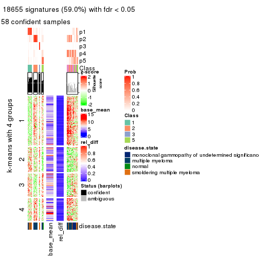
get_signatures(res, k = 6)
Signature heatmaps where rows are not scaled:
get_signatures(res, k = 2, scale_rows = FALSE)
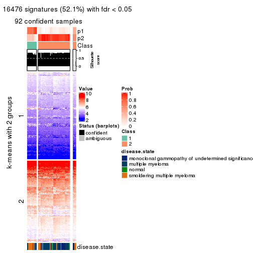
get_signatures(res, k = 3, scale_rows = FALSE)
get_signatures(res, k = 4, scale_rows = FALSE)
get_signatures(res, k = 5, scale_rows = FALSE)
get_signatures(res, k = 6, scale_rows = FALSE)

Compare the overlap of signatures from different k:
compare_signatures(res)
get_signature() returns a data frame invisibly. TO get the list of signatures, the function
call should be assigned to a variable explicitly. In following code, if plot argument is set
to FALSE, no heatmap is plotted while only the differential analysis is performed.
# code only for demonstration
tb = get_signature(res, k = ..., plot = FALSE)
An example of the output of tb is:
#> which_row fdr mean_1 mean_2 scaled_mean_1 scaled_mean_2 km
#> 1 38 0.042760348 8.373488 9.131774 -0.5533452 0.5164555 1
#> 2 40 0.018707592 7.106213 8.469186 -0.6173731 0.5762149 1
#> 3 55 0.019134737 10.221463 11.207825 -0.6159697 0.5749050 1
#> 4 59 0.006059896 5.921854 7.869574 -0.6899429 0.6439467 1
#> 5 60 0.018055526 8.928898 10.211722 -0.6204761 0.5791110 1
#> 6 98 0.009384629 15.714769 14.887706 0.6635654 -0.6193277 2
...
The columns in tb are:
which_row: row indices corresponding to the input matrix.fdr: FDR for the differential test. mean_x: The mean value in group x.scaled_mean_x: The mean value in group x after rows are scaled.km: Row groups if k-means clustering is applied to rows.UMAP plot which shows how samples are separated.
dimension_reduction(res, k = 2, method = "UMAP")
dimension_reduction(res, k = 3, method = "UMAP")
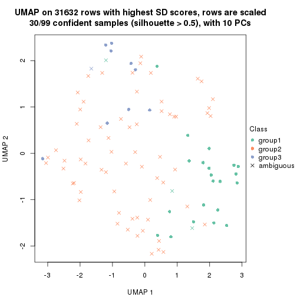
dimension_reduction(res, k = 4, method = "UMAP")
dimension_reduction(res, k = 5, method = "UMAP")
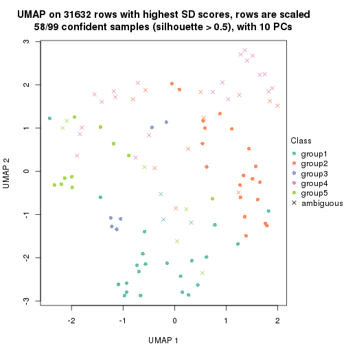
dimension_reduction(res, k = 6, method = "UMAP")
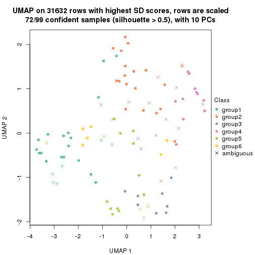
Following heatmap shows how subgroups are split when increasing k:
collect_classes(res)
Test correlation between subgroups and known annotations. If the known annotation is numeric, one-way ANOVA test is applied, and if the known annotation is discrete, chi-squared contingency table test is applied.
test_to_known_factors(res)
#> n disease.state(p) k
#> SD:hclust 92 1.16e-03 2
#> SD:hclust 30 8.33e-04 3
#> SD:hclust 64 1.08e-13 4
#> SD:hclust 58 5.47e-11 5
#> SD:hclust 72 6.67e-18 6
If matrix rows can be associated to genes, consider to use GO_Enrichment(res,
...) to perform function enrichment for the signature genes.
The object with results only for a single top-value method and a single partition method can be extracted as:
res = res_list["SD", "kmeans"]
# you can also extract it by
# res = res_list["SD:kmeans"]
A summary of res and all the functions that can be applied to it:
res
#> A 'ConsensusPartition' object with k = 2, 3, 4, 5, 6.
#> On a matrix with 31632 rows and 99 columns.
#> Top rows (1000, 2000, 3000, 4000, 5000) are extracted by 'SD' method.
#> Subgroups are detected by 'kmeans' method.
#> Performed in total 1250 partitions by row resampling.
#> Best k for subgroups seems to be 2.
#>
#> Following methods can be applied to this 'ConsensusPartition' object:
#> [1] "cola_report" "collect_classes" "collect_plots"
#> [4] "collect_stats" "colnames" "compare_signatures"
#> [7] "consensus_heatmap" "dimension_reduction" "functional_enrichment"
#> [10] "get_anno_col" "get_anno" "get_classes"
#> [13] "get_consensus" "get_matrix" "get_membership"
#> [16] "get_param" "get_signatures" "get_stats"
#> [19] "is_best_k" "is_stable_k" "membership_heatmap"
#> [22] "ncol" "nrow" "plot_ecdf"
#> [25] "rownames" "select_partition_number" "show"
#> [28] "suggest_best_k" "test_to_known_factors"
collect_plots() function collects all the plots made from res for all k (number of partitions)
into one single page to provide an easy and fast comparison between different k.
collect_plots(res)
The plots are:
k and the heatmap of
predicted classes for each k.k.k.k.All the plots in panels can be made by individual functions and they are plotted later in this section.
select_partition_number() produces several plots showing different
statistics for choosing “optimized” k. There are following statistics:
k;k, the area increased is defined as \(A_k - A_{k-1}\).The detailed explanations of these statistics can be found in the cola vignette.
Generally speaking, lower PAC score, higher mean silhouette score or higher
concordance corresponds to better partition. Rand index and Jaccard index
measure how similar the current partition is compared to partition with k-1.
If they are too similar, we won't accept k is better than k-1.
select_partition_number(res)
The numeric values for all these statistics can be obtained by get_stats().
get_stats(res)
#> k 1-PAC mean_silhouette concordance area_increased Rand Jaccard
#> 2 2 0.627 0.861 0.924 0.5022 0.499 0.499
#> 3 3 0.440 0.693 0.819 0.2935 0.796 0.613
#> 4 4 0.524 0.610 0.752 0.1278 0.871 0.651
#> 5 5 0.626 0.622 0.729 0.0691 0.927 0.735
#> 6 6 0.695 0.589 0.756 0.0457 0.957 0.806
suggest_best_k() suggests the best \(k\) based on these statistics. The rules are as follows:
NA.suggest_best_k(res)
#> [1] 2
Following shows the table of the partitions (You need to click the show/hide
code output link to see it). The membership matrix (columns with name p*)
is inferred by
clue::cl_consensus()
function with the SE method. Basically the value in the membership matrix
represents the probability to belong to a certain group. The finall class
label for an item is determined with the group with highest probability it
belongs to.
In get_classes() function, the entropy is calculated from the membership
matrix and the silhouette score is calculated from the consensus matrix.
cbind(get_classes(res, k = 2), get_membership(res, k = 2))
#> class entropy silhouette p1 p2
#> GSM1152309 2 0.0000 0.9090 0.000 1.000
#> GSM1152310 2 0.0000 0.9090 0.000 1.000
#> GSM1152311 2 0.2603 0.9068 0.044 0.956
#> GSM1152312 1 0.0672 0.9288 0.992 0.008
#> GSM1152313 2 0.4431 0.8527 0.092 0.908
#> GSM1152314 1 0.0938 0.9231 0.988 0.012
#> GSM1152315 2 0.2043 0.9082 0.032 0.968
#> GSM1152316 2 0.0672 0.9063 0.008 0.992
#> GSM1152317 2 0.0000 0.9090 0.000 1.000
#> GSM1152318 2 0.0000 0.9090 0.000 1.000
#> GSM1152319 2 0.2948 0.9049 0.052 0.948
#> GSM1152320 2 0.5178 0.8729 0.116 0.884
#> GSM1152321 2 0.0000 0.9090 0.000 1.000
#> GSM1152322 2 0.0000 0.9090 0.000 1.000
#> GSM1152323 2 0.0672 0.9063 0.008 0.992
#> GSM1152324 2 0.2778 0.9059 0.048 0.952
#> GSM1152325 2 0.0000 0.9090 0.000 1.000
#> GSM1152326 2 0.2948 0.9049 0.052 0.948
#> GSM1152327 2 0.0672 0.9063 0.008 0.992
#> GSM1152328 2 0.7453 0.7910 0.212 0.788
#> GSM1152329 2 0.7453 0.7910 0.212 0.788
#> GSM1152330 2 0.5519 0.8646 0.128 0.872
#> GSM1152331 2 0.2778 0.9059 0.048 0.952
#> GSM1152332 1 0.0672 0.9288 0.992 0.008
#> GSM1152333 2 0.9988 0.2395 0.480 0.520
#> GSM1152334 2 0.0938 0.9061 0.012 0.988
#> GSM1152335 2 0.5294 0.8703 0.120 0.880
#> GSM1152336 2 0.2778 0.9059 0.048 0.952
#> GSM1152337 2 0.2948 0.9049 0.052 0.948
#> GSM1152338 2 0.3584 0.8990 0.068 0.932
#> GSM1152339 2 0.7453 0.7910 0.212 0.788
#> GSM1152340 2 0.5946 0.8493 0.144 0.856
#> GSM1152341 2 0.7453 0.7910 0.212 0.788
#> GSM1152342 2 0.2948 0.9049 0.052 0.948
#> GSM1152343 2 0.2948 0.9049 0.052 0.948
#> GSM1152344 2 0.0938 0.9100 0.012 0.988
#> GSM1152345 2 0.1633 0.9094 0.024 0.976
#> GSM1152346 2 0.0376 0.9079 0.004 0.996
#> GSM1152347 1 0.2948 0.9074 0.948 0.052
#> GSM1152348 2 0.7453 0.7910 0.212 0.788
#> GSM1152349 1 0.2778 0.9090 0.952 0.048
#> GSM1152355 1 0.0672 0.9288 0.992 0.008
#> GSM1152356 1 0.0672 0.9288 0.992 0.008
#> GSM1152357 1 0.0672 0.9288 0.992 0.008
#> GSM1152358 2 0.0938 0.9061 0.012 0.988
#> GSM1152359 2 0.7453 0.7910 0.212 0.788
#> GSM1152360 1 0.0672 0.9288 0.992 0.008
#> GSM1152361 2 0.7219 0.8030 0.200 0.800
#> GSM1152362 2 0.0938 0.9100 0.012 0.988
#> GSM1152363 1 0.0672 0.9288 0.992 0.008
#> GSM1152364 1 0.0672 0.9288 0.992 0.008
#> GSM1152365 1 0.0672 0.9288 0.992 0.008
#> GSM1152366 1 0.0672 0.9288 0.992 0.008
#> GSM1152367 1 0.0672 0.9288 0.992 0.008
#> GSM1152368 1 0.0672 0.9288 0.992 0.008
#> GSM1152369 1 0.0672 0.9288 0.992 0.008
#> GSM1152370 1 0.0672 0.9288 0.992 0.008
#> GSM1152371 1 0.2603 0.9039 0.956 0.044
#> GSM1152372 1 0.0672 0.9288 0.992 0.008
#> GSM1152373 1 0.0672 0.9288 0.992 0.008
#> GSM1152374 2 0.6247 0.7947 0.156 0.844
#> GSM1152375 1 0.0672 0.9288 0.992 0.008
#> GSM1152376 1 0.0672 0.9288 0.992 0.008
#> GSM1152377 1 0.0672 0.9288 0.992 0.008
#> GSM1152378 1 0.0376 0.9275 0.996 0.004
#> GSM1152379 2 0.7453 0.7910 0.212 0.788
#> GSM1152380 1 0.0672 0.9288 0.992 0.008
#> GSM1152381 1 0.0672 0.9288 0.992 0.008
#> GSM1152382 1 0.5519 0.8143 0.872 0.128
#> GSM1152383 1 0.0000 0.9261 1.000 0.000
#> GSM1152384 1 0.0672 0.9288 0.992 0.008
#> GSM1152385 2 0.2778 0.9059 0.048 0.952
#> GSM1152386 2 0.0672 0.9063 0.008 0.992
#> GSM1152387 2 0.0938 0.9100 0.012 0.988
#> GSM1152289 2 0.1184 0.9102 0.016 0.984
#> GSM1152290 1 0.7453 0.7837 0.788 0.212
#> GSM1152291 1 0.6801 0.8154 0.820 0.180
#> GSM1152292 1 0.7453 0.7837 0.788 0.212
#> GSM1152293 1 0.7453 0.7837 0.788 0.212
#> GSM1152294 2 0.0938 0.9063 0.012 0.988
#> GSM1152295 1 0.2236 0.9139 0.964 0.036
#> GSM1152296 1 0.0672 0.9288 0.992 0.008
#> GSM1152297 1 0.7453 0.7837 0.788 0.212
#> GSM1152298 2 0.8555 0.5732 0.280 0.720
#> GSM1152299 2 0.0938 0.9061 0.012 0.988
#> GSM1152300 1 0.2948 0.9074 0.948 0.052
#> GSM1152301 1 0.2778 0.9090 0.952 0.048
#> GSM1152302 1 0.7453 0.7837 0.788 0.212
#> GSM1152303 1 0.7453 0.7837 0.788 0.212
#> GSM1152304 1 0.7453 0.7837 0.788 0.212
#> GSM1152305 1 0.5178 0.8667 0.884 0.116
#> GSM1152306 1 0.3274 0.9040 0.940 0.060
#> GSM1152307 1 0.2948 0.9074 0.948 0.052
#> GSM1152308 2 0.3733 0.8820 0.072 0.928
#> GSM1152350 2 0.0938 0.9063 0.012 0.988
#> GSM1152351 2 0.0672 0.9063 0.008 0.992
#> GSM1152352 2 0.0938 0.9063 0.012 0.988
#> GSM1152353 2 0.9922 0.0324 0.448 0.552
#> GSM1152354 1 0.9996 0.0432 0.512 0.488
cbind(get_classes(res, k = 3), get_membership(res, k = 3))
#> class entropy silhouette p1 p2 p3
#> GSM1152309 2 0.2261 0.7884 0.000 0.932 0.068
#> GSM1152310 2 0.5397 0.6207 0.000 0.720 0.280
#> GSM1152311 2 0.1585 0.7998 0.028 0.964 0.008
#> GSM1152312 1 0.4658 0.8297 0.856 0.068 0.076
#> GSM1152313 2 0.6305 0.2264 0.000 0.516 0.484
#> GSM1152314 1 0.4121 0.7867 0.832 0.000 0.168
#> GSM1152315 2 0.4235 0.7328 0.000 0.824 0.176
#> GSM1152316 2 0.5733 0.5479 0.000 0.676 0.324
#> GSM1152317 2 0.3340 0.7670 0.000 0.880 0.120
#> GSM1152318 2 0.3752 0.7525 0.000 0.856 0.144
#> GSM1152319 2 0.3947 0.7954 0.040 0.884 0.076
#> GSM1152320 2 0.2959 0.7866 0.100 0.900 0.000
#> GSM1152321 2 0.3340 0.7670 0.000 0.880 0.120
#> GSM1152322 2 0.3879 0.7472 0.000 0.848 0.152
#> GSM1152323 2 0.5650 0.5640 0.000 0.688 0.312
#> GSM1152324 2 0.2261 0.7870 0.000 0.932 0.068
#> GSM1152325 2 0.3267 0.7690 0.000 0.884 0.116
#> GSM1152326 2 0.2955 0.7916 0.080 0.912 0.008
#> GSM1152327 2 0.3482 0.7674 0.000 0.872 0.128
#> GSM1152328 2 0.5493 0.6916 0.232 0.756 0.012
#> GSM1152329 2 0.4808 0.7330 0.188 0.804 0.008
#> GSM1152330 2 0.3267 0.7797 0.116 0.884 0.000
#> GSM1152331 2 0.1031 0.7971 0.000 0.976 0.024
#> GSM1152332 1 0.3618 0.7955 0.884 0.104 0.012
#> GSM1152333 2 0.6565 0.3814 0.416 0.576 0.008
#> GSM1152334 3 0.5363 0.5353 0.000 0.276 0.724
#> GSM1152335 2 0.3500 0.7805 0.116 0.880 0.004
#> GSM1152336 2 0.1031 0.7978 0.000 0.976 0.024
#> GSM1152337 2 0.2537 0.7921 0.080 0.920 0.000
#> GSM1152338 2 0.2711 0.7904 0.088 0.912 0.000
#> GSM1152339 2 0.4755 0.7362 0.184 0.808 0.008
#> GSM1152340 2 0.4453 0.7638 0.152 0.836 0.012
#> GSM1152341 2 0.4589 0.7450 0.172 0.820 0.008
#> GSM1152342 2 0.5588 0.7750 0.068 0.808 0.124
#> GSM1152343 2 0.3183 0.7919 0.016 0.908 0.076
#> GSM1152344 2 0.1919 0.7996 0.024 0.956 0.020
#> GSM1152345 2 0.5831 0.7405 0.076 0.796 0.128
#> GSM1152346 2 0.3879 0.7472 0.000 0.848 0.152
#> GSM1152347 3 0.6286 0.1480 0.464 0.000 0.536
#> GSM1152348 2 0.4700 0.7392 0.180 0.812 0.008
#> GSM1152349 1 0.6225 0.1956 0.568 0.000 0.432
#> GSM1152355 1 0.2711 0.8704 0.912 0.000 0.088
#> GSM1152356 1 0.2959 0.8635 0.900 0.000 0.100
#> GSM1152357 1 0.2384 0.8774 0.936 0.008 0.056
#> GSM1152358 3 0.4750 0.5975 0.000 0.216 0.784
#> GSM1152359 2 0.6796 0.5466 0.344 0.632 0.024
#> GSM1152360 1 0.1711 0.8762 0.960 0.008 0.032
#> GSM1152361 2 0.7580 0.5112 0.340 0.604 0.056
#> GSM1152362 2 0.2793 0.8002 0.044 0.928 0.028
#> GSM1152363 1 0.1620 0.8729 0.964 0.024 0.012
#> GSM1152364 1 0.2796 0.8688 0.908 0.000 0.092
#> GSM1152365 1 0.2313 0.8594 0.944 0.032 0.024
#> GSM1152366 1 0.0237 0.8805 0.996 0.004 0.000
#> GSM1152367 1 0.2749 0.8550 0.924 0.012 0.064
#> GSM1152368 1 0.3816 0.8372 0.852 0.000 0.148
#> GSM1152369 1 0.2902 0.8521 0.920 0.016 0.064
#> GSM1152370 1 0.1711 0.8762 0.960 0.008 0.032
#> GSM1152371 1 0.3623 0.8351 0.896 0.032 0.072
#> GSM1152372 1 0.5473 0.8104 0.808 0.052 0.140
#> GSM1152373 1 0.3116 0.8467 0.892 0.000 0.108
#> GSM1152374 2 0.7139 0.5872 0.068 0.688 0.244
#> GSM1152375 1 0.1289 0.8811 0.968 0.000 0.032
#> GSM1152376 1 0.2711 0.8623 0.912 0.000 0.088
#> GSM1152377 1 0.1163 0.8800 0.972 0.000 0.028
#> GSM1152378 1 0.2537 0.8748 0.920 0.000 0.080
#> GSM1152379 2 0.6287 0.6491 0.272 0.704 0.024
#> GSM1152380 1 0.2625 0.8645 0.916 0.000 0.084
#> GSM1152381 1 0.0237 0.8805 0.996 0.004 0.000
#> GSM1152382 1 0.3276 0.8291 0.908 0.068 0.024
#> GSM1152383 1 0.3116 0.8575 0.892 0.000 0.108
#> GSM1152384 1 0.0829 0.8772 0.984 0.012 0.004
#> GSM1152385 2 0.1031 0.7971 0.000 0.976 0.024
#> GSM1152386 2 0.5733 0.5479 0.000 0.676 0.324
#> GSM1152387 2 0.2773 0.7991 0.048 0.928 0.024
#> GSM1152289 2 0.5212 0.7623 0.064 0.828 0.108
#> GSM1152290 3 0.3528 0.6886 0.092 0.016 0.892
#> GSM1152291 3 0.7810 0.4860 0.268 0.092 0.640
#> GSM1152292 3 0.4723 0.6631 0.160 0.016 0.824
#> GSM1152293 3 0.4782 0.6598 0.164 0.016 0.820
#> GSM1152294 3 0.5986 0.5214 0.012 0.284 0.704
#> GSM1152295 1 0.7589 0.3625 0.588 0.052 0.360
#> GSM1152296 1 0.2625 0.8718 0.916 0.000 0.084
#> GSM1152297 3 0.3669 0.6982 0.064 0.040 0.896
#> GSM1152298 3 0.3263 0.6973 0.040 0.048 0.912
#> GSM1152299 3 0.4842 0.5880 0.000 0.224 0.776
#> GSM1152300 3 0.6291 0.1344 0.468 0.000 0.532
#> GSM1152301 3 0.6309 0.0368 0.496 0.000 0.504
#> GSM1152302 3 0.4723 0.6631 0.160 0.016 0.824
#> GSM1152303 3 0.4723 0.6631 0.160 0.016 0.824
#> GSM1152304 3 0.3183 0.6924 0.076 0.016 0.908
#> GSM1152305 3 0.9773 0.1971 0.236 0.352 0.412
#> GSM1152306 3 0.4702 0.6099 0.212 0.000 0.788
#> GSM1152307 3 0.6274 0.1490 0.456 0.000 0.544
#> GSM1152308 2 0.8250 0.4493 0.108 0.600 0.292
#> GSM1152350 3 0.5831 0.5240 0.008 0.284 0.708
#> GSM1152351 3 0.5497 0.5095 0.000 0.292 0.708
#> GSM1152352 3 0.5797 0.5303 0.008 0.280 0.712
#> GSM1152353 3 0.7344 0.6352 0.100 0.204 0.696
#> GSM1152354 3 0.8675 0.6024 0.220 0.184 0.596
cbind(get_classes(res, k = 4), get_membership(res, k = 4))
#> class entropy silhouette p1 p2 p3 p4
#> GSM1152309 4 0.4872 0.776 0.000 0.356 0.004 0.640
#> GSM1152310 4 0.6768 0.684 0.004 0.228 0.148 0.620
#> GSM1152311 2 0.2654 0.645 0.000 0.888 0.004 0.108
#> GSM1152312 1 0.7428 0.565 0.596 0.252 0.040 0.112
#> GSM1152313 4 0.7143 0.636 0.000 0.208 0.232 0.560
#> GSM1152314 1 0.6044 0.589 0.700 0.008 0.188 0.104
#> GSM1152315 4 0.5626 0.684 0.000 0.384 0.028 0.588
#> GSM1152316 4 0.5590 0.798 0.000 0.244 0.064 0.692
#> GSM1152317 4 0.4855 0.706 0.000 0.400 0.000 0.600
#> GSM1152318 4 0.4897 0.804 0.000 0.332 0.008 0.660
#> GSM1152319 2 0.4262 0.390 0.000 0.756 0.008 0.236
#> GSM1152320 2 0.0804 0.696 0.000 0.980 0.008 0.012
#> GSM1152321 4 0.4819 0.793 0.000 0.344 0.004 0.652
#> GSM1152322 4 0.4722 0.812 0.000 0.300 0.008 0.692
#> GSM1152323 4 0.5559 0.796 0.000 0.240 0.064 0.696
#> GSM1152324 2 0.5161 -0.146 0.000 0.592 0.008 0.400
#> GSM1152325 4 0.4781 0.801 0.000 0.336 0.004 0.660
#> GSM1152326 2 0.0672 0.697 0.000 0.984 0.008 0.008
#> GSM1152327 4 0.5300 0.788 0.000 0.308 0.028 0.664
#> GSM1152328 2 0.2884 0.697 0.068 0.900 0.004 0.028
#> GSM1152329 2 0.2469 0.682 0.108 0.892 0.000 0.000
#> GSM1152330 2 0.0707 0.695 0.000 0.980 0.000 0.020
#> GSM1152331 2 0.4564 0.183 0.000 0.672 0.000 0.328
#> GSM1152332 1 0.5130 0.515 0.644 0.344 0.004 0.008
#> GSM1152333 2 0.3933 0.616 0.196 0.796 0.004 0.004
#> GSM1152334 3 0.6170 0.279 0.004 0.044 0.548 0.404
#> GSM1152335 2 0.0779 0.697 0.000 0.980 0.004 0.016
#> GSM1152336 2 0.2737 0.627 0.000 0.888 0.008 0.104
#> GSM1152337 2 0.1004 0.693 0.000 0.972 0.004 0.024
#> GSM1152338 2 0.1042 0.695 0.000 0.972 0.008 0.020
#> GSM1152339 2 0.2589 0.678 0.116 0.884 0.000 0.000
#> GSM1152340 2 0.4226 0.675 0.052 0.840 0.016 0.092
#> GSM1152341 2 0.2271 0.693 0.076 0.916 0.008 0.000
#> GSM1152342 2 0.5965 0.552 0.056 0.732 0.044 0.168
#> GSM1152343 2 0.5110 0.145 0.000 0.656 0.016 0.328
#> GSM1152344 2 0.3448 0.606 0.000 0.828 0.004 0.168
#> GSM1152345 2 0.4565 0.606 0.000 0.796 0.064 0.140
#> GSM1152346 4 0.4769 0.810 0.000 0.308 0.008 0.684
#> GSM1152347 3 0.7056 0.361 0.312 0.012 0.568 0.108
#> GSM1152348 2 0.2918 0.679 0.116 0.876 0.008 0.000
#> GSM1152349 3 0.6634 0.315 0.336 0.000 0.564 0.100
#> GSM1152355 1 0.1767 0.847 0.944 0.012 0.044 0.000
#> GSM1152356 1 0.1661 0.844 0.944 0.000 0.052 0.004
#> GSM1152357 1 0.2924 0.847 0.900 0.060 0.036 0.004
#> GSM1152358 3 0.5444 0.295 0.000 0.016 0.560 0.424
#> GSM1152359 2 0.5009 0.534 0.280 0.700 0.004 0.016
#> GSM1152360 1 0.2480 0.847 0.904 0.088 0.008 0.000
#> GSM1152361 2 0.7389 0.482 0.212 0.608 0.032 0.148
#> GSM1152362 2 0.3727 0.621 0.004 0.824 0.008 0.164
#> GSM1152363 1 0.1978 0.854 0.928 0.068 0.004 0.000
#> GSM1152364 1 0.1722 0.846 0.944 0.008 0.048 0.000
#> GSM1152365 1 0.3623 0.824 0.856 0.116 0.016 0.012
#> GSM1152366 1 0.2076 0.856 0.932 0.056 0.004 0.008
#> GSM1152367 1 0.4779 0.778 0.804 0.028 0.036 0.132
#> GSM1152368 1 0.5326 0.706 0.724 0.008 0.040 0.228
#> GSM1152369 1 0.4779 0.778 0.804 0.028 0.036 0.132
#> GSM1152370 1 0.2742 0.847 0.900 0.084 0.008 0.008
#> GSM1152371 1 0.5594 0.760 0.764 0.068 0.036 0.132
#> GSM1152372 1 0.7498 0.609 0.604 0.108 0.052 0.236
#> GSM1152373 1 0.4524 0.757 0.820 0.012 0.064 0.104
#> GSM1152374 2 0.6110 0.510 0.012 0.708 0.128 0.152
#> GSM1152375 1 0.2433 0.855 0.920 0.060 0.012 0.008
#> GSM1152376 1 0.3565 0.802 0.872 0.012 0.036 0.080
#> GSM1152377 1 0.2310 0.853 0.920 0.068 0.008 0.004
#> GSM1152378 1 0.3495 0.841 0.884 0.036 0.032 0.048
#> GSM1152379 2 0.5325 0.542 0.276 0.692 0.008 0.024
#> GSM1152380 1 0.2680 0.825 0.912 0.004 0.036 0.048
#> GSM1152381 1 0.2234 0.855 0.924 0.064 0.004 0.008
#> GSM1152382 1 0.4381 0.748 0.780 0.200 0.008 0.012
#> GSM1152383 1 0.2363 0.835 0.920 0.000 0.056 0.024
#> GSM1152384 1 0.2652 0.849 0.912 0.056 0.004 0.028
#> GSM1152385 2 0.4605 0.155 0.000 0.664 0.000 0.336
#> GSM1152386 4 0.5619 0.799 0.000 0.248 0.064 0.688
#> GSM1152387 2 0.4218 0.612 0.008 0.796 0.012 0.184
#> GSM1152289 2 0.5007 0.603 0.008 0.776 0.060 0.156
#> GSM1152290 3 0.2385 0.644 0.028 0.000 0.920 0.052
#> GSM1152291 3 0.8019 0.465 0.144 0.132 0.600 0.124
#> GSM1152292 3 0.1389 0.655 0.048 0.000 0.952 0.000
#> GSM1152293 3 0.1389 0.655 0.048 0.000 0.952 0.000
#> GSM1152294 3 0.5895 0.295 0.004 0.028 0.544 0.424
#> GSM1152295 3 0.8996 0.164 0.316 0.140 0.432 0.112
#> GSM1152296 1 0.1576 0.845 0.948 0.004 0.048 0.000
#> GSM1152297 3 0.4008 0.592 0.032 0.000 0.820 0.148
#> GSM1152298 3 0.1890 0.635 0.008 0.000 0.936 0.056
#> GSM1152299 4 0.5510 -0.171 0.000 0.016 0.480 0.504
#> GSM1152300 3 0.7056 0.361 0.312 0.012 0.568 0.108
#> GSM1152301 3 0.6603 0.338 0.328 0.000 0.572 0.100
#> GSM1152302 3 0.1389 0.655 0.048 0.000 0.952 0.000
#> GSM1152303 3 0.1389 0.655 0.048 0.000 0.952 0.000
#> GSM1152304 3 0.1820 0.645 0.020 0.000 0.944 0.036
#> GSM1152305 2 0.9283 0.127 0.120 0.412 0.288 0.180
#> GSM1152306 3 0.1474 0.655 0.052 0.000 0.948 0.000
#> GSM1152307 3 0.5430 0.432 0.300 0.000 0.664 0.036
#> GSM1152308 2 0.8027 0.373 0.072 0.568 0.232 0.128
#> GSM1152350 3 0.5648 0.304 0.004 0.016 0.536 0.444
#> GSM1152351 3 0.5648 0.304 0.004 0.016 0.536 0.444
#> GSM1152352 3 0.5648 0.304 0.004 0.016 0.536 0.444
#> GSM1152353 3 0.6208 0.375 0.040 0.008 0.556 0.396
#> GSM1152354 3 0.7286 0.411 0.140 0.008 0.540 0.312
cbind(get_classes(res, k = 5), get_membership(res, k = 5))
#> class entropy silhouette p1 p2 p3 p4 p5
#> GSM1152309 4 0.1043 0.8153 0.000 0.040 0.000 0.960 0.000
#> GSM1152310 4 0.5819 0.0174 0.000 0.072 0.008 0.512 0.408
#> GSM1152311 2 0.5194 0.6506 0.000 0.672 0.068 0.252 0.008
#> GSM1152312 1 0.7176 0.2792 0.428 0.204 0.344 0.004 0.020
#> GSM1152313 4 0.4657 0.5752 0.000 0.020 0.240 0.716 0.024
#> GSM1152314 1 0.4691 0.4172 0.604 0.008 0.380 0.004 0.004
#> GSM1152315 4 0.4487 0.6955 0.000 0.140 0.000 0.756 0.104
#> GSM1152316 4 0.1082 0.8075 0.000 0.028 0.000 0.964 0.008
#> GSM1152317 4 0.1544 0.8011 0.000 0.068 0.000 0.932 0.000
#> GSM1152318 4 0.1043 0.8154 0.000 0.040 0.000 0.960 0.000
#> GSM1152319 2 0.4109 0.5236 0.000 0.700 0.000 0.288 0.012
#> GSM1152320 2 0.1731 0.7818 0.004 0.932 0.000 0.060 0.004
#> GSM1152321 4 0.1043 0.8154 0.000 0.040 0.000 0.960 0.000
#> GSM1152322 4 0.0794 0.8142 0.000 0.028 0.000 0.972 0.000
#> GSM1152323 4 0.2012 0.7784 0.000 0.020 0.000 0.920 0.060
#> GSM1152324 4 0.4067 0.5804 0.000 0.300 0.000 0.692 0.008
#> GSM1152325 4 0.1043 0.8154 0.000 0.040 0.000 0.960 0.000
#> GSM1152326 2 0.1770 0.7843 0.008 0.936 0.000 0.048 0.008
#> GSM1152327 4 0.1412 0.8077 0.000 0.036 0.004 0.952 0.008
#> GSM1152328 2 0.3012 0.7820 0.040 0.880 0.068 0.004 0.008
#> GSM1152329 2 0.1484 0.7840 0.048 0.944 0.000 0.008 0.000
#> GSM1152330 2 0.2597 0.7847 0.004 0.900 0.032 0.060 0.004
#> GSM1152331 4 0.3990 0.5508 0.000 0.308 0.000 0.688 0.004
#> GSM1152332 1 0.5773 0.1150 0.500 0.432 0.052 0.000 0.016
#> GSM1152333 2 0.3031 0.7837 0.060 0.880 0.048 0.004 0.008
#> GSM1152334 5 0.5381 0.7569 0.000 0.048 0.052 0.196 0.704
#> GSM1152335 2 0.3433 0.7783 0.004 0.856 0.064 0.068 0.008
#> GSM1152336 2 0.2997 0.7276 0.000 0.840 0.000 0.148 0.012
#> GSM1152337 2 0.2179 0.7784 0.000 0.912 0.008 0.072 0.008
#> GSM1152338 2 0.1798 0.7806 0.004 0.928 0.000 0.064 0.004
#> GSM1152339 2 0.1484 0.7840 0.048 0.944 0.000 0.008 0.000
#> GSM1152340 2 0.6125 0.7363 0.096 0.712 0.092 0.048 0.052
#> GSM1152341 2 0.1646 0.7852 0.032 0.944 0.000 0.020 0.004
#> GSM1152342 2 0.5980 0.6533 0.060 0.684 0.008 0.072 0.176
#> GSM1152343 2 0.5700 0.1110 0.000 0.532 0.000 0.380 0.088
#> GSM1152344 2 0.5491 0.6219 0.000 0.636 0.080 0.276 0.008
#> GSM1152345 2 0.6561 0.7191 0.036 0.676 0.108 0.104 0.076
#> GSM1152346 4 0.0703 0.8136 0.000 0.024 0.000 0.976 0.000
#> GSM1152347 3 0.3538 0.5224 0.176 0.000 0.804 0.004 0.016
#> GSM1152348 2 0.1695 0.7826 0.044 0.940 0.000 0.008 0.008
#> GSM1152349 3 0.4323 0.5056 0.240 0.000 0.728 0.004 0.028
#> GSM1152355 1 0.1787 0.7957 0.940 0.012 0.032 0.000 0.016
#> GSM1152356 1 0.1967 0.7958 0.932 0.012 0.036 0.000 0.020
#> GSM1152357 1 0.3551 0.7685 0.840 0.096 0.008 0.000 0.056
#> GSM1152358 5 0.5623 0.6666 0.000 0.000 0.104 0.300 0.596
#> GSM1152359 2 0.4949 0.6648 0.196 0.728 0.008 0.008 0.060
#> GSM1152360 1 0.2228 0.7956 0.908 0.076 0.004 0.000 0.012
#> GSM1152361 2 0.7966 0.4459 0.140 0.520 0.188 0.024 0.128
#> GSM1152362 2 0.6334 0.7112 0.012 0.668 0.112 0.148 0.060
#> GSM1152363 1 0.2095 0.8009 0.924 0.052 0.016 0.004 0.004
#> GSM1152364 1 0.1690 0.7998 0.944 0.024 0.024 0.000 0.008
#> GSM1152365 1 0.3648 0.7224 0.792 0.188 0.004 0.000 0.016
#> GSM1152366 1 0.1591 0.8026 0.940 0.052 0.004 0.000 0.004
#> GSM1152367 1 0.6237 0.6087 0.680 0.052 0.132 0.016 0.120
#> GSM1152368 1 0.7335 0.3940 0.480 0.040 0.340 0.020 0.120
#> GSM1152369 1 0.6237 0.6087 0.680 0.052 0.132 0.016 0.120
#> GSM1152370 1 0.2304 0.7954 0.908 0.068 0.004 0.000 0.020
#> GSM1152371 1 0.6839 0.5839 0.636 0.096 0.132 0.016 0.120
#> GSM1152372 3 0.7823 -0.2590 0.336 0.080 0.440 0.016 0.128
#> GSM1152373 1 0.4397 0.6060 0.708 0.016 0.268 0.004 0.004
#> GSM1152374 2 0.7079 0.6996 0.044 0.636 0.124 0.096 0.100
#> GSM1152375 1 0.2390 0.7967 0.908 0.060 0.008 0.000 0.024
#> GSM1152376 1 0.3408 0.7456 0.840 0.020 0.128 0.004 0.008
#> GSM1152377 1 0.2074 0.7984 0.920 0.060 0.004 0.000 0.016
#> GSM1152378 1 0.3960 0.7741 0.832 0.040 0.088 0.004 0.036
#> GSM1152379 2 0.5111 0.6713 0.188 0.724 0.008 0.012 0.068
#> GSM1152380 1 0.2612 0.7727 0.892 0.016 0.084 0.004 0.004
#> GSM1152381 1 0.1430 0.8022 0.944 0.052 0.004 0.000 0.000
#> GSM1152382 1 0.4146 0.6301 0.716 0.268 0.004 0.000 0.012
#> GSM1152383 1 0.2061 0.7880 0.924 0.004 0.056 0.004 0.012
#> GSM1152384 1 0.2689 0.7864 0.896 0.040 0.056 0.004 0.004
#> GSM1152385 4 0.3906 0.5800 0.000 0.292 0.000 0.704 0.004
#> GSM1152386 4 0.0992 0.8085 0.000 0.024 0.000 0.968 0.008
#> GSM1152387 2 0.6254 0.6949 0.004 0.656 0.120 0.168 0.052
#> GSM1152289 2 0.6533 0.6954 0.008 0.648 0.128 0.144 0.072
#> GSM1152290 3 0.4362 0.3933 0.004 0.000 0.632 0.004 0.360
#> GSM1152291 3 0.4139 0.4898 0.080 0.052 0.824 0.004 0.040
#> GSM1152292 3 0.4446 0.3145 0.004 0.000 0.520 0.000 0.476
#> GSM1152293 3 0.4446 0.3145 0.004 0.000 0.520 0.000 0.476
#> GSM1152294 5 0.3675 0.8242 0.004 0.000 0.008 0.216 0.772
#> GSM1152295 3 0.4404 0.4792 0.128 0.068 0.788 0.004 0.012
#> GSM1152296 1 0.1757 0.7923 0.936 0.004 0.048 0.000 0.012
#> GSM1152297 5 0.4848 0.2770 0.004 0.000 0.320 0.032 0.644
#> GSM1152298 3 0.4560 0.2732 0.000 0.000 0.508 0.008 0.484
#> GSM1152299 4 0.5773 -0.1761 0.000 0.000 0.100 0.544 0.356
#> GSM1152300 3 0.3280 0.5225 0.176 0.000 0.812 0.000 0.012
#> GSM1152301 3 0.4323 0.5056 0.240 0.000 0.728 0.004 0.028
#> GSM1152302 3 0.4446 0.3145 0.004 0.000 0.520 0.000 0.476
#> GSM1152303 3 0.4446 0.3145 0.004 0.000 0.520 0.000 0.476
#> GSM1152304 3 0.4555 0.3044 0.000 0.000 0.520 0.008 0.472
#> GSM1152305 3 0.7511 -0.2210 0.048 0.388 0.444 0.048 0.072
#> GSM1152306 3 0.4446 0.3145 0.004 0.000 0.520 0.000 0.476
#> GSM1152307 3 0.5819 0.4809 0.200 0.000 0.612 0.000 0.188
#> GSM1152308 2 0.7541 0.4487 0.076 0.524 0.036 0.080 0.284
#> GSM1152350 5 0.3088 0.8499 0.004 0.000 0.004 0.164 0.828
#> GSM1152351 5 0.2970 0.8487 0.000 0.000 0.004 0.168 0.828
#> GSM1152352 5 0.3088 0.8499 0.004 0.000 0.004 0.164 0.828
#> GSM1152353 5 0.3080 0.8384 0.008 0.000 0.008 0.140 0.844
#> GSM1152354 5 0.3142 0.8240 0.016 0.004 0.004 0.124 0.852
cbind(get_classes(res, k = 6), get_membership(res, k = 6))
#> class entropy silhouette p1 p2 p3 p4 p5 p6
#> GSM1152309 4 0.0777 0.8096 0.000 0.024 0.000 0.972 0.000 0.004
#> GSM1152310 5 0.7412 0.3173 0.012 0.104 0.012 0.292 0.448 0.132
#> GSM1152311 2 0.6185 0.5740 0.000 0.596 0.032 0.172 0.020 0.180
#> GSM1152312 6 0.8092 0.2264 0.240 0.172 0.232 0.000 0.028 0.328
#> GSM1152313 4 0.5563 0.5591 0.000 0.012 0.156 0.676 0.052 0.104
#> GSM1152314 1 0.5997 0.2596 0.532 0.008 0.308 0.000 0.016 0.136
#> GSM1152315 4 0.6032 0.4451 0.004 0.136 0.008 0.628 0.172 0.052
#> GSM1152316 4 0.1296 0.7977 0.000 0.004 0.000 0.952 0.012 0.032
#> GSM1152317 4 0.0363 0.8096 0.000 0.012 0.000 0.988 0.000 0.000
#> GSM1152318 4 0.0146 0.8108 0.000 0.004 0.000 0.996 0.000 0.000
#> GSM1152319 2 0.4204 0.5656 0.004 0.768 0.008 0.156 0.008 0.056
#> GSM1152320 2 0.1147 0.6937 0.004 0.960 0.000 0.028 0.004 0.004
#> GSM1152321 4 0.0260 0.8113 0.000 0.008 0.000 0.992 0.000 0.000
#> GSM1152322 4 0.0146 0.8105 0.000 0.000 0.000 0.996 0.000 0.004
#> GSM1152323 4 0.2173 0.7665 0.000 0.004 0.000 0.904 0.064 0.028
#> GSM1152324 4 0.4521 0.3951 0.000 0.400 0.000 0.568 0.004 0.028
#> GSM1152325 4 0.0405 0.8113 0.000 0.008 0.000 0.988 0.004 0.000
#> GSM1152326 2 0.1836 0.6901 0.008 0.936 0.008 0.024 0.004 0.020
#> GSM1152327 4 0.1708 0.7924 0.000 0.004 0.000 0.932 0.024 0.040
#> GSM1152328 2 0.4283 0.6438 0.008 0.748 0.036 0.004 0.012 0.192
#> GSM1152329 2 0.1442 0.7006 0.012 0.944 0.000 0.000 0.004 0.040
#> GSM1152330 2 0.2289 0.6985 0.004 0.908 0.020 0.004 0.008 0.056
#> GSM1152331 4 0.3819 0.5122 0.000 0.340 0.000 0.652 0.008 0.000
#> GSM1152332 1 0.6285 -0.0241 0.492 0.372 0.028 0.000 0.036 0.072
#> GSM1152333 2 0.3310 0.6831 0.012 0.840 0.028 0.000 0.012 0.108
#> GSM1152334 5 0.6203 0.5931 0.000 0.096 0.044 0.096 0.652 0.112
#> GSM1152335 2 0.3582 0.6713 0.004 0.812 0.028 0.004 0.012 0.140
#> GSM1152336 2 0.2696 0.6654 0.000 0.884 0.004 0.056 0.012 0.044
#> GSM1152337 2 0.1059 0.7012 0.000 0.964 0.000 0.016 0.004 0.016
#> GSM1152338 2 0.1007 0.6950 0.000 0.968 0.004 0.016 0.004 0.008
#> GSM1152339 2 0.1442 0.7006 0.012 0.944 0.000 0.000 0.004 0.040
#> GSM1152340 2 0.6773 0.5795 0.036 0.592 0.056 0.020 0.092 0.204
#> GSM1152341 2 0.0912 0.6944 0.012 0.972 0.000 0.008 0.004 0.004
#> GSM1152342 2 0.6807 0.4257 0.064 0.556 0.012 0.020 0.236 0.112
#> GSM1152343 2 0.6214 0.3413 0.004 0.604 0.008 0.196 0.132 0.056
#> GSM1152344 2 0.6648 0.5224 0.000 0.532 0.040 0.208 0.020 0.200
#> GSM1152345 2 0.7073 0.5634 0.028 0.560 0.064 0.028 0.104 0.216
#> GSM1152346 4 0.0291 0.8105 0.000 0.004 0.000 0.992 0.000 0.004
#> GSM1152347 3 0.3120 0.5960 0.056 0.004 0.856 0.000 0.012 0.072
#> GSM1152348 2 0.1462 0.6892 0.016 0.952 0.004 0.008 0.004 0.016
#> GSM1152349 3 0.2661 0.6123 0.092 0.004 0.876 0.000 0.012 0.016
#> GSM1152355 1 0.1007 0.7716 0.956 0.000 0.044 0.000 0.000 0.000
#> GSM1152356 1 0.1082 0.7709 0.956 0.000 0.040 0.000 0.004 0.000
#> GSM1152357 1 0.4286 0.6446 0.792 0.016 0.036 0.000 0.072 0.084
#> GSM1152358 5 0.6154 0.4816 0.000 0.000 0.112 0.336 0.504 0.048
#> GSM1152359 2 0.6652 0.4185 0.204 0.568 0.012 0.004 0.084 0.128
#> GSM1152360 1 0.1602 0.7736 0.944 0.016 0.016 0.000 0.004 0.020
#> GSM1152361 6 0.4734 0.3654 0.096 0.204 0.004 0.000 0.004 0.692
#> GSM1152362 2 0.7343 0.5290 0.012 0.504 0.056 0.060 0.104 0.264
#> GSM1152363 1 0.2947 0.7377 0.872 0.012 0.036 0.000 0.012 0.068
#> GSM1152364 1 0.1007 0.7716 0.956 0.000 0.044 0.000 0.000 0.000
#> GSM1152365 1 0.2978 0.6955 0.868 0.076 0.008 0.000 0.032 0.016
#> GSM1152366 1 0.1508 0.7620 0.940 0.004 0.004 0.000 0.004 0.048
#> GSM1152367 6 0.4126 0.3101 0.480 0.000 0.004 0.000 0.004 0.512
#> GSM1152368 6 0.4989 0.4368 0.248 0.000 0.108 0.000 0.004 0.640
#> GSM1152369 6 0.4126 0.3101 0.480 0.000 0.004 0.000 0.004 0.512
#> GSM1152370 1 0.1672 0.7589 0.940 0.016 0.004 0.000 0.028 0.012
#> GSM1152371 6 0.4552 0.3034 0.472 0.008 0.008 0.000 0.008 0.504
#> GSM1152372 6 0.4125 0.5042 0.136 0.016 0.068 0.000 0.004 0.776
#> GSM1152373 1 0.6070 0.3008 0.560 0.016 0.264 0.000 0.016 0.144
#> GSM1152374 2 0.7733 0.4644 0.040 0.452 0.068 0.020 0.148 0.272
#> GSM1152375 1 0.2214 0.7432 0.912 0.012 0.004 0.000 0.044 0.028
#> GSM1152376 1 0.4205 0.6538 0.780 0.008 0.092 0.000 0.016 0.104
#> GSM1152377 1 0.1533 0.7682 0.948 0.012 0.008 0.000 0.016 0.016
#> GSM1152378 1 0.4718 0.6439 0.760 0.020 0.044 0.000 0.064 0.112
#> GSM1152379 2 0.6291 0.4836 0.164 0.620 0.012 0.004 0.088 0.112
#> GSM1152380 1 0.3228 0.7133 0.848 0.004 0.056 0.000 0.012 0.080
#> GSM1152381 1 0.1015 0.7683 0.968 0.004 0.012 0.000 0.004 0.012
#> GSM1152382 1 0.3970 0.5674 0.776 0.168 0.008 0.000 0.032 0.016
#> GSM1152383 1 0.1411 0.7685 0.936 0.000 0.060 0.000 0.000 0.004
#> GSM1152384 1 0.3402 0.7094 0.840 0.012 0.044 0.000 0.012 0.092
#> GSM1152385 4 0.3827 0.5612 0.000 0.308 0.000 0.680 0.008 0.004
#> GSM1152386 4 0.1296 0.7977 0.000 0.004 0.000 0.952 0.012 0.032
#> GSM1152387 2 0.7230 0.5305 0.008 0.508 0.064 0.060 0.088 0.272
#> GSM1152289 2 0.7229 0.5252 0.008 0.504 0.068 0.052 0.092 0.276
#> GSM1152290 3 0.3488 0.6409 0.004 0.000 0.744 0.000 0.244 0.008
#> GSM1152291 3 0.4475 0.4370 0.012 0.012 0.700 0.000 0.028 0.248
#> GSM1152292 3 0.3940 0.6231 0.012 0.000 0.640 0.000 0.348 0.000
#> GSM1152293 3 0.3940 0.6231 0.012 0.000 0.640 0.000 0.348 0.000
#> GSM1152294 5 0.3910 0.7151 0.000 0.000 0.012 0.132 0.784 0.072
#> GSM1152295 3 0.5240 0.3273 0.032 0.032 0.652 0.000 0.024 0.260
#> GSM1152296 1 0.1007 0.7716 0.956 0.000 0.044 0.000 0.000 0.000
#> GSM1152297 5 0.4890 -0.0807 0.008 0.000 0.404 0.004 0.548 0.036
#> GSM1152298 3 0.3983 0.6132 0.000 0.000 0.640 0.004 0.348 0.008
#> GSM1152299 4 0.5178 0.3282 0.000 0.000 0.084 0.652 0.236 0.028
#> GSM1152300 3 0.3021 0.5980 0.056 0.004 0.860 0.000 0.008 0.072
#> GSM1152301 3 0.2933 0.6066 0.088 0.004 0.864 0.000 0.012 0.032
#> GSM1152302 3 0.3940 0.6231 0.012 0.000 0.640 0.000 0.348 0.000
#> GSM1152303 3 0.3940 0.6231 0.012 0.000 0.640 0.000 0.348 0.000
#> GSM1152304 3 0.4074 0.6214 0.008 0.000 0.640 0.000 0.344 0.008
#> GSM1152305 6 0.8087 -0.2357 0.036 0.292 0.200 0.016 0.088 0.368
#> GSM1152306 3 0.3940 0.6231 0.012 0.000 0.640 0.000 0.348 0.000
#> GSM1152307 3 0.3782 0.6304 0.096 0.000 0.780 0.000 0.124 0.000
#> GSM1152308 2 0.8514 0.2402 0.116 0.332 0.040 0.028 0.280 0.204
#> GSM1152350 5 0.2006 0.7341 0.000 0.000 0.004 0.104 0.892 0.000
#> GSM1152351 5 0.2070 0.7349 0.000 0.000 0.008 0.100 0.892 0.000
#> GSM1152352 5 0.2070 0.7349 0.000 0.000 0.008 0.100 0.892 0.000
#> GSM1152353 5 0.2039 0.7256 0.004 0.000 0.016 0.072 0.908 0.000
#> GSM1152354 5 0.1320 0.6800 0.036 0.000 0.000 0.016 0.948 0.000
Heatmaps for the consensus matrix. It visualizes the probability of two samples to be in a same group.
consensus_heatmap(res, k = 2)
consensus_heatmap(res, k = 3)
consensus_heatmap(res, k = 4)
consensus_heatmap(res, k = 5)
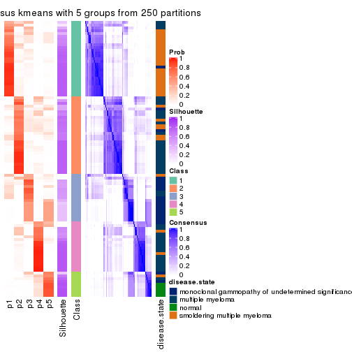
consensus_heatmap(res, k = 6)
Heatmaps for the membership of samples in all partitions to see how consistent they are:
membership_heatmap(res, k = 2)
membership_heatmap(res, k = 3)
membership_heatmap(res, k = 4)
membership_heatmap(res, k = 5)

membership_heatmap(res, k = 6)
As soon as we have had the classes for columns, we can look for signatures which are significantly different between classes which can be candidate marks for certain classes. Following are the heatmaps for signatures.
Signature heatmaps where rows are scaled:
get_signatures(res, k = 2)
get_signatures(res, k = 3)
get_signatures(res, k = 4)
get_signatures(res, k = 5)
get_signatures(res, k = 6)
Signature heatmaps where rows are not scaled:
get_signatures(res, k = 2, scale_rows = FALSE)
get_signatures(res, k = 3, scale_rows = FALSE)
get_signatures(res, k = 4, scale_rows = FALSE)
get_signatures(res, k = 5, scale_rows = FALSE)
get_signatures(res, k = 6, scale_rows = FALSE)
Compare the overlap of signatures from different k:
compare_signatures(res)
get_signature() returns a data frame invisibly. TO get the list of signatures, the function
call should be assigned to a variable explicitly. In following code, if plot argument is set
to FALSE, no heatmap is plotted while only the differential analysis is performed.
# code only for demonstration
tb = get_signature(res, k = ..., plot = FALSE)
An example of the output of tb is:
#> which_row fdr mean_1 mean_2 scaled_mean_1 scaled_mean_2 km
#> 1 38 0.042760348 8.373488 9.131774 -0.5533452 0.5164555 1
#> 2 40 0.018707592 7.106213 8.469186 -0.6173731 0.5762149 1
#> 3 55 0.019134737 10.221463 11.207825 -0.6159697 0.5749050 1
#> 4 59 0.006059896 5.921854 7.869574 -0.6899429 0.6439467 1
#> 5 60 0.018055526 8.928898 10.211722 -0.6204761 0.5791110 1
#> 6 98 0.009384629 15.714769 14.887706 0.6635654 -0.6193277 2
...
The columns in tb are:
which_row: row indices corresponding to the input matrix.fdr: FDR for the differential test. mean_x: The mean value in group x.scaled_mean_x: The mean value in group x after rows are scaled.km: Row groups if k-means clustering is applied to rows.UMAP plot which shows how samples are separated.
dimension_reduction(res, k = 2, method = "UMAP")
dimension_reduction(res, k = 3, method = "UMAP")
dimension_reduction(res, k = 4, method = "UMAP")
dimension_reduction(res, k = 5, method = "UMAP")

dimension_reduction(res, k = 6, method = "UMAP")

Following heatmap shows how subgroups are split when increasing k:
collect_classes(res)
Test correlation between subgroups and known annotations. If the known annotation is numeric, one-way ANOVA test is applied, and if the known annotation is discrete, chi-squared contingency table test is applied.
test_to_known_factors(res)
#> n disease.state(p) k
#> SD:kmeans 96 4.81e-08 2
#> SD:kmeans 88 3.69e-20 3
#> SD:kmeans 75 5.90e-19 4
#> SD:kmeans 76 4.88e-17 5
#> SD:kmeans 75 2.87e-24 6
If matrix rows can be associated to genes, consider to use GO_Enrichment(res,
...) to perform function enrichment for the signature genes.
The object with results only for a single top-value method and a single partition method can be extracted as:
res = res_list["SD", "skmeans"]
# you can also extract it by
# res = res_list["SD:skmeans"]
A summary of res and all the functions that can be applied to it:
res
#> A 'ConsensusPartition' object with k = 2, 3, 4, 5, 6.
#> On a matrix with 31632 rows and 99 columns.
#> Top rows (1000, 2000, 3000, 4000, 5000) are extracted by 'SD' method.
#> Subgroups are detected by 'skmeans' method.
#> Performed in total 1250 partitions by row resampling.
#> Best k for subgroups seems to be 2.
#>
#> Following methods can be applied to this 'ConsensusPartition' object:
#> [1] "cola_report" "collect_classes" "collect_plots"
#> [4] "collect_stats" "colnames" "compare_signatures"
#> [7] "consensus_heatmap" "dimension_reduction" "functional_enrichment"
#> [10] "get_anno_col" "get_anno" "get_classes"
#> [13] "get_consensus" "get_matrix" "get_membership"
#> [16] "get_param" "get_signatures" "get_stats"
#> [19] "is_best_k" "is_stable_k" "membership_heatmap"
#> [22] "ncol" "nrow" "plot_ecdf"
#> [25] "rownames" "select_partition_number" "show"
#> [28] "suggest_best_k" "test_to_known_factors"
collect_plots() function collects all the plots made from res for all k (number of partitions)
into one single page to provide an easy and fast comparison between different k.
collect_plots(res)
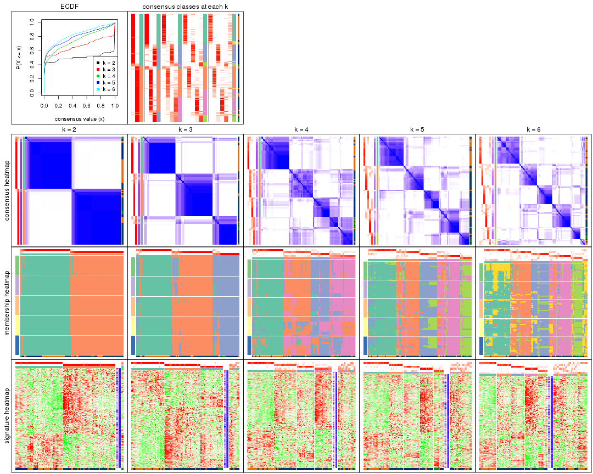
The plots are:
k and the heatmap of
predicted classes for each k.k.k.k.All the plots in panels can be made by individual functions and they are plotted later in this section.
select_partition_number() produces several plots showing different
statistics for choosing “optimized” k. There are following statistics:
k;k, the area increased is defined as \(A_k - A_{k-1}\).The detailed explanations of these statistics can be found in the cola vignette.
Generally speaking, lower PAC score, higher mean silhouette score or higher
concordance corresponds to better partition. Rand index and Jaccard index
measure how similar the current partition is compared to partition with k-1.
If they are too similar, we won't accept k is better than k-1.
select_partition_number(res)
The numeric values for all these statistics can be obtained by get_stats().
get_stats(res)
#> k 1-PAC mean_silhouette concordance area_increased Rand Jaccard
#> 2 2 0.958 0.955 0.980 0.5045 0.495 0.495
#> 3 3 0.782 0.826 0.928 0.3186 0.739 0.521
#> 4 4 0.601 0.639 0.775 0.1284 0.822 0.534
#> 5 5 0.700 0.633 0.798 0.0642 0.875 0.571
#> 6 6 0.687 0.526 0.741 0.0396 0.955 0.795
suggest_best_k() suggests the best \(k\) based on these statistics. The rules are as follows:
NA.suggest_best_k(res)
#> [1] 2
Following shows the table of the partitions (You need to click the show/hide
code output link to see it). The membership matrix (columns with name p*)
is inferred by
clue::cl_consensus()
function with the SE method. Basically the value in the membership matrix
represents the probability to belong to a certain group. The finall class
label for an item is determined with the group with highest probability it
belongs to.
In get_classes() function, the entropy is calculated from the membership
matrix and the silhouette score is calculated from the consensus matrix.
cbind(get_classes(res, k = 2), get_membership(res, k = 2))
#> class entropy silhouette p1 p2
#> GSM1152309 2 0.0000 0.986 0.000 1.000
#> GSM1152310 2 0.0000 0.986 0.000 1.000
#> GSM1152311 2 0.0000 0.986 0.000 1.000
#> GSM1152312 1 0.0000 0.972 1.000 0.000
#> GSM1152313 2 0.6148 0.819 0.152 0.848
#> GSM1152314 1 0.0000 0.972 1.000 0.000
#> GSM1152315 2 0.0000 0.986 0.000 1.000
#> GSM1152316 2 0.0000 0.986 0.000 1.000
#> GSM1152317 2 0.0000 0.986 0.000 1.000
#> GSM1152318 2 0.0000 0.986 0.000 1.000
#> GSM1152319 2 0.0000 0.986 0.000 1.000
#> GSM1152320 2 0.0376 0.985 0.004 0.996
#> GSM1152321 2 0.0000 0.986 0.000 1.000
#> GSM1152322 2 0.0000 0.986 0.000 1.000
#> GSM1152323 2 0.0000 0.986 0.000 1.000
#> GSM1152324 2 0.0000 0.986 0.000 1.000
#> GSM1152325 2 0.0000 0.986 0.000 1.000
#> GSM1152326 2 0.0376 0.985 0.004 0.996
#> GSM1152327 2 0.0000 0.986 0.000 1.000
#> GSM1152328 2 0.0376 0.985 0.004 0.996
#> GSM1152329 2 0.0376 0.985 0.004 0.996
#> GSM1152330 2 0.0376 0.985 0.004 0.996
#> GSM1152331 2 0.0000 0.986 0.000 1.000
#> GSM1152332 1 0.0000 0.972 1.000 0.000
#> GSM1152333 2 0.7376 0.735 0.208 0.792
#> GSM1152334 2 0.0000 0.986 0.000 1.000
#> GSM1152335 2 0.0376 0.985 0.004 0.996
#> GSM1152336 2 0.0000 0.986 0.000 1.000
#> GSM1152337 2 0.0376 0.985 0.004 0.996
#> GSM1152338 2 0.0376 0.985 0.004 0.996
#> GSM1152339 2 0.0376 0.985 0.004 0.996
#> GSM1152340 2 0.1414 0.972 0.020 0.980
#> GSM1152341 2 0.0376 0.985 0.004 0.996
#> GSM1152342 2 0.0376 0.985 0.004 0.996
#> GSM1152343 2 0.0000 0.986 0.000 1.000
#> GSM1152344 2 0.0000 0.986 0.000 1.000
#> GSM1152345 2 0.1414 0.970 0.020 0.980
#> GSM1152346 2 0.0000 0.986 0.000 1.000
#> GSM1152347 1 0.0000 0.972 1.000 0.000
#> GSM1152348 2 0.0376 0.985 0.004 0.996
#> GSM1152349 1 0.0000 0.972 1.000 0.000
#> GSM1152355 1 0.0000 0.972 1.000 0.000
#> GSM1152356 1 0.0000 0.972 1.000 0.000
#> GSM1152357 1 0.0000 0.972 1.000 0.000
#> GSM1152358 2 0.0000 0.986 0.000 1.000
#> GSM1152359 2 0.1633 0.968 0.024 0.976
#> GSM1152360 1 0.0000 0.972 1.000 0.000
#> GSM1152361 2 0.0376 0.985 0.004 0.996
#> GSM1152362 2 0.0000 0.986 0.000 1.000
#> GSM1152363 1 0.0000 0.972 1.000 0.000
#> GSM1152364 1 0.0000 0.972 1.000 0.000
#> GSM1152365 1 0.0000 0.972 1.000 0.000
#> GSM1152366 1 0.0000 0.972 1.000 0.000
#> GSM1152367 1 0.0000 0.972 1.000 0.000
#> GSM1152368 1 0.0000 0.972 1.000 0.000
#> GSM1152369 1 0.0000 0.972 1.000 0.000
#> GSM1152370 1 0.0000 0.972 1.000 0.000
#> GSM1152371 1 0.0672 0.967 0.992 0.008
#> GSM1152372 1 0.0000 0.972 1.000 0.000
#> GSM1152373 1 0.0000 0.972 1.000 0.000
#> GSM1152374 2 0.7219 0.750 0.200 0.800
#> GSM1152375 1 0.0000 0.972 1.000 0.000
#> GSM1152376 1 0.0000 0.972 1.000 0.000
#> GSM1152377 1 0.0000 0.972 1.000 0.000
#> GSM1152378 1 0.0000 0.972 1.000 0.000
#> GSM1152379 2 0.0376 0.985 0.004 0.996
#> GSM1152380 1 0.0000 0.972 1.000 0.000
#> GSM1152381 1 0.0000 0.972 1.000 0.000
#> GSM1152382 1 0.3274 0.919 0.940 0.060
#> GSM1152383 1 0.0000 0.972 1.000 0.000
#> GSM1152384 1 0.0000 0.972 1.000 0.000
#> GSM1152385 2 0.0000 0.986 0.000 1.000
#> GSM1152386 2 0.0000 0.986 0.000 1.000
#> GSM1152387 2 0.0000 0.986 0.000 1.000
#> GSM1152289 2 0.0000 0.986 0.000 1.000
#> GSM1152290 1 0.0376 0.971 0.996 0.004
#> GSM1152291 1 0.0376 0.971 0.996 0.004
#> GSM1152292 1 0.0376 0.971 0.996 0.004
#> GSM1152293 1 0.0376 0.971 0.996 0.004
#> GSM1152294 2 0.0000 0.986 0.000 1.000
#> GSM1152295 1 0.0000 0.972 1.000 0.000
#> GSM1152296 1 0.0000 0.972 1.000 0.000
#> GSM1152297 1 0.0376 0.971 0.996 0.004
#> GSM1152298 1 0.7056 0.760 0.808 0.192
#> GSM1152299 2 0.0000 0.986 0.000 1.000
#> GSM1152300 1 0.0000 0.972 1.000 0.000
#> GSM1152301 1 0.0000 0.972 1.000 0.000
#> GSM1152302 1 0.0376 0.971 0.996 0.004
#> GSM1152303 1 0.0376 0.971 0.996 0.004
#> GSM1152304 1 0.0376 0.971 0.996 0.004
#> GSM1152305 1 0.0376 0.971 0.996 0.004
#> GSM1152306 1 0.0376 0.971 0.996 0.004
#> GSM1152307 1 0.0000 0.972 1.000 0.000
#> GSM1152308 1 0.6623 0.795 0.828 0.172
#> GSM1152350 2 0.0000 0.986 0.000 1.000
#> GSM1152351 2 0.0000 0.986 0.000 1.000
#> GSM1152352 2 0.0000 0.986 0.000 1.000
#> GSM1152353 1 0.9710 0.359 0.600 0.400
#> GSM1152354 1 0.9710 0.359 0.600 0.400
cbind(get_classes(res, k = 3), get_membership(res, k = 3))
#> class entropy silhouette p1 p2 p3
#> GSM1152309 2 0.0000 0.9191 0.000 1.000 0.000
#> GSM1152310 2 0.6235 0.2996 0.000 0.564 0.436
#> GSM1152311 2 0.0000 0.9191 0.000 1.000 0.000
#> GSM1152312 1 0.0237 0.9261 0.996 0.004 0.000
#> GSM1152313 3 0.5988 0.3842 0.000 0.368 0.632
#> GSM1152314 1 0.0000 0.9295 1.000 0.000 0.000
#> GSM1152315 2 0.4235 0.7626 0.000 0.824 0.176
#> GSM1152316 2 0.6008 0.4308 0.000 0.628 0.372
#> GSM1152317 2 0.0237 0.9177 0.000 0.996 0.004
#> GSM1152318 2 0.0424 0.9162 0.000 0.992 0.008
#> GSM1152319 2 0.0000 0.9191 0.000 1.000 0.000
#> GSM1152320 2 0.0000 0.9191 0.000 1.000 0.000
#> GSM1152321 2 0.0000 0.9191 0.000 1.000 0.000
#> GSM1152322 2 0.0592 0.9143 0.000 0.988 0.012
#> GSM1152323 2 0.6095 0.3950 0.000 0.608 0.392
#> GSM1152324 2 0.0000 0.9191 0.000 1.000 0.000
#> GSM1152325 2 0.0000 0.9191 0.000 1.000 0.000
#> GSM1152326 2 0.0000 0.9191 0.000 1.000 0.000
#> GSM1152327 2 0.2165 0.8758 0.000 0.936 0.064
#> GSM1152328 2 0.0747 0.9094 0.016 0.984 0.000
#> GSM1152329 2 0.0424 0.9148 0.008 0.992 0.000
#> GSM1152330 2 0.0000 0.9191 0.000 1.000 0.000
#> GSM1152331 2 0.0000 0.9191 0.000 1.000 0.000
#> GSM1152332 1 0.0000 0.9295 1.000 0.000 0.000
#> GSM1152333 1 0.6307 0.0923 0.512 0.488 0.000
#> GSM1152334 3 0.0000 0.9012 0.000 0.000 1.000
#> GSM1152335 2 0.0000 0.9191 0.000 1.000 0.000
#> GSM1152336 2 0.0000 0.9191 0.000 1.000 0.000
#> GSM1152337 2 0.0000 0.9191 0.000 1.000 0.000
#> GSM1152338 2 0.0000 0.9191 0.000 1.000 0.000
#> GSM1152339 2 0.1289 0.8958 0.032 0.968 0.000
#> GSM1152340 2 0.0000 0.9191 0.000 1.000 0.000
#> GSM1152341 2 0.0000 0.9191 0.000 1.000 0.000
#> GSM1152342 2 0.4178 0.7660 0.000 0.828 0.172
#> GSM1152343 2 0.0424 0.9161 0.000 0.992 0.008
#> GSM1152344 2 0.0000 0.9191 0.000 1.000 0.000
#> GSM1152345 2 0.5397 0.6041 0.000 0.720 0.280
#> GSM1152346 2 0.0592 0.9143 0.000 0.988 0.012
#> GSM1152347 3 0.6026 0.3972 0.376 0.000 0.624
#> GSM1152348 2 0.0000 0.9191 0.000 1.000 0.000
#> GSM1152349 1 0.5591 0.5237 0.696 0.000 0.304
#> GSM1152355 1 0.0000 0.9295 1.000 0.000 0.000
#> GSM1152356 1 0.0000 0.9295 1.000 0.000 0.000
#> GSM1152357 1 0.0000 0.9295 1.000 0.000 0.000
#> GSM1152358 3 0.0000 0.9012 0.000 0.000 1.000
#> GSM1152359 1 0.4555 0.7270 0.800 0.200 0.000
#> GSM1152360 1 0.0000 0.9295 1.000 0.000 0.000
#> GSM1152361 2 0.4842 0.6967 0.224 0.776 0.000
#> GSM1152362 2 0.0000 0.9191 0.000 1.000 0.000
#> GSM1152363 1 0.0000 0.9295 1.000 0.000 0.000
#> GSM1152364 1 0.0000 0.9295 1.000 0.000 0.000
#> GSM1152365 1 0.0000 0.9295 1.000 0.000 0.000
#> GSM1152366 1 0.0000 0.9295 1.000 0.000 0.000
#> GSM1152367 1 0.0000 0.9295 1.000 0.000 0.000
#> GSM1152368 1 0.0000 0.9295 1.000 0.000 0.000
#> GSM1152369 1 0.0000 0.9295 1.000 0.000 0.000
#> GSM1152370 1 0.0000 0.9295 1.000 0.000 0.000
#> GSM1152371 1 0.0000 0.9295 1.000 0.000 0.000
#> GSM1152372 1 0.0000 0.9295 1.000 0.000 0.000
#> GSM1152373 1 0.0000 0.9295 1.000 0.000 0.000
#> GSM1152374 3 0.5905 0.4261 0.000 0.352 0.648
#> GSM1152375 1 0.0000 0.9295 1.000 0.000 0.000
#> GSM1152376 1 0.0000 0.9295 1.000 0.000 0.000
#> GSM1152377 1 0.0000 0.9295 1.000 0.000 0.000
#> GSM1152378 1 0.0000 0.9295 1.000 0.000 0.000
#> GSM1152379 1 0.5291 0.6143 0.732 0.268 0.000
#> GSM1152380 1 0.0000 0.9295 1.000 0.000 0.000
#> GSM1152381 1 0.0000 0.9295 1.000 0.000 0.000
#> GSM1152382 1 0.0000 0.9295 1.000 0.000 0.000
#> GSM1152383 1 0.0000 0.9295 1.000 0.000 0.000
#> GSM1152384 1 0.0000 0.9295 1.000 0.000 0.000
#> GSM1152385 2 0.0000 0.9191 0.000 1.000 0.000
#> GSM1152386 2 0.5988 0.4402 0.000 0.632 0.368
#> GSM1152387 2 0.0000 0.9191 0.000 1.000 0.000
#> GSM1152289 2 0.4504 0.7249 0.000 0.804 0.196
#> GSM1152290 3 0.0000 0.9012 0.000 0.000 1.000
#> GSM1152291 3 0.4351 0.7473 0.004 0.168 0.828
#> GSM1152292 3 0.0000 0.9012 0.000 0.000 1.000
#> GSM1152293 3 0.0000 0.9012 0.000 0.000 1.000
#> GSM1152294 3 0.0000 0.9012 0.000 0.000 1.000
#> GSM1152295 1 0.5560 0.5204 0.700 0.000 0.300
#> GSM1152296 1 0.0000 0.9295 1.000 0.000 0.000
#> GSM1152297 3 0.0000 0.9012 0.000 0.000 1.000
#> GSM1152298 3 0.0000 0.9012 0.000 0.000 1.000
#> GSM1152299 3 0.0000 0.9012 0.000 0.000 1.000
#> GSM1152300 3 0.6062 0.3772 0.384 0.000 0.616
#> GSM1152301 1 0.6299 0.0318 0.524 0.000 0.476
#> GSM1152302 3 0.0000 0.9012 0.000 0.000 1.000
#> GSM1152303 3 0.0000 0.9012 0.000 0.000 1.000
#> GSM1152304 3 0.0000 0.9012 0.000 0.000 1.000
#> GSM1152305 3 0.7058 0.6564 0.080 0.212 0.708
#> GSM1152306 3 0.0237 0.8989 0.004 0.000 0.996
#> GSM1152307 3 0.5560 0.5504 0.300 0.000 0.700
#> GSM1152308 3 0.0000 0.9012 0.000 0.000 1.000
#> GSM1152350 3 0.0000 0.9012 0.000 0.000 1.000
#> GSM1152351 3 0.0000 0.9012 0.000 0.000 1.000
#> GSM1152352 3 0.0000 0.9012 0.000 0.000 1.000
#> GSM1152353 3 0.0000 0.9012 0.000 0.000 1.000
#> GSM1152354 3 0.1289 0.8772 0.032 0.000 0.968
cbind(get_classes(res, k = 4), get_membership(res, k = 4))
#> class entropy silhouette p1 p2 p3 p4
#> GSM1152309 4 0.3074 0.5563 0.000 0.152 0.000 0.848
#> GSM1152310 4 0.3443 0.6111 0.000 0.016 0.136 0.848
#> GSM1152311 2 0.3688 0.6856 0.000 0.792 0.000 0.208
#> GSM1152312 1 0.7086 0.4358 0.548 0.344 0.092 0.016
#> GSM1152313 4 0.6500 0.0289 0.000 0.072 0.444 0.484
#> GSM1152314 1 0.5670 0.6008 0.704 0.056 0.232 0.008
#> GSM1152315 4 0.3707 0.5414 0.000 0.132 0.028 0.840
#> GSM1152316 4 0.2814 0.5784 0.000 0.132 0.000 0.868
#> GSM1152317 4 0.3528 0.5026 0.000 0.192 0.000 0.808
#> GSM1152318 4 0.2868 0.5718 0.000 0.136 0.000 0.864
#> GSM1152319 2 0.4643 0.5450 0.000 0.656 0.000 0.344
#> GSM1152320 2 0.2868 0.7251 0.000 0.864 0.000 0.136
#> GSM1152321 4 0.3219 0.5401 0.000 0.164 0.000 0.836
#> GSM1152322 4 0.2589 0.5845 0.000 0.116 0.000 0.884
#> GSM1152323 4 0.2011 0.5955 0.000 0.080 0.000 0.920
#> GSM1152324 2 0.4888 0.4622 0.000 0.588 0.000 0.412
#> GSM1152325 4 0.3123 0.5498 0.000 0.156 0.000 0.844
#> GSM1152326 2 0.3610 0.6995 0.000 0.800 0.000 0.200
#> GSM1152327 4 0.3266 0.5536 0.000 0.168 0.000 0.832
#> GSM1152328 2 0.1118 0.7074 0.000 0.964 0.000 0.036
#> GSM1152329 2 0.3149 0.7013 0.088 0.880 0.000 0.032
#> GSM1152330 2 0.2408 0.7287 0.000 0.896 0.000 0.104
#> GSM1152331 2 0.4564 0.6477 0.000 0.672 0.000 0.328
#> GSM1152332 1 0.2654 0.8191 0.888 0.108 0.000 0.004
#> GSM1152333 2 0.3681 0.6214 0.176 0.816 0.000 0.008
#> GSM1152334 4 0.4855 0.4327 0.000 0.000 0.400 0.600
#> GSM1152335 2 0.1940 0.7248 0.000 0.924 0.000 0.076
#> GSM1152336 2 0.4431 0.6074 0.000 0.696 0.000 0.304
#> GSM1152337 2 0.3172 0.7240 0.000 0.840 0.000 0.160
#> GSM1152338 2 0.3569 0.7020 0.000 0.804 0.000 0.196
#> GSM1152339 2 0.3099 0.6886 0.104 0.876 0.000 0.020
#> GSM1152340 2 0.4171 0.6368 0.000 0.824 0.116 0.060
#> GSM1152341 2 0.3004 0.7166 0.060 0.892 0.000 0.048
#> GSM1152342 4 0.6265 -0.2478 0.056 0.444 0.000 0.500
#> GSM1152343 2 0.4989 0.3627 0.000 0.528 0.000 0.472
#> GSM1152344 2 0.4543 0.5615 0.000 0.676 0.000 0.324
#> GSM1152345 2 0.7333 0.1666 0.000 0.496 0.332 0.172
#> GSM1152346 4 0.2760 0.5772 0.000 0.128 0.000 0.872
#> GSM1152347 3 0.5146 0.7322 0.120 0.080 0.784 0.016
#> GSM1152348 2 0.4359 0.6967 0.100 0.816 0.000 0.084
#> GSM1152349 3 0.4861 0.6956 0.196 0.032 0.764 0.008
#> GSM1152355 1 0.0000 0.8904 1.000 0.000 0.000 0.000
#> GSM1152356 1 0.0000 0.8904 1.000 0.000 0.000 0.000
#> GSM1152357 1 0.1398 0.8709 0.956 0.004 0.000 0.040
#> GSM1152358 4 0.4817 0.4685 0.000 0.000 0.388 0.612
#> GSM1152359 1 0.6229 0.1861 0.528 0.416 0.000 0.056
#> GSM1152360 1 0.0000 0.8904 1.000 0.000 0.000 0.000
#> GSM1152361 2 0.5849 0.6345 0.164 0.704 0.000 0.132
#> GSM1152362 2 0.5000 0.0771 0.000 0.500 0.000 0.500
#> GSM1152363 1 0.0804 0.8855 0.980 0.012 0.000 0.008
#> GSM1152364 1 0.0000 0.8904 1.000 0.000 0.000 0.000
#> GSM1152365 1 0.0707 0.8820 0.980 0.020 0.000 0.000
#> GSM1152366 1 0.0188 0.8896 0.996 0.000 0.000 0.004
#> GSM1152367 1 0.0000 0.8904 1.000 0.000 0.000 0.000
#> GSM1152368 1 0.3082 0.8406 0.896 0.056 0.040 0.008
#> GSM1152369 1 0.0000 0.8904 1.000 0.000 0.000 0.000
#> GSM1152370 1 0.0000 0.8904 1.000 0.000 0.000 0.000
#> GSM1152371 1 0.1022 0.8755 0.968 0.032 0.000 0.000
#> GSM1152372 1 0.7259 0.4805 0.600 0.188 0.196 0.016
#> GSM1152373 1 0.3170 0.8381 0.892 0.056 0.044 0.008
#> GSM1152374 4 0.7621 0.1411 0.000 0.212 0.344 0.444
#> GSM1152375 1 0.0000 0.8904 1.000 0.000 0.000 0.000
#> GSM1152376 1 0.2797 0.8489 0.908 0.056 0.028 0.008
#> GSM1152377 1 0.0000 0.8904 1.000 0.000 0.000 0.000
#> GSM1152378 1 0.3958 0.7833 0.836 0.052 0.112 0.000
#> GSM1152379 1 0.6111 0.2426 0.556 0.392 0.000 0.052
#> GSM1152380 1 0.1690 0.8735 0.952 0.032 0.008 0.008
#> GSM1152381 1 0.0000 0.8904 1.000 0.000 0.000 0.000
#> GSM1152382 1 0.2647 0.8011 0.880 0.120 0.000 0.000
#> GSM1152383 1 0.0000 0.8904 1.000 0.000 0.000 0.000
#> GSM1152384 1 0.1917 0.8700 0.944 0.036 0.012 0.008
#> GSM1152385 2 0.4830 0.5753 0.000 0.608 0.000 0.392
#> GSM1152386 4 0.2530 0.5824 0.000 0.112 0.000 0.888
#> GSM1152387 2 0.4155 0.6318 0.000 0.756 0.004 0.240
#> GSM1152289 2 0.6429 0.5185 0.000 0.648 0.160 0.192
#> GSM1152290 3 0.0188 0.7904 0.000 0.000 0.996 0.004
#> GSM1152291 3 0.5727 0.6312 0.000 0.200 0.704 0.096
#> GSM1152292 3 0.0707 0.7910 0.000 0.000 0.980 0.020
#> GSM1152293 3 0.0707 0.7910 0.000 0.000 0.980 0.020
#> GSM1152294 4 0.4643 0.5058 0.000 0.000 0.344 0.656
#> GSM1152295 3 0.6658 0.6405 0.128 0.196 0.660 0.016
#> GSM1152296 1 0.0000 0.8904 1.000 0.000 0.000 0.000
#> GSM1152297 3 0.2921 0.6683 0.000 0.000 0.860 0.140
#> GSM1152298 3 0.0707 0.7910 0.000 0.000 0.980 0.020
#> GSM1152299 4 0.4843 0.4697 0.000 0.000 0.396 0.604
#> GSM1152300 3 0.5146 0.7322 0.120 0.080 0.784 0.016
#> GSM1152301 3 0.4998 0.6960 0.192 0.040 0.760 0.008
#> GSM1152302 3 0.0707 0.7910 0.000 0.000 0.980 0.020
#> GSM1152303 3 0.0707 0.7910 0.000 0.000 0.980 0.020
#> GSM1152304 3 0.0707 0.7910 0.000 0.000 0.980 0.020
#> GSM1152305 3 0.6493 0.5677 0.004 0.240 0.640 0.116
#> GSM1152306 3 0.0707 0.7910 0.000 0.000 0.980 0.020
#> GSM1152307 3 0.2266 0.7732 0.084 0.000 0.912 0.004
#> GSM1152308 3 0.5582 0.0402 0.024 0.000 0.576 0.400
#> GSM1152350 4 0.4643 0.5058 0.000 0.000 0.344 0.656
#> GSM1152351 4 0.4643 0.5058 0.000 0.000 0.344 0.656
#> GSM1152352 4 0.4643 0.5058 0.000 0.000 0.344 0.656
#> GSM1152353 4 0.4866 0.4172 0.000 0.000 0.404 0.596
#> GSM1152354 4 0.6759 0.3775 0.108 0.000 0.344 0.548
cbind(get_classes(res, k = 5), get_membership(res, k = 5))
#> class entropy silhouette p1 p2 p3 p4 p5
#> GSM1152309 4 0.0510 0.746 0.000 0.016 0.000 0.984 0.000
#> GSM1152310 5 0.4564 0.409 0.000 0.016 0.000 0.372 0.612
#> GSM1152311 4 0.5061 0.224 0.000 0.444 0.020 0.528 0.008
#> GSM1152312 1 0.7046 0.261 0.412 0.184 0.380 0.000 0.024
#> GSM1152313 4 0.3752 0.508 0.000 0.000 0.292 0.708 0.000
#> GSM1152314 1 0.4617 0.424 0.552 0.012 0.436 0.000 0.000
#> GSM1152315 4 0.5385 0.371 0.000 0.088 0.000 0.624 0.288
#> GSM1152316 4 0.0162 0.744 0.000 0.000 0.000 0.996 0.004
#> GSM1152317 4 0.0963 0.736 0.000 0.036 0.000 0.964 0.000
#> GSM1152318 4 0.0000 0.745 0.000 0.000 0.000 1.000 0.000
#> GSM1152319 2 0.4238 0.365 0.000 0.628 0.000 0.368 0.004
#> GSM1152320 2 0.1043 0.716 0.000 0.960 0.000 0.040 0.000
#> GSM1152321 4 0.0404 0.747 0.000 0.012 0.000 0.988 0.000
#> GSM1152322 4 0.0000 0.745 0.000 0.000 0.000 1.000 0.000
#> GSM1152323 4 0.2179 0.673 0.000 0.000 0.000 0.888 0.112
#> GSM1152324 4 0.3730 0.487 0.000 0.288 0.000 0.712 0.000
#> GSM1152325 4 0.0162 0.746 0.000 0.004 0.000 0.996 0.000
#> GSM1152326 2 0.2424 0.673 0.000 0.868 0.000 0.132 0.000
#> GSM1152327 4 0.0162 0.746 0.000 0.000 0.004 0.996 0.000
#> GSM1152328 2 0.1901 0.696 0.000 0.928 0.056 0.004 0.012
#> GSM1152329 2 0.0727 0.719 0.012 0.980 0.000 0.004 0.004
#> GSM1152330 2 0.1329 0.717 0.000 0.956 0.008 0.032 0.004
#> GSM1152331 4 0.3857 0.464 0.000 0.312 0.000 0.688 0.000
#> GSM1152332 1 0.3556 0.787 0.828 0.132 0.008 0.000 0.032
#> GSM1152333 2 0.1405 0.712 0.016 0.956 0.020 0.000 0.008
#> GSM1152334 5 0.2676 0.832 0.000 0.000 0.036 0.080 0.884
#> GSM1152335 2 0.1780 0.707 0.000 0.940 0.028 0.024 0.008
#> GSM1152336 2 0.4125 0.618 0.000 0.772 0.000 0.172 0.056
#> GSM1152337 2 0.1121 0.715 0.000 0.956 0.000 0.044 0.000
#> GSM1152338 2 0.3480 0.555 0.000 0.752 0.000 0.248 0.000
#> GSM1152339 2 0.0404 0.719 0.012 0.988 0.000 0.000 0.000
#> GSM1152340 2 0.4317 0.649 0.024 0.812 0.072 0.008 0.084
#> GSM1152341 2 0.0898 0.719 0.008 0.972 0.000 0.020 0.000
#> GSM1152342 2 0.7102 0.203 0.048 0.432 0.000 0.132 0.388
#> GSM1152343 2 0.6086 0.326 0.000 0.544 0.000 0.304 0.152
#> GSM1152344 4 0.5816 0.392 0.000 0.320 0.068 0.592 0.020
#> GSM1152345 2 0.7852 0.129 0.000 0.372 0.368 0.148 0.112
#> GSM1152346 4 0.0000 0.745 0.000 0.000 0.000 1.000 0.000
#> GSM1152347 3 0.1074 0.675 0.016 0.004 0.968 0.000 0.012
#> GSM1152348 2 0.1012 0.719 0.012 0.968 0.000 0.020 0.000
#> GSM1152349 3 0.2278 0.671 0.060 0.000 0.908 0.000 0.032
#> GSM1152355 1 0.0404 0.871 0.988 0.000 0.012 0.000 0.000
#> GSM1152356 1 0.1082 0.872 0.964 0.000 0.008 0.000 0.028
#> GSM1152357 1 0.3402 0.783 0.832 0.016 0.012 0.000 0.140
#> GSM1152358 5 0.5623 0.610 0.000 0.000 0.104 0.300 0.596
#> GSM1152359 2 0.6092 0.306 0.364 0.524 0.008 0.000 0.104
#> GSM1152360 1 0.0854 0.870 0.976 0.008 0.012 0.000 0.004
#> GSM1152361 2 0.8202 0.209 0.216 0.424 0.024 0.268 0.068
#> GSM1152362 4 0.6497 0.332 0.000 0.324 0.072 0.548 0.056
#> GSM1152363 1 0.1310 0.869 0.956 0.020 0.024 0.000 0.000
#> GSM1152364 1 0.0404 0.871 0.988 0.000 0.012 0.000 0.000
#> GSM1152365 1 0.2074 0.858 0.920 0.016 0.004 0.000 0.060
#> GSM1152366 1 0.1525 0.871 0.948 0.012 0.004 0.000 0.036
#> GSM1152367 1 0.1571 0.864 0.936 0.000 0.004 0.000 0.060
#> GSM1152368 1 0.5129 0.696 0.672 0.012 0.264 0.000 0.052
#> GSM1152369 1 0.1571 0.864 0.936 0.000 0.004 0.000 0.060
#> GSM1152370 1 0.0880 0.870 0.968 0.000 0.000 0.000 0.032
#> GSM1152371 1 0.2074 0.858 0.920 0.016 0.004 0.000 0.060
#> GSM1152372 3 0.6147 -0.393 0.452 0.024 0.456 0.000 0.068
#> GSM1152373 1 0.4249 0.672 0.688 0.016 0.296 0.000 0.000
#> GSM1152374 4 0.7772 0.139 0.008 0.040 0.268 0.376 0.308
#> GSM1152375 1 0.1408 0.871 0.948 0.000 0.008 0.000 0.044
#> GSM1152376 1 0.3981 0.754 0.764 0.012 0.212 0.000 0.012
#> GSM1152377 1 0.0579 0.871 0.984 0.000 0.008 0.000 0.008
#> GSM1152378 1 0.4941 0.703 0.696 0.012 0.244 0.000 0.048
#> GSM1152379 2 0.6571 0.213 0.364 0.452 0.004 0.000 0.180
#> GSM1152380 1 0.2248 0.844 0.900 0.012 0.088 0.000 0.000
#> GSM1152381 1 0.0703 0.871 0.976 0.000 0.000 0.000 0.024
#> GSM1152382 1 0.3365 0.780 0.836 0.120 0.000 0.000 0.044
#> GSM1152383 1 0.0703 0.870 0.976 0.000 0.024 0.000 0.000
#> GSM1152384 1 0.3016 0.816 0.848 0.020 0.132 0.000 0.000
#> GSM1152385 4 0.3003 0.630 0.000 0.188 0.000 0.812 0.000
#> GSM1152386 4 0.0162 0.744 0.000 0.000 0.000 0.996 0.004
#> GSM1152387 4 0.6379 0.306 0.000 0.356 0.080 0.528 0.036
#> GSM1152289 2 0.7401 -0.134 0.000 0.388 0.172 0.388 0.052
#> GSM1152290 3 0.3561 0.664 0.000 0.000 0.740 0.000 0.260
#> GSM1152291 3 0.1082 0.661 0.000 0.028 0.964 0.000 0.008
#> GSM1152292 3 0.4045 0.623 0.000 0.000 0.644 0.000 0.356
#> GSM1152293 3 0.4045 0.623 0.000 0.000 0.644 0.000 0.356
#> GSM1152294 5 0.2280 0.856 0.000 0.000 0.000 0.120 0.880
#> GSM1152295 3 0.1195 0.661 0.012 0.028 0.960 0.000 0.000
#> GSM1152296 1 0.0693 0.872 0.980 0.000 0.008 0.000 0.012
#> GSM1152297 5 0.3756 0.500 0.000 0.000 0.248 0.008 0.744
#> GSM1152298 3 0.4045 0.623 0.000 0.000 0.644 0.000 0.356
#> GSM1152299 4 0.5904 -0.125 0.000 0.000 0.112 0.528 0.360
#> GSM1152300 3 0.0968 0.677 0.012 0.004 0.972 0.000 0.012
#> GSM1152301 3 0.2369 0.672 0.056 0.004 0.908 0.000 0.032
#> GSM1152302 3 0.4045 0.623 0.000 0.000 0.644 0.000 0.356
#> GSM1152303 3 0.4045 0.623 0.000 0.000 0.644 0.000 0.356
#> GSM1152304 3 0.4045 0.623 0.000 0.000 0.644 0.000 0.356
#> GSM1152305 3 0.2460 0.615 0.004 0.072 0.900 0.000 0.024
#> GSM1152306 3 0.4045 0.623 0.000 0.000 0.644 0.000 0.356
#> GSM1152307 3 0.3671 0.671 0.008 0.000 0.756 0.000 0.236
#> GSM1152308 5 0.2938 0.776 0.008 0.000 0.064 0.048 0.880
#> GSM1152350 5 0.2280 0.856 0.000 0.000 0.000 0.120 0.880
#> GSM1152351 5 0.2280 0.856 0.000 0.000 0.000 0.120 0.880
#> GSM1152352 5 0.2280 0.856 0.000 0.000 0.000 0.120 0.880
#> GSM1152353 5 0.2389 0.855 0.000 0.000 0.004 0.116 0.880
#> GSM1152354 5 0.1502 0.816 0.004 0.000 0.000 0.056 0.940
cbind(get_classes(res, k = 6), get_membership(res, k = 6))
#> class entropy silhouette p1 p2 p3 p4 p5 p6
#> GSM1152309 4 0.0146 0.731588 0.000 0.000 0.000 0.996 0.004 0.000
#> GSM1152310 5 0.4192 0.607483 0.000 0.008 0.008 0.164 0.760 0.060
#> GSM1152311 4 0.6032 0.121507 0.000 0.408 0.000 0.456 0.044 0.092
#> GSM1152312 6 0.6570 0.232197 0.344 0.080 0.036 0.004 0.036 0.500
#> GSM1152313 4 0.3863 0.534394 0.000 0.000 0.244 0.728 0.020 0.008
#> GSM1152314 1 0.5080 0.232176 0.600 0.000 0.112 0.000 0.000 0.288
#> GSM1152315 4 0.4908 0.110397 0.000 0.044 0.000 0.520 0.428 0.008
#> GSM1152316 4 0.0717 0.728066 0.000 0.000 0.000 0.976 0.016 0.008
#> GSM1152317 4 0.0405 0.731167 0.000 0.004 0.000 0.988 0.008 0.000
#> GSM1152318 4 0.0363 0.730693 0.000 0.000 0.000 0.988 0.012 0.000
#> GSM1152319 2 0.5321 0.369869 0.000 0.592 0.000 0.308 0.080 0.020
#> GSM1152320 2 0.1321 0.701917 0.000 0.952 0.000 0.004 0.024 0.020
#> GSM1152321 4 0.0260 0.731267 0.000 0.000 0.000 0.992 0.008 0.000
#> GSM1152322 4 0.0632 0.726571 0.000 0.000 0.000 0.976 0.024 0.000
#> GSM1152323 4 0.2823 0.598825 0.000 0.000 0.000 0.796 0.204 0.000
#> GSM1152324 4 0.5127 0.273649 0.000 0.340 0.000 0.580 0.068 0.012
#> GSM1152325 4 0.0260 0.731267 0.000 0.000 0.000 0.992 0.008 0.000
#> GSM1152326 2 0.3763 0.661789 0.000 0.808 0.000 0.108 0.056 0.028
#> GSM1152327 4 0.1297 0.718528 0.000 0.000 0.000 0.948 0.040 0.012
#> GSM1152328 2 0.3168 0.612057 0.000 0.804 0.000 0.000 0.024 0.172
#> GSM1152329 2 0.0725 0.704088 0.000 0.976 0.000 0.000 0.012 0.012
#> GSM1152330 2 0.1265 0.696790 0.000 0.948 0.000 0.000 0.008 0.044
#> GSM1152331 4 0.3841 0.326049 0.000 0.380 0.000 0.616 0.000 0.004
#> GSM1152332 1 0.4657 0.551225 0.688 0.136 0.000 0.000 0.000 0.176
#> GSM1152333 2 0.2110 0.675368 0.004 0.900 0.000 0.000 0.012 0.084
#> GSM1152334 5 0.3263 0.767278 0.000 0.000 0.152 0.016 0.816 0.016
#> GSM1152335 2 0.2250 0.663451 0.000 0.888 0.000 0.000 0.020 0.092
#> GSM1152336 2 0.4268 0.614060 0.000 0.756 0.000 0.144 0.084 0.016
#> GSM1152337 2 0.0881 0.706471 0.000 0.972 0.000 0.012 0.008 0.008
#> GSM1152338 2 0.4007 0.595696 0.000 0.756 0.000 0.192 0.028 0.024
#> GSM1152339 2 0.0692 0.702716 0.000 0.976 0.000 0.000 0.004 0.020
#> GSM1152340 2 0.5561 0.503732 0.056 0.672 0.012 0.004 0.064 0.192
#> GSM1152341 2 0.1321 0.701964 0.000 0.952 0.000 0.004 0.024 0.020
#> GSM1152342 5 0.6204 0.191992 0.020 0.272 0.000 0.048 0.572 0.088
#> GSM1152343 2 0.6306 0.296391 0.000 0.484 0.000 0.260 0.232 0.024
#> GSM1152344 4 0.6539 0.334134 0.000 0.240 0.000 0.520 0.072 0.168
#> GSM1152345 2 0.8405 0.062106 0.000 0.368 0.180 0.096 0.136 0.220
#> GSM1152346 4 0.0363 0.730693 0.000 0.000 0.000 0.988 0.012 0.000
#> GSM1152347 3 0.4327 0.558723 0.032 0.000 0.708 0.000 0.020 0.240
#> GSM1152348 2 0.1819 0.697493 0.008 0.932 0.000 0.004 0.032 0.024
#> GSM1152349 3 0.3508 0.630957 0.068 0.000 0.800 0.000 0.000 0.132
#> GSM1152355 1 0.0291 0.708696 0.992 0.000 0.004 0.000 0.004 0.000
#> GSM1152356 1 0.2445 0.695714 0.868 0.000 0.004 0.000 0.008 0.120
#> GSM1152357 1 0.4073 0.574644 0.780 0.012 0.004 0.000 0.124 0.080
#> GSM1152358 3 0.6239 -0.236789 0.000 0.000 0.348 0.348 0.300 0.004
#> GSM1152359 2 0.7142 0.088520 0.348 0.364 0.000 0.000 0.188 0.100
#> GSM1152360 1 0.0603 0.708630 0.980 0.004 0.000 0.000 0.000 0.016
#> GSM1152361 6 0.6917 0.217747 0.104 0.212 0.000 0.104 0.032 0.548
#> GSM1152362 4 0.7247 0.200361 0.000 0.248 0.000 0.408 0.116 0.228
#> GSM1152363 1 0.2489 0.659609 0.860 0.012 0.000 0.000 0.000 0.128
#> GSM1152364 1 0.0291 0.708696 0.992 0.000 0.004 0.000 0.004 0.000
#> GSM1152365 1 0.4366 0.442086 0.596 0.012 0.000 0.000 0.012 0.380
#> GSM1152366 1 0.2762 0.685350 0.804 0.000 0.000 0.000 0.000 0.196
#> GSM1152367 1 0.3727 0.470370 0.612 0.000 0.000 0.000 0.000 0.388
#> GSM1152368 6 0.3807 -0.126906 0.368 0.000 0.004 0.000 0.000 0.628
#> GSM1152369 1 0.3862 0.468631 0.608 0.000 0.000 0.000 0.004 0.388
#> GSM1152370 1 0.2445 0.692182 0.868 0.004 0.000 0.000 0.008 0.120
#> GSM1152371 1 0.4387 0.433891 0.584 0.016 0.000 0.000 0.008 0.392
#> GSM1152372 6 0.3668 0.377340 0.144 0.000 0.032 0.000 0.024 0.800
#> GSM1152373 1 0.4028 0.378502 0.668 0.000 0.024 0.000 0.000 0.308
#> GSM1152374 5 0.7517 -0.040335 0.008 0.020 0.056 0.224 0.364 0.328
#> GSM1152375 1 0.3541 0.629440 0.748 0.000 0.000 0.000 0.020 0.232
#> GSM1152376 1 0.3656 0.494006 0.728 0.000 0.012 0.000 0.004 0.256
#> GSM1152377 1 0.1168 0.710683 0.956 0.000 0.000 0.000 0.016 0.028
#> GSM1152378 1 0.4959 0.404496 0.628 0.000 0.024 0.000 0.048 0.300
#> GSM1152379 2 0.7626 0.016579 0.288 0.308 0.000 0.000 0.216 0.188
#> GSM1152380 1 0.2473 0.650808 0.856 0.000 0.008 0.000 0.000 0.136
#> GSM1152381 1 0.1910 0.704450 0.892 0.000 0.000 0.000 0.000 0.108
#> GSM1152382 1 0.4965 0.525798 0.672 0.112 0.000 0.000 0.012 0.204
#> GSM1152383 1 0.0870 0.706192 0.972 0.000 0.012 0.000 0.004 0.012
#> GSM1152384 1 0.3043 0.589049 0.792 0.008 0.000 0.000 0.000 0.200
#> GSM1152385 4 0.2980 0.606574 0.000 0.192 0.000 0.800 0.000 0.008
#> GSM1152386 4 0.0717 0.728210 0.000 0.000 0.000 0.976 0.016 0.008
#> GSM1152387 4 0.7140 0.157571 0.000 0.284 0.000 0.392 0.088 0.236
#> GSM1152289 2 0.8405 -0.000566 0.000 0.308 0.080 0.240 0.116 0.256
#> GSM1152290 3 0.1334 0.742455 0.000 0.000 0.948 0.000 0.020 0.032
#> GSM1152291 3 0.5446 0.305415 0.004 0.004 0.552 0.012 0.068 0.360
#> GSM1152292 3 0.0632 0.751902 0.000 0.000 0.976 0.000 0.024 0.000
#> GSM1152293 3 0.0632 0.751902 0.000 0.000 0.976 0.000 0.024 0.000
#> GSM1152294 5 0.3210 0.784415 0.000 0.000 0.152 0.036 0.812 0.000
#> GSM1152295 3 0.5220 0.287048 0.032 0.000 0.528 0.004 0.028 0.408
#> GSM1152296 1 0.1644 0.711913 0.920 0.000 0.004 0.000 0.000 0.076
#> GSM1152297 3 0.3804 -0.028395 0.000 0.000 0.576 0.000 0.424 0.000
#> GSM1152298 3 0.0713 0.750501 0.000 0.000 0.972 0.000 0.028 0.000
#> GSM1152299 4 0.5389 0.292900 0.000 0.000 0.288 0.576 0.132 0.004
#> GSM1152300 3 0.4063 0.591424 0.032 0.000 0.740 0.000 0.016 0.212
#> GSM1152301 3 0.3861 0.598147 0.060 0.000 0.756 0.000 0.000 0.184
#> GSM1152302 3 0.0632 0.751902 0.000 0.000 0.976 0.000 0.024 0.000
#> GSM1152303 3 0.0632 0.751902 0.000 0.000 0.976 0.000 0.024 0.000
#> GSM1152304 3 0.0713 0.750501 0.000 0.000 0.972 0.000 0.028 0.000
#> GSM1152305 6 0.6166 -0.256504 0.000 0.048 0.432 0.008 0.076 0.436
#> GSM1152306 3 0.0632 0.751902 0.000 0.000 0.976 0.000 0.024 0.000
#> GSM1152307 3 0.1408 0.723661 0.036 0.000 0.944 0.000 0.000 0.020
#> GSM1152308 5 0.6140 0.505208 0.020 0.000 0.208 0.004 0.536 0.232
#> GSM1152350 5 0.3424 0.784750 0.000 0.000 0.160 0.036 0.800 0.004
#> GSM1152351 5 0.3424 0.784750 0.000 0.000 0.160 0.036 0.800 0.004
#> GSM1152352 5 0.3424 0.784750 0.000 0.000 0.160 0.036 0.800 0.004
#> GSM1152353 5 0.3424 0.780367 0.000 0.000 0.168 0.032 0.796 0.004
#> GSM1152354 5 0.3424 0.769982 0.000 0.000 0.160 0.004 0.800 0.036
Heatmaps for the consensus matrix. It visualizes the probability of two samples to be in a same group.
consensus_heatmap(res, k = 2)
consensus_heatmap(res, k = 3)
consensus_heatmap(res, k = 4)
consensus_heatmap(res, k = 5)
consensus_heatmap(res, k = 6)

Heatmaps for the membership of samples in all partitions to see how consistent they are:
membership_heatmap(res, k = 2)
membership_heatmap(res, k = 3)
membership_heatmap(res, k = 4)
membership_heatmap(res, k = 5)
membership_heatmap(res, k = 6)
As soon as we have had the classes for columns, we can look for signatures which are significantly different between classes which can be candidate marks for certain classes. Following are the heatmaps for signatures.
Signature heatmaps where rows are scaled:
get_signatures(res, k = 2)
get_signatures(res, k = 3)
get_signatures(res, k = 4)
get_signatures(res, k = 5)
get_signatures(res, k = 6)
Signature heatmaps where rows are not scaled:
get_signatures(res, k = 2, scale_rows = FALSE)

get_signatures(res, k = 3, scale_rows = FALSE)
get_signatures(res, k = 4, scale_rows = FALSE)
get_signatures(res, k = 5, scale_rows = FALSE)
get_signatures(res, k = 6, scale_rows = FALSE)
Compare the overlap of signatures from different k:
compare_signatures(res)
get_signature() returns a data frame invisibly. TO get the list of signatures, the function
call should be assigned to a variable explicitly. In following code, if plot argument is set
to FALSE, no heatmap is plotted while only the differential analysis is performed.
# code only for demonstration
tb = get_signature(res, k = ..., plot = FALSE)
An example of the output of tb is:
#> which_row fdr mean_1 mean_2 scaled_mean_1 scaled_mean_2 km
#> 1 38 0.042760348 8.373488 9.131774 -0.5533452 0.5164555 1
#> 2 40 0.018707592 7.106213 8.469186 -0.6173731 0.5762149 1
#> 3 55 0.019134737 10.221463 11.207825 -0.6159697 0.5749050 1
#> 4 59 0.006059896 5.921854 7.869574 -0.6899429 0.6439467 1
#> 5 60 0.018055526 8.928898 10.211722 -0.6204761 0.5791110 1
#> 6 98 0.009384629 15.714769 14.887706 0.6635654 -0.6193277 2
...
The columns in tb are:
which_row: row indices corresponding to the input matrix.fdr: FDR for the differential test. mean_x: The mean value in group x.scaled_mean_x: The mean value in group x after rows are scaled.km: Row groups if k-means clustering is applied to rows.UMAP plot which shows how samples are separated.
dimension_reduction(res, k = 2, method = "UMAP")
dimension_reduction(res, k = 3, method = "UMAP")

dimension_reduction(res, k = 4, method = "UMAP")
dimension_reduction(res, k = 5, method = "UMAP")
dimension_reduction(res, k = 6, method = "UMAP")
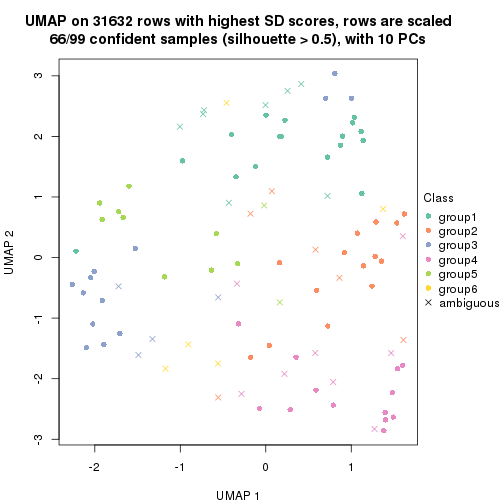
Following heatmap shows how subgroups are split when increasing k:
collect_classes(res)
Test correlation between subgroups and known annotations. If the known annotation is numeric, one-way ANOVA test is applied, and if the known annotation is discrete, chi-squared contingency table test is applied.
test_to_known_factors(res)
#> n disease.state(p) k
#> SD:skmeans 97 2.57e-09 2
#> SD:skmeans 89 1.03e-21 3
#> SD:skmeans 82 2.83e-20 4
#> SD:skmeans 78 2.77e-25 5
#> SD:skmeans 66 1.91e-20 6
If matrix rows can be associated to genes, consider to use GO_Enrichment(res,
...) to perform function enrichment for the signature genes.
The object with results only for a single top-value method and a single partition method can be extracted as:
res = res_list["SD", "pam"]
# you can also extract it by
# res = res_list["SD:pam"]
A summary of res and all the functions that can be applied to it:
res
#> A 'ConsensusPartition' object with k = 2, 3, 4, 5, 6.
#> On a matrix with 31632 rows and 99 columns.
#> Top rows (1000, 2000, 3000, 4000, 5000) are extracted by 'SD' method.
#> Subgroups are detected by 'pam' method.
#> Performed in total 1250 partitions by row resampling.
#> Best k for subgroups seems to be 2.
#>
#> Following methods can be applied to this 'ConsensusPartition' object:
#> [1] "cola_report" "collect_classes" "collect_plots"
#> [4] "collect_stats" "colnames" "compare_signatures"
#> [7] "consensus_heatmap" "dimension_reduction" "functional_enrichment"
#> [10] "get_anno_col" "get_anno" "get_classes"
#> [13] "get_consensus" "get_matrix" "get_membership"
#> [16] "get_param" "get_signatures" "get_stats"
#> [19] "is_best_k" "is_stable_k" "membership_heatmap"
#> [22] "ncol" "nrow" "plot_ecdf"
#> [25] "rownames" "select_partition_number" "show"
#> [28] "suggest_best_k" "test_to_known_factors"
collect_plots() function collects all the plots made from res for all k (number of partitions)
into one single page to provide an easy and fast comparison between different k.
collect_plots(res)

The plots are:
k and the heatmap of
predicted classes for each k.k.k.k.All the plots in panels can be made by individual functions and they are plotted later in this section.
select_partition_number() produces several plots showing different
statistics for choosing “optimized” k. There are following statistics:
k;k, the area increased is defined as \(A_k - A_{k-1}\).The detailed explanations of these statistics can be found in the cola vignette.
Generally speaking, lower PAC score, higher mean silhouette score or higher
concordance corresponds to better partition. Rand index and Jaccard index
measure how similar the current partition is compared to partition with k-1.
If they are too similar, we won't accept k is better than k-1.
select_partition_number(res)
The numeric values for all these statistics can be obtained by get_stats().
get_stats(res)
#> k 1-PAC mean_silhouette concordance area_increased Rand Jaccard
#> 2 2 0.288 0.617 0.764 0.4911 0.499 0.499
#> 3 3 0.368 0.549 0.783 0.3022 0.553 0.310
#> 4 4 0.507 0.303 0.607 0.1685 0.670 0.287
#> 5 5 0.542 0.488 0.726 0.0399 0.740 0.291
#> 6 6 0.629 0.507 0.717 0.0455 0.868 0.518
suggest_best_k() suggests the best \(k\) based on these statistics. The rules are as follows:
NA.suggest_best_k(res)
#> [1] 2
Following shows the table of the partitions (You need to click the show/hide
code output link to see it). The membership matrix (columns with name p*)
is inferred by
clue::cl_consensus()
function with the SE method. Basically the value in the membership matrix
represents the probability to belong to a certain group. The finall class
label for an item is determined with the group with highest probability it
belongs to.
In get_classes() function, the entropy is calculated from the membership
matrix and the silhouette score is calculated from the consensus matrix.
cbind(get_classes(res, k = 2), get_membership(res, k = 2))
#> class entropy silhouette p1 p2
#> GSM1152309 2 0.0000 0.7301 0.000 1.000
#> GSM1152310 2 0.3114 0.7283 0.056 0.944
#> GSM1152311 2 0.0672 0.7289 0.008 0.992
#> GSM1152312 1 0.6048 0.6727 0.852 0.148
#> GSM1152313 2 0.8955 0.6016 0.312 0.688
#> GSM1152314 1 0.0672 0.6426 0.992 0.008
#> GSM1152315 2 0.0000 0.7301 0.000 1.000
#> GSM1152316 2 0.8763 0.6038 0.296 0.704
#> GSM1152317 2 0.0000 0.7301 0.000 1.000
#> GSM1152318 2 0.6048 0.6878 0.148 0.852
#> GSM1152319 2 0.3733 0.7117 0.072 0.928
#> GSM1152320 2 0.3114 0.7157 0.056 0.944
#> GSM1152321 2 0.8386 0.6251 0.268 0.732
#> GSM1152322 2 0.7139 0.6658 0.196 0.804
#> GSM1152323 2 0.8763 0.6038 0.296 0.704
#> GSM1152324 2 0.0376 0.7297 0.004 0.996
#> GSM1152325 2 0.8327 0.6279 0.264 0.736
#> GSM1152326 2 0.4298 0.7049 0.088 0.912
#> GSM1152327 2 0.8713 0.6161 0.292 0.708
#> GSM1152328 2 0.8327 0.5004 0.264 0.736
#> GSM1152329 2 0.5408 0.6784 0.124 0.876
#> GSM1152330 2 0.3733 0.7142 0.072 0.928
#> GSM1152331 2 0.0376 0.7297 0.004 0.996
#> GSM1152332 1 0.9977 0.3672 0.528 0.472
#> GSM1152333 2 0.4431 0.7021 0.092 0.908
#> GSM1152334 2 0.9248 0.5953 0.340 0.660
#> GSM1152335 2 0.2043 0.7258 0.032 0.968
#> GSM1152336 2 0.0000 0.7301 0.000 1.000
#> GSM1152337 2 0.2603 0.7251 0.044 0.956
#> GSM1152338 2 0.7815 0.5362 0.232 0.768
#> GSM1152339 2 0.8267 0.5069 0.260 0.740
#> GSM1152340 2 0.7745 0.6798 0.228 0.772
#> GSM1152341 2 0.8386 0.4955 0.268 0.732
#> GSM1152342 2 0.4562 0.6995 0.096 0.904
#> GSM1152343 2 0.1184 0.7277 0.016 0.984
#> GSM1152344 2 0.0672 0.7289 0.008 0.992
#> GSM1152345 1 0.9044 0.0994 0.680 0.320
#> GSM1152346 2 0.8499 0.6196 0.276 0.724
#> GSM1152347 1 0.0938 0.6408 0.988 0.012
#> GSM1152348 2 0.4815 0.6940 0.104 0.896
#> GSM1152349 1 0.0000 0.6443 1.000 0.000
#> GSM1152355 1 0.9393 0.6483 0.644 0.356
#> GSM1152356 1 0.8763 0.7021 0.704 0.296
#> GSM1152357 2 0.4562 0.6995 0.096 0.904
#> GSM1152358 2 0.8763 0.6038 0.296 0.704
#> GSM1152359 2 0.8267 0.5038 0.260 0.740
#> GSM1152360 1 0.8763 0.7021 0.704 0.296
#> GSM1152361 2 0.8327 0.5009 0.264 0.736
#> GSM1152362 2 0.8081 0.5792 0.248 0.752
#> GSM1152363 1 0.8763 0.7021 0.704 0.296
#> GSM1152364 1 0.8713 0.7020 0.708 0.292
#> GSM1152365 1 0.8763 0.7021 0.704 0.296
#> GSM1152366 1 0.8763 0.7021 0.704 0.296
#> GSM1152367 1 0.8763 0.7021 0.704 0.296
#> GSM1152368 1 0.8763 0.7021 0.704 0.296
#> GSM1152369 1 0.8763 0.7021 0.704 0.296
#> GSM1152370 1 0.8763 0.7021 0.704 0.296
#> GSM1152371 1 0.8763 0.7021 0.704 0.296
#> GSM1152372 1 0.8763 0.7021 0.704 0.296
#> GSM1152373 1 0.8763 0.7021 0.704 0.296
#> GSM1152374 1 0.9996 -0.4401 0.512 0.488
#> GSM1152375 1 0.8763 0.7021 0.704 0.296
#> GSM1152376 1 0.8763 0.7021 0.704 0.296
#> GSM1152377 1 0.8763 0.7021 0.704 0.296
#> GSM1152378 2 0.8386 0.4972 0.268 0.732
#> GSM1152379 2 0.8386 0.4955 0.268 0.732
#> GSM1152380 1 0.8763 0.7021 0.704 0.296
#> GSM1152381 1 0.8763 0.7021 0.704 0.296
#> GSM1152382 2 0.8386 0.4955 0.268 0.732
#> GSM1152383 1 0.8327 0.6989 0.736 0.264
#> GSM1152384 1 0.8763 0.7021 0.704 0.296
#> GSM1152385 2 0.0938 0.7291 0.012 0.988
#> GSM1152386 2 0.8443 0.6262 0.272 0.728
#> GSM1152387 2 0.8207 0.5715 0.256 0.744
#> GSM1152289 2 0.9896 0.4966 0.440 0.560
#> GSM1152290 1 0.4298 0.5910 0.912 0.088
#> GSM1152291 1 0.4298 0.5910 0.912 0.088
#> GSM1152292 1 0.7745 0.4411 0.772 0.228
#> GSM1152293 1 0.6887 0.4897 0.816 0.184
#> GSM1152294 2 0.7528 0.6645 0.216 0.784
#> GSM1152295 1 0.0938 0.6408 0.988 0.012
#> GSM1152296 1 0.9944 0.5134 0.544 0.456
#> GSM1152297 1 0.8144 0.4168 0.748 0.252
#> GSM1152298 1 0.8386 0.3902 0.732 0.268
#> GSM1152299 2 0.8763 0.6038 0.296 0.704
#> GSM1152300 1 0.0672 0.6423 0.992 0.008
#> GSM1152301 1 0.0672 0.6426 0.992 0.008
#> GSM1152302 1 0.7674 0.4470 0.776 0.224
#> GSM1152303 1 0.7299 0.4694 0.796 0.204
#> GSM1152304 1 0.8144 0.4125 0.748 0.252
#> GSM1152305 1 0.3584 0.6158 0.932 0.068
#> GSM1152306 1 0.0938 0.6408 0.988 0.012
#> GSM1152307 1 0.0672 0.6426 0.992 0.008
#> GSM1152308 1 0.8713 0.7020 0.708 0.292
#> GSM1152350 2 0.8763 0.6038 0.296 0.704
#> GSM1152351 2 0.8763 0.6038 0.296 0.704
#> GSM1152352 2 0.8763 0.6038 0.296 0.704
#> GSM1152353 2 0.9427 0.5942 0.360 0.640
#> GSM1152354 2 0.4431 0.7021 0.092 0.908
cbind(get_classes(res, k = 3), get_membership(res, k = 3))
#> class entropy silhouette p1 p2 p3
#> GSM1152309 2 0.2711 0.7432 0.088 0.912 0.000
#> GSM1152310 1 0.7493 -0.3604 0.484 0.480 0.036
#> GSM1152311 2 0.4062 0.6800 0.164 0.836 0.000
#> GSM1152312 1 0.7344 0.5980 0.680 0.240 0.080
#> GSM1152313 2 0.8135 0.3636 0.448 0.484 0.068
#> GSM1152314 3 0.5733 0.2931 0.324 0.000 0.676
#> GSM1152315 2 0.4750 0.6900 0.216 0.784 0.000
#> GSM1152316 2 0.2625 0.7421 0.084 0.916 0.000
#> GSM1152317 2 0.2625 0.7421 0.084 0.916 0.000
#> GSM1152318 2 0.2625 0.7421 0.084 0.916 0.000
#> GSM1152319 1 0.6192 0.0547 0.580 0.420 0.000
#> GSM1152320 1 0.6204 0.1180 0.576 0.424 0.000
#> GSM1152321 2 0.0237 0.7267 0.004 0.996 0.000
#> GSM1152322 2 0.2625 0.7421 0.084 0.916 0.000
#> GSM1152323 2 0.3918 0.7204 0.140 0.856 0.004
#> GSM1152324 2 0.4121 0.7188 0.168 0.832 0.000
#> GSM1152325 2 0.0000 0.7247 0.000 1.000 0.000
#> GSM1152326 1 0.0592 0.7056 0.988 0.012 0.000
#> GSM1152327 2 0.2448 0.6916 0.076 0.924 0.000
#> GSM1152328 1 0.4399 0.6719 0.812 0.188 0.000
#> GSM1152329 1 0.1163 0.7123 0.972 0.028 0.000
#> GSM1152330 1 0.4002 0.6344 0.840 0.160 0.000
#> GSM1152331 2 0.1031 0.7268 0.024 0.976 0.000
#> GSM1152332 1 0.2537 0.7329 0.920 0.000 0.080
#> GSM1152333 1 0.2537 0.6690 0.920 0.080 0.000
#> GSM1152334 3 0.8688 0.1661 0.436 0.104 0.460
#> GSM1152335 1 0.5016 0.6129 0.760 0.240 0.000
#> GSM1152336 2 0.5706 0.6343 0.320 0.680 0.000
#> GSM1152337 1 0.6286 -0.2941 0.536 0.464 0.000
#> GSM1152338 1 0.3551 0.6931 0.868 0.132 0.000
#> GSM1152339 1 0.0000 0.7094 1.000 0.000 0.000
#> GSM1152340 1 0.7641 -0.2688 0.520 0.436 0.044
#> GSM1152341 1 0.2625 0.7048 0.916 0.084 0.000
#> GSM1152342 1 0.2625 0.6660 0.916 0.084 0.000
#> GSM1152343 1 0.6062 0.0680 0.616 0.384 0.000
#> GSM1152344 2 0.5497 0.5410 0.292 0.708 0.000
#> GSM1152345 2 0.9265 0.3066 0.416 0.428 0.156
#> GSM1152346 2 0.2625 0.7421 0.084 0.916 0.000
#> GSM1152347 3 0.5591 0.3369 0.304 0.000 0.696
#> GSM1152348 1 0.0000 0.7094 1.000 0.000 0.000
#> GSM1152349 3 0.0000 0.7369 0.000 0.000 1.000
#> GSM1152355 3 0.5948 0.2258 0.360 0.000 0.640
#> GSM1152356 3 0.6079 0.1529 0.388 0.000 0.612
#> GSM1152357 1 0.4007 0.6733 0.880 0.084 0.036
#> GSM1152358 3 0.8814 0.2421 0.140 0.312 0.548
#> GSM1152359 1 0.2959 0.6528 0.900 0.100 0.000
#> GSM1152360 1 0.5363 0.6449 0.724 0.000 0.276
#> GSM1152361 1 0.4235 0.6691 0.824 0.176 0.000
#> GSM1152362 2 0.6804 0.2516 0.460 0.528 0.012
#> GSM1152363 1 0.3686 0.7201 0.860 0.000 0.140
#> GSM1152364 1 0.6260 0.3541 0.552 0.000 0.448
#> GSM1152365 1 0.3752 0.7190 0.856 0.000 0.144
#> GSM1152366 1 0.3686 0.7201 0.860 0.000 0.140
#> GSM1152367 1 0.4605 0.6911 0.796 0.000 0.204
#> GSM1152368 1 0.5497 0.6292 0.708 0.000 0.292
#> GSM1152369 1 0.4504 0.6962 0.804 0.000 0.196
#> GSM1152370 1 0.4605 0.6911 0.796 0.000 0.204
#> GSM1152371 1 0.3686 0.7201 0.860 0.000 0.140
#> GSM1152372 1 0.4750 0.6410 0.784 0.216 0.000
#> GSM1152373 1 0.5397 0.6417 0.720 0.000 0.280
#> GSM1152374 2 0.7918 0.1691 0.460 0.484 0.056
#> GSM1152375 1 0.4291 0.7071 0.820 0.000 0.180
#> GSM1152376 1 0.5733 0.5916 0.676 0.000 0.324
#> GSM1152377 1 0.4235 0.7083 0.824 0.000 0.176
#> GSM1152378 1 0.6808 0.5566 0.732 0.084 0.184
#> GSM1152379 1 0.0237 0.7082 0.996 0.004 0.000
#> GSM1152380 1 0.5465 0.6329 0.712 0.000 0.288
#> GSM1152381 1 0.4121 0.7086 0.832 0.000 0.168
#> GSM1152382 1 0.0000 0.7094 1.000 0.000 0.000
#> GSM1152383 3 0.2796 0.6781 0.092 0.000 0.908
#> GSM1152384 1 0.5529 0.6243 0.704 0.000 0.296
#> GSM1152385 2 0.3752 0.6344 0.144 0.856 0.000
#> GSM1152386 2 0.0592 0.7302 0.012 0.988 0.000
#> GSM1152387 2 0.6398 0.3504 0.372 0.620 0.008
#> GSM1152289 2 0.6859 0.3715 0.356 0.620 0.024
#> GSM1152290 3 0.0000 0.7369 0.000 0.000 1.000
#> GSM1152291 3 0.8939 0.2159 0.140 0.340 0.520
#> GSM1152292 3 0.0000 0.7369 0.000 0.000 1.000
#> GSM1152293 3 0.0000 0.7369 0.000 0.000 1.000
#> GSM1152294 3 0.8098 0.4315 0.140 0.216 0.644
#> GSM1152295 3 0.5621 0.3318 0.308 0.000 0.692
#> GSM1152296 3 0.5905 0.2449 0.352 0.000 0.648
#> GSM1152297 3 0.1031 0.7307 0.024 0.000 0.976
#> GSM1152298 3 0.0892 0.7304 0.000 0.020 0.980
#> GSM1152299 2 0.5010 0.7050 0.084 0.840 0.076
#> GSM1152300 3 0.0000 0.7369 0.000 0.000 1.000
#> GSM1152301 3 0.0000 0.7369 0.000 0.000 1.000
#> GSM1152302 3 0.0000 0.7369 0.000 0.000 1.000
#> GSM1152303 3 0.0000 0.7369 0.000 0.000 1.000
#> GSM1152304 3 0.0000 0.7369 0.000 0.000 1.000
#> GSM1152305 2 0.9002 0.3201 0.312 0.532 0.156
#> GSM1152306 3 0.0000 0.7369 0.000 0.000 1.000
#> GSM1152307 3 0.0000 0.7369 0.000 0.000 1.000
#> GSM1152308 1 0.5733 0.5937 0.676 0.000 0.324
#> GSM1152350 3 0.8983 0.1616 0.140 0.352 0.508
#> GSM1152351 3 0.9041 0.0873 0.140 0.372 0.488
#> GSM1152352 3 0.7980 0.4486 0.168 0.172 0.660
#> GSM1152353 3 0.6809 0.5421 0.156 0.104 0.740
#> GSM1152354 1 0.8162 0.1312 0.568 0.084 0.348
cbind(get_classes(res, k = 4), get_membership(res, k = 4))
#> class entropy silhouette p1 p2 p3 p4
#> GSM1152309 4 0.3024 0.69499 0.000 0.148 0.000 0.852
#> GSM1152310 2 0.6538 0.53269 0.332 0.588 0.008 0.072
#> GSM1152311 4 0.3610 0.67726 0.000 0.200 0.000 0.800
#> GSM1152312 1 0.9374 0.15185 0.436 0.172 0.168 0.224
#> GSM1152313 2 0.7998 0.31245 0.156 0.480 0.028 0.336
#> GSM1152314 1 0.3545 0.37310 0.828 0.008 0.164 0.000
#> GSM1152315 4 0.4972 0.25459 0.000 0.456 0.000 0.544
#> GSM1152316 4 0.0469 0.77711 0.000 0.012 0.000 0.988
#> GSM1152317 4 0.0469 0.77711 0.000 0.012 0.000 0.988
#> GSM1152318 4 0.0469 0.77711 0.000 0.012 0.000 0.988
#> GSM1152319 2 0.5067 0.44834 0.104 0.800 0.036 0.060
#> GSM1152320 3 0.7758 -0.00607 0.028 0.408 0.448 0.116
#> GSM1152321 4 0.0188 0.77586 0.000 0.004 0.000 0.996
#> GSM1152322 4 0.0469 0.77711 0.000 0.012 0.000 0.988
#> GSM1152323 4 0.4972 0.07665 0.000 0.456 0.000 0.544
#> GSM1152324 4 0.4538 0.61750 0.000 0.216 0.024 0.760
#> GSM1152325 4 0.0000 0.77581 0.000 0.000 0.000 1.000
#> GSM1152326 3 0.7598 0.02996 0.216 0.324 0.460 0.000
#> GSM1152327 4 0.0000 0.77581 0.000 0.000 0.000 1.000
#> GSM1152328 2 0.7046 0.49203 0.300 0.596 0.048 0.056
#> GSM1152329 2 0.4972 0.00459 0.000 0.544 0.456 0.000
#> GSM1152330 2 0.1004 0.51172 0.004 0.972 0.024 0.000
#> GSM1152331 4 0.2799 0.73494 0.000 0.108 0.008 0.884
#> GSM1152332 3 0.7476 0.04566 0.184 0.356 0.460 0.000
#> GSM1152333 2 0.4094 0.42501 0.116 0.828 0.056 0.000
#> GSM1152334 2 0.7665 0.42383 0.280 0.492 0.224 0.004
#> GSM1152335 2 0.1151 0.50837 0.000 0.968 0.024 0.008
#> GSM1152336 2 0.1302 0.49604 0.000 0.956 0.000 0.044
#> GSM1152337 2 0.3215 0.55770 0.092 0.876 0.000 0.032
#> GSM1152338 3 0.8527 0.00937 0.184 0.360 0.412 0.044
#> GSM1152339 2 0.5119 0.02351 0.004 0.556 0.440 0.000
#> GSM1152340 2 0.5511 0.54185 0.332 0.636 0.000 0.032
#> GSM1152341 3 0.6755 0.03016 0.092 0.452 0.456 0.000
#> GSM1152342 2 0.4888 0.49864 0.412 0.588 0.000 0.000
#> GSM1152343 4 0.9007 0.17174 0.068 0.284 0.240 0.408
#> GSM1152344 4 0.3711 0.70030 0.000 0.140 0.024 0.836
#> GSM1152345 1 0.7897 0.09191 0.548 0.168 0.036 0.248
#> GSM1152346 4 0.0469 0.77711 0.000 0.012 0.000 0.988
#> GSM1152347 1 0.4086 0.33500 0.776 0.008 0.216 0.000
#> GSM1152348 3 0.7414 0.04869 0.172 0.368 0.460 0.000
#> GSM1152349 3 0.4985 0.16119 0.468 0.000 0.532 0.000
#> GSM1152355 1 0.6180 0.09842 0.624 0.080 0.296 0.000
#> GSM1152356 1 0.5475 0.11957 0.656 0.036 0.308 0.000
#> GSM1152357 2 0.4888 0.49864 0.412 0.588 0.000 0.000
#> GSM1152358 2 0.6952 0.21237 0.008 0.456 0.452 0.084
#> GSM1152359 2 0.4761 0.52462 0.372 0.628 0.000 0.000
#> GSM1152360 1 0.4182 0.43357 0.796 0.180 0.024 0.000
#> GSM1152361 3 0.7576 -0.23985 0.404 0.136 0.448 0.012
#> GSM1152362 2 0.6634 0.52837 0.336 0.564 0.000 0.100
#> GSM1152363 3 0.7606 -0.16053 0.208 0.348 0.444 0.000
#> GSM1152364 1 0.3123 0.34315 0.844 0.000 0.156 0.000
#> GSM1152365 3 0.7620 0.02509 0.224 0.316 0.460 0.000
#> GSM1152366 1 0.6003 0.29765 0.504 0.040 0.456 0.000
#> GSM1152367 1 0.5906 0.31728 0.528 0.036 0.436 0.000
#> GSM1152368 1 0.3142 0.48890 0.860 0.008 0.132 0.000
#> GSM1152369 1 0.6055 0.31633 0.520 0.044 0.436 0.000
#> GSM1152370 1 0.6055 0.31633 0.520 0.044 0.436 0.000
#> GSM1152371 3 0.7672 -0.05137 0.284 0.256 0.460 0.000
#> GSM1152372 1 0.8231 0.24892 0.504 0.036 0.228 0.232
#> GSM1152373 1 0.3217 0.43844 0.860 0.128 0.012 0.000
#> GSM1152374 2 0.6678 0.52104 0.360 0.564 0.016 0.060
#> GSM1152375 1 0.5244 0.32491 0.556 0.008 0.436 0.000
#> GSM1152376 1 0.1637 0.46870 0.940 0.060 0.000 0.000
#> GSM1152377 1 0.5244 0.32491 0.556 0.008 0.436 0.000
#> GSM1152378 2 0.5508 0.49276 0.408 0.572 0.020 0.000
#> GSM1152379 3 0.7146 -0.32928 0.412 0.132 0.456 0.000
#> GSM1152380 1 0.3196 0.48791 0.856 0.008 0.136 0.000
#> GSM1152381 3 0.7620 0.02509 0.224 0.316 0.460 0.000
#> GSM1152382 3 0.7610 0.02801 0.220 0.320 0.460 0.000
#> GSM1152383 1 0.5039 -0.01480 0.592 0.004 0.404 0.000
#> GSM1152384 1 0.3542 0.48936 0.852 0.028 0.120 0.000
#> GSM1152385 4 0.2384 0.74613 0.008 0.072 0.004 0.916
#> GSM1152386 4 0.0188 0.77663 0.000 0.004 0.000 0.996
#> GSM1152387 4 0.8276 0.04239 0.152 0.316 0.048 0.484
#> GSM1152289 2 0.8540 0.25342 0.228 0.424 0.036 0.312
#> GSM1152290 3 0.4985 0.16119 0.468 0.000 0.532 0.000
#> GSM1152291 4 0.8432 -0.02860 0.312 0.020 0.292 0.376
#> GSM1152292 3 0.6773 0.11453 0.364 0.104 0.532 0.000
#> GSM1152293 3 0.4985 0.16119 0.468 0.000 0.532 0.000
#> GSM1152294 3 0.6334 -0.25062 0.000 0.456 0.484 0.060
#> GSM1152295 1 0.3972 0.34604 0.788 0.008 0.204 0.000
#> GSM1152296 1 0.5614 0.09348 0.652 0.044 0.304 0.000
#> GSM1152297 3 0.5388 0.15732 0.456 0.012 0.532 0.000
#> GSM1152298 3 0.5388 0.15534 0.456 0.000 0.532 0.012
#> GSM1152299 4 0.3377 0.68337 0.000 0.012 0.140 0.848
#> GSM1152300 3 0.4985 0.16119 0.468 0.000 0.532 0.000
#> GSM1152301 3 0.4985 0.16119 0.468 0.000 0.532 0.000
#> GSM1152302 3 0.4985 0.16119 0.468 0.000 0.532 0.000
#> GSM1152303 3 0.4985 0.16119 0.468 0.000 0.532 0.000
#> GSM1152304 3 0.4985 0.16119 0.468 0.000 0.532 0.000
#> GSM1152305 1 0.7036 0.22363 0.556 0.008 0.112 0.324
#> GSM1152306 3 0.4985 0.16119 0.468 0.000 0.532 0.000
#> GSM1152307 3 0.4985 0.16119 0.468 0.000 0.532 0.000
#> GSM1152308 1 0.2722 0.48545 0.904 0.032 0.064 0.000
#> GSM1152350 2 0.7421 0.28599 0.000 0.456 0.372 0.172
#> GSM1152351 3 0.6661 -0.27624 0.000 0.456 0.460 0.084
#> GSM1152352 3 0.5850 -0.22834 0.000 0.456 0.512 0.032
#> GSM1152353 3 0.5143 -0.20341 0.000 0.456 0.540 0.004
#> GSM1152354 2 0.6827 0.36771 0.128 0.568 0.304 0.000
cbind(get_classes(res, k = 5), get_membership(res, k = 5))
#> class entropy silhouette p1 p2 p3 p4 p5
#> GSM1152309 4 0.3343 0.71101 0.016 0.172 0.000 0.812 0.000
#> GSM1152310 2 0.1830 0.52262 0.000 0.924 0.008 0.068 0.000
#> GSM1152311 4 0.6329 0.56564 0.200 0.048 0.000 0.628 0.124
#> GSM1152312 2 0.6945 0.40351 0.128 0.568 0.004 0.060 0.240
#> GSM1152313 2 0.5405 0.18578 0.000 0.556 0.064 0.380 0.000
#> GSM1152314 3 0.5951 0.16376 0.000 0.364 0.520 0.000 0.116
#> GSM1152315 4 0.6777 0.36581 0.148 0.248 0.000 0.560 0.044
#> GSM1152316 4 0.0000 0.83386 0.000 0.000 0.000 1.000 0.000
#> GSM1152317 4 0.0000 0.83386 0.000 0.000 0.000 1.000 0.000
#> GSM1152318 4 0.0000 0.83386 0.000 0.000 0.000 1.000 0.000
#> GSM1152319 1 0.5726 0.27585 0.560 0.364 0.000 0.064 0.012
#> GSM1152320 1 0.4023 0.51050 0.812 0.048 0.000 0.120 0.020
#> GSM1152321 4 0.0162 0.83292 0.000 0.004 0.000 0.996 0.000
#> GSM1152322 4 0.0000 0.83386 0.000 0.000 0.000 1.000 0.000
#> GSM1152323 4 0.4325 0.60104 0.000 0.220 0.000 0.736 0.044
#> GSM1152324 4 0.4914 0.55118 0.204 0.092 0.000 0.704 0.000
#> GSM1152325 4 0.0000 0.83386 0.000 0.000 0.000 1.000 0.000
#> GSM1152326 1 0.0963 0.58977 0.964 0.036 0.000 0.000 0.000
#> GSM1152327 4 0.0609 0.82820 0.000 0.000 0.000 0.980 0.020
#> GSM1152328 2 0.4183 0.45422 0.084 0.780 0.000 0.000 0.136
#> GSM1152329 1 0.4360 0.39038 0.680 0.300 0.000 0.000 0.020
#> GSM1152330 2 0.5114 -0.17518 0.472 0.492 0.000 0.000 0.036
#> GSM1152331 4 0.2701 0.78243 0.044 0.048 0.000 0.896 0.012
#> GSM1152332 1 0.0324 0.58785 0.992 0.004 0.000 0.000 0.004
#> GSM1152333 1 0.4080 0.42830 0.728 0.252 0.000 0.000 0.020
#> GSM1152334 2 0.3769 0.46640 0.000 0.788 0.180 0.032 0.000
#> GSM1152335 1 0.6092 0.14279 0.464 0.412 0.000 0.000 0.124
#> GSM1152336 2 0.5668 -0.12577 0.424 0.516 0.000 0.040 0.020
#> GSM1152337 2 0.5176 0.04055 0.340 0.616 0.000 0.024 0.020
#> GSM1152338 1 0.3427 0.52817 0.796 0.192 0.000 0.012 0.000
#> GSM1152339 1 0.4524 0.35952 0.644 0.336 0.000 0.000 0.020
#> GSM1152340 2 0.1168 0.52211 0.008 0.960 0.000 0.032 0.000
#> GSM1152341 1 0.2390 0.55808 0.896 0.084 0.000 0.000 0.020
#> GSM1152342 2 0.1197 0.51516 0.048 0.952 0.000 0.000 0.000
#> GSM1152343 1 0.3999 0.25518 0.656 0.000 0.000 0.344 0.000
#> GSM1152344 4 0.5268 0.60341 0.220 0.000 0.000 0.668 0.112
#> GSM1152345 2 0.5192 0.49786 0.000 0.696 0.116 0.184 0.004
#> GSM1152346 4 0.0000 0.83386 0.000 0.000 0.000 1.000 0.000
#> GSM1152347 3 0.4403 0.08735 0.000 0.436 0.560 0.000 0.004
#> GSM1152348 1 0.0000 0.58682 1.000 0.000 0.000 0.000 0.000
#> GSM1152349 3 0.0000 0.75543 0.000 0.000 1.000 0.000 0.000
#> GSM1152355 3 0.5409 0.60501 0.124 0.044 0.724 0.000 0.108
#> GSM1152356 3 0.4451 0.43891 0.340 0.016 0.644 0.000 0.000
#> GSM1152357 2 0.1197 0.51516 0.048 0.952 0.000 0.000 0.000
#> GSM1152358 3 0.6285 0.13872 0.000 0.220 0.536 0.244 0.000
#> GSM1152359 2 0.0510 0.51902 0.016 0.984 0.000 0.000 0.000
#> GSM1152360 2 0.6798 0.15730 0.308 0.436 0.252 0.000 0.004
#> GSM1152361 1 0.4982 0.37594 0.692 0.220 0.000 0.000 0.088
#> GSM1152362 2 0.2628 0.52618 0.000 0.884 0.000 0.088 0.028
#> GSM1152363 2 0.6935 -0.00189 0.368 0.460 0.036 0.000 0.136
#> GSM1152364 3 0.7000 0.34900 0.092 0.232 0.564 0.000 0.112
#> GSM1152365 1 0.1197 0.58763 0.952 0.048 0.000 0.000 0.000
#> GSM1152366 1 0.6001 -0.00891 0.456 0.432 0.000 0.000 0.112
#> GSM1152367 1 0.6028 0.18732 0.564 0.304 0.128 0.000 0.004
#> GSM1152368 2 0.7742 0.29366 0.224 0.480 0.180 0.000 0.116
#> GSM1152369 1 0.4489 0.14515 0.572 0.420 0.008 0.000 0.000
#> GSM1152370 1 0.5019 0.15607 0.568 0.396 0.036 0.000 0.000
#> GSM1152371 1 0.2280 0.55501 0.880 0.120 0.000 0.000 0.000
#> GSM1152372 2 0.7547 0.15080 0.344 0.436 0.000 0.112 0.108
#> GSM1152373 2 0.5801 0.45407 0.052 0.692 0.140 0.000 0.116
#> GSM1152374 2 0.3428 0.52342 0.004 0.848 0.004 0.044 0.100
#> GSM1152375 1 0.4559 0.02802 0.512 0.480 0.008 0.000 0.000
#> GSM1152376 2 0.6820 0.28063 0.048 0.524 0.312 0.000 0.116
#> GSM1152377 1 0.4704 0.02374 0.508 0.480 0.008 0.000 0.004
#> GSM1152378 2 0.1386 0.52665 0.016 0.952 0.032 0.000 0.000
#> GSM1152379 2 0.3612 0.32374 0.268 0.732 0.000 0.000 0.000
#> GSM1152380 2 0.7756 0.30447 0.208 0.480 0.196 0.000 0.116
#> GSM1152381 1 0.3389 0.54679 0.836 0.048 0.000 0.000 0.116
#> GSM1152382 1 0.1121 0.58870 0.956 0.044 0.000 0.000 0.000
#> GSM1152383 3 0.4171 0.65013 0.000 0.104 0.784 0.000 0.112
#> GSM1152384 2 0.7873 0.29851 0.208 0.460 0.212 0.000 0.120
#> GSM1152385 4 0.3669 0.75723 0.008 0.048 0.000 0.828 0.116
#> GSM1152386 4 0.0000 0.83386 0.000 0.000 0.000 1.000 0.000
#> GSM1152387 2 0.7041 0.07591 0.052 0.424 0.000 0.408 0.116
#> GSM1152289 2 0.8769 0.19677 0.144 0.388 0.048 0.296 0.124
#> GSM1152290 3 0.0000 0.75543 0.000 0.000 1.000 0.000 0.000
#> GSM1152291 3 0.7030 0.25831 0.020 0.036 0.540 0.296 0.108
#> GSM1152292 3 0.0290 0.75188 0.000 0.008 0.992 0.000 0.000
#> GSM1152293 3 0.0000 0.75543 0.000 0.000 1.000 0.000 0.000
#> GSM1152294 3 0.7307 -0.03464 0.000 0.160 0.532 0.088 0.220
#> GSM1152295 3 0.4620 0.19359 0.000 0.392 0.592 0.000 0.016
#> GSM1152296 3 0.4859 0.60538 0.152 0.004 0.732 0.000 0.112
#> GSM1152297 3 0.0510 0.74469 0.000 0.016 0.984 0.000 0.000
#> GSM1152298 3 0.0703 0.74158 0.000 0.000 0.976 0.024 0.000
#> GSM1152299 4 0.2732 0.68810 0.000 0.000 0.160 0.840 0.000
#> GSM1152300 3 0.0162 0.75441 0.000 0.000 0.996 0.000 0.004
#> GSM1152301 3 0.0000 0.75543 0.000 0.000 1.000 0.000 0.000
#> GSM1152302 3 0.0000 0.75543 0.000 0.000 1.000 0.000 0.000
#> GSM1152303 3 0.0000 0.75543 0.000 0.000 1.000 0.000 0.000
#> GSM1152304 3 0.0000 0.75543 0.000 0.000 1.000 0.000 0.000
#> GSM1152305 2 0.7967 0.36947 0.004 0.456 0.224 0.208 0.108
#> GSM1152306 3 0.0000 0.75543 0.000 0.000 1.000 0.000 0.000
#> GSM1152307 3 0.0000 0.75543 0.000 0.000 1.000 0.000 0.000
#> GSM1152308 2 0.6802 0.17701 0.300 0.372 0.328 0.000 0.000
#> GSM1152350 5 0.4684 0.90936 0.000 0.132 0.096 0.012 0.760
#> GSM1152351 5 0.4461 0.91604 0.000 0.184 0.036 0.020 0.760
#> GSM1152352 5 0.4324 0.92138 0.000 0.184 0.052 0.004 0.760
#> GSM1152353 5 0.4450 0.87496 0.000 0.108 0.132 0.000 0.760
#> GSM1152354 5 0.4096 0.87743 0.040 0.200 0.000 0.000 0.760
cbind(get_classes(res, k = 6), get_membership(res, k = 6))
#> class entropy silhouette p1 p2 p3 p4 p5 p6
#> GSM1152309 4 0.3345 0.7527 0.064 0.056 0.000 0.848 0.004 0.028
#> GSM1152310 1 0.5171 0.4973 0.608 0.300 0.008 0.080 0.004 0.000
#> GSM1152311 2 0.3999 -0.2382 0.004 0.500 0.000 0.496 0.000 0.000
#> GSM1152312 1 0.4417 0.1248 0.556 0.416 0.000 0.000 0.000 0.028
#> GSM1152313 1 0.6478 0.2447 0.432 0.196 0.024 0.344 0.004 0.000
#> GSM1152314 1 0.3453 0.4988 0.788 0.004 0.180 0.000 0.000 0.028
#> GSM1152315 4 0.5223 0.4829 0.068 0.232 0.000 0.656 0.044 0.000
#> GSM1152316 4 0.0000 0.8441 0.000 0.000 0.000 1.000 0.000 0.000
#> GSM1152317 4 0.0000 0.8441 0.000 0.000 0.000 1.000 0.000 0.000
#> GSM1152318 4 0.0000 0.8441 0.000 0.000 0.000 1.000 0.000 0.000
#> GSM1152319 2 0.6247 0.2215 0.068 0.528 0.000 0.088 0.004 0.312
#> GSM1152320 2 0.5335 0.0597 0.000 0.492 0.000 0.108 0.000 0.400
#> GSM1152321 4 0.0146 0.8427 0.000 0.004 0.000 0.996 0.000 0.000
#> GSM1152322 4 0.0000 0.8441 0.000 0.000 0.000 1.000 0.000 0.000
#> GSM1152323 4 0.3229 0.7618 0.064 0.040 0.000 0.852 0.044 0.000
#> GSM1152324 4 0.3337 0.5413 0.004 0.260 0.000 0.736 0.000 0.000
#> GSM1152325 4 0.0000 0.8441 0.000 0.000 0.000 1.000 0.000 0.000
#> GSM1152326 6 0.4077 0.4694 0.016 0.280 0.000 0.012 0.000 0.692
#> GSM1152327 4 0.0632 0.8350 0.000 0.024 0.000 0.976 0.000 0.000
#> GSM1152328 2 0.3429 0.0721 0.252 0.740 0.000 0.004 0.000 0.004
#> GSM1152329 2 0.3337 0.3858 0.004 0.736 0.000 0.000 0.000 0.260
#> GSM1152330 2 0.3663 0.4593 0.068 0.784 0.000 0.000 0.000 0.148
#> GSM1152331 4 0.2003 0.7650 0.000 0.116 0.000 0.884 0.000 0.000
#> GSM1152332 6 0.3950 0.4754 0.028 0.276 0.000 0.000 0.000 0.696
#> GSM1152333 2 0.5231 0.0998 0.084 0.520 0.000 0.000 0.004 0.392
#> GSM1152334 1 0.5766 0.4417 0.524 0.152 0.316 0.004 0.004 0.000
#> GSM1152335 2 0.0458 0.4555 0.016 0.984 0.000 0.000 0.000 0.000
#> GSM1152336 2 0.3803 0.4578 0.068 0.780 0.000 0.000 0.004 0.148
#> GSM1152337 2 0.2800 0.4584 0.112 0.860 0.000 0.016 0.004 0.008
#> GSM1152338 6 0.4444 0.1912 0.028 0.436 0.000 0.000 0.000 0.536
#> GSM1152339 2 0.3740 0.4162 0.032 0.740 0.000 0.000 0.000 0.228
#> GSM1152340 1 0.3772 0.5219 0.672 0.320 0.000 0.004 0.004 0.000
#> GSM1152341 2 0.3997 -0.0849 0.004 0.508 0.000 0.000 0.000 0.488
#> GSM1152342 1 0.3903 0.5308 0.680 0.304 0.000 0.000 0.004 0.012
#> GSM1152343 6 0.6190 0.0191 0.004 0.264 0.000 0.356 0.000 0.376
#> GSM1152344 4 0.4261 0.3120 0.008 0.416 0.000 0.568 0.000 0.008
#> GSM1152345 1 0.5627 0.5212 0.660 0.140 0.056 0.140 0.004 0.000
#> GSM1152346 4 0.0000 0.8441 0.000 0.000 0.000 1.000 0.000 0.000
#> GSM1152347 1 0.3868 0.2425 0.508 0.000 0.492 0.000 0.000 0.000
#> GSM1152348 6 0.3859 0.4673 0.020 0.288 0.000 0.000 0.000 0.692
#> GSM1152349 3 0.0000 0.8307 0.000 0.000 1.000 0.000 0.000 0.000
#> GSM1152355 3 0.5835 0.4081 0.280 0.020 0.552 0.000 0.000 0.148
#> GSM1152356 3 0.4389 0.1317 0.024 0.000 0.528 0.000 0.000 0.448
#> GSM1152357 1 0.4035 0.5325 0.680 0.296 0.000 0.000 0.004 0.020
#> GSM1152358 3 0.4159 0.6613 0.064 0.044 0.792 0.096 0.004 0.000
#> GSM1152359 1 0.3903 0.5308 0.680 0.304 0.000 0.000 0.004 0.012
#> GSM1152360 1 0.7602 0.1714 0.316 0.244 0.168 0.000 0.000 0.272
#> GSM1152361 6 0.3298 0.3507 0.008 0.236 0.000 0.000 0.000 0.756
#> GSM1152362 1 0.5094 0.4942 0.596 0.308 0.000 0.092 0.000 0.004
#> GSM1152363 1 0.6273 -0.0990 0.472 0.344 0.036 0.000 0.000 0.148
#> GSM1152364 1 0.4317 0.2544 0.640 0.004 0.328 0.000 0.000 0.028
#> GSM1152365 6 0.4110 0.4848 0.040 0.268 0.000 0.000 0.000 0.692
#> GSM1152366 1 0.3136 0.3913 0.768 0.004 0.000 0.000 0.000 0.228
#> GSM1152367 6 0.2668 0.4435 0.168 0.000 0.004 0.000 0.000 0.828
#> GSM1152368 1 0.4637 0.3152 0.628 0.000 0.064 0.000 0.000 0.308
#> GSM1152369 6 0.2340 0.4581 0.148 0.000 0.000 0.000 0.000 0.852
#> GSM1152370 6 0.4594 0.0514 0.424 0.008 0.024 0.000 0.000 0.544
#> GSM1152371 6 0.1408 0.4900 0.036 0.020 0.000 0.000 0.000 0.944
#> GSM1152372 6 0.6152 0.2632 0.180 0.136 0.000 0.088 0.000 0.596
#> GSM1152373 1 0.2479 0.5452 0.892 0.016 0.064 0.000 0.000 0.028
#> GSM1152374 1 0.4303 0.5294 0.616 0.360 0.008 0.016 0.000 0.000
#> GSM1152375 1 0.3992 0.3234 0.624 0.012 0.000 0.000 0.000 0.364
#> GSM1152376 1 0.1444 0.5492 0.928 0.000 0.072 0.000 0.000 0.000
#> GSM1152377 1 0.3874 0.3288 0.636 0.008 0.000 0.000 0.000 0.356
#> GSM1152378 1 0.3909 0.5354 0.688 0.296 0.004 0.000 0.004 0.008
#> GSM1152379 1 0.5081 0.5151 0.616 0.256 0.000 0.000 0.000 0.128
#> GSM1152380 1 0.2173 0.5370 0.904 0.004 0.064 0.000 0.000 0.028
#> GSM1152381 6 0.6025 0.2589 0.296 0.236 0.004 0.000 0.000 0.464
#> GSM1152382 6 0.4066 0.4834 0.036 0.272 0.000 0.000 0.000 0.692
#> GSM1152383 3 0.4417 0.3214 0.416 0.000 0.556 0.000 0.000 0.028
#> GSM1152384 1 0.3655 0.5126 0.824 0.052 0.076 0.000 0.000 0.048
#> GSM1152385 4 0.3351 0.6017 0.000 0.288 0.000 0.712 0.000 0.000
#> GSM1152386 4 0.0000 0.8441 0.000 0.000 0.000 1.000 0.000 0.000
#> GSM1152387 2 0.5498 0.0744 0.100 0.536 0.000 0.352 0.000 0.012
#> GSM1152289 2 0.7392 0.1987 0.124 0.476 0.036 0.252 0.000 0.112
#> GSM1152290 3 0.0000 0.8307 0.000 0.000 1.000 0.000 0.000 0.000
#> GSM1152291 3 0.6086 0.1610 0.012 0.220 0.492 0.276 0.000 0.000
#> GSM1152292 3 0.0000 0.8307 0.000 0.000 1.000 0.000 0.000 0.000
#> GSM1152293 3 0.0000 0.8307 0.000 0.000 1.000 0.000 0.000 0.000
#> GSM1152294 3 0.4972 0.6172 0.064 0.036 0.752 0.056 0.092 0.000
#> GSM1152295 1 0.4093 0.2595 0.516 0.008 0.476 0.000 0.000 0.000
#> GSM1152296 3 0.5742 0.3888 0.292 0.008 0.536 0.000 0.000 0.164
#> GSM1152297 3 0.0363 0.8219 0.012 0.000 0.988 0.000 0.000 0.000
#> GSM1152298 3 0.0146 0.8286 0.000 0.000 0.996 0.004 0.000 0.000
#> GSM1152299 4 0.3221 0.5707 0.000 0.000 0.264 0.736 0.000 0.000
#> GSM1152300 3 0.0146 0.8285 0.004 0.000 0.996 0.000 0.000 0.000
#> GSM1152301 3 0.0000 0.8307 0.000 0.000 1.000 0.000 0.000 0.000
#> GSM1152302 3 0.0000 0.8307 0.000 0.000 1.000 0.000 0.000 0.000
#> GSM1152303 3 0.0000 0.8307 0.000 0.000 1.000 0.000 0.000 0.000
#> GSM1152304 3 0.0000 0.8307 0.000 0.000 1.000 0.000 0.000 0.000
#> GSM1152305 1 0.7139 0.3143 0.452 0.216 0.200 0.132 0.000 0.000
#> GSM1152306 3 0.0000 0.8307 0.000 0.000 1.000 0.000 0.000 0.000
#> GSM1152307 3 0.0000 0.8307 0.000 0.000 1.000 0.000 0.000 0.000
#> GSM1152308 1 0.5753 0.2051 0.460 0.000 0.176 0.000 0.000 0.364
#> GSM1152350 5 0.0000 0.9984 0.000 0.000 0.000 0.000 1.000 0.000
#> GSM1152351 5 0.0000 0.9984 0.000 0.000 0.000 0.000 1.000 0.000
#> GSM1152352 5 0.0000 0.9984 0.000 0.000 0.000 0.000 1.000 0.000
#> GSM1152353 5 0.0146 0.9935 0.000 0.000 0.004 0.000 0.996 0.000
#> GSM1152354 5 0.0000 0.9984 0.000 0.000 0.000 0.000 1.000 0.000
Heatmaps for the consensus matrix. It visualizes the probability of two samples to be in a same group.
consensus_heatmap(res, k = 2)
consensus_heatmap(res, k = 3)
consensus_heatmap(res, k = 4)
consensus_heatmap(res, k = 5)
consensus_heatmap(res, k = 6)
Heatmaps for the membership of samples in all partitions to see how consistent they are:
membership_heatmap(res, k = 2)

membership_heatmap(res, k = 3)
membership_heatmap(res, k = 4)
membership_heatmap(res, k = 5)
membership_heatmap(res, k = 6)
As soon as we have had the classes for columns, we can look for signatures which are significantly different between classes which can be candidate marks for certain classes. Following are the heatmaps for signatures.
Signature heatmaps where rows are scaled:
get_signatures(res, k = 2)
get_signatures(res, k = 3)
get_signatures(res, k = 4)
get_signatures(res, k = 5)
get_signatures(res, k = 6)
Signature heatmaps where rows are not scaled:
get_signatures(res, k = 2, scale_rows = FALSE)
get_signatures(res, k = 3, scale_rows = FALSE)
get_signatures(res, k = 4, scale_rows = FALSE)
get_signatures(res, k = 5, scale_rows = FALSE)
get_signatures(res, k = 6, scale_rows = FALSE)

Compare the overlap of signatures from different k:
compare_signatures(res)
get_signature() returns a data frame invisibly. TO get the list of signatures, the function
call should be assigned to a variable explicitly. In following code, if plot argument is set
to FALSE, no heatmap is plotted while only the differential analysis is performed.
# code only for demonstration
tb = get_signature(res, k = ..., plot = FALSE)
An example of the output of tb is:
#> which_row fdr mean_1 mean_2 scaled_mean_1 scaled_mean_2 km
#> 1 38 0.042760348 8.373488 9.131774 -0.5533452 0.5164555 1
#> 2 40 0.018707592 7.106213 8.469186 -0.6173731 0.5762149 1
#> 3 55 0.019134737 10.221463 11.207825 -0.6159697 0.5749050 1
#> 4 59 0.006059896 5.921854 7.869574 -0.6899429 0.6439467 1
#> 5 60 0.018055526 8.928898 10.211722 -0.6204761 0.5791110 1
#> 6 98 0.009384629 15.714769 14.887706 0.6635654 -0.6193277 2
...
The columns in tb are:
which_row: row indices corresponding to the input matrix.fdr: FDR for the differential test. mean_x: The mean value in group x.scaled_mean_x: The mean value in group x after rows are scaled.km: Row groups if k-means clustering is applied to rows.UMAP plot which shows how samples are separated.
dimension_reduction(res, k = 2, method = "UMAP")

dimension_reduction(res, k = 3, method = "UMAP")

dimension_reduction(res, k = 4, method = "UMAP")
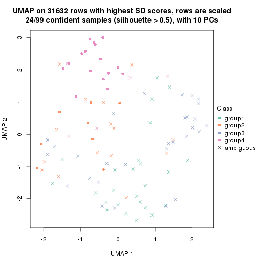
dimension_reduction(res, k = 5, method = "UMAP")
dimension_reduction(res, k = 6, method = "UMAP")
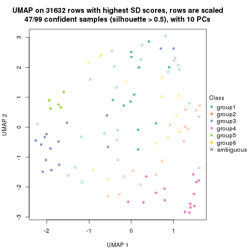
Following heatmap shows how subgroups are split when increasing k:
collect_classes(res)
Test correlation between subgroups and known annotations. If the known annotation is numeric, one-way ANOVA test is applied, and if the known annotation is discrete, chi-squared contingency table test is applied.
test_to_known_factors(res)
#> n disease.state(p) k
#> SD:pam 84 2.13e-08 2
#> SD:pam 71 3.45e-12 3
#> SD:pam 24 3.09e-01 4
#> SD:pam 56 1.43e-16 5
#> SD:pam 47 8.44e-17 6
If matrix rows can be associated to genes, consider to use GO_Enrichment(res,
...) to perform function enrichment for the signature genes.
The object with results only for a single top-value method and a single partition method can be extracted as:
res = res_list["SD", "mclust"]
# you can also extract it by
# res = res_list["SD:mclust"]
A summary of res and all the functions that can be applied to it:
res
#> A 'ConsensusPartition' object with k = 2, 3, 4, 5, 6.
#> On a matrix with 31632 rows and 99 columns.
#> Top rows (1000, 2000, 3000, 4000, 5000) are extracted by 'SD' method.
#> Subgroups are detected by 'mclust' method.
#> Performed in total 1250 partitions by row resampling.
#> Best k for subgroups seems to be 4.
#>
#> Following methods can be applied to this 'ConsensusPartition' object:
#> [1] "cola_report" "collect_classes" "collect_plots"
#> [4] "collect_stats" "colnames" "compare_signatures"
#> [7] "consensus_heatmap" "dimension_reduction" "functional_enrichment"
#> [10] "get_anno_col" "get_anno" "get_classes"
#> [13] "get_consensus" "get_matrix" "get_membership"
#> [16] "get_param" "get_signatures" "get_stats"
#> [19] "is_best_k" "is_stable_k" "membership_heatmap"
#> [22] "ncol" "nrow" "plot_ecdf"
#> [25] "rownames" "select_partition_number" "show"
#> [28] "suggest_best_k" "test_to_known_factors"
collect_plots() function collects all the plots made from res for all k (number of partitions)
into one single page to provide an easy and fast comparison between different k.
collect_plots(res)
The plots are:
k and the heatmap of
predicted classes for each k.k.k.k.All the plots in panels can be made by individual functions and they are plotted later in this section.
select_partition_number() produces several plots showing different
statistics for choosing “optimized” k. There are following statistics:
k;k, the area increased is defined as \(A_k - A_{k-1}\).The detailed explanations of these statistics can be found in the cola vignette.
Generally speaking, lower PAC score, higher mean silhouette score or higher
concordance corresponds to better partition. Rand index and Jaccard index
measure how similar the current partition is compared to partition with k-1.
If they are too similar, we won't accept k is better than k-1.
select_partition_number(res)
The numeric values for all these statistics can be obtained by get_stats().
get_stats(res)
#> k 1-PAC mean_silhouette concordance area_increased Rand Jaccard
#> 2 2 0.300 0.591 0.801 0.334 0.770 0.770
#> 3 3 0.424 0.713 0.837 0.809 0.442 0.345
#> 4 4 0.712 0.780 0.859 0.140 0.884 0.707
#> 5 5 0.676 0.711 0.817 0.122 0.860 0.572
#> 6 6 0.771 0.788 0.859 0.039 0.945 0.761
suggest_best_k() suggests the best \(k\) based on these statistics. The rules are as follows:
NA.suggest_best_k(res)
#> [1] 4
Following shows the table of the partitions (You need to click the show/hide
code output link to see it). The membership matrix (columns with name p*)
is inferred by
clue::cl_consensus()
function with the SE method. Basically the value in the membership matrix
represents the probability to belong to a certain group. The finall class
label for an item is determined with the group with highest probability it
belongs to.
In get_classes() function, the entropy is calculated from the membership
matrix and the silhouette score is calculated from the consensus matrix.
cbind(get_classes(res, k = 2), get_membership(res, k = 2))
#> class entropy silhouette p1 p2
#> GSM1152309 2 0.8267 0.6270 0.260 0.740
#> GSM1152310 1 0.8763 0.5831 0.704 0.296
#> GSM1152311 1 0.9998 0.1396 0.508 0.492
#> GSM1152312 1 0.2236 0.7428 0.964 0.036
#> GSM1152313 1 0.7883 0.6410 0.764 0.236
#> GSM1152314 1 0.0000 0.7429 1.000 0.000
#> GSM1152315 1 1.0000 0.1358 0.504 0.496
#> GSM1152316 2 0.9323 0.4589 0.348 0.652
#> GSM1152317 2 0.3114 0.7829 0.056 0.944
#> GSM1152318 2 0.3114 0.7829 0.056 0.944
#> GSM1152319 1 0.9998 0.1396 0.508 0.492
#> GSM1152320 1 0.9998 0.1396 0.508 0.492
#> GSM1152321 2 0.3114 0.7829 0.056 0.944
#> GSM1152322 2 0.4298 0.7895 0.088 0.912
#> GSM1152323 2 0.9963 0.0101 0.464 0.536
#> GSM1152324 1 0.9998 0.1396 0.508 0.492
#> GSM1152325 2 0.3114 0.7829 0.056 0.944
#> GSM1152326 1 0.9998 0.1396 0.508 0.492
#> GSM1152327 2 0.9970 -0.0183 0.468 0.532
#> GSM1152328 1 0.7219 0.6447 0.800 0.200
#> GSM1152329 1 0.9795 0.3084 0.584 0.416
#> GSM1152330 1 1.0000 0.1362 0.504 0.496
#> GSM1152331 2 0.6531 0.7571 0.168 0.832
#> GSM1152332 1 0.2236 0.7442 0.964 0.036
#> GSM1152333 1 0.8443 0.5062 0.728 0.272
#> GSM1152334 1 0.8081 0.6374 0.752 0.248
#> GSM1152335 1 0.9998 0.1396 0.508 0.492
#> GSM1152336 1 0.9998 0.1396 0.508 0.492
#> GSM1152337 1 0.9998 0.1396 0.508 0.492
#> GSM1152338 1 0.9998 0.1396 0.508 0.492
#> GSM1152339 1 0.9866 0.2777 0.568 0.432
#> GSM1152340 1 0.8813 0.5557 0.700 0.300
#> GSM1152341 1 0.9977 0.1885 0.528 0.472
#> GSM1152342 1 0.9170 0.5186 0.668 0.332
#> GSM1152343 1 0.9998 0.1396 0.508 0.492
#> GSM1152344 1 0.9998 0.1396 0.508 0.492
#> GSM1152345 1 0.8608 0.5848 0.716 0.284
#> GSM1152346 2 0.4022 0.7895 0.080 0.920
#> GSM1152347 1 0.1843 0.7355 0.972 0.028
#> GSM1152348 1 0.9933 0.2413 0.548 0.452
#> GSM1152349 1 0.1843 0.7355 0.972 0.028
#> GSM1152355 1 0.1184 0.7400 0.984 0.016
#> GSM1152356 1 0.2236 0.7322 0.964 0.036
#> GSM1152357 1 0.2043 0.7424 0.968 0.032
#> GSM1152358 1 0.8386 0.6353 0.732 0.268
#> GSM1152359 1 0.3879 0.7353 0.924 0.076
#> GSM1152360 1 0.2236 0.7428 0.964 0.036
#> GSM1152361 1 0.7453 0.6836 0.788 0.212
#> GSM1152362 1 0.9850 0.3118 0.572 0.428
#> GSM1152363 1 0.2423 0.7428 0.960 0.040
#> GSM1152364 1 0.1414 0.7383 0.980 0.020
#> GSM1152365 1 0.1843 0.7348 0.972 0.028
#> GSM1152366 1 0.1843 0.7348 0.972 0.028
#> GSM1152367 1 0.1843 0.7348 0.972 0.028
#> GSM1152368 1 0.1843 0.7348 0.972 0.028
#> GSM1152369 1 0.1843 0.7348 0.972 0.028
#> GSM1152370 1 0.1414 0.7383 0.980 0.020
#> GSM1152371 1 0.1843 0.7348 0.972 0.028
#> GSM1152372 1 0.1843 0.7348 0.972 0.028
#> GSM1152373 1 0.0672 0.7418 0.992 0.008
#> GSM1152374 1 0.6973 0.6804 0.812 0.188
#> GSM1152375 1 0.1414 0.7383 0.980 0.020
#> GSM1152376 1 0.0938 0.7409 0.988 0.012
#> GSM1152377 1 0.1414 0.7383 0.980 0.020
#> GSM1152378 1 0.0000 0.7429 1.000 0.000
#> GSM1152379 1 0.6801 0.6937 0.820 0.180
#> GSM1152380 1 0.1843 0.7348 0.972 0.028
#> GSM1152381 1 0.1843 0.7348 0.972 0.028
#> GSM1152382 1 0.2043 0.7363 0.968 0.032
#> GSM1152383 1 0.0000 0.7429 1.000 0.000
#> GSM1152384 1 0.1843 0.7348 0.972 0.028
#> GSM1152385 2 0.6247 0.7664 0.156 0.844
#> GSM1152386 2 0.6623 0.7218 0.172 0.828
#> GSM1152387 1 0.9522 0.4387 0.628 0.372
#> GSM1152289 1 0.9323 0.4849 0.652 0.348
#> GSM1152290 1 0.3733 0.7374 0.928 0.072
#> GSM1152291 1 0.2603 0.7424 0.956 0.044
#> GSM1152292 1 0.2236 0.7379 0.964 0.036
#> GSM1152293 1 0.3431 0.7392 0.936 0.064
#> GSM1152294 1 0.8207 0.6373 0.744 0.256
#> GSM1152295 1 0.0000 0.7429 1.000 0.000
#> GSM1152296 1 0.1414 0.7383 0.980 0.020
#> GSM1152297 1 0.6973 0.7022 0.812 0.188
#> GSM1152298 1 0.8327 0.6386 0.736 0.264
#> GSM1152299 1 0.8386 0.6353 0.732 0.268
#> GSM1152300 1 0.1633 0.7371 0.976 0.024
#> GSM1152301 1 0.1843 0.7355 0.972 0.028
#> GSM1152302 1 0.1843 0.7355 0.972 0.028
#> GSM1152303 1 0.1843 0.7355 0.972 0.028
#> GSM1152304 1 0.7453 0.6809 0.788 0.212
#> GSM1152305 1 0.3114 0.7400 0.944 0.056
#> GSM1152306 1 0.1843 0.7355 0.972 0.028
#> GSM1152307 1 0.1843 0.7355 0.972 0.028
#> GSM1152308 1 0.6887 0.6973 0.816 0.184
#> GSM1152350 1 0.8386 0.6353 0.732 0.268
#> GSM1152351 1 0.8386 0.6353 0.732 0.268
#> GSM1152352 1 0.8386 0.6353 0.732 0.268
#> GSM1152353 1 0.7453 0.6885 0.788 0.212
#> GSM1152354 1 0.5737 0.7247 0.864 0.136
cbind(get_classes(res, k = 3), get_membership(res, k = 3))
#> class entropy silhouette p1 p2 p3
#> GSM1152309 2 0.0237 0.8200 0.004 0.996 0.000
#> GSM1152310 2 0.2918 0.8002 0.044 0.924 0.032
#> GSM1152311 2 0.3851 0.8356 0.136 0.860 0.004
#> GSM1152312 1 0.2486 0.8027 0.932 0.060 0.008
#> GSM1152313 2 0.3192 0.7673 0.112 0.888 0.000
#> GSM1152314 1 0.0848 0.8303 0.984 0.008 0.008
#> GSM1152315 2 0.0892 0.8275 0.020 0.980 0.000
#> GSM1152316 2 0.1031 0.8200 0.024 0.976 0.000
#> GSM1152317 2 0.0424 0.8220 0.008 0.992 0.000
#> GSM1152318 2 0.0000 0.8172 0.000 1.000 0.000
#> GSM1152319 2 0.2356 0.8396 0.072 0.928 0.000
#> GSM1152320 2 0.3918 0.8346 0.140 0.856 0.004
#> GSM1152321 2 0.0000 0.8172 0.000 1.000 0.000
#> GSM1152322 2 0.0000 0.8172 0.000 1.000 0.000
#> GSM1152323 2 0.1267 0.8173 0.024 0.972 0.004
#> GSM1152324 2 0.0747 0.8255 0.016 0.984 0.000
#> GSM1152325 2 0.0000 0.8172 0.000 1.000 0.000
#> GSM1152326 2 0.3686 0.8351 0.140 0.860 0.000
#> GSM1152327 2 0.0892 0.8205 0.020 0.980 0.000
#> GSM1152328 2 0.6244 0.4111 0.440 0.560 0.000
#> GSM1152329 2 0.6008 0.6392 0.332 0.664 0.004
#> GSM1152330 2 0.3983 0.8331 0.144 0.852 0.004
#> GSM1152331 2 0.0747 0.8255 0.016 0.984 0.000
#> GSM1152332 1 0.0424 0.8301 0.992 0.008 0.000
#> GSM1152333 1 0.5529 0.5052 0.704 0.296 0.000
#> GSM1152334 2 0.6252 0.6591 0.084 0.772 0.144
#> GSM1152335 2 0.3983 0.8331 0.144 0.852 0.004
#> GSM1152336 2 0.2356 0.8396 0.072 0.928 0.000
#> GSM1152337 2 0.3851 0.8356 0.136 0.860 0.004
#> GSM1152338 2 0.3851 0.8356 0.136 0.860 0.004
#> GSM1152339 2 0.6033 0.6325 0.336 0.660 0.004
#> GSM1152340 2 0.5815 0.7054 0.304 0.692 0.004
#> GSM1152341 2 0.5244 0.7565 0.240 0.756 0.004
#> GSM1152342 2 0.4589 0.8225 0.172 0.820 0.008
#> GSM1152343 2 0.0892 0.8275 0.020 0.980 0.000
#> GSM1152344 2 0.3644 0.8379 0.124 0.872 0.004
#> GSM1152345 2 0.4178 0.8217 0.172 0.828 0.000
#> GSM1152346 2 0.0000 0.8172 0.000 1.000 0.000
#> GSM1152347 1 0.6783 0.2398 0.588 0.016 0.396
#> GSM1152348 2 0.5363 0.7227 0.276 0.724 0.000
#> GSM1152349 1 0.6339 0.3420 0.632 0.008 0.360
#> GSM1152355 1 0.0237 0.8295 0.996 0.000 0.004
#> GSM1152356 1 0.2878 0.7400 0.904 0.000 0.096
#> GSM1152357 1 0.0000 0.8296 1.000 0.000 0.000
#> GSM1152358 2 0.8013 0.1750 0.080 0.588 0.332
#> GSM1152359 1 0.4654 0.6392 0.792 0.208 0.000
#> GSM1152360 1 0.1529 0.8174 0.960 0.040 0.000
#> GSM1152361 2 0.8727 0.5845 0.280 0.572 0.148
#> GSM1152362 2 0.3941 0.8302 0.156 0.844 0.000
#> GSM1152363 1 0.1647 0.8200 0.960 0.036 0.004
#> GSM1152364 1 0.0237 0.8295 0.996 0.000 0.004
#> GSM1152365 1 0.2599 0.8072 0.932 0.016 0.052
#> GSM1152366 1 0.0848 0.8310 0.984 0.008 0.008
#> GSM1152367 1 0.4413 0.7447 0.832 0.008 0.160
#> GSM1152368 1 0.2063 0.8216 0.948 0.008 0.044
#> GSM1152369 1 0.4413 0.7447 0.832 0.008 0.160
#> GSM1152370 1 0.0848 0.8308 0.984 0.008 0.008
#> GSM1152371 1 0.4413 0.7447 0.832 0.008 0.160
#> GSM1152372 1 0.3532 0.7860 0.884 0.008 0.108
#> GSM1152373 1 0.1170 0.8297 0.976 0.016 0.008
#> GSM1152374 2 0.5560 0.6775 0.300 0.700 0.000
#> GSM1152375 1 0.0848 0.8308 0.984 0.008 0.008
#> GSM1152376 1 0.0848 0.8303 0.984 0.008 0.008
#> GSM1152377 1 0.0848 0.8308 0.984 0.008 0.008
#> GSM1152378 1 0.0661 0.8305 0.988 0.008 0.004
#> GSM1152379 1 0.7186 -0.2524 0.500 0.476 0.024
#> GSM1152380 1 0.0848 0.8303 0.984 0.008 0.008
#> GSM1152381 1 0.0661 0.8303 0.988 0.008 0.004
#> GSM1152382 1 0.3583 0.7828 0.900 0.044 0.056
#> GSM1152383 1 0.0424 0.8287 0.992 0.000 0.008
#> GSM1152384 1 0.0848 0.8303 0.984 0.008 0.008
#> GSM1152385 2 0.0747 0.8255 0.016 0.984 0.000
#> GSM1152386 2 0.1860 0.8070 0.052 0.948 0.000
#> GSM1152387 2 0.4062 0.8273 0.164 0.836 0.000
#> GSM1152289 2 0.4291 0.8199 0.180 0.820 0.000
#> GSM1152290 3 0.4663 0.7369 0.156 0.016 0.828
#> GSM1152291 1 0.6217 0.5407 0.712 0.024 0.264
#> GSM1152292 3 0.4663 0.7369 0.156 0.016 0.828
#> GSM1152293 3 0.5956 0.6312 0.264 0.016 0.720
#> GSM1152294 3 0.8020 0.6091 0.084 0.320 0.596
#> GSM1152295 1 0.1482 0.8254 0.968 0.012 0.020
#> GSM1152296 1 0.0592 0.8282 0.988 0.000 0.012
#> GSM1152297 3 0.6731 0.7297 0.088 0.172 0.740
#> GSM1152298 3 0.4802 0.7381 0.156 0.020 0.824
#> GSM1152299 3 0.7860 0.6718 0.088 0.284 0.628
#> GSM1152300 1 0.6881 0.2623 0.592 0.020 0.388
#> GSM1152301 1 0.6769 0.2500 0.592 0.016 0.392
#> GSM1152302 3 0.4663 0.7369 0.156 0.016 0.828
#> GSM1152303 3 0.4723 0.7365 0.160 0.016 0.824
#> GSM1152304 3 0.4663 0.7369 0.156 0.016 0.828
#> GSM1152305 1 0.3983 0.7013 0.852 0.144 0.004
#> GSM1152306 3 0.6955 0.0278 0.488 0.016 0.496
#> GSM1152307 1 0.6769 0.2503 0.592 0.016 0.392
#> GSM1152308 2 0.6556 0.7054 0.276 0.692 0.032
#> GSM1152350 3 0.7820 0.6089 0.072 0.324 0.604
#> GSM1152351 3 0.7940 0.5970 0.076 0.332 0.592
#> GSM1152352 3 0.7722 0.6494 0.076 0.296 0.628
#> GSM1152353 3 0.7047 0.7114 0.084 0.204 0.712
#> GSM1152354 1 0.9328 0.0697 0.472 0.172 0.356
cbind(get_classes(res, k = 4), get_membership(res, k = 4))
#> class entropy silhouette p1 p2 p3 p4
#> GSM1152309 2 0.1929 0.9179 0.000 0.940 0.024 0.036
#> GSM1152310 2 0.4377 0.8156 0.016 0.788 0.188 0.008
#> GSM1152311 2 0.0336 0.9252 0.000 0.992 0.008 0.000
#> GSM1152312 4 0.7286 0.6094 0.344 0.064 0.044 0.548
#> GSM1152313 2 0.4952 0.8240 0.080 0.804 0.092 0.024
#> GSM1152314 4 0.6015 0.7361 0.252 0.012 0.060 0.676
#> GSM1152315 2 0.2198 0.9116 0.000 0.920 0.072 0.008
#> GSM1152316 2 0.3869 0.8858 0.020 0.856 0.096 0.028
#> GSM1152317 2 0.1854 0.9167 0.000 0.940 0.012 0.048
#> GSM1152318 2 0.2399 0.9103 0.000 0.920 0.032 0.048
#> GSM1152319 2 0.0469 0.9253 0.000 0.988 0.012 0.000
#> GSM1152320 2 0.0524 0.9237 0.000 0.988 0.004 0.008
#> GSM1152321 2 0.2300 0.9116 0.000 0.924 0.028 0.048
#> GSM1152322 2 0.2494 0.9089 0.000 0.916 0.036 0.048
#> GSM1152323 2 0.4042 0.8768 0.012 0.844 0.104 0.040
#> GSM1152324 2 0.0937 0.9269 0.000 0.976 0.012 0.012
#> GSM1152325 2 0.2300 0.9116 0.000 0.924 0.028 0.048
#> GSM1152326 2 0.0336 0.9252 0.000 0.992 0.008 0.000
#> GSM1152327 2 0.3279 0.9018 0.016 0.888 0.068 0.028
#> GSM1152328 2 0.1853 0.9171 0.028 0.948 0.012 0.012
#> GSM1152329 2 0.2207 0.8952 0.056 0.928 0.004 0.012
#> GSM1152330 2 0.0779 0.9226 0.000 0.980 0.004 0.016
#> GSM1152331 2 0.0336 0.9250 0.000 0.992 0.000 0.008
#> GSM1152332 1 0.2099 0.8513 0.936 0.040 0.020 0.004
#> GSM1152333 1 0.5531 0.3285 0.548 0.436 0.012 0.004
#> GSM1152334 3 0.6351 0.0997 0.052 0.428 0.516 0.004
#> GSM1152335 2 0.0804 0.9247 0.000 0.980 0.012 0.008
#> GSM1152336 2 0.0657 0.9259 0.000 0.984 0.012 0.004
#> GSM1152337 2 0.0524 0.9237 0.000 0.988 0.004 0.008
#> GSM1152338 2 0.0524 0.9237 0.000 0.988 0.004 0.008
#> GSM1152339 2 0.3380 0.8090 0.136 0.852 0.004 0.008
#> GSM1152340 2 0.1762 0.9208 0.020 0.952 0.012 0.016
#> GSM1152341 2 0.0524 0.9237 0.000 0.988 0.004 0.008
#> GSM1152342 2 0.2300 0.9111 0.028 0.924 0.048 0.000
#> GSM1152343 2 0.0707 0.9254 0.000 0.980 0.020 0.000
#> GSM1152344 2 0.0524 0.9258 0.000 0.988 0.008 0.004
#> GSM1152345 2 0.2825 0.9025 0.036 0.908 0.048 0.008
#> GSM1152346 2 0.2586 0.9074 0.000 0.912 0.040 0.048
#> GSM1152347 4 0.3828 0.6899 0.068 0.000 0.084 0.848
#> GSM1152348 2 0.1114 0.9214 0.016 0.972 0.004 0.008
#> GSM1152349 4 0.3903 0.6977 0.080 0.000 0.076 0.844
#> GSM1152355 1 0.0859 0.8652 0.980 0.004 0.008 0.008
#> GSM1152356 1 0.1847 0.8382 0.940 0.004 0.052 0.004
#> GSM1152357 1 0.2089 0.8386 0.932 0.020 0.048 0.000
#> GSM1152358 3 0.4282 0.6110 0.036 0.148 0.812 0.004
#> GSM1152359 1 0.5476 0.4968 0.660 0.308 0.028 0.004
#> GSM1152360 1 0.1847 0.8459 0.940 0.052 0.004 0.004
#> GSM1152361 2 0.5371 0.7876 0.056 0.788 0.064 0.092
#> GSM1152362 2 0.0895 0.9267 0.000 0.976 0.020 0.004
#> GSM1152363 1 0.2515 0.8252 0.912 0.072 0.004 0.012
#> GSM1152364 1 0.0524 0.8636 0.988 0.004 0.000 0.008
#> GSM1152365 1 0.1593 0.8648 0.956 0.016 0.024 0.004
#> GSM1152366 1 0.0469 0.8680 0.988 0.012 0.000 0.000
#> GSM1152367 1 0.4006 0.7756 0.848 0.008 0.060 0.084
#> GSM1152368 4 0.6578 0.5442 0.408 0.008 0.060 0.524
#> GSM1152369 1 0.4006 0.7756 0.848 0.008 0.060 0.084
#> GSM1152370 1 0.0657 0.8682 0.984 0.012 0.004 0.000
#> GSM1152371 1 0.4134 0.7738 0.844 0.012 0.060 0.084
#> GSM1152372 4 0.6699 0.5442 0.360 0.008 0.076 0.556
#> GSM1152373 4 0.6448 0.7009 0.304 0.028 0.044 0.624
#> GSM1152374 2 0.4867 0.7780 0.144 0.784 0.068 0.004
#> GSM1152375 1 0.0469 0.8680 0.988 0.012 0.000 0.000
#> GSM1152376 1 0.1362 0.8637 0.964 0.012 0.004 0.020
#> GSM1152377 1 0.0657 0.8682 0.984 0.012 0.004 0.000
#> GSM1152378 1 0.2010 0.8374 0.940 0.012 0.040 0.008
#> GSM1152379 1 0.5645 0.3910 0.604 0.364 0.032 0.000
#> GSM1152380 1 0.1174 0.8642 0.968 0.012 0.000 0.020
#> GSM1152381 1 0.0657 0.8680 0.984 0.012 0.000 0.004
#> GSM1152382 1 0.3017 0.8242 0.904 0.044 0.024 0.028
#> GSM1152383 1 0.1004 0.8583 0.972 0.004 0.000 0.024
#> GSM1152384 1 0.1640 0.8643 0.956 0.020 0.012 0.012
#> GSM1152385 2 0.0336 0.9250 0.000 0.992 0.000 0.008
#> GSM1152386 2 0.4561 0.8482 0.016 0.816 0.120 0.048
#> GSM1152387 2 0.1297 0.9230 0.020 0.964 0.016 0.000
#> GSM1152289 2 0.1733 0.9195 0.028 0.948 0.024 0.000
#> GSM1152290 3 0.6079 0.6029 0.072 0.000 0.628 0.300
#> GSM1152291 4 0.4292 0.7054 0.088 0.008 0.072 0.832
#> GSM1152292 3 0.5705 0.6521 0.064 0.000 0.676 0.260
#> GSM1152293 3 0.5907 0.6538 0.092 0.000 0.680 0.228
#> GSM1152294 3 0.2060 0.6905 0.052 0.016 0.932 0.000
#> GSM1152295 4 0.6026 0.7366 0.244 0.012 0.064 0.680
#> GSM1152296 1 0.0188 0.8646 0.996 0.004 0.000 0.000
#> GSM1152297 3 0.1824 0.6875 0.060 0.000 0.936 0.004
#> GSM1152298 3 0.5106 0.6690 0.040 0.000 0.720 0.240
#> GSM1152299 3 0.2049 0.7018 0.012 0.012 0.940 0.036
#> GSM1152300 4 0.3834 0.6967 0.076 0.000 0.076 0.848
#> GSM1152301 4 0.3834 0.6967 0.076 0.000 0.076 0.848
#> GSM1152302 3 0.5837 0.6493 0.072 0.000 0.668 0.260
#> GSM1152303 3 0.5753 0.6574 0.072 0.000 0.680 0.248
#> GSM1152304 3 0.5772 0.6474 0.068 0.000 0.672 0.260
#> GSM1152305 2 0.7603 0.4906 0.140 0.616 0.060 0.184
#> GSM1152306 3 0.6139 0.6451 0.100 0.000 0.656 0.244
#> GSM1152307 4 0.6991 0.3808 0.188 0.000 0.232 0.580
#> GSM1152308 2 0.4605 0.8208 0.092 0.800 0.108 0.000
#> GSM1152350 3 0.1936 0.6949 0.028 0.032 0.940 0.000
#> GSM1152351 3 0.1610 0.6974 0.016 0.032 0.952 0.000
#> GSM1152352 3 0.1610 0.6974 0.016 0.032 0.952 0.000
#> GSM1152353 3 0.1847 0.6862 0.052 0.004 0.940 0.004
#> GSM1152354 3 0.6500 -0.1130 0.452 0.004 0.484 0.060
cbind(get_classes(res, k = 5), get_membership(res, k = 5))
#> class entropy silhouette p1 p2 p3 p4 p5
#> GSM1152309 4 0.4713 0.6401 0.000 0.440 0.000 0.544 0.016
#> GSM1152310 5 0.1820 0.6514 0.020 0.020 0.000 0.020 0.940
#> GSM1152311 2 0.0162 0.8150 0.000 0.996 0.000 0.004 0.000
#> GSM1152312 3 0.7048 0.4995 0.168 0.076 0.592 0.008 0.156
#> GSM1152313 2 0.5727 0.5331 0.000 0.640 0.048 0.044 0.268
#> GSM1152314 3 0.3452 0.5960 0.244 0.000 0.756 0.000 0.000
#> GSM1152315 4 0.6452 0.6413 0.000 0.284 0.000 0.496 0.220
#> GSM1152316 4 0.4867 0.7626 0.000 0.104 0.000 0.716 0.180
#> GSM1152317 4 0.3730 0.8346 0.000 0.288 0.000 0.712 0.000
#> GSM1152318 4 0.4378 0.8513 0.000 0.248 0.000 0.716 0.036
#> GSM1152319 2 0.1043 0.8303 0.040 0.960 0.000 0.000 0.000
#> GSM1152320 2 0.1043 0.8303 0.040 0.960 0.000 0.000 0.000
#> GSM1152321 4 0.4243 0.8492 0.000 0.264 0.000 0.712 0.024
#> GSM1152322 4 0.4425 0.8498 0.000 0.244 0.000 0.716 0.040
#> GSM1152323 4 0.4800 0.7537 0.000 0.088 0.000 0.716 0.196
#> GSM1152324 4 0.4736 0.6771 0.020 0.404 0.000 0.576 0.000
#> GSM1152325 4 0.4301 0.8506 0.000 0.260 0.000 0.712 0.028
#> GSM1152326 2 0.1043 0.8303 0.040 0.960 0.000 0.000 0.000
#> GSM1152327 4 0.4879 0.7656 0.000 0.108 0.000 0.716 0.176
#> GSM1152328 2 0.0451 0.8174 0.000 0.988 0.008 0.004 0.000
#> GSM1152329 2 0.1043 0.8303 0.040 0.960 0.000 0.000 0.000
#> GSM1152330 2 0.0324 0.8174 0.004 0.992 0.000 0.004 0.000
#> GSM1152331 4 0.4060 0.7825 0.000 0.360 0.000 0.640 0.000
#> GSM1152332 2 0.4744 0.4270 0.408 0.572 0.000 0.000 0.020
#> GSM1152333 2 0.1831 0.8114 0.076 0.920 0.000 0.004 0.000
#> GSM1152334 5 0.2069 0.6180 0.000 0.076 0.000 0.012 0.912
#> GSM1152335 2 0.0162 0.8150 0.000 0.996 0.000 0.004 0.000
#> GSM1152336 2 0.1444 0.8262 0.040 0.948 0.000 0.012 0.000
#> GSM1152337 2 0.0880 0.8288 0.032 0.968 0.000 0.000 0.000
#> GSM1152338 2 0.0963 0.8298 0.036 0.964 0.000 0.000 0.000
#> GSM1152339 2 0.1043 0.8303 0.040 0.960 0.000 0.000 0.000
#> GSM1152340 2 0.3044 0.7673 0.008 0.840 0.000 0.004 0.148
#> GSM1152341 2 0.1043 0.8303 0.040 0.960 0.000 0.000 0.000
#> GSM1152342 2 0.2833 0.7650 0.012 0.864 0.000 0.004 0.120
#> GSM1152343 2 0.1965 0.7795 0.000 0.904 0.000 0.000 0.096
#> GSM1152344 2 0.0579 0.8121 0.000 0.984 0.000 0.008 0.008
#> GSM1152345 2 0.3093 0.7533 0.000 0.824 0.000 0.008 0.168
#> GSM1152346 4 0.4451 0.8505 0.000 0.248 0.000 0.712 0.040
#> GSM1152347 3 0.0162 0.6226 0.000 0.000 0.996 0.000 0.004
#> GSM1152348 2 0.1043 0.8303 0.040 0.960 0.000 0.000 0.000
#> GSM1152349 3 0.1205 0.6039 0.000 0.000 0.956 0.040 0.004
#> GSM1152355 1 0.0162 0.9329 0.996 0.000 0.000 0.000 0.004
#> GSM1152356 1 0.0794 0.9139 0.972 0.000 0.000 0.000 0.028
#> GSM1152357 1 0.1732 0.8825 0.920 0.000 0.000 0.000 0.080
#> GSM1152358 5 0.3442 0.5932 0.000 0.060 0.000 0.104 0.836
#> GSM1152359 2 0.4393 0.7569 0.088 0.772 0.000 0.004 0.136
#> GSM1152360 1 0.2741 0.8222 0.860 0.004 0.000 0.004 0.132
#> GSM1152361 2 0.4106 0.7343 0.028 0.772 0.004 0.192 0.004
#> GSM1152362 2 0.2971 0.7624 0.000 0.836 0.000 0.008 0.156
#> GSM1152363 1 0.2956 0.8129 0.848 0.008 0.000 0.004 0.140
#> GSM1152364 1 0.0000 0.9350 1.000 0.000 0.000 0.000 0.000
#> GSM1152365 1 0.0703 0.9158 0.976 0.024 0.000 0.000 0.000
#> GSM1152366 1 0.0000 0.9350 1.000 0.000 0.000 0.000 0.000
#> GSM1152367 1 0.3352 0.8044 0.800 0.000 0.004 0.192 0.004
#> GSM1152368 3 0.5177 0.1576 0.472 0.000 0.488 0.040 0.000
#> GSM1152369 1 0.3352 0.8044 0.800 0.000 0.004 0.192 0.004
#> GSM1152370 1 0.0000 0.9350 1.000 0.000 0.000 0.000 0.000
#> GSM1152371 1 0.3352 0.8044 0.800 0.000 0.004 0.192 0.004
#> GSM1152372 3 0.6486 0.3574 0.368 0.076 0.512 0.044 0.000
#> GSM1152373 3 0.5096 0.5398 0.272 0.000 0.656 0.000 0.072
#> GSM1152374 2 0.3898 0.7509 0.080 0.804 0.000 0.000 0.116
#> GSM1152375 1 0.0000 0.9350 1.000 0.000 0.000 0.000 0.000
#> GSM1152376 1 0.0000 0.9350 1.000 0.000 0.000 0.000 0.000
#> GSM1152377 1 0.0000 0.9350 1.000 0.000 0.000 0.000 0.000
#> GSM1152378 1 0.0000 0.9350 1.000 0.000 0.000 0.000 0.000
#> GSM1152379 2 0.4238 0.7209 0.192 0.756 0.000 0.000 0.052
#> GSM1152380 1 0.0000 0.9350 1.000 0.000 0.000 0.000 0.000
#> GSM1152381 1 0.0000 0.9350 1.000 0.000 0.000 0.000 0.000
#> GSM1152382 1 0.1792 0.8920 0.916 0.000 0.000 0.084 0.000
#> GSM1152383 1 0.0290 0.9316 0.992 0.000 0.008 0.000 0.000
#> GSM1152384 1 0.1484 0.9038 0.944 0.000 0.008 0.000 0.048
#> GSM1152385 2 0.4045 -0.0596 0.000 0.644 0.000 0.356 0.000
#> GSM1152386 4 0.4852 0.7594 0.000 0.100 0.000 0.716 0.184
#> GSM1152387 2 0.2886 0.7673 0.000 0.844 0.000 0.008 0.148
#> GSM1152289 2 0.2971 0.7624 0.000 0.836 0.000 0.008 0.156
#> GSM1152290 3 0.5779 -0.3829 0.000 0.000 0.508 0.092 0.400
#> GSM1152291 3 0.0968 0.6234 0.000 0.012 0.972 0.004 0.012
#> GSM1152292 5 0.5779 0.5209 0.000 0.000 0.400 0.092 0.508
#> GSM1152293 5 0.5773 0.5247 0.000 0.000 0.396 0.092 0.512
#> GSM1152294 5 0.1704 0.6661 0.068 0.004 0.000 0.000 0.928
#> GSM1152295 3 0.3180 0.6170 0.068 0.076 0.856 0.000 0.000
#> GSM1152296 1 0.0000 0.9350 1.000 0.000 0.000 0.000 0.000
#> GSM1152297 5 0.2732 0.6192 0.160 0.000 0.000 0.000 0.840
#> GSM1152298 5 0.5744 0.5361 0.000 0.000 0.380 0.092 0.528
#> GSM1152299 5 0.5683 0.4753 0.000 0.004 0.080 0.352 0.564
#> GSM1152300 3 0.0162 0.6226 0.000 0.000 0.996 0.000 0.004
#> GSM1152301 3 0.1205 0.6039 0.000 0.000 0.956 0.040 0.004
#> GSM1152302 5 0.5779 0.5209 0.000 0.000 0.400 0.092 0.508
#> GSM1152303 5 0.5779 0.5209 0.000 0.000 0.400 0.092 0.508
#> GSM1152304 5 0.5744 0.5361 0.000 0.000 0.380 0.092 0.528
#> GSM1152305 2 0.6674 0.5379 0.036 0.600 0.208 0.008 0.148
#> GSM1152306 5 0.6114 0.5258 0.012 0.000 0.388 0.092 0.508
#> GSM1152307 3 0.4924 0.0579 0.000 0.000 0.668 0.060 0.272
#> GSM1152308 2 0.4134 0.7182 0.196 0.760 0.000 0.000 0.044
#> GSM1152350 5 0.1430 0.6686 0.052 0.004 0.000 0.000 0.944
#> GSM1152351 5 0.1285 0.6676 0.036 0.004 0.004 0.000 0.956
#> GSM1152352 5 0.1518 0.6696 0.048 0.004 0.004 0.000 0.944
#> GSM1152353 5 0.2690 0.6221 0.156 0.000 0.000 0.000 0.844
#> GSM1152354 5 0.4425 0.5839 0.108 0.000 0.004 0.116 0.772
cbind(get_classes(res, k = 6), get_membership(res, k = 6))
#> class entropy silhouette p1 p2 p3 p4 p5 p6
#> GSM1152309 4 0.3547 0.626 0.000 0.332 0.000 0.668 0.000 0.000
#> GSM1152310 5 0.2818 0.792 0.028 0.044 0.000 0.036 0.884 0.008
#> GSM1152311 2 0.0713 0.864 0.000 0.972 0.000 0.028 0.000 0.000
#> GSM1152312 6 0.1440 0.697 0.032 0.000 0.004 0.012 0.004 0.948
#> GSM1152313 2 0.5576 0.719 0.000 0.712 0.076 0.076 0.068 0.068
#> GSM1152314 6 0.3344 0.715 0.044 0.000 0.152 0.000 0.000 0.804
#> GSM1152315 5 0.5296 0.443 0.000 0.184 0.000 0.216 0.600 0.000
#> GSM1152316 4 0.3396 0.764 0.000 0.044 0.000 0.840 0.076 0.040
#> GSM1152317 4 0.2300 0.805 0.000 0.144 0.000 0.856 0.000 0.000
#> GSM1152318 4 0.2135 0.816 0.000 0.128 0.000 0.872 0.000 0.000
#> GSM1152319 2 0.0858 0.859 0.000 0.968 0.000 0.004 0.028 0.000
#> GSM1152320 2 0.0000 0.867 0.000 1.000 0.000 0.000 0.000 0.000
#> GSM1152321 4 0.2135 0.816 0.000 0.128 0.000 0.872 0.000 0.000
#> GSM1152322 4 0.2135 0.816 0.000 0.128 0.000 0.872 0.000 0.000
#> GSM1152323 4 0.3380 0.763 0.000 0.044 0.000 0.840 0.080 0.036
#> GSM1152324 4 0.3854 0.410 0.000 0.464 0.000 0.536 0.000 0.000
#> GSM1152325 4 0.2135 0.816 0.000 0.128 0.000 0.872 0.000 0.000
#> GSM1152326 2 0.0000 0.867 0.000 1.000 0.000 0.000 0.000 0.000
#> GSM1152327 4 0.3396 0.764 0.000 0.044 0.000 0.840 0.076 0.040
#> GSM1152328 2 0.1713 0.855 0.000 0.928 0.000 0.028 0.000 0.044
#> GSM1152329 2 0.0146 0.868 0.000 0.996 0.000 0.000 0.000 0.004
#> GSM1152330 2 0.1418 0.862 0.000 0.944 0.000 0.032 0.000 0.024
#> GSM1152331 4 0.3756 0.536 0.000 0.400 0.000 0.600 0.000 0.000
#> GSM1152332 2 0.3699 0.676 0.256 0.728 0.000 0.004 0.004 0.008
#> GSM1152333 2 0.0972 0.866 0.000 0.964 0.000 0.028 0.000 0.008
#> GSM1152334 5 0.4588 0.735 0.000 0.096 0.032 0.040 0.776 0.056
#> GSM1152335 2 0.1049 0.864 0.000 0.960 0.000 0.032 0.000 0.008
#> GSM1152336 2 0.0458 0.864 0.000 0.984 0.000 0.016 0.000 0.000
#> GSM1152337 2 0.0000 0.867 0.000 1.000 0.000 0.000 0.000 0.000
#> GSM1152338 2 0.0000 0.867 0.000 1.000 0.000 0.000 0.000 0.000
#> GSM1152339 2 0.0146 0.868 0.000 0.996 0.000 0.000 0.000 0.004
#> GSM1152340 2 0.4042 0.804 0.012 0.796 0.004 0.028 0.028 0.132
#> GSM1152341 2 0.0000 0.867 0.000 1.000 0.000 0.000 0.000 0.000
#> GSM1152342 5 0.3782 0.420 0.000 0.412 0.000 0.000 0.588 0.000
#> GSM1152343 2 0.3756 0.162 0.000 0.600 0.000 0.000 0.400 0.000
#> GSM1152344 2 0.1444 0.852 0.000 0.928 0.000 0.072 0.000 0.000
#> GSM1152345 2 0.3721 0.810 0.000 0.824 0.004 0.036 0.064 0.072
#> GSM1152346 4 0.2135 0.816 0.000 0.128 0.000 0.872 0.000 0.000
#> GSM1152347 6 0.2996 0.669 0.000 0.000 0.228 0.000 0.000 0.772
#> GSM1152348 2 0.0000 0.867 0.000 1.000 0.000 0.000 0.000 0.000
#> GSM1152349 3 0.3175 0.666 0.000 0.000 0.744 0.000 0.000 0.256
#> GSM1152355 1 0.0146 0.940 0.996 0.000 0.000 0.000 0.000 0.004
#> GSM1152356 1 0.0146 0.940 0.996 0.000 0.000 0.000 0.000 0.004
#> GSM1152357 1 0.1334 0.921 0.948 0.000 0.000 0.000 0.020 0.032
#> GSM1152358 5 0.5934 0.642 0.000 0.044 0.088 0.152 0.664 0.052
#> GSM1152359 2 0.3835 0.796 0.096 0.816 0.000 0.012 0.024 0.052
#> GSM1152360 1 0.2445 0.866 0.868 0.000 0.000 0.008 0.004 0.120
#> GSM1152361 2 0.3845 0.779 0.000 0.800 0.000 0.120 0.048 0.032
#> GSM1152362 2 0.3491 0.819 0.000 0.840 0.004 0.036 0.056 0.064
#> GSM1152363 1 0.2809 0.829 0.824 0.000 0.000 0.004 0.004 0.168
#> GSM1152364 1 0.0000 0.940 1.000 0.000 0.000 0.000 0.000 0.000
#> GSM1152365 1 0.0405 0.937 0.988 0.000 0.000 0.000 0.004 0.008
#> GSM1152366 1 0.0000 0.940 1.000 0.000 0.000 0.000 0.000 0.000
#> GSM1152367 1 0.3851 0.819 0.800 0.000 0.000 0.120 0.044 0.036
#> GSM1152368 6 0.4155 0.479 0.364 0.000 0.000 0.020 0.000 0.616
#> GSM1152369 1 0.3915 0.817 0.796 0.000 0.000 0.120 0.048 0.036
#> GSM1152370 1 0.0146 0.940 0.996 0.000 0.000 0.000 0.000 0.004
#> GSM1152371 1 0.3915 0.817 0.796 0.000 0.000 0.120 0.048 0.036
#> GSM1152372 6 0.4294 0.601 0.280 0.000 0.000 0.048 0.000 0.672
#> GSM1152373 6 0.1398 0.704 0.052 0.000 0.008 0.000 0.000 0.940
#> GSM1152374 2 0.4551 0.792 0.076 0.784 0.004 0.020 0.068 0.048
#> GSM1152375 1 0.0000 0.940 1.000 0.000 0.000 0.000 0.000 0.000
#> GSM1152376 1 0.0458 0.937 0.984 0.000 0.000 0.000 0.000 0.016
#> GSM1152377 1 0.0000 0.940 1.000 0.000 0.000 0.000 0.000 0.000
#> GSM1152378 1 0.0260 0.939 0.992 0.000 0.000 0.000 0.000 0.008
#> GSM1152379 2 0.3062 0.784 0.156 0.824 0.000 0.004 0.008 0.008
#> GSM1152380 1 0.0260 0.938 0.992 0.000 0.000 0.000 0.000 0.008
#> GSM1152381 1 0.0000 0.940 1.000 0.000 0.000 0.000 0.000 0.000
#> GSM1152382 1 0.2076 0.905 0.920 0.004 0.000 0.016 0.040 0.020
#> GSM1152383 1 0.0520 0.937 0.984 0.000 0.008 0.000 0.000 0.008
#> GSM1152384 1 0.2178 0.869 0.868 0.000 0.000 0.000 0.000 0.132
#> GSM1152385 2 0.2823 0.624 0.000 0.796 0.000 0.204 0.000 0.000
#> GSM1152386 4 0.3181 0.741 0.000 0.020 0.000 0.840 0.112 0.028
#> GSM1152387 2 0.3603 0.815 0.000 0.832 0.004 0.036 0.056 0.072
#> GSM1152289 2 0.3663 0.812 0.000 0.828 0.004 0.036 0.060 0.072
#> GSM1152290 3 0.0363 0.908 0.000 0.000 0.988 0.000 0.012 0.000
#> GSM1152291 6 0.3052 0.677 0.000 0.000 0.216 0.000 0.004 0.780
#> GSM1152292 3 0.0260 0.910 0.000 0.000 0.992 0.000 0.008 0.000
#> GSM1152293 3 0.0260 0.910 0.000 0.000 0.992 0.000 0.008 0.000
#> GSM1152294 5 0.1511 0.806 0.044 0.000 0.012 0.004 0.940 0.000
#> GSM1152295 6 0.3312 0.706 0.028 0.000 0.180 0.000 0.000 0.792
#> GSM1152296 1 0.0000 0.940 1.000 0.000 0.000 0.000 0.000 0.000
#> GSM1152297 5 0.2957 0.766 0.120 0.000 0.032 0.000 0.844 0.004
#> GSM1152298 3 0.0363 0.908 0.000 0.000 0.988 0.000 0.012 0.000
#> GSM1152299 4 0.5242 0.478 0.000 0.000 0.216 0.608 0.176 0.000
#> GSM1152300 6 0.2996 0.669 0.000 0.000 0.228 0.000 0.000 0.772
#> GSM1152301 3 0.3330 0.618 0.000 0.000 0.716 0.000 0.000 0.284
#> GSM1152302 3 0.0260 0.910 0.000 0.000 0.992 0.000 0.008 0.000
#> GSM1152303 3 0.0260 0.910 0.000 0.000 0.992 0.000 0.008 0.000
#> GSM1152304 3 0.0260 0.910 0.000 0.000 0.992 0.000 0.008 0.000
#> GSM1152305 6 0.6236 0.307 0.028 0.312 0.024 0.020 0.056 0.560
#> GSM1152306 3 0.0767 0.897 0.012 0.000 0.976 0.000 0.008 0.004
#> GSM1152307 3 0.2562 0.771 0.000 0.000 0.828 0.000 0.000 0.172
#> GSM1152308 2 0.3908 0.770 0.156 0.788 0.000 0.016 0.020 0.020
#> GSM1152350 5 0.1950 0.810 0.028 0.000 0.032 0.016 0.924 0.000
#> GSM1152351 5 0.1950 0.810 0.028 0.000 0.032 0.016 0.924 0.000
#> GSM1152352 5 0.1950 0.810 0.028 0.000 0.032 0.016 0.924 0.000
#> GSM1152353 5 0.2913 0.768 0.116 0.000 0.032 0.004 0.848 0.000
#> GSM1152354 5 0.3264 0.737 0.076 0.000 0.000 0.088 0.832 0.004
Heatmaps for the consensus matrix. It visualizes the probability of two samples to be in a same group.
consensus_heatmap(res, k = 2)
consensus_heatmap(res, k = 3)
consensus_heatmap(res, k = 4)
consensus_heatmap(res, k = 5)
consensus_heatmap(res, k = 6)
Heatmaps for the membership of samples in all partitions to see how consistent they are:
membership_heatmap(res, k = 2)
membership_heatmap(res, k = 3)
membership_heatmap(res, k = 4)
membership_heatmap(res, k = 5)
membership_heatmap(res, k = 6)

As soon as we have had the classes for columns, we can look for signatures which are significantly different between classes which can be candidate marks for certain classes. Following are the heatmaps for signatures.
Signature heatmaps where rows are scaled:
get_signatures(res, k = 2)

get_signatures(res, k = 3)
get_signatures(res, k = 4)
get_signatures(res, k = 5)
get_signatures(res, k = 6)
Signature heatmaps where rows are not scaled:
get_signatures(res, k = 2, scale_rows = FALSE)
get_signatures(res, k = 3, scale_rows = FALSE)
get_signatures(res, k = 4, scale_rows = FALSE)
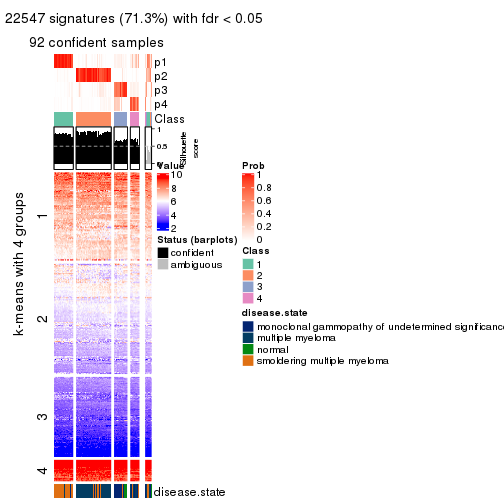
get_signatures(res, k = 5, scale_rows = FALSE)
get_signatures(res, k = 6, scale_rows = FALSE)
Compare the overlap of signatures from different k:
compare_signatures(res)
get_signature() returns a data frame invisibly. TO get the list of signatures, the function
call should be assigned to a variable explicitly. In following code, if plot argument is set
to FALSE, no heatmap is plotted while only the differential analysis is performed.
# code only for demonstration
tb = get_signature(res, k = ..., plot = FALSE)
An example of the output of tb is:
#> which_row fdr mean_1 mean_2 scaled_mean_1 scaled_mean_2 km
#> 1 38 0.042760348 8.373488 9.131774 -0.5533452 0.5164555 1
#> 2 40 0.018707592 7.106213 8.469186 -0.6173731 0.5762149 1
#> 3 55 0.019134737 10.221463 11.207825 -0.6159697 0.5749050 1
#> 4 59 0.006059896 5.921854 7.869574 -0.6899429 0.6439467 1
#> 5 60 0.018055526 8.928898 10.211722 -0.6204761 0.5791110 1
#> 6 98 0.009384629 15.714769 14.887706 0.6635654 -0.6193277 2
...
The columns in tb are:
which_row: row indices corresponding to the input matrix.fdr: FDR for the differential test. mean_x: The mean value in group x.scaled_mean_x: The mean value in group x after rows are scaled.km: Row groups if k-means clustering is applied to rows.UMAP plot which shows how samples are separated.
dimension_reduction(res, k = 2, method = "UMAP")
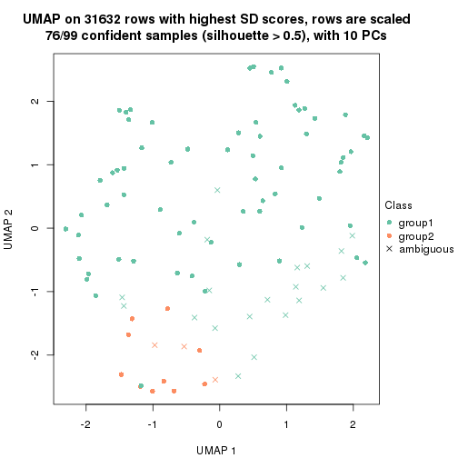
dimension_reduction(res, k = 3, method = "UMAP")
dimension_reduction(res, k = 4, method = "UMAP")
dimension_reduction(res, k = 5, method = "UMAP")
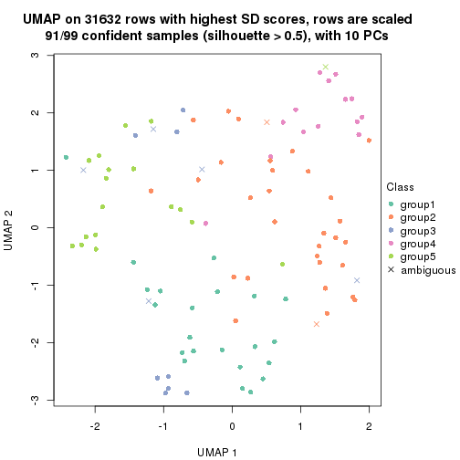
dimension_reduction(res, k = 6, method = "UMAP")
Following heatmap shows how subgroups are split when increasing k:
collect_classes(res)
Test correlation between subgroups and known annotations. If the known annotation is numeric, one-way ANOVA test is applied, and if the known annotation is discrete, chi-squared contingency table test is applied.
test_to_known_factors(res)
#> n disease.state(p) k
#> SD:mclust 76 9.91e-04 2
#> SD:mclust 89 1.05e-19 3
#> SD:mclust 92 3.23e-19 4
#> SD:mclust 91 6.70e-17 5
#> SD:mclust 92 8.84e-22 6
If matrix rows can be associated to genes, consider to use GO_Enrichment(res,
...) to perform function enrichment for the signature genes.
The object with results only for a single top-value method and a single partition method can be extracted as:
res = res_list["SD", "NMF"]
# you can also extract it by
# res = res_list["SD:NMF"]
A summary of res and all the functions that can be applied to it:
res
#> A 'ConsensusPartition' object with k = 2, 3, 4, 5, 6.
#> On a matrix with 31632 rows and 99 columns.
#> Top rows (1000, 2000, 3000, 4000, 5000) are extracted by 'SD' method.
#> Subgroups are detected by 'NMF' method.
#> Performed in total 1250 partitions by row resampling.
#> Best k for subgroups seems to be 3.
#>
#> Following methods can be applied to this 'ConsensusPartition' object:
#> [1] "cola_report" "collect_classes" "collect_plots"
#> [4] "collect_stats" "colnames" "compare_signatures"
#> [7] "consensus_heatmap" "dimension_reduction" "functional_enrichment"
#> [10] "get_anno_col" "get_anno" "get_classes"
#> [13] "get_consensus" "get_matrix" "get_membership"
#> [16] "get_param" "get_signatures" "get_stats"
#> [19] "is_best_k" "is_stable_k" "membership_heatmap"
#> [22] "ncol" "nrow" "plot_ecdf"
#> [25] "rownames" "select_partition_number" "show"
#> [28] "suggest_best_k" "test_to_known_factors"
collect_plots() function collects all the plots made from res for all k (number of partitions)
into one single page to provide an easy and fast comparison between different k.
collect_plots(res)
The plots are:
k and the heatmap of
predicted classes for each k.k.k.k.All the plots in panels can be made by individual functions and they are plotted later in this section.
select_partition_number() produces several plots showing different
statistics for choosing “optimized” k. There are following statistics:
k;k, the area increased is defined as \(A_k - A_{k-1}\).The detailed explanations of these statistics can be found in the cola vignette.
Generally speaking, lower PAC score, higher mean silhouette score or higher
concordance corresponds to better partition. Rand index and Jaccard index
measure how similar the current partition is compared to partition with k-1.
If they are too similar, we won't accept k is better than k-1.
select_partition_number(res)
The numeric values for all these statistics can be obtained by get_stats().
get_stats(res)
#> k 1-PAC mean_silhouette concordance area_increased Rand Jaccard
#> 2 2 0.300 0.630 0.795 0.4829 0.532 0.532
#> 3 3 0.726 0.821 0.920 0.3717 0.640 0.416
#> 4 4 0.617 0.696 0.810 0.1163 0.866 0.637
#> 5 5 0.577 0.538 0.712 0.0627 0.883 0.619
#> 6 6 0.614 0.479 0.672 0.0484 0.827 0.402
suggest_best_k() suggests the best \(k\) based on these statistics. The rules are as follows:
NA.suggest_best_k(res)
#> [1] 3
Following shows the table of the partitions (You need to click the show/hide
code output link to see it). The membership matrix (columns with name p*)
is inferred by
clue::cl_consensus()
function with the SE method. Basically the value in the membership matrix
represents the probability to belong to a certain group. The finall class
label for an item is determined with the group with highest probability it
belongs to.
In get_classes() function, the entropy is calculated from the membership
matrix and the silhouette score is calculated from the consensus matrix.
cbind(get_classes(res, k = 2), get_membership(res, k = 2))
#> class entropy silhouette p1 p2
#> GSM1152309 1 0.814 0.719 0.748 0.252
#> GSM1152310 2 0.917 0.249 0.332 0.668
#> GSM1152311 1 0.767 0.729 0.776 0.224
#> GSM1152312 1 0.388 0.679 0.924 0.076
#> GSM1152313 2 0.469 0.723 0.100 0.900
#> GSM1152314 1 1.000 -0.296 0.508 0.492
#> GSM1152315 1 0.821 0.716 0.744 0.256
#> GSM1152316 2 0.494 0.626 0.108 0.892
#> GSM1152317 1 0.827 0.713 0.740 0.260
#> GSM1152318 2 0.881 0.339 0.300 0.700
#> GSM1152319 1 0.808 0.721 0.752 0.248
#> GSM1152320 1 0.767 0.729 0.776 0.224
#> GSM1152321 2 0.998 -0.236 0.472 0.528
#> GSM1152322 2 0.827 0.424 0.260 0.740
#> GSM1152323 2 0.653 0.564 0.168 0.832
#> GSM1152324 1 0.808 0.721 0.752 0.248
#> GSM1152325 1 0.990 0.445 0.560 0.440
#> GSM1152326 1 0.802 0.723 0.756 0.244
#> GSM1152327 2 0.722 0.525 0.200 0.800
#> GSM1152328 1 0.373 0.730 0.928 0.072
#> GSM1152329 1 0.767 0.729 0.776 0.224
#> GSM1152330 1 0.788 0.726 0.764 0.236
#> GSM1152331 1 0.808 0.721 0.752 0.248
#> GSM1152332 1 0.163 0.719 0.976 0.024
#> GSM1152333 1 0.242 0.725 0.960 0.040
#> GSM1152334 2 0.373 0.653 0.072 0.928
#> GSM1152335 1 0.767 0.729 0.776 0.224
#> GSM1152336 1 0.808 0.721 0.752 0.248
#> GSM1152337 1 0.808 0.721 0.752 0.248
#> GSM1152338 1 0.781 0.727 0.768 0.232
#> GSM1152339 1 0.767 0.729 0.776 0.224
#> GSM1152340 1 0.795 0.725 0.760 0.240
#> GSM1152341 1 0.767 0.729 0.776 0.224
#> GSM1152342 1 0.808 0.721 0.752 0.248
#> GSM1152343 1 0.808 0.721 0.752 0.248
#> GSM1152344 1 0.795 0.725 0.760 0.240
#> GSM1152345 1 0.992 0.429 0.552 0.448
#> GSM1152346 2 0.662 0.560 0.172 0.828
#> GSM1152347 2 0.808 0.725 0.248 0.752
#> GSM1152348 1 0.767 0.729 0.776 0.224
#> GSM1152349 2 0.808 0.725 0.248 0.752
#> GSM1152355 1 0.697 0.556 0.812 0.188
#> GSM1152356 1 0.855 0.388 0.720 0.280
#> GSM1152357 1 0.443 0.676 0.908 0.092
#> GSM1152358 2 0.358 0.717 0.068 0.932
#> GSM1152359 1 0.808 0.721 0.752 0.248
#> GSM1152360 1 0.260 0.726 0.956 0.044
#> GSM1152361 1 0.184 0.708 0.972 0.028
#> GSM1152362 1 0.891 0.666 0.692 0.308
#> GSM1152363 1 0.295 0.695 0.948 0.052
#> GSM1152364 1 0.574 0.620 0.864 0.136
#> GSM1152365 1 0.184 0.708 0.972 0.028
#> GSM1152366 1 0.343 0.688 0.936 0.064
#> GSM1152367 1 0.343 0.688 0.936 0.064
#> GSM1152368 1 0.745 0.519 0.788 0.212
#> GSM1152369 1 0.343 0.688 0.936 0.064
#> GSM1152370 1 0.311 0.692 0.944 0.056
#> GSM1152371 1 0.204 0.703 0.968 0.032
#> GSM1152372 1 0.891 0.324 0.692 0.308
#> GSM1152373 1 0.706 0.549 0.808 0.192
#> GSM1152374 2 0.881 0.422 0.300 0.700
#> GSM1152375 1 0.373 0.682 0.928 0.072
#> GSM1152376 1 0.653 0.582 0.832 0.168
#> GSM1152377 1 0.343 0.688 0.936 0.064
#> GSM1152378 1 0.871 0.369 0.708 0.292
#> GSM1152379 1 0.808 0.721 0.752 0.248
#> GSM1152380 1 0.605 0.606 0.852 0.148
#> GSM1152381 1 0.295 0.695 0.948 0.052
#> GSM1152382 1 0.358 0.730 0.932 0.068
#> GSM1152383 1 0.839 0.418 0.732 0.268
#> GSM1152384 1 0.343 0.688 0.936 0.064
#> GSM1152385 1 0.808 0.721 0.752 0.248
#> GSM1152386 2 0.494 0.626 0.108 0.892
#> GSM1152387 1 0.753 0.730 0.784 0.216
#> GSM1152289 1 0.615 0.710 0.848 0.152
#> GSM1152290 2 0.788 0.731 0.236 0.764
#> GSM1152291 2 0.808 0.725 0.248 0.752
#> GSM1152292 2 0.767 0.735 0.224 0.776
#> GSM1152293 2 0.781 0.733 0.232 0.768
#> GSM1152294 2 0.295 0.671 0.052 0.948
#> GSM1152295 2 0.971 0.531 0.400 0.600
#> GSM1152296 1 0.738 0.526 0.792 0.208
#> GSM1152297 2 0.767 0.735 0.224 0.776
#> GSM1152298 2 0.760 0.736 0.220 0.780
#> GSM1152299 2 0.242 0.711 0.040 0.960
#> GSM1152300 2 0.808 0.725 0.248 0.752
#> GSM1152301 2 0.808 0.725 0.248 0.752
#> GSM1152302 2 0.767 0.735 0.224 0.776
#> GSM1152303 2 0.767 0.735 0.224 0.776
#> GSM1152304 2 0.767 0.735 0.224 0.776
#> GSM1152305 2 0.994 0.418 0.456 0.544
#> GSM1152306 2 0.808 0.725 0.248 0.752
#> GSM1152307 2 0.808 0.725 0.248 0.752
#> GSM1152308 1 0.795 0.663 0.760 0.240
#> GSM1152350 2 0.278 0.708 0.048 0.952
#> GSM1152351 2 0.295 0.671 0.052 0.948
#> GSM1152352 2 0.260 0.710 0.044 0.956
#> GSM1152353 2 0.753 0.736 0.216 0.784
#> GSM1152354 1 0.997 -0.176 0.532 0.468
cbind(get_classes(res, k = 3), get_membership(res, k = 3))
#> class entropy silhouette p1 p2 p3
#> GSM1152309 2 0.0000 0.891 0.000 1.000 0.000
#> GSM1152310 2 0.0424 0.888 0.000 0.992 0.008
#> GSM1152311 2 0.4504 0.755 0.196 0.804 0.000
#> GSM1152312 1 0.0000 0.929 1.000 0.000 0.000
#> GSM1152313 3 0.2066 0.870 0.000 0.060 0.940
#> GSM1152314 1 0.1411 0.908 0.964 0.000 0.036
#> GSM1152315 2 0.0000 0.891 0.000 1.000 0.000
#> GSM1152316 2 0.6126 0.352 0.000 0.600 0.400
#> GSM1152317 2 0.0000 0.891 0.000 1.000 0.000
#> GSM1152318 2 0.0000 0.891 0.000 1.000 0.000
#> GSM1152319 2 0.0000 0.891 0.000 1.000 0.000
#> GSM1152320 2 0.6045 0.426 0.380 0.620 0.000
#> GSM1152321 2 0.0000 0.891 0.000 1.000 0.000
#> GSM1152322 2 0.0237 0.890 0.000 0.996 0.004
#> GSM1152323 2 0.0237 0.890 0.000 0.996 0.004
#> GSM1152324 2 0.0000 0.891 0.000 1.000 0.000
#> GSM1152325 2 0.0000 0.891 0.000 1.000 0.000
#> GSM1152326 2 0.3816 0.791 0.148 0.852 0.000
#> GSM1152327 2 0.5216 0.636 0.000 0.740 0.260
#> GSM1152328 1 0.0747 0.922 0.984 0.016 0.000
#> GSM1152329 1 0.5706 0.495 0.680 0.320 0.000
#> GSM1152330 2 0.0000 0.891 0.000 1.000 0.000
#> GSM1152331 2 0.0000 0.891 0.000 1.000 0.000
#> GSM1152332 1 0.0424 0.926 0.992 0.008 0.000
#> GSM1152333 1 0.1643 0.903 0.956 0.044 0.000
#> GSM1152334 2 0.5016 0.654 0.000 0.760 0.240
#> GSM1152335 2 0.4504 0.745 0.196 0.804 0.000
#> GSM1152336 2 0.0000 0.891 0.000 1.000 0.000
#> GSM1152337 2 0.0000 0.891 0.000 1.000 0.000
#> GSM1152338 2 0.0237 0.890 0.004 0.996 0.000
#> GSM1152339 2 0.4555 0.742 0.200 0.800 0.000
#> GSM1152340 2 0.0592 0.886 0.012 0.988 0.000
#> GSM1152341 2 0.3482 0.812 0.128 0.872 0.000
#> GSM1152342 2 0.0000 0.891 0.000 1.000 0.000
#> GSM1152343 2 0.0000 0.891 0.000 1.000 0.000
#> GSM1152344 2 0.0000 0.891 0.000 1.000 0.000
#> GSM1152345 2 0.0000 0.891 0.000 1.000 0.000
#> GSM1152346 2 0.0892 0.880 0.000 0.980 0.020
#> GSM1152347 3 0.0424 0.909 0.008 0.000 0.992
#> GSM1152348 2 0.6204 0.310 0.424 0.576 0.000
#> GSM1152349 3 0.1643 0.888 0.044 0.000 0.956
#> GSM1152355 1 0.0747 0.921 0.984 0.000 0.016
#> GSM1152356 1 0.5529 0.567 0.704 0.000 0.296
#> GSM1152357 1 0.9537 0.222 0.480 0.224 0.296
#> GSM1152358 3 0.0000 0.912 0.000 0.000 1.000
#> GSM1152359 2 0.0237 0.890 0.004 0.996 0.000
#> GSM1152360 1 0.1163 0.914 0.972 0.028 0.000
#> GSM1152361 1 0.0237 0.928 0.996 0.004 0.000
#> GSM1152362 2 0.0000 0.891 0.000 1.000 0.000
#> GSM1152363 1 0.0000 0.929 1.000 0.000 0.000
#> GSM1152364 1 0.0000 0.929 1.000 0.000 0.000
#> GSM1152365 1 0.0424 0.926 0.992 0.008 0.000
#> GSM1152366 1 0.0000 0.929 1.000 0.000 0.000
#> GSM1152367 1 0.0000 0.929 1.000 0.000 0.000
#> GSM1152368 1 0.0000 0.929 1.000 0.000 0.000
#> GSM1152369 1 0.0000 0.929 1.000 0.000 0.000
#> GSM1152370 1 0.0000 0.929 1.000 0.000 0.000
#> GSM1152371 1 0.0424 0.926 0.992 0.008 0.000
#> GSM1152372 1 0.0000 0.929 1.000 0.000 0.000
#> GSM1152373 1 0.0000 0.929 1.000 0.000 0.000
#> GSM1152374 2 0.4291 0.749 0.000 0.820 0.180
#> GSM1152375 1 0.0000 0.929 1.000 0.000 0.000
#> GSM1152376 1 0.0000 0.929 1.000 0.000 0.000
#> GSM1152377 1 0.0000 0.929 1.000 0.000 0.000
#> GSM1152378 1 0.4062 0.790 0.836 0.000 0.164
#> GSM1152379 2 0.0000 0.891 0.000 1.000 0.000
#> GSM1152380 1 0.0000 0.929 1.000 0.000 0.000
#> GSM1152381 1 0.0000 0.929 1.000 0.000 0.000
#> GSM1152382 1 0.1289 0.911 0.968 0.032 0.000
#> GSM1152383 1 0.1643 0.902 0.956 0.000 0.044
#> GSM1152384 1 0.0000 0.929 1.000 0.000 0.000
#> GSM1152385 2 0.0000 0.891 0.000 1.000 0.000
#> GSM1152386 2 0.4062 0.765 0.000 0.836 0.164
#> GSM1152387 2 0.5623 0.617 0.280 0.716 0.004
#> GSM1152289 1 0.6476 0.715 0.748 0.068 0.184
#> GSM1152290 3 0.0000 0.912 0.000 0.000 1.000
#> GSM1152291 3 0.5882 0.404 0.348 0.000 0.652
#> GSM1152292 3 0.0000 0.912 0.000 0.000 1.000
#> GSM1152293 3 0.0000 0.912 0.000 0.000 1.000
#> GSM1152294 3 0.6235 0.240 0.000 0.436 0.564
#> GSM1152295 1 0.4796 0.717 0.780 0.000 0.220
#> GSM1152296 1 0.0237 0.927 0.996 0.000 0.004
#> GSM1152297 3 0.0000 0.912 0.000 0.000 1.000
#> GSM1152298 3 0.0000 0.912 0.000 0.000 1.000
#> GSM1152299 3 0.0000 0.912 0.000 0.000 1.000
#> GSM1152300 3 0.1964 0.877 0.056 0.000 0.944
#> GSM1152301 3 0.1411 0.893 0.036 0.000 0.964
#> GSM1152302 3 0.0000 0.912 0.000 0.000 1.000
#> GSM1152303 3 0.0000 0.912 0.000 0.000 1.000
#> GSM1152304 3 0.0000 0.912 0.000 0.000 1.000
#> GSM1152305 1 0.5216 0.656 0.740 0.000 0.260
#> GSM1152306 3 0.0000 0.912 0.000 0.000 1.000
#> GSM1152307 3 0.0592 0.907 0.012 0.000 0.988
#> GSM1152308 2 0.8595 0.179 0.100 0.496 0.404
#> GSM1152350 3 0.4346 0.742 0.000 0.184 0.816
#> GSM1152351 3 0.4062 0.767 0.000 0.164 0.836
#> GSM1152352 3 0.1163 0.897 0.000 0.028 0.972
#> GSM1152353 3 0.0000 0.912 0.000 0.000 1.000
#> GSM1152354 3 0.6280 0.166 0.000 0.460 0.540
cbind(get_classes(res, k = 4), get_membership(res, k = 4))
#> class entropy silhouette p1 p2 p3 p4
#> GSM1152309 2 0.0188 0.8762 0.000 0.996 0.000 0.004
#> GSM1152310 4 0.4152 0.7253 0.000 0.160 0.032 0.808
#> GSM1152311 2 0.2647 0.8244 0.120 0.880 0.000 0.000
#> GSM1152312 1 0.2342 0.7111 0.912 0.008 0.080 0.000
#> GSM1152313 3 0.2048 0.8441 0.064 0.008 0.928 0.000
#> GSM1152314 1 0.3208 0.6646 0.848 0.004 0.148 0.000
#> GSM1152315 4 0.3172 0.7334 0.000 0.160 0.000 0.840
#> GSM1152316 2 0.4925 0.3478 0.000 0.572 0.428 0.000
#> GSM1152317 2 0.0188 0.8762 0.000 0.996 0.000 0.004
#> GSM1152318 2 0.0672 0.8735 0.000 0.984 0.008 0.008
#> GSM1152319 2 0.0188 0.8762 0.000 0.996 0.000 0.004
#> GSM1152320 2 0.4405 0.7772 0.152 0.800 0.000 0.048
#> GSM1152321 2 0.0000 0.8758 0.000 1.000 0.000 0.000
#> GSM1152322 2 0.0804 0.8721 0.000 0.980 0.008 0.012
#> GSM1152323 2 0.2399 0.8400 0.000 0.920 0.048 0.032
#> GSM1152324 2 0.0336 0.8755 0.000 0.992 0.000 0.008
#> GSM1152325 2 0.0188 0.8762 0.000 0.996 0.000 0.004
#> GSM1152326 2 0.5527 0.6586 0.104 0.728 0.000 0.168
#> GSM1152327 2 0.4134 0.6803 0.000 0.740 0.260 0.000
#> GSM1152328 1 0.3032 0.6792 0.868 0.124 0.008 0.000
#> GSM1152329 1 0.4961 0.1023 0.552 0.448 0.000 0.000
#> GSM1152330 2 0.2408 0.8332 0.104 0.896 0.000 0.000
#> GSM1152331 2 0.0188 0.8762 0.000 0.996 0.000 0.004
#> GSM1152332 1 0.3172 0.7476 0.840 0.000 0.000 0.160
#> GSM1152333 1 0.2760 0.6849 0.872 0.128 0.000 0.000
#> GSM1152334 4 0.6037 0.6500 0.000 0.152 0.160 0.688
#> GSM1152335 2 0.2704 0.8218 0.124 0.876 0.000 0.000
#> GSM1152336 2 0.0188 0.8762 0.000 0.996 0.000 0.004
#> GSM1152337 2 0.0188 0.8762 0.000 0.996 0.000 0.004
#> GSM1152338 2 0.0188 0.8762 0.000 0.996 0.000 0.004
#> GSM1152339 2 0.3907 0.6827 0.232 0.768 0.000 0.000
#> GSM1152340 2 0.1940 0.8486 0.076 0.924 0.000 0.000
#> GSM1152341 2 0.5185 0.6768 0.176 0.748 0.000 0.076
#> GSM1152342 4 0.4814 0.5932 0.008 0.316 0.000 0.676
#> GSM1152343 4 0.5440 0.4450 0.020 0.384 0.000 0.596
#> GSM1152344 2 0.0592 0.8724 0.016 0.984 0.000 0.000
#> GSM1152345 2 0.0188 0.8762 0.000 0.996 0.004 0.000
#> GSM1152346 2 0.0804 0.8719 0.000 0.980 0.012 0.008
#> GSM1152347 3 0.1792 0.8438 0.068 0.000 0.932 0.000
#> GSM1152348 1 0.6715 0.5314 0.604 0.252 0.000 0.144
#> GSM1152349 3 0.2125 0.8421 0.076 0.000 0.920 0.004
#> GSM1152355 4 0.4981 0.0821 0.464 0.000 0.000 0.536
#> GSM1152356 4 0.3726 0.4901 0.212 0.000 0.000 0.788
#> GSM1152357 4 0.4940 0.7196 0.096 0.128 0.000 0.776
#> GSM1152358 3 0.4843 0.3513 0.000 0.000 0.604 0.396
#> GSM1152359 2 0.5200 0.6114 0.072 0.744 0.000 0.184
#> GSM1152360 1 0.3647 0.6860 0.832 0.016 0.000 0.152
#> GSM1152361 1 0.3610 0.7358 0.800 0.000 0.000 0.200
#> GSM1152362 2 0.0188 0.8752 0.004 0.996 0.000 0.000
#> GSM1152363 1 0.0188 0.7394 0.996 0.004 0.000 0.000
#> GSM1152364 4 0.4996 -0.2800 0.484 0.000 0.000 0.516
#> GSM1152365 1 0.4977 0.3880 0.540 0.000 0.000 0.460
#> GSM1152366 1 0.3219 0.7469 0.836 0.000 0.000 0.164
#> GSM1152367 1 0.3649 0.7343 0.796 0.000 0.000 0.204
#> GSM1152368 1 0.3764 0.7471 0.844 0.000 0.040 0.116
#> GSM1152369 1 0.3688 0.7333 0.792 0.000 0.000 0.208
#> GSM1152370 1 0.4250 0.6853 0.724 0.000 0.000 0.276
#> GSM1152371 1 0.4994 0.3842 0.520 0.000 0.000 0.480
#> GSM1152372 1 0.4955 0.7320 0.772 0.000 0.084 0.144
#> GSM1152373 1 0.2401 0.7056 0.904 0.004 0.092 0.000
#> GSM1152374 2 0.4454 0.6193 0.000 0.692 0.308 0.000
#> GSM1152375 1 0.3688 0.7332 0.792 0.000 0.000 0.208
#> GSM1152376 1 0.1576 0.7259 0.948 0.004 0.048 0.000
#> GSM1152377 1 0.3172 0.7484 0.840 0.000 0.000 0.160
#> GSM1152378 1 0.4543 0.4757 0.676 0.000 0.324 0.000
#> GSM1152379 2 0.3876 0.7817 0.040 0.836 0.000 0.124
#> GSM1152380 1 0.0524 0.7420 0.988 0.000 0.004 0.008
#> GSM1152381 1 0.3266 0.7457 0.832 0.000 0.000 0.168
#> GSM1152382 1 0.4277 0.6830 0.720 0.000 0.000 0.280
#> GSM1152383 1 0.2973 0.6883 0.856 0.000 0.000 0.144
#> GSM1152384 1 0.0376 0.7387 0.992 0.004 0.004 0.000
#> GSM1152385 2 0.0188 0.8762 0.000 0.996 0.000 0.004
#> GSM1152386 2 0.5791 0.5710 0.000 0.656 0.284 0.060
#> GSM1152387 2 0.3711 0.7999 0.140 0.836 0.024 0.000
#> GSM1152289 1 0.7283 -0.1041 0.432 0.420 0.148 0.000
#> GSM1152290 3 0.0000 0.8546 0.000 0.000 1.000 0.000
#> GSM1152291 3 0.2216 0.8309 0.092 0.000 0.908 0.000
#> GSM1152292 3 0.2281 0.8320 0.000 0.000 0.904 0.096
#> GSM1152293 3 0.2589 0.8203 0.000 0.000 0.884 0.116
#> GSM1152294 4 0.4030 0.7315 0.000 0.072 0.092 0.836
#> GSM1152295 3 0.4941 0.2680 0.436 0.000 0.564 0.000
#> GSM1152296 1 0.4605 0.6201 0.664 0.000 0.000 0.336
#> GSM1152297 4 0.2011 0.7204 0.000 0.000 0.080 0.920
#> GSM1152298 3 0.1302 0.8497 0.000 0.000 0.956 0.044
#> GSM1152299 3 0.1867 0.8416 0.000 0.000 0.928 0.072
#> GSM1152300 3 0.1867 0.8428 0.072 0.000 0.928 0.000
#> GSM1152301 3 0.2197 0.8392 0.080 0.000 0.916 0.004
#> GSM1152302 3 0.2216 0.8344 0.000 0.000 0.908 0.092
#> GSM1152303 3 0.2814 0.8066 0.000 0.000 0.868 0.132
#> GSM1152304 3 0.0188 0.8548 0.000 0.000 0.996 0.004
#> GSM1152305 1 0.4985 -0.0222 0.532 0.000 0.468 0.000
#> GSM1152306 3 0.3975 0.6791 0.000 0.000 0.760 0.240
#> GSM1152307 3 0.1610 0.8572 0.016 0.000 0.952 0.032
#> GSM1152308 4 0.1118 0.6946 0.036 0.000 0.000 0.964
#> GSM1152350 4 0.4374 0.7162 0.000 0.068 0.120 0.812
#> GSM1152351 4 0.4756 0.6960 0.000 0.072 0.144 0.784
#> GSM1152352 4 0.4199 0.6777 0.000 0.032 0.164 0.804
#> GSM1152353 4 0.2589 0.7100 0.000 0.000 0.116 0.884
#> GSM1152354 4 0.0188 0.7151 0.004 0.000 0.000 0.996
cbind(get_classes(res, k = 5), get_membership(res, k = 5))
#> class entropy silhouette p1 p2 p3 p4 p5
#> GSM1152309 4 0.2608 0.7182 0.004 0.088 0.000 0.888 0.020
#> GSM1152310 5 0.5993 0.4863 0.000 0.172 0.000 0.248 0.580
#> GSM1152311 4 0.5268 0.5873 0.248 0.084 0.004 0.664 0.000
#> GSM1152312 1 0.2390 0.5446 0.912 0.032 0.044 0.012 0.000
#> GSM1152313 3 0.2424 0.8237 0.044 0.016 0.916 0.012 0.012
#> GSM1152314 1 0.2249 0.5507 0.896 0.000 0.096 0.000 0.008
#> GSM1152315 5 0.6341 0.4664 0.008 0.184 0.000 0.248 0.560
#> GSM1152316 4 0.5790 0.2287 0.000 0.068 0.424 0.500 0.008
#> GSM1152317 4 0.1731 0.7291 0.004 0.060 0.000 0.932 0.004
#> GSM1152318 4 0.2264 0.7373 0.000 0.060 0.024 0.912 0.004
#> GSM1152319 4 0.4196 0.6553 0.016 0.192 0.000 0.768 0.024
#> GSM1152320 4 0.6058 0.5106 0.224 0.152 0.000 0.612 0.012
#> GSM1152321 4 0.2388 0.7258 0.004 0.076 0.012 0.904 0.004
#> GSM1152322 4 0.2297 0.7337 0.000 0.060 0.008 0.912 0.020
#> GSM1152323 4 0.3331 0.7272 0.000 0.068 0.024 0.864 0.044
#> GSM1152324 4 0.2828 0.7116 0.004 0.104 0.000 0.872 0.020
#> GSM1152325 4 0.2452 0.7227 0.000 0.084 0.016 0.896 0.004
#> GSM1152326 4 0.5894 0.5340 0.068 0.300 0.000 0.604 0.028
#> GSM1152327 4 0.6232 0.4782 0.016 0.088 0.292 0.592 0.012
#> GSM1152328 1 0.2650 0.5192 0.892 0.036 0.004 0.068 0.000
#> GSM1152329 1 0.5708 0.2808 0.588 0.112 0.000 0.300 0.000
#> GSM1152330 4 0.2104 0.7405 0.060 0.024 0.000 0.916 0.000
#> GSM1152331 4 0.1216 0.7396 0.020 0.020 0.000 0.960 0.000
#> GSM1152332 1 0.4441 0.2616 0.696 0.280 0.000 0.012 0.012
#> GSM1152333 1 0.2688 0.5280 0.896 0.036 0.000 0.056 0.012
#> GSM1152334 5 0.5388 0.6298 0.000 0.156 0.028 0.104 0.712
#> GSM1152335 4 0.5320 0.4448 0.368 0.060 0.000 0.572 0.000
#> GSM1152336 4 0.2170 0.7412 0.020 0.036 0.000 0.924 0.020
#> GSM1152337 4 0.2040 0.7410 0.032 0.032 0.000 0.928 0.008
#> GSM1152338 4 0.2623 0.7165 0.004 0.096 0.000 0.884 0.016
#> GSM1152339 4 0.5899 0.1683 0.444 0.076 0.000 0.472 0.008
#> GSM1152340 4 0.3578 0.7141 0.132 0.048 0.000 0.820 0.000
#> GSM1152341 4 0.5479 0.6076 0.128 0.176 0.000 0.684 0.012
#> GSM1152342 4 0.6754 -0.0712 0.008 0.192 0.000 0.424 0.376
#> GSM1152343 4 0.7108 0.1472 0.028 0.220 0.000 0.472 0.280
#> GSM1152344 4 0.3853 0.7136 0.076 0.068 0.008 0.836 0.012
#> GSM1152345 4 0.2064 0.7439 0.020 0.028 0.016 0.932 0.004
#> GSM1152346 4 0.3038 0.7338 0.000 0.088 0.024 0.872 0.016
#> GSM1152347 3 0.1965 0.8134 0.096 0.000 0.904 0.000 0.000
#> GSM1152348 1 0.7071 0.2384 0.408 0.344 0.000 0.232 0.016
#> GSM1152349 3 0.3768 0.7933 0.116 0.028 0.828 0.000 0.028
#> GSM1152355 1 0.6901 0.1604 0.428 0.244 0.008 0.000 0.320
#> GSM1152356 5 0.5084 0.4215 0.052 0.332 0.000 0.000 0.616
#> GSM1152357 5 0.6753 0.5308 0.088 0.252 0.004 0.072 0.584
#> GSM1152358 3 0.4958 0.2993 0.012 0.012 0.552 0.000 0.424
#> GSM1152359 4 0.7132 0.0263 0.368 0.204 0.000 0.404 0.024
#> GSM1152360 1 0.5196 0.4917 0.716 0.188 0.000 0.068 0.028
#> GSM1152361 2 0.4025 0.7465 0.292 0.700 0.000 0.000 0.008
#> GSM1152362 4 0.4566 0.7033 0.088 0.092 0.008 0.792 0.020
#> GSM1152363 1 0.1153 0.5459 0.964 0.024 0.008 0.004 0.000
#> GSM1152364 1 0.7107 0.1861 0.428 0.320 0.012 0.004 0.236
#> GSM1152365 2 0.4403 0.5440 0.148 0.776 0.000 0.012 0.064
#> GSM1152366 1 0.4305 -0.4295 0.512 0.488 0.000 0.000 0.000
#> GSM1152367 2 0.3752 0.7491 0.292 0.708 0.000 0.000 0.000
#> GSM1152368 2 0.4015 0.7095 0.348 0.652 0.000 0.000 0.000
#> GSM1152369 2 0.3730 0.7507 0.288 0.712 0.000 0.000 0.000
#> GSM1152370 1 0.6257 0.0570 0.460 0.392 0.000 0.000 0.148
#> GSM1152371 2 0.4042 0.7181 0.212 0.756 0.000 0.000 0.032
#> GSM1152372 2 0.4084 0.7270 0.328 0.668 0.004 0.000 0.000
#> GSM1152373 1 0.2124 0.5526 0.900 0.000 0.096 0.000 0.004
#> GSM1152374 4 0.7517 0.4876 0.048 0.120 0.240 0.548 0.044
#> GSM1152375 2 0.3837 0.7459 0.308 0.692 0.000 0.000 0.000
#> GSM1152376 1 0.1626 0.5518 0.940 0.016 0.044 0.000 0.000
#> GSM1152377 1 0.5145 0.4092 0.644 0.312 0.024 0.008 0.012
#> GSM1152378 3 0.4850 0.6228 0.224 0.076 0.700 0.000 0.000
#> GSM1152379 4 0.4409 0.6667 0.008 0.180 0.000 0.760 0.052
#> GSM1152380 1 0.2654 0.5490 0.896 0.056 0.040 0.000 0.008
#> GSM1152381 1 0.4232 0.2460 0.676 0.312 0.000 0.000 0.012
#> GSM1152382 2 0.6590 -0.1955 0.388 0.488 0.000 0.052 0.072
#> GSM1152383 1 0.6500 0.4425 0.628 0.184 0.108 0.000 0.080
#> GSM1152384 1 0.1843 0.5306 0.932 0.052 0.008 0.008 0.000
#> GSM1152385 4 0.0880 0.7402 0.000 0.032 0.000 0.968 0.000
#> GSM1152386 4 0.6130 0.3971 0.000 0.080 0.344 0.552 0.024
#> GSM1152387 4 0.6455 0.5863 0.188 0.124 0.052 0.632 0.004
#> GSM1152289 4 0.7650 0.3172 0.320 0.148 0.080 0.448 0.004
#> GSM1152290 3 0.0451 0.8196 0.004 0.000 0.988 0.000 0.008
#> GSM1152291 3 0.2672 0.7822 0.116 0.008 0.872 0.000 0.004
#> GSM1152292 3 0.4193 0.6864 0.024 0.000 0.720 0.000 0.256
#> GSM1152293 3 0.4211 0.4990 0.000 0.004 0.636 0.000 0.360
#> GSM1152294 5 0.2053 0.7007 0.000 0.016 0.040 0.016 0.928
#> GSM1152295 1 0.4450 -0.1191 0.508 0.000 0.488 0.000 0.004
#> GSM1152296 5 0.6507 -0.0515 0.376 0.192 0.000 0.000 0.432
#> GSM1152297 5 0.4514 0.5996 0.000 0.188 0.072 0.000 0.740
#> GSM1152298 3 0.1725 0.8088 0.000 0.020 0.936 0.000 0.044
#> GSM1152299 3 0.2766 0.7858 0.000 0.056 0.892 0.012 0.040
#> GSM1152300 3 0.1697 0.8221 0.060 0.000 0.932 0.000 0.008
#> GSM1152301 3 0.3684 0.7460 0.192 0.004 0.788 0.000 0.016
#> GSM1152302 3 0.2844 0.8148 0.028 0.004 0.876 0.000 0.092
#> GSM1152303 3 0.3583 0.7313 0.012 0.004 0.792 0.000 0.192
#> GSM1152304 3 0.0898 0.8180 0.000 0.008 0.972 0.000 0.020
#> GSM1152305 1 0.5098 0.1628 0.564 0.020 0.404 0.012 0.000
#> GSM1152306 5 0.4307 -0.2267 0.000 0.000 0.500 0.000 0.500
#> GSM1152307 3 0.3355 0.8125 0.048 0.012 0.856 0.000 0.084
#> GSM1152308 2 0.4607 0.3792 0.020 0.656 0.004 0.000 0.320
#> GSM1152350 5 0.1153 0.7026 0.000 0.004 0.024 0.008 0.964
#> GSM1152351 5 0.2122 0.6918 0.000 0.036 0.032 0.008 0.924
#> GSM1152352 5 0.1116 0.7017 0.000 0.004 0.028 0.004 0.964
#> GSM1152353 5 0.1300 0.7002 0.000 0.016 0.028 0.000 0.956
#> GSM1152354 5 0.1270 0.6876 0.000 0.052 0.000 0.000 0.948
cbind(get_classes(res, k = 6), get_membership(res, k = 6))
#> class entropy silhouette p1 p2 p3 p4 p5 p6
#> GSM1152309 4 0.0806 0.66426 0.008 0.020 0.000 0.972 0.000 0.000
#> GSM1152310 4 0.4494 0.56625 0.140 0.004 0.000 0.720 0.136 0.000
#> GSM1152311 2 0.2653 0.49886 0.012 0.844 0.000 0.144 0.000 0.000
#> GSM1152312 2 0.4194 0.27623 0.352 0.628 0.008 0.000 0.000 0.012
#> GSM1152313 3 0.4479 0.60166 0.080 0.008 0.728 0.180 0.004 0.000
#> GSM1152314 1 0.4893 -0.03528 0.512 0.440 0.036 0.000 0.000 0.012
#> GSM1152315 4 0.5112 0.49930 0.196 0.008 0.000 0.652 0.144 0.000
#> GSM1152316 3 0.5399 0.18028 0.004 0.092 0.532 0.368 0.000 0.004
#> GSM1152317 4 0.1461 0.66538 0.016 0.044 0.000 0.940 0.000 0.000
#> GSM1152318 4 0.2510 0.64996 0.004 0.088 0.008 0.884 0.016 0.000
#> GSM1152319 4 0.4332 0.52785 0.276 0.052 0.000 0.672 0.000 0.000
#> GSM1152320 1 0.5820 -0.07630 0.416 0.184 0.000 0.400 0.000 0.000
#> GSM1152321 4 0.4619 0.32453 0.012 0.388 0.024 0.576 0.000 0.000
#> GSM1152322 4 0.2653 0.60102 0.000 0.144 0.012 0.844 0.000 0.000
#> GSM1152323 4 0.3031 0.64794 0.000 0.072 0.020 0.860 0.048 0.000
#> GSM1152324 4 0.1082 0.66770 0.040 0.004 0.000 0.956 0.000 0.000
#> GSM1152325 4 0.4989 0.32298 0.008 0.380 0.028 0.568 0.016 0.000
#> GSM1152326 4 0.5661 0.21135 0.412 0.056 0.000 0.488 0.000 0.044
#> GSM1152327 2 0.6507 0.00415 0.004 0.448 0.220 0.308 0.016 0.004
#> GSM1152328 2 0.3615 0.36043 0.292 0.700 0.000 0.000 0.000 0.008
#> GSM1152329 2 0.5735 0.21198 0.388 0.472 0.000 0.132 0.000 0.008
#> GSM1152330 2 0.4482 0.22314 0.036 0.580 0.000 0.384 0.000 0.000
#> GSM1152331 4 0.3975 0.21295 0.004 0.452 0.000 0.544 0.000 0.000
#> GSM1152332 1 0.5451 0.27761 0.564 0.296 0.000 0.004 0.000 0.136
#> GSM1152333 2 0.4058 0.27240 0.372 0.616 0.000 0.004 0.000 0.008
#> GSM1152334 5 0.4549 0.62537 0.068 0.000 0.032 0.164 0.736 0.000
#> GSM1152335 2 0.2775 0.52790 0.040 0.856 0.000 0.104 0.000 0.000
#> GSM1152336 2 0.5414 -0.10209 0.008 0.464 0.000 0.440 0.088 0.000
#> GSM1152337 2 0.4227 0.02010 0.008 0.500 0.000 0.488 0.000 0.004
#> GSM1152338 4 0.0891 0.66729 0.024 0.008 0.000 0.968 0.000 0.000
#> GSM1152339 2 0.6074 0.29817 0.336 0.452 0.000 0.204 0.000 0.008
#> GSM1152340 2 0.5544 0.45521 0.176 0.544 0.000 0.280 0.000 0.000
#> GSM1152341 4 0.5747 0.33709 0.320 0.104 0.000 0.548 0.000 0.028
#> GSM1152342 4 0.3852 0.54063 0.256 0.008 0.000 0.720 0.016 0.000
#> GSM1152343 4 0.4578 0.32885 0.396 0.032 0.000 0.568 0.004 0.000
#> GSM1152344 2 0.3329 0.41928 0.004 0.756 0.004 0.236 0.000 0.000
#> GSM1152345 4 0.5725 0.27431 0.020 0.320 0.092 0.560 0.008 0.000
#> GSM1152346 4 0.1341 0.65475 0.000 0.028 0.024 0.948 0.000 0.000
#> GSM1152347 3 0.3316 0.68332 0.052 0.136 0.812 0.000 0.000 0.000
#> GSM1152348 1 0.4855 0.23423 0.616 0.052 0.000 0.320 0.000 0.012
#> GSM1152349 3 0.3716 0.62439 0.248 0.008 0.732 0.000 0.012 0.000
#> GSM1152355 1 0.3256 0.57644 0.844 0.004 0.024 0.004 0.108 0.016
#> GSM1152356 1 0.6104 0.01932 0.484 0.004 0.024 0.000 0.360 0.128
#> GSM1152357 1 0.5550 0.33536 0.616 0.000 0.024 0.136 0.224 0.000
#> GSM1152358 3 0.5102 0.29211 0.068 0.000 0.608 0.016 0.308 0.000
#> GSM1152359 4 0.4859 0.37440 0.304 0.084 0.000 0.612 0.000 0.000
#> GSM1152360 1 0.2778 0.51978 0.824 0.168 0.000 0.008 0.000 0.000
#> GSM1152361 6 0.0000 0.87917 0.000 0.000 0.000 0.000 0.000 1.000
#> GSM1152362 2 0.4391 0.44476 0.000 0.720 0.000 0.188 0.088 0.004
#> GSM1152363 2 0.4374 0.11312 0.448 0.532 0.004 0.000 0.000 0.016
#> GSM1152364 1 0.2981 0.60496 0.880 0.008 0.008 0.020 0.044 0.040
#> GSM1152365 6 0.4428 0.24374 0.388 0.000 0.000 0.032 0.000 0.580
#> GSM1152366 6 0.5037 0.37476 0.188 0.172 0.000 0.000 0.000 0.640
#> GSM1152367 6 0.0146 0.87997 0.004 0.000 0.000 0.000 0.000 0.996
#> GSM1152368 6 0.0363 0.87512 0.000 0.012 0.000 0.000 0.000 0.988
#> GSM1152369 6 0.0146 0.87997 0.004 0.000 0.000 0.000 0.000 0.996
#> GSM1152370 1 0.3647 0.57989 0.812 0.008 0.000 0.020 0.028 0.132
#> GSM1152371 6 0.0260 0.87860 0.008 0.000 0.000 0.000 0.000 0.992
#> GSM1152372 6 0.0000 0.87917 0.000 0.000 0.000 0.000 0.000 1.000
#> GSM1152373 1 0.5254 -0.05323 0.484 0.440 0.064 0.000 0.000 0.012
#> GSM1152374 2 0.7798 0.23112 0.004 0.480 0.152 0.192 0.100 0.072
#> GSM1152375 6 0.0405 0.87801 0.008 0.004 0.000 0.000 0.000 0.988
#> GSM1152376 2 0.4678 0.16042 0.420 0.544 0.024 0.000 0.000 0.012
#> GSM1152377 1 0.2875 0.59423 0.876 0.044 0.004 0.020 0.000 0.056
#> GSM1152378 3 0.5895 0.62685 0.112 0.140 0.664 0.052 0.000 0.032
#> GSM1152379 4 0.2261 0.65707 0.104 0.000 0.000 0.884 0.004 0.008
#> GSM1152380 1 0.4731 0.29749 0.648 0.292 0.020 0.000 0.000 0.040
#> GSM1152381 1 0.4380 0.51017 0.700 0.080 0.000 0.000 0.000 0.220
#> GSM1152382 1 0.5094 0.47786 0.660 0.004 0.000 0.184 0.004 0.148
#> GSM1152383 1 0.1863 0.58626 0.924 0.008 0.056 0.000 0.004 0.008
#> GSM1152384 2 0.4453 0.11096 0.452 0.524 0.004 0.000 0.000 0.020
#> GSM1152385 4 0.3571 0.53500 0.008 0.240 0.000 0.744 0.000 0.008
#> GSM1152386 4 0.4836 0.33328 0.004 0.052 0.332 0.608 0.000 0.004
#> GSM1152387 2 0.4779 0.42335 0.020 0.712 0.048 0.204 0.000 0.016
#> GSM1152289 2 0.2578 0.51703 0.004 0.900 0.040 0.032 0.012 0.012
#> GSM1152290 3 0.1419 0.70591 0.012 0.016 0.952 0.004 0.016 0.000
#> GSM1152291 3 0.3652 0.63796 0.020 0.212 0.760 0.000 0.008 0.000
#> GSM1152292 5 0.3885 0.53545 0.012 0.004 0.300 0.000 0.684 0.000
#> GSM1152293 5 0.5298 0.37964 0.072 0.008 0.372 0.004 0.544 0.000
#> GSM1152294 5 0.3522 0.74326 0.100 0.008 0.036 0.024 0.832 0.000
#> GSM1152295 3 0.6141 0.08008 0.244 0.352 0.400 0.000 0.000 0.004
#> GSM1152296 1 0.5665 0.32203 0.572 0.036 0.000 0.000 0.304 0.088
#> GSM1152297 5 0.6106 0.61067 0.144 0.004 0.164 0.000 0.612 0.076
#> GSM1152298 3 0.1232 0.69967 0.004 0.000 0.956 0.016 0.024 0.000
#> GSM1152299 3 0.2413 0.68927 0.016 0.020 0.908 0.028 0.028 0.000
#> GSM1152300 3 0.1856 0.71162 0.048 0.032 0.920 0.000 0.000 0.000
#> GSM1152301 3 0.4687 0.63866 0.180 0.136 0.684 0.000 0.000 0.000
#> GSM1152302 3 0.3072 0.66089 0.076 0.000 0.840 0.000 0.084 0.000
#> GSM1152303 3 0.4405 0.46133 0.072 0.000 0.688 0.000 0.240 0.000
#> GSM1152304 3 0.1448 0.69988 0.000 0.016 0.948 0.012 0.024 0.000
#> GSM1152305 2 0.5609 0.34553 0.192 0.628 0.156 0.000 0.012 0.012
#> GSM1152306 5 0.4871 0.51791 0.060 0.004 0.312 0.000 0.620 0.004
#> GSM1152307 3 0.3763 0.64678 0.172 0.000 0.768 0.000 0.060 0.000
#> GSM1152308 6 0.1946 0.81675 0.012 0.004 0.000 0.000 0.072 0.912
#> GSM1152350 5 0.0291 0.78218 0.000 0.004 0.000 0.004 0.992 0.000
#> GSM1152351 5 0.1080 0.77031 0.000 0.032 0.004 0.004 0.960 0.000
#> GSM1152352 5 0.0405 0.78169 0.000 0.008 0.004 0.000 0.988 0.000
#> GSM1152353 5 0.0146 0.78220 0.000 0.000 0.004 0.000 0.996 0.000
#> GSM1152354 5 0.0547 0.77665 0.000 0.000 0.000 0.000 0.980 0.020
Heatmaps for the consensus matrix. It visualizes the probability of two samples to be in a same group.
consensus_heatmap(res, k = 2)
consensus_heatmap(res, k = 3)

consensus_heatmap(res, k = 4)

consensus_heatmap(res, k = 5)
consensus_heatmap(res, k = 6)
Heatmaps for the membership of samples in all partitions to see how consistent they are:
membership_heatmap(res, k = 2)
membership_heatmap(res, k = 3)
membership_heatmap(res, k = 4)
membership_heatmap(res, k = 5)
membership_heatmap(res, k = 6)
As soon as we have had the classes for columns, we can look for signatures which are significantly different between classes which can be candidate marks for certain classes. Following are the heatmaps for signatures.
Signature heatmaps where rows are scaled:
get_signatures(res, k = 2)
get_signatures(res, k = 3)
get_signatures(res, k = 4)
get_signatures(res, k = 5)
get_signatures(res, k = 6)
#> Error in mat[ceiling(1:nr/h_ratio), ceiling(1:nc/w_ratio), drop = FALSE]: subscript out of bounds
Signature heatmaps where rows are not scaled:
get_signatures(res, k = 2, scale_rows = FALSE)
get_signatures(res, k = 3, scale_rows = FALSE)
get_signatures(res, k = 4, scale_rows = FALSE)
get_signatures(res, k = 5, scale_rows = FALSE)
get_signatures(res, k = 6, scale_rows = FALSE)
Compare the overlap of signatures from different k:
compare_signatures(res)
get_signature() returns a data frame invisibly. TO get the list of signatures, the function
call should be assigned to a variable explicitly. In following code, if plot argument is set
to FALSE, no heatmap is plotted while only the differential analysis is performed.
# code only for demonstration
tb = get_signature(res, k = ..., plot = FALSE)
An example of the output of tb is:
#> which_row fdr mean_1 mean_2 scaled_mean_1 scaled_mean_2 km
#> 1 38 0.042760348 8.373488 9.131774 -0.5533452 0.5164555 1
#> 2 40 0.018707592 7.106213 8.469186 -0.6173731 0.5762149 1
#> 3 55 0.019134737 10.221463 11.207825 -0.6159697 0.5749050 1
#> 4 59 0.006059896 5.921854 7.869574 -0.6899429 0.6439467 1
#> 5 60 0.018055526 8.928898 10.211722 -0.6204761 0.5791110 1
#> 6 98 0.009384629 15.714769 14.887706 0.6635654 -0.6193277 2
...
The columns in tb are:
which_row: row indices corresponding to the input matrix.fdr: FDR for the differential test. mean_x: The mean value in group x.scaled_mean_x: The mean value in group x after rows are scaled.km: Row groups if k-means clustering is applied to rows.UMAP plot which shows how samples are separated.
dimension_reduction(res, k = 2, method = "UMAP")
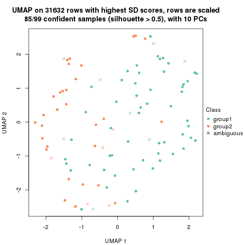
dimension_reduction(res, k = 3, method = "UMAP")
dimension_reduction(res, k = 4, method = "UMAP")
dimension_reduction(res, k = 5, method = "UMAP")
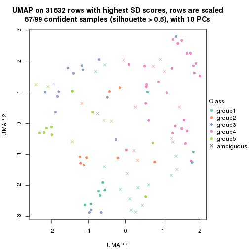
dimension_reduction(res, k = 6, method = "UMAP")
Following heatmap shows how subgroups are split when increasing k:
collect_classes(res)

Test correlation between subgroups and known annotations. If the known annotation is numeric, one-way ANOVA test is applied, and if the known annotation is discrete, chi-squared contingency table test is applied.
test_to_known_factors(res)
#> n disease.state(p) k
#> SD:NMF 85 1.72e-08 2
#> SD:NMF 90 3.18e-16 3
#> SD:NMF 86 2.53e-18 4
#> SD:NMF 67 2.23e-16 5
#> SD:NMF 53 5.41e-11 6
If matrix rows can be associated to genes, consider to use GO_Enrichment(res,
...) to perform function enrichment for the signature genes.
The object with results only for a single top-value method and a single partition method can be extracted as:
res = res_list["CV", "hclust"]
# you can also extract it by
# res = res_list["CV:hclust"]
A summary of res and all the functions that can be applied to it:
res
#> A 'ConsensusPartition' object with k = 2, 3, 4, 5, 6.
#> On a matrix with 31632 rows and 99 columns.
#> Top rows (1000, 2000, 3000, 4000, 5000) are extracted by 'CV' method.
#> Subgroups are detected by 'hclust' method.
#> Performed in total 1250 partitions by row resampling.
#> Best k for subgroups seems to be 3.
#>
#> Following methods can be applied to this 'ConsensusPartition' object:
#> [1] "cola_report" "collect_classes" "collect_plots"
#> [4] "collect_stats" "colnames" "compare_signatures"
#> [7] "consensus_heatmap" "dimension_reduction" "functional_enrichment"
#> [10] "get_anno_col" "get_anno" "get_classes"
#> [13] "get_consensus" "get_matrix" "get_membership"
#> [16] "get_param" "get_signatures" "get_stats"
#> [19] "is_best_k" "is_stable_k" "membership_heatmap"
#> [22] "ncol" "nrow" "plot_ecdf"
#> [25] "rownames" "select_partition_number" "show"
#> [28] "suggest_best_k" "test_to_known_factors"
collect_plots() function collects all the plots made from res for all k (number of partitions)
into one single page to provide an easy and fast comparison between different k.
collect_plots(res)
The plots are:
k and the heatmap of
predicted classes for each k.k.k.k.All the plots in panels can be made by individual functions and they are plotted later in this section.
select_partition_number() produces several plots showing different
statistics for choosing “optimized” k. There are following statistics:
k;k, the area increased is defined as \(A_k - A_{k-1}\).The detailed explanations of these statistics can be found in the cola vignette.
Generally speaking, lower PAC score, higher mean silhouette score or higher
concordance corresponds to better partition. Rand index and Jaccard index
measure how similar the current partition is compared to partition with k-1.
If they are too similar, we won't accept k is better than k-1.
select_partition_number(res)
The numeric values for all these statistics can be obtained by get_stats().
get_stats(res)
#> k 1-PAC mean_silhouette concordance area_increased Rand Jaccard
#> 2 2 0.471 0.821 0.906 0.4003 0.599 0.599
#> 3 3 0.424 0.621 0.814 0.4003 0.833 0.721
#> 4 4 0.444 0.657 0.777 0.2387 0.795 0.561
#> 5 5 0.522 0.563 0.703 0.0835 0.930 0.764
#> 6 6 0.593 0.635 0.740 0.0537 0.949 0.788
suggest_best_k() suggests the best \(k\) based on these statistics. The rules are as follows:
NA.suggest_best_k(res)
#> [1] 3
Following shows the table of the partitions (You need to click the show/hide
code output link to see it). The membership matrix (columns with name p*)
is inferred by
clue::cl_consensus()
function with the SE method. Basically the value in the membership matrix
represents the probability to belong to a certain group. The finall class
label for an item is determined with the group with highest probability it
belongs to.
In get_classes() function, the entropy is calculated from the membership
matrix and the silhouette score is calculated from the consensus matrix.
cbind(get_classes(res, k = 2), get_membership(res, k = 2))
#> class entropy silhouette p1 p2
#> GSM1152309 2 0.0000 0.905 0.000 1.000
#> GSM1152310 2 0.1633 0.907 0.024 0.976
#> GSM1152311 2 0.1633 0.906 0.024 0.976
#> GSM1152312 1 0.5946 0.798 0.856 0.144
#> GSM1152313 2 0.0376 0.906 0.004 0.996
#> GSM1152314 1 0.0672 0.848 0.992 0.008
#> GSM1152315 2 0.0000 0.905 0.000 1.000
#> GSM1152316 2 0.0000 0.905 0.000 1.000
#> GSM1152317 2 0.0000 0.905 0.000 1.000
#> GSM1152318 2 0.0000 0.905 0.000 1.000
#> GSM1152319 2 0.1633 0.907 0.024 0.976
#> GSM1152320 2 0.2043 0.905 0.032 0.968
#> GSM1152321 2 0.0000 0.905 0.000 1.000
#> GSM1152322 2 0.0000 0.905 0.000 1.000
#> GSM1152323 2 0.0000 0.905 0.000 1.000
#> GSM1152324 2 0.0672 0.907 0.008 0.992
#> GSM1152325 2 0.0000 0.905 0.000 1.000
#> GSM1152326 2 0.2043 0.905 0.032 0.968
#> GSM1152327 2 0.0000 0.905 0.000 1.000
#> GSM1152328 2 0.7674 0.748 0.224 0.776
#> GSM1152329 2 0.7376 0.769 0.208 0.792
#> GSM1152330 2 0.7376 0.769 0.208 0.792
#> GSM1152331 2 0.0672 0.907 0.008 0.992
#> GSM1152332 1 0.7674 0.733 0.776 0.224
#> GSM1152333 2 0.7056 0.787 0.192 0.808
#> GSM1152334 2 0.0938 0.907 0.012 0.988
#> GSM1152335 2 0.7056 0.787 0.192 0.808
#> GSM1152336 2 0.0938 0.907 0.012 0.988
#> GSM1152337 2 0.0938 0.907 0.012 0.988
#> GSM1152338 2 0.3114 0.895 0.056 0.944
#> GSM1152339 2 0.7139 0.781 0.196 0.804
#> GSM1152340 2 0.7056 0.786 0.192 0.808
#> GSM1152341 2 0.5408 0.852 0.124 0.876
#> GSM1152342 2 0.4431 0.876 0.092 0.908
#> GSM1152343 2 0.1633 0.907 0.024 0.976
#> GSM1152344 2 0.1843 0.906 0.028 0.972
#> GSM1152345 2 0.5178 0.858 0.116 0.884
#> GSM1152346 2 0.0000 0.905 0.000 1.000
#> GSM1152347 1 0.0000 0.845 1.000 0.000
#> GSM1152348 2 0.5408 0.852 0.124 0.876
#> GSM1152349 1 0.0000 0.845 1.000 0.000
#> GSM1152355 1 0.0672 0.849 0.992 0.008
#> GSM1152356 1 0.4815 0.824 0.896 0.104
#> GSM1152357 1 0.9491 0.502 0.632 0.368
#> GSM1152358 2 0.0376 0.906 0.004 0.996
#> GSM1152359 1 0.9491 0.502 0.632 0.368
#> GSM1152360 1 0.2778 0.847 0.952 0.048
#> GSM1152361 2 0.8081 0.713 0.248 0.752
#> GSM1152362 2 0.1633 0.907 0.024 0.976
#> GSM1152363 1 0.1184 0.851 0.984 0.016
#> GSM1152364 1 0.0672 0.849 0.992 0.008
#> GSM1152365 1 0.8144 0.699 0.748 0.252
#> GSM1152366 1 0.3114 0.845 0.944 0.056
#> GSM1152367 2 0.8207 0.701 0.256 0.744
#> GSM1152368 2 0.8955 0.607 0.312 0.688
#> GSM1152369 2 0.8207 0.701 0.256 0.744
#> GSM1152370 1 0.7815 0.725 0.768 0.232
#> GSM1152371 2 0.8207 0.701 0.256 0.744
#> GSM1152372 2 0.8081 0.713 0.248 0.752
#> GSM1152373 1 0.0000 0.845 1.000 0.000
#> GSM1152374 2 0.2043 0.905 0.032 0.968
#> GSM1152375 1 0.9922 0.244 0.552 0.448
#> GSM1152376 1 0.0672 0.848 0.992 0.008
#> GSM1152377 1 0.7815 0.721 0.768 0.232
#> GSM1152378 1 0.9866 0.294 0.568 0.432
#> GSM1152379 2 0.8813 0.592 0.300 0.700
#> GSM1152380 1 0.1414 0.851 0.980 0.020
#> GSM1152381 1 0.1633 0.851 0.976 0.024
#> GSM1152382 1 0.9710 0.424 0.600 0.400
#> GSM1152383 1 0.0672 0.849 0.992 0.008
#> GSM1152384 1 0.1184 0.851 0.984 0.016
#> GSM1152385 2 0.0938 0.907 0.012 0.988
#> GSM1152386 2 0.0000 0.905 0.000 1.000
#> GSM1152387 2 0.1414 0.907 0.020 0.980
#> GSM1152289 2 0.2043 0.906 0.032 0.968
#> GSM1152290 2 0.0376 0.906 0.004 0.996
#> GSM1152291 2 0.7950 0.693 0.240 0.760
#> GSM1152292 2 0.3431 0.885 0.064 0.936
#> GSM1152293 2 0.4161 0.873 0.084 0.916
#> GSM1152294 2 0.0672 0.907 0.008 0.992
#> GSM1152295 2 0.9661 0.381 0.392 0.608
#> GSM1152296 1 0.3114 0.845 0.944 0.056
#> GSM1152297 2 0.1843 0.903 0.028 0.972
#> GSM1152298 2 0.0376 0.906 0.004 0.996
#> GSM1152299 2 0.0000 0.905 0.000 1.000
#> GSM1152300 2 0.7950 0.693 0.240 0.760
#> GSM1152301 1 0.0000 0.845 1.000 0.000
#> GSM1152302 2 0.3114 0.889 0.056 0.944
#> GSM1152303 2 0.3274 0.888 0.060 0.940
#> GSM1152304 2 0.0376 0.906 0.004 0.996
#> GSM1152305 2 0.6712 0.801 0.176 0.824
#> GSM1152306 2 0.4690 0.862 0.100 0.900
#> GSM1152307 2 0.4690 0.862 0.100 0.900
#> GSM1152308 2 0.3733 0.890 0.072 0.928
#> GSM1152350 2 0.0672 0.907 0.008 0.992
#> GSM1152351 2 0.0672 0.907 0.008 0.992
#> GSM1152352 2 0.0672 0.907 0.008 0.992
#> GSM1152353 2 0.0672 0.907 0.008 0.992
#> GSM1152354 2 0.0672 0.907 0.008 0.992
cbind(get_classes(res, k = 3), get_membership(res, k = 3))
#> class entropy silhouette p1 p2 p3
#> GSM1152309 2 0.1411 0.7784 0.000 0.964 0.036
#> GSM1152310 2 0.3038 0.7664 0.000 0.896 0.104
#> GSM1152311 2 0.5560 0.5679 0.000 0.700 0.300
#> GSM1152312 1 0.4915 0.7557 0.832 0.036 0.132
#> GSM1152313 2 0.1411 0.7772 0.000 0.964 0.036
#> GSM1152314 1 0.0592 0.8045 0.988 0.000 0.012
#> GSM1152315 2 0.2537 0.7743 0.000 0.920 0.080
#> GSM1152316 2 0.0000 0.7709 0.000 1.000 0.000
#> GSM1152317 2 0.0000 0.7709 0.000 1.000 0.000
#> GSM1152318 2 0.0000 0.7709 0.000 1.000 0.000
#> GSM1152319 2 0.5591 0.5793 0.000 0.696 0.304
#> GSM1152320 2 0.6045 0.3907 0.000 0.620 0.380
#> GSM1152321 2 0.0000 0.7709 0.000 1.000 0.000
#> GSM1152322 2 0.1031 0.7750 0.000 0.976 0.024
#> GSM1152323 2 0.1031 0.7750 0.000 0.976 0.024
#> GSM1152324 2 0.4605 0.6934 0.000 0.796 0.204
#> GSM1152325 2 0.0000 0.7709 0.000 1.000 0.000
#> GSM1152326 2 0.5902 0.5297 0.004 0.680 0.316
#> GSM1152327 2 0.0000 0.7709 0.000 1.000 0.000
#> GSM1152328 3 0.8739 0.4255 0.112 0.392 0.496
#> GSM1152329 3 0.8602 0.4051 0.100 0.408 0.492
#> GSM1152330 3 0.8543 0.4055 0.096 0.408 0.496
#> GSM1152331 2 0.4750 0.6768 0.000 0.784 0.216
#> GSM1152332 1 0.7091 0.6429 0.688 0.064 0.248
#> GSM1152333 3 0.8391 0.3473 0.084 0.432 0.484
#> GSM1152334 2 0.2860 0.7740 0.004 0.912 0.084
#> GSM1152335 3 0.8391 0.3473 0.084 0.432 0.484
#> GSM1152336 2 0.4842 0.6705 0.000 0.776 0.224
#> GSM1152337 2 0.4887 0.6678 0.000 0.772 0.228
#> GSM1152338 2 0.6180 0.2776 0.000 0.584 0.416
#> GSM1152339 3 0.8304 0.3899 0.080 0.416 0.504
#> GSM1152340 3 0.8243 0.3806 0.076 0.420 0.504
#> GSM1152341 2 0.6948 -0.0422 0.016 0.512 0.472
#> GSM1152342 2 0.6527 0.4940 0.020 0.660 0.320
#> GSM1152343 2 0.5591 0.5793 0.000 0.696 0.304
#> GSM1152344 2 0.5785 0.5632 0.004 0.696 0.300
#> GSM1152345 2 0.8084 0.1004 0.072 0.544 0.384
#> GSM1152346 2 0.0000 0.7709 0.000 1.000 0.000
#> GSM1152347 1 0.0592 0.7983 0.988 0.000 0.012
#> GSM1152348 2 0.6948 -0.0422 0.016 0.512 0.472
#> GSM1152349 1 0.0424 0.7996 0.992 0.000 0.008
#> GSM1152355 1 0.1289 0.8092 0.968 0.000 0.032
#> GSM1152356 1 0.4469 0.7748 0.852 0.028 0.120
#> GSM1152357 1 0.9006 0.3683 0.544 0.168 0.288
#> GSM1152358 2 0.1289 0.7766 0.000 0.968 0.032
#> GSM1152359 1 0.9006 0.3683 0.544 0.168 0.288
#> GSM1152360 1 0.2772 0.8011 0.916 0.004 0.080
#> GSM1152361 3 0.0592 0.4877 0.012 0.000 0.988
#> GSM1152362 2 0.5580 0.6323 0.008 0.736 0.256
#> GSM1152363 1 0.0892 0.8070 0.980 0.000 0.020
#> GSM1152364 1 0.1411 0.8094 0.964 0.000 0.036
#> GSM1152365 1 0.7454 0.6114 0.668 0.080 0.252
#> GSM1152366 1 0.2680 0.8059 0.924 0.008 0.068
#> GSM1152367 3 0.0892 0.4818 0.020 0.000 0.980
#> GSM1152368 3 0.3038 0.3638 0.104 0.000 0.896
#> GSM1152369 3 0.0892 0.4818 0.020 0.000 0.980
#> GSM1152370 1 0.7331 0.6229 0.672 0.072 0.256
#> GSM1152371 3 0.0892 0.4818 0.020 0.000 0.980
#> GSM1152372 3 0.0592 0.4877 0.012 0.000 0.988
#> GSM1152373 1 0.0424 0.7996 0.992 0.000 0.008
#> GSM1152374 2 0.5656 0.6198 0.008 0.728 0.264
#> GSM1152375 1 0.9527 0.1448 0.480 0.220 0.300
#> GSM1152376 1 0.0892 0.8070 0.980 0.000 0.020
#> GSM1152377 1 0.6981 0.6492 0.704 0.068 0.228
#> GSM1152378 1 0.9405 0.1987 0.496 0.204 0.300
#> GSM1152379 3 0.9601 0.3265 0.200 0.392 0.408
#> GSM1152380 1 0.1163 0.8085 0.972 0.000 0.028
#> GSM1152381 1 0.1860 0.8084 0.948 0.000 0.052
#> GSM1152382 1 0.8968 0.1598 0.464 0.128 0.408
#> GSM1152383 1 0.1411 0.8094 0.964 0.000 0.036
#> GSM1152384 1 0.0892 0.8070 0.980 0.000 0.020
#> GSM1152385 2 0.4842 0.6772 0.000 0.776 0.224
#> GSM1152386 2 0.0000 0.7709 0.000 1.000 0.000
#> GSM1152387 2 0.5201 0.6555 0.004 0.760 0.236
#> GSM1152289 2 0.5378 0.6517 0.008 0.756 0.236
#> GSM1152290 2 0.0237 0.7695 0.000 0.996 0.004
#> GSM1152291 2 0.6276 0.5217 0.224 0.736 0.040
#> GSM1152292 2 0.2703 0.7516 0.056 0.928 0.016
#> GSM1152293 2 0.4288 0.7324 0.068 0.872 0.060
#> GSM1152294 2 0.2878 0.7654 0.000 0.904 0.096
#> GSM1152295 2 0.8705 0.1086 0.360 0.524 0.116
#> GSM1152296 1 0.3129 0.7986 0.904 0.008 0.088
#> GSM1152297 2 0.2383 0.7704 0.016 0.940 0.044
#> GSM1152298 2 0.0237 0.7695 0.000 0.996 0.004
#> GSM1152299 2 0.0000 0.7709 0.000 1.000 0.000
#> GSM1152300 2 0.6276 0.5217 0.224 0.736 0.040
#> GSM1152301 1 0.0592 0.7983 0.988 0.000 0.012
#> GSM1152302 2 0.2492 0.7550 0.048 0.936 0.016
#> GSM1152303 2 0.2773 0.7546 0.048 0.928 0.024
#> GSM1152304 2 0.0237 0.7695 0.000 0.996 0.004
#> GSM1152305 2 0.7441 0.5423 0.136 0.700 0.164
#> GSM1152306 2 0.4443 0.7213 0.084 0.864 0.052
#> GSM1152307 2 0.4443 0.7213 0.084 0.864 0.052
#> GSM1152308 2 0.6168 0.6483 0.036 0.740 0.224
#> GSM1152350 2 0.2625 0.7665 0.000 0.916 0.084
#> GSM1152351 2 0.2625 0.7665 0.000 0.916 0.084
#> GSM1152352 2 0.2625 0.7665 0.000 0.916 0.084
#> GSM1152353 2 0.2625 0.7665 0.000 0.916 0.084
#> GSM1152354 2 0.2625 0.7665 0.000 0.916 0.084
cbind(get_classes(res, k = 4), get_membership(res, k = 4))
#> class entropy silhouette p1 p2 p3 p4
#> GSM1152309 3 0.4500 0.619 0.000 0.316 0.684 0.000
#> GSM1152310 3 0.6489 0.476 0.000 0.372 0.548 0.080
#> GSM1152311 2 0.3972 0.701 0.004 0.816 0.164 0.016
#> GSM1152312 1 0.4022 0.757 0.836 0.096 0.000 0.068
#> GSM1152313 3 0.4283 0.661 0.000 0.256 0.740 0.004
#> GSM1152314 1 0.0657 0.798 0.984 0.004 0.000 0.012
#> GSM1152315 3 0.6337 0.535 0.000 0.360 0.568 0.072
#> GSM1152316 3 0.3907 0.685 0.000 0.232 0.768 0.000
#> GSM1152317 3 0.3764 0.687 0.000 0.216 0.784 0.000
#> GSM1152318 3 0.3764 0.687 0.000 0.216 0.784 0.000
#> GSM1152319 2 0.4231 0.668 0.000 0.824 0.080 0.096
#> GSM1152320 2 0.2089 0.727 0.000 0.932 0.048 0.020
#> GSM1152321 3 0.3764 0.687 0.000 0.216 0.784 0.000
#> GSM1152322 3 0.4647 0.654 0.000 0.288 0.704 0.008
#> GSM1152323 3 0.4594 0.662 0.000 0.280 0.712 0.008
#> GSM1152324 2 0.4647 0.493 0.000 0.704 0.288 0.008
#> GSM1152325 3 0.4277 0.656 0.000 0.280 0.720 0.000
#> GSM1152326 2 0.3972 0.710 0.008 0.824 0.152 0.016
#> GSM1152327 3 0.4072 0.674 0.000 0.252 0.748 0.000
#> GSM1152328 2 0.5884 0.596 0.116 0.732 0.016 0.136
#> GSM1152329 2 0.5461 0.624 0.104 0.764 0.016 0.116
#> GSM1152330 2 0.5403 0.626 0.100 0.768 0.016 0.116
#> GSM1152331 2 0.3688 0.642 0.000 0.792 0.208 0.000
#> GSM1152332 1 0.5928 0.672 0.692 0.216 0.004 0.088
#> GSM1152333 2 0.5217 0.651 0.088 0.784 0.020 0.108
#> GSM1152334 3 0.6053 0.619 0.004 0.276 0.652 0.068
#> GSM1152335 2 0.5217 0.651 0.088 0.784 0.020 0.108
#> GSM1152336 2 0.4018 0.623 0.000 0.772 0.224 0.004
#> GSM1152337 2 0.3982 0.629 0.000 0.776 0.220 0.004
#> GSM1152338 2 0.3088 0.731 0.000 0.888 0.060 0.052
#> GSM1152339 2 0.5149 0.633 0.084 0.780 0.012 0.124
#> GSM1152340 2 0.5200 0.638 0.080 0.780 0.016 0.124
#> GSM1152341 2 0.3189 0.694 0.016 0.884 0.012 0.088
#> GSM1152342 2 0.7083 0.517 0.020 0.624 0.208 0.148
#> GSM1152343 2 0.4163 0.666 0.000 0.828 0.076 0.096
#> GSM1152344 2 0.4160 0.699 0.008 0.808 0.168 0.016
#> GSM1152345 2 0.6106 0.702 0.076 0.736 0.136 0.052
#> GSM1152346 3 0.3688 0.690 0.000 0.208 0.792 0.000
#> GSM1152347 1 0.0992 0.787 0.976 0.008 0.004 0.012
#> GSM1152348 2 0.3189 0.694 0.016 0.884 0.012 0.088
#> GSM1152349 1 0.0657 0.791 0.984 0.004 0.000 0.012
#> GSM1152355 1 0.1042 0.804 0.972 0.020 0.000 0.008
#> GSM1152356 1 0.3869 0.777 0.856 0.076 0.008 0.060
#> GSM1152357 1 0.7212 0.498 0.548 0.340 0.024 0.088
#> GSM1152358 3 0.3908 0.689 0.000 0.212 0.784 0.004
#> GSM1152359 1 0.7212 0.498 0.548 0.340 0.024 0.088
#> GSM1152360 1 0.2335 0.799 0.920 0.060 0.000 0.020
#> GSM1152361 4 0.2799 0.973 0.008 0.108 0.000 0.884
#> GSM1152362 2 0.4923 0.599 0.008 0.716 0.264 0.012
#> GSM1152363 1 0.0672 0.801 0.984 0.008 0.000 0.008
#> GSM1152364 1 0.1174 0.804 0.968 0.020 0.000 0.012
#> GSM1152365 1 0.5879 0.654 0.672 0.248 0.000 0.080
#> GSM1152366 1 0.2214 0.800 0.928 0.028 0.000 0.044
#> GSM1152367 4 0.2987 0.977 0.016 0.104 0.000 0.880
#> GSM1152368 4 0.4669 0.895 0.100 0.104 0.000 0.796
#> GSM1152369 4 0.2987 0.977 0.016 0.104 0.000 0.880
#> GSM1152370 1 0.6057 0.658 0.676 0.232 0.004 0.088
#> GSM1152371 4 0.2987 0.977 0.016 0.104 0.000 0.880
#> GSM1152372 4 0.2799 0.973 0.008 0.108 0.000 0.884
#> GSM1152373 1 0.0657 0.791 0.984 0.004 0.000 0.012
#> GSM1152374 2 0.5065 0.594 0.008 0.708 0.268 0.016
#> GSM1152375 1 0.7768 0.331 0.480 0.388 0.056 0.076
#> GSM1152376 1 0.0895 0.800 0.976 0.004 0.000 0.020
#> GSM1152377 1 0.5533 0.680 0.708 0.220 0.000 0.072
#> GSM1152378 1 0.7500 0.368 0.496 0.388 0.040 0.076
#> GSM1152379 2 0.7584 0.508 0.200 0.620 0.096 0.084
#> GSM1152380 1 0.0937 0.802 0.976 0.012 0.000 0.012
#> GSM1152381 1 0.1584 0.802 0.952 0.012 0.000 0.036
#> GSM1152382 1 0.6998 0.309 0.468 0.416 0.000 0.116
#> GSM1152383 1 0.1174 0.804 0.968 0.020 0.000 0.012
#> GSM1152384 1 0.0672 0.801 0.984 0.008 0.000 0.008
#> GSM1152385 2 0.4401 0.563 0.000 0.724 0.272 0.004
#> GSM1152386 3 0.3801 0.687 0.000 0.220 0.780 0.000
#> GSM1152387 2 0.5239 0.558 0.004 0.676 0.300 0.020
#> GSM1152289 2 0.5451 0.570 0.008 0.672 0.296 0.024
#> GSM1152290 3 0.0657 0.695 0.000 0.004 0.984 0.012
#> GSM1152291 3 0.5496 0.542 0.220 0.016 0.724 0.040
#> GSM1152292 3 0.2587 0.682 0.056 0.008 0.916 0.020
#> GSM1152293 3 0.5664 0.644 0.064 0.112 0.768 0.056
#> GSM1152294 3 0.6528 0.523 0.000 0.300 0.596 0.104
#> GSM1152295 3 0.8351 0.153 0.356 0.128 0.456 0.060
#> GSM1152296 1 0.2855 0.791 0.904 0.040 0.004 0.052
#> GSM1152297 3 0.4303 0.686 0.016 0.120 0.828 0.036
#> GSM1152298 3 0.0657 0.695 0.000 0.004 0.984 0.012
#> GSM1152299 3 0.2345 0.709 0.000 0.100 0.900 0.000
#> GSM1152300 3 0.5496 0.542 0.220 0.016 0.724 0.040
#> GSM1152301 1 0.0992 0.787 0.976 0.008 0.004 0.012
#> GSM1152302 3 0.2421 0.686 0.048 0.008 0.924 0.020
#> GSM1152303 3 0.2632 0.684 0.048 0.008 0.916 0.028
#> GSM1152304 3 0.0657 0.695 0.000 0.004 0.984 0.012
#> GSM1152305 3 0.8092 0.147 0.136 0.304 0.512 0.048
#> GSM1152306 3 0.5243 0.643 0.080 0.072 0.796 0.052
#> GSM1152307 3 0.5243 0.643 0.080 0.072 0.796 0.052
#> GSM1152308 2 0.6739 0.182 0.036 0.524 0.408 0.032
#> GSM1152350 3 0.6375 0.541 0.000 0.272 0.624 0.104
#> GSM1152351 3 0.6375 0.541 0.000 0.272 0.624 0.104
#> GSM1152352 3 0.6375 0.541 0.000 0.272 0.624 0.104
#> GSM1152353 3 0.6375 0.541 0.000 0.272 0.624 0.104
#> GSM1152354 3 0.6375 0.541 0.000 0.272 0.624 0.104
cbind(get_classes(res, k = 5), get_membership(res, k = 5))
#> class entropy silhouette p1 p2 p3 p4 p5
#> GSM1152309 4 0.6506 0.480 0.000 0.184 0.320 0.492 0.004
#> GSM1152310 4 0.6879 0.372 0.000 0.196 0.272 0.508 0.024
#> GSM1152311 2 0.4382 0.682 0.004 0.760 0.060 0.176 0.000
#> GSM1152312 1 0.4545 0.745 0.788 0.128 0.016 0.012 0.056
#> GSM1152313 3 0.6339 -0.290 0.000 0.144 0.484 0.368 0.004
#> GSM1152314 1 0.1988 0.769 0.936 0.016 0.008 0.028 0.012
#> GSM1152315 4 0.6448 0.459 0.000 0.172 0.232 0.576 0.020
#> GSM1152316 4 0.6045 0.483 0.000 0.104 0.400 0.492 0.004
#> GSM1152317 4 0.5905 0.460 0.000 0.088 0.420 0.488 0.004
#> GSM1152318 4 0.5905 0.460 0.000 0.088 0.420 0.488 0.004
#> GSM1152319 2 0.4993 0.592 0.000 0.624 0.012 0.340 0.024
#> GSM1152320 2 0.2753 0.712 0.000 0.856 0.000 0.136 0.008
#> GSM1152321 4 0.5905 0.460 0.000 0.088 0.420 0.488 0.004
#> GSM1152322 4 0.6253 0.501 0.000 0.136 0.356 0.504 0.004
#> GSM1152323 4 0.6237 0.495 0.000 0.132 0.364 0.500 0.004
#> GSM1152324 2 0.6310 0.369 0.000 0.536 0.168 0.292 0.004
#> GSM1152325 4 0.6277 0.495 0.000 0.140 0.352 0.504 0.004
#> GSM1152326 2 0.4139 0.692 0.004 0.780 0.052 0.164 0.000
#> GSM1152327 4 0.6146 0.482 0.000 0.116 0.392 0.488 0.004
#> GSM1152328 2 0.3266 0.642 0.108 0.852 0.000 0.008 0.032
#> GSM1152329 2 0.2623 0.662 0.096 0.884 0.000 0.004 0.016
#> GSM1152330 2 0.2568 0.664 0.092 0.888 0.000 0.004 0.016
#> GSM1152331 2 0.5058 0.621 0.000 0.692 0.080 0.224 0.004
#> GSM1152332 1 0.5088 0.684 0.696 0.248 0.020 0.012 0.024
#> GSM1152333 2 0.2552 0.681 0.080 0.896 0.004 0.004 0.016
#> GSM1152334 4 0.6723 0.282 0.000 0.140 0.412 0.428 0.020
#> GSM1152335 2 0.2552 0.681 0.080 0.896 0.004 0.004 0.016
#> GSM1152336 2 0.5040 0.610 0.000 0.680 0.084 0.236 0.000
#> GSM1152337 2 0.4987 0.615 0.000 0.684 0.080 0.236 0.000
#> GSM1152338 2 0.2429 0.719 0.000 0.900 0.020 0.076 0.004
#> GSM1152339 2 0.2945 0.667 0.084 0.880 0.004 0.012 0.020
#> GSM1152340 2 0.3086 0.671 0.080 0.876 0.004 0.020 0.020
#> GSM1152341 2 0.2333 0.714 0.028 0.916 0.000 0.040 0.016
#> GSM1152342 2 0.6902 0.374 0.020 0.504 0.092 0.356 0.028
#> GSM1152343 2 0.5008 0.588 0.000 0.620 0.012 0.344 0.024
#> GSM1152344 2 0.4345 0.683 0.004 0.764 0.060 0.172 0.000
#> GSM1152345 2 0.5601 0.697 0.068 0.732 0.068 0.120 0.012
#> GSM1152346 4 0.5912 0.454 0.000 0.088 0.428 0.480 0.004
#> GSM1152347 1 0.4683 0.664 0.776 0.000 0.068 0.120 0.036
#> GSM1152348 2 0.2333 0.714 0.028 0.916 0.000 0.040 0.016
#> GSM1152349 1 0.4380 0.678 0.796 0.000 0.052 0.116 0.036
#> GSM1152355 1 0.0968 0.781 0.972 0.012 0.004 0.012 0.000
#> GSM1152356 1 0.3332 0.768 0.864 0.084 0.032 0.008 0.012
#> GSM1152357 1 0.6356 0.497 0.552 0.348 0.028 0.056 0.016
#> GSM1152358 3 0.6160 -0.244 0.000 0.124 0.512 0.360 0.004
#> GSM1152359 1 0.6356 0.497 0.552 0.348 0.028 0.056 0.016
#> GSM1152360 1 0.2012 0.783 0.920 0.060 0.000 0.020 0.000
#> GSM1152361 5 0.1704 0.968 0.000 0.068 0.000 0.004 0.928
#> GSM1152362 2 0.5832 0.595 0.004 0.632 0.132 0.228 0.004
#> GSM1152363 1 0.1405 0.776 0.956 0.020 0.000 0.016 0.008
#> GSM1152364 1 0.0912 0.781 0.972 0.016 0.000 0.012 0.000
#> GSM1152365 1 0.5119 0.660 0.680 0.268 0.016 0.012 0.024
#> GSM1152366 1 0.2171 0.783 0.924 0.044 0.004 0.008 0.020
#> GSM1152367 5 0.1877 0.973 0.012 0.064 0.000 0.000 0.924
#> GSM1152368 5 0.3662 0.895 0.092 0.064 0.004 0.004 0.836
#> GSM1152369 5 0.1877 0.973 0.012 0.064 0.000 0.000 0.924
#> GSM1152370 1 0.5096 0.671 0.684 0.264 0.016 0.012 0.024
#> GSM1152371 5 0.1877 0.973 0.012 0.064 0.000 0.000 0.924
#> GSM1152372 5 0.1704 0.968 0.000 0.068 0.000 0.004 0.928
#> GSM1152373 1 0.3714 0.699 0.832 0.004 0.012 0.116 0.036
#> GSM1152374 2 0.5867 0.593 0.004 0.632 0.144 0.216 0.004
#> GSM1152375 1 0.7115 0.355 0.484 0.368 0.048 0.080 0.020
#> GSM1152376 1 0.1777 0.774 0.944 0.020 0.004 0.020 0.012
#> GSM1152377 1 0.4831 0.687 0.716 0.236 0.012 0.016 0.020
#> GSM1152378 1 0.6902 0.385 0.500 0.368 0.040 0.072 0.020
#> GSM1152379 2 0.6763 0.449 0.196 0.600 0.036 0.156 0.012
#> GSM1152380 1 0.1173 0.779 0.964 0.020 0.000 0.012 0.004
#> GSM1152381 1 0.1446 0.783 0.952 0.036 0.004 0.004 0.004
#> GSM1152382 1 0.5670 0.289 0.476 0.472 0.008 0.016 0.028
#> GSM1152383 1 0.1018 0.781 0.968 0.016 0.000 0.016 0.000
#> GSM1152384 1 0.1405 0.776 0.956 0.020 0.000 0.016 0.008
#> GSM1152385 2 0.5600 0.548 0.000 0.632 0.108 0.256 0.004
#> GSM1152386 4 0.6059 0.474 0.000 0.104 0.412 0.480 0.004
#> GSM1152387 2 0.5844 0.575 0.000 0.644 0.156 0.188 0.012
#> GSM1152289 2 0.5903 0.582 0.004 0.652 0.172 0.160 0.012
#> GSM1152290 3 0.2389 0.544 0.000 0.004 0.880 0.116 0.000
#> GSM1152291 3 0.3499 0.521 0.124 0.008 0.840 0.012 0.016
#> GSM1152292 3 0.1682 0.594 0.012 0.004 0.940 0.044 0.000
#> GSM1152293 3 0.4238 0.517 0.012 0.052 0.808 0.116 0.012
#> GSM1152294 4 0.5821 0.266 0.000 0.064 0.296 0.612 0.028
#> GSM1152295 3 0.6998 0.304 0.252 0.140 0.560 0.024 0.024
#> GSM1152296 1 0.3408 0.760 0.860 0.028 0.088 0.016 0.008
#> GSM1152297 3 0.5457 0.401 0.012 0.052 0.668 0.256 0.012
#> GSM1152298 3 0.2439 0.539 0.000 0.004 0.876 0.120 0.000
#> GSM1152299 3 0.5033 -0.158 0.000 0.028 0.568 0.400 0.004
#> GSM1152300 3 0.3499 0.521 0.124 0.008 0.840 0.012 0.016
#> GSM1152301 1 0.4622 0.667 0.780 0.000 0.064 0.120 0.036
#> GSM1152302 3 0.1830 0.592 0.012 0.004 0.932 0.052 0.000
#> GSM1152303 3 0.1883 0.594 0.012 0.008 0.932 0.048 0.000
#> GSM1152304 3 0.2389 0.544 0.000 0.004 0.880 0.116 0.000
#> GSM1152305 3 0.7366 0.193 0.088 0.312 0.512 0.064 0.024
#> GSM1152306 3 0.3255 0.561 0.016 0.032 0.872 0.072 0.008
#> GSM1152307 3 0.3255 0.561 0.016 0.032 0.872 0.072 0.008
#> GSM1152308 2 0.7595 0.215 0.032 0.412 0.292 0.256 0.008
#> GSM1152350 4 0.5694 0.239 0.000 0.048 0.304 0.616 0.032
#> GSM1152351 4 0.5694 0.239 0.000 0.048 0.304 0.616 0.032
#> GSM1152352 4 0.5694 0.239 0.000 0.048 0.304 0.616 0.032
#> GSM1152353 4 0.5694 0.239 0.000 0.048 0.304 0.616 0.032
#> GSM1152354 4 0.5694 0.239 0.000 0.048 0.304 0.616 0.032
cbind(get_classes(res, k = 6), get_membership(res, k = 6))
#> class entropy silhouette p1 p2 p3 p4 p5 p6
#> GSM1152309 4 0.3820 0.7040 0.000 0.092 0.012 0.796 0.100 0.000
#> GSM1152310 4 0.6564 0.0522 0.000 0.140 0.060 0.420 0.380 0.000
#> GSM1152311 2 0.4540 0.6523 0.004 0.692 0.008 0.244 0.052 0.000
#> GSM1152312 1 0.5028 0.7049 0.716 0.112 0.140 0.004 0.012 0.016
#> GSM1152313 4 0.5416 0.6029 0.000 0.088 0.156 0.676 0.080 0.000
#> GSM1152314 1 0.2675 0.7348 0.880 0.012 0.080 0.004 0.024 0.000
#> GSM1152315 4 0.5231 0.5186 0.000 0.104 0.016 0.632 0.248 0.000
#> GSM1152316 4 0.1138 0.7582 0.000 0.024 0.004 0.960 0.012 0.000
#> GSM1152317 4 0.0405 0.7489 0.000 0.004 0.008 0.988 0.000 0.000
#> GSM1152318 4 0.0405 0.7489 0.000 0.004 0.008 0.988 0.000 0.000
#> GSM1152319 2 0.5679 0.5260 0.000 0.556 0.008 0.168 0.268 0.000
#> GSM1152320 2 0.3496 0.6911 0.000 0.804 0.004 0.140 0.052 0.000
#> GSM1152321 4 0.0405 0.7489 0.000 0.004 0.008 0.988 0.000 0.000
#> GSM1152322 4 0.3146 0.7406 0.000 0.060 0.012 0.848 0.080 0.000
#> GSM1152323 4 0.3533 0.7310 0.000 0.060 0.016 0.820 0.104 0.000
#> GSM1152324 4 0.5295 -0.2275 0.000 0.440 0.000 0.460 0.100 0.000
#> GSM1152325 4 0.1555 0.7525 0.000 0.060 0.004 0.932 0.004 0.000
#> GSM1152326 2 0.4500 0.6637 0.008 0.704 0.004 0.228 0.056 0.000
#> GSM1152327 4 0.1010 0.7548 0.000 0.036 0.004 0.960 0.000 0.000
#> GSM1152328 2 0.3474 0.6327 0.116 0.832 0.016 0.004 0.020 0.012
#> GSM1152329 2 0.2957 0.6508 0.100 0.860 0.012 0.008 0.020 0.000
#> GSM1152330 2 0.2909 0.6520 0.096 0.864 0.012 0.008 0.020 0.000
#> GSM1152331 2 0.4808 0.5451 0.000 0.604 0.004 0.332 0.060 0.000
#> GSM1152332 1 0.4573 0.6695 0.712 0.224 0.032 0.000 0.016 0.016
#> GSM1152333 2 0.2936 0.6647 0.084 0.868 0.008 0.020 0.020 0.000
#> GSM1152334 4 0.6648 0.4402 0.000 0.092 0.164 0.520 0.224 0.000
#> GSM1152335 2 0.2936 0.6647 0.084 0.868 0.008 0.020 0.020 0.000
#> GSM1152336 2 0.5094 0.5550 0.000 0.596 0.004 0.308 0.092 0.000
#> GSM1152337 2 0.5064 0.5653 0.000 0.604 0.004 0.300 0.092 0.000
#> GSM1152338 2 0.3204 0.6991 0.000 0.836 0.004 0.092 0.068 0.000
#> GSM1152339 2 0.3544 0.6415 0.088 0.836 0.024 0.012 0.040 0.000
#> GSM1152340 2 0.3475 0.6439 0.088 0.840 0.024 0.012 0.036 0.000
#> GSM1152341 2 0.3343 0.6784 0.024 0.860 0.016 0.048 0.048 0.004
#> GSM1152342 5 0.6487 -0.1489 0.024 0.412 0.044 0.084 0.436 0.000
#> GSM1152343 2 0.5711 0.5155 0.000 0.548 0.008 0.168 0.276 0.000
#> GSM1152344 2 0.4597 0.6542 0.008 0.688 0.004 0.244 0.056 0.000
#> GSM1152345 2 0.5918 0.6748 0.072 0.680 0.064 0.116 0.068 0.000
#> GSM1152346 4 0.0767 0.7484 0.000 0.004 0.008 0.976 0.012 0.000
#> GSM1152347 1 0.5243 0.5396 0.604 0.008 0.296 0.004 0.088 0.000
#> GSM1152348 2 0.3343 0.6784 0.024 0.860 0.016 0.048 0.048 0.004
#> GSM1152349 1 0.5140 0.5580 0.628 0.008 0.272 0.004 0.088 0.000
#> GSM1152355 1 0.0881 0.7553 0.972 0.012 0.008 0.000 0.008 0.000
#> GSM1152356 1 0.2993 0.7441 0.872 0.060 0.040 0.000 0.012 0.016
#> GSM1152357 1 0.5792 0.4977 0.564 0.320 0.040 0.000 0.068 0.008
#> GSM1152358 4 0.5364 0.5634 0.000 0.072 0.180 0.672 0.076 0.000
#> GSM1152359 1 0.5792 0.4977 0.564 0.320 0.040 0.000 0.068 0.008
#> GSM1152360 1 0.1590 0.7588 0.936 0.048 0.008 0.000 0.008 0.000
#> GSM1152361 6 0.0000 0.9629 0.000 0.000 0.000 0.000 0.000 1.000
#> GSM1152362 2 0.6136 0.5800 0.004 0.588 0.068 0.228 0.112 0.000
#> GSM1152363 1 0.1836 0.7473 0.928 0.008 0.048 0.004 0.012 0.000
#> GSM1152364 1 0.0653 0.7553 0.980 0.012 0.004 0.000 0.004 0.000
#> GSM1152365 1 0.4626 0.6450 0.696 0.244 0.028 0.000 0.016 0.016
#> GSM1152366 1 0.2424 0.7578 0.904 0.028 0.048 0.004 0.004 0.012
#> GSM1152367 6 0.0508 0.9686 0.012 0.004 0.000 0.000 0.000 0.984
#> GSM1152368 6 0.1858 0.8782 0.092 0.000 0.004 0.000 0.000 0.904
#> GSM1152369 6 0.0508 0.9686 0.012 0.004 0.000 0.000 0.000 0.984
#> GSM1152370 1 0.4602 0.6570 0.700 0.240 0.028 0.000 0.016 0.016
#> GSM1152371 6 0.0508 0.9686 0.012 0.004 0.000 0.000 0.000 0.984
#> GSM1152372 6 0.0000 0.9629 0.000 0.000 0.000 0.000 0.000 1.000
#> GSM1152373 1 0.4855 0.5931 0.680 0.008 0.220 0.004 0.088 0.000
#> GSM1152374 2 0.6094 0.5848 0.004 0.600 0.080 0.216 0.100 0.000
#> GSM1152375 1 0.6632 0.3753 0.500 0.332 0.064 0.008 0.084 0.012
#> GSM1152376 1 0.2518 0.7411 0.892 0.016 0.068 0.004 0.020 0.000
#> GSM1152377 1 0.4389 0.6722 0.732 0.208 0.028 0.000 0.020 0.012
#> GSM1152378 1 0.6397 0.4025 0.516 0.332 0.056 0.004 0.080 0.012
#> GSM1152379 2 0.6980 0.3273 0.212 0.516 0.040 0.032 0.196 0.004
#> GSM1152380 1 0.1667 0.7510 0.936 0.008 0.044 0.004 0.008 0.000
#> GSM1152381 1 0.1381 0.7590 0.952 0.020 0.020 0.000 0.004 0.004
#> GSM1152382 1 0.5822 0.3218 0.488 0.412 0.028 0.000 0.056 0.016
#> GSM1152383 1 0.0767 0.7556 0.976 0.012 0.008 0.000 0.004 0.000
#> GSM1152384 1 0.1836 0.7473 0.928 0.008 0.048 0.004 0.012 0.000
#> GSM1152385 2 0.5023 0.4787 0.000 0.560 0.008 0.372 0.060 0.000
#> GSM1152386 4 0.1059 0.7582 0.000 0.016 0.004 0.964 0.016 0.000
#> GSM1152387 2 0.5831 0.5587 0.000 0.592 0.072 0.272 0.060 0.004
#> GSM1152289 2 0.5899 0.5703 0.004 0.604 0.096 0.248 0.044 0.004
#> GSM1152290 3 0.4660 0.7141 0.000 0.000 0.612 0.328 0.060 0.000
#> GSM1152291 3 0.3874 0.6668 0.068 0.000 0.760 0.172 0.000 0.000
#> GSM1152292 3 0.4364 0.7471 0.004 0.000 0.688 0.256 0.052 0.000
#> GSM1152293 3 0.6049 0.6043 0.012 0.020 0.604 0.148 0.208 0.008
#> GSM1152294 5 0.5387 0.5336 0.000 0.016 0.108 0.272 0.604 0.000
#> GSM1152295 3 0.7094 0.4084 0.196 0.124 0.528 0.132 0.016 0.004
#> GSM1152296 1 0.3118 0.7306 0.840 0.020 0.124 0.000 0.004 0.012
#> GSM1152297 3 0.6775 0.4782 0.012 0.016 0.444 0.296 0.224 0.008
#> GSM1152298 3 0.4687 0.7057 0.000 0.000 0.604 0.336 0.060 0.000
#> GSM1152299 4 0.3210 0.5015 0.000 0.000 0.168 0.804 0.028 0.000
#> GSM1152300 3 0.3874 0.6668 0.068 0.000 0.760 0.172 0.000 0.000
#> GSM1152301 1 0.5227 0.5429 0.608 0.008 0.292 0.004 0.088 0.000
#> GSM1152302 3 0.4407 0.7465 0.004 0.000 0.680 0.264 0.052 0.000
#> GSM1152303 3 0.4327 0.7478 0.004 0.000 0.688 0.260 0.048 0.000
#> GSM1152304 3 0.4660 0.7141 0.000 0.000 0.612 0.328 0.060 0.000
#> GSM1152305 3 0.7160 0.2655 0.052 0.288 0.452 0.184 0.020 0.004
#> GSM1152306 3 0.5540 0.6879 0.012 0.012 0.652 0.172 0.148 0.004
#> GSM1152307 3 0.5540 0.6879 0.012 0.012 0.652 0.172 0.148 0.004
#> GSM1152308 2 0.8103 0.1045 0.036 0.352 0.180 0.180 0.252 0.000
#> GSM1152350 5 0.3544 0.8064 0.000 0.000 0.120 0.080 0.800 0.000
#> GSM1152351 5 0.3544 0.8064 0.000 0.000 0.120 0.080 0.800 0.000
#> GSM1152352 5 0.3544 0.8064 0.000 0.000 0.120 0.080 0.800 0.000
#> GSM1152353 5 0.3544 0.8064 0.000 0.000 0.120 0.080 0.800 0.000
#> GSM1152354 5 0.3544 0.8064 0.000 0.000 0.120 0.080 0.800 0.000
Heatmaps for the consensus matrix. It visualizes the probability of two samples to be in a same group.
consensus_heatmap(res, k = 2)
consensus_heatmap(res, k = 3)
consensus_heatmap(res, k = 4)
consensus_heatmap(res, k = 5)
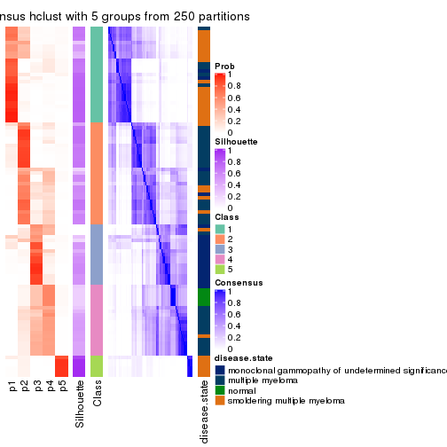
consensus_heatmap(res, k = 6)
Heatmaps for the membership of samples in all partitions to see how consistent they are:
membership_heatmap(res, k = 2)
membership_heatmap(res, k = 3)
membership_heatmap(res, k = 4)
membership_heatmap(res, k = 5)
membership_heatmap(res, k = 6)
As soon as we have had the classes for columns, we can look for signatures which are significantly different between classes which can be candidate marks for certain classes. Following are the heatmaps for signatures.
Signature heatmaps where rows are scaled:
get_signatures(res, k = 2)
get_signatures(res, k = 3)
get_signatures(res, k = 4)
get_signatures(res, k = 5)
get_signatures(res, k = 6)
Signature heatmaps where rows are not scaled:
get_signatures(res, k = 2, scale_rows = FALSE)
get_signatures(res, k = 3, scale_rows = FALSE)
get_signatures(res, k = 4, scale_rows = FALSE)
get_signatures(res, k = 5, scale_rows = FALSE)

get_signatures(res, k = 6, scale_rows = FALSE)
Compare the overlap of signatures from different k:
compare_signatures(res)
get_signature() returns a data frame invisibly. TO get the list of signatures, the function
call should be assigned to a variable explicitly. In following code, if plot argument is set
to FALSE, no heatmap is plotted while only the differential analysis is performed.
# code only for demonstration
tb = get_signature(res, k = ..., plot = FALSE)
An example of the output of tb is:
#> which_row fdr mean_1 mean_2 scaled_mean_1 scaled_mean_2 km
#> 1 38 0.042760348 8.373488 9.131774 -0.5533452 0.5164555 1
#> 2 40 0.018707592 7.106213 8.469186 -0.6173731 0.5762149 1
#> 3 55 0.019134737 10.221463 11.207825 -0.6159697 0.5749050 1
#> 4 59 0.006059896 5.921854 7.869574 -0.6899429 0.6439467 1
#> 5 60 0.018055526 8.928898 10.211722 -0.6204761 0.5791110 1
#> 6 98 0.009384629 15.714769 14.887706 0.6635654 -0.6193277 2
...
The columns in tb are:
which_row: row indices corresponding to the input matrix.fdr: FDR for the differential test. mean_x: The mean value in group x.scaled_mean_x: The mean value in group x after rows are scaled.km: Row groups if k-means clustering is applied to rows.UMAP plot which shows how samples are separated.
dimension_reduction(res, k = 2, method = "UMAP")
dimension_reduction(res, k = 3, method = "UMAP")
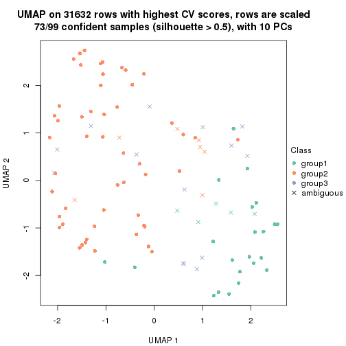
dimension_reduction(res, k = 4, method = "UMAP")
dimension_reduction(res, k = 5, method = "UMAP")
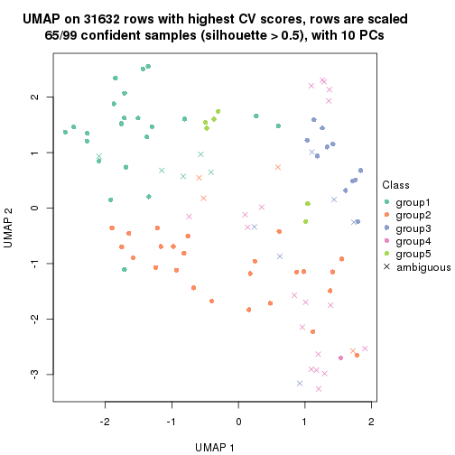
dimension_reduction(res, k = 6, method = "UMAP")
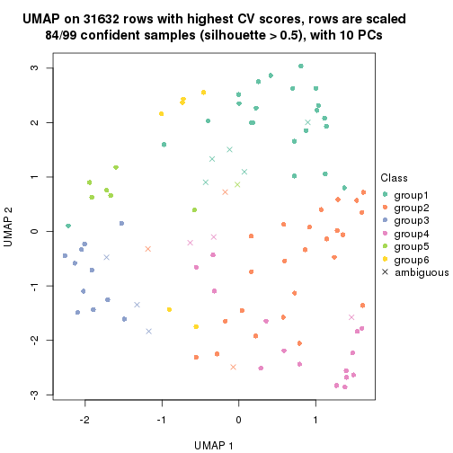
Following heatmap shows how subgroups are split when increasing k:
collect_classes(res)
Test correlation between subgroups and known annotations. If the known annotation is numeric, one-way ANOVA test is applied, and if the known annotation is discrete, chi-squared contingency table test is applied.
test_to_known_factors(res)
#> n disease.state(p) k
#> CV:hclust 95 3.58e-05 2
#> CV:hclust 73 1.84e-05 3
#> CV:hclust 89 6.82e-10 4
#> CV:hclust 65 2.71e-13 5
#> CV:hclust 84 6.59e-27 6
If matrix rows can be associated to genes, consider to use GO_Enrichment(res,
...) to perform function enrichment for the signature genes.
The object with results only for a single top-value method and a single partition method can be extracted as:
res = res_list["CV", "kmeans"]
# you can also extract it by
# res = res_list["CV:kmeans"]
A summary of res and all the functions that can be applied to it:
res
#> A 'ConsensusPartition' object with k = 2, 3, 4, 5, 6.
#> On a matrix with 31632 rows and 99 columns.
#> Top rows (1000, 2000, 3000, 4000, 5000) are extracted by 'CV' method.
#> Subgroups are detected by 'kmeans' method.
#> Performed in total 1250 partitions by row resampling.
#> Best k for subgroups seems to be 2.
#>
#> Following methods can be applied to this 'ConsensusPartition' object:
#> [1] "cola_report" "collect_classes" "collect_plots"
#> [4] "collect_stats" "colnames" "compare_signatures"
#> [7] "consensus_heatmap" "dimension_reduction" "functional_enrichment"
#> [10] "get_anno_col" "get_anno" "get_classes"
#> [13] "get_consensus" "get_matrix" "get_membership"
#> [16] "get_param" "get_signatures" "get_stats"
#> [19] "is_best_k" "is_stable_k" "membership_heatmap"
#> [22] "ncol" "nrow" "plot_ecdf"
#> [25] "rownames" "select_partition_number" "show"
#> [28] "suggest_best_k" "test_to_known_factors"
collect_plots() function collects all the plots made from res for all k (number of partitions)
into one single page to provide an easy and fast comparison between different k.
collect_plots(res)
The plots are:
k and the heatmap of
predicted classes for each k.k.k.k.All the plots in panels can be made by individual functions and they are plotted later in this section.
select_partition_number() produces several plots showing different
statistics for choosing “optimized” k. There are following statistics:
k;k, the area increased is defined as \(A_k - A_{k-1}\).The detailed explanations of these statistics can be found in the cola vignette.
Generally speaking, lower PAC score, higher mean silhouette score or higher
concordance corresponds to better partition. Rand index and Jaccard index
measure how similar the current partition is compared to partition with k-1.
If they are too similar, we won't accept k is better than k-1.
select_partition_number(res)
The numeric values for all these statistics can be obtained by get_stats().
get_stats(res)
#> k 1-PAC mean_silhouette concordance area_increased Rand Jaccard
#> 2 2 0.787 0.889 0.951 0.4937 0.501 0.501
#> 3 3 0.594 0.675 0.840 0.3175 0.713 0.491
#> 4 4 0.563 0.646 0.751 0.1288 0.886 0.683
#> 5 5 0.664 0.550 0.767 0.0728 0.926 0.739
#> 6 6 0.682 0.585 0.749 0.0405 0.945 0.771
suggest_best_k() suggests the best \(k\) based on these statistics. The rules are as follows:
NA.suggest_best_k(res)
#> [1] 2
Following shows the table of the partitions (You need to click the show/hide
code output link to see it). The membership matrix (columns with name p*)
is inferred by
clue::cl_consensus()
function with the SE method. Basically the value in the membership matrix
represents the probability to belong to a certain group. The finall class
label for an item is determined with the group with highest probability it
belongs to.
In get_classes() function, the entropy is calculated from the membership
matrix and the silhouette score is calculated from the consensus matrix.
cbind(get_classes(res, k = 2), get_membership(res, k = 2))
#> class entropy silhouette p1 p2
#> GSM1152309 2 0.0000 0.965 0.000 1.000
#> GSM1152310 2 0.0000 0.965 0.000 1.000
#> GSM1152311 2 0.0000 0.965 0.000 1.000
#> GSM1152312 1 0.0376 0.924 0.996 0.004
#> GSM1152313 2 0.0000 0.965 0.000 1.000
#> GSM1152314 1 0.0376 0.924 0.996 0.004
#> GSM1152315 2 0.0000 0.965 0.000 1.000
#> GSM1152316 2 0.0000 0.965 0.000 1.000
#> GSM1152317 2 0.0000 0.965 0.000 1.000
#> GSM1152318 2 0.0000 0.965 0.000 1.000
#> GSM1152319 2 0.0000 0.965 0.000 1.000
#> GSM1152320 2 0.2603 0.924 0.044 0.956
#> GSM1152321 2 0.0000 0.965 0.000 1.000
#> GSM1152322 2 0.0000 0.965 0.000 1.000
#> GSM1152323 2 0.0000 0.965 0.000 1.000
#> GSM1152324 2 0.0000 0.965 0.000 1.000
#> GSM1152325 2 0.0000 0.965 0.000 1.000
#> GSM1152326 2 0.1414 0.948 0.020 0.980
#> GSM1152327 2 0.0000 0.965 0.000 1.000
#> GSM1152328 1 0.9000 0.599 0.684 0.316
#> GSM1152329 1 0.9129 0.581 0.672 0.328
#> GSM1152330 1 0.9993 0.197 0.516 0.484
#> GSM1152331 2 0.0000 0.965 0.000 1.000
#> GSM1152332 1 0.0376 0.924 0.996 0.004
#> GSM1152333 1 0.7745 0.721 0.772 0.228
#> GSM1152334 2 0.0000 0.965 0.000 1.000
#> GSM1152335 2 0.1633 0.944 0.024 0.976
#> GSM1152336 2 0.0000 0.965 0.000 1.000
#> GSM1152337 2 0.0000 0.965 0.000 1.000
#> GSM1152338 2 0.0000 0.965 0.000 1.000
#> GSM1152339 1 0.7815 0.716 0.768 0.232
#> GSM1152340 1 0.9866 0.353 0.568 0.432
#> GSM1152341 1 0.9358 0.536 0.648 0.352
#> GSM1152342 2 0.0000 0.965 0.000 1.000
#> GSM1152343 2 0.0000 0.965 0.000 1.000
#> GSM1152344 2 0.0000 0.965 0.000 1.000
#> GSM1152345 2 0.0000 0.965 0.000 1.000
#> GSM1152346 2 0.0000 0.965 0.000 1.000
#> GSM1152347 1 0.0376 0.924 0.996 0.004
#> GSM1152348 1 0.9129 0.581 0.672 0.328
#> GSM1152349 1 0.0376 0.924 0.996 0.004
#> GSM1152355 1 0.0376 0.924 0.996 0.004
#> GSM1152356 1 0.0376 0.924 0.996 0.004
#> GSM1152357 1 0.0376 0.924 0.996 0.004
#> GSM1152358 2 0.0000 0.965 0.000 1.000
#> GSM1152359 1 0.2423 0.899 0.960 0.040
#> GSM1152360 1 0.0376 0.924 0.996 0.004
#> GSM1152361 2 0.5178 0.844 0.116 0.884
#> GSM1152362 2 0.0000 0.965 0.000 1.000
#> GSM1152363 1 0.0376 0.924 0.996 0.004
#> GSM1152364 1 0.0376 0.924 0.996 0.004
#> GSM1152365 1 0.0376 0.924 0.996 0.004
#> GSM1152366 1 0.0376 0.924 0.996 0.004
#> GSM1152367 1 0.0000 0.922 1.000 0.000
#> GSM1152368 1 0.0000 0.922 1.000 0.000
#> GSM1152369 1 0.0000 0.922 1.000 0.000
#> GSM1152370 1 0.0376 0.924 0.996 0.004
#> GSM1152371 1 0.0000 0.922 1.000 0.000
#> GSM1152372 1 0.0000 0.922 1.000 0.000
#> GSM1152373 1 0.0376 0.924 0.996 0.004
#> GSM1152374 2 0.0000 0.965 0.000 1.000
#> GSM1152375 1 0.0376 0.924 0.996 0.004
#> GSM1152376 1 0.0376 0.924 0.996 0.004
#> GSM1152377 1 0.0376 0.924 0.996 0.004
#> GSM1152378 1 0.0376 0.924 0.996 0.004
#> GSM1152379 1 0.9044 0.594 0.680 0.320
#> GSM1152380 1 0.0376 0.924 0.996 0.004
#> GSM1152381 1 0.0376 0.924 0.996 0.004
#> GSM1152382 1 0.0376 0.924 0.996 0.004
#> GSM1152383 1 0.0376 0.924 0.996 0.004
#> GSM1152384 1 0.0376 0.924 0.996 0.004
#> GSM1152385 2 0.0000 0.965 0.000 1.000
#> GSM1152386 2 0.0000 0.965 0.000 1.000
#> GSM1152387 2 0.0000 0.965 0.000 1.000
#> GSM1152289 2 0.0000 0.965 0.000 1.000
#> GSM1152290 2 0.0000 0.965 0.000 1.000
#> GSM1152291 2 0.0000 0.965 0.000 1.000
#> GSM1152292 2 0.8955 0.545 0.312 0.688
#> GSM1152293 2 0.0000 0.965 0.000 1.000
#> GSM1152294 2 0.0000 0.965 0.000 1.000
#> GSM1152295 1 0.0376 0.924 0.996 0.004
#> GSM1152296 1 0.0376 0.924 0.996 0.004
#> GSM1152297 2 0.0000 0.965 0.000 1.000
#> GSM1152298 2 0.0000 0.965 0.000 1.000
#> GSM1152299 2 0.0000 0.965 0.000 1.000
#> GSM1152300 1 0.0376 0.924 0.996 0.004
#> GSM1152301 1 0.0376 0.924 0.996 0.004
#> GSM1152302 2 0.8955 0.545 0.312 0.688
#> GSM1152303 2 0.8955 0.545 0.312 0.688
#> GSM1152304 2 0.0000 0.965 0.000 1.000
#> GSM1152305 2 0.0000 0.965 0.000 1.000
#> GSM1152306 2 0.9552 0.406 0.376 0.624
#> GSM1152307 1 0.0376 0.924 0.996 0.004
#> GSM1152308 2 0.0000 0.965 0.000 1.000
#> GSM1152350 2 0.0376 0.961 0.004 0.996
#> GSM1152351 2 0.0376 0.961 0.004 0.996
#> GSM1152352 2 0.0376 0.961 0.004 0.996
#> GSM1152353 2 0.0376 0.961 0.004 0.996
#> GSM1152354 2 0.6887 0.761 0.184 0.816
cbind(get_classes(res, k = 3), get_membership(res, k = 3))
#> class entropy silhouette p1 p2 p3
#> GSM1152309 2 0.5706 0.4991 0.000 0.680 0.320
#> GSM1152310 2 0.6299 0.1218 0.000 0.524 0.476
#> GSM1152311 2 0.2959 0.7049 0.000 0.900 0.100
#> GSM1152312 1 0.0892 0.9254 0.980 0.020 0.000
#> GSM1152313 3 0.6225 0.1189 0.000 0.432 0.568
#> GSM1152314 1 0.0000 0.9247 1.000 0.000 0.000
#> GSM1152315 2 0.6008 0.4026 0.000 0.628 0.372
#> GSM1152316 3 0.6309 -0.0868 0.000 0.500 0.500
#> GSM1152317 2 0.6026 0.3989 0.000 0.624 0.376
#> GSM1152318 2 0.6244 0.2494 0.000 0.560 0.440
#> GSM1152319 2 0.1964 0.7115 0.000 0.944 0.056
#> GSM1152320 2 0.1877 0.7044 0.032 0.956 0.012
#> GSM1152321 2 0.6180 0.3138 0.000 0.584 0.416
#> GSM1152322 2 0.6244 0.2494 0.000 0.560 0.440
#> GSM1152323 3 0.6308 -0.0552 0.000 0.492 0.508
#> GSM1152324 2 0.3038 0.7040 0.000 0.896 0.104
#> GSM1152325 2 0.6045 0.3967 0.000 0.620 0.380
#> GSM1152326 2 0.1919 0.7070 0.024 0.956 0.020
#> GSM1152327 2 0.6252 0.2370 0.000 0.556 0.444
#> GSM1152328 2 0.4555 0.6139 0.200 0.800 0.000
#> GSM1152329 2 0.4605 0.6099 0.204 0.796 0.000
#> GSM1152330 2 0.2625 0.6824 0.084 0.916 0.000
#> GSM1152331 2 0.2959 0.7049 0.000 0.900 0.100
#> GSM1152332 1 0.2066 0.9199 0.940 0.060 0.000
#> GSM1152333 2 0.4654 0.6062 0.208 0.792 0.000
#> GSM1152334 3 0.3879 0.7561 0.000 0.152 0.848
#> GSM1152335 2 0.1905 0.7058 0.028 0.956 0.016
#> GSM1152336 2 0.3038 0.7040 0.000 0.896 0.104
#> GSM1152337 2 0.1753 0.7112 0.000 0.952 0.048
#> GSM1152338 2 0.1753 0.7112 0.000 0.952 0.048
#> GSM1152339 2 0.4654 0.6062 0.208 0.792 0.000
#> GSM1152340 2 0.3941 0.6442 0.156 0.844 0.000
#> GSM1152341 2 0.4178 0.6323 0.172 0.828 0.000
#> GSM1152342 2 0.1753 0.7113 0.000 0.952 0.048
#> GSM1152343 2 0.3038 0.7040 0.000 0.896 0.104
#> GSM1152344 2 0.2878 0.7052 0.000 0.904 0.096
#> GSM1152345 2 0.2796 0.7053 0.000 0.908 0.092
#> GSM1152346 2 0.6244 0.2494 0.000 0.560 0.440
#> GSM1152347 1 0.4682 0.7832 0.804 0.004 0.192
#> GSM1152348 2 0.4555 0.6132 0.200 0.800 0.000
#> GSM1152349 1 0.3482 0.8452 0.872 0.000 0.128
#> GSM1152355 1 0.0000 0.9247 1.000 0.000 0.000
#> GSM1152356 1 0.0237 0.9242 0.996 0.004 0.000
#> GSM1152357 1 0.1860 0.9219 0.948 0.052 0.000
#> GSM1152358 3 0.3038 0.7712 0.000 0.104 0.896
#> GSM1152359 2 0.6309 -0.1039 0.496 0.504 0.000
#> GSM1152360 1 0.1860 0.9219 0.948 0.052 0.000
#> GSM1152361 2 0.1919 0.6843 0.024 0.956 0.020
#> GSM1152362 2 0.5291 0.5676 0.000 0.732 0.268
#> GSM1152363 1 0.1860 0.9219 0.948 0.052 0.000
#> GSM1152364 1 0.0000 0.9247 1.000 0.000 0.000
#> GSM1152365 1 0.2496 0.9143 0.928 0.068 0.004
#> GSM1152366 1 0.2096 0.9210 0.944 0.052 0.004
#> GSM1152367 1 0.3610 0.9038 0.888 0.096 0.016
#> GSM1152368 1 0.2383 0.9046 0.940 0.044 0.016
#> GSM1152369 1 0.3610 0.9038 0.888 0.096 0.016
#> GSM1152370 1 0.1860 0.9219 0.948 0.052 0.000
#> GSM1152371 1 0.3846 0.8977 0.876 0.108 0.016
#> GSM1152372 1 0.5835 0.7962 0.784 0.052 0.164
#> GSM1152373 1 0.0000 0.9247 1.000 0.000 0.000
#> GSM1152374 3 0.6274 0.1004 0.000 0.456 0.544
#> GSM1152375 1 0.1964 0.9210 0.944 0.056 0.000
#> GSM1152376 1 0.0000 0.9247 1.000 0.000 0.000
#> GSM1152377 1 0.1860 0.9219 0.948 0.052 0.000
#> GSM1152378 1 0.0237 0.9242 0.996 0.004 0.000
#> GSM1152379 2 0.4452 0.6212 0.192 0.808 0.000
#> GSM1152380 1 0.0000 0.9247 1.000 0.000 0.000
#> GSM1152381 1 0.2096 0.9210 0.944 0.052 0.004
#> GSM1152382 1 0.2496 0.9131 0.928 0.068 0.004
#> GSM1152383 1 0.0000 0.9247 1.000 0.000 0.000
#> GSM1152384 1 0.1860 0.9219 0.948 0.052 0.000
#> GSM1152385 2 0.3619 0.6900 0.000 0.864 0.136
#> GSM1152386 2 0.6309 0.0233 0.000 0.500 0.500
#> GSM1152387 2 0.4178 0.6653 0.000 0.828 0.172
#> GSM1152289 2 0.5058 0.6037 0.000 0.756 0.244
#> GSM1152290 3 0.2703 0.7488 0.056 0.016 0.928
#> GSM1152291 3 0.4189 0.7397 0.056 0.068 0.876
#> GSM1152292 3 0.2682 0.7372 0.076 0.004 0.920
#> GSM1152293 3 0.2383 0.7554 0.044 0.016 0.940
#> GSM1152294 3 0.3879 0.7534 0.000 0.152 0.848
#> GSM1152295 1 0.4291 0.8234 0.840 0.008 0.152
#> GSM1152296 1 0.0237 0.9242 0.996 0.004 0.000
#> GSM1152297 3 0.0747 0.7677 0.000 0.016 0.984
#> GSM1152298 3 0.0747 0.7677 0.000 0.016 0.984
#> GSM1152299 3 0.3038 0.7712 0.000 0.104 0.896
#> GSM1152300 1 0.4834 0.7704 0.792 0.004 0.204
#> GSM1152301 1 0.3482 0.8452 0.872 0.000 0.128
#> GSM1152302 3 0.2682 0.7372 0.076 0.004 0.920
#> GSM1152303 3 0.2682 0.7372 0.076 0.004 0.920
#> GSM1152304 3 0.2031 0.7602 0.032 0.016 0.952
#> GSM1152305 2 0.7758 0.1204 0.048 0.484 0.468
#> GSM1152306 3 0.2860 0.7298 0.084 0.004 0.912
#> GSM1152307 1 0.6235 0.3852 0.564 0.000 0.436
#> GSM1152308 3 0.5760 0.4775 0.000 0.328 0.672
#> GSM1152350 3 0.3879 0.7534 0.000 0.152 0.848
#> GSM1152351 3 0.3879 0.7534 0.000 0.152 0.848
#> GSM1152352 3 0.3816 0.7557 0.000 0.148 0.852
#> GSM1152353 3 0.3482 0.7656 0.000 0.128 0.872
#> GSM1152354 3 0.4744 0.7548 0.028 0.136 0.836
cbind(get_classes(res, k = 4), get_membership(res, k = 4))
#> class entropy silhouette p1 p2 p3 p4
#> GSM1152309 4 0.6180 0.8415 0.000 0.296 0.080 0.624
#> GSM1152310 4 0.7307 0.4749 0.000 0.192 0.284 0.524
#> GSM1152311 2 0.4679 0.2539 0.000 0.648 0.000 0.352
#> GSM1152312 1 0.3485 0.8108 0.872 0.048 0.004 0.076
#> GSM1152313 4 0.7476 0.3910 0.000 0.176 0.408 0.416
#> GSM1152314 1 0.2708 0.8116 0.904 0.004 0.016 0.076
#> GSM1152315 4 0.6517 0.7823 0.000 0.288 0.108 0.604
#> GSM1152316 4 0.6465 0.8678 0.000 0.228 0.136 0.636
#> GSM1152317 4 0.6229 0.8575 0.000 0.284 0.088 0.628
#> GSM1152318 4 0.6400 0.8799 0.000 0.252 0.116 0.632
#> GSM1152319 2 0.1637 0.7024 0.000 0.940 0.000 0.060
#> GSM1152320 2 0.1118 0.7150 0.000 0.964 0.000 0.036
#> GSM1152321 4 0.6323 0.8700 0.000 0.272 0.100 0.628
#> GSM1152322 4 0.6400 0.8799 0.000 0.252 0.116 0.632
#> GSM1152323 4 0.6295 0.8355 0.000 0.196 0.144 0.660
#> GSM1152324 2 0.4790 0.1604 0.000 0.620 0.000 0.380
#> GSM1152325 4 0.6323 0.8700 0.000 0.272 0.100 0.628
#> GSM1152326 2 0.0804 0.7228 0.012 0.980 0.000 0.008
#> GSM1152327 4 0.6400 0.8782 0.000 0.252 0.116 0.632
#> GSM1152328 2 0.2662 0.7162 0.084 0.900 0.000 0.016
#> GSM1152329 2 0.2973 0.6833 0.144 0.856 0.000 0.000
#> GSM1152330 2 0.1297 0.7227 0.016 0.964 0.000 0.020
#> GSM1152331 2 0.4877 0.0713 0.000 0.592 0.000 0.408
#> GSM1152332 1 0.4137 0.7144 0.780 0.208 0.000 0.012
#> GSM1152333 2 0.3074 0.6770 0.152 0.848 0.000 0.000
#> GSM1152334 3 0.5147 0.6573 0.000 0.060 0.740 0.200
#> GSM1152335 2 0.1109 0.7182 0.004 0.968 0.000 0.028
#> GSM1152336 2 0.4220 0.4774 0.000 0.748 0.004 0.248
#> GSM1152337 2 0.1557 0.7034 0.000 0.944 0.000 0.056
#> GSM1152338 2 0.1867 0.6959 0.000 0.928 0.000 0.072
#> GSM1152339 2 0.3074 0.6770 0.152 0.848 0.000 0.000
#> GSM1152340 2 0.2450 0.7194 0.072 0.912 0.000 0.016
#> GSM1152341 2 0.2345 0.7063 0.100 0.900 0.000 0.000
#> GSM1152342 2 0.3938 0.6862 0.064 0.848 0.004 0.084
#> GSM1152343 2 0.2466 0.6867 0.000 0.900 0.004 0.096
#> GSM1152344 2 0.4697 0.2418 0.000 0.644 0.000 0.356
#> GSM1152345 2 0.1929 0.7105 0.000 0.940 0.036 0.024
#> GSM1152346 4 0.6400 0.8799 0.000 0.252 0.116 0.632
#> GSM1152347 1 0.6602 0.3166 0.484 0.000 0.436 0.080
#> GSM1152348 2 0.2868 0.6886 0.136 0.864 0.000 0.000
#> GSM1152349 1 0.5631 0.6561 0.700 0.000 0.224 0.076
#> GSM1152355 1 0.0779 0.8294 0.980 0.004 0.016 0.000
#> GSM1152356 1 0.2215 0.8297 0.936 0.024 0.016 0.024
#> GSM1152357 1 0.2940 0.8101 0.892 0.088 0.008 0.012
#> GSM1152358 3 0.4281 0.6691 0.000 0.028 0.792 0.180
#> GSM1152359 2 0.4711 0.5639 0.236 0.740 0.000 0.024
#> GSM1152360 1 0.1822 0.8285 0.944 0.044 0.008 0.004
#> GSM1152361 2 0.5152 0.5224 0.020 0.664 0.000 0.316
#> GSM1152362 2 0.6106 0.0849 0.000 0.604 0.064 0.332
#> GSM1152363 1 0.1022 0.8304 0.968 0.032 0.000 0.000
#> GSM1152364 1 0.0779 0.8294 0.980 0.004 0.016 0.000
#> GSM1152365 1 0.4955 0.6209 0.708 0.268 0.000 0.024
#> GSM1152366 1 0.2282 0.8241 0.924 0.052 0.000 0.024
#> GSM1152367 1 0.4716 0.7457 0.764 0.040 0.000 0.196
#> GSM1152368 1 0.4343 0.7348 0.732 0.004 0.000 0.264
#> GSM1152369 1 0.4800 0.7441 0.760 0.044 0.000 0.196
#> GSM1152370 1 0.2207 0.8233 0.928 0.056 0.004 0.012
#> GSM1152371 1 0.6653 0.6083 0.624 0.180 0.000 0.196
#> GSM1152372 1 0.8703 0.3731 0.404 0.040 0.272 0.284
#> GSM1152373 1 0.2587 0.8120 0.908 0.004 0.012 0.076
#> GSM1152374 3 0.7070 0.1889 0.000 0.348 0.516 0.136
#> GSM1152375 1 0.2629 0.8201 0.912 0.060 0.004 0.024
#> GSM1152376 1 0.2635 0.8128 0.908 0.004 0.016 0.072
#> GSM1152377 1 0.2125 0.8245 0.932 0.052 0.004 0.012
#> GSM1152378 1 0.2605 0.8313 0.920 0.040 0.016 0.024
#> GSM1152379 2 0.4123 0.6714 0.136 0.820 0.000 0.044
#> GSM1152380 1 0.2457 0.8128 0.912 0.004 0.008 0.076
#> GSM1152381 1 0.1022 0.8304 0.968 0.032 0.000 0.000
#> GSM1152382 1 0.5386 0.4889 0.632 0.344 0.000 0.024
#> GSM1152383 1 0.1406 0.8264 0.960 0.000 0.016 0.024
#> GSM1152384 1 0.2222 0.8214 0.924 0.016 0.000 0.060
#> GSM1152385 4 0.5947 0.6614 0.000 0.384 0.044 0.572
#> GSM1152386 4 0.6465 0.8678 0.000 0.228 0.136 0.636
#> GSM1152387 2 0.6295 -0.0112 0.000 0.580 0.072 0.348
#> GSM1152289 2 0.7226 -0.0222 0.000 0.548 0.220 0.232
#> GSM1152290 3 0.0779 0.7220 0.004 0.000 0.980 0.016
#> GSM1152291 3 0.4210 0.6167 0.020 0.012 0.816 0.152
#> GSM1152292 3 0.0188 0.7222 0.004 0.000 0.996 0.000
#> GSM1152293 3 0.0524 0.7226 0.004 0.000 0.988 0.008
#> GSM1152294 3 0.5773 0.5482 0.004 0.032 0.612 0.352
#> GSM1152295 1 0.7335 0.3687 0.496 0.028 0.396 0.080
#> GSM1152296 1 0.0927 0.8283 0.976 0.000 0.016 0.008
#> GSM1152297 3 0.2149 0.7151 0.000 0.000 0.912 0.088
#> GSM1152298 3 0.0817 0.7221 0.000 0.000 0.976 0.024
#> GSM1152299 3 0.5731 0.2929 0.000 0.028 0.544 0.428
#> GSM1152300 1 0.6610 0.2785 0.468 0.000 0.452 0.080
#> GSM1152301 1 0.5631 0.6561 0.700 0.000 0.224 0.076
#> GSM1152302 3 0.0188 0.7222 0.004 0.000 0.996 0.000
#> GSM1152303 3 0.0188 0.7222 0.004 0.000 0.996 0.000
#> GSM1152304 3 0.0657 0.7227 0.004 0.000 0.984 0.012
#> GSM1152305 3 0.6596 0.3568 0.012 0.240 0.644 0.104
#> GSM1152306 3 0.0524 0.7205 0.004 0.000 0.988 0.008
#> GSM1152307 3 0.5137 0.2986 0.296 0.000 0.680 0.024
#> GSM1152308 3 0.6374 0.4842 0.000 0.228 0.644 0.128
#> GSM1152350 3 0.5645 0.5478 0.000 0.032 0.604 0.364
#> GSM1152351 3 0.5645 0.5478 0.000 0.032 0.604 0.364
#> GSM1152352 3 0.5645 0.5478 0.000 0.032 0.604 0.364
#> GSM1152353 3 0.5705 0.5774 0.004 0.032 0.628 0.336
#> GSM1152354 3 0.6656 0.5857 0.020 0.068 0.612 0.300
cbind(get_classes(res, k = 5), get_membership(res, k = 5))
#> class entropy silhouette p1 p2 p3 p4 p5
#> GSM1152309 4 0.0451 0.8417 0.000 0.008 0.004 0.988 0.000
#> GSM1152310 4 0.7659 0.1190 0.004 0.068 0.280 0.460 0.188
#> GSM1152311 2 0.5237 0.2119 0.000 0.488 0.000 0.468 0.044
#> GSM1152312 1 0.5218 0.4336 0.672 0.084 0.000 0.004 0.240
#> GSM1152313 4 0.5922 0.0395 0.000 0.000 0.420 0.476 0.104
#> GSM1152314 1 0.3088 0.6162 0.828 0.000 0.004 0.004 0.164
#> GSM1152315 4 0.3297 0.7671 0.000 0.048 0.012 0.860 0.080
#> GSM1152316 4 0.0451 0.8434 0.000 0.000 0.008 0.988 0.004
#> GSM1152317 4 0.0324 0.8429 0.000 0.004 0.004 0.992 0.000
#> GSM1152318 4 0.0290 0.8438 0.000 0.000 0.008 0.992 0.000
#> GSM1152319 2 0.2728 0.7673 0.000 0.888 0.004 0.068 0.040
#> GSM1152320 2 0.1168 0.7845 0.000 0.960 0.000 0.032 0.008
#> GSM1152321 4 0.0290 0.8438 0.000 0.000 0.008 0.992 0.000
#> GSM1152322 4 0.0579 0.8423 0.000 0.000 0.008 0.984 0.008
#> GSM1152323 4 0.1893 0.8164 0.000 0.000 0.024 0.928 0.048
#> GSM1152324 4 0.4631 0.4995 0.000 0.252 0.004 0.704 0.040
#> GSM1152325 4 0.0451 0.8433 0.000 0.000 0.008 0.988 0.004
#> GSM1152326 2 0.1117 0.7833 0.000 0.964 0.000 0.016 0.020
#> GSM1152327 4 0.0451 0.8432 0.000 0.000 0.008 0.988 0.004
#> GSM1152328 2 0.1579 0.7816 0.000 0.944 0.000 0.024 0.032
#> GSM1152329 2 0.0451 0.7759 0.008 0.988 0.000 0.000 0.004
#> GSM1152330 2 0.1403 0.7831 0.000 0.952 0.000 0.024 0.024
#> GSM1152331 4 0.4054 0.5042 0.000 0.248 0.000 0.732 0.020
#> GSM1152332 1 0.5766 0.2361 0.560 0.348 0.000 0.004 0.088
#> GSM1152333 2 0.0898 0.7752 0.008 0.972 0.000 0.000 0.020
#> GSM1152334 3 0.6106 0.5552 0.004 0.060 0.672 0.096 0.168
#> GSM1152335 2 0.1582 0.7828 0.000 0.944 0.000 0.028 0.028
#> GSM1152336 2 0.5156 0.5774 0.000 0.656 0.004 0.276 0.064
#> GSM1152337 2 0.1661 0.7869 0.000 0.940 0.000 0.036 0.024
#> GSM1152338 2 0.2208 0.7752 0.000 0.908 0.000 0.072 0.020
#> GSM1152339 2 0.0290 0.7749 0.008 0.992 0.000 0.000 0.000
#> GSM1152340 2 0.2367 0.7720 0.004 0.904 0.000 0.020 0.072
#> GSM1152341 2 0.0324 0.7775 0.004 0.992 0.000 0.004 0.000
#> GSM1152342 2 0.4010 0.7060 0.032 0.816 0.012 0.012 0.128
#> GSM1152343 2 0.3455 0.7412 0.000 0.844 0.004 0.084 0.068
#> GSM1152344 2 0.5452 0.2472 0.000 0.492 0.000 0.448 0.060
#> GSM1152345 2 0.3522 0.7482 0.000 0.844 0.020 0.032 0.104
#> GSM1152346 4 0.0451 0.8434 0.000 0.000 0.008 0.988 0.004
#> GSM1152347 3 0.6650 0.0239 0.316 0.000 0.468 0.004 0.212
#> GSM1152348 2 0.0290 0.7749 0.008 0.992 0.000 0.000 0.000
#> GSM1152349 1 0.5550 0.3762 0.660 0.000 0.188 0.004 0.148
#> GSM1152355 1 0.0566 0.6974 0.984 0.012 0.000 0.000 0.004
#> GSM1152356 1 0.2879 0.6662 0.876 0.020 0.004 0.004 0.096
#> GSM1152357 1 0.3832 0.6374 0.824 0.068 0.004 0.004 0.100
#> GSM1152358 3 0.3897 0.5779 0.000 0.000 0.768 0.204 0.028
#> GSM1152359 2 0.3598 0.7066 0.056 0.844 0.008 0.004 0.088
#> GSM1152360 1 0.0932 0.6970 0.972 0.020 0.000 0.004 0.004
#> GSM1152361 5 0.6170 -0.0117 0.008 0.384 0.000 0.108 0.500
#> GSM1152362 2 0.6747 0.3274 0.004 0.476 0.012 0.352 0.156
#> GSM1152363 1 0.1774 0.6889 0.932 0.016 0.000 0.000 0.052
#> GSM1152364 1 0.0566 0.6974 0.984 0.012 0.000 0.000 0.004
#> GSM1152365 1 0.6104 0.1490 0.520 0.372 0.004 0.004 0.100
#> GSM1152366 1 0.3023 0.6687 0.860 0.024 0.000 0.004 0.112
#> GSM1152367 1 0.4867 0.1045 0.544 0.024 0.000 0.000 0.432
#> GSM1152368 5 0.4242 -0.2313 0.428 0.000 0.000 0.000 0.572
#> GSM1152369 1 0.4867 0.1045 0.544 0.024 0.000 0.000 0.432
#> GSM1152370 1 0.3161 0.6606 0.860 0.044 0.000 0.004 0.092
#> GSM1152371 1 0.6160 -0.0994 0.448 0.132 0.000 0.000 0.420
#> GSM1152372 5 0.6302 0.3022 0.096 0.032 0.244 0.008 0.620
#> GSM1152373 1 0.3088 0.6162 0.828 0.000 0.004 0.004 0.164
#> GSM1152374 3 0.7983 0.3361 0.004 0.204 0.456 0.112 0.224
#> GSM1152375 1 0.3820 0.6390 0.816 0.044 0.004 0.004 0.132
#> GSM1152376 1 0.2674 0.6381 0.856 0.000 0.004 0.000 0.140
#> GSM1152377 1 0.2196 0.6851 0.916 0.024 0.000 0.004 0.056
#> GSM1152378 1 0.5145 0.5967 0.720 0.044 0.032 0.004 0.200
#> GSM1152379 2 0.3964 0.6810 0.056 0.816 0.008 0.004 0.116
#> GSM1152380 1 0.2389 0.6583 0.880 0.000 0.004 0.000 0.116
#> GSM1152381 1 0.1403 0.6968 0.952 0.024 0.000 0.000 0.024
#> GSM1152382 1 0.6020 0.0895 0.484 0.412 0.000 0.004 0.100
#> GSM1152383 1 0.1093 0.6930 0.968 0.004 0.004 0.004 0.020
#> GSM1152384 1 0.2358 0.6644 0.888 0.008 0.000 0.000 0.104
#> GSM1152385 4 0.1399 0.8169 0.000 0.028 0.000 0.952 0.020
#> GSM1152386 4 0.0451 0.8434 0.000 0.000 0.008 0.988 0.004
#> GSM1152387 2 0.6873 0.1979 0.000 0.424 0.024 0.400 0.152
#> GSM1152289 2 0.8008 0.2374 0.000 0.408 0.148 0.300 0.144
#> GSM1152290 3 0.1281 0.6193 0.000 0.000 0.956 0.012 0.032
#> GSM1152291 3 0.5101 0.4513 0.008 0.024 0.736 0.056 0.176
#> GSM1152292 3 0.0290 0.6317 0.008 0.000 0.992 0.000 0.000
#> GSM1152293 3 0.0324 0.6323 0.004 0.000 0.992 0.004 0.000
#> GSM1152294 3 0.7171 0.3333 0.008 0.012 0.448 0.288 0.244
#> GSM1152295 3 0.7318 0.0593 0.260 0.040 0.488 0.004 0.208
#> GSM1152296 1 0.1682 0.6956 0.940 0.012 0.004 0.000 0.044
#> GSM1152297 3 0.2312 0.6267 0.004 0.004 0.916 0.032 0.044
#> GSM1152298 3 0.0404 0.6320 0.000 0.000 0.988 0.012 0.000
#> GSM1152299 4 0.4270 0.3892 0.000 0.000 0.320 0.668 0.012
#> GSM1152300 3 0.6328 0.1405 0.252 0.000 0.548 0.004 0.196
#> GSM1152301 1 0.5550 0.3762 0.660 0.000 0.188 0.004 0.148
#> GSM1152302 3 0.0290 0.6317 0.008 0.000 0.992 0.000 0.000
#> GSM1152303 3 0.0290 0.6317 0.008 0.000 0.992 0.000 0.000
#> GSM1152304 3 0.0404 0.6320 0.000 0.000 0.988 0.012 0.000
#> GSM1152305 3 0.6697 0.2918 0.000 0.184 0.596 0.056 0.164
#> GSM1152306 3 0.0290 0.6317 0.008 0.000 0.992 0.000 0.000
#> GSM1152307 3 0.4273 0.3954 0.212 0.000 0.748 0.004 0.036
#> GSM1152308 3 0.7030 0.4724 0.004 0.148 0.596 0.104 0.148
#> GSM1152350 3 0.7018 0.3872 0.004 0.012 0.468 0.260 0.256
#> GSM1152351 3 0.7018 0.3872 0.004 0.012 0.468 0.260 0.256
#> GSM1152352 3 0.6988 0.3989 0.004 0.012 0.476 0.252 0.256
#> GSM1152353 3 0.7062 0.4356 0.012 0.012 0.496 0.216 0.264
#> GSM1152354 3 0.7107 0.4481 0.020 0.024 0.488 0.124 0.344
cbind(get_classes(res, k = 6), get_membership(res, k = 6))
#> class entropy silhouette p1 p2 p3 p4 p5 p6
#> GSM1152309 4 0.0767 0.8765 0.000 0.008 0.000 0.976 0.012 0.004
#> GSM1152310 5 0.7367 0.3315 0.000 0.108 0.160 0.332 0.388 0.012
#> GSM1152311 2 0.5790 0.3275 0.000 0.512 0.000 0.372 0.072 0.044
#> GSM1152312 1 0.6571 0.3229 0.516 0.072 0.000 0.000 0.176 0.236
#> GSM1152313 3 0.6225 0.2826 0.000 0.004 0.516 0.320 0.116 0.044
#> GSM1152314 1 0.4828 0.5028 0.676 0.000 0.004 0.000 0.124 0.196
#> GSM1152315 4 0.3820 0.6899 0.000 0.064 0.000 0.784 0.144 0.008
#> GSM1152316 4 0.0291 0.8802 0.000 0.000 0.004 0.992 0.004 0.000
#> GSM1152317 4 0.0405 0.8808 0.000 0.008 0.000 0.988 0.004 0.000
#> GSM1152318 4 0.0291 0.8801 0.000 0.000 0.004 0.992 0.004 0.000
#> GSM1152319 2 0.2487 0.7401 0.000 0.892 0.000 0.020 0.064 0.024
#> GSM1152320 2 0.0858 0.7549 0.000 0.968 0.000 0.000 0.004 0.028
#> GSM1152321 4 0.0405 0.8808 0.000 0.008 0.000 0.988 0.004 0.000
#> GSM1152322 4 0.0146 0.8802 0.000 0.000 0.004 0.996 0.000 0.000
#> GSM1152323 4 0.1643 0.8320 0.000 0.000 0.008 0.924 0.068 0.000
#> GSM1152324 4 0.4697 0.5547 0.000 0.260 0.000 0.668 0.060 0.012
#> GSM1152325 4 0.0405 0.8808 0.000 0.008 0.000 0.988 0.004 0.000
#> GSM1152326 2 0.1168 0.7565 0.000 0.956 0.000 0.000 0.016 0.028
#> GSM1152327 4 0.0508 0.8795 0.000 0.000 0.004 0.984 0.012 0.000
#> GSM1152328 2 0.2696 0.7373 0.004 0.872 0.000 0.000 0.076 0.048
#> GSM1152329 2 0.1138 0.7561 0.004 0.960 0.000 0.000 0.024 0.012
#> GSM1152330 2 0.1857 0.7518 0.004 0.924 0.000 0.000 0.044 0.028
#> GSM1152331 4 0.4140 0.5221 0.000 0.280 0.000 0.688 0.024 0.008
#> GSM1152332 1 0.6823 0.2189 0.508 0.264 0.004 0.004 0.128 0.092
#> GSM1152333 2 0.2519 0.7433 0.004 0.884 0.000 0.000 0.068 0.044
#> GSM1152334 3 0.5729 -0.0707 0.000 0.056 0.544 0.028 0.356 0.016
#> GSM1152335 2 0.2401 0.7416 0.004 0.892 0.000 0.000 0.060 0.044
#> GSM1152336 2 0.4814 0.6181 0.000 0.688 0.000 0.200 0.100 0.012
#> GSM1152337 2 0.1333 0.7622 0.000 0.944 0.000 0.000 0.048 0.008
#> GSM1152338 2 0.1630 0.7569 0.000 0.940 0.000 0.020 0.016 0.024
#> GSM1152339 2 0.1138 0.7558 0.004 0.960 0.000 0.000 0.024 0.012
#> GSM1152340 2 0.4023 0.6842 0.004 0.720 0.000 0.000 0.240 0.036
#> GSM1152341 2 0.0891 0.7538 0.000 0.968 0.000 0.000 0.008 0.024
#> GSM1152342 2 0.5050 0.5663 0.024 0.624 0.008 0.000 0.308 0.036
#> GSM1152343 2 0.3309 0.7202 0.000 0.840 0.000 0.044 0.092 0.024
#> GSM1152344 2 0.6007 0.3577 0.000 0.508 0.000 0.356 0.076 0.060
#> GSM1152345 2 0.4173 0.6655 0.000 0.688 0.000 0.000 0.268 0.044
#> GSM1152346 4 0.0146 0.8802 0.000 0.000 0.004 0.996 0.000 0.000
#> GSM1152347 3 0.7186 0.2548 0.200 0.000 0.452 0.000 0.156 0.192
#> GSM1152348 2 0.0972 0.7535 0.000 0.964 0.000 0.000 0.008 0.028
#> GSM1152349 1 0.6477 0.3749 0.564 0.000 0.144 0.000 0.124 0.168
#> GSM1152355 1 0.0551 0.6411 0.984 0.000 0.004 0.000 0.008 0.004
#> GSM1152356 1 0.4051 0.5598 0.788 0.000 0.016 0.004 0.092 0.100
#> GSM1152357 1 0.5150 0.4962 0.692 0.040 0.012 0.004 0.208 0.044
#> GSM1152358 3 0.3460 0.4311 0.000 0.000 0.796 0.168 0.028 0.008
#> GSM1152359 2 0.5559 0.5229 0.076 0.596 0.004 0.000 0.292 0.032
#> GSM1152360 1 0.1789 0.6351 0.924 0.000 0.000 0.000 0.044 0.032
#> GSM1152361 6 0.4983 0.4256 0.004 0.224 0.008 0.020 0.056 0.688
#> GSM1152362 2 0.6855 0.4201 0.000 0.424 0.000 0.208 0.304 0.064
#> GSM1152363 1 0.2527 0.6177 0.868 0.000 0.000 0.000 0.024 0.108
#> GSM1152364 1 0.0551 0.6411 0.984 0.000 0.004 0.000 0.008 0.004
#> GSM1152365 1 0.7220 0.1434 0.464 0.252 0.004 0.004 0.148 0.128
#> GSM1152366 1 0.3703 0.5746 0.792 0.000 0.000 0.004 0.072 0.132
#> GSM1152367 6 0.4076 0.6190 0.348 0.004 0.000 0.000 0.012 0.636
#> GSM1152368 6 0.3012 0.5605 0.196 0.000 0.000 0.000 0.008 0.796
#> GSM1152369 6 0.4076 0.6190 0.348 0.004 0.000 0.000 0.012 0.636
#> GSM1152370 1 0.4566 0.5202 0.740 0.008 0.004 0.004 0.132 0.112
#> GSM1152371 6 0.4570 0.6240 0.308 0.036 0.000 0.000 0.012 0.644
#> GSM1152372 6 0.4469 0.4922 0.032 0.004 0.172 0.000 0.048 0.744
#> GSM1152373 1 0.4865 0.5006 0.672 0.000 0.004 0.000 0.128 0.196
#> GSM1152374 5 0.7407 0.0674 0.000 0.168 0.320 0.040 0.412 0.060
#> GSM1152375 1 0.5347 0.4428 0.644 0.008 0.012 0.000 0.220 0.116
#> GSM1152376 1 0.3662 0.5817 0.780 0.000 0.004 0.000 0.044 0.172
#> GSM1152377 1 0.3707 0.5765 0.808 0.000 0.008 0.004 0.104 0.076
#> GSM1152378 1 0.5886 0.4168 0.572 0.004 0.028 0.000 0.272 0.124
#> GSM1152379 2 0.5570 0.5353 0.048 0.596 0.004 0.000 0.296 0.056
#> GSM1152380 1 0.3595 0.5877 0.796 0.000 0.004 0.000 0.056 0.144
#> GSM1152381 1 0.1218 0.6343 0.956 0.000 0.000 0.004 0.012 0.028
#> GSM1152382 1 0.7101 0.1401 0.468 0.276 0.004 0.004 0.128 0.120
#> GSM1152383 1 0.1485 0.6407 0.944 0.000 0.004 0.000 0.028 0.024
#> GSM1152384 1 0.3023 0.6063 0.836 0.000 0.000 0.000 0.044 0.120
#> GSM1152385 4 0.1901 0.8415 0.000 0.040 0.000 0.924 0.028 0.008
#> GSM1152386 4 0.0291 0.8802 0.000 0.000 0.004 0.992 0.004 0.000
#> GSM1152387 2 0.7280 0.4228 0.000 0.444 0.020 0.252 0.212 0.072
#> GSM1152289 2 0.8034 0.3553 0.000 0.428 0.148 0.152 0.204 0.068
#> GSM1152290 3 0.1180 0.6547 0.000 0.000 0.960 0.012 0.012 0.016
#> GSM1152291 3 0.5046 0.5609 0.000 0.012 0.716 0.028 0.136 0.108
#> GSM1152292 3 0.0508 0.6491 0.000 0.000 0.984 0.004 0.012 0.000
#> GSM1152293 3 0.0520 0.6531 0.000 0.000 0.984 0.008 0.000 0.008
#> GSM1152294 5 0.6705 0.6823 0.000 0.004 0.300 0.212 0.444 0.040
#> GSM1152295 3 0.7163 0.3907 0.144 0.016 0.508 0.000 0.184 0.148
#> GSM1152296 1 0.1498 0.6376 0.948 0.000 0.012 0.004 0.012 0.024
#> GSM1152297 3 0.2036 0.5892 0.000 0.000 0.912 0.016 0.064 0.008
#> GSM1152298 3 0.0881 0.6522 0.000 0.000 0.972 0.012 0.008 0.008
#> GSM1152299 4 0.3656 0.4478 0.000 0.000 0.256 0.728 0.012 0.004
#> GSM1152300 3 0.5786 0.4930 0.100 0.000 0.644 0.000 0.148 0.108
#> GSM1152301 1 0.6500 0.3675 0.560 0.000 0.148 0.000 0.120 0.172
#> GSM1152302 3 0.0508 0.6491 0.000 0.000 0.984 0.004 0.012 0.000
#> GSM1152303 3 0.0508 0.6491 0.000 0.000 0.984 0.004 0.012 0.000
#> GSM1152304 3 0.0622 0.6546 0.000 0.000 0.980 0.012 0.000 0.008
#> GSM1152305 3 0.6770 0.3631 0.000 0.164 0.560 0.020 0.168 0.088
#> GSM1152306 3 0.0363 0.6545 0.000 0.000 0.988 0.000 0.012 0.000
#> GSM1152307 3 0.3346 0.5995 0.080 0.000 0.840 0.000 0.056 0.024
#> GSM1152308 3 0.6957 -0.1451 0.000 0.140 0.456 0.032 0.328 0.044
#> GSM1152350 5 0.6592 0.7211 0.000 0.000 0.324 0.164 0.456 0.056
#> GSM1152351 5 0.6592 0.7211 0.000 0.000 0.324 0.164 0.456 0.056
#> GSM1152352 5 0.6592 0.7211 0.000 0.000 0.324 0.164 0.456 0.056
#> GSM1152353 5 0.6359 0.7007 0.000 0.000 0.340 0.124 0.480 0.056
#> GSM1152354 5 0.5741 0.6200 0.004 0.008 0.328 0.036 0.568 0.056
Heatmaps for the consensus matrix. It visualizes the probability of two samples to be in a same group.
consensus_heatmap(res, k = 2)
consensus_heatmap(res, k = 3)
consensus_heatmap(res, k = 4)
consensus_heatmap(res, k = 5)
consensus_heatmap(res, k = 6)
Heatmaps for the membership of samples in all partitions to see how consistent they are:
membership_heatmap(res, k = 2)
membership_heatmap(res, k = 3)
membership_heatmap(res, k = 4)
membership_heatmap(res, k = 5)
membership_heatmap(res, k = 6)
As soon as we have had the classes for columns, we can look for signatures which are significantly different between classes which can be candidate marks for certain classes. Following are the heatmaps for signatures.
Signature heatmaps where rows are scaled:
get_signatures(res, k = 2)
get_signatures(res, k = 3)
get_signatures(res, k = 4)
get_signatures(res, k = 5)
get_signatures(res, k = 6)
Signature heatmaps where rows are not scaled:
get_signatures(res, k = 2, scale_rows = FALSE)
get_signatures(res, k = 3, scale_rows = FALSE)
get_signatures(res, k = 4, scale_rows = FALSE)
get_signatures(res, k = 5, scale_rows = FALSE)
get_signatures(res, k = 6, scale_rows = FALSE)
Compare the overlap of signatures from different k:
compare_signatures(res)

get_signature() returns a data frame invisibly. TO get the list of signatures, the function
call should be assigned to a variable explicitly. In following code, if plot argument is set
to FALSE, no heatmap is plotted while only the differential analysis is performed.
# code only for demonstration
tb = get_signature(res, k = ..., plot = FALSE)
An example of the output of tb is:
#> which_row fdr mean_1 mean_2 scaled_mean_1 scaled_mean_2 km
#> 1 38 0.042760348 8.373488 9.131774 -0.5533452 0.5164555 1
#> 2 40 0.018707592 7.106213 8.469186 -0.6173731 0.5762149 1
#> 3 55 0.019134737 10.221463 11.207825 -0.6159697 0.5749050 1
#> 4 59 0.006059896 5.921854 7.869574 -0.6899429 0.6439467 1
#> 5 60 0.018055526 8.928898 10.211722 -0.6204761 0.5791110 1
#> 6 98 0.009384629 15.714769 14.887706 0.6635654 -0.6193277 2
...
The columns in tb are:
which_row: row indices corresponding to the input matrix.fdr: FDR for the differential test. mean_x: The mean value in group x.scaled_mean_x: The mean value in group x after rows are scaled.km: Row groups if k-means clustering is applied to rows.UMAP plot which shows how samples are separated.
dimension_reduction(res, k = 2, method = "UMAP")
dimension_reduction(res, k = 3, method = "UMAP")
dimension_reduction(res, k = 4, method = "UMAP")
dimension_reduction(res, k = 5, method = "UMAP")
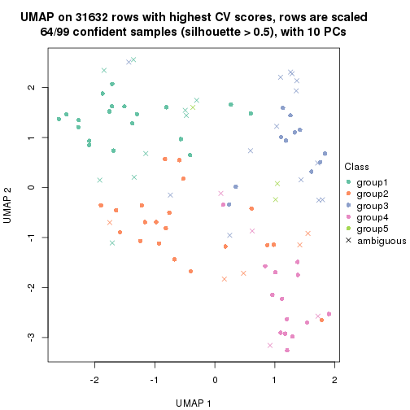
dimension_reduction(res, k = 6, method = "UMAP")
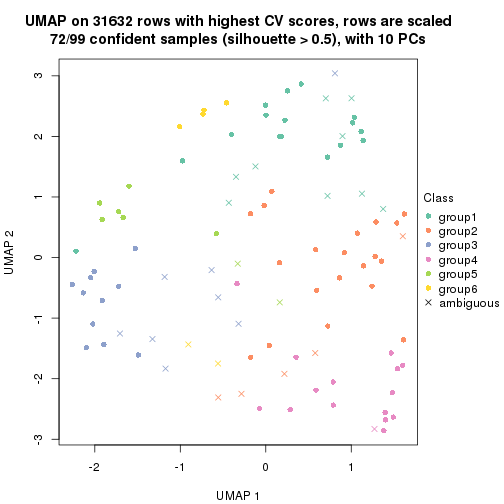
Following heatmap shows how subgroups are split when increasing k:
collect_classes(res)
Test correlation between subgroups and known annotations. If the known annotation is numeric, one-way ANOVA test is applied, and if the known annotation is discrete, chi-squared contingency table test is applied.
test_to_known_factors(res)
#> n disease.state(p) k
#> CV:kmeans 96 7.40e-06 2
#> CV:kmeans 80 3.68e-15 3
#> CV:kmeans 79 2.44e-16 4
#> CV:kmeans 64 1.01e-15 5
#> CV:kmeans 72 1.05e-27 6
If matrix rows can be associated to genes, consider to use GO_Enrichment(res,
...) to perform function enrichment for the signature genes.
The object with results only for a single top-value method and a single partition method can be extracted as:
res = res_list["CV", "skmeans"]
# you can also extract it by
# res = res_list["CV:skmeans"]
A summary of res and all the functions that can be applied to it:
res
#> A 'ConsensusPartition' object with k = 2, 3, 4, 5, 6.
#> On a matrix with 31632 rows and 99 columns.
#> Top rows (1000, 2000, 3000, 4000, 5000) are extracted by 'CV' method.
#> Subgroups are detected by 'skmeans' method.
#> Performed in total 1250 partitions by row resampling.
#> Best k for subgroups seems to be 2.
#>
#> Following methods can be applied to this 'ConsensusPartition' object:
#> [1] "cola_report" "collect_classes" "collect_plots"
#> [4] "collect_stats" "colnames" "compare_signatures"
#> [7] "consensus_heatmap" "dimension_reduction" "functional_enrichment"
#> [10] "get_anno_col" "get_anno" "get_classes"
#> [13] "get_consensus" "get_matrix" "get_membership"
#> [16] "get_param" "get_signatures" "get_stats"
#> [19] "is_best_k" "is_stable_k" "membership_heatmap"
#> [22] "ncol" "nrow" "plot_ecdf"
#> [25] "rownames" "select_partition_number" "show"
#> [28] "suggest_best_k" "test_to_known_factors"
collect_plots() function collects all the plots made from res for all k (number of partitions)
into one single page to provide an easy and fast comparison between different k.
collect_plots(res)
The plots are:
k and the heatmap of
predicted classes for each k.k.k.k.All the plots in panels can be made by individual functions and they are plotted later in this section.
select_partition_number() produces several plots showing different
statistics for choosing “optimized” k. There are following statistics:
k;k, the area increased is defined as \(A_k - A_{k-1}\).The detailed explanations of these statistics can be found in the cola vignette.
Generally speaking, lower PAC score, higher mean silhouette score or higher
concordance corresponds to better partition. Rand index and Jaccard index
measure how similar the current partition is compared to partition with k-1.
If they are too similar, we won't accept k is better than k-1.
select_partition_number(res)
The numeric values for all these statistics can be obtained by get_stats().
get_stats(res)
#> k 1-PAC mean_silhouette concordance area_increased Rand Jaccard
#> 2 2 0.827 0.945 0.973 0.5041 0.496 0.496
#> 3 3 0.683 0.776 0.898 0.3183 0.703 0.474
#> 4 4 0.679 0.687 0.843 0.1233 0.798 0.494
#> 5 5 0.708 0.705 0.827 0.0638 0.918 0.699
#> 6 6 0.710 0.619 0.793 0.0389 0.915 0.638
suggest_best_k() suggests the best \(k\) based on these statistics. The rules are as follows:
NA.suggest_best_k(res)
#> [1] 2
Following shows the table of the partitions (You need to click the show/hide
code output link to see it). The membership matrix (columns with name p*)
is inferred by
clue::cl_consensus()
function with the SE method. Basically the value in the membership matrix
represents the probability to belong to a certain group. The finall class
label for an item is determined with the group with highest probability it
belongs to.
In get_classes() function, the entropy is calculated from the membership
matrix and the silhouette score is calculated from the consensus matrix.
cbind(get_classes(res, k = 2), get_membership(res, k = 2))
#> class entropy silhouette p1 p2
#> GSM1152309 2 0.0000 0.973 0.000 1.000
#> GSM1152310 2 0.0000 0.973 0.000 1.000
#> GSM1152311 2 0.0000 0.973 0.000 1.000
#> GSM1152312 1 0.0000 0.969 1.000 0.000
#> GSM1152313 2 0.0000 0.973 0.000 1.000
#> GSM1152314 1 0.0000 0.969 1.000 0.000
#> GSM1152315 2 0.0000 0.973 0.000 1.000
#> GSM1152316 2 0.0000 0.973 0.000 1.000
#> GSM1152317 2 0.0000 0.973 0.000 1.000
#> GSM1152318 2 0.0000 0.973 0.000 1.000
#> GSM1152319 2 0.0000 0.973 0.000 1.000
#> GSM1152320 1 0.7674 0.746 0.776 0.224
#> GSM1152321 2 0.0000 0.973 0.000 1.000
#> GSM1152322 2 0.0000 0.973 0.000 1.000
#> GSM1152323 2 0.0000 0.973 0.000 1.000
#> GSM1152324 2 0.0000 0.973 0.000 1.000
#> GSM1152325 2 0.0000 0.973 0.000 1.000
#> GSM1152326 1 0.8016 0.717 0.756 0.244
#> GSM1152327 2 0.0000 0.973 0.000 1.000
#> GSM1152328 1 0.5842 0.848 0.860 0.140
#> GSM1152329 1 0.1184 0.959 0.984 0.016
#> GSM1152330 1 0.6623 0.812 0.828 0.172
#> GSM1152331 2 0.0000 0.973 0.000 1.000
#> GSM1152332 1 0.0000 0.969 1.000 0.000
#> GSM1152333 1 0.0376 0.967 0.996 0.004
#> GSM1152334 2 0.0000 0.973 0.000 1.000
#> GSM1152335 1 0.8144 0.705 0.748 0.252
#> GSM1152336 2 0.0000 0.973 0.000 1.000
#> GSM1152337 2 0.0000 0.973 0.000 1.000
#> GSM1152338 2 0.0000 0.973 0.000 1.000
#> GSM1152339 1 0.0672 0.964 0.992 0.008
#> GSM1152340 1 0.6048 0.840 0.852 0.148
#> GSM1152341 1 0.5842 0.848 0.860 0.140
#> GSM1152342 2 0.0000 0.973 0.000 1.000
#> GSM1152343 2 0.0000 0.973 0.000 1.000
#> GSM1152344 2 0.0000 0.973 0.000 1.000
#> GSM1152345 2 0.1184 0.961 0.016 0.984
#> GSM1152346 2 0.0000 0.973 0.000 1.000
#> GSM1152347 1 0.0000 0.969 1.000 0.000
#> GSM1152348 1 0.1414 0.956 0.980 0.020
#> GSM1152349 1 0.0000 0.969 1.000 0.000
#> GSM1152355 1 0.0000 0.969 1.000 0.000
#> GSM1152356 1 0.0000 0.969 1.000 0.000
#> GSM1152357 1 0.0000 0.969 1.000 0.000
#> GSM1152358 2 0.0000 0.973 0.000 1.000
#> GSM1152359 1 0.0000 0.969 1.000 0.000
#> GSM1152360 1 0.0000 0.969 1.000 0.000
#> GSM1152361 2 0.7376 0.729 0.208 0.792
#> GSM1152362 2 0.0000 0.973 0.000 1.000
#> GSM1152363 1 0.0000 0.969 1.000 0.000
#> GSM1152364 1 0.0000 0.969 1.000 0.000
#> GSM1152365 1 0.0000 0.969 1.000 0.000
#> GSM1152366 1 0.0000 0.969 1.000 0.000
#> GSM1152367 1 0.0000 0.969 1.000 0.000
#> GSM1152368 1 0.0000 0.969 1.000 0.000
#> GSM1152369 1 0.0000 0.969 1.000 0.000
#> GSM1152370 1 0.0000 0.969 1.000 0.000
#> GSM1152371 1 0.0000 0.969 1.000 0.000
#> GSM1152372 1 0.0000 0.969 1.000 0.000
#> GSM1152373 1 0.0000 0.969 1.000 0.000
#> GSM1152374 2 0.0000 0.973 0.000 1.000
#> GSM1152375 1 0.0000 0.969 1.000 0.000
#> GSM1152376 1 0.0000 0.969 1.000 0.000
#> GSM1152377 1 0.0000 0.969 1.000 0.000
#> GSM1152378 1 0.0000 0.969 1.000 0.000
#> GSM1152379 1 0.0672 0.964 0.992 0.008
#> GSM1152380 1 0.0000 0.969 1.000 0.000
#> GSM1152381 1 0.0000 0.969 1.000 0.000
#> GSM1152382 1 0.0000 0.969 1.000 0.000
#> GSM1152383 1 0.0000 0.969 1.000 0.000
#> GSM1152384 1 0.0000 0.969 1.000 0.000
#> GSM1152385 2 0.0000 0.973 0.000 1.000
#> GSM1152386 2 0.0000 0.973 0.000 1.000
#> GSM1152387 2 0.0000 0.973 0.000 1.000
#> GSM1152289 2 0.0000 0.973 0.000 1.000
#> GSM1152290 2 0.0672 0.968 0.008 0.992
#> GSM1152291 2 0.0672 0.968 0.008 0.992
#> GSM1152292 2 0.6623 0.810 0.172 0.828
#> GSM1152293 2 0.2236 0.946 0.036 0.964
#> GSM1152294 2 0.0000 0.973 0.000 1.000
#> GSM1152295 1 0.0000 0.969 1.000 0.000
#> GSM1152296 1 0.0000 0.969 1.000 0.000
#> GSM1152297 2 0.0672 0.968 0.008 0.992
#> GSM1152298 2 0.0000 0.973 0.000 1.000
#> GSM1152299 2 0.0000 0.973 0.000 1.000
#> GSM1152300 1 0.0000 0.969 1.000 0.000
#> GSM1152301 1 0.0000 0.969 1.000 0.000
#> GSM1152302 2 0.6623 0.810 0.172 0.828
#> GSM1152303 2 0.6623 0.810 0.172 0.828
#> GSM1152304 2 0.0672 0.968 0.008 0.992
#> GSM1152305 2 0.0000 0.973 0.000 1.000
#> GSM1152306 2 0.7745 0.734 0.228 0.772
#> GSM1152307 1 0.0000 0.969 1.000 0.000
#> GSM1152308 2 0.0000 0.973 0.000 1.000
#> GSM1152350 2 0.0000 0.973 0.000 1.000
#> GSM1152351 2 0.0000 0.973 0.000 1.000
#> GSM1152352 2 0.0000 0.973 0.000 1.000
#> GSM1152353 2 0.4815 0.884 0.104 0.896
#> GSM1152354 2 0.6712 0.806 0.176 0.824
cbind(get_classes(res, k = 3), get_membership(res, k = 3))
#> class entropy silhouette p1 p2 p3
#> GSM1152309 2 0.2959 0.7856 0.000 0.900 0.100
#> GSM1152310 2 0.6274 0.2879 0.000 0.544 0.456
#> GSM1152311 2 0.0000 0.8072 0.000 1.000 0.000
#> GSM1152312 1 0.0000 0.9433 1.000 0.000 0.000
#> GSM1152313 3 0.6026 0.1821 0.000 0.376 0.624
#> GSM1152314 1 0.0000 0.9433 1.000 0.000 0.000
#> GSM1152315 2 0.3267 0.7811 0.000 0.884 0.116
#> GSM1152316 2 0.6008 0.4927 0.000 0.628 0.372
#> GSM1152317 2 0.2878 0.7869 0.000 0.904 0.096
#> GSM1152318 2 0.5291 0.6589 0.000 0.732 0.268
#> GSM1152319 2 0.0000 0.8072 0.000 1.000 0.000
#> GSM1152320 2 0.0000 0.8072 0.000 1.000 0.000
#> GSM1152321 2 0.4452 0.7339 0.000 0.808 0.192
#> GSM1152322 2 0.5291 0.6589 0.000 0.732 0.268
#> GSM1152323 2 0.6095 0.4551 0.000 0.608 0.392
#> GSM1152324 2 0.0000 0.8072 0.000 1.000 0.000
#> GSM1152325 2 0.4399 0.7369 0.000 0.812 0.188
#> GSM1152326 2 0.0424 0.8046 0.008 0.992 0.000
#> GSM1152327 2 0.5591 0.6103 0.000 0.696 0.304
#> GSM1152328 2 0.5254 0.5910 0.264 0.736 0.000
#> GSM1152329 2 0.5591 0.5137 0.304 0.696 0.000
#> GSM1152330 2 0.2796 0.7571 0.092 0.908 0.000
#> GSM1152331 2 0.0000 0.8072 0.000 1.000 0.000
#> GSM1152332 1 0.0000 0.9433 1.000 0.000 0.000
#> GSM1152333 1 0.6204 0.2756 0.576 0.424 0.000
#> GSM1152334 3 0.0592 0.8744 0.000 0.012 0.988
#> GSM1152335 2 0.0237 0.8060 0.004 0.996 0.000
#> GSM1152336 2 0.0000 0.8072 0.000 1.000 0.000
#> GSM1152337 2 0.0000 0.8072 0.000 1.000 0.000
#> GSM1152338 2 0.0000 0.8072 0.000 1.000 0.000
#> GSM1152339 2 0.6308 -0.0312 0.492 0.508 0.000
#> GSM1152340 2 0.4702 0.6608 0.212 0.788 0.000
#> GSM1152341 2 0.3267 0.7417 0.116 0.884 0.000
#> GSM1152342 2 0.2448 0.7768 0.000 0.924 0.076
#> GSM1152343 2 0.0000 0.8072 0.000 1.000 0.000
#> GSM1152344 2 0.0000 0.8072 0.000 1.000 0.000
#> GSM1152345 2 0.4842 0.7024 0.000 0.776 0.224
#> GSM1152346 2 0.5363 0.6485 0.000 0.724 0.276
#> GSM1152347 1 0.6244 0.2260 0.560 0.000 0.440
#> GSM1152348 2 0.5098 0.6108 0.248 0.752 0.000
#> GSM1152349 1 0.2796 0.8680 0.908 0.000 0.092
#> GSM1152355 1 0.0000 0.9433 1.000 0.000 0.000
#> GSM1152356 1 0.0000 0.9433 1.000 0.000 0.000
#> GSM1152357 1 0.0000 0.9433 1.000 0.000 0.000
#> GSM1152358 3 0.0237 0.8749 0.000 0.004 0.996
#> GSM1152359 1 0.4291 0.7633 0.820 0.180 0.000
#> GSM1152360 1 0.0000 0.9433 1.000 0.000 0.000
#> GSM1152361 2 0.0000 0.8072 0.000 1.000 0.000
#> GSM1152362 2 0.4702 0.7179 0.000 0.788 0.212
#> GSM1152363 1 0.0000 0.9433 1.000 0.000 0.000
#> GSM1152364 1 0.0000 0.9433 1.000 0.000 0.000
#> GSM1152365 1 0.0000 0.9433 1.000 0.000 0.000
#> GSM1152366 1 0.0000 0.9433 1.000 0.000 0.000
#> GSM1152367 1 0.0000 0.9433 1.000 0.000 0.000
#> GSM1152368 1 0.0000 0.9433 1.000 0.000 0.000
#> GSM1152369 1 0.0000 0.9433 1.000 0.000 0.000
#> GSM1152370 1 0.0000 0.9433 1.000 0.000 0.000
#> GSM1152371 1 0.0000 0.9433 1.000 0.000 0.000
#> GSM1152372 1 0.3551 0.8276 0.868 0.000 0.132
#> GSM1152373 1 0.0000 0.9433 1.000 0.000 0.000
#> GSM1152374 3 0.3192 0.8283 0.000 0.112 0.888
#> GSM1152375 1 0.0000 0.9433 1.000 0.000 0.000
#> GSM1152376 1 0.0000 0.9433 1.000 0.000 0.000
#> GSM1152377 1 0.0000 0.9433 1.000 0.000 0.000
#> GSM1152378 1 0.0000 0.9433 1.000 0.000 0.000
#> GSM1152379 1 0.5254 0.6373 0.736 0.264 0.000
#> GSM1152380 1 0.0000 0.9433 1.000 0.000 0.000
#> GSM1152381 1 0.0000 0.9433 1.000 0.000 0.000
#> GSM1152382 1 0.0000 0.9433 1.000 0.000 0.000
#> GSM1152383 1 0.0000 0.9433 1.000 0.000 0.000
#> GSM1152384 1 0.0000 0.9433 1.000 0.000 0.000
#> GSM1152385 2 0.0747 0.8058 0.000 0.984 0.016
#> GSM1152386 2 0.6008 0.4927 0.000 0.628 0.372
#> GSM1152387 2 0.4121 0.7513 0.000 0.832 0.168
#> GSM1152289 2 0.4842 0.7079 0.000 0.776 0.224
#> GSM1152290 3 0.0000 0.8748 0.000 0.000 1.000
#> GSM1152291 3 0.2066 0.8410 0.000 0.060 0.940
#> GSM1152292 3 0.0000 0.8748 0.000 0.000 1.000
#> GSM1152293 3 0.0000 0.8748 0.000 0.000 1.000
#> GSM1152294 3 0.2878 0.8447 0.000 0.096 0.904
#> GSM1152295 1 0.3941 0.8022 0.844 0.000 0.156
#> GSM1152296 1 0.0000 0.9433 1.000 0.000 0.000
#> GSM1152297 3 0.0000 0.8748 0.000 0.000 1.000
#> GSM1152298 3 0.0000 0.8748 0.000 0.000 1.000
#> GSM1152299 3 0.0892 0.8730 0.000 0.020 0.980
#> GSM1152300 3 0.6305 -0.0305 0.484 0.000 0.516
#> GSM1152301 1 0.2796 0.8680 0.908 0.000 0.092
#> GSM1152302 3 0.0000 0.8748 0.000 0.000 1.000
#> GSM1152303 3 0.0000 0.8748 0.000 0.000 1.000
#> GSM1152304 3 0.0000 0.8748 0.000 0.000 1.000
#> GSM1152305 3 0.4605 0.6472 0.000 0.204 0.796
#> GSM1152306 3 0.0000 0.8748 0.000 0.000 1.000
#> GSM1152307 3 0.6026 0.3024 0.376 0.000 0.624
#> GSM1152308 3 0.2878 0.8447 0.000 0.096 0.904
#> GSM1152350 3 0.2796 0.8479 0.000 0.092 0.908
#> GSM1152351 3 0.2796 0.8479 0.000 0.092 0.908
#> GSM1152352 3 0.2796 0.8479 0.000 0.092 0.908
#> GSM1152353 3 0.2796 0.8479 0.000 0.092 0.908
#> GSM1152354 3 0.2796 0.8479 0.000 0.092 0.908
cbind(get_classes(res, k = 4), get_membership(res, k = 4))
#> class entropy silhouette p1 p2 p3 p4
#> GSM1152309 4 0.2081 0.7264 0.000 0.084 0.000 0.916
#> GSM1152310 4 0.4284 0.5610 0.000 0.012 0.224 0.764
#> GSM1152311 4 0.4585 0.4783 0.000 0.332 0.000 0.668
#> GSM1152312 1 0.1940 0.8795 0.924 0.076 0.000 0.000
#> GSM1152313 4 0.5263 0.0457 0.000 0.008 0.448 0.544
#> GSM1152314 1 0.0921 0.9096 0.972 0.028 0.000 0.000
#> GSM1152315 4 0.1733 0.6961 0.000 0.024 0.028 0.948
#> GSM1152316 4 0.2011 0.7272 0.000 0.080 0.000 0.920
#> GSM1152317 4 0.2081 0.7264 0.000 0.084 0.000 0.916
#> GSM1152318 4 0.2011 0.7272 0.000 0.080 0.000 0.920
#> GSM1152319 2 0.2149 0.8259 0.000 0.912 0.000 0.088
#> GSM1152320 2 0.1389 0.8398 0.000 0.952 0.000 0.048
#> GSM1152321 4 0.2081 0.7264 0.000 0.084 0.000 0.916
#> GSM1152322 4 0.1940 0.7271 0.000 0.076 0.000 0.924
#> GSM1152323 4 0.1510 0.7133 0.000 0.028 0.016 0.956
#> GSM1152324 4 0.4761 0.3947 0.000 0.372 0.000 0.628
#> GSM1152325 4 0.2081 0.7264 0.000 0.084 0.000 0.916
#> GSM1152326 2 0.1452 0.8454 0.008 0.956 0.000 0.036
#> GSM1152327 4 0.2081 0.7264 0.000 0.084 0.000 0.916
#> GSM1152328 2 0.1545 0.8426 0.008 0.952 0.000 0.040
#> GSM1152329 2 0.2081 0.8267 0.084 0.916 0.000 0.000
#> GSM1152330 2 0.1389 0.8398 0.000 0.952 0.000 0.048
#> GSM1152331 4 0.4776 0.3721 0.000 0.376 0.000 0.624
#> GSM1152332 1 0.0921 0.9221 0.972 0.028 0.000 0.000
#> GSM1152333 2 0.2408 0.8136 0.104 0.896 0.000 0.000
#> GSM1152334 3 0.4855 0.1288 0.000 0.000 0.600 0.400
#> GSM1152335 2 0.1792 0.8326 0.000 0.932 0.000 0.068
#> GSM1152336 2 0.4961 0.2380 0.000 0.552 0.000 0.448
#> GSM1152337 2 0.2011 0.8282 0.000 0.920 0.000 0.080
#> GSM1152338 2 0.3610 0.7075 0.000 0.800 0.000 0.200
#> GSM1152339 2 0.2216 0.8217 0.092 0.908 0.000 0.000
#> GSM1152340 2 0.1356 0.8428 0.008 0.960 0.000 0.032
#> GSM1152341 2 0.1022 0.8419 0.032 0.968 0.000 0.000
#> GSM1152342 2 0.4406 0.7426 0.028 0.780 0.000 0.192
#> GSM1152343 2 0.3486 0.7830 0.000 0.812 0.000 0.188
#> GSM1152344 4 0.4454 0.5183 0.000 0.308 0.000 0.692
#> GSM1152345 2 0.5389 0.6789 0.004 0.752 0.140 0.104
#> GSM1152346 4 0.2011 0.7272 0.000 0.080 0.000 0.920
#> GSM1152347 3 0.5511 0.3976 0.352 0.028 0.620 0.000
#> GSM1152348 2 0.2081 0.8267 0.084 0.916 0.000 0.000
#> GSM1152349 1 0.5613 0.3036 0.592 0.028 0.380 0.000
#> GSM1152355 1 0.0707 0.9253 0.980 0.020 0.000 0.000
#> GSM1152356 1 0.0707 0.9253 0.980 0.020 0.000 0.000
#> GSM1152357 1 0.0707 0.9253 0.980 0.020 0.000 0.000
#> GSM1152358 3 0.4761 0.1592 0.000 0.000 0.628 0.372
#> GSM1152359 2 0.5193 0.5223 0.324 0.656 0.000 0.020
#> GSM1152360 1 0.0707 0.9253 0.980 0.020 0.000 0.000
#> GSM1152361 4 0.5982 0.1590 0.040 0.436 0.000 0.524
#> GSM1152362 4 0.1118 0.7161 0.000 0.036 0.000 0.964
#> GSM1152363 1 0.0817 0.9246 0.976 0.024 0.000 0.000
#> GSM1152364 1 0.0707 0.9253 0.980 0.020 0.000 0.000
#> GSM1152365 1 0.1211 0.9126 0.960 0.040 0.000 0.000
#> GSM1152366 1 0.0707 0.9253 0.980 0.020 0.000 0.000
#> GSM1152367 1 0.0707 0.9253 0.980 0.020 0.000 0.000
#> GSM1152368 1 0.0921 0.9096 0.972 0.028 0.000 0.000
#> GSM1152369 1 0.0707 0.9253 0.980 0.020 0.000 0.000
#> GSM1152370 1 0.0707 0.9253 0.980 0.020 0.000 0.000
#> GSM1152371 1 0.1118 0.9156 0.964 0.036 0.000 0.000
#> GSM1152372 1 0.6204 0.4345 0.636 0.028 0.304 0.032
#> GSM1152373 1 0.0921 0.9096 0.972 0.028 0.000 0.000
#> GSM1152374 4 0.3852 0.6014 0.000 0.008 0.192 0.800
#> GSM1152375 1 0.0707 0.9253 0.980 0.020 0.000 0.000
#> GSM1152376 1 0.0921 0.9096 0.972 0.028 0.000 0.000
#> GSM1152377 1 0.0707 0.9253 0.980 0.020 0.000 0.000
#> GSM1152378 1 0.0921 0.9096 0.972 0.028 0.000 0.000
#> GSM1152379 2 0.5288 0.6963 0.200 0.732 0.000 0.068
#> GSM1152380 1 0.0921 0.9096 0.972 0.028 0.000 0.000
#> GSM1152381 1 0.0707 0.9253 0.980 0.020 0.000 0.000
#> GSM1152382 1 0.4008 0.6358 0.756 0.244 0.000 0.000
#> GSM1152383 1 0.0707 0.9253 0.980 0.020 0.000 0.000
#> GSM1152384 1 0.0921 0.9096 0.972 0.028 0.000 0.000
#> GSM1152385 4 0.2216 0.7222 0.000 0.092 0.000 0.908
#> GSM1152386 4 0.2011 0.7272 0.000 0.080 0.000 0.920
#> GSM1152387 4 0.3873 0.6221 0.000 0.228 0.000 0.772
#> GSM1152289 4 0.6992 0.4537 0.000 0.280 0.156 0.564
#> GSM1152290 3 0.0000 0.7710 0.000 0.000 1.000 0.000
#> GSM1152291 3 0.5220 0.6013 0.020 0.036 0.756 0.188
#> GSM1152292 3 0.0000 0.7710 0.000 0.000 1.000 0.000
#> GSM1152293 3 0.0000 0.7710 0.000 0.000 1.000 0.000
#> GSM1152294 4 0.4855 0.3640 0.000 0.000 0.400 0.600
#> GSM1152295 3 0.5911 0.3321 0.372 0.044 0.584 0.000
#> GSM1152296 1 0.0000 0.9200 1.000 0.000 0.000 0.000
#> GSM1152297 3 0.2530 0.6721 0.000 0.000 0.888 0.112
#> GSM1152298 3 0.0000 0.7710 0.000 0.000 1.000 0.000
#> GSM1152299 4 0.4713 0.4310 0.000 0.000 0.360 0.640
#> GSM1152300 3 0.5322 0.4797 0.312 0.028 0.660 0.000
#> GSM1152301 1 0.5660 0.2581 0.576 0.028 0.396 0.000
#> GSM1152302 3 0.0000 0.7710 0.000 0.000 1.000 0.000
#> GSM1152303 3 0.0000 0.7710 0.000 0.000 1.000 0.000
#> GSM1152304 3 0.0000 0.7710 0.000 0.000 1.000 0.000
#> GSM1152305 3 0.6089 0.5293 0.020 0.064 0.692 0.224
#> GSM1152306 3 0.0000 0.7710 0.000 0.000 1.000 0.000
#> GSM1152307 3 0.3300 0.7040 0.144 0.008 0.848 0.000
#> GSM1152308 4 0.4916 0.3256 0.000 0.000 0.424 0.576
#> GSM1152350 4 0.4888 0.3469 0.000 0.000 0.412 0.588
#> GSM1152351 4 0.4898 0.3408 0.000 0.000 0.416 0.584
#> GSM1152352 4 0.4898 0.3408 0.000 0.000 0.416 0.584
#> GSM1152353 4 0.4898 0.3408 0.000 0.000 0.416 0.584
#> GSM1152354 4 0.5320 0.3277 0.012 0.000 0.416 0.572
cbind(get_classes(res, k = 5), get_membership(res, k = 5))
#> class entropy silhouette p1 p2 p3 p4 p5
#> GSM1152309 4 0.0000 0.8623 0.000 0.000 0.000 1.000 0.000
#> GSM1152310 5 0.3983 0.5107 0.000 0.000 0.000 0.340 0.660
#> GSM1152311 4 0.2646 0.7929 0.000 0.124 0.004 0.868 0.004
#> GSM1152312 1 0.4751 0.6891 0.732 0.116 0.152 0.000 0.000
#> GSM1152313 4 0.3452 0.6151 0.000 0.000 0.244 0.756 0.000
#> GSM1152314 1 0.2286 0.8265 0.888 0.004 0.108 0.000 0.000
#> GSM1152315 4 0.3561 0.5603 0.000 0.000 0.000 0.740 0.260
#> GSM1152316 4 0.0000 0.8623 0.000 0.000 0.000 1.000 0.000
#> GSM1152317 4 0.0000 0.8623 0.000 0.000 0.000 1.000 0.000
#> GSM1152318 4 0.0000 0.8623 0.000 0.000 0.000 1.000 0.000
#> GSM1152319 2 0.2843 0.7714 0.000 0.876 0.000 0.076 0.048
#> GSM1152320 2 0.0566 0.8126 0.000 0.984 0.000 0.012 0.004
#> GSM1152321 4 0.0000 0.8623 0.000 0.000 0.000 1.000 0.000
#> GSM1152322 4 0.0162 0.8608 0.000 0.000 0.000 0.996 0.004
#> GSM1152323 4 0.2424 0.7724 0.000 0.000 0.000 0.868 0.132
#> GSM1152324 4 0.1809 0.8333 0.000 0.060 0.000 0.928 0.012
#> GSM1152325 4 0.0000 0.8623 0.000 0.000 0.000 1.000 0.000
#> GSM1152326 2 0.1041 0.8087 0.000 0.964 0.000 0.032 0.004
#> GSM1152327 4 0.0000 0.8623 0.000 0.000 0.000 1.000 0.000
#> GSM1152328 2 0.0932 0.8106 0.004 0.972 0.020 0.004 0.000
#> GSM1152329 2 0.0579 0.8125 0.008 0.984 0.008 0.000 0.000
#> GSM1152330 2 0.0854 0.8128 0.004 0.976 0.008 0.012 0.000
#> GSM1152331 4 0.2439 0.7925 0.000 0.120 0.000 0.876 0.004
#> GSM1152332 1 0.2694 0.8518 0.892 0.068 0.032 0.000 0.008
#> GSM1152333 2 0.0579 0.8125 0.008 0.984 0.008 0.000 0.000
#> GSM1152334 5 0.3035 0.6892 0.000 0.000 0.112 0.032 0.856
#> GSM1152335 2 0.0798 0.8122 0.000 0.976 0.008 0.016 0.000
#> GSM1152336 2 0.6368 0.1220 0.000 0.436 0.000 0.400 0.164
#> GSM1152337 2 0.1857 0.7956 0.000 0.928 0.004 0.060 0.008
#> GSM1152338 2 0.4367 0.2894 0.000 0.580 0.000 0.416 0.004
#> GSM1152339 2 0.0451 0.8124 0.008 0.988 0.004 0.000 0.000
#> GSM1152340 2 0.1200 0.8087 0.008 0.964 0.016 0.000 0.012
#> GSM1152341 2 0.0451 0.8123 0.008 0.988 0.000 0.000 0.004
#> GSM1152342 2 0.5211 0.2945 0.020 0.520 0.004 0.008 0.448
#> GSM1152343 2 0.4583 0.6749 0.000 0.748 0.000 0.112 0.140
#> GSM1152344 4 0.2464 0.8156 0.000 0.092 0.012 0.892 0.004
#> GSM1152345 2 0.6783 0.5437 0.008 0.624 0.168 0.112 0.088
#> GSM1152346 4 0.0000 0.8623 0.000 0.000 0.000 1.000 0.000
#> GSM1152347 3 0.3452 0.5930 0.244 0.000 0.756 0.000 0.000
#> GSM1152348 2 0.0451 0.8123 0.008 0.988 0.000 0.000 0.004
#> GSM1152349 3 0.4273 0.2709 0.448 0.000 0.552 0.000 0.000
#> GSM1152355 1 0.0000 0.8746 1.000 0.000 0.000 0.000 0.000
#> GSM1152356 1 0.3629 0.8348 0.832 0.004 0.072 0.000 0.092
#> GSM1152357 1 0.0932 0.8722 0.972 0.004 0.004 0.000 0.020
#> GSM1152358 5 0.6739 0.2637 0.000 0.000 0.256 0.372 0.372
#> GSM1152359 2 0.5461 0.3001 0.388 0.552 0.004 0.000 0.056
#> GSM1152360 1 0.0324 0.8748 0.992 0.004 0.004 0.000 0.000
#> GSM1152361 4 0.7249 0.4780 0.016 0.144 0.116 0.596 0.128
#> GSM1152362 4 0.3972 0.6679 0.000 0.020 0.012 0.780 0.188
#> GSM1152363 1 0.0898 0.8719 0.972 0.008 0.020 0.000 0.000
#> GSM1152364 1 0.0000 0.8746 1.000 0.000 0.000 0.000 0.000
#> GSM1152365 1 0.4985 0.7879 0.744 0.020 0.112 0.000 0.124
#> GSM1152366 1 0.3745 0.8418 0.828 0.008 0.096 0.000 0.068
#> GSM1152367 1 0.4686 0.7945 0.756 0.008 0.112 0.000 0.124
#> GSM1152368 1 0.5596 0.7617 0.656 0.008 0.216 0.000 0.120
#> GSM1152369 1 0.4733 0.7930 0.752 0.008 0.116 0.000 0.124
#> GSM1152370 1 0.2011 0.8702 0.928 0.008 0.044 0.000 0.020
#> GSM1152371 1 0.5031 0.7866 0.740 0.020 0.116 0.000 0.124
#> GSM1152372 3 0.6577 0.1959 0.240 0.008 0.596 0.032 0.124
#> GSM1152373 1 0.2233 0.8296 0.892 0.004 0.104 0.000 0.000
#> GSM1152374 5 0.5123 0.3925 0.000 0.000 0.044 0.384 0.572
#> GSM1152375 1 0.4328 0.8077 0.780 0.004 0.108 0.000 0.108
#> GSM1152376 1 0.1831 0.8488 0.920 0.004 0.076 0.000 0.000
#> GSM1152377 1 0.0865 0.8757 0.972 0.000 0.024 0.000 0.004
#> GSM1152378 1 0.2844 0.8581 0.876 0.004 0.092 0.000 0.028
#> GSM1152379 2 0.7517 0.2225 0.212 0.384 0.048 0.000 0.356
#> GSM1152380 1 0.1430 0.8632 0.944 0.004 0.052 0.000 0.000
#> GSM1152381 1 0.0671 0.8765 0.980 0.004 0.016 0.000 0.000
#> GSM1152382 1 0.5436 0.7220 0.712 0.172 0.060 0.000 0.056
#> GSM1152383 1 0.0000 0.8746 1.000 0.000 0.000 0.000 0.000
#> GSM1152384 1 0.1764 0.8587 0.928 0.008 0.064 0.000 0.000
#> GSM1152385 4 0.0000 0.8623 0.000 0.000 0.000 1.000 0.000
#> GSM1152386 4 0.0162 0.8608 0.000 0.000 0.000 0.996 0.004
#> GSM1152387 4 0.1828 0.8415 0.000 0.032 0.028 0.936 0.004
#> GSM1152289 4 0.5590 0.6196 0.000 0.064 0.156 0.708 0.072
#> GSM1152290 3 0.3480 0.6576 0.000 0.000 0.752 0.000 0.248
#> GSM1152291 3 0.2740 0.6545 0.000 0.000 0.876 0.028 0.096
#> GSM1152292 3 0.3684 0.6430 0.000 0.000 0.720 0.000 0.280
#> GSM1152293 3 0.3636 0.6513 0.000 0.000 0.728 0.000 0.272
#> GSM1152294 5 0.3319 0.7642 0.000 0.000 0.020 0.160 0.820
#> GSM1152295 3 0.3635 0.5848 0.248 0.004 0.748 0.000 0.000
#> GSM1152296 1 0.0703 0.8753 0.976 0.000 0.024 0.000 0.000
#> GSM1152297 5 0.4528 -0.0286 0.000 0.000 0.444 0.008 0.548
#> GSM1152298 3 0.3636 0.6513 0.000 0.000 0.728 0.000 0.272
#> GSM1152299 4 0.5956 0.2195 0.000 0.000 0.196 0.592 0.212
#> GSM1152300 3 0.2516 0.6418 0.140 0.000 0.860 0.000 0.000
#> GSM1152301 3 0.4235 0.3364 0.424 0.000 0.576 0.000 0.000
#> GSM1152302 3 0.3636 0.6513 0.000 0.000 0.728 0.000 0.272
#> GSM1152303 3 0.3636 0.6513 0.000 0.000 0.728 0.000 0.272
#> GSM1152304 3 0.3612 0.6529 0.000 0.000 0.732 0.000 0.268
#> GSM1152305 3 0.3494 0.6350 0.000 0.012 0.848 0.056 0.084
#> GSM1152306 3 0.3586 0.6551 0.000 0.000 0.736 0.000 0.264
#> GSM1152307 3 0.4094 0.6630 0.128 0.000 0.788 0.000 0.084
#> GSM1152308 5 0.3714 0.7632 0.000 0.000 0.056 0.132 0.812
#> GSM1152350 5 0.3016 0.7753 0.000 0.000 0.020 0.132 0.848
#> GSM1152351 5 0.3016 0.7753 0.000 0.000 0.020 0.132 0.848
#> GSM1152352 5 0.3016 0.7753 0.000 0.000 0.020 0.132 0.848
#> GSM1152353 5 0.3281 0.7541 0.000 0.000 0.060 0.092 0.848
#> GSM1152354 5 0.1106 0.6646 0.000 0.000 0.024 0.012 0.964
cbind(get_classes(res, k = 6), get_membership(res, k = 6))
#> class entropy silhouette p1 p2 p3 p4 p5 p6
#> GSM1152309 4 0.0146 0.8284 0.000 0.000 0.000 0.996 0.004 0.000
#> GSM1152310 5 0.3464 0.7058 0.000 0.004 0.012 0.128 0.820 0.036
#> GSM1152311 4 0.3627 0.7440 0.000 0.132 0.000 0.808 0.028 0.032
#> GSM1152312 1 0.5326 0.4454 0.632 0.076 0.036 0.000 0.000 0.256
#> GSM1152313 4 0.4215 0.5567 0.000 0.000 0.276 0.688 0.012 0.024
#> GSM1152314 1 0.3134 0.6128 0.808 0.000 0.024 0.000 0.000 0.168
#> GSM1152315 4 0.3634 0.5458 0.000 0.008 0.000 0.696 0.296 0.000
#> GSM1152316 4 0.0508 0.8276 0.000 0.000 0.000 0.984 0.004 0.012
#> GSM1152317 4 0.0146 0.8286 0.000 0.000 0.000 0.996 0.004 0.000
#> GSM1152318 4 0.0146 0.8286 0.000 0.000 0.000 0.996 0.004 0.000
#> GSM1152319 2 0.4276 0.7157 0.000 0.760 0.000 0.136 0.084 0.020
#> GSM1152320 2 0.1167 0.8307 0.000 0.960 0.000 0.008 0.012 0.020
#> GSM1152321 4 0.0000 0.8287 0.000 0.000 0.000 1.000 0.000 0.000
#> GSM1152322 4 0.0547 0.8257 0.000 0.000 0.000 0.980 0.020 0.000
#> GSM1152323 4 0.3328 0.6990 0.000 0.000 0.012 0.788 0.192 0.008
#> GSM1152324 4 0.3590 0.7465 0.000 0.112 0.000 0.812 0.064 0.012
#> GSM1152325 4 0.0000 0.8287 0.000 0.000 0.000 1.000 0.000 0.000
#> GSM1152326 2 0.2699 0.8033 0.000 0.880 0.000 0.068 0.032 0.020
#> GSM1152327 4 0.0405 0.8283 0.000 0.000 0.000 0.988 0.004 0.008
#> GSM1152328 2 0.1738 0.8294 0.000 0.928 0.004 0.000 0.016 0.052
#> GSM1152329 2 0.1225 0.8356 0.000 0.952 0.000 0.000 0.012 0.036
#> GSM1152330 2 0.1320 0.8341 0.000 0.948 0.000 0.000 0.016 0.036
#> GSM1152331 4 0.2758 0.7694 0.000 0.112 0.000 0.860 0.016 0.012
#> GSM1152332 1 0.3972 0.5409 0.772 0.104 0.004 0.000 0.000 0.120
#> GSM1152333 2 0.1461 0.8337 0.000 0.940 0.000 0.000 0.016 0.044
#> GSM1152334 5 0.3657 0.7427 0.000 0.000 0.168 0.020 0.788 0.024
#> GSM1152335 2 0.1391 0.8334 0.000 0.944 0.000 0.000 0.016 0.040
#> GSM1152336 4 0.6145 0.0696 0.000 0.340 0.000 0.432 0.220 0.008
#> GSM1152337 2 0.2778 0.8005 0.000 0.872 0.000 0.080 0.032 0.016
#> GSM1152338 2 0.4860 0.2748 0.000 0.552 0.000 0.400 0.032 0.016
#> GSM1152339 2 0.0632 0.8358 0.000 0.976 0.000 0.000 0.000 0.024
#> GSM1152340 2 0.3931 0.7394 0.004 0.784 0.004 0.000 0.092 0.116
#> GSM1152341 2 0.0725 0.8315 0.000 0.976 0.000 0.000 0.012 0.012
#> GSM1152342 5 0.5366 0.3062 0.016 0.276 0.000 0.000 0.604 0.104
#> GSM1152343 2 0.5857 0.4940 0.000 0.572 0.000 0.236 0.168 0.024
#> GSM1152344 4 0.3524 0.7770 0.000 0.076 0.000 0.832 0.040 0.052
#> GSM1152345 2 0.7747 0.3517 0.000 0.464 0.096 0.068 0.204 0.168
#> GSM1152346 4 0.0405 0.8284 0.000 0.000 0.000 0.988 0.008 0.004
#> GSM1152347 3 0.5503 0.3732 0.276 0.000 0.552 0.000 0.000 0.172
#> GSM1152348 2 0.0820 0.8311 0.000 0.972 0.000 0.000 0.012 0.016
#> GSM1152349 1 0.5336 0.2919 0.544 0.000 0.332 0.000 0.000 0.124
#> GSM1152355 1 0.0000 0.6747 1.000 0.000 0.000 0.000 0.000 0.000
#> GSM1152356 1 0.3351 0.1814 0.712 0.000 0.000 0.000 0.000 0.288
#> GSM1152357 1 0.2255 0.6312 0.892 0.000 0.000 0.000 0.028 0.080
#> GSM1152358 3 0.5924 0.1011 0.000 0.000 0.484 0.348 0.156 0.012
#> GSM1152359 1 0.7063 -0.0157 0.408 0.328 0.000 0.000 0.140 0.124
#> GSM1152360 1 0.0363 0.6736 0.988 0.000 0.000 0.000 0.000 0.012
#> GSM1152361 6 0.5669 0.2631 0.004 0.104 0.000 0.264 0.028 0.600
#> GSM1152362 4 0.4691 0.6170 0.000 0.012 0.004 0.684 0.244 0.056
#> GSM1152363 1 0.1588 0.6747 0.924 0.000 0.004 0.000 0.000 0.072
#> GSM1152364 1 0.0000 0.6747 1.000 0.000 0.000 0.000 0.000 0.000
#> GSM1152365 6 0.4039 0.5920 0.424 0.008 0.000 0.000 0.000 0.568
#> GSM1152366 1 0.3161 0.5044 0.776 0.000 0.008 0.000 0.000 0.216
#> GSM1152367 6 0.3810 0.6067 0.428 0.000 0.000 0.000 0.000 0.572
#> GSM1152368 6 0.3725 0.4878 0.316 0.000 0.008 0.000 0.000 0.676
#> GSM1152369 6 0.3823 0.6074 0.436 0.000 0.000 0.000 0.000 0.564
#> GSM1152370 1 0.2558 0.5413 0.840 0.004 0.000 0.000 0.000 0.156
#> GSM1152371 6 0.4084 0.6217 0.400 0.012 0.000 0.000 0.000 0.588
#> GSM1152372 6 0.4453 0.4729 0.080 0.000 0.108 0.016 0.024 0.772
#> GSM1152373 1 0.3053 0.6168 0.812 0.000 0.020 0.000 0.000 0.168
#> GSM1152374 5 0.5525 0.5017 0.000 0.004 0.044 0.220 0.644 0.088
#> GSM1152375 1 0.3907 -0.2346 0.588 0.000 0.000 0.000 0.004 0.408
#> GSM1152376 1 0.2357 0.6539 0.872 0.000 0.012 0.000 0.000 0.116
#> GSM1152377 1 0.1610 0.6325 0.916 0.000 0.000 0.000 0.000 0.084
#> GSM1152378 1 0.5066 0.4787 0.644 0.000 0.020 0.000 0.076 0.260
#> GSM1152379 5 0.7536 -0.0396 0.160 0.220 0.000 0.000 0.336 0.284
#> GSM1152380 1 0.1812 0.6710 0.912 0.000 0.008 0.000 0.000 0.080
#> GSM1152381 1 0.1075 0.6654 0.952 0.000 0.000 0.000 0.000 0.048
#> GSM1152382 1 0.5516 -0.0389 0.572 0.164 0.000 0.000 0.004 0.260
#> GSM1152383 1 0.0000 0.6747 1.000 0.000 0.000 0.000 0.000 0.000
#> GSM1152384 1 0.2538 0.6551 0.860 0.000 0.016 0.000 0.000 0.124
#> GSM1152385 4 0.0405 0.8277 0.000 0.004 0.000 0.988 0.008 0.000
#> GSM1152386 4 0.0508 0.8276 0.000 0.000 0.000 0.984 0.004 0.012
#> GSM1152387 4 0.4639 0.7280 0.000 0.036 0.012 0.760 0.096 0.096
#> GSM1152289 4 0.6964 0.5559 0.000 0.080 0.136 0.584 0.096 0.104
#> GSM1152290 3 0.1408 0.7611 0.000 0.000 0.944 0.000 0.036 0.020
#> GSM1152291 3 0.4198 0.6709 0.000 0.004 0.768 0.028 0.044 0.156
#> GSM1152292 3 0.1075 0.7625 0.000 0.000 0.952 0.000 0.048 0.000
#> GSM1152293 3 0.1219 0.7610 0.000 0.000 0.948 0.000 0.048 0.004
#> GSM1152294 5 0.4014 0.7741 0.000 0.000 0.132 0.080 0.776 0.012
#> GSM1152295 3 0.6120 0.3359 0.268 0.000 0.500 0.000 0.016 0.216
#> GSM1152296 1 0.1610 0.6605 0.916 0.000 0.000 0.000 0.000 0.084
#> GSM1152297 3 0.3788 0.4273 0.000 0.000 0.704 0.004 0.280 0.012
#> GSM1152298 3 0.1434 0.7571 0.000 0.000 0.940 0.000 0.048 0.012
#> GSM1152299 4 0.5296 0.3227 0.000 0.000 0.336 0.568 0.084 0.012
#> GSM1152300 3 0.3821 0.6635 0.080 0.000 0.772 0.000 0.000 0.148
#> GSM1152301 1 0.5409 0.2526 0.524 0.000 0.348 0.000 0.000 0.128
#> GSM1152302 3 0.1007 0.7636 0.000 0.000 0.956 0.000 0.044 0.000
#> GSM1152303 3 0.1075 0.7625 0.000 0.000 0.952 0.000 0.048 0.000
#> GSM1152304 3 0.1007 0.7636 0.000 0.000 0.956 0.000 0.044 0.000
#> GSM1152305 3 0.5525 0.6074 0.004 0.020 0.668 0.044 0.052 0.212
#> GSM1152306 3 0.1265 0.7632 0.000 0.000 0.948 0.000 0.044 0.008
#> GSM1152307 3 0.2443 0.7206 0.096 0.000 0.880 0.000 0.004 0.020
#> GSM1152308 5 0.5024 0.7244 0.000 0.000 0.192 0.068 0.692 0.048
#> GSM1152350 5 0.3691 0.7805 0.000 0.000 0.148 0.060 0.788 0.004
#> GSM1152351 5 0.3691 0.7805 0.000 0.000 0.148 0.060 0.788 0.004
#> GSM1152352 5 0.3691 0.7805 0.000 0.000 0.148 0.060 0.788 0.004
#> GSM1152353 5 0.3694 0.7760 0.000 0.000 0.156 0.048 0.788 0.008
#> GSM1152354 5 0.3856 0.7570 0.000 0.000 0.132 0.012 0.788 0.068
Heatmaps for the consensus matrix. It visualizes the probability of two samples to be in a same group.
consensus_heatmap(res, k = 2)
consensus_heatmap(res, k = 3)
consensus_heatmap(res, k = 4)
consensus_heatmap(res, k = 5)
consensus_heatmap(res, k = 6)
Heatmaps for the membership of samples in all partitions to see how consistent they are:
membership_heatmap(res, k = 2)
membership_heatmap(res, k = 3)
membership_heatmap(res, k = 4)
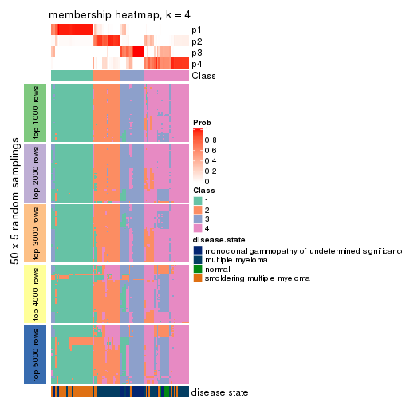
membership_heatmap(res, k = 5)

membership_heatmap(res, k = 6)
As soon as we have had the classes for columns, we can look for signatures which are significantly different between classes which can be candidate marks for certain classes. Following are the heatmaps for signatures.
Signature heatmaps where rows are scaled:
get_signatures(res, k = 2)
get_signatures(res, k = 3)
get_signatures(res, k = 4)
get_signatures(res, k = 5)
get_signatures(res, k = 6)
Signature heatmaps where rows are not scaled:
get_signatures(res, k = 2, scale_rows = FALSE)
get_signatures(res, k = 3, scale_rows = FALSE)
get_signatures(res, k = 4, scale_rows = FALSE)
get_signatures(res, k = 5, scale_rows = FALSE)
get_signatures(res, k = 6, scale_rows = FALSE)
Compare the overlap of signatures from different k:
compare_signatures(res)
get_signature() returns a data frame invisibly. TO get the list of signatures, the function
call should be assigned to a variable explicitly. In following code, if plot argument is set
to FALSE, no heatmap is plotted while only the differential analysis is performed.
# code only for demonstration
tb = get_signature(res, k = ..., plot = FALSE)
An example of the output of tb is:
#> which_row fdr mean_1 mean_2 scaled_mean_1 scaled_mean_2 km
#> 1 38 0.042760348 8.373488 9.131774 -0.5533452 0.5164555 1
#> 2 40 0.018707592 7.106213 8.469186 -0.6173731 0.5762149 1
#> 3 55 0.019134737 10.221463 11.207825 -0.6159697 0.5749050 1
#> 4 59 0.006059896 5.921854 7.869574 -0.6899429 0.6439467 1
#> 5 60 0.018055526 8.928898 10.211722 -0.6204761 0.5791110 1
#> 6 98 0.009384629 15.714769 14.887706 0.6635654 -0.6193277 2
...
The columns in tb are:
which_row: row indices corresponding to the input matrix.fdr: FDR for the differential test. mean_x: The mean value in group x.scaled_mean_x: The mean value in group x after rows are scaled.km: Row groups if k-means clustering is applied to rows.UMAP plot which shows how samples are separated.
dimension_reduction(res, k = 2, method = "UMAP")
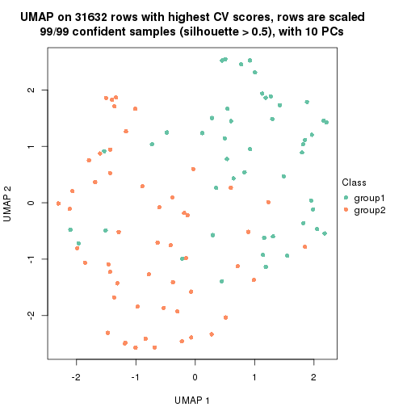
dimension_reduction(res, k = 3, method = "UMAP")
dimension_reduction(res, k = 4, method = "UMAP")
dimension_reduction(res, k = 5, method = "UMAP")
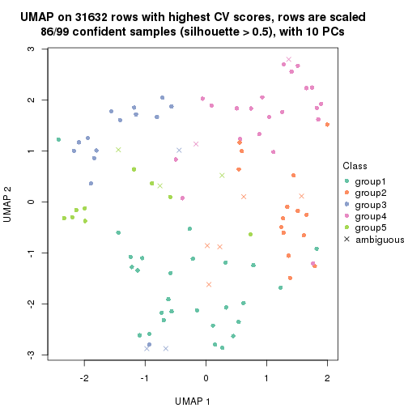
dimension_reduction(res, k = 6, method = "UMAP")
Following heatmap shows how subgroups are split when increasing k:
collect_classes(res)
Test correlation between subgroups and known annotations. If the known annotation is numeric, one-way ANOVA test is applied, and if the known annotation is discrete, chi-squared contingency table test is applied.
test_to_known_factors(res)
#> n disease.state(p) k
#> CV:skmeans 99 4.62e-05 2
#> CV:skmeans 89 1.11e-19 3
#> CV:skmeans 76 1.80e-20 4
#> CV:skmeans 86 4.27e-27 5
#> CV:skmeans 77 9.73e-22 6
If matrix rows can be associated to genes, consider to use GO_Enrichment(res,
...) to perform function enrichment for the signature genes.
The object with results only for a single top-value method and a single partition method can be extracted as:
res = res_list["CV", "pam"]
# you can also extract it by
# res = res_list["CV:pam"]
A summary of res and all the functions that can be applied to it:
res
#> A 'ConsensusPartition' object with k = 2, 3, 4, 5, 6.
#> On a matrix with 31632 rows and 99 columns.
#> Top rows (1000, 2000, 3000, 4000, 5000) are extracted by 'CV' method.
#> Subgroups are detected by 'pam' method.
#> Performed in total 1250 partitions by row resampling.
#> Best k for subgroups seems to be 2.
#>
#> Following methods can be applied to this 'ConsensusPartition' object:
#> [1] "cola_report" "collect_classes" "collect_plots"
#> [4] "collect_stats" "colnames" "compare_signatures"
#> [7] "consensus_heatmap" "dimension_reduction" "functional_enrichment"
#> [10] "get_anno_col" "get_anno" "get_classes"
#> [13] "get_consensus" "get_matrix" "get_membership"
#> [16] "get_param" "get_signatures" "get_stats"
#> [19] "is_best_k" "is_stable_k" "membership_heatmap"
#> [22] "ncol" "nrow" "plot_ecdf"
#> [25] "rownames" "select_partition_number" "show"
#> [28] "suggest_best_k" "test_to_known_factors"
collect_plots() function collects all the plots made from res for all k (number of partitions)
into one single page to provide an easy and fast comparison between different k.
collect_plots(res)
The plots are:
k and the heatmap of
predicted classes for each k.k.k.k.All the plots in panels can be made by individual functions and they are plotted later in this section.
select_partition_number() produces several plots showing different
statistics for choosing “optimized” k. There are following statistics:
k;k, the area increased is defined as \(A_k - A_{k-1}\).The detailed explanations of these statistics can be found in the cola vignette.
Generally speaking, lower PAC score, higher mean silhouette score or higher
concordance corresponds to better partition. Rand index and Jaccard index
measure how similar the current partition is compared to partition with k-1.
If they are too similar, we won't accept k is better than k-1.
select_partition_number(res)
The numeric values for all these statistics can be obtained by get_stats().
get_stats(res)
#> k 1-PAC mean_silhouette concordance area_increased Rand Jaccard
#> 2 2 0.513 0.745 0.870 0.4931 0.506 0.506
#> 3 3 0.450 0.605 0.792 0.3230 0.766 0.567
#> 4 4 0.518 0.558 0.780 0.1299 0.887 0.684
#> 5 5 0.636 0.571 0.781 0.0787 0.855 0.516
#> 6 6 0.702 0.536 0.787 0.0293 0.929 0.683
suggest_best_k() suggests the best \(k\) based on these statistics. The rules are as follows:
NA.suggest_best_k(res)
#> [1] 2
Following shows the table of the partitions (You need to click the show/hide
code output link to see it). The membership matrix (columns with name p*)
is inferred by
clue::cl_consensus()
function with the SE method. Basically the value in the membership matrix
represents the probability to belong to a certain group. The finall class
label for an item is determined with the group with highest probability it
belongs to.
In get_classes() function, the entropy is calculated from the membership
matrix and the silhouette score is calculated from the consensus matrix.
cbind(get_classes(res, k = 2), get_membership(res, k = 2))
#> class entropy silhouette p1 p2
#> GSM1152309 2 0.0672 0.8202 0.008 0.992
#> GSM1152310 2 0.1414 0.8207 0.020 0.980
#> GSM1152311 2 0.2423 0.8182 0.040 0.960
#> GSM1152312 1 0.3584 0.8076 0.932 0.068
#> GSM1152313 2 0.0000 0.8193 0.000 1.000
#> GSM1152314 1 0.1184 0.8576 0.984 0.016
#> GSM1152315 2 0.2043 0.8202 0.032 0.968
#> GSM1152316 2 0.0000 0.8193 0.000 1.000
#> GSM1152317 2 0.0000 0.8193 0.000 1.000
#> GSM1152318 2 0.0000 0.8193 0.000 1.000
#> GSM1152319 2 0.5629 0.7848 0.132 0.868
#> GSM1152320 2 0.9248 0.6428 0.340 0.660
#> GSM1152321 2 0.0000 0.8193 0.000 1.000
#> GSM1152322 2 0.0000 0.8193 0.000 1.000
#> GSM1152323 2 0.0000 0.8193 0.000 1.000
#> GSM1152324 2 0.2043 0.8202 0.032 0.968
#> GSM1152325 2 0.0000 0.8193 0.000 1.000
#> GSM1152326 2 0.9393 0.6272 0.356 0.644
#> GSM1152327 2 0.0000 0.8193 0.000 1.000
#> GSM1152328 2 0.9522 0.6105 0.372 0.628
#> GSM1152329 2 0.9491 0.6144 0.368 0.632
#> GSM1152330 2 0.9393 0.6256 0.356 0.644
#> GSM1152331 2 0.2043 0.8202 0.032 0.968
#> GSM1152332 1 0.9460 0.1457 0.636 0.364
#> GSM1152333 2 0.9635 0.5897 0.388 0.612
#> GSM1152334 2 0.1414 0.8150 0.020 0.980
#> GSM1152335 2 0.6887 0.7573 0.184 0.816
#> GSM1152336 2 0.2043 0.8202 0.032 0.968
#> GSM1152337 2 0.2236 0.8201 0.036 0.964
#> GSM1152338 2 0.2423 0.8182 0.040 0.960
#> GSM1152339 2 0.9491 0.6144 0.368 0.632
#> GSM1152340 2 0.8267 0.7057 0.260 0.740
#> GSM1152341 2 0.9661 0.5864 0.392 0.608
#> GSM1152342 2 0.9608 0.5952 0.384 0.616
#> GSM1152343 2 0.3274 0.8130 0.060 0.940
#> GSM1152344 2 0.1843 0.8206 0.028 0.972
#> GSM1152345 2 0.2948 0.8058 0.052 0.948
#> GSM1152346 2 0.0000 0.8193 0.000 1.000
#> GSM1152347 1 0.2948 0.8462 0.948 0.052
#> GSM1152348 2 0.9686 0.5803 0.396 0.604
#> GSM1152349 1 0.2043 0.8518 0.968 0.032
#> GSM1152355 1 0.0000 0.8610 1.000 0.000
#> GSM1152356 1 0.0376 0.8598 0.996 0.004
#> GSM1152357 2 0.9635 0.5897 0.388 0.612
#> GSM1152358 2 0.0000 0.8193 0.000 1.000
#> GSM1152359 2 0.9635 0.5897 0.388 0.612
#> GSM1152360 1 0.0000 0.8610 1.000 0.000
#> GSM1152361 2 0.9427 0.6232 0.360 0.640
#> GSM1152362 2 0.0000 0.8193 0.000 1.000
#> GSM1152363 1 0.0000 0.8610 1.000 0.000
#> GSM1152364 1 0.0000 0.8610 1.000 0.000
#> GSM1152365 1 0.4161 0.7911 0.916 0.084
#> GSM1152366 1 0.0000 0.8610 1.000 0.000
#> GSM1152367 1 0.0000 0.8610 1.000 0.000
#> GSM1152368 1 0.0000 0.8610 1.000 0.000
#> GSM1152369 1 0.0000 0.8610 1.000 0.000
#> GSM1152370 1 0.0000 0.8610 1.000 0.000
#> GSM1152371 1 0.2236 0.8386 0.964 0.036
#> GSM1152372 1 0.2236 0.8458 0.964 0.036
#> GSM1152373 1 0.0000 0.8610 1.000 0.000
#> GSM1152374 2 0.8861 0.6535 0.304 0.696
#> GSM1152375 1 0.0938 0.8565 0.988 0.012
#> GSM1152376 1 0.0000 0.8610 1.000 0.000
#> GSM1152377 1 0.0000 0.8610 1.000 0.000
#> GSM1152378 2 0.9661 0.5835 0.392 0.608
#> GSM1152379 2 0.9580 0.6016 0.380 0.620
#> GSM1152380 1 0.0000 0.8610 1.000 0.000
#> GSM1152381 1 0.0000 0.8610 1.000 0.000
#> GSM1152382 2 0.9710 0.5750 0.400 0.600
#> GSM1152383 1 0.0000 0.8610 1.000 0.000
#> GSM1152384 1 0.0000 0.8610 1.000 0.000
#> GSM1152385 2 0.2043 0.8202 0.032 0.968
#> GSM1152386 2 0.0000 0.8193 0.000 1.000
#> GSM1152387 2 0.3114 0.8108 0.056 0.944
#> GSM1152289 2 0.7299 0.7328 0.204 0.796
#> GSM1152290 1 0.9522 0.5263 0.628 0.372
#> GSM1152291 1 0.9522 0.5263 0.628 0.372
#> GSM1152292 1 0.8608 0.6367 0.716 0.284
#> GSM1152293 1 0.8207 0.6682 0.744 0.256
#> GSM1152294 2 0.0000 0.8193 0.000 1.000
#> GSM1152295 1 0.2603 0.8497 0.956 0.044
#> GSM1152296 1 0.0000 0.8610 1.000 0.000
#> GSM1152297 2 0.8267 0.5667 0.260 0.740
#> GSM1152298 1 0.9710 0.4847 0.600 0.400
#> GSM1152299 2 0.0000 0.8193 0.000 1.000
#> GSM1152300 1 0.2778 0.8472 0.952 0.048
#> GSM1152301 1 0.2423 0.8501 0.960 0.040
#> GSM1152302 1 0.9460 0.5371 0.636 0.364
#> GSM1152303 1 0.9248 0.5691 0.660 0.340
#> GSM1152304 1 0.9522 0.5263 0.628 0.372
#> GSM1152305 1 0.9922 0.4014 0.552 0.448
#> GSM1152306 1 0.3274 0.8419 0.940 0.060
#> GSM1152307 1 0.2603 0.8497 0.956 0.044
#> GSM1152308 1 0.9795 0.0127 0.584 0.416
#> GSM1152350 2 0.0000 0.8193 0.000 1.000
#> GSM1152351 2 0.0000 0.8193 0.000 1.000
#> GSM1152352 2 0.0000 0.8193 0.000 1.000
#> GSM1152353 2 0.0000 0.8193 0.000 1.000
#> GSM1152354 2 0.9608 0.5951 0.384 0.616
cbind(get_classes(res, k = 3), get_membership(res, k = 3))
#> class entropy silhouette p1 p2 p3
#> GSM1152309 2 0.3340 0.72514 0.000 0.880 0.120
#> GSM1152310 3 0.7828 0.50546 0.068 0.340 0.592
#> GSM1152311 2 0.0000 0.81978 0.000 1.000 0.000
#> GSM1152312 1 0.6495 0.57714 0.536 0.004 0.460
#> GSM1152313 3 0.7905 0.45421 0.064 0.376 0.560
#> GSM1152314 1 0.3941 0.73312 0.844 0.000 0.156
#> GSM1152315 2 0.6291 -0.25104 0.000 0.532 0.468
#> GSM1152316 2 0.0237 0.82012 0.000 0.996 0.004
#> GSM1152317 2 0.0237 0.82012 0.000 0.996 0.004
#> GSM1152318 2 0.0237 0.82012 0.000 0.996 0.004
#> GSM1152319 3 0.5138 0.61170 0.000 0.252 0.748
#> GSM1152320 3 0.4842 0.57345 0.000 0.224 0.776
#> GSM1152321 2 0.0000 0.81978 0.000 1.000 0.000
#> GSM1152322 2 0.0237 0.82012 0.000 0.996 0.004
#> GSM1152323 3 0.6154 0.45877 0.000 0.408 0.592
#> GSM1152324 2 0.6111 -0.00985 0.000 0.604 0.396
#> GSM1152325 2 0.0000 0.81978 0.000 1.000 0.000
#> GSM1152326 3 0.0424 0.68910 0.000 0.008 0.992
#> GSM1152327 2 0.0000 0.81978 0.000 1.000 0.000
#> GSM1152328 3 0.0237 0.68398 0.000 0.004 0.996
#> GSM1152329 3 0.0000 0.68519 0.000 0.000 1.000
#> GSM1152330 3 0.0424 0.68662 0.000 0.008 0.992
#> GSM1152331 2 0.0424 0.81675 0.000 0.992 0.008
#> GSM1152332 3 0.5138 0.23978 0.252 0.000 0.748
#> GSM1152333 3 0.0000 0.68519 0.000 0.000 1.000
#> GSM1152334 3 0.8565 0.53413 0.264 0.144 0.592
#> GSM1152335 3 0.3482 0.68437 0.000 0.128 0.872
#> GSM1152336 3 0.6111 0.47501 0.000 0.396 0.604
#> GSM1152337 3 0.5733 0.56219 0.000 0.324 0.676
#> GSM1152338 2 0.2261 0.77269 0.000 0.932 0.068
#> GSM1152339 3 0.0000 0.68519 0.000 0.000 1.000
#> GSM1152340 3 0.6895 0.60858 0.212 0.072 0.716
#> GSM1152341 3 0.0237 0.68398 0.000 0.004 0.996
#> GSM1152342 3 0.0237 0.68676 0.000 0.004 0.996
#> GSM1152343 3 0.6062 0.44517 0.000 0.384 0.616
#> GSM1152344 2 0.2066 0.78432 0.000 0.940 0.060
#> GSM1152345 3 0.8625 0.54498 0.252 0.156 0.592
#> GSM1152346 2 0.0237 0.82012 0.000 0.996 0.004
#> GSM1152347 1 0.1964 0.70476 0.944 0.000 0.056
#> GSM1152348 3 0.0000 0.68519 0.000 0.000 1.000
#> GSM1152349 1 0.0000 0.70741 1.000 0.000 0.000
#> GSM1152355 1 0.4346 0.73271 0.816 0.000 0.184
#> GSM1152356 1 0.5810 0.70249 0.664 0.000 0.336
#> GSM1152357 3 0.2796 0.66399 0.092 0.000 0.908
#> GSM1152358 3 0.7992 0.51264 0.080 0.328 0.592
#> GSM1152359 3 0.0000 0.68519 0.000 0.000 1.000
#> GSM1152360 1 0.6045 0.68444 0.620 0.000 0.380
#> GSM1152361 2 0.6111 0.31365 0.000 0.604 0.396
#> GSM1152362 3 0.5859 0.54531 0.000 0.344 0.656
#> GSM1152363 1 0.6154 0.65134 0.592 0.000 0.408
#> GSM1152364 1 0.4346 0.73271 0.816 0.000 0.184
#> GSM1152365 3 0.6280 -0.51136 0.460 0.000 0.540
#> GSM1152366 1 0.6154 0.65134 0.592 0.000 0.408
#> GSM1152367 1 0.6140 0.65429 0.596 0.000 0.404
#> GSM1152368 1 0.5733 0.70299 0.676 0.000 0.324
#> GSM1152369 1 0.6154 0.65134 0.592 0.000 0.408
#> GSM1152370 1 0.6235 0.64291 0.564 0.000 0.436
#> GSM1152371 1 0.6244 0.61726 0.560 0.000 0.440
#> GSM1152372 2 0.9001 0.19719 0.144 0.512 0.344
#> GSM1152373 1 0.5497 0.71494 0.708 0.000 0.292
#> GSM1152374 3 0.4915 0.67535 0.036 0.132 0.832
#> GSM1152375 1 0.6260 0.63260 0.552 0.000 0.448
#> GSM1152376 1 0.5431 0.71651 0.716 0.000 0.284
#> GSM1152377 1 0.6079 0.66532 0.612 0.000 0.388
#> GSM1152378 3 0.3412 0.62827 0.124 0.000 0.876
#> GSM1152379 3 0.0000 0.68519 0.000 0.000 1.000
#> GSM1152380 1 0.5905 0.68903 0.648 0.000 0.352
#> GSM1152381 1 0.6154 0.65134 0.592 0.000 0.408
#> GSM1152382 3 0.1163 0.66379 0.028 0.000 0.972
#> GSM1152383 1 0.4121 0.73342 0.832 0.000 0.168
#> GSM1152384 1 0.5497 0.71494 0.708 0.000 0.292
#> GSM1152385 2 0.2448 0.75963 0.000 0.924 0.076
#> GSM1152386 2 0.0000 0.81978 0.000 1.000 0.000
#> GSM1152387 2 0.5138 0.58168 0.000 0.748 0.252
#> GSM1152289 3 0.6298 0.38153 0.004 0.388 0.608
#> GSM1152290 1 0.3112 0.65627 0.900 0.096 0.004
#> GSM1152291 1 0.6460 -0.05234 0.556 0.440 0.004
#> GSM1152292 1 0.1964 0.70476 0.944 0.000 0.056
#> GSM1152293 1 0.1964 0.70476 0.944 0.000 0.056
#> GSM1152294 3 0.8262 0.52801 0.104 0.304 0.592
#> GSM1152295 1 0.1964 0.70476 0.944 0.000 0.056
#> GSM1152296 1 0.0237 0.70872 0.996 0.000 0.004
#> GSM1152297 1 0.6244 -0.11287 0.560 0.000 0.440
#> GSM1152298 2 0.5873 0.55661 0.312 0.684 0.004
#> GSM1152299 2 0.0237 0.82012 0.000 0.996 0.004
#> GSM1152300 1 0.0000 0.70741 1.000 0.000 0.000
#> GSM1152301 1 0.0000 0.70741 1.000 0.000 0.000
#> GSM1152302 1 0.1964 0.70476 0.944 0.000 0.056
#> GSM1152303 1 0.1964 0.70476 0.944 0.000 0.056
#> GSM1152304 1 0.1964 0.70476 0.944 0.000 0.056
#> GSM1152305 2 0.5115 0.63920 0.228 0.768 0.004
#> GSM1152306 1 0.1964 0.70476 0.944 0.000 0.056
#> GSM1152307 1 0.1964 0.70476 0.944 0.000 0.056
#> GSM1152308 1 0.6079 0.07118 0.612 0.000 0.388
#> GSM1152350 3 0.6513 0.46613 0.008 0.400 0.592
#> GSM1152351 3 0.8043 0.51465 0.084 0.324 0.592
#> GSM1152352 3 0.8337 0.52368 0.112 0.296 0.592
#> GSM1152353 3 0.8726 0.53216 0.196 0.212 0.592
#> GSM1152354 3 0.1753 0.68276 0.048 0.000 0.952
cbind(get_classes(res, k = 4), get_membership(res, k = 4))
#> class entropy silhouette p1 p2 p3 p4
#> GSM1152309 4 0.2408 0.74176 0.000 0.104 0.000 0.896
#> GSM1152310 2 0.4857 0.59400 0.000 0.700 0.016 0.284
#> GSM1152311 4 0.3649 0.66356 0.000 0.204 0.000 0.796
#> GSM1152312 1 0.6656 0.50168 0.620 0.220 0.160 0.000
#> GSM1152313 2 0.5110 0.54850 0.000 0.656 0.016 0.328
#> GSM1152314 1 0.4855 0.24984 0.600 0.000 0.400 0.000
#> GSM1152315 4 0.4999 -0.30161 0.000 0.492 0.000 0.508
#> GSM1152316 4 0.0000 0.80689 0.000 0.000 0.000 1.000
#> GSM1152317 4 0.0000 0.80689 0.000 0.000 0.000 1.000
#> GSM1152318 4 0.0000 0.80689 0.000 0.000 0.000 1.000
#> GSM1152319 2 0.2149 0.66861 0.088 0.912 0.000 0.000
#> GSM1152320 2 0.6182 0.41202 0.308 0.616 0.000 0.076
#> GSM1152321 4 0.0000 0.80689 0.000 0.000 0.000 1.000
#> GSM1152322 4 0.0000 0.80689 0.000 0.000 0.000 1.000
#> GSM1152323 2 0.4431 0.58139 0.000 0.696 0.000 0.304
#> GSM1152324 4 0.5839 0.02408 0.044 0.352 0.000 0.604
#> GSM1152325 4 0.0000 0.80689 0.000 0.000 0.000 1.000
#> GSM1152326 2 0.4999 0.29592 0.492 0.508 0.000 0.000
#> GSM1152327 4 0.0000 0.80689 0.000 0.000 0.000 1.000
#> GSM1152328 2 0.3266 0.62571 0.168 0.832 0.000 0.000
#> GSM1152329 2 0.4431 0.48614 0.304 0.696 0.000 0.000
#> GSM1152330 2 0.2011 0.67133 0.080 0.920 0.000 0.000
#> GSM1152331 4 0.3610 0.66356 0.000 0.200 0.000 0.800
#> GSM1152332 1 0.3852 0.55120 0.800 0.192 0.008 0.000
#> GSM1152333 2 0.2011 0.67259 0.080 0.920 0.000 0.000
#> GSM1152334 2 0.5798 0.63082 0.000 0.696 0.208 0.096
#> GSM1152335 2 0.2149 0.66861 0.088 0.912 0.000 0.000
#> GSM1152336 2 0.2081 0.68201 0.000 0.916 0.000 0.084
#> GSM1152337 2 0.1867 0.68450 0.000 0.928 0.000 0.072
#> GSM1152338 4 0.3806 0.69126 0.156 0.020 0.000 0.824
#> GSM1152339 2 0.4250 0.52048 0.276 0.724 0.000 0.000
#> GSM1152340 2 0.2549 0.68199 0.004 0.916 0.056 0.024
#> GSM1152341 2 0.4500 0.46881 0.316 0.684 0.000 0.000
#> GSM1152342 2 0.4040 0.60926 0.248 0.752 0.000 0.000
#> GSM1152343 2 0.7198 0.44077 0.180 0.540 0.000 0.280
#> GSM1152344 4 0.1867 0.77534 0.000 0.072 0.000 0.928
#> GSM1152345 2 0.6800 0.59345 0.004 0.620 0.216 0.160
#> GSM1152346 4 0.0000 0.80689 0.000 0.000 0.000 1.000
#> GSM1152347 3 0.0000 0.78112 0.000 0.000 1.000 0.000
#> GSM1152348 2 0.4605 0.45754 0.336 0.664 0.000 0.000
#> GSM1152349 3 0.0188 0.77986 0.004 0.000 0.996 0.000
#> GSM1152355 3 0.4522 0.41562 0.320 0.000 0.680 0.000
#> GSM1152356 3 0.4364 0.51765 0.220 0.016 0.764 0.000
#> GSM1152357 2 0.5429 0.61988 0.208 0.720 0.072 0.000
#> GSM1152358 2 0.5284 0.60377 0.000 0.696 0.040 0.264
#> GSM1152359 2 0.4164 0.59625 0.264 0.736 0.000 0.000
#> GSM1152360 3 0.7393 -0.04068 0.332 0.180 0.488 0.000
#> GSM1152361 1 0.6336 -0.00195 0.480 0.060 0.000 0.460
#> GSM1152362 2 0.4883 0.59392 0.016 0.696 0.000 0.288
#> GSM1152363 1 0.1792 0.64952 0.932 0.068 0.000 0.000
#> GSM1152364 3 0.4643 0.36867 0.344 0.000 0.656 0.000
#> GSM1152365 1 0.7205 0.34764 0.532 0.172 0.296 0.000
#> GSM1152366 1 0.0000 0.67202 1.000 0.000 0.000 0.000
#> GSM1152367 1 0.1767 0.66808 0.944 0.012 0.044 0.000
#> GSM1152368 1 0.4134 0.51551 0.740 0.000 0.260 0.000
#> GSM1152369 1 0.0927 0.67210 0.976 0.016 0.008 0.000
#> GSM1152370 1 0.7401 0.33246 0.496 0.188 0.316 0.000
#> GSM1152371 1 0.1302 0.65618 0.956 0.044 0.000 0.000
#> GSM1152372 4 0.7075 0.06344 0.416 0.008 0.096 0.480
#> GSM1152373 1 0.4677 0.42732 0.680 0.004 0.316 0.000
#> GSM1152374 2 0.6528 0.63797 0.192 0.688 0.040 0.080
#> GSM1152375 1 0.7292 0.29271 0.488 0.160 0.352 0.000
#> GSM1152376 1 0.4543 0.41365 0.676 0.000 0.324 0.000
#> GSM1152377 1 0.1888 0.66859 0.940 0.016 0.044 0.000
#> GSM1152378 2 0.6134 0.56176 0.216 0.668 0.116 0.000
#> GSM1152379 2 0.5163 0.30605 0.480 0.516 0.004 0.000
#> GSM1152380 1 0.3764 0.56256 0.784 0.000 0.216 0.000
#> GSM1152381 1 0.0000 0.67202 1.000 0.000 0.000 0.000
#> GSM1152382 1 0.4898 -0.14988 0.584 0.416 0.000 0.000
#> GSM1152383 3 0.4585 0.39182 0.332 0.000 0.668 0.000
#> GSM1152384 1 0.5512 0.44608 0.660 0.040 0.300 0.000
#> GSM1152385 4 0.2345 0.74444 0.000 0.100 0.000 0.900
#> GSM1152386 4 0.0000 0.80689 0.000 0.000 0.000 1.000
#> GSM1152387 4 0.5074 0.58233 0.040 0.236 0.000 0.724
#> GSM1152289 2 0.4755 0.47993 0.004 0.724 0.012 0.260
#> GSM1152290 3 0.1302 0.75354 0.000 0.000 0.956 0.044
#> GSM1152291 3 0.4933 0.13151 0.000 0.000 0.568 0.432
#> GSM1152292 3 0.0592 0.77610 0.000 0.016 0.984 0.000
#> GSM1152293 3 0.0000 0.78112 0.000 0.000 1.000 0.000
#> GSM1152294 2 0.7006 0.48054 0.000 0.580 0.216 0.204
#> GSM1152295 3 0.2345 0.69926 0.000 0.100 0.900 0.000
#> GSM1152296 3 0.1854 0.75044 0.048 0.012 0.940 0.000
#> GSM1152297 3 0.4713 0.24365 0.000 0.360 0.640 0.000
#> GSM1152298 4 0.4961 0.23938 0.000 0.000 0.448 0.552
#> GSM1152299 4 0.0000 0.80689 0.000 0.000 0.000 1.000
#> GSM1152300 3 0.0000 0.78112 0.000 0.000 1.000 0.000
#> GSM1152301 3 0.0707 0.77296 0.020 0.000 0.980 0.000
#> GSM1152302 3 0.0592 0.77613 0.000 0.016 0.984 0.000
#> GSM1152303 3 0.0000 0.78112 0.000 0.000 1.000 0.000
#> GSM1152304 3 0.0000 0.78112 0.000 0.000 1.000 0.000
#> GSM1152305 4 0.4539 0.55986 0.000 0.008 0.272 0.720
#> GSM1152306 3 0.0000 0.78112 0.000 0.000 1.000 0.000
#> GSM1152307 3 0.0000 0.78112 0.000 0.000 1.000 0.000
#> GSM1152308 3 0.4961 0.01597 0.000 0.448 0.552 0.000
#> GSM1152350 2 0.6293 0.53041 0.000 0.628 0.096 0.276
#> GSM1152351 2 0.4986 0.62430 0.000 0.740 0.044 0.216
#> GSM1152352 2 0.5212 0.63228 0.000 0.740 0.068 0.192
#> GSM1152353 2 0.6462 0.43807 0.000 0.580 0.332 0.088
#> GSM1152354 2 0.5215 0.62178 0.196 0.744 0.056 0.004
cbind(get_classes(res, k = 5), get_membership(res, k = 5))
#> class entropy silhouette p1 p2 p3 p4 p5
#> GSM1152309 4 0.2424 0.7038 0.000 0.000 0.000 0.868 0.132
#> GSM1152310 5 0.4090 0.6525 0.000 0.000 0.016 0.268 0.716
#> GSM1152311 4 0.4595 0.5777 0.000 0.172 0.000 0.740 0.088
#> GSM1152312 1 0.2074 0.7123 0.896 0.104 0.000 0.000 0.000
#> GSM1152313 5 0.4290 0.6147 0.000 0.000 0.016 0.304 0.680
#> GSM1152314 1 0.1732 0.7444 0.920 0.000 0.080 0.000 0.000
#> GSM1152315 4 0.4300 -0.2293 0.000 0.000 0.000 0.524 0.476
#> GSM1152316 4 0.0000 0.8040 0.000 0.000 0.000 1.000 0.000
#> GSM1152317 4 0.0000 0.8040 0.000 0.000 0.000 1.000 0.000
#> GSM1152318 4 0.0000 0.8040 0.000 0.000 0.000 1.000 0.000
#> GSM1152319 2 0.4451 -0.0663 0.000 0.504 0.000 0.004 0.492
#> GSM1152320 2 0.2020 0.6282 0.000 0.900 0.000 0.000 0.100
#> GSM1152321 4 0.0000 0.8040 0.000 0.000 0.000 1.000 0.000
#> GSM1152322 4 0.0000 0.8040 0.000 0.000 0.000 1.000 0.000
#> GSM1152323 5 0.3796 0.6262 0.000 0.000 0.000 0.300 0.700
#> GSM1152324 4 0.5678 0.3489 0.000 0.284 0.000 0.600 0.116
#> GSM1152325 4 0.0000 0.8040 0.000 0.000 0.000 1.000 0.000
#> GSM1152326 2 0.3180 0.6235 0.068 0.856 0.000 0.000 0.076
#> GSM1152327 4 0.0000 0.8040 0.000 0.000 0.000 1.000 0.000
#> GSM1152328 2 0.3895 0.3631 0.000 0.680 0.000 0.000 0.320
#> GSM1152329 2 0.2230 0.6239 0.000 0.884 0.000 0.000 0.116
#> GSM1152330 5 0.4235 0.2324 0.000 0.424 0.000 0.000 0.576
#> GSM1152331 4 0.4522 0.5732 0.000 0.176 0.000 0.744 0.080
#> GSM1152332 2 0.3972 0.5529 0.172 0.788 0.008 0.000 0.032
#> GSM1152333 5 0.4278 0.1762 0.000 0.452 0.000 0.000 0.548
#> GSM1152334 5 0.4850 0.6552 0.000 0.000 0.224 0.076 0.700
#> GSM1152335 2 0.4182 0.1807 0.000 0.600 0.000 0.000 0.400
#> GSM1152336 5 0.3612 0.6282 0.000 0.172 0.000 0.028 0.800
#> GSM1152337 5 0.3355 0.6196 0.000 0.184 0.000 0.012 0.804
#> GSM1152338 4 0.3988 0.5648 0.000 0.252 0.000 0.732 0.016
#> GSM1152339 2 0.2929 0.5740 0.000 0.820 0.000 0.000 0.180
#> GSM1152340 5 0.3242 0.6242 0.000 0.172 0.012 0.000 0.816
#> GSM1152341 2 0.2074 0.6273 0.000 0.896 0.000 0.000 0.104
#> GSM1152342 5 0.3963 0.6209 0.084 0.104 0.000 0.004 0.808
#> GSM1152343 2 0.4604 0.3989 0.012 0.680 0.000 0.292 0.016
#> GSM1152344 4 0.2006 0.7639 0.000 0.012 0.000 0.916 0.072
#> GSM1152345 5 0.4789 0.7050 0.000 0.000 0.116 0.156 0.728
#> GSM1152346 4 0.0000 0.8040 0.000 0.000 0.000 1.000 0.000
#> GSM1152347 3 0.0162 0.7959 0.000 0.000 0.996 0.000 0.004
#> GSM1152348 2 0.0807 0.6426 0.012 0.976 0.000 0.000 0.012
#> GSM1152349 3 0.0162 0.7956 0.004 0.000 0.996 0.000 0.000
#> GSM1152355 1 0.4114 0.4262 0.624 0.000 0.376 0.000 0.000
#> GSM1152356 3 0.7151 -0.1836 0.088 0.392 0.436 0.000 0.084
#> GSM1152357 5 0.4468 0.6402 0.048 0.100 0.056 0.000 0.796
#> GSM1152358 5 0.4615 0.6610 0.000 0.000 0.048 0.252 0.700
#> GSM1152359 5 0.3866 0.6141 0.096 0.096 0.000 0.000 0.808
#> GSM1152360 2 0.7438 0.3411 0.112 0.484 0.296 0.000 0.108
#> GSM1152361 2 0.7119 0.1699 0.080 0.464 0.000 0.364 0.092
#> GSM1152362 5 0.4170 0.6483 0.000 0.004 0.012 0.272 0.712
#> GSM1152363 1 0.0609 0.7781 0.980 0.020 0.000 0.000 0.000
#> GSM1152364 1 0.4030 0.4694 0.648 0.000 0.352 0.000 0.000
#> GSM1152365 2 0.3969 0.6005 0.096 0.808 0.004 0.000 0.092
#> GSM1152366 1 0.0000 0.7813 1.000 0.000 0.000 0.000 0.000
#> GSM1152367 1 0.3992 0.4984 0.720 0.268 0.000 0.000 0.012
#> GSM1152368 1 0.0404 0.7793 0.988 0.000 0.000 0.000 0.012
#> GSM1152369 1 0.5723 0.1177 0.520 0.392 0.000 0.000 0.088
#> GSM1152370 2 0.7388 0.3641 0.096 0.496 0.284 0.000 0.124
#> GSM1152371 2 0.3865 0.5955 0.100 0.808 0.000 0.000 0.092
#> GSM1152372 4 0.7712 0.0416 0.080 0.324 0.020 0.468 0.108
#> GSM1152373 1 0.0404 0.7816 0.988 0.000 0.012 0.000 0.000
#> GSM1152374 5 0.4595 0.6840 0.068 0.004 0.100 0.036 0.792
#> GSM1152375 2 0.7982 0.2879 0.096 0.392 0.292 0.000 0.220
#> GSM1152376 1 0.1195 0.7733 0.960 0.000 0.012 0.000 0.028
#> GSM1152377 1 0.5627 0.1711 0.548 0.368 0.000 0.000 0.084
#> GSM1152378 5 0.4517 0.6402 0.084 0.064 0.056 0.000 0.796
#> GSM1152379 5 0.5916 0.0521 0.096 0.372 0.004 0.000 0.528
#> GSM1152380 1 0.0162 0.7822 0.996 0.000 0.004 0.000 0.000
#> GSM1152381 1 0.0000 0.7813 1.000 0.000 0.000 0.000 0.000
#> GSM1152382 2 0.3704 0.6073 0.088 0.820 0.000 0.000 0.092
#> GSM1152383 1 0.4074 0.4498 0.636 0.000 0.364 0.000 0.000
#> GSM1152384 1 0.0703 0.7764 0.976 0.024 0.000 0.000 0.000
#> GSM1152385 4 0.2423 0.7475 0.000 0.024 0.000 0.896 0.080
#> GSM1152386 4 0.0162 0.8029 0.000 0.004 0.000 0.996 0.000
#> GSM1152387 4 0.4609 0.4816 0.008 0.024 0.000 0.688 0.280
#> GSM1152289 5 0.6056 0.5030 0.004 0.172 0.008 0.192 0.624
#> GSM1152290 3 0.0963 0.7803 0.000 0.000 0.964 0.036 0.000
#> GSM1152291 3 0.4434 0.0927 0.000 0.004 0.536 0.460 0.000
#> GSM1152292 3 0.0000 0.7975 0.000 0.000 1.000 0.000 0.000
#> GSM1152293 3 0.0000 0.7975 0.000 0.000 1.000 0.000 0.000
#> GSM1152294 3 0.6479 0.1458 0.000 0.004 0.512 0.196 0.288
#> GSM1152295 3 0.2763 0.6771 0.000 0.004 0.848 0.000 0.148
#> GSM1152296 3 0.4054 0.4952 0.248 0.020 0.732 0.000 0.000
#> GSM1152297 3 0.3210 0.5875 0.000 0.000 0.788 0.000 0.212
#> GSM1152298 3 0.4088 0.3450 0.000 0.000 0.632 0.368 0.000
#> GSM1152299 4 0.0162 0.8026 0.000 0.000 0.004 0.996 0.000
#> GSM1152300 3 0.0000 0.7975 0.000 0.000 1.000 0.000 0.000
#> GSM1152301 3 0.2230 0.7040 0.116 0.000 0.884 0.000 0.000
#> GSM1152302 3 0.0000 0.7975 0.000 0.000 1.000 0.000 0.000
#> GSM1152303 3 0.0000 0.7975 0.000 0.000 1.000 0.000 0.000
#> GSM1152304 3 0.0000 0.7975 0.000 0.000 1.000 0.000 0.000
#> GSM1152305 4 0.4135 0.3931 0.000 0.004 0.340 0.656 0.000
#> GSM1152306 3 0.0000 0.7975 0.000 0.000 1.000 0.000 0.000
#> GSM1152307 3 0.0000 0.7975 0.000 0.000 1.000 0.000 0.000
#> GSM1152308 5 0.4192 0.3951 0.000 0.000 0.404 0.000 0.596
#> GSM1152350 5 0.5922 0.5419 0.000 0.008 0.140 0.236 0.616
#> GSM1152351 5 0.4314 0.6990 0.000 0.008 0.068 0.144 0.780
#> GSM1152352 5 0.4280 0.6989 0.000 0.008 0.120 0.084 0.788
#> GSM1152353 3 0.4354 0.3732 0.000 0.008 0.624 0.000 0.368
#> GSM1152354 5 0.2505 0.6822 0.000 0.020 0.092 0.000 0.888
cbind(get_classes(res, k = 6), get_membership(res, k = 6))
#> class entropy silhouette p1 p2 p3 p4 p5 p6
#> GSM1152309 4 0.2135 0.6721 0.000 0.000 0.000 0.872 0.000 0.128
#> GSM1152310 6 0.4698 0.5460 0.000 0.000 0.004 0.316 0.056 0.624
#> GSM1152311 4 0.3659 0.4176 0.000 0.364 0.000 0.636 0.000 0.000
#> GSM1152312 1 0.1007 0.7319 0.956 0.044 0.000 0.000 0.000 0.000
#> GSM1152313 6 0.4684 0.5124 0.000 0.000 0.056 0.352 0.000 0.592
#> GSM1152314 1 0.0547 0.7476 0.980 0.000 0.020 0.000 0.000 0.000
#> GSM1152315 4 0.3864 -0.2749 0.000 0.000 0.000 0.520 0.000 0.480
#> GSM1152316 4 0.0000 0.7644 0.000 0.000 0.000 1.000 0.000 0.000
#> GSM1152317 4 0.0000 0.7644 0.000 0.000 0.000 1.000 0.000 0.000
#> GSM1152318 4 0.0000 0.7644 0.000 0.000 0.000 1.000 0.000 0.000
#> GSM1152319 2 0.3565 0.3515 0.000 0.692 0.000 0.004 0.000 0.304
#> GSM1152320 2 0.0000 0.6414 0.000 1.000 0.000 0.000 0.000 0.000
#> GSM1152321 4 0.0000 0.7644 0.000 0.000 0.000 1.000 0.000 0.000
#> GSM1152322 4 0.0000 0.7644 0.000 0.000 0.000 1.000 0.000 0.000
#> GSM1152323 6 0.3727 0.4854 0.000 0.000 0.000 0.388 0.000 0.612
#> GSM1152324 4 0.5080 0.3017 0.000 0.288 0.000 0.600 0.000 0.112
#> GSM1152325 4 0.0000 0.7644 0.000 0.000 0.000 1.000 0.000 0.000
#> GSM1152326 2 0.3464 0.5756 0.000 0.688 0.000 0.000 0.000 0.312
#> GSM1152327 4 0.0000 0.7644 0.000 0.000 0.000 1.000 0.000 0.000
#> GSM1152328 2 0.2762 0.4989 0.000 0.804 0.000 0.000 0.000 0.196
#> GSM1152329 2 0.0363 0.6402 0.000 0.988 0.000 0.000 0.000 0.012
#> GSM1152330 2 0.3747 0.1157 0.000 0.604 0.000 0.000 0.000 0.396
#> GSM1152331 4 0.3446 0.4824 0.000 0.308 0.000 0.692 0.000 0.000
#> GSM1152332 2 0.5411 0.5194 0.128 0.604 0.012 0.000 0.000 0.256
#> GSM1152333 2 0.3684 0.1911 0.000 0.628 0.000 0.000 0.000 0.372
#> GSM1152334 6 0.3819 0.4013 0.000 0.000 0.372 0.004 0.000 0.624
#> GSM1152335 2 0.2793 0.4936 0.000 0.800 0.000 0.000 0.000 0.200
#> GSM1152336 6 0.4088 0.4245 0.000 0.368 0.000 0.016 0.000 0.616
#> GSM1152337 6 0.3830 0.4162 0.000 0.376 0.000 0.004 0.000 0.620
#> GSM1152338 4 0.3645 0.6331 0.000 0.152 0.000 0.784 0.000 0.064
#> GSM1152339 2 0.1387 0.6158 0.000 0.932 0.000 0.000 0.000 0.068
#> GSM1152340 6 0.3728 0.4461 0.000 0.344 0.004 0.000 0.000 0.652
#> GSM1152341 2 0.0000 0.6414 0.000 1.000 0.000 0.000 0.000 0.000
#> GSM1152342 6 0.0922 0.5181 0.004 0.024 0.000 0.004 0.000 0.968
#> GSM1152343 2 0.5076 0.4999 0.000 0.620 0.000 0.248 0.000 0.132
#> GSM1152344 4 0.2629 0.7024 0.000 0.068 0.000 0.872 0.000 0.060
#> GSM1152345 6 0.4796 0.6125 0.000 0.000 0.116 0.224 0.000 0.660
#> GSM1152346 4 0.0000 0.7644 0.000 0.000 0.000 1.000 0.000 0.000
#> GSM1152347 3 0.0146 0.7058 0.000 0.000 0.996 0.000 0.000 0.004
#> GSM1152348 2 0.2793 0.6198 0.000 0.800 0.000 0.000 0.000 0.200
#> GSM1152349 3 0.0146 0.7054 0.004 0.000 0.996 0.000 0.000 0.000
#> GSM1152355 1 0.3782 0.3063 0.588 0.000 0.412 0.000 0.000 0.000
#> GSM1152356 3 0.6212 0.1795 0.016 0.200 0.452 0.000 0.000 0.332
#> GSM1152357 6 0.0862 0.5091 0.016 0.008 0.004 0.000 0.000 0.972
#> GSM1152358 6 0.4986 0.5724 0.000 0.000 0.104 0.284 0.000 0.612
#> GSM1152359 6 0.1088 0.5171 0.016 0.024 0.000 0.000 0.000 0.960
#> GSM1152360 3 0.6895 0.1218 0.060 0.224 0.396 0.000 0.000 0.320
#> GSM1152361 4 0.6496 -0.0435 0.020 0.260 0.000 0.368 0.000 0.352
#> GSM1152362 6 0.4616 0.5583 0.000 0.000 0.060 0.316 0.000 0.624
#> GSM1152363 1 0.0622 0.7532 0.980 0.008 0.000 0.000 0.000 0.012
#> GSM1152364 1 0.3765 0.3210 0.596 0.000 0.404 0.000 0.000 0.000
#> GSM1152365 2 0.4174 0.5385 0.016 0.628 0.004 0.000 0.000 0.352
#> GSM1152366 1 0.0547 0.7537 0.980 0.000 0.000 0.000 0.000 0.020
#> GSM1152367 1 0.4503 0.5176 0.696 0.100 0.000 0.000 0.000 0.204
#> GSM1152368 1 0.0632 0.7373 0.976 0.000 0.000 0.000 0.000 0.024
#> GSM1152369 1 0.5850 0.1348 0.452 0.200 0.000 0.000 0.000 0.348
#> GSM1152370 3 0.6372 0.0816 0.016 0.236 0.392 0.000 0.000 0.356
#> GSM1152371 2 0.4193 0.5431 0.024 0.624 0.000 0.000 0.000 0.352
#> GSM1152372 4 0.6200 0.2282 0.020 0.160 0.004 0.484 0.000 0.332
#> GSM1152373 1 0.0547 0.7537 0.980 0.000 0.000 0.000 0.000 0.020
#> GSM1152374 6 0.3440 0.5785 0.000 0.000 0.196 0.028 0.000 0.776
#> GSM1152375 3 0.6263 0.1110 0.016 0.200 0.392 0.000 0.000 0.392
#> GSM1152376 1 0.1204 0.7374 0.944 0.000 0.000 0.000 0.000 0.056
#> GSM1152377 1 0.5735 0.1863 0.472 0.176 0.000 0.000 0.000 0.352
#> GSM1152378 6 0.1838 0.5479 0.016 0.000 0.068 0.000 0.000 0.916
#> GSM1152379 6 0.3245 0.2088 0.016 0.184 0.004 0.000 0.000 0.796
#> GSM1152380 1 0.0547 0.7537 0.980 0.000 0.000 0.000 0.000 0.020
#> GSM1152381 1 0.0146 0.7509 0.996 0.000 0.000 0.000 0.000 0.004
#> GSM1152382 2 0.4039 0.5412 0.016 0.632 0.000 0.000 0.000 0.352
#> GSM1152383 1 0.3782 0.3063 0.588 0.000 0.412 0.000 0.000 0.000
#> GSM1152384 1 0.0717 0.7529 0.976 0.008 0.000 0.000 0.000 0.016
#> GSM1152385 4 0.2277 0.7050 0.000 0.032 0.000 0.892 0.000 0.076
#> GSM1152386 4 0.0000 0.7644 0.000 0.000 0.000 1.000 0.000 0.000
#> GSM1152387 4 0.4282 0.5663 0.000 0.084 0.004 0.732 0.000 0.180
#> GSM1152289 6 0.5994 0.2732 0.000 0.360 0.008 0.180 0.000 0.452
#> GSM1152290 3 0.0937 0.6856 0.000 0.000 0.960 0.040 0.000 0.000
#> GSM1152291 3 0.3979 0.0365 0.000 0.004 0.540 0.456 0.000 0.000
#> GSM1152292 3 0.0000 0.7066 0.000 0.000 1.000 0.000 0.000 0.000
#> GSM1152293 3 0.0000 0.7066 0.000 0.000 1.000 0.000 0.000 0.000
#> GSM1152294 3 0.7208 -0.1090 0.000 0.000 0.408 0.196 0.116 0.280
#> GSM1152295 3 0.1075 0.6865 0.000 0.000 0.952 0.000 0.000 0.048
#> GSM1152296 3 0.3934 0.3434 0.304 0.020 0.676 0.000 0.000 0.000
#> GSM1152297 3 0.3409 0.3399 0.000 0.000 0.700 0.000 0.000 0.300
#> GSM1152298 3 0.3782 0.1494 0.000 0.000 0.588 0.412 0.000 0.000
#> GSM1152299 4 0.0260 0.7616 0.000 0.000 0.008 0.992 0.000 0.000
#> GSM1152300 3 0.0000 0.7066 0.000 0.000 1.000 0.000 0.000 0.000
#> GSM1152301 3 0.2527 0.5670 0.168 0.000 0.832 0.000 0.000 0.000
#> GSM1152302 3 0.0000 0.7066 0.000 0.000 1.000 0.000 0.000 0.000
#> GSM1152303 3 0.0000 0.7066 0.000 0.000 1.000 0.000 0.000 0.000
#> GSM1152304 3 0.0000 0.7066 0.000 0.000 1.000 0.000 0.000 0.000
#> GSM1152305 4 0.3668 0.4322 0.000 0.004 0.328 0.668 0.000 0.000
#> GSM1152306 3 0.0000 0.7066 0.000 0.000 1.000 0.000 0.000 0.000
#> GSM1152307 3 0.0000 0.7066 0.000 0.000 1.000 0.000 0.000 0.000
#> GSM1152308 3 0.3866 -0.1062 0.000 0.000 0.516 0.000 0.000 0.484
#> GSM1152350 5 0.0000 1.0000 0.000 0.000 0.000 0.000 1.000 0.000
#> GSM1152351 5 0.0000 1.0000 0.000 0.000 0.000 0.000 1.000 0.000
#> GSM1152352 5 0.0000 1.0000 0.000 0.000 0.000 0.000 1.000 0.000
#> GSM1152353 5 0.0000 1.0000 0.000 0.000 0.000 0.000 1.000 0.000
#> GSM1152354 5 0.0000 1.0000 0.000 0.000 0.000 0.000 1.000 0.000
Heatmaps for the consensus matrix. It visualizes the probability of two samples to be in a same group.
consensus_heatmap(res, k = 2)
consensus_heatmap(res, k = 3)

consensus_heatmap(res, k = 4)
consensus_heatmap(res, k = 5)
consensus_heatmap(res, k = 6)
Heatmaps for the membership of samples in all partitions to see how consistent they are:
membership_heatmap(res, k = 2)
membership_heatmap(res, k = 3)
membership_heatmap(res, k = 4)
membership_heatmap(res, k = 5)
membership_heatmap(res, k = 6)
As soon as we have had the classes for columns, we can look for signatures which are significantly different between classes which can be candidate marks for certain classes. Following are the heatmaps for signatures.
Signature heatmaps where rows are scaled:
get_signatures(res, k = 2)
get_signatures(res, k = 3)
get_signatures(res, k = 4)
get_signatures(res, k = 5)
get_signatures(res, k = 6)
Signature heatmaps where rows are not scaled:
get_signatures(res, k = 2, scale_rows = FALSE)
get_signatures(res, k = 3, scale_rows = FALSE)
get_signatures(res, k = 4, scale_rows = FALSE)
get_signatures(res, k = 5, scale_rows = FALSE)
get_signatures(res, k = 6, scale_rows = FALSE)
Compare the overlap of signatures from different k:
compare_signatures(res)
get_signature() returns a data frame invisibly. TO get the list of signatures, the function
call should be assigned to a variable explicitly. In following code, if plot argument is set
to FALSE, no heatmap is plotted while only the differential analysis is performed.
# code only for demonstration
tb = get_signature(res, k = ..., plot = FALSE)
An example of the output of tb is:
#> which_row fdr mean_1 mean_2 scaled_mean_1 scaled_mean_2 km
#> 1 38 0.042760348 8.373488 9.131774 -0.5533452 0.5164555 1
#> 2 40 0.018707592 7.106213 8.469186 -0.6173731 0.5762149 1
#> 3 55 0.019134737 10.221463 11.207825 -0.6159697 0.5749050 1
#> 4 59 0.006059896 5.921854 7.869574 -0.6899429 0.6439467 1
#> 5 60 0.018055526 8.928898 10.211722 -0.6204761 0.5791110 1
#> 6 98 0.009384629 15.714769 14.887706 0.6635654 -0.6193277 2
...
The columns in tb are:
which_row: row indices corresponding to the input matrix.fdr: FDR for the differential test. mean_x: The mean value in group x.scaled_mean_x: The mean value in group x after rows are scaled.km: Row groups if k-means clustering is applied to rows.UMAP plot which shows how samples are separated.
dimension_reduction(res, k = 2, method = "UMAP")
dimension_reduction(res, k = 3, method = "UMAP")
dimension_reduction(res, k = 4, method = "UMAP")
dimension_reduction(res, k = 5, method = "UMAP")
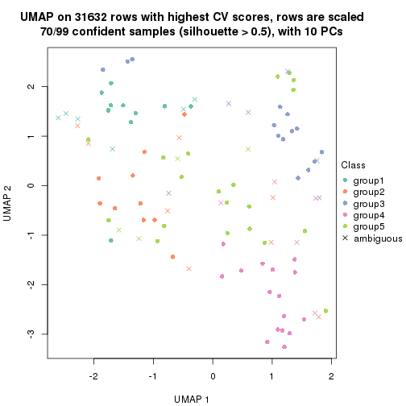
dimension_reduction(res, k = 6, method = "UMAP")
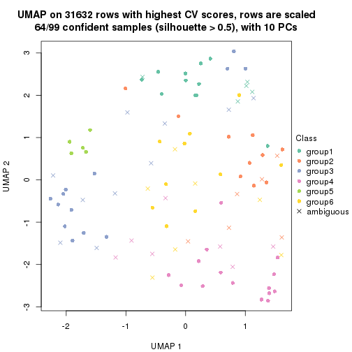
Following heatmap shows how subgroups are split when increasing k:
collect_classes(res)
Test correlation between subgroups and known annotations. If the known annotation is numeric, one-way ANOVA test is applied, and if the known annotation is discrete, chi-squared contingency table test is applied.
test_to_known_factors(res)
#> n disease.state(p) k
#> CV:pam 95 9.85e-08 2
#> CV:pam 84 5.28e-06 3
#> CV:pam 69 1.16e-10 4
#> CV:pam 70 7.75e-11 5
#> CV:pam 64 1.62e-19 6
If matrix rows can be associated to genes, consider to use GO_Enrichment(res,
...) to perform function enrichment for the signature genes.
The object with results only for a single top-value method and a single partition method can be extracted as:
res = res_list["CV", "mclust"]
# you can also extract it by
# res = res_list["CV:mclust"]
A summary of res and all the functions that can be applied to it:
res
#> A 'ConsensusPartition' object with k = 2, 3, 4, 5, 6.
#> On a matrix with 31632 rows and 99 columns.
#> Top rows (1000, 2000, 3000, 4000, 5000) are extracted by 'CV' method.
#> Subgroups are detected by 'mclust' method.
#> Performed in total 1250 partitions by row resampling.
#> Best k for subgroups seems to be 4.
#>
#> Following methods can be applied to this 'ConsensusPartition' object:
#> [1] "cola_report" "collect_classes" "collect_plots"
#> [4] "collect_stats" "colnames" "compare_signatures"
#> [7] "consensus_heatmap" "dimension_reduction" "functional_enrichment"
#> [10] "get_anno_col" "get_anno" "get_classes"
#> [13] "get_consensus" "get_matrix" "get_membership"
#> [16] "get_param" "get_signatures" "get_stats"
#> [19] "is_best_k" "is_stable_k" "membership_heatmap"
#> [22] "ncol" "nrow" "plot_ecdf"
#> [25] "rownames" "select_partition_number" "show"
#> [28] "suggest_best_k" "test_to_known_factors"
collect_plots() function collects all the plots made from res for all k (number of partitions)
into one single page to provide an easy and fast comparison between different k.
collect_plots(res)
The plots are:
k and the heatmap of
predicted classes for each k.k.k.k.All the plots in panels can be made by individual functions and they are plotted later in this section.
select_partition_number() produces several plots showing different
statistics for choosing “optimized” k. There are following statistics:
k;k, the area increased is defined as \(A_k - A_{k-1}\).The detailed explanations of these statistics can be found in the cola vignette.
Generally speaking, lower PAC score, higher mean silhouette score or higher
concordance corresponds to better partition. Rand index and Jaccard index
measure how similar the current partition is compared to partition with k-1.
If they are too similar, we won't accept k is better than k-1.
select_partition_number(res)
The numeric values for all these statistics can be obtained by get_stats().
get_stats(res)
#> k 1-PAC mean_silhouette concordance area_increased Rand Jaccard
#> 2 2 0.224 0.643 0.765 0.3777 0.514 0.514
#> 3 3 0.185 0.567 0.752 0.5027 0.771 0.601
#> 4 4 0.542 0.678 0.799 0.1941 0.907 0.778
#> 5 5 0.606 0.676 0.798 0.1339 0.835 0.548
#> 6 6 0.698 0.711 0.818 0.0487 0.940 0.751
suggest_best_k() suggests the best \(k\) based on these statistics. The rules are as follows:
NA.suggest_best_k(res)
#> [1] 4
Following shows the table of the partitions (You need to click the show/hide
code output link to see it). The membership matrix (columns with name p*)
is inferred by
clue::cl_consensus()
function with the SE method. Basically the value in the membership matrix
represents the probability to belong to a certain group. The finall class
label for an item is determined with the group with highest probability it
belongs to.
In get_classes() function, the entropy is calculated from the membership
matrix and the silhouette score is calculated from the consensus matrix.
cbind(get_classes(res, k = 2), get_membership(res, k = 2))
#> class entropy silhouette p1 p2
#> GSM1152309 2 0.4298 0.6785 0.088 0.912
#> GSM1152310 2 0.9686 0.6047 0.396 0.604
#> GSM1152311 2 0.6887 0.7451 0.184 0.816
#> GSM1152312 1 0.7056 0.7875 0.808 0.192
#> GSM1152313 2 0.8267 0.7168 0.260 0.740
#> GSM1152314 1 0.6712 0.8055 0.824 0.176
#> GSM1152315 2 0.6887 0.7451 0.184 0.816
#> GSM1152316 2 0.2778 0.6433 0.048 0.952
#> GSM1152317 2 0.0000 0.5982 0.000 1.000
#> GSM1152318 2 0.0000 0.5982 0.000 1.000
#> GSM1152319 2 0.6887 0.7451 0.184 0.816
#> GSM1152320 2 0.6887 0.7451 0.184 0.816
#> GSM1152321 2 0.0000 0.5982 0.000 1.000
#> GSM1152322 2 0.5408 0.7068 0.124 0.876
#> GSM1152323 2 0.7219 0.7422 0.200 0.800
#> GSM1152324 2 0.6887 0.7451 0.184 0.816
#> GSM1152325 2 0.0000 0.5982 0.000 1.000
#> GSM1152326 2 0.6887 0.7451 0.184 0.816
#> GSM1152327 2 0.0376 0.6023 0.004 0.996
#> GSM1152328 2 0.9922 0.1891 0.448 0.552
#> GSM1152329 2 0.9993 0.0358 0.484 0.516
#> GSM1152330 2 0.6887 0.7451 0.184 0.816
#> GSM1152331 2 0.6887 0.7451 0.184 0.816
#> GSM1152332 1 0.5294 0.8278 0.880 0.120
#> GSM1152333 2 1.0000 -0.0229 0.496 0.504
#> GSM1152334 2 0.9710 0.5999 0.400 0.600
#> GSM1152335 2 0.6887 0.7451 0.184 0.816
#> GSM1152336 2 0.6887 0.7451 0.184 0.816
#> GSM1152337 2 0.6887 0.7451 0.184 0.816
#> GSM1152338 2 0.6887 0.7451 0.184 0.816
#> GSM1152339 1 1.0000 0.0196 0.504 0.496
#> GSM1152340 2 0.7745 0.7194 0.228 0.772
#> GSM1152341 2 0.7674 0.7175 0.224 0.776
#> GSM1152342 2 0.9522 0.6272 0.372 0.628
#> GSM1152343 2 0.6887 0.7451 0.184 0.816
#> GSM1152344 2 0.6887 0.7451 0.184 0.816
#> GSM1152345 2 0.8016 0.7257 0.244 0.756
#> GSM1152346 2 0.0376 0.6023 0.004 0.996
#> GSM1152347 1 0.6712 0.8055 0.824 0.176
#> GSM1152348 2 0.9286 0.5202 0.344 0.656
#> GSM1152349 1 0.6712 0.8055 0.824 0.176
#> GSM1152355 1 0.5294 0.8277 0.880 0.120
#> GSM1152356 1 0.4562 0.8144 0.904 0.096
#> GSM1152357 1 0.6247 0.8174 0.844 0.156
#> GSM1152358 2 0.9710 0.5999 0.400 0.600
#> GSM1152359 1 0.8955 0.5376 0.688 0.312
#> GSM1152360 1 0.6887 0.7940 0.816 0.184
#> GSM1152361 1 0.9954 -0.3950 0.540 0.460
#> GSM1152362 2 0.6887 0.7451 0.184 0.816
#> GSM1152363 1 0.6973 0.7904 0.812 0.188
#> GSM1152364 1 0.5059 0.8266 0.888 0.112
#> GSM1152365 1 0.6048 0.8035 0.852 0.148
#> GSM1152366 1 0.4815 0.8218 0.896 0.104
#> GSM1152367 1 0.0376 0.7154 0.996 0.004
#> GSM1152368 1 0.0000 0.7114 1.000 0.000
#> GSM1152369 1 0.0376 0.7154 0.996 0.004
#> GSM1152370 1 0.4815 0.8218 0.896 0.104
#> GSM1152371 1 0.0376 0.7154 0.996 0.004
#> GSM1152372 1 0.6623 0.5769 0.828 0.172
#> GSM1152373 1 0.6531 0.8106 0.832 0.168
#> GSM1152374 2 0.9710 0.5999 0.400 0.600
#> GSM1152375 1 0.4939 0.8241 0.892 0.108
#> GSM1152376 1 0.5059 0.8266 0.888 0.112
#> GSM1152377 1 0.4939 0.8245 0.892 0.108
#> GSM1152378 1 0.5294 0.8278 0.880 0.120
#> GSM1152379 2 0.9983 0.4504 0.476 0.524
#> GSM1152380 1 0.5178 0.8274 0.884 0.116
#> GSM1152381 1 0.5059 0.8263 0.888 0.112
#> GSM1152382 1 0.5178 0.8274 0.884 0.116
#> GSM1152383 1 0.6623 0.8084 0.828 0.172
#> GSM1152384 1 0.5294 0.8278 0.880 0.120
#> GSM1152385 2 0.4815 0.6915 0.104 0.896
#> GSM1152386 2 0.1843 0.6099 0.028 0.972
#> GSM1152387 2 0.6887 0.7451 0.184 0.816
#> GSM1152289 2 0.7376 0.7399 0.208 0.792
#> GSM1152290 2 0.9710 0.5999 0.400 0.600
#> GSM1152291 2 0.9710 0.5999 0.400 0.600
#> GSM1152292 2 0.9896 0.5072 0.440 0.560
#> GSM1152293 2 0.9710 0.5999 0.400 0.600
#> GSM1152294 2 0.9710 0.5999 0.400 0.600
#> GSM1152295 1 0.8144 0.6780 0.748 0.252
#> GSM1152296 1 0.5059 0.8266 0.888 0.112
#> GSM1152297 2 0.9909 0.5244 0.444 0.556
#> GSM1152298 2 0.9710 0.5999 0.400 0.600
#> GSM1152299 2 0.9710 0.5999 0.400 0.600
#> GSM1152300 1 0.6712 0.8055 0.824 0.176
#> GSM1152301 1 0.6712 0.8055 0.824 0.176
#> GSM1152302 2 0.9850 0.5385 0.428 0.572
#> GSM1152303 2 0.9775 0.5762 0.412 0.588
#> GSM1152304 2 0.9710 0.5999 0.400 0.600
#> GSM1152305 2 0.9661 0.6095 0.392 0.608
#> GSM1152306 1 0.9552 0.2970 0.624 0.376
#> GSM1152307 1 0.6712 0.8055 0.824 0.176
#> GSM1152308 2 0.9754 0.5892 0.408 0.592
#> GSM1152350 2 0.9754 0.5952 0.408 0.592
#> GSM1152351 2 0.9732 0.5980 0.404 0.596
#> GSM1152352 2 0.9732 0.5980 0.404 0.596
#> GSM1152353 1 0.9833 -0.3147 0.576 0.424
#> GSM1152354 1 0.9552 -0.1641 0.624 0.376
cbind(get_classes(res, k = 3), get_membership(res, k = 3))
#> class entropy silhouette p1 p2 p3
#> GSM1152309 2 0.1289 0.81228 0.000 0.968 0.032
#> GSM1152310 2 0.6936 0.45415 0.284 0.672 0.044
#> GSM1152311 2 0.0424 0.81872 0.008 0.992 0.000
#> GSM1152312 1 0.6754 0.36285 0.556 0.432 0.012
#> GSM1152313 2 0.3764 0.77466 0.068 0.892 0.040
#> GSM1152314 1 0.6546 0.54570 0.756 0.096 0.148
#> GSM1152315 2 0.2313 0.81281 0.024 0.944 0.032
#> GSM1152316 2 0.1765 0.81204 0.004 0.956 0.040
#> GSM1152317 2 0.2959 0.78680 0.000 0.900 0.100
#> GSM1152318 2 0.2959 0.78680 0.000 0.900 0.100
#> GSM1152319 2 0.1315 0.81570 0.008 0.972 0.020
#> GSM1152320 2 0.2955 0.79535 0.008 0.912 0.080
#> GSM1152321 2 0.2959 0.78680 0.000 0.900 0.100
#> GSM1152322 2 0.1525 0.81227 0.004 0.964 0.032
#> GSM1152323 2 0.2313 0.80976 0.024 0.944 0.032
#> GSM1152324 2 0.0661 0.81877 0.008 0.988 0.004
#> GSM1152325 2 0.2959 0.78680 0.000 0.900 0.100
#> GSM1152326 2 0.2229 0.80943 0.012 0.944 0.044
#> GSM1152327 2 0.1765 0.81204 0.004 0.956 0.040
#> GSM1152328 2 0.5020 0.73836 0.108 0.836 0.056
#> GSM1152329 2 0.5500 0.71735 0.100 0.816 0.084
#> GSM1152330 2 0.3120 0.79386 0.012 0.908 0.080
#> GSM1152331 2 0.0424 0.81872 0.008 0.992 0.000
#> GSM1152332 1 0.6079 0.58991 0.748 0.216 0.036
#> GSM1152333 2 0.6372 0.65306 0.152 0.764 0.084
#> GSM1152334 2 0.7250 0.41634 0.288 0.656 0.056
#> GSM1152335 2 0.2866 0.79759 0.008 0.916 0.076
#> GSM1152336 2 0.1129 0.81906 0.020 0.976 0.004
#> GSM1152337 2 0.2173 0.81046 0.008 0.944 0.048
#> GSM1152338 2 0.2173 0.80850 0.008 0.944 0.048
#> GSM1152339 2 0.5576 0.72206 0.104 0.812 0.084
#> GSM1152340 2 0.3572 0.79986 0.060 0.900 0.040
#> GSM1152341 2 0.4007 0.77915 0.036 0.880 0.084
#> GSM1152342 2 0.5731 0.62282 0.228 0.752 0.020
#> GSM1152343 2 0.1905 0.81870 0.028 0.956 0.016
#> GSM1152344 2 0.1015 0.81872 0.008 0.980 0.012
#> GSM1152345 2 0.2550 0.80328 0.056 0.932 0.012
#> GSM1152346 2 0.3038 0.78589 0.000 0.896 0.104
#> GSM1152347 1 0.7605 0.07641 0.660 0.088 0.252
#> GSM1152348 2 0.5096 0.74027 0.080 0.836 0.084
#> GSM1152349 1 0.5122 0.29964 0.788 0.012 0.200
#> GSM1152355 1 0.4137 0.63585 0.872 0.096 0.032
#> GSM1152356 1 0.3295 0.63101 0.896 0.096 0.008
#> GSM1152357 1 0.4692 0.61903 0.820 0.168 0.012
#> GSM1152358 2 0.6297 0.58724 0.184 0.756 0.060
#> GSM1152359 1 0.7581 0.24477 0.496 0.464 0.040
#> GSM1152360 1 0.6066 0.56512 0.728 0.248 0.024
#> GSM1152361 2 0.8673 0.41711 0.160 0.588 0.252
#> GSM1152362 2 0.1711 0.81214 0.008 0.960 0.032
#> GSM1152363 1 0.6379 0.44854 0.624 0.368 0.008
#> GSM1152364 1 0.4295 0.63978 0.864 0.104 0.032
#> GSM1152365 1 0.6000 0.57854 0.760 0.200 0.040
#> GSM1152366 1 0.3845 0.64340 0.872 0.116 0.012
#> GSM1152367 1 0.7199 0.52760 0.704 0.092 0.204
#> GSM1152368 1 0.7474 0.52363 0.684 0.100 0.216
#> GSM1152369 1 0.7199 0.52760 0.704 0.092 0.204
#> GSM1152370 1 0.4446 0.64191 0.856 0.112 0.032
#> GSM1152371 1 0.8877 0.47920 0.572 0.184 0.244
#> GSM1152372 1 0.9055 0.44641 0.552 0.252 0.196
#> GSM1152373 1 0.6597 0.57336 0.756 0.120 0.124
#> GSM1152374 2 0.7459 0.19710 0.372 0.584 0.044
#> GSM1152375 1 0.5239 0.61570 0.808 0.160 0.032
#> GSM1152376 1 0.4519 0.64139 0.852 0.116 0.032
#> GSM1152377 1 0.3618 0.64069 0.884 0.104 0.012
#> GSM1152378 1 0.4062 0.61669 0.836 0.164 0.000
#> GSM1152379 2 0.7508 0.15931 0.416 0.544 0.040
#> GSM1152380 1 0.3682 0.64172 0.876 0.116 0.008
#> GSM1152381 1 0.3267 0.64200 0.884 0.116 0.000
#> GSM1152382 1 0.5901 0.59169 0.768 0.192 0.040
#> GSM1152383 1 0.5229 0.62668 0.828 0.104 0.068
#> GSM1152384 1 0.5115 0.58255 0.768 0.228 0.004
#> GSM1152385 2 0.1399 0.81523 0.004 0.968 0.028
#> GSM1152386 2 0.5961 0.67867 0.136 0.788 0.076
#> GSM1152387 2 0.1453 0.81522 0.008 0.968 0.024
#> GSM1152289 2 0.2982 0.79162 0.056 0.920 0.024
#> GSM1152290 3 0.8971 0.82200 0.336 0.144 0.520
#> GSM1152291 2 0.9986 -0.58264 0.308 0.352 0.340
#> GSM1152292 3 0.8924 0.82378 0.336 0.140 0.524
#> GSM1152293 3 0.9751 0.69894 0.308 0.252 0.440
#> GSM1152294 1 0.9868 -0.50056 0.384 0.256 0.360
#> GSM1152295 1 0.7885 0.48875 0.660 0.212 0.128
#> GSM1152296 1 0.3618 0.64069 0.884 0.104 0.012
#> GSM1152297 1 0.9758 -0.50501 0.412 0.232 0.356
#> GSM1152298 3 0.8924 0.82378 0.336 0.140 0.524
#> GSM1152299 3 0.9702 0.74265 0.328 0.232 0.440
#> GSM1152300 1 0.7884 0.00406 0.640 0.100 0.260
#> GSM1152301 1 0.5619 0.21181 0.744 0.012 0.244
#> GSM1152302 3 0.8924 0.82378 0.336 0.140 0.524
#> GSM1152303 3 0.8924 0.82378 0.336 0.140 0.524
#> GSM1152304 3 0.8924 0.82378 0.336 0.140 0.524
#> GSM1152305 2 0.5905 0.61243 0.184 0.772 0.044
#> GSM1152306 3 0.8886 0.80699 0.352 0.132 0.516
#> GSM1152307 1 0.7331 0.11034 0.672 0.072 0.256
#> GSM1152308 2 0.7424 0.17535 0.388 0.572 0.040
#> GSM1152350 1 0.9811 -0.51446 0.384 0.240 0.376
#> GSM1152351 1 0.9794 -0.51851 0.384 0.236 0.380
#> GSM1152352 1 0.9794 -0.51851 0.384 0.236 0.380
#> GSM1152353 3 0.9571 0.45661 0.304 0.224 0.472
#> GSM1152354 3 0.9523 0.32390 0.236 0.276 0.488
cbind(get_classes(res, k = 4), get_membership(res, k = 4))
#> class entropy silhouette p1 p2 p3 p4
#> GSM1152309 2 0.4182 0.7814 0.024 0.796 0.000 0.180
#> GSM1152310 2 0.7688 0.5813 0.156 0.584 0.040 0.220
#> GSM1152311 2 0.2317 0.8011 0.036 0.928 0.004 0.032
#> GSM1152312 1 0.5709 0.5413 0.704 0.236 0.016 0.044
#> GSM1152313 2 0.5740 0.7699 0.056 0.736 0.028 0.180
#> GSM1152314 1 0.6548 0.4952 0.608 0.000 0.276 0.116
#> GSM1152315 2 0.4964 0.7826 0.036 0.780 0.020 0.164
#> GSM1152316 2 0.4342 0.7599 0.012 0.784 0.008 0.196
#> GSM1152317 2 0.3444 0.7665 0.000 0.816 0.000 0.184
#> GSM1152318 2 0.3444 0.7665 0.000 0.816 0.000 0.184
#> GSM1152319 2 0.1786 0.7925 0.036 0.948 0.008 0.008
#> GSM1152320 2 0.1452 0.7911 0.036 0.956 0.000 0.008
#> GSM1152321 2 0.3444 0.7665 0.000 0.816 0.000 0.184
#> GSM1152322 2 0.4823 0.7807 0.032 0.776 0.012 0.180
#> GSM1152323 2 0.5138 0.7794 0.036 0.764 0.020 0.180
#> GSM1152324 2 0.4324 0.7945 0.036 0.816 0.008 0.140
#> GSM1152325 2 0.3444 0.7665 0.000 0.816 0.000 0.184
#> GSM1152326 2 0.1452 0.7911 0.036 0.956 0.000 0.008
#> GSM1152327 2 0.3892 0.7628 0.004 0.800 0.004 0.192
#> GSM1152328 2 0.2675 0.7575 0.100 0.892 0.000 0.008
#> GSM1152329 2 0.4679 0.5613 0.248 0.736 0.008 0.008
#> GSM1152330 2 0.1545 0.7900 0.040 0.952 0.000 0.008
#> GSM1152331 2 0.3571 0.8037 0.036 0.868 0.008 0.088
#> GSM1152332 1 0.2256 0.7273 0.924 0.056 0.000 0.020
#> GSM1152333 2 0.5257 0.0172 0.444 0.548 0.000 0.008
#> GSM1152334 2 0.7161 0.7063 0.092 0.664 0.084 0.160
#> GSM1152335 2 0.1452 0.7911 0.036 0.956 0.000 0.008
#> GSM1152336 2 0.3571 0.8036 0.036 0.868 0.008 0.088
#> GSM1152337 2 0.1305 0.7922 0.036 0.960 0.000 0.004
#> GSM1152338 2 0.1452 0.7911 0.036 0.956 0.000 0.008
#> GSM1152339 2 0.5532 0.0566 0.428 0.556 0.008 0.008
#> GSM1152340 2 0.3030 0.7767 0.076 0.892 0.004 0.028
#> GSM1152341 2 0.2673 0.7656 0.080 0.904 0.008 0.008
#> GSM1152342 2 0.5757 0.6351 0.180 0.732 0.020 0.068
#> GSM1152343 2 0.1639 0.7961 0.036 0.952 0.008 0.004
#> GSM1152344 2 0.2669 0.8032 0.032 0.912 0.004 0.052
#> GSM1152345 2 0.2896 0.7896 0.056 0.904 0.008 0.032
#> GSM1152346 2 0.3486 0.7644 0.000 0.812 0.000 0.188
#> GSM1152347 3 0.3821 0.7596 0.040 0.000 0.840 0.120
#> GSM1152348 2 0.3677 0.7015 0.148 0.836 0.008 0.008
#> GSM1152349 1 0.7043 0.0968 0.456 0.000 0.424 0.120
#> GSM1152355 1 0.2081 0.7474 0.916 0.000 0.084 0.000
#> GSM1152356 1 0.0779 0.7521 0.980 0.000 0.004 0.016
#> GSM1152357 1 0.1114 0.7556 0.972 0.004 0.016 0.008
#> GSM1152358 2 0.7350 0.6794 0.064 0.644 0.128 0.164
#> GSM1152359 1 0.5770 0.3563 0.580 0.392 0.008 0.020
#> GSM1152360 1 0.3710 0.6157 0.804 0.192 0.000 0.004
#> GSM1152361 2 0.6027 0.4883 0.092 0.664 0.000 0.244
#> GSM1152362 2 0.4901 0.7891 0.048 0.784 0.012 0.156
#> GSM1152363 1 0.4567 0.5517 0.740 0.244 0.000 0.016
#> GSM1152364 1 0.0921 0.7565 0.972 0.000 0.028 0.000
#> GSM1152365 1 0.4205 0.5843 0.804 0.172 0.008 0.016
#> GSM1152366 1 0.0188 0.7545 0.996 0.000 0.000 0.004
#> GSM1152367 1 0.4343 0.6437 0.732 0.000 0.004 0.264
#> GSM1152368 1 0.5343 0.5981 0.656 0.000 0.028 0.316
#> GSM1152369 1 0.4372 0.6426 0.728 0.000 0.004 0.268
#> GSM1152370 1 0.0336 0.7544 0.992 0.000 0.000 0.008
#> GSM1152371 1 0.6027 0.5931 0.656 0.068 0.004 0.272
#> GSM1152372 4 0.9901 0.0841 0.280 0.188 0.240 0.292
#> GSM1152373 1 0.6804 0.5250 0.616 0.008 0.252 0.124
#> GSM1152374 2 0.7957 0.4119 0.288 0.532 0.044 0.136
#> GSM1152375 1 0.0804 0.7531 0.980 0.008 0.000 0.012
#> GSM1152376 1 0.1733 0.7508 0.948 0.000 0.028 0.024
#> GSM1152377 1 0.0188 0.7545 0.996 0.000 0.000 0.004
#> GSM1152378 1 0.1109 0.7533 0.968 0.000 0.028 0.004
#> GSM1152379 2 0.5591 0.1133 0.484 0.500 0.008 0.008
#> GSM1152380 1 0.2300 0.7404 0.924 0.000 0.028 0.048
#> GSM1152381 1 0.0524 0.7557 0.988 0.004 0.000 0.008
#> GSM1152382 1 0.1545 0.7366 0.952 0.040 0.000 0.008
#> GSM1152383 1 0.4671 0.6449 0.752 0.000 0.220 0.028
#> GSM1152384 1 0.2522 0.7248 0.908 0.076 0.000 0.016
#> GSM1152385 2 0.4194 0.7854 0.028 0.800 0.000 0.172
#> GSM1152386 2 0.4468 0.7539 0.012 0.780 0.012 0.196
#> GSM1152387 2 0.3325 0.8049 0.044 0.884 0.008 0.064
#> GSM1152289 2 0.3304 0.7991 0.052 0.888 0.012 0.048
#> GSM1152290 3 0.0657 0.8081 0.012 0.004 0.984 0.000
#> GSM1152291 3 0.4424 0.7321 0.028 0.056 0.836 0.080
#> GSM1152292 3 0.0804 0.8072 0.012 0.000 0.980 0.008
#> GSM1152293 3 0.2040 0.7795 0.048 0.004 0.936 0.012
#> GSM1152294 4 0.7779 0.8062 0.224 0.028 0.192 0.556
#> GSM1152295 1 0.6966 0.3588 0.540 0.000 0.328 0.132
#> GSM1152296 1 0.0921 0.7565 0.972 0.000 0.028 0.000
#> GSM1152297 4 0.7642 0.7601 0.300 0.008 0.188 0.504
#> GSM1152298 3 0.0859 0.8060 0.008 0.004 0.980 0.008
#> GSM1152299 3 0.8444 -0.1821 0.032 0.284 0.444 0.240
#> GSM1152300 3 0.3907 0.7587 0.044 0.000 0.836 0.120
#> GSM1152301 3 0.6084 0.5563 0.204 0.000 0.676 0.120
#> GSM1152302 3 0.0804 0.8072 0.012 0.000 0.980 0.008
#> GSM1152303 3 0.0927 0.8065 0.016 0.000 0.976 0.008
#> GSM1152304 3 0.0859 0.8060 0.008 0.004 0.980 0.008
#> GSM1152305 2 0.3705 0.7861 0.064 0.872 0.040 0.024
#> GSM1152306 3 0.2654 0.6875 0.108 0.000 0.888 0.004
#> GSM1152307 3 0.3907 0.7587 0.044 0.000 0.836 0.120
#> GSM1152308 2 0.7714 0.3877 0.308 0.540 0.040 0.112
#> GSM1152350 4 0.7779 0.8062 0.224 0.028 0.192 0.556
#> GSM1152351 4 0.7844 0.7958 0.204 0.032 0.208 0.556
#> GSM1152352 4 0.7788 0.8017 0.212 0.028 0.204 0.556
#> GSM1152353 4 0.7115 0.7814 0.240 0.004 0.176 0.580
#> GSM1152354 4 0.5909 0.6155 0.092 0.016 0.168 0.724
cbind(get_classes(res, k = 5), get_membership(res, k = 5))
#> class entropy silhouette p1 p2 p3 p4 p5
#> GSM1152309 4 0.3109 0.802 0.000 0.200 0.000 0.800 0.000
#> GSM1152310 5 0.6113 0.691 0.104 0.016 0.008 0.252 0.620
#> GSM1152311 2 0.2561 0.704 0.000 0.856 0.000 0.144 0.000
#> GSM1152312 1 0.5557 0.601 0.688 0.064 0.032 0.212 0.004
#> GSM1152313 4 0.6480 0.348 0.020 0.244 0.116 0.604 0.016
#> GSM1152314 1 0.4896 0.544 0.696 0.000 0.252 0.032 0.020
#> GSM1152315 5 0.7307 -0.102 0.024 0.280 0.000 0.308 0.388
#> GSM1152316 4 0.1197 0.726 0.000 0.048 0.000 0.952 0.000
#> GSM1152317 4 0.3366 0.796 0.000 0.212 0.000 0.784 0.004
#> GSM1152318 4 0.3196 0.803 0.000 0.192 0.000 0.804 0.004
#> GSM1152319 2 0.0566 0.749 0.012 0.984 0.000 0.004 0.000
#> GSM1152320 2 0.0290 0.749 0.000 0.992 0.000 0.008 0.000
#> GSM1152321 4 0.3266 0.802 0.000 0.200 0.000 0.796 0.004
#> GSM1152322 4 0.3160 0.802 0.004 0.188 0.000 0.808 0.000
#> GSM1152323 4 0.2060 0.724 0.008 0.052 0.000 0.924 0.016
#> GSM1152324 2 0.3628 0.518 0.012 0.772 0.000 0.216 0.000
#> GSM1152325 4 0.3266 0.802 0.000 0.200 0.000 0.796 0.004
#> GSM1152326 2 0.2172 0.743 0.016 0.908 0.000 0.076 0.000
#> GSM1152327 4 0.1410 0.736 0.000 0.060 0.000 0.940 0.000
#> GSM1152328 2 0.2179 0.726 0.004 0.896 0.000 0.100 0.000
#> GSM1152329 2 0.1012 0.748 0.020 0.968 0.000 0.012 0.000
#> GSM1152330 2 0.2020 0.724 0.000 0.900 0.000 0.100 0.000
#> GSM1152331 4 0.4114 0.612 0.000 0.376 0.000 0.624 0.000
#> GSM1152332 1 0.4264 0.322 0.620 0.376 0.000 0.004 0.000
#> GSM1152333 2 0.0968 0.751 0.012 0.972 0.004 0.012 0.000
#> GSM1152334 2 0.8327 -0.135 0.072 0.328 0.016 0.292 0.292
#> GSM1152335 2 0.2020 0.724 0.000 0.900 0.000 0.100 0.000
#> GSM1152336 2 0.1670 0.734 0.012 0.936 0.000 0.052 0.000
#> GSM1152337 2 0.1270 0.733 0.000 0.948 0.000 0.052 0.000
#> GSM1152338 2 0.1270 0.733 0.000 0.948 0.000 0.052 0.000
#> GSM1152339 2 0.0771 0.746 0.020 0.976 0.000 0.004 0.000
#> GSM1152340 2 0.3810 0.708 0.036 0.788 0.000 0.176 0.000
#> GSM1152341 2 0.0865 0.745 0.024 0.972 0.000 0.004 0.000
#> GSM1152342 2 0.5248 0.667 0.116 0.736 0.000 0.040 0.108
#> GSM1152343 2 0.0566 0.749 0.012 0.984 0.000 0.004 0.000
#> GSM1152344 2 0.3561 0.597 0.000 0.740 0.000 0.260 0.000
#> GSM1152345 2 0.4682 0.578 0.024 0.620 0.000 0.356 0.000
#> GSM1152346 4 0.3196 0.803 0.000 0.192 0.000 0.804 0.004
#> GSM1152347 3 0.2374 0.789 0.052 0.000 0.912 0.020 0.016
#> GSM1152348 2 0.0865 0.745 0.024 0.972 0.000 0.004 0.000
#> GSM1152349 3 0.5349 -0.113 0.472 0.000 0.488 0.020 0.020
#> GSM1152355 1 0.1557 0.828 0.940 0.052 0.000 0.008 0.000
#> GSM1152356 1 0.1430 0.827 0.944 0.052 0.000 0.000 0.004
#> GSM1152357 1 0.2381 0.818 0.908 0.052 0.000 0.036 0.004
#> GSM1152358 4 0.6062 0.454 0.024 0.052 0.104 0.704 0.116
#> GSM1152359 2 0.4848 0.649 0.144 0.724 0.000 0.132 0.000
#> GSM1152360 1 0.4593 0.721 0.748 0.128 0.000 0.124 0.000
#> GSM1152361 2 0.5828 0.615 0.048 0.644 0.000 0.056 0.252
#> GSM1152362 2 0.4015 0.570 0.000 0.652 0.000 0.348 0.000
#> GSM1152363 1 0.5241 0.690 0.696 0.148 0.004 0.152 0.000
#> GSM1152364 1 0.1270 0.827 0.948 0.052 0.000 0.000 0.000
#> GSM1152365 2 0.4446 0.397 0.400 0.592 0.000 0.000 0.008
#> GSM1152366 1 0.1341 0.827 0.944 0.056 0.000 0.000 0.000
#> GSM1152367 1 0.5038 0.683 0.656 0.052 0.000 0.004 0.288
#> GSM1152368 1 0.4767 0.675 0.736 0.000 0.036 0.028 0.200
#> GSM1152369 1 0.5038 0.683 0.656 0.052 0.000 0.004 0.288
#> GSM1152370 1 0.1430 0.827 0.944 0.052 0.000 0.000 0.004
#> GSM1152371 1 0.6648 0.472 0.480 0.228 0.000 0.004 0.288
#> GSM1152372 3 0.7745 0.345 0.204 0.048 0.504 0.028 0.216
#> GSM1152373 1 0.5281 0.589 0.704 0.004 0.208 0.064 0.020
#> GSM1152374 2 0.7297 0.541 0.188 0.552 0.032 0.200 0.028
#> GSM1152375 1 0.1430 0.827 0.944 0.052 0.000 0.000 0.004
#> GSM1152376 1 0.1901 0.825 0.928 0.056 0.004 0.012 0.000
#> GSM1152377 1 0.1270 0.827 0.948 0.052 0.000 0.000 0.000
#> GSM1152378 1 0.1662 0.827 0.936 0.056 0.004 0.004 0.000
#> GSM1152379 2 0.4502 0.543 0.312 0.668 0.000 0.012 0.008
#> GSM1152380 1 0.0932 0.794 0.972 0.004 0.004 0.020 0.000
#> GSM1152381 1 0.1502 0.827 0.940 0.056 0.004 0.000 0.000
#> GSM1152382 1 0.3106 0.766 0.840 0.140 0.000 0.000 0.020
#> GSM1152383 1 0.4553 0.757 0.784 0.052 0.136 0.020 0.008
#> GSM1152384 1 0.2291 0.779 0.908 0.012 0.008 0.072 0.000
#> GSM1152385 4 0.3707 0.735 0.000 0.284 0.000 0.716 0.000
#> GSM1152386 4 0.1741 0.712 0.000 0.040 0.024 0.936 0.000
#> GSM1152387 2 0.4291 0.385 0.000 0.536 0.000 0.464 0.000
#> GSM1152289 2 0.4138 0.558 0.000 0.616 0.000 0.384 0.000
#> GSM1152290 3 0.1205 0.820 0.000 0.000 0.956 0.004 0.040
#> GSM1152291 3 0.2424 0.797 0.052 0.000 0.908 0.032 0.008
#> GSM1152292 3 0.1205 0.820 0.000 0.000 0.956 0.004 0.040
#> GSM1152293 3 0.2075 0.802 0.004 0.000 0.924 0.032 0.040
#> GSM1152294 5 0.5906 0.809 0.096 0.000 0.064 0.156 0.684
#> GSM1152295 3 0.3883 0.708 0.152 0.000 0.804 0.032 0.012
#> GSM1152296 1 0.1270 0.827 0.948 0.052 0.000 0.000 0.000
#> GSM1152297 5 0.5926 0.712 0.216 0.000 0.116 0.024 0.644
#> GSM1152298 3 0.1205 0.820 0.000 0.000 0.956 0.004 0.040
#> GSM1152299 4 0.4715 0.321 0.000 0.004 0.292 0.672 0.032
#> GSM1152300 3 0.2158 0.792 0.052 0.000 0.920 0.020 0.008
#> GSM1152301 3 0.5012 0.389 0.320 0.000 0.640 0.020 0.020
#> GSM1152302 3 0.1205 0.820 0.000 0.000 0.956 0.004 0.040
#> GSM1152303 3 0.1205 0.820 0.000 0.000 0.956 0.004 0.040
#> GSM1152304 3 0.1205 0.820 0.000 0.000 0.956 0.004 0.040
#> GSM1152305 2 0.6846 0.474 0.068 0.520 0.088 0.324 0.000
#> GSM1152306 3 0.2597 0.772 0.060 0.000 0.896 0.004 0.040
#> GSM1152307 3 0.0404 0.812 0.000 0.000 0.988 0.012 0.000
#> GSM1152308 2 0.6615 0.533 0.216 0.600 0.020 0.148 0.016
#> GSM1152350 5 0.5840 0.812 0.092 0.000 0.068 0.148 0.692
#> GSM1152351 5 0.5840 0.812 0.092 0.000 0.068 0.148 0.692
#> GSM1152352 5 0.5840 0.812 0.092 0.000 0.068 0.148 0.692
#> GSM1152353 5 0.5297 0.753 0.180 0.000 0.064 0.040 0.716
#> GSM1152354 5 0.2363 0.661 0.052 0.000 0.012 0.024 0.912
cbind(get_classes(res, k = 6), get_membership(res, k = 6))
#> class entropy silhouette p1 p2 p3 p4 p5 p6
#> GSM1152309 4 0.1610 0.870 0.000 0.084 0.000 0.916 0.000 0.000
#> GSM1152310 5 0.4738 0.659 0.072 0.008 0.004 0.232 0.684 0.000
#> GSM1152311 2 0.2300 0.794 0.000 0.856 0.000 0.144 0.000 0.000
#> GSM1152312 6 0.7114 0.438 0.176 0.184 0.000 0.068 0.044 0.528
#> GSM1152313 3 0.6976 0.180 0.000 0.232 0.444 0.264 0.048 0.012
#> GSM1152314 6 0.3626 0.653 0.028 0.008 0.188 0.000 0.000 0.776
#> GSM1152315 5 0.5878 0.116 0.000 0.204 0.000 0.356 0.440 0.000
#> GSM1152316 4 0.1657 0.802 0.000 0.012 0.000 0.936 0.040 0.012
#> GSM1152317 4 0.1910 0.860 0.000 0.108 0.000 0.892 0.000 0.000
#> GSM1152318 4 0.1610 0.870 0.000 0.084 0.000 0.916 0.000 0.000
#> GSM1152319 2 0.1327 0.810 0.000 0.936 0.000 0.064 0.000 0.000
#> GSM1152320 2 0.0458 0.808 0.000 0.984 0.000 0.016 0.000 0.000
#> GSM1152321 4 0.1765 0.866 0.000 0.096 0.000 0.904 0.000 0.000
#> GSM1152322 4 0.1714 0.868 0.000 0.092 0.000 0.908 0.000 0.000
#> GSM1152323 4 0.1649 0.806 0.000 0.016 0.000 0.936 0.040 0.008
#> GSM1152324 2 0.3161 0.688 0.000 0.776 0.000 0.216 0.008 0.000
#> GSM1152325 4 0.1714 0.868 0.000 0.092 0.000 0.908 0.000 0.000
#> GSM1152326 2 0.2199 0.805 0.000 0.892 0.000 0.088 0.020 0.000
#> GSM1152327 4 0.1511 0.804 0.000 0.012 0.000 0.940 0.044 0.004
#> GSM1152328 2 0.1349 0.807 0.000 0.940 0.000 0.056 0.000 0.004
#> GSM1152329 2 0.0405 0.803 0.000 0.988 0.000 0.008 0.000 0.004
#> GSM1152330 2 0.1588 0.804 0.000 0.924 0.000 0.072 0.000 0.004
#> GSM1152331 4 0.3126 0.719 0.000 0.248 0.000 0.752 0.000 0.000
#> GSM1152332 1 0.2805 0.627 0.812 0.184 0.000 0.000 0.000 0.004
#> GSM1152333 2 0.0806 0.812 0.000 0.972 0.000 0.020 0.008 0.000
#> GSM1152334 5 0.6771 0.482 0.004 0.116 0.084 0.248 0.536 0.012
#> GSM1152335 2 0.1588 0.804 0.000 0.924 0.000 0.072 0.000 0.004
#> GSM1152336 2 0.2664 0.758 0.000 0.816 0.000 0.184 0.000 0.000
#> GSM1152337 2 0.1387 0.811 0.000 0.932 0.000 0.068 0.000 0.000
#> GSM1152338 2 0.1643 0.807 0.000 0.924 0.000 0.068 0.008 0.000
#> GSM1152339 2 0.0603 0.808 0.000 0.980 0.000 0.016 0.004 0.000
#> GSM1152340 2 0.2968 0.774 0.000 0.816 0.000 0.168 0.000 0.016
#> GSM1152341 2 0.1124 0.811 0.000 0.956 0.000 0.036 0.008 0.000
#> GSM1152342 2 0.6359 0.223 0.116 0.508 0.000 0.068 0.308 0.000
#> GSM1152343 2 0.1082 0.813 0.000 0.956 0.000 0.040 0.004 0.000
#> GSM1152344 2 0.3175 0.733 0.000 0.744 0.000 0.256 0.000 0.000
#> GSM1152345 2 0.4489 0.699 0.000 0.680 0.000 0.264 0.044 0.012
#> GSM1152346 4 0.1556 0.870 0.000 0.080 0.000 0.920 0.000 0.000
#> GSM1152347 3 0.2092 0.748 0.000 0.000 0.876 0.000 0.000 0.124
#> GSM1152348 2 0.0891 0.810 0.000 0.968 0.000 0.024 0.008 0.000
#> GSM1152349 6 0.3619 0.565 0.004 0.000 0.316 0.000 0.000 0.680
#> GSM1152355 1 0.1870 0.823 0.928 0.012 0.012 0.004 0.000 0.044
#> GSM1152356 1 0.0363 0.841 0.988 0.000 0.000 0.000 0.012 0.000
#> GSM1152357 1 0.1167 0.833 0.960 0.000 0.000 0.008 0.020 0.012
#> GSM1152358 3 0.5317 0.465 0.000 0.012 0.624 0.280 0.068 0.016
#> GSM1152359 2 0.5759 0.426 0.328 0.544 0.000 0.096 0.032 0.000
#> GSM1152360 1 0.4478 0.716 0.784 0.088 0.000 0.028 0.040 0.060
#> GSM1152361 2 0.5032 0.667 0.036 0.716 0.000 0.008 0.096 0.144
#> GSM1152362 2 0.4029 0.701 0.000 0.688 0.000 0.288 0.012 0.012
#> GSM1152363 1 0.5407 0.630 0.700 0.120 0.000 0.032 0.028 0.120
#> GSM1152364 1 0.0260 0.840 0.992 0.000 0.000 0.000 0.000 0.008
#> GSM1152365 1 0.1219 0.812 0.948 0.048 0.000 0.000 0.004 0.000
#> GSM1152366 1 0.0000 0.842 1.000 0.000 0.000 0.000 0.000 0.000
#> GSM1152367 1 0.4657 0.660 0.720 0.004 0.000 0.008 0.120 0.148
#> GSM1152368 6 0.4094 0.551 0.180 0.000 0.000 0.000 0.080 0.740
#> GSM1152369 1 0.4657 0.660 0.720 0.004 0.000 0.008 0.120 0.148
#> GSM1152370 1 0.0000 0.842 1.000 0.000 0.000 0.000 0.000 0.000
#> GSM1152371 1 0.4657 0.660 0.720 0.004 0.000 0.008 0.120 0.148
#> GSM1152372 3 0.6922 0.387 0.124 0.016 0.564 0.012 0.096 0.188
#> GSM1152373 6 0.3696 0.653 0.056 0.060 0.052 0.004 0.000 0.828
#> GSM1152374 2 0.6202 0.639 0.164 0.632 0.044 0.116 0.044 0.000
#> GSM1152375 1 0.0146 0.841 0.996 0.000 0.000 0.000 0.004 0.000
#> GSM1152376 1 0.3634 0.307 0.644 0.000 0.000 0.000 0.000 0.356
#> GSM1152377 1 0.0000 0.842 1.000 0.000 0.000 0.000 0.000 0.000
#> GSM1152378 1 0.0000 0.842 1.000 0.000 0.000 0.000 0.000 0.000
#> GSM1152379 2 0.3619 0.584 0.316 0.680 0.000 0.000 0.004 0.000
#> GSM1152380 6 0.3756 0.354 0.400 0.000 0.000 0.000 0.000 0.600
#> GSM1152381 1 0.0777 0.835 0.972 0.004 0.000 0.000 0.000 0.024
#> GSM1152382 1 0.0748 0.838 0.976 0.016 0.000 0.000 0.004 0.004
#> GSM1152383 1 0.3544 0.701 0.800 0.000 0.120 0.000 0.000 0.080
#> GSM1152384 1 0.5277 0.418 0.604 0.060 0.000 0.032 0.000 0.304
#> GSM1152385 4 0.2664 0.794 0.000 0.184 0.000 0.816 0.000 0.000
#> GSM1152386 4 0.2730 0.734 0.000 0.004 0.004 0.856 0.124 0.012
#> GSM1152387 2 0.4456 0.694 0.000 0.672 0.000 0.276 0.044 0.008
#> GSM1152289 2 0.4416 0.700 0.000 0.680 0.000 0.268 0.044 0.008
#> GSM1152290 3 0.1204 0.818 0.000 0.000 0.944 0.000 0.056 0.000
#> GSM1152291 3 0.1411 0.802 0.000 0.000 0.936 0.004 0.000 0.060
#> GSM1152292 3 0.0622 0.818 0.000 0.000 0.980 0.000 0.012 0.008
#> GSM1152293 3 0.1312 0.817 0.004 0.000 0.956 0.008 0.020 0.012
#> GSM1152294 5 0.2952 0.766 0.068 0.000 0.016 0.052 0.864 0.000
#> GSM1152295 3 0.3250 0.680 0.012 0.000 0.788 0.004 0.000 0.196
#> GSM1152296 1 0.0000 0.842 1.000 0.000 0.000 0.000 0.000 0.000
#> GSM1152297 5 0.3991 0.671 0.156 0.000 0.088 0.000 0.756 0.000
#> GSM1152298 3 0.1219 0.820 0.000 0.000 0.948 0.000 0.048 0.004
#> GSM1152299 4 0.4647 0.545 0.000 0.000 0.184 0.704 0.104 0.008
#> GSM1152300 3 0.1814 0.766 0.000 0.000 0.900 0.000 0.000 0.100
#> GSM1152301 6 0.3601 0.567 0.004 0.000 0.312 0.000 0.000 0.684
#> GSM1152302 3 0.1265 0.820 0.000 0.000 0.948 0.000 0.044 0.008
#> GSM1152303 3 0.1333 0.820 0.000 0.000 0.944 0.000 0.048 0.008
#> GSM1152304 3 0.1010 0.822 0.000 0.000 0.960 0.000 0.036 0.004
#> GSM1152305 2 0.7169 0.331 0.000 0.408 0.268 0.260 0.044 0.020
#> GSM1152306 3 0.2074 0.798 0.036 0.000 0.912 0.000 0.048 0.004
#> GSM1152307 3 0.0458 0.812 0.000 0.000 0.984 0.000 0.000 0.016
#> GSM1152308 2 0.5510 0.637 0.212 0.656 0.008 0.072 0.052 0.000
#> GSM1152350 5 0.2803 0.766 0.064 0.000 0.012 0.052 0.872 0.000
#> GSM1152351 5 0.2831 0.766 0.064 0.000 0.016 0.048 0.872 0.000
#> GSM1152352 5 0.2831 0.766 0.064 0.000 0.016 0.048 0.872 0.000
#> GSM1152353 5 0.2765 0.693 0.132 0.000 0.004 0.000 0.848 0.016
#> GSM1152354 5 0.3120 0.621 0.040 0.000 0.000 0.008 0.840 0.112
Heatmaps for the consensus matrix. It visualizes the probability of two samples to be in a same group.
consensus_heatmap(res, k = 2)
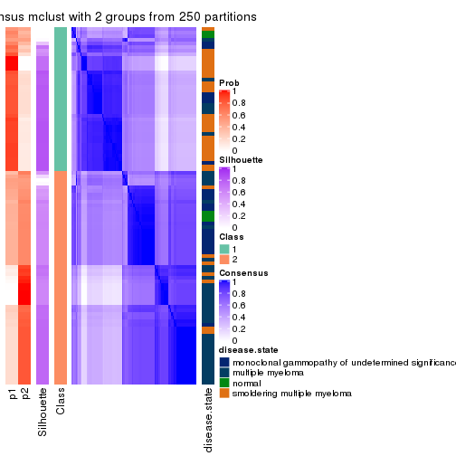
consensus_heatmap(res, k = 3)
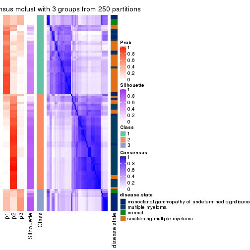
consensus_heatmap(res, k = 4)
consensus_heatmap(res, k = 5)
consensus_heatmap(res, k = 6)
Heatmaps for the membership of samples in all partitions to see how consistent they are:
membership_heatmap(res, k = 2)
membership_heatmap(res, k = 3)
membership_heatmap(res, k = 4)
membership_heatmap(res, k = 5)
membership_heatmap(res, k = 6)
As soon as we have had the classes for columns, we can look for signatures which are significantly different between classes which can be candidate marks for certain classes. Following are the heatmaps for signatures.
Signature heatmaps where rows are scaled:
get_signatures(res, k = 2)
get_signatures(res, k = 3)
get_signatures(res, k = 4)
get_signatures(res, k = 5)
get_signatures(res, k = 6)
Signature heatmaps where rows are not scaled:
get_signatures(res, k = 2, scale_rows = FALSE)
get_signatures(res, k = 3, scale_rows = FALSE)
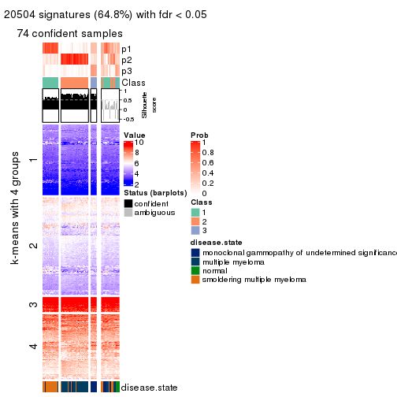
get_signatures(res, k = 4, scale_rows = FALSE)
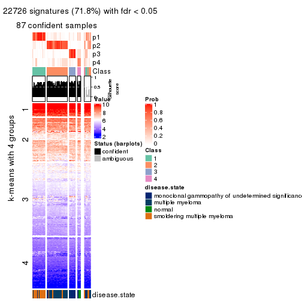
get_signatures(res, k = 5, scale_rows = FALSE)

get_signatures(res, k = 6, scale_rows = FALSE)
Compare the overlap of signatures from different k:
compare_signatures(res)
get_signature() returns a data frame invisibly. TO get the list of signatures, the function
call should be assigned to a variable explicitly. In following code, if plot argument is set
to FALSE, no heatmap is plotted while only the differential analysis is performed.
# code only for demonstration
tb = get_signature(res, k = ..., plot = FALSE)
An example of the output of tb is:
#> which_row fdr mean_1 mean_2 scaled_mean_1 scaled_mean_2 km
#> 1 38 0.042760348 8.373488 9.131774 -0.5533452 0.5164555 1
#> 2 40 0.018707592 7.106213 8.469186 -0.6173731 0.5762149 1
#> 3 55 0.019134737 10.221463 11.207825 -0.6159697 0.5749050 1
#> 4 59 0.006059896 5.921854 7.869574 -0.6899429 0.6439467 1
#> 5 60 0.018055526 8.928898 10.211722 -0.6204761 0.5791110 1
#> 6 98 0.009384629 15.714769 14.887706 0.6635654 -0.6193277 2
...
The columns in tb are:
which_row: row indices corresponding to the input matrix.fdr: FDR for the differential test. mean_x: The mean value in group x.scaled_mean_x: The mean value in group x after rows are scaled.km: Row groups if k-means clustering is applied to rows.UMAP plot which shows how samples are separated.
dimension_reduction(res, k = 2, method = "UMAP")
dimension_reduction(res, k = 3, method = "UMAP")
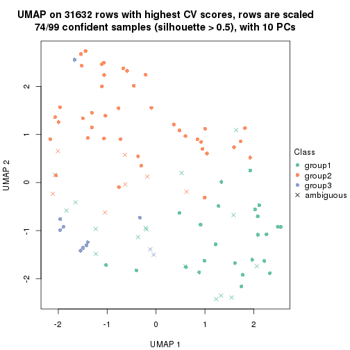
dimension_reduction(res, k = 4, method = "UMAP")
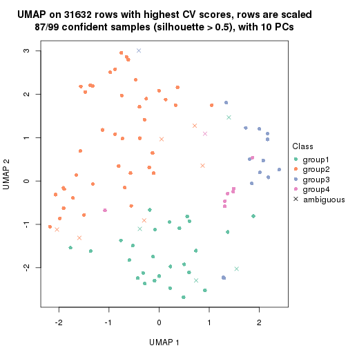
dimension_reduction(res, k = 5, method = "UMAP")
dimension_reduction(res, k = 6, method = "UMAP")
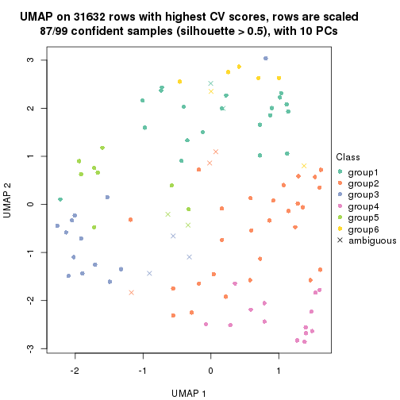
Following heatmap shows how subgroups are split when increasing k:
collect_classes(res)
Test correlation between subgroups and known annotations. If the known annotation is numeric, one-way ANOVA test is applied, and if the known annotation is discrete, chi-squared contingency table test is applied.
test_to_known_factors(res)
#> n disease.state(p) k
#> CV:mclust 90 7.70e-08 2
#> CV:mclust 74 1.33e-19 3
#> CV:mclust 87 2.14e-31 4
#> CV:mclust 86 1.37e-25 5
#> CV:mclust 87 1.88e-22 6
If matrix rows can be associated to genes, consider to use GO_Enrichment(res,
...) to perform function enrichment for the signature genes.
The object with results only for a single top-value method and a single partition method can be extracted as:
res = res_list["CV", "NMF"]
# you can also extract it by
# res = res_list["CV:NMF"]
A summary of res and all the functions that can be applied to it:
res
#> A 'ConsensusPartition' object with k = 2, 3, 4, 5, 6.
#> On a matrix with 31632 rows and 99 columns.
#> Top rows (1000, 2000, 3000, 4000, 5000) are extracted by 'CV' method.
#> Subgroups are detected by 'NMF' method.
#> Performed in total 1250 partitions by row resampling.
#> Best k for subgroups seems to be 2.
#>
#> Following methods can be applied to this 'ConsensusPartition' object:
#> [1] "cola_report" "collect_classes" "collect_plots"
#> [4] "collect_stats" "colnames" "compare_signatures"
#> [7] "consensus_heatmap" "dimension_reduction" "functional_enrichment"
#> [10] "get_anno_col" "get_anno" "get_classes"
#> [13] "get_consensus" "get_matrix" "get_membership"
#> [16] "get_param" "get_signatures" "get_stats"
#> [19] "is_best_k" "is_stable_k" "membership_heatmap"
#> [22] "ncol" "nrow" "plot_ecdf"
#> [25] "rownames" "select_partition_number" "show"
#> [28] "suggest_best_k" "test_to_known_factors"
collect_plots() function collects all the plots made from res for all k (number of partitions)
into one single page to provide an easy and fast comparison between different k.
collect_plots(res)
The plots are:
k and the heatmap of
predicted classes for each k.k.k.k.All the plots in panels can be made by individual functions and they are plotted later in this section.
select_partition_number() produces several plots showing different
statistics for choosing “optimized” k. There are following statistics:
k;k, the area increased is defined as \(A_k - A_{k-1}\).The detailed explanations of these statistics can be found in the cola vignette.
Generally speaking, lower PAC score, higher mean silhouette score or higher
concordance corresponds to better partition. Rand index and Jaccard index
measure how similar the current partition is compared to partition with k-1.
If they are too similar, we won't accept k is better than k-1.
select_partition_number(res)
The numeric values for all these statistics can be obtained by get_stats().
get_stats(res)
#> k 1-PAC mean_silhouette concordance area_increased Rand Jaccard
#> 2 2 0.763 0.896 0.952 0.4847 0.514 0.514
#> 3 3 0.702 0.821 0.921 0.3568 0.675 0.449
#> 4 4 0.596 0.622 0.809 0.1190 0.841 0.585
#> 5 5 0.617 0.619 0.797 0.0649 0.906 0.678
#> 6 6 0.604 0.441 0.689 0.0489 0.846 0.439
suggest_best_k() suggests the best \(k\) based on these statistics. The rules are as follows:
NA.suggest_best_k(res)
#> [1] 2
Following shows the table of the partitions (You need to click the show/hide
code output link to see it). The membership matrix (columns with name p*)
is inferred by
clue::cl_consensus()
function with the SE method. Basically the value in the membership matrix
represents the probability to belong to a certain group. The finall class
label for an item is determined with the group with highest probability it
belongs to.
In get_classes() function, the entropy is calculated from the membership
matrix and the silhouette score is calculated from the consensus matrix.
cbind(get_classes(res, k = 2), get_membership(res, k = 2))
#> class entropy silhouette p1 p2
#> GSM1152309 2 0.9922 0.206 0.448 0.552
#> GSM1152310 2 0.0376 0.934 0.004 0.996
#> GSM1152311 1 0.0376 0.956 0.996 0.004
#> GSM1152312 1 0.0000 0.956 1.000 0.000
#> GSM1152313 2 0.0938 0.931 0.012 0.988
#> GSM1152314 1 0.1414 0.945 0.980 0.020
#> GSM1152315 1 0.9866 0.242 0.568 0.432
#> GSM1152316 2 0.0000 0.935 0.000 1.000
#> GSM1152317 2 0.8909 0.581 0.308 0.692
#> GSM1152318 2 0.2043 0.919 0.032 0.968
#> GSM1152319 1 0.0376 0.956 0.996 0.004
#> GSM1152320 1 0.0376 0.956 0.996 0.004
#> GSM1152321 2 0.6973 0.773 0.188 0.812
#> GSM1152322 2 0.1184 0.929 0.016 0.984
#> GSM1152323 2 0.0000 0.935 0.000 1.000
#> GSM1152324 1 0.3274 0.919 0.940 0.060
#> GSM1152325 2 0.8555 0.634 0.280 0.720
#> GSM1152326 1 0.0376 0.956 0.996 0.004
#> GSM1152327 2 0.0938 0.931 0.012 0.988
#> GSM1152328 1 0.0000 0.956 1.000 0.000
#> GSM1152329 1 0.0376 0.956 0.996 0.004
#> GSM1152330 1 0.0376 0.956 0.996 0.004
#> GSM1152331 1 0.1184 0.950 0.984 0.016
#> GSM1152332 1 0.0000 0.956 1.000 0.000
#> GSM1152333 1 0.0000 0.956 1.000 0.000
#> GSM1152334 2 0.0000 0.935 0.000 1.000
#> GSM1152335 1 0.0376 0.956 0.996 0.004
#> GSM1152336 1 0.5294 0.860 0.880 0.120
#> GSM1152337 1 0.1184 0.950 0.984 0.016
#> GSM1152338 1 0.0376 0.956 0.996 0.004
#> GSM1152339 1 0.0376 0.956 0.996 0.004
#> GSM1152340 1 0.2423 0.934 0.960 0.040
#> GSM1152341 1 0.0376 0.956 0.996 0.004
#> GSM1152342 1 0.5408 0.856 0.876 0.124
#> GSM1152343 1 0.0672 0.954 0.992 0.008
#> GSM1152344 1 0.0376 0.956 0.996 0.004
#> GSM1152345 1 0.9580 0.390 0.620 0.380
#> GSM1152346 2 0.0000 0.935 0.000 1.000
#> GSM1152347 2 0.0672 0.934 0.008 0.992
#> GSM1152348 1 0.0376 0.956 0.996 0.004
#> GSM1152349 2 0.7815 0.714 0.232 0.768
#> GSM1152355 1 0.0000 0.956 1.000 0.000
#> GSM1152356 1 0.6343 0.800 0.840 0.160
#> GSM1152357 1 0.0000 0.956 1.000 0.000
#> GSM1152358 2 0.0000 0.935 0.000 1.000
#> GSM1152359 1 0.0376 0.956 0.996 0.004
#> GSM1152360 1 0.0000 0.956 1.000 0.000
#> GSM1152361 1 0.0000 0.956 1.000 0.000
#> GSM1152362 2 0.7950 0.700 0.240 0.760
#> GSM1152363 1 0.0000 0.956 1.000 0.000
#> GSM1152364 1 0.0000 0.956 1.000 0.000
#> GSM1152365 1 0.0000 0.956 1.000 0.000
#> GSM1152366 1 0.0000 0.956 1.000 0.000
#> GSM1152367 1 0.0000 0.956 1.000 0.000
#> GSM1152368 1 0.0672 0.953 0.992 0.008
#> GSM1152369 1 0.0000 0.956 1.000 0.000
#> GSM1152370 1 0.0000 0.956 1.000 0.000
#> GSM1152371 1 0.0000 0.956 1.000 0.000
#> GSM1152372 1 0.1633 0.943 0.976 0.024
#> GSM1152373 1 0.0000 0.956 1.000 0.000
#> GSM1152374 2 0.0376 0.935 0.004 0.996
#> GSM1152375 1 0.0000 0.956 1.000 0.000
#> GSM1152376 1 0.0000 0.956 1.000 0.000
#> GSM1152377 1 0.0000 0.956 1.000 0.000
#> GSM1152378 1 0.8909 0.548 0.692 0.308
#> GSM1152379 1 0.1843 0.943 0.972 0.028
#> GSM1152380 1 0.0000 0.956 1.000 0.000
#> GSM1152381 1 0.0000 0.956 1.000 0.000
#> GSM1152382 1 0.0000 0.956 1.000 0.000
#> GSM1152383 1 0.0938 0.951 0.988 0.012
#> GSM1152384 1 0.0000 0.956 1.000 0.000
#> GSM1152385 1 0.4022 0.901 0.920 0.080
#> GSM1152386 2 0.0000 0.935 0.000 1.000
#> GSM1152387 1 0.5519 0.851 0.872 0.128
#> GSM1152289 1 0.4431 0.890 0.908 0.092
#> GSM1152290 2 0.0376 0.935 0.004 0.996
#> GSM1152291 2 0.1633 0.925 0.024 0.976
#> GSM1152292 2 0.0376 0.935 0.004 0.996
#> GSM1152293 2 0.0376 0.935 0.004 0.996
#> GSM1152294 2 0.0000 0.935 0.000 1.000
#> GSM1152295 1 0.4022 0.897 0.920 0.080
#> GSM1152296 1 0.1184 0.948 0.984 0.016
#> GSM1152297 2 0.0376 0.935 0.004 0.996
#> GSM1152298 2 0.0000 0.935 0.000 1.000
#> GSM1152299 2 0.0000 0.935 0.000 1.000
#> GSM1152300 2 0.5178 0.851 0.116 0.884
#> GSM1152301 2 0.7056 0.767 0.192 0.808
#> GSM1152302 2 0.0376 0.935 0.004 0.996
#> GSM1152303 2 0.0376 0.935 0.004 0.996
#> GSM1152304 2 0.0376 0.935 0.004 0.996
#> GSM1152305 1 0.6623 0.787 0.828 0.172
#> GSM1152306 2 0.0376 0.935 0.004 0.996
#> GSM1152307 2 0.1633 0.926 0.024 0.976
#> GSM1152308 2 0.7139 0.760 0.196 0.804
#> GSM1152350 2 0.0000 0.935 0.000 1.000
#> GSM1152351 2 0.0000 0.935 0.000 1.000
#> GSM1152352 2 0.0000 0.935 0.000 1.000
#> GSM1152353 2 0.0000 0.935 0.000 1.000
#> GSM1152354 2 0.0000 0.935 0.000 1.000
cbind(get_classes(res, k = 3), get_membership(res, k = 3))
#> class entropy silhouette p1 p2 p3
#> GSM1152309 2 0.0000 0.875 0.000 1.000 0.000
#> GSM1152310 2 0.0000 0.875 0.000 1.000 0.000
#> GSM1152311 2 0.5706 0.525 0.320 0.680 0.000
#> GSM1152312 1 0.0000 0.942 1.000 0.000 0.000
#> GSM1152313 3 0.0000 0.910 0.000 0.000 1.000
#> GSM1152314 1 0.0000 0.942 1.000 0.000 0.000
#> GSM1152315 2 0.0000 0.875 0.000 1.000 0.000
#> GSM1152316 3 0.5926 0.407 0.000 0.356 0.644
#> GSM1152317 2 0.0000 0.875 0.000 1.000 0.000
#> GSM1152318 2 0.0237 0.874 0.000 0.996 0.004
#> GSM1152319 2 0.0000 0.875 0.000 1.000 0.000
#> GSM1152320 1 0.6079 0.354 0.612 0.388 0.000
#> GSM1152321 2 0.0000 0.875 0.000 1.000 0.000
#> GSM1152322 2 0.0000 0.875 0.000 1.000 0.000
#> GSM1152323 2 0.0424 0.872 0.000 0.992 0.008
#> GSM1152324 2 0.0000 0.875 0.000 1.000 0.000
#> GSM1152325 2 0.0000 0.875 0.000 1.000 0.000
#> GSM1152326 2 0.6274 0.172 0.456 0.544 0.000
#> GSM1152327 2 0.6225 0.262 0.000 0.568 0.432
#> GSM1152328 1 0.1163 0.929 0.972 0.028 0.000
#> GSM1152329 1 0.4654 0.741 0.792 0.208 0.000
#> GSM1152330 2 0.3412 0.798 0.124 0.876 0.000
#> GSM1152331 2 0.0000 0.875 0.000 1.000 0.000
#> GSM1152332 1 0.0592 0.937 0.988 0.012 0.000
#> GSM1152333 1 0.2165 0.903 0.936 0.064 0.000
#> GSM1152334 2 0.3551 0.786 0.000 0.868 0.132
#> GSM1152335 2 0.6225 0.244 0.432 0.568 0.000
#> GSM1152336 2 0.0000 0.875 0.000 1.000 0.000
#> GSM1152337 2 0.0000 0.875 0.000 1.000 0.000
#> GSM1152338 2 0.0424 0.873 0.008 0.992 0.000
#> GSM1152339 2 0.4121 0.760 0.168 0.832 0.000
#> GSM1152340 2 0.0424 0.873 0.008 0.992 0.000
#> GSM1152341 2 0.5988 0.419 0.368 0.632 0.000
#> GSM1152342 2 0.0000 0.875 0.000 1.000 0.000
#> GSM1152343 2 0.0000 0.875 0.000 1.000 0.000
#> GSM1152344 2 0.2537 0.833 0.080 0.920 0.000
#> GSM1152345 2 0.0000 0.875 0.000 1.000 0.000
#> GSM1152346 2 0.2066 0.839 0.000 0.940 0.060
#> GSM1152347 3 0.0592 0.905 0.012 0.000 0.988
#> GSM1152348 1 0.5178 0.659 0.744 0.256 0.000
#> GSM1152349 3 0.6154 0.338 0.408 0.000 0.592
#> GSM1152355 1 0.0000 0.942 1.000 0.000 0.000
#> GSM1152356 1 0.1163 0.924 0.972 0.000 0.028
#> GSM1152357 1 0.4121 0.797 0.832 0.168 0.000
#> GSM1152358 3 0.0000 0.910 0.000 0.000 1.000
#> GSM1152359 2 0.1289 0.862 0.032 0.968 0.000
#> GSM1152360 1 0.1289 0.926 0.968 0.032 0.000
#> GSM1152361 1 0.0237 0.941 0.996 0.004 0.000
#> GSM1152362 2 0.0000 0.875 0.000 1.000 0.000
#> GSM1152363 1 0.0000 0.942 1.000 0.000 0.000
#> GSM1152364 1 0.0000 0.942 1.000 0.000 0.000
#> GSM1152365 1 0.0237 0.941 0.996 0.004 0.000
#> GSM1152366 1 0.0000 0.942 1.000 0.000 0.000
#> GSM1152367 1 0.0000 0.942 1.000 0.000 0.000
#> GSM1152368 1 0.0000 0.942 1.000 0.000 0.000
#> GSM1152369 1 0.0000 0.942 1.000 0.000 0.000
#> GSM1152370 1 0.0000 0.942 1.000 0.000 0.000
#> GSM1152371 1 0.0892 0.933 0.980 0.020 0.000
#> GSM1152372 1 0.0237 0.940 0.996 0.000 0.004
#> GSM1152373 1 0.0000 0.942 1.000 0.000 0.000
#> GSM1152374 2 0.6062 0.390 0.000 0.616 0.384
#> GSM1152375 1 0.0000 0.942 1.000 0.000 0.000
#> GSM1152376 1 0.0000 0.942 1.000 0.000 0.000
#> GSM1152377 1 0.0000 0.942 1.000 0.000 0.000
#> GSM1152378 1 0.4121 0.776 0.832 0.000 0.168
#> GSM1152379 2 0.0237 0.874 0.004 0.996 0.000
#> GSM1152380 1 0.0000 0.942 1.000 0.000 0.000
#> GSM1152381 1 0.0000 0.942 1.000 0.000 0.000
#> GSM1152382 1 0.2959 0.871 0.900 0.100 0.000
#> GSM1152383 1 0.0000 0.942 1.000 0.000 0.000
#> GSM1152384 1 0.0000 0.942 1.000 0.000 0.000
#> GSM1152385 2 0.0000 0.875 0.000 1.000 0.000
#> GSM1152386 2 0.6140 0.327 0.000 0.596 0.404
#> GSM1152387 2 0.3272 0.815 0.104 0.892 0.004
#> GSM1152289 1 0.5965 0.784 0.792 0.108 0.100
#> GSM1152290 3 0.0000 0.910 0.000 0.000 1.000
#> GSM1152291 3 0.2796 0.856 0.092 0.000 0.908
#> GSM1152292 3 0.0000 0.910 0.000 0.000 1.000
#> GSM1152293 3 0.0000 0.910 0.000 0.000 1.000
#> GSM1152294 2 0.4555 0.708 0.000 0.800 0.200
#> GSM1152295 1 0.1163 0.925 0.972 0.000 0.028
#> GSM1152296 1 0.0000 0.942 1.000 0.000 0.000
#> GSM1152297 3 0.0000 0.910 0.000 0.000 1.000
#> GSM1152298 3 0.0000 0.910 0.000 0.000 1.000
#> GSM1152299 3 0.0000 0.910 0.000 0.000 1.000
#> GSM1152300 3 0.3192 0.841 0.112 0.000 0.888
#> GSM1152301 3 0.5016 0.686 0.240 0.000 0.760
#> GSM1152302 3 0.0000 0.910 0.000 0.000 1.000
#> GSM1152303 3 0.0000 0.910 0.000 0.000 1.000
#> GSM1152304 3 0.0000 0.910 0.000 0.000 1.000
#> GSM1152305 1 0.3879 0.797 0.848 0.000 0.152
#> GSM1152306 3 0.0000 0.910 0.000 0.000 1.000
#> GSM1152307 3 0.1411 0.893 0.036 0.000 0.964
#> GSM1152308 2 0.3038 0.813 0.000 0.896 0.104
#> GSM1152350 3 0.5497 0.566 0.000 0.292 0.708
#> GSM1152351 3 0.4346 0.740 0.000 0.184 0.816
#> GSM1152352 3 0.1964 0.872 0.000 0.056 0.944
#> GSM1152353 3 0.0000 0.910 0.000 0.000 1.000
#> GSM1152354 2 0.5529 0.550 0.000 0.704 0.296
cbind(get_classes(res, k = 4), get_membership(res, k = 4))
#> class entropy silhouette p1 p2 p3 p4
#> GSM1152309 2 0.0188 0.8001 0.000 0.996 0.000 0.004
#> GSM1152310 4 0.5756 0.5011 0.000 0.372 0.036 0.592
#> GSM1152311 2 0.3528 0.7040 0.192 0.808 0.000 0.000
#> GSM1152312 1 0.1109 0.7536 0.968 0.004 0.028 0.000
#> GSM1152313 3 0.1716 0.7849 0.064 0.000 0.936 0.000
#> GSM1152314 1 0.1211 0.7489 0.960 0.000 0.040 0.000
#> GSM1152315 4 0.4804 0.4836 0.000 0.384 0.000 0.616
#> GSM1152316 3 0.4999 -0.0478 0.000 0.492 0.508 0.000
#> GSM1152317 2 0.0000 0.8013 0.000 1.000 0.000 0.000
#> GSM1152318 2 0.0895 0.7917 0.000 0.976 0.020 0.004
#> GSM1152319 2 0.0376 0.8008 0.004 0.992 0.000 0.004
#> GSM1152320 2 0.5465 0.4306 0.392 0.588 0.000 0.020
#> GSM1152321 2 0.0188 0.8010 0.000 0.996 0.004 0.000
#> GSM1152322 2 0.0804 0.7939 0.000 0.980 0.012 0.008
#> GSM1152323 2 0.1610 0.7767 0.000 0.952 0.032 0.016
#> GSM1152324 2 0.0188 0.8001 0.000 0.996 0.000 0.004
#> GSM1152325 2 0.0188 0.8001 0.000 0.996 0.000 0.004
#> GSM1152326 1 0.6766 0.1912 0.520 0.380 0.000 0.100
#> GSM1152327 2 0.4790 0.3771 0.000 0.620 0.380 0.000
#> GSM1152328 1 0.2345 0.7212 0.900 0.100 0.000 0.000
#> GSM1152329 1 0.4697 0.3092 0.644 0.356 0.000 0.000
#> GSM1152330 2 0.3610 0.6973 0.200 0.800 0.000 0.000
#> GSM1152331 2 0.0000 0.8013 0.000 1.000 0.000 0.000
#> GSM1152332 1 0.1970 0.7674 0.932 0.008 0.000 0.060
#> GSM1152333 1 0.2081 0.7322 0.916 0.084 0.000 0.000
#> GSM1152334 4 0.7015 0.4217 0.000 0.396 0.120 0.484
#> GSM1152335 2 0.4222 0.6264 0.272 0.728 0.000 0.000
#> GSM1152336 2 0.0469 0.7974 0.000 0.988 0.000 0.012
#> GSM1152337 2 0.0000 0.8013 0.000 1.000 0.000 0.000
#> GSM1152338 2 0.0000 0.8013 0.000 1.000 0.000 0.000
#> GSM1152339 2 0.3907 0.6490 0.232 0.768 0.000 0.000
#> GSM1152340 2 0.1637 0.7808 0.060 0.940 0.000 0.000
#> GSM1152341 2 0.4882 0.5767 0.272 0.708 0.000 0.020
#> GSM1152342 4 0.5295 0.2520 0.008 0.488 0.000 0.504
#> GSM1152343 2 0.4936 0.3218 0.012 0.672 0.000 0.316
#> GSM1152344 2 0.3610 0.6977 0.200 0.800 0.000 0.000
#> GSM1152345 2 0.0376 0.8010 0.004 0.992 0.004 0.000
#> GSM1152346 2 0.1004 0.7906 0.000 0.972 0.024 0.004
#> GSM1152347 3 0.2149 0.7755 0.088 0.000 0.912 0.000
#> GSM1152348 1 0.3601 0.7285 0.860 0.084 0.000 0.056
#> GSM1152349 3 0.5039 0.3999 0.404 0.000 0.592 0.004
#> GSM1152355 1 0.4477 0.5381 0.688 0.000 0.000 0.312
#> GSM1152356 4 0.4040 0.2344 0.248 0.000 0.000 0.752
#> GSM1152357 4 0.6141 0.3587 0.312 0.072 0.000 0.616
#> GSM1152358 3 0.2216 0.7508 0.000 0.000 0.908 0.092
#> GSM1152359 2 0.7328 0.1130 0.200 0.524 0.000 0.276
#> GSM1152360 1 0.2973 0.7446 0.884 0.020 0.000 0.096
#> GSM1152361 1 0.4855 0.5945 0.600 0.000 0.000 0.400
#> GSM1152362 2 0.0000 0.8013 0.000 1.000 0.000 0.000
#> GSM1152363 1 0.0188 0.7607 0.996 0.004 0.000 0.000
#> GSM1152364 1 0.3123 0.7387 0.844 0.000 0.000 0.156
#> GSM1152365 1 0.4955 0.5367 0.556 0.000 0.000 0.444
#> GSM1152366 1 0.3837 0.7190 0.776 0.000 0.000 0.224
#> GSM1152367 1 0.4713 0.6316 0.640 0.000 0.000 0.360
#> GSM1152368 1 0.5010 0.6680 0.700 0.000 0.024 0.276
#> GSM1152369 1 0.4843 0.5998 0.604 0.000 0.000 0.396
#> GSM1152370 1 0.4790 0.6183 0.620 0.000 0.000 0.380
#> GSM1152371 4 0.4916 -0.3476 0.424 0.000 0.000 0.576
#> GSM1152372 1 0.6007 0.6006 0.604 0.000 0.056 0.340
#> GSM1152373 1 0.1109 0.7536 0.968 0.004 0.028 0.000
#> GSM1152374 3 0.6336 -0.0124 0.000 0.460 0.480 0.060
#> GSM1152375 1 0.4776 0.6208 0.624 0.000 0.000 0.376
#> GSM1152376 1 0.0707 0.7573 0.980 0.000 0.020 0.000
#> GSM1152377 1 0.1940 0.7661 0.924 0.000 0.000 0.076
#> GSM1152378 1 0.5085 0.4996 0.676 0.000 0.304 0.020
#> GSM1152379 2 0.5277 0.3810 0.028 0.668 0.000 0.304
#> GSM1152380 1 0.0524 0.7614 0.988 0.000 0.008 0.004
#> GSM1152381 1 0.1389 0.7671 0.952 0.000 0.000 0.048
#> GSM1152382 1 0.4679 0.6436 0.648 0.000 0.000 0.352
#> GSM1152383 1 0.0707 0.7646 0.980 0.000 0.000 0.020
#> GSM1152384 1 0.0524 0.7595 0.988 0.004 0.008 0.000
#> GSM1152385 2 0.0000 0.8013 0.000 1.000 0.000 0.000
#> GSM1152386 2 0.5649 0.2813 0.000 0.580 0.392 0.028
#> GSM1152387 2 0.3937 0.7046 0.188 0.800 0.012 0.000
#> GSM1152289 2 0.7180 0.3773 0.348 0.504 0.148 0.000
#> GSM1152290 3 0.0000 0.7969 0.000 0.000 1.000 0.000
#> GSM1152291 3 0.2345 0.7703 0.100 0.000 0.900 0.000
#> GSM1152292 3 0.1474 0.7817 0.000 0.000 0.948 0.052
#> GSM1152293 3 0.1059 0.7981 0.012 0.000 0.972 0.016
#> GSM1152294 4 0.5596 0.6255 0.000 0.236 0.068 0.696
#> GSM1152295 1 0.4522 0.3570 0.680 0.000 0.320 0.000
#> GSM1152296 1 0.3486 0.7359 0.812 0.000 0.000 0.188
#> GSM1152297 4 0.3726 0.5574 0.000 0.000 0.212 0.788
#> GSM1152298 3 0.0707 0.7937 0.000 0.000 0.980 0.020
#> GSM1152299 3 0.0707 0.7937 0.000 0.000 0.980 0.020
#> GSM1152300 3 0.2469 0.7637 0.108 0.000 0.892 0.000
#> GSM1152301 3 0.4655 0.5693 0.312 0.000 0.684 0.004
#> GSM1152302 3 0.1489 0.7881 0.004 0.000 0.952 0.044
#> GSM1152303 3 0.1978 0.7745 0.004 0.000 0.928 0.068
#> GSM1152304 3 0.0000 0.7969 0.000 0.000 1.000 0.000
#> GSM1152305 3 0.4981 0.2763 0.464 0.000 0.536 0.000
#> GSM1152306 3 0.1824 0.7810 0.004 0.000 0.936 0.060
#> GSM1152307 3 0.1488 0.7954 0.032 0.000 0.956 0.012
#> GSM1152308 4 0.2926 0.6436 0.000 0.056 0.048 0.896
#> GSM1152350 4 0.6357 0.6014 0.000 0.160 0.184 0.656
#> GSM1152351 4 0.6566 0.5556 0.000 0.140 0.236 0.624
#> GSM1152352 4 0.5252 0.4257 0.000 0.020 0.336 0.644
#> GSM1152353 4 0.1716 0.6153 0.000 0.000 0.064 0.936
#> GSM1152354 4 0.0188 0.5910 0.000 0.000 0.004 0.996
cbind(get_classes(res, k = 5), get_membership(res, k = 5))
#> class entropy silhouette p1 p2 p3 p4 p5
#> GSM1152309 4 0.1644 0.7570 0.004 0.008 0.000 0.940 0.048
#> GSM1152310 5 0.4221 0.6839 0.032 0.000 0.000 0.236 0.732
#> GSM1152311 4 0.3120 0.7384 0.116 0.012 0.000 0.856 0.016
#> GSM1152312 1 0.1956 0.7049 0.916 0.076 0.008 0.000 0.000
#> GSM1152313 3 0.2339 0.7946 0.100 0.000 0.892 0.004 0.004
#> GSM1152314 1 0.2300 0.7007 0.908 0.040 0.052 0.000 0.000
#> GSM1152315 5 0.4668 0.6152 0.028 0.008 0.000 0.276 0.688
#> GSM1152316 3 0.5041 -0.0754 0.004 0.008 0.524 0.452 0.012
#> GSM1152317 4 0.1143 0.7638 0.004 0.008 0.012 0.968 0.008
#> GSM1152318 4 0.2156 0.7504 0.004 0.012 0.048 0.924 0.012
#> GSM1152319 4 0.3197 0.7167 0.076 0.008 0.000 0.864 0.052
#> GSM1152320 4 0.5482 0.0622 0.448 0.008 0.000 0.500 0.044
#> GSM1152321 4 0.1412 0.7587 0.008 0.004 0.036 0.952 0.000
#> GSM1152322 4 0.1812 0.7592 0.004 0.012 0.008 0.940 0.036
#> GSM1152323 4 0.1668 0.7614 0.000 0.000 0.032 0.940 0.028
#> GSM1152324 4 0.1772 0.7586 0.020 0.008 0.000 0.940 0.032
#> GSM1152325 4 0.1093 0.7621 0.004 0.004 0.020 0.968 0.004
#> GSM1152326 1 0.6839 0.2508 0.488 0.088 0.000 0.364 0.060
#> GSM1152327 4 0.5076 0.3351 0.004 0.012 0.408 0.564 0.012
#> GSM1152328 1 0.3639 0.6911 0.824 0.076 0.000 0.100 0.000
#> GSM1152329 1 0.4304 0.5881 0.736 0.024 0.000 0.232 0.008
#> GSM1152330 4 0.2516 0.7396 0.140 0.000 0.000 0.860 0.000
#> GSM1152331 4 0.0290 0.7629 0.008 0.000 0.000 0.992 0.000
#> GSM1152332 1 0.5955 0.5381 0.620 0.284 0.004 0.052 0.040
#> GSM1152333 1 0.4103 0.6816 0.800 0.056 0.000 0.132 0.012
#> GSM1152334 5 0.3213 0.7640 0.060 0.004 0.032 0.028 0.876
#> GSM1152335 4 0.4620 0.4389 0.368 0.008 0.000 0.616 0.008
#> GSM1152336 4 0.2351 0.7453 0.016 0.000 0.000 0.896 0.088
#> GSM1152337 4 0.2369 0.7582 0.032 0.004 0.000 0.908 0.056
#> GSM1152338 4 0.1153 0.7612 0.004 0.008 0.000 0.964 0.024
#> GSM1152339 4 0.5042 0.0895 0.460 0.000 0.000 0.508 0.032
#> GSM1152340 4 0.2970 0.7060 0.168 0.004 0.000 0.828 0.000
#> GSM1152341 4 0.5698 0.2377 0.396 0.008 0.000 0.532 0.064
#> GSM1152342 5 0.5666 0.3040 0.060 0.008 0.000 0.408 0.524
#> GSM1152343 4 0.5692 0.3769 0.100 0.008 0.000 0.624 0.268
#> GSM1152344 4 0.3815 0.6683 0.220 0.012 0.000 0.764 0.004
#> GSM1152345 4 0.1173 0.7651 0.020 0.004 0.000 0.964 0.012
#> GSM1152346 4 0.3498 0.7146 0.004 0.012 0.088 0.852 0.044
#> GSM1152347 3 0.3662 0.6926 0.252 0.000 0.744 0.000 0.004
#> GSM1152348 1 0.5300 0.6013 0.700 0.040 0.000 0.212 0.048
#> GSM1152349 3 0.4264 0.4956 0.376 0.000 0.620 0.000 0.004
#> GSM1152355 1 0.4952 0.5545 0.688 0.052 0.008 0.000 0.252
#> GSM1152356 2 0.5268 0.4716 0.052 0.628 0.008 0.000 0.312
#> GSM1152357 5 0.5524 0.4939 0.272 0.028 0.008 0.036 0.656
#> GSM1152358 3 0.2561 0.7413 0.000 0.000 0.856 0.000 0.144
#> GSM1152359 1 0.5339 0.5250 0.660 0.000 0.000 0.224 0.116
#> GSM1152360 1 0.3333 0.6952 0.856 0.008 0.000 0.076 0.060
#> GSM1152361 2 0.0671 0.8430 0.016 0.980 0.000 0.000 0.004
#> GSM1152362 4 0.2444 0.7565 0.016 0.012 0.000 0.904 0.068
#> GSM1152363 1 0.1478 0.7112 0.936 0.064 0.000 0.000 0.000
#> GSM1152364 1 0.4090 0.6728 0.812 0.060 0.012 0.004 0.112
#> GSM1152365 2 0.3176 0.7687 0.080 0.856 0.000 0.000 0.064
#> GSM1152366 2 0.3480 0.5957 0.248 0.752 0.000 0.000 0.000
#> GSM1152367 2 0.0703 0.8451 0.024 0.976 0.000 0.000 0.000
#> GSM1152368 2 0.0703 0.8451 0.024 0.976 0.000 0.000 0.000
#> GSM1152369 2 0.0771 0.8446 0.020 0.976 0.000 0.000 0.004
#> GSM1152370 1 0.6296 0.0491 0.440 0.408 0.000 0.000 0.152
#> GSM1152371 2 0.1012 0.8384 0.020 0.968 0.000 0.000 0.012
#> GSM1152372 2 0.0703 0.8451 0.024 0.976 0.000 0.000 0.000
#> GSM1152373 1 0.2139 0.7060 0.916 0.052 0.032 0.000 0.000
#> GSM1152374 4 0.7246 0.2813 0.008 0.032 0.328 0.468 0.164
#> GSM1152375 2 0.1701 0.8343 0.048 0.936 0.000 0.000 0.016
#> GSM1152376 1 0.2388 0.6987 0.900 0.072 0.028 0.000 0.000
#> GSM1152377 1 0.3105 0.6853 0.864 0.088 0.004 0.000 0.044
#> GSM1152378 3 0.5278 0.5048 0.344 0.052 0.600 0.000 0.004
#> GSM1152379 4 0.5887 0.5130 0.064 0.052 0.000 0.652 0.232
#> GSM1152380 1 0.2069 0.7066 0.912 0.076 0.012 0.000 0.000
#> GSM1152381 1 0.4904 0.5076 0.644 0.316 0.004 0.000 0.036
#> GSM1152382 1 0.5881 0.2755 0.548 0.368 0.000 0.016 0.068
#> GSM1152383 1 0.2783 0.7019 0.896 0.036 0.032 0.000 0.036
#> GSM1152384 1 0.2286 0.6969 0.888 0.108 0.004 0.000 0.000
#> GSM1152385 4 0.0693 0.7642 0.000 0.012 0.000 0.980 0.008
#> GSM1152386 4 0.5097 0.3031 0.004 0.008 0.424 0.548 0.016
#> GSM1152387 4 0.5609 0.6172 0.224 0.044 0.048 0.680 0.004
#> GSM1152289 4 0.8056 0.3977 0.228 0.088 0.164 0.492 0.028
#> GSM1152290 3 0.0451 0.7937 0.008 0.000 0.988 0.000 0.004
#> GSM1152291 3 0.2377 0.7859 0.128 0.000 0.872 0.000 0.000
#> GSM1152292 3 0.3954 0.7110 0.036 0.000 0.772 0.000 0.192
#> GSM1152293 3 0.0865 0.7899 0.004 0.000 0.972 0.000 0.024
#> GSM1152294 5 0.3673 0.7663 0.008 0.004 0.084 0.064 0.840
#> GSM1152295 1 0.4794 0.2253 0.624 0.032 0.344 0.000 0.000
#> GSM1152296 2 0.5590 -0.0381 0.436 0.504 0.008 0.000 0.052
#> GSM1152297 5 0.5930 0.4955 0.000 0.196 0.208 0.000 0.596
#> GSM1152298 3 0.0727 0.7863 0.004 0.000 0.980 0.004 0.012
#> GSM1152299 3 0.1130 0.7803 0.004 0.004 0.968 0.012 0.012
#> GSM1152300 3 0.2561 0.7803 0.144 0.000 0.856 0.000 0.000
#> GSM1152301 3 0.4305 0.2412 0.488 0.000 0.512 0.000 0.000
#> GSM1152302 3 0.2344 0.7886 0.032 0.000 0.904 0.000 0.064
#> GSM1152303 3 0.2669 0.7709 0.020 0.000 0.876 0.000 0.104
#> GSM1152304 3 0.0324 0.7927 0.004 0.000 0.992 0.000 0.004
#> GSM1152305 1 0.5238 -0.2225 0.480 0.044 0.476 0.000 0.000
#> GSM1152306 3 0.3171 0.7216 0.008 0.000 0.816 0.000 0.176
#> GSM1152307 3 0.2540 0.7945 0.088 0.000 0.888 0.000 0.024
#> GSM1152308 2 0.4090 0.6944 0.004 0.788 0.008 0.032 0.168
#> GSM1152350 5 0.1493 0.7740 0.000 0.000 0.024 0.028 0.948
#> GSM1152351 5 0.2040 0.7719 0.000 0.008 0.032 0.032 0.928
#> GSM1152352 5 0.1430 0.7672 0.000 0.000 0.052 0.004 0.944
#> GSM1152353 5 0.1915 0.7569 0.000 0.040 0.032 0.000 0.928
#> GSM1152354 5 0.1732 0.7397 0.000 0.080 0.000 0.000 0.920
cbind(get_classes(res, k = 6), get_membership(res, k = 6))
#> class entropy silhouette p1 p2 p3 p4 p5 p6
#> GSM1152309 4 0.4165 0.49999 0.000 0.292 0.000 0.672 0.036 0.000
#> GSM1152310 2 0.5655 0.07799 0.000 0.504 0.000 0.172 0.324 0.000
#> GSM1152311 4 0.4962 0.07341 0.428 0.048 0.000 0.516 0.008 0.000
#> GSM1152312 1 0.1049 0.63412 0.960 0.008 0.000 0.032 0.000 0.000
#> GSM1152313 3 0.3116 0.70468 0.016 0.132 0.836 0.012 0.004 0.000
#> GSM1152314 1 0.1444 0.61210 0.928 0.072 0.000 0.000 0.000 0.000
#> GSM1152315 2 0.5301 0.25103 0.000 0.584 0.000 0.268 0.148 0.000
#> GSM1152316 3 0.5273 0.20388 0.000 0.068 0.552 0.364 0.016 0.000
#> GSM1152317 4 0.3874 0.50762 0.000 0.276 0.008 0.704 0.012 0.000
#> GSM1152318 4 0.3671 0.56205 0.000 0.168 0.040 0.784 0.008 0.000
#> GSM1152319 2 0.3961 0.17077 0.004 0.556 0.000 0.440 0.000 0.000
#> GSM1152320 2 0.5680 0.30338 0.164 0.476 0.000 0.360 0.000 0.000
#> GSM1152321 4 0.1862 0.60695 0.004 0.016 0.044 0.928 0.008 0.000
#> GSM1152322 4 0.2794 0.59500 0.000 0.144 0.004 0.840 0.012 0.000
#> GSM1152323 4 0.4759 0.54812 0.000 0.172 0.044 0.720 0.064 0.000
#> GSM1152324 4 0.3974 0.47489 0.000 0.296 0.000 0.680 0.024 0.000
#> GSM1152325 4 0.1371 0.61378 0.004 0.040 0.004 0.948 0.004 0.000
#> GSM1152326 2 0.5624 0.46798 0.160 0.564 0.000 0.268 0.000 0.008
#> GSM1152327 4 0.5158 0.34297 0.012 0.044 0.300 0.624 0.020 0.000
#> GSM1152328 1 0.2431 0.60907 0.860 0.008 0.000 0.132 0.000 0.000
#> GSM1152329 1 0.3229 0.58621 0.816 0.044 0.000 0.140 0.000 0.000
#> GSM1152330 4 0.4269 0.22393 0.412 0.020 0.000 0.568 0.000 0.000
#> GSM1152331 4 0.1649 0.60887 0.036 0.032 0.000 0.932 0.000 0.000
#> GSM1152332 1 0.5588 0.27948 0.608 0.244 0.000 0.028 0.000 0.120
#> GSM1152333 1 0.2776 0.61030 0.860 0.052 0.000 0.088 0.000 0.000
#> GSM1152334 5 0.3942 0.65711 0.004 0.252 0.020 0.004 0.720 0.000
#> GSM1152335 1 0.4394 0.29970 0.608 0.020 0.000 0.364 0.008 0.000
#> GSM1152336 4 0.4982 0.55843 0.040 0.108 0.000 0.708 0.144 0.000
#> GSM1152337 4 0.4923 0.57609 0.116 0.116 0.000 0.720 0.048 0.000
#> GSM1152338 4 0.4274 0.49865 0.000 0.288 0.000 0.676 0.024 0.012
#> GSM1152339 1 0.5046 0.37338 0.632 0.144 0.000 0.224 0.000 0.000
#> GSM1152340 1 0.4992 -0.13332 0.468 0.068 0.000 0.464 0.000 0.000
#> GSM1152341 2 0.6170 0.17874 0.224 0.420 0.000 0.348 0.008 0.000
#> GSM1152342 2 0.4874 0.26405 0.000 0.608 0.000 0.308 0.084 0.000
#> GSM1152343 2 0.4089 0.33057 0.004 0.632 0.000 0.352 0.012 0.000
#> GSM1152344 4 0.5201 0.00664 0.460 0.028 0.004 0.480 0.028 0.000
#> GSM1152345 4 0.4182 0.56440 0.156 0.052 0.028 0.764 0.000 0.000
#> GSM1152346 4 0.5130 0.51704 0.000 0.224 0.080 0.664 0.032 0.000
#> GSM1152347 3 0.4837 0.43796 0.288 0.088 0.624 0.000 0.000 0.000
#> GSM1152348 2 0.5232 0.40620 0.320 0.564 0.000 0.116 0.000 0.000
#> GSM1152349 3 0.6028 0.26456 0.252 0.276 0.468 0.000 0.004 0.000
#> GSM1152355 2 0.5452 0.30118 0.316 0.592 0.032 0.000 0.052 0.008
#> GSM1152356 2 0.5884 0.04942 0.020 0.548 0.020 0.000 0.080 0.332
#> GSM1152357 2 0.4891 0.37331 0.128 0.688 0.012 0.000 0.172 0.000
#> GSM1152358 3 0.3033 0.70261 0.004 0.136 0.836 0.004 0.020 0.000
#> GSM1152359 2 0.5804 0.41755 0.240 0.600 0.000 0.112 0.048 0.000
#> GSM1152360 1 0.5115 -0.17165 0.460 0.460 0.000 0.080 0.000 0.000
#> GSM1152361 6 0.0000 0.79659 0.000 0.000 0.000 0.000 0.000 1.000
#> GSM1152362 4 0.6656 0.21702 0.172 0.064 0.000 0.472 0.292 0.000
#> GSM1152363 1 0.0858 0.62432 0.968 0.028 0.000 0.000 0.000 0.004
#> GSM1152364 2 0.4774 0.25428 0.368 0.588 0.028 0.000 0.004 0.012
#> GSM1152365 6 0.4165 0.21120 0.008 0.420 0.000 0.000 0.004 0.568
#> GSM1152366 6 0.3136 0.61066 0.228 0.004 0.000 0.000 0.000 0.768
#> GSM1152367 6 0.0000 0.79659 0.000 0.000 0.000 0.000 0.000 1.000
#> GSM1152368 6 0.0146 0.79510 0.004 0.000 0.000 0.000 0.000 0.996
#> GSM1152369 6 0.0000 0.79659 0.000 0.000 0.000 0.000 0.000 1.000
#> GSM1152370 2 0.5802 0.35941 0.236 0.556 0.000 0.000 0.012 0.196
#> GSM1152371 6 0.0000 0.79659 0.000 0.000 0.000 0.000 0.000 1.000
#> GSM1152372 6 0.0146 0.79510 0.004 0.000 0.000 0.000 0.000 0.996
#> GSM1152373 1 0.1967 0.59915 0.904 0.084 0.012 0.000 0.000 0.000
#> GSM1152374 5 0.7753 0.07964 0.080 0.060 0.112 0.348 0.392 0.008
#> GSM1152375 6 0.0717 0.78457 0.000 0.016 0.000 0.000 0.008 0.976
#> GSM1152376 1 0.1806 0.63348 0.928 0.044 0.008 0.020 0.000 0.000
#> GSM1152377 2 0.4465 0.10049 0.472 0.504 0.020 0.000 0.000 0.004
#> GSM1152378 1 0.6425 -0.04246 0.428 0.136 0.400 0.004 0.008 0.024
#> GSM1152379 2 0.5780 -0.10615 0.000 0.448 0.000 0.436 0.088 0.028
#> GSM1152380 1 0.3201 0.53039 0.820 0.148 0.008 0.000 0.000 0.024
#> GSM1152381 1 0.5475 0.09115 0.536 0.316 0.000 0.000 0.000 0.148
#> GSM1152382 2 0.5376 0.45537 0.204 0.632 0.000 0.016 0.000 0.148
#> GSM1152383 2 0.4932 0.10660 0.452 0.492 0.052 0.000 0.000 0.004
#> GSM1152384 1 0.0692 0.62732 0.976 0.020 0.000 0.000 0.000 0.004
#> GSM1152385 4 0.2482 0.59092 0.004 0.148 0.000 0.848 0.000 0.000
#> GSM1152386 3 0.5944 -0.11091 0.000 0.136 0.432 0.416 0.016 0.000
#> GSM1152387 4 0.6225 0.03117 0.424 0.052 0.032 0.452 0.040 0.000
#> GSM1152289 1 0.6838 0.16824 0.496 0.048 0.052 0.316 0.088 0.000
#> GSM1152290 3 0.1049 0.70747 0.000 0.032 0.960 0.000 0.008 0.000
#> GSM1152291 3 0.3192 0.67633 0.100 0.032 0.848 0.008 0.012 0.000
#> GSM1152292 3 0.4726 0.23691 0.008 0.032 0.536 0.000 0.424 0.000
#> GSM1152293 3 0.2836 0.70886 0.000 0.060 0.872 0.016 0.052 0.000
#> GSM1152294 5 0.5151 0.57142 0.000 0.296 0.076 0.016 0.612 0.000
#> GSM1152295 1 0.3555 0.55349 0.780 0.044 0.176 0.000 0.000 0.000
#> GSM1152296 6 0.6863 -0.01639 0.312 0.272 0.020 0.000 0.016 0.380
#> GSM1152297 3 0.6855 0.17307 0.000 0.188 0.448 0.000 0.288 0.076
#> GSM1152298 3 0.0881 0.71011 0.000 0.008 0.972 0.012 0.008 0.000
#> GSM1152299 3 0.2122 0.70379 0.000 0.024 0.916 0.032 0.028 0.000
#> GSM1152300 3 0.3006 0.69464 0.064 0.092 0.844 0.000 0.000 0.000
#> GSM1152301 1 0.5480 -0.10881 0.444 0.124 0.432 0.000 0.000 0.000
#> GSM1152302 3 0.2979 0.70362 0.008 0.112 0.848 0.000 0.032 0.000
#> GSM1152303 3 0.3418 0.68696 0.004 0.084 0.820 0.000 0.092 0.000
#> GSM1152304 3 0.1364 0.70475 0.000 0.020 0.952 0.012 0.016 0.000
#> GSM1152305 1 0.4474 0.57077 0.764 0.032 0.136 0.056 0.012 0.000
#> GSM1152306 3 0.4892 0.15810 0.000 0.060 0.500 0.000 0.440 0.000
#> GSM1152307 3 0.3278 0.69271 0.020 0.136 0.824 0.000 0.020 0.000
#> GSM1152308 6 0.6832 0.31308 0.000 0.060 0.060 0.084 0.252 0.544
#> GSM1152350 5 0.1036 0.80156 0.000 0.008 0.024 0.004 0.964 0.000
#> GSM1152351 5 0.1230 0.79516 0.000 0.008 0.028 0.008 0.956 0.000
#> GSM1152352 5 0.0858 0.79875 0.000 0.004 0.028 0.000 0.968 0.000
#> GSM1152353 5 0.1861 0.79738 0.000 0.036 0.020 0.000 0.928 0.016
#> GSM1152354 5 0.1649 0.78993 0.000 0.036 0.000 0.000 0.932 0.032
Heatmaps for the consensus matrix. It visualizes the probability of two samples to be in a same group.
consensus_heatmap(res, k = 2)
consensus_heatmap(res, k = 3)
consensus_heatmap(res, k = 4)
consensus_heatmap(res, k = 5)
consensus_heatmap(res, k = 6)
Heatmaps for the membership of samples in all partitions to see how consistent they are:
membership_heatmap(res, k = 2)
membership_heatmap(res, k = 3)

membership_heatmap(res, k = 4)
membership_heatmap(res, k = 5)
membership_heatmap(res, k = 6)
As soon as we have had the classes for columns, we can look for signatures which are significantly different between classes which can be candidate marks for certain classes. Following are the heatmaps for signatures.
Signature heatmaps where rows are scaled:
get_signatures(res, k = 2)
get_signatures(res, k = 3)
get_signatures(res, k = 4)
get_signatures(res, k = 5)
get_signatures(res, k = 6)
Signature heatmaps where rows are not scaled:
get_signatures(res, k = 2, scale_rows = FALSE)
get_signatures(res, k = 3, scale_rows = FALSE)
get_signatures(res, k = 4, scale_rows = FALSE)
get_signatures(res, k = 5, scale_rows = FALSE)
get_signatures(res, k = 6, scale_rows = FALSE)

Compare the overlap of signatures from different k:
compare_signatures(res)
get_signature() returns a data frame invisibly. TO get the list of signatures, the function
call should be assigned to a variable explicitly. In following code, if plot argument is set
to FALSE, no heatmap is plotted while only the differential analysis is performed.
# code only for demonstration
tb = get_signature(res, k = ..., plot = FALSE)
An example of the output of tb is:
#> which_row fdr mean_1 mean_2 scaled_mean_1 scaled_mean_2 km
#> 1 38 0.042760348 8.373488 9.131774 -0.5533452 0.5164555 1
#> 2 40 0.018707592 7.106213 8.469186 -0.6173731 0.5762149 1
#> 3 55 0.019134737 10.221463 11.207825 -0.6159697 0.5749050 1
#> 4 59 0.006059896 5.921854 7.869574 -0.6899429 0.6439467 1
#> 5 60 0.018055526 8.928898 10.211722 -0.6204761 0.5791110 1
#> 6 98 0.009384629 15.714769 14.887706 0.6635654 -0.6193277 2
...
The columns in tb are:
which_row: row indices corresponding to the input matrix.fdr: FDR for the differential test. mean_x: The mean value in group x.scaled_mean_x: The mean value in group x after rows are scaled.km: Row groups if k-means clustering is applied to rows.UMAP plot which shows how samples are separated.
dimension_reduction(res, k = 2, method = "UMAP")
dimension_reduction(res, k = 3, method = "UMAP")
dimension_reduction(res, k = 4, method = "UMAP")
dimension_reduction(res, k = 5, method = "UMAP")

dimension_reduction(res, k = 6, method = "UMAP")
Following heatmap shows how subgroups are split when increasing k:
collect_classes(res)
Test correlation between subgroups and known annotations. If the known annotation is numeric, one-way ANOVA test is applied, and if the known annotation is discrete, chi-squared contingency table test is applied.
test_to_known_factors(res)
#> n disease.state(p) k
#> CV:NMF 96 6.66e-07 2
#> CV:NMF 90 2.64e-14 3
#> CV:NMF 77 6.55e-21 4
#> CV:NMF 77 2.05e-18 5
#> CV:NMF 51 5.04e-14 6
If matrix rows can be associated to genes, consider to use GO_Enrichment(res,
...) to perform function enrichment for the signature genes.
The object with results only for a single top-value method and a single partition method can be extracted as:
res = res_list["MAD", "hclust"]
# you can also extract it by
# res = res_list["MAD:hclust"]
A summary of res and all the functions that can be applied to it:
res
#> A 'ConsensusPartition' object with k = 2, 3, 4, 5, 6.
#> On a matrix with 31632 rows and 99 columns.
#> Top rows (1000, 2000, 3000, 4000, 5000) are extracted by 'MAD' method.
#> Subgroups are detected by 'hclust' method.
#> Performed in total 1250 partitions by row resampling.
#> Best k for subgroups seems to be 4.
#>
#> Following methods can be applied to this 'ConsensusPartition' object:
#> [1] "cola_report" "collect_classes" "collect_plots"
#> [4] "collect_stats" "colnames" "compare_signatures"
#> [7] "consensus_heatmap" "dimension_reduction" "functional_enrichment"
#> [10] "get_anno_col" "get_anno" "get_classes"
#> [13] "get_consensus" "get_matrix" "get_membership"
#> [16] "get_param" "get_signatures" "get_stats"
#> [19] "is_best_k" "is_stable_k" "membership_heatmap"
#> [22] "ncol" "nrow" "plot_ecdf"
#> [25] "rownames" "select_partition_number" "show"
#> [28] "suggest_best_k" "test_to_known_factors"
collect_plots() function collects all the plots made from res for all k (number of partitions)
into one single page to provide an easy and fast comparison between different k.
collect_plots(res)
The plots are:
k and the heatmap of
predicted classes for each k.k.k.k.All the plots in panels can be made by individual functions and they are plotted later in this section.
select_partition_number() produces several plots showing different
statistics for choosing “optimized” k. There are following statistics:
k;k, the area increased is defined as \(A_k - A_{k-1}\).The detailed explanations of these statistics can be found in the cola vignette.
Generally speaking, lower PAC score, higher mean silhouette score or higher
concordance corresponds to better partition. Rand index and Jaccard index
measure how similar the current partition is compared to partition with k-1.
If they are too similar, we won't accept k is better than k-1.
select_partition_number(res)
The numeric values for all these statistics can be obtained by get_stats().
get_stats(res)
#> k 1-PAC mean_silhouette concordance area_increased Rand Jaccard
#> 2 2 0.178 0.683 0.804 0.3393 0.651 0.651
#> 3 3 0.160 0.445 0.659 0.7291 0.629 0.454
#> 4 4 0.350 0.457 0.664 0.1846 0.841 0.580
#> 5 5 0.397 0.411 0.641 0.0726 0.890 0.662
#> 6 6 0.503 0.545 0.669 0.0506 0.890 0.621
suggest_best_k() suggests the best \(k\) based on these statistics. The rules are as follows:
NA.suggest_best_k(res)
#> [1] 4
Following shows the table of the partitions (You need to click the show/hide
code output link to see it). The membership matrix (columns with name p*)
is inferred by
clue::cl_consensus()
function with the SE method. Basically the value in the membership matrix
represents the probability to belong to a certain group. The finall class
label for an item is determined with the group with highest probability it
belongs to.
In get_classes() function, the entropy is calculated from the membership
matrix and the silhouette score is calculated from the consensus matrix.
cbind(get_classes(res, k = 2), get_membership(res, k = 2))
#> class entropy silhouette p1 p2
#> GSM1152309 2 0.5408 0.7399 0.124 0.876
#> GSM1152310 2 0.4431 0.8004 0.092 0.908
#> GSM1152311 2 0.2236 0.8018 0.036 0.964
#> GSM1152312 2 0.9775 -0.1383 0.412 0.588
#> GSM1152313 2 0.4939 0.7998 0.108 0.892
#> GSM1152314 1 0.6801 0.6926 0.820 0.180
#> GSM1152315 2 0.4690 0.7924 0.100 0.900
#> GSM1152316 2 0.5408 0.7393 0.124 0.876
#> GSM1152317 2 0.5629 0.7327 0.132 0.868
#> GSM1152318 2 0.5629 0.7327 0.132 0.868
#> GSM1152319 2 0.5294 0.7793 0.120 0.880
#> GSM1152320 2 0.1184 0.8044 0.016 0.984
#> GSM1152321 2 0.5629 0.7327 0.132 0.868
#> GSM1152322 2 0.5519 0.7417 0.128 0.872
#> GSM1152323 2 0.5519 0.7417 0.128 0.872
#> GSM1152324 2 0.5294 0.7560 0.120 0.880
#> GSM1152325 2 0.5629 0.7327 0.132 0.868
#> GSM1152326 2 0.1184 0.8048 0.016 0.984
#> GSM1152327 2 0.5519 0.7354 0.128 0.872
#> GSM1152328 2 0.2043 0.8054 0.032 0.968
#> GSM1152329 2 0.2236 0.8033 0.036 0.964
#> GSM1152330 2 0.2236 0.8033 0.036 0.964
#> GSM1152331 2 0.5629 0.7327 0.132 0.868
#> GSM1152332 1 0.9909 0.7112 0.556 0.444
#> GSM1152333 2 0.0938 0.8041 0.012 0.988
#> GSM1152334 2 0.3733 0.7959 0.072 0.928
#> GSM1152335 2 0.0938 0.8041 0.012 0.988
#> GSM1152336 2 0.1633 0.8050 0.024 0.976
#> GSM1152337 2 0.1633 0.8050 0.024 0.976
#> GSM1152338 2 0.3274 0.7849 0.060 0.940
#> GSM1152339 2 0.2423 0.8025 0.040 0.960
#> GSM1152340 2 0.3274 0.7959 0.060 0.940
#> GSM1152341 2 0.2603 0.8028 0.044 0.956
#> GSM1152342 2 0.4690 0.7979 0.100 0.900
#> GSM1152343 2 0.4815 0.7936 0.104 0.896
#> GSM1152344 2 0.2043 0.8033 0.032 0.968
#> GSM1152345 2 0.3733 0.7906 0.072 0.928
#> GSM1152346 2 0.5629 0.7327 0.132 0.868
#> GSM1152347 1 0.5737 0.6739 0.864 0.136
#> GSM1152348 2 0.2603 0.8028 0.044 0.956
#> GSM1152349 1 0.5629 0.6706 0.868 0.132
#> GSM1152355 1 0.9522 0.7983 0.628 0.372
#> GSM1152356 1 0.9580 0.7947 0.620 0.380
#> GSM1152357 2 0.8608 0.4277 0.284 0.716
#> GSM1152358 2 0.4939 0.8000 0.108 0.892
#> GSM1152359 2 0.8608 0.4277 0.284 0.716
#> GSM1152360 1 0.9866 0.7330 0.568 0.432
#> GSM1152361 2 0.4562 0.7773 0.096 0.904
#> GSM1152362 2 0.2603 0.8034 0.044 0.956
#> GSM1152363 1 0.9522 0.7962 0.628 0.372
#> GSM1152364 1 0.9522 0.7983 0.628 0.372
#> GSM1152365 1 0.9977 0.6425 0.528 0.472
#> GSM1152366 1 0.9608 0.7941 0.616 0.384
#> GSM1152367 2 0.6887 0.6747 0.184 0.816
#> GSM1152368 2 0.5178 0.7710 0.116 0.884
#> GSM1152369 2 0.6887 0.6747 0.184 0.816
#> GSM1152370 1 0.9944 0.6860 0.544 0.456
#> GSM1152371 2 0.6887 0.6747 0.184 0.816
#> GSM1152372 2 0.5178 0.7710 0.116 0.884
#> GSM1152373 1 0.6048 0.6764 0.852 0.148
#> GSM1152374 2 0.3879 0.7862 0.076 0.924
#> GSM1152375 2 0.9866 -0.2997 0.432 0.568
#> GSM1152376 1 0.8499 0.7463 0.724 0.276
#> GSM1152377 2 0.9909 -0.3480 0.444 0.556
#> GSM1152378 2 0.9866 -0.2997 0.432 0.568
#> GSM1152379 2 0.9580 -0.0413 0.380 0.620
#> GSM1152380 1 0.9580 0.7963 0.620 0.380
#> GSM1152381 1 0.9815 0.7503 0.580 0.420
#> GSM1152382 1 0.9988 0.6277 0.520 0.480
#> GSM1152383 1 0.9580 0.7947 0.620 0.380
#> GSM1152384 1 0.9522 0.7962 0.628 0.372
#> GSM1152385 2 0.5629 0.7327 0.132 0.868
#> GSM1152386 2 0.5629 0.7327 0.132 0.868
#> GSM1152387 2 0.2423 0.8017 0.040 0.960
#> GSM1152289 2 0.2423 0.8017 0.040 0.960
#> GSM1152290 2 0.5519 0.7857 0.128 0.872
#> GSM1152291 2 0.7745 0.6687 0.228 0.772
#> GSM1152292 2 0.5842 0.7786 0.140 0.860
#> GSM1152293 2 0.7815 0.6205 0.232 0.768
#> GSM1152294 2 0.4939 0.7962 0.108 0.892
#> GSM1152295 2 0.9993 -0.3432 0.484 0.516
#> GSM1152296 1 0.9552 0.7964 0.624 0.376
#> GSM1152297 2 0.7528 0.6486 0.216 0.784
#> GSM1152298 2 0.5519 0.7857 0.128 0.872
#> GSM1152299 2 0.6048 0.7817 0.148 0.852
#> GSM1152300 1 1.0000 0.2059 0.500 0.500
#> GSM1152301 1 0.5629 0.6706 0.868 0.132
#> GSM1152302 2 0.5842 0.7786 0.140 0.860
#> GSM1152303 2 0.6148 0.7636 0.152 0.848
#> GSM1152304 2 0.5519 0.7857 0.128 0.872
#> GSM1152305 2 0.4939 0.7661 0.108 0.892
#> GSM1152306 2 0.7950 0.6034 0.240 0.760
#> GSM1152307 2 0.7950 0.6034 0.240 0.760
#> GSM1152308 2 0.7602 0.6305 0.220 0.780
#> GSM1152350 2 0.4690 0.7877 0.100 0.900
#> GSM1152351 2 0.4690 0.7877 0.100 0.900
#> GSM1152352 2 0.4690 0.7877 0.100 0.900
#> GSM1152353 2 0.4690 0.7877 0.100 0.900
#> GSM1152354 2 0.4690 0.7877 0.100 0.900
cbind(get_classes(res, k = 3), get_membership(res, k = 3))
#> class entropy silhouette p1 p2 p3
#> GSM1152309 3 0.6260 0.13641 0.000 0.448 0.552
#> GSM1152310 3 0.5216 0.43783 0.000 0.260 0.740
#> GSM1152311 2 0.6062 0.43665 0.000 0.616 0.384
#> GSM1152312 1 0.9306 0.41594 0.480 0.348 0.172
#> GSM1152313 3 0.3983 0.53687 0.004 0.144 0.852
#> GSM1152314 1 0.3742 0.63163 0.892 0.036 0.072
#> GSM1152315 2 0.6495 0.18289 0.004 0.536 0.460
#> GSM1152316 3 0.6267 0.12836 0.000 0.452 0.548
#> GSM1152317 2 0.6505 0.02165 0.004 0.528 0.468
#> GSM1152318 2 0.6505 0.02165 0.004 0.528 0.468
#> GSM1152319 2 0.6189 0.36695 0.004 0.632 0.364
#> GSM1152320 2 0.5465 0.54896 0.000 0.712 0.288
#> GSM1152321 2 0.6505 0.02165 0.004 0.528 0.468
#> GSM1152322 3 0.6468 0.11605 0.004 0.444 0.552
#> GSM1152323 3 0.6345 0.19643 0.004 0.400 0.596
#> GSM1152324 2 0.6169 0.26032 0.004 0.636 0.360
#> GSM1152325 2 0.6513 -0.00162 0.004 0.520 0.476
#> GSM1152326 2 0.6148 0.51652 0.004 0.640 0.356
#> GSM1152327 2 0.6516 0.00117 0.004 0.516 0.480
#> GSM1152328 2 0.5502 0.54070 0.008 0.744 0.248
#> GSM1152329 2 0.5365 0.53464 0.004 0.744 0.252
#> GSM1152330 2 0.5404 0.53599 0.004 0.740 0.256
#> GSM1152331 2 0.6148 0.23676 0.004 0.640 0.356
#> GSM1152332 1 0.8889 0.72456 0.560 0.276 0.164
#> GSM1152333 2 0.5327 0.55624 0.000 0.728 0.272
#> GSM1152334 3 0.4555 0.47710 0.000 0.200 0.800
#> GSM1152335 2 0.5327 0.55624 0.000 0.728 0.272
#> GSM1152336 2 0.5785 0.52868 0.000 0.668 0.332
#> GSM1152337 2 0.5785 0.52868 0.000 0.668 0.332
#> GSM1152338 2 0.5465 0.49820 0.000 0.712 0.288
#> GSM1152339 2 0.5656 0.52331 0.008 0.728 0.264
#> GSM1152340 2 0.6407 0.50851 0.028 0.700 0.272
#> GSM1152341 2 0.5815 0.54542 0.004 0.692 0.304
#> GSM1152342 3 0.5397 0.40325 0.000 0.280 0.720
#> GSM1152343 2 0.6483 0.21506 0.004 0.544 0.452
#> GSM1152344 2 0.6205 0.52366 0.008 0.656 0.336
#> GSM1152345 2 0.6867 0.51156 0.040 0.672 0.288
#> GSM1152346 3 0.6476 0.13251 0.004 0.448 0.548
#> GSM1152347 1 0.1411 0.56236 0.964 0.000 0.036
#> GSM1152348 2 0.5815 0.54542 0.004 0.692 0.304
#> GSM1152349 1 0.1289 0.55939 0.968 0.000 0.032
#> GSM1152355 1 0.8321 0.75008 0.624 0.228 0.148
#> GSM1152356 1 0.8423 0.74712 0.616 0.228 0.156
#> GSM1152357 3 0.9441 0.04301 0.200 0.316 0.484
#> GSM1152358 3 0.2625 0.56749 0.000 0.084 0.916
#> GSM1152359 3 0.9441 0.04301 0.200 0.316 0.484
#> GSM1152360 1 0.8801 0.71315 0.560 0.292 0.148
#> GSM1152361 2 0.7192 0.21434 0.028 0.560 0.412
#> GSM1152362 2 0.6667 0.50634 0.016 0.616 0.368
#> GSM1152363 1 0.7368 0.73519 0.696 0.200 0.104
#> GSM1152364 1 0.8321 0.75008 0.624 0.228 0.148
#> GSM1152365 1 0.9228 0.67959 0.508 0.316 0.176
#> GSM1152366 1 0.7804 0.74736 0.664 0.216 0.120
#> GSM1152367 2 0.8738 0.08051 0.128 0.544 0.328
#> GSM1152368 2 0.7681 0.20399 0.048 0.540 0.412
#> GSM1152369 2 0.8738 0.08051 0.128 0.544 0.328
#> GSM1152370 1 0.8982 0.71425 0.548 0.284 0.168
#> GSM1152371 2 0.8738 0.08051 0.128 0.544 0.328
#> GSM1152372 2 0.7681 0.20399 0.048 0.540 0.412
#> GSM1152373 1 0.0424 0.57640 0.992 0.008 0.000
#> GSM1152374 2 0.7567 0.47771 0.048 0.576 0.376
#> GSM1152375 1 0.9866 0.49409 0.388 0.356 0.256
#> GSM1152376 1 0.5848 0.68619 0.796 0.124 0.080
#> GSM1152377 1 0.9841 0.51678 0.400 0.348 0.252
#> GSM1152378 1 0.9866 0.49409 0.388 0.356 0.256
#> GSM1152379 2 0.9913 -0.39778 0.336 0.388 0.276
#> GSM1152380 1 0.7762 0.74691 0.668 0.212 0.120
#> GSM1152381 1 0.8536 0.74375 0.596 0.260 0.144
#> GSM1152382 1 0.9174 0.67221 0.504 0.332 0.164
#> GSM1152383 1 0.8423 0.74712 0.616 0.228 0.156
#> GSM1152384 1 0.7368 0.73519 0.696 0.200 0.104
#> GSM1152385 2 0.6126 0.25256 0.004 0.644 0.352
#> GSM1152386 3 0.6476 0.13251 0.004 0.448 0.548
#> GSM1152387 2 0.6608 0.51608 0.016 0.628 0.356
#> GSM1152289 2 0.6629 0.51484 0.016 0.624 0.360
#> GSM1152290 3 0.1337 0.60438 0.016 0.012 0.972
#> GSM1152291 3 0.5473 0.52937 0.140 0.052 0.808
#> GSM1152292 3 0.1905 0.60522 0.028 0.016 0.956
#> GSM1152293 3 0.6621 0.49306 0.148 0.100 0.752
#> GSM1152294 3 0.4002 0.56321 0.000 0.160 0.840
#> GSM1152295 1 0.9738 0.11313 0.448 0.288 0.264
#> GSM1152296 1 0.8436 0.74822 0.616 0.224 0.160
#> GSM1152297 3 0.6597 0.50398 0.124 0.120 0.756
#> GSM1152298 3 0.1337 0.60438 0.016 0.012 0.972
#> GSM1152299 3 0.3851 0.52087 0.004 0.136 0.860
#> GSM1152300 3 0.6824 0.17944 0.408 0.016 0.576
#> GSM1152301 1 0.1289 0.55939 0.968 0.000 0.032
#> GSM1152302 3 0.1905 0.60522 0.028 0.016 0.956
#> GSM1152303 3 0.2879 0.60120 0.052 0.024 0.924
#> GSM1152304 3 0.1337 0.60438 0.016 0.012 0.972
#> GSM1152305 2 0.8243 0.46364 0.084 0.548 0.368
#> GSM1152306 3 0.6737 0.48801 0.156 0.100 0.744
#> GSM1152307 3 0.6737 0.48801 0.156 0.100 0.744
#> GSM1152308 3 0.6856 0.48621 0.132 0.128 0.740
#> GSM1152350 3 0.3551 0.55935 0.000 0.132 0.868
#> GSM1152351 3 0.3551 0.55935 0.000 0.132 0.868
#> GSM1152352 3 0.3551 0.55935 0.000 0.132 0.868
#> GSM1152353 3 0.3551 0.55935 0.000 0.132 0.868
#> GSM1152354 3 0.3551 0.55935 0.000 0.132 0.868
cbind(get_classes(res, k = 4), get_membership(res, k = 4))
#> class entropy silhouette p1 p2 p3 p4
#> GSM1152309 2 0.4897 0.3475 0.000 0.660 0.332 0.008
#> GSM1152310 3 0.5809 0.5842 0.000 0.216 0.692 0.092
#> GSM1152311 2 0.4212 0.5275 0.000 0.772 0.012 0.216
#> GSM1152312 1 0.7862 0.1276 0.480 0.176 0.016 0.328
#> GSM1152313 3 0.5279 0.6139 0.000 0.252 0.704 0.044
#> GSM1152314 1 0.2861 0.5691 0.888 0.000 0.016 0.096
#> GSM1152315 2 0.5929 0.3134 0.000 0.596 0.356 0.048
#> GSM1152316 2 0.4797 0.4644 0.000 0.720 0.260 0.020
#> GSM1152317 2 0.2973 0.5652 0.000 0.856 0.144 0.000
#> GSM1152318 2 0.2973 0.5652 0.000 0.856 0.144 0.000
#> GSM1152319 2 0.6386 0.4664 0.000 0.640 0.236 0.124
#> GSM1152320 2 0.4585 0.4089 0.000 0.668 0.000 0.332
#> GSM1152321 2 0.2973 0.5652 0.000 0.856 0.144 0.000
#> GSM1152322 2 0.4252 0.4583 0.000 0.744 0.252 0.004
#> GSM1152323 2 0.4877 0.3286 0.000 0.664 0.328 0.008
#> GSM1152324 2 0.3224 0.5709 0.000 0.864 0.120 0.016
#> GSM1152325 2 0.2973 0.5646 0.000 0.856 0.144 0.000
#> GSM1152326 2 0.5666 0.4607 0.004 0.660 0.040 0.296
#> GSM1152327 2 0.3836 0.5625 0.000 0.816 0.168 0.016
#> GSM1152328 4 0.5296 -0.0583 0.008 0.496 0.000 0.496
#> GSM1152329 4 0.5334 -0.0145 0.004 0.484 0.004 0.508
#> GSM1152330 2 0.5335 -0.0106 0.004 0.504 0.004 0.488
#> GSM1152331 2 0.0524 0.5765 0.000 0.988 0.008 0.004
#> GSM1152332 1 0.6025 0.5867 0.560 0.020 0.016 0.404
#> GSM1152333 2 0.4925 0.2148 0.000 0.572 0.000 0.428
#> GSM1152334 3 0.4920 0.6820 0.000 0.164 0.768 0.068
#> GSM1152335 2 0.4925 0.2148 0.000 0.572 0.000 0.428
#> GSM1152336 2 0.4908 0.4596 0.000 0.692 0.016 0.292
#> GSM1152337 2 0.4908 0.4596 0.000 0.692 0.016 0.292
#> GSM1152338 2 0.4452 0.4892 0.000 0.732 0.008 0.260
#> GSM1152339 4 0.5454 0.0446 0.008 0.468 0.004 0.520
#> GSM1152340 4 0.6140 0.1329 0.028 0.424 0.012 0.536
#> GSM1152341 2 0.5419 0.2924 0.008 0.600 0.008 0.384
#> GSM1152342 3 0.5963 0.5769 0.000 0.196 0.688 0.116
#> GSM1152343 2 0.5970 0.3287 0.000 0.600 0.348 0.052
#> GSM1152344 2 0.5303 0.4576 0.008 0.684 0.020 0.288
#> GSM1152345 4 0.6676 0.0778 0.040 0.428 0.024 0.508
#> GSM1152346 2 0.3975 0.4665 0.000 0.760 0.240 0.000
#> GSM1152347 1 0.1118 0.5113 0.964 0.000 0.036 0.000
#> GSM1152348 2 0.5419 0.2924 0.008 0.600 0.008 0.384
#> GSM1152349 1 0.1022 0.5104 0.968 0.000 0.032 0.000
#> GSM1152355 1 0.5695 0.6634 0.624 0.008 0.024 0.344
#> GSM1152356 1 0.6098 0.6587 0.608 0.008 0.044 0.340
#> GSM1152357 3 0.9115 0.1348 0.200 0.100 0.440 0.260
#> GSM1152358 3 0.4365 0.6765 0.000 0.188 0.784 0.028
#> GSM1152359 3 0.9115 0.1348 0.200 0.100 0.440 0.260
#> GSM1152360 1 0.6738 0.5915 0.564 0.052 0.024 0.360
#> GSM1152361 4 0.1022 0.3949 0.000 0.000 0.032 0.968
#> GSM1152362 2 0.7404 0.3130 0.016 0.512 0.116 0.356
#> GSM1152363 1 0.4737 0.6662 0.696 0.004 0.004 0.296
#> GSM1152364 1 0.5695 0.6634 0.624 0.008 0.024 0.344
#> GSM1152365 1 0.6696 0.5119 0.504 0.032 0.032 0.432
#> GSM1152366 1 0.4917 0.6719 0.664 0.004 0.004 0.328
#> GSM1152367 4 0.2675 0.3555 0.100 0.000 0.008 0.892
#> GSM1152368 4 0.1724 0.3836 0.020 0.000 0.032 0.948
#> GSM1152369 4 0.2675 0.3555 0.100 0.000 0.008 0.892
#> GSM1152370 1 0.6306 0.5704 0.548 0.028 0.020 0.404
#> GSM1152371 4 0.2675 0.3555 0.100 0.000 0.008 0.892
#> GSM1152372 4 0.1724 0.3836 0.020 0.000 0.032 0.948
#> GSM1152373 1 0.0336 0.5252 0.992 0.000 0.000 0.008
#> GSM1152374 2 0.8084 0.1877 0.048 0.460 0.116 0.376
#> GSM1152375 4 0.8293 -0.2060 0.384 0.080 0.092 0.444
#> GSM1152376 1 0.3933 0.6180 0.792 0.000 0.008 0.200
#> GSM1152377 4 0.8207 -0.2367 0.396 0.076 0.088 0.440
#> GSM1152378 4 0.8293 -0.2060 0.384 0.080 0.092 0.444
#> GSM1152379 4 0.8863 -0.0642 0.336 0.120 0.112 0.432
#> GSM1152380 1 0.4897 0.6725 0.668 0.004 0.004 0.324
#> GSM1152381 1 0.5311 0.6299 0.596 0.008 0.004 0.392
#> GSM1152382 1 0.6493 0.4741 0.500 0.052 0.008 0.440
#> GSM1152383 1 0.6098 0.6587 0.608 0.008 0.044 0.340
#> GSM1152384 1 0.4737 0.6662 0.696 0.004 0.004 0.296
#> GSM1152385 2 0.0927 0.5769 0.000 0.976 0.008 0.016
#> GSM1152386 2 0.3873 0.4732 0.000 0.772 0.228 0.000
#> GSM1152387 2 0.6991 0.3653 0.016 0.564 0.088 0.332
#> GSM1152289 2 0.7058 0.3555 0.016 0.556 0.092 0.336
#> GSM1152290 3 0.3174 0.7281 0.008 0.076 0.888 0.028
#> GSM1152291 3 0.7185 0.6455 0.136 0.100 0.668 0.096
#> GSM1152292 3 0.3562 0.7309 0.020 0.072 0.876 0.032
#> GSM1152293 3 0.6100 0.6712 0.132 0.036 0.732 0.100
#> GSM1152294 3 0.4139 0.7039 0.000 0.144 0.816 0.040
#> GSM1152295 1 0.9169 -0.0763 0.444 0.220 0.108 0.228
#> GSM1152296 1 0.6098 0.6598 0.608 0.008 0.044 0.340
#> GSM1152297 3 0.6262 0.6872 0.116 0.064 0.732 0.088
#> GSM1152298 3 0.3174 0.7281 0.008 0.076 0.888 0.028
#> GSM1152299 3 0.4898 0.6131 0.000 0.260 0.716 0.024
#> GSM1152300 3 0.7848 0.3957 0.404 0.076 0.460 0.060
#> GSM1152301 1 0.1022 0.5104 0.968 0.000 0.032 0.000
#> GSM1152302 3 0.3562 0.7309 0.020 0.072 0.876 0.032
#> GSM1152303 3 0.3793 0.7360 0.044 0.064 0.868 0.024
#> GSM1152304 3 0.3174 0.7281 0.008 0.076 0.888 0.028
#> GSM1152305 2 0.9012 0.0913 0.084 0.380 0.176 0.360
#> GSM1152306 3 0.6196 0.6641 0.140 0.036 0.724 0.100
#> GSM1152307 3 0.6196 0.6641 0.140 0.036 0.724 0.100
#> GSM1152308 3 0.6347 0.6795 0.120 0.056 0.724 0.100
#> GSM1152350 3 0.3354 0.7259 0.000 0.084 0.872 0.044
#> GSM1152351 3 0.3421 0.7251 0.000 0.088 0.868 0.044
#> GSM1152352 3 0.3421 0.7251 0.000 0.088 0.868 0.044
#> GSM1152353 3 0.3354 0.7259 0.000 0.084 0.872 0.044
#> GSM1152354 3 0.3354 0.7259 0.000 0.084 0.872 0.044
cbind(get_classes(res, k = 5), get_membership(res, k = 5))
#> class entropy silhouette p1 p2 p3 p4 p5
#> GSM1152309 2 0.700 0.2074 0.000 0.396 0.312 0.008 0.284
#> GSM1152310 5 0.444 0.2981 0.032 0.140 0.036 0.004 0.788
#> GSM1152311 2 0.422 0.5841 0.068 0.816 0.088 0.008 0.020
#> GSM1152312 1 0.689 0.3658 0.564 0.252 0.088 0.096 0.000
#> GSM1152313 3 0.733 0.3720 0.016 0.120 0.420 0.040 0.404
#> GSM1152314 1 0.549 0.5044 0.676 0.020 0.220 0.084 0.000
#> GSM1152315 5 0.614 -0.1811 0.004 0.436 0.112 0.000 0.448
#> GSM1152316 2 0.624 0.2981 0.000 0.472 0.380 0.000 0.148
#> GSM1152317 2 0.557 0.4134 0.000 0.548 0.388 0.008 0.056
#> GSM1152318 2 0.557 0.4134 0.000 0.548 0.388 0.008 0.056
#> GSM1152319 2 0.725 0.3888 0.072 0.528 0.112 0.008 0.280
#> GSM1152320 2 0.260 0.5708 0.120 0.872 0.004 0.000 0.004
#> GSM1152321 2 0.557 0.4134 0.000 0.548 0.388 0.008 0.056
#> GSM1152322 2 0.674 0.2932 0.000 0.436 0.364 0.008 0.192
#> GSM1152323 2 0.703 0.1643 0.000 0.372 0.324 0.008 0.296
#> GSM1152324 2 0.569 0.4863 0.000 0.652 0.196 0.008 0.144
#> GSM1152325 2 0.565 0.4178 0.000 0.556 0.372 0.008 0.064
#> GSM1152326 2 0.421 0.5825 0.104 0.816 0.028 0.008 0.044
#> GSM1152327 2 0.554 0.4133 0.000 0.552 0.372 0.000 0.076
#> GSM1152328 2 0.470 0.4781 0.232 0.712 0.004 0.052 0.000
#> GSM1152329 2 0.478 0.4668 0.244 0.700 0.000 0.052 0.004
#> GSM1152330 2 0.461 0.4829 0.228 0.720 0.000 0.048 0.004
#> GSM1152331 2 0.444 0.5241 0.000 0.724 0.240 0.008 0.028
#> GSM1152332 1 0.316 0.7040 0.864 0.092 0.000 0.032 0.012
#> GSM1152333 2 0.350 0.5375 0.200 0.788 0.000 0.012 0.000
#> GSM1152334 5 0.520 0.3027 0.028 0.104 0.076 0.028 0.764
#> GSM1152335 2 0.350 0.5375 0.200 0.788 0.000 0.012 0.000
#> GSM1152336 2 0.374 0.5808 0.108 0.836 0.028 0.004 0.024
#> GSM1152337 2 0.374 0.5808 0.108 0.836 0.028 0.004 0.024
#> GSM1152338 2 0.510 0.5750 0.084 0.776 0.076 0.032 0.032
#> GSM1152339 2 0.484 0.4459 0.264 0.684 0.000 0.048 0.004
#> GSM1152340 2 0.541 0.4134 0.300 0.636 0.004 0.048 0.012
#> GSM1152341 2 0.363 0.5398 0.180 0.800 0.004 0.004 0.012
#> GSM1152342 5 0.481 0.2981 0.052 0.140 0.036 0.004 0.768
#> GSM1152343 2 0.625 0.1524 0.008 0.448 0.112 0.000 0.432
#> GSM1152344 2 0.403 0.5835 0.104 0.824 0.044 0.008 0.020
#> GSM1152345 2 0.569 0.4394 0.276 0.644 0.020 0.048 0.012
#> GSM1152346 2 0.650 0.3017 0.000 0.456 0.388 0.008 0.148
#> GSM1152347 1 0.653 0.3809 0.556 0.008 0.304 0.112 0.020
#> GSM1152348 2 0.363 0.5398 0.180 0.800 0.004 0.004 0.012
#> GSM1152349 1 0.658 0.3747 0.548 0.008 0.308 0.116 0.020
#> GSM1152355 1 0.202 0.7240 0.928 0.048 0.004 0.004 0.016
#> GSM1152356 1 0.259 0.7228 0.904 0.048 0.004 0.008 0.036
#> GSM1152357 5 0.659 0.0665 0.392 0.108 0.004 0.020 0.476
#> GSM1152358 5 0.641 -0.4648 0.004 0.056 0.448 0.040 0.452
#> GSM1152359 5 0.659 0.0665 0.392 0.108 0.004 0.020 0.476
#> GSM1152360 1 0.307 0.7054 0.864 0.108 0.008 0.004 0.016
#> GSM1152361 4 0.403 0.7871 0.060 0.112 0.016 0.812 0.000
#> GSM1152362 2 0.660 0.5301 0.160 0.656 0.068 0.024 0.092
#> GSM1152363 1 0.251 0.6905 0.908 0.024 0.044 0.024 0.000
#> GSM1152364 1 0.202 0.7240 0.928 0.048 0.004 0.004 0.016
#> GSM1152365 1 0.422 0.6778 0.804 0.116 0.000 0.052 0.028
#> GSM1152366 1 0.160 0.7162 0.948 0.028 0.012 0.012 0.000
#> GSM1152367 4 0.577 0.7762 0.236 0.124 0.000 0.632 0.008
#> GSM1152368 4 0.384 0.7769 0.060 0.072 0.032 0.836 0.000
#> GSM1152369 4 0.577 0.7762 0.236 0.124 0.000 0.632 0.008
#> GSM1152370 1 0.345 0.6981 0.848 0.100 0.000 0.036 0.016
#> GSM1152371 4 0.577 0.7762 0.236 0.124 0.000 0.632 0.008
#> GSM1152372 4 0.384 0.7769 0.060 0.072 0.032 0.836 0.000
#> GSM1152373 1 0.592 0.4063 0.596 0.008 0.280 0.116 0.000
#> GSM1152374 2 0.716 0.4705 0.220 0.588 0.064 0.028 0.100
#> GSM1152375 1 0.601 0.5588 0.672 0.176 0.004 0.044 0.104
#> GSM1152376 1 0.463 0.6032 0.776 0.028 0.124 0.072 0.000
#> GSM1152377 1 0.585 0.5695 0.684 0.176 0.004 0.040 0.096
#> GSM1152378 1 0.601 0.5588 0.672 0.176 0.004 0.044 0.104
#> GSM1152379 1 0.655 0.4843 0.612 0.208 0.004 0.044 0.132
#> GSM1152380 1 0.148 0.7160 0.952 0.028 0.012 0.008 0.000
#> GSM1152381 1 0.241 0.7143 0.900 0.068 0.000 0.032 0.000
#> GSM1152382 1 0.396 0.6667 0.808 0.144 0.004 0.032 0.012
#> GSM1152383 1 0.259 0.7228 0.904 0.048 0.004 0.008 0.036
#> GSM1152384 1 0.251 0.6905 0.908 0.024 0.044 0.024 0.000
#> GSM1152385 2 0.454 0.5303 0.004 0.728 0.232 0.008 0.028
#> GSM1152386 2 0.655 0.3106 0.000 0.460 0.376 0.008 0.156
#> GSM1152387 2 0.616 0.5509 0.156 0.684 0.088 0.016 0.056
#> GSM1152289 2 0.612 0.5467 0.160 0.684 0.092 0.016 0.048
#> GSM1152290 5 0.577 -0.2768 0.004 0.008 0.420 0.056 0.512
#> GSM1152291 3 0.765 0.4112 0.064 0.032 0.496 0.104 0.304
#> GSM1152292 5 0.613 -0.2672 0.020 0.008 0.404 0.056 0.512
#> GSM1152293 5 0.686 0.1238 0.220 0.000 0.188 0.040 0.552
#> GSM1152294 5 0.266 0.3391 0.008 0.052 0.044 0.000 0.896
#> GSM1152295 2 0.899 -0.1130 0.308 0.320 0.224 0.084 0.064
#> GSM1152296 1 0.264 0.7225 0.904 0.048 0.008 0.008 0.032
#> GSM1152297 5 0.638 0.2108 0.200 0.012 0.120 0.032 0.636
#> GSM1152298 5 0.577 -0.2768 0.004 0.008 0.420 0.056 0.512
#> GSM1152299 3 0.582 0.3715 0.000 0.064 0.516 0.012 0.408
#> GSM1152300 3 0.821 0.2732 0.204 0.012 0.452 0.124 0.208
#> GSM1152301 1 0.658 0.3747 0.548 0.008 0.308 0.116 0.020
#> GSM1152302 5 0.613 -0.2672 0.020 0.008 0.404 0.056 0.512
#> GSM1152303 5 0.656 -0.2429 0.052 0.008 0.372 0.052 0.516
#> GSM1152304 5 0.576 -0.2633 0.004 0.008 0.412 0.056 0.520
#> GSM1152305 2 0.809 0.3920 0.180 0.532 0.144 0.064 0.080
#> GSM1152306 5 0.696 0.1034 0.228 0.000 0.196 0.040 0.536
#> GSM1152307 5 0.696 0.1034 0.228 0.000 0.196 0.040 0.536
#> GSM1152308 5 0.669 0.2045 0.208 0.020 0.120 0.036 0.616
#> GSM1152350 5 0.096 0.3701 0.008 0.016 0.004 0.000 0.972
#> GSM1152351 5 0.109 0.3694 0.008 0.016 0.008 0.000 0.968
#> GSM1152352 5 0.109 0.3694 0.008 0.016 0.008 0.000 0.968
#> GSM1152353 5 0.096 0.3701 0.008 0.016 0.004 0.000 0.972
#> GSM1152354 5 0.096 0.3701 0.008 0.016 0.004 0.000 0.972
cbind(get_classes(res, k = 6), get_membership(res, k = 6))
#> class entropy silhouette p1 p2 p3 p4 p5 p6
#> GSM1152309 4 0.609 0.7183 0.000 0.200 0.024 0.532 0.244 0.000
#> GSM1152310 5 0.400 0.5627 0.028 0.092 0.000 0.076 0.800 0.004
#> GSM1152311 2 0.381 0.3908 0.008 0.748 0.008 0.224 0.012 0.000
#> GSM1152312 1 0.692 0.2924 0.444 0.376 0.056 0.084 0.004 0.036
#> GSM1152313 3 0.599 0.5722 0.008 0.064 0.628 0.172 0.128 0.000
#> GSM1152314 1 0.639 0.4080 0.600 0.060 0.132 0.188 0.004 0.016
#> GSM1152315 5 0.621 -0.1161 0.000 0.268 0.004 0.276 0.448 0.004
#> GSM1152316 4 0.630 0.7813 0.000 0.268 0.088 0.544 0.100 0.000
#> GSM1152317 4 0.459 0.8252 0.000 0.308 0.032 0.644 0.016 0.000
#> GSM1152318 4 0.459 0.8252 0.000 0.308 0.032 0.644 0.016 0.000
#> GSM1152319 2 0.681 -0.1212 0.040 0.420 0.000 0.248 0.288 0.004
#> GSM1152320 2 0.208 0.6627 0.012 0.920 0.004 0.048 0.012 0.004
#> GSM1152321 4 0.459 0.8252 0.000 0.308 0.032 0.644 0.016 0.000
#> GSM1152322 4 0.560 0.8007 0.000 0.228 0.020 0.604 0.148 0.000
#> GSM1152323 4 0.608 0.6994 0.000 0.184 0.024 0.528 0.264 0.000
#> GSM1152324 2 0.593 -0.4505 0.000 0.440 0.008 0.408 0.140 0.004
#> GSM1152325 4 0.479 0.8189 0.000 0.320 0.028 0.624 0.028 0.000
#> GSM1152326 2 0.293 0.6427 0.008 0.868 0.008 0.076 0.040 0.000
#> GSM1152327 4 0.529 0.7886 0.000 0.328 0.060 0.584 0.028 0.000
#> GSM1152328 2 0.283 0.6904 0.104 0.860 0.000 0.012 0.000 0.024
#> GSM1152329 2 0.301 0.6820 0.116 0.848 0.000 0.008 0.004 0.024
#> GSM1152330 2 0.299 0.6920 0.104 0.856 0.000 0.008 0.008 0.024
#> GSM1152331 4 0.467 0.4838 0.000 0.484 0.004 0.484 0.024 0.004
#> GSM1152332 1 0.405 0.6889 0.740 0.220 0.008 0.000 0.012 0.020
#> GSM1152333 2 0.240 0.6991 0.084 0.888 0.000 0.020 0.008 0.000
#> GSM1152334 5 0.526 0.4835 0.024 0.080 0.160 0.032 0.704 0.000
#> GSM1152335 2 0.240 0.6991 0.084 0.888 0.000 0.020 0.008 0.000
#> GSM1152336 2 0.315 0.6271 0.012 0.856 0.004 0.088 0.036 0.004
#> GSM1152337 2 0.315 0.6271 0.012 0.856 0.004 0.088 0.036 0.004
#> GSM1152338 2 0.453 0.5062 0.020 0.752 0.004 0.168 0.036 0.020
#> GSM1152339 2 0.311 0.6614 0.136 0.832 0.000 0.004 0.004 0.024
#> GSM1152340 2 0.370 0.6162 0.176 0.784 0.008 0.000 0.008 0.024
#> GSM1152341 2 0.320 0.6861 0.072 0.860 0.004 0.036 0.024 0.004
#> GSM1152342 5 0.414 0.5619 0.044 0.104 0.000 0.056 0.792 0.004
#> GSM1152343 5 0.625 -0.1182 0.000 0.292 0.004 0.268 0.432 0.004
#> GSM1152344 2 0.281 0.6346 0.012 0.872 0.020 0.088 0.008 0.000
#> GSM1152345 2 0.380 0.6504 0.152 0.792 0.032 0.000 0.004 0.020
#> GSM1152346 4 0.559 0.8191 0.000 0.232 0.044 0.624 0.100 0.000
#> GSM1152347 1 0.641 0.2514 0.524 0.004 0.176 0.260 0.004 0.032
#> GSM1152348 2 0.320 0.6861 0.072 0.860 0.004 0.036 0.024 0.004
#> GSM1152349 1 0.629 0.2449 0.524 0.000 0.172 0.268 0.004 0.032
#> GSM1152355 1 0.341 0.6979 0.820 0.144 0.008 0.008 0.012 0.008
#> GSM1152356 1 0.392 0.6950 0.800 0.140 0.016 0.016 0.020 0.008
#> GSM1152357 5 0.633 0.1628 0.316 0.176 0.004 0.008 0.484 0.012
#> GSM1152358 3 0.503 0.6356 0.000 0.016 0.680 0.148 0.156 0.000
#> GSM1152359 5 0.633 0.1628 0.316 0.176 0.004 0.008 0.484 0.012
#> GSM1152360 1 0.401 0.6883 0.756 0.204 0.008 0.008 0.016 0.008
#> GSM1152361 6 0.159 0.7893 0.000 0.072 0.004 0.000 0.000 0.924
#> GSM1152362 2 0.536 0.6372 0.056 0.740 0.060 0.084 0.048 0.012
#> GSM1152363 1 0.437 0.6517 0.776 0.116 0.028 0.068 0.000 0.012
#> GSM1152364 1 0.341 0.6979 0.820 0.144 0.008 0.008 0.012 0.008
#> GSM1152365 1 0.502 0.6703 0.680 0.236 0.008 0.004 0.024 0.048
#> GSM1152366 1 0.326 0.6900 0.828 0.132 0.004 0.028 0.000 0.008
#> GSM1152367 6 0.473 0.7896 0.124 0.136 0.004 0.008 0.004 0.724
#> GSM1152368 6 0.158 0.7803 0.000 0.036 0.016 0.008 0.000 0.940
#> GSM1152369 6 0.473 0.7896 0.124 0.136 0.004 0.008 0.004 0.724
#> GSM1152370 1 0.411 0.6844 0.728 0.232 0.004 0.000 0.016 0.020
#> GSM1152371 6 0.473 0.7896 0.124 0.136 0.004 0.008 0.004 0.724
#> GSM1152372 6 0.158 0.7803 0.000 0.036 0.016 0.008 0.000 0.940
#> GSM1152373 1 0.593 0.2766 0.564 0.000 0.116 0.284 0.004 0.032
#> GSM1152374 2 0.631 0.6047 0.116 0.668 0.056 0.080 0.060 0.020
#> GSM1152375 1 0.605 0.5458 0.556 0.300 0.004 0.008 0.104 0.028
#> GSM1152376 1 0.562 0.5288 0.696 0.080 0.056 0.140 0.008 0.020
#> GSM1152377 1 0.599 0.5558 0.564 0.300 0.004 0.012 0.096 0.024
#> GSM1152378 1 0.605 0.5458 0.556 0.300 0.004 0.008 0.104 0.028
#> GSM1152379 1 0.637 0.4680 0.496 0.332 0.004 0.008 0.132 0.028
#> GSM1152380 1 0.323 0.6891 0.828 0.132 0.004 0.032 0.000 0.004
#> GSM1152381 1 0.317 0.6965 0.792 0.192 0.000 0.000 0.000 0.016
#> GSM1152382 1 0.428 0.6534 0.692 0.272 0.000 0.008 0.012 0.016
#> GSM1152383 1 0.392 0.6950 0.800 0.140 0.016 0.016 0.020 0.008
#> GSM1152384 1 0.437 0.6517 0.776 0.116 0.028 0.068 0.000 0.012
#> GSM1152385 2 0.476 -0.5022 0.000 0.504 0.008 0.460 0.024 0.004
#> GSM1152386 4 0.545 0.8211 0.000 0.232 0.028 0.628 0.112 0.000
#> GSM1152387 2 0.493 0.6300 0.056 0.752 0.072 0.100 0.016 0.004
#> GSM1152289 2 0.495 0.6335 0.060 0.752 0.076 0.092 0.016 0.004
#> GSM1152290 3 0.248 0.7244 0.000 0.000 0.848 0.004 0.148 0.000
#> GSM1152291 3 0.437 0.6332 0.036 0.028 0.812 0.040 0.048 0.036
#> GSM1152292 3 0.284 0.7235 0.012 0.000 0.824 0.000 0.164 0.000
#> GSM1152293 5 0.679 -0.1808 0.188 0.024 0.384 0.020 0.384 0.000
#> GSM1152294 5 0.281 0.5655 0.004 0.012 0.032 0.068 0.880 0.004
#> GSM1152295 2 0.824 0.0546 0.216 0.384 0.236 0.100 0.012 0.052
#> GSM1152296 1 0.392 0.6944 0.800 0.140 0.020 0.016 0.016 0.008
#> GSM1152297 5 0.681 0.1498 0.168 0.024 0.256 0.044 0.508 0.000
#> GSM1152298 3 0.248 0.7244 0.000 0.000 0.848 0.004 0.148 0.000
#> GSM1152299 3 0.529 0.5384 0.000 0.008 0.608 0.264 0.120 0.000
#> GSM1152300 3 0.519 0.4147 0.164 0.008 0.704 0.092 0.008 0.024
#> GSM1152301 1 0.629 0.2449 0.524 0.000 0.172 0.268 0.004 0.032
#> GSM1152302 3 0.284 0.7235 0.012 0.000 0.824 0.000 0.164 0.000
#> GSM1152303 3 0.391 0.6710 0.040 0.000 0.744 0.004 0.212 0.000
#> GSM1152304 3 0.256 0.7239 0.000 0.000 0.840 0.004 0.156 0.000
#> GSM1152305 2 0.631 0.5552 0.076 0.640 0.184 0.036 0.024 0.040
#> GSM1152306 3 0.674 0.0994 0.192 0.024 0.400 0.016 0.368 0.000
#> GSM1152307 3 0.674 0.0994 0.192 0.024 0.400 0.016 0.368 0.000
#> GSM1152308 5 0.700 0.1310 0.176 0.036 0.260 0.040 0.488 0.000
#> GSM1152350 5 0.100 0.5752 0.004 0.004 0.028 0.000 0.964 0.000
#> GSM1152351 5 0.126 0.5766 0.004 0.004 0.028 0.008 0.956 0.000
#> GSM1152352 5 0.126 0.5766 0.004 0.004 0.028 0.008 0.956 0.000
#> GSM1152353 5 0.100 0.5752 0.004 0.004 0.028 0.000 0.964 0.000
#> GSM1152354 5 0.100 0.5752 0.004 0.004 0.028 0.000 0.964 0.000
Heatmaps for the consensus matrix. It visualizes the probability of two samples to be in a same group.
consensus_heatmap(res, k = 2)
consensus_heatmap(res, k = 3)
consensus_heatmap(res, k = 4)
consensus_heatmap(res, k = 5)
consensus_heatmap(res, k = 6)
Heatmaps for the membership of samples in all partitions to see how consistent they are:
membership_heatmap(res, k = 2)
membership_heatmap(res, k = 3)
membership_heatmap(res, k = 4)
membership_heatmap(res, k = 5)
membership_heatmap(res, k = 6)
As soon as we have had the classes for columns, we can look for signatures which are significantly different between classes which can be candidate marks for certain classes. Following are the heatmaps for signatures.
Signature heatmaps where rows are scaled:
get_signatures(res, k = 2)
get_signatures(res, k = 3)
get_signatures(res, k = 4)
get_signatures(res, k = 5)
get_signatures(res, k = 6)
Signature heatmaps where rows are not scaled:
get_signatures(res, k = 2, scale_rows = FALSE)
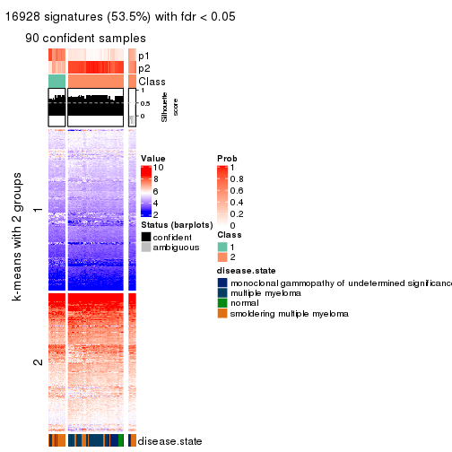
get_signatures(res, k = 3, scale_rows = FALSE)
get_signatures(res, k = 4, scale_rows = FALSE)
get_signatures(res, k = 5, scale_rows = FALSE)
get_signatures(res, k = 6, scale_rows = FALSE)
Compare the overlap of signatures from different k:
compare_signatures(res)
get_signature() returns a data frame invisibly. TO get the list of signatures, the function
call should be assigned to a variable explicitly. In following code, if plot argument is set
to FALSE, no heatmap is plotted while only the differential analysis is performed.
# code only for demonstration
tb = get_signature(res, k = ..., plot = FALSE)
An example of the output of tb is:
#> which_row fdr mean_1 mean_2 scaled_mean_1 scaled_mean_2 km
#> 1 38 0.042760348 8.373488 9.131774 -0.5533452 0.5164555 1
#> 2 40 0.018707592 7.106213 8.469186 -0.6173731 0.5762149 1
#> 3 55 0.019134737 10.221463 11.207825 -0.6159697 0.5749050 1
#> 4 59 0.006059896 5.921854 7.869574 -0.6899429 0.6439467 1
#> 5 60 0.018055526 8.928898 10.211722 -0.6204761 0.5791110 1
#> 6 98 0.009384629 15.714769 14.887706 0.6635654 -0.6193277 2
...
The columns in tb are:
which_row: row indices corresponding to the input matrix.fdr: FDR for the differential test. mean_x: The mean value in group x.scaled_mean_x: The mean value in group x after rows are scaled.km: Row groups if k-means clustering is applied to rows.UMAP plot which shows how samples are separated.
dimension_reduction(res, k = 2, method = "UMAP")
dimension_reduction(res, k = 3, method = "UMAP")
dimension_reduction(res, k = 4, method = "UMAP")
dimension_reduction(res, k = 5, method = "UMAP")
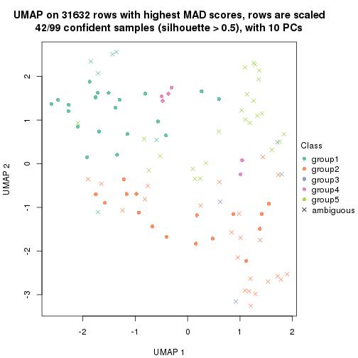
dimension_reduction(res, k = 6, method = "UMAP")
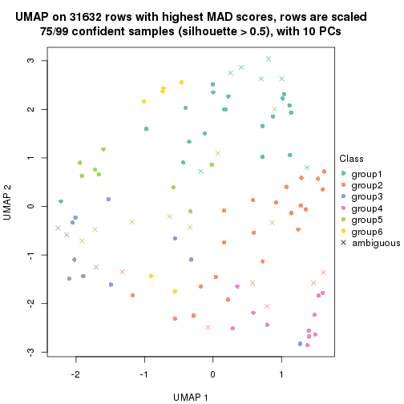
Following heatmap shows how subgroups are split when increasing k:
collect_classes(res)
Test correlation between subgroups and known annotations. If the known annotation is numeric, one-way ANOVA test is applied, and if the known annotation is discrete, chi-squared contingency table test is applied.
test_to_known_factors(res)
#> n disease.state(p) k
#> MAD:hclust 90 4.73e-05 2
#> MAD:hclust 57 4.07e-11 3
#> MAD:hclust 53 1.76e-08 4
#> MAD:hclust 42 2.09e-04 5
#> MAD:hclust 75 6.60e-20 6
If matrix rows can be associated to genes, consider to use GO_Enrichment(res,
...) to perform function enrichment for the signature genes.
The object with results only for a single top-value method and a single partition method can be extracted as:
res = res_list["MAD", "kmeans"]
# you can also extract it by
# res = res_list["MAD:kmeans"]
A summary of res and all the functions that can be applied to it:
res
#> A 'ConsensusPartition' object with k = 2, 3, 4, 5, 6.
#> On a matrix with 31632 rows and 99 columns.
#> Top rows (1000, 2000, 3000, 4000, 5000) are extracted by 'MAD' method.
#> Subgroups are detected by 'kmeans' method.
#> Performed in total 1250 partitions by row resampling.
#> Best k for subgroups seems to be 2.
#>
#> Following methods can be applied to this 'ConsensusPartition' object:
#> [1] "cola_report" "collect_classes" "collect_plots"
#> [4] "collect_stats" "colnames" "compare_signatures"
#> [7] "consensus_heatmap" "dimension_reduction" "functional_enrichment"
#> [10] "get_anno_col" "get_anno" "get_classes"
#> [13] "get_consensus" "get_matrix" "get_membership"
#> [16] "get_param" "get_signatures" "get_stats"
#> [19] "is_best_k" "is_stable_k" "membership_heatmap"
#> [22] "ncol" "nrow" "plot_ecdf"
#> [25] "rownames" "select_partition_number" "show"
#> [28] "suggest_best_k" "test_to_known_factors"
collect_plots() function collects all the plots made from res for all k (number of partitions)
into one single page to provide an easy and fast comparison between different k.
collect_plots(res)
The plots are:
k and the heatmap of
predicted classes for each k.k.k.k.All the plots in panels can be made by individual functions and they are plotted later in this section.
select_partition_number() produces several plots showing different
statistics for choosing “optimized” k. There are following statistics:
k;k, the area increased is defined as \(A_k - A_{k-1}\).The detailed explanations of these statistics can be found in the cola vignette.
Generally speaking, lower PAC score, higher mean silhouette score or higher
concordance corresponds to better partition. Rand index and Jaccard index
measure how similar the current partition is compared to partition with k-1.
If they are too similar, we won't accept k is better than k-1.
select_partition_number(res)
The numeric values for all these statistics can be obtained by get_stats().
get_stats(res)
#> k 1-PAC mean_silhouette concordance area_increased Rand Jaccard
#> 2 2 0.695 0.872 0.936 0.5025 0.496 0.496
#> 3 3 0.496 0.732 0.837 0.2914 0.780 0.592
#> 4 4 0.576 0.584 0.724 0.1295 0.805 0.514
#> 5 5 0.650 0.644 0.776 0.0738 0.910 0.673
#> 6 6 0.695 0.542 0.723 0.0444 0.952 0.791
suggest_best_k() suggests the best \(k\) based on these statistics. The rules are as follows:
NA.suggest_best_k(res)
#> [1] 2
Following shows the table of the partitions (You need to click the show/hide
code output link to see it). The membership matrix (columns with name p*)
is inferred by
clue::cl_consensus()
function with the SE method. Basically the value in the membership matrix
represents the probability to belong to a certain group. The finall class
label for an item is determined with the group with highest probability it
belongs to.
In get_classes() function, the entropy is calculated from the membership
matrix and the silhouette score is calculated from the consensus matrix.
cbind(get_classes(res, k = 2), get_membership(res, k = 2))
#> class entropy silhouette p1 p2
#> GSM1152309 2 0.0000 0.937 0.000 1.000
#> GSM1152310 2 0.0000 0.937 0.000 1.000
#> GSM1152311 2 0.1414 0.937 0.020 0.980
#> GSM1152312 1 0.0000 0.923 1.000 0.000
#> GSM1152313 2 0.0376 0.936 0.004 0.996
#> GSM1152314 1 0.0000 0.923 1.000 0.000
#> GSM1152315 2 0.0000 0.937 0.000 1.000
#> GSM1152316 2 0.0000 0.937 0.000 1.000
#> GSM1152317 2 0.0000 0.937 0.000 1.000
#> GSM1152318 2 0.0000 0.937 0.000 1.000
#> GSM1152319 2 0.1414 0.937 0.020 0.980
#> GSM1152320 2 0.4022 0.903 0.080 0.920
#> GSM1152321 2 0.0000 0.937 0.000 1.000
#> GSM1152322 2 0.0000 0.937 0.000 1.000
#> GSM1152323 2 0.0000 0.937 0.000 1.000
#> GSM1152324 2 0.1414 0.937 0.020 0.980
#> GSM1152325 2 0.0000 0.937 0.000 1.000
#> GSM1152326 2 0.1414 0.937 0.020 0.980
#> GSM1152327 2 0.0000 0.937 0.000 1.000
#> GSM1152328 2 0.7453 0.775 0.212 0.788
#> GSM1152329 2 0.7299 0.784 0.204 0.796
#> GSM1152330 2 0.4022 0.903 0.080 0.920
#> GSM1152331 2 0.1414 0.937 0.020 0.980
#> GSM1152332 1 0.0000 0.923 1.000 0.000
#> GSM1152333 1 0.9686 0.265 0.604 0.396
#> GSM1152334 2 0.0000 0.937 0.000 1.000
#> GSM1152335 2 0.4022 0.903 0.080 0.920
#> GSM1152336 2 0.1414 0.937 0.020 0.980
#> GSM1152337 2 0.1414 0.937 0.020 0.980
#> GSM1152338 2 0.3274 0.916 0.060 0.940
#> GSM1152339 2 0.7299 0.784 0.204 0.796
#> GSM1152340 2 0.6531 0.823 0.168 0.832
#> GSM1152341 2 0.7299 0.784 0.204 0.796
#> GSM1152342 2 0.1414 0.937 0.020 0.980
#> GSM1152343 2 0.1414 0.937 0.020 0.980
#> GSM1152344 2 0.1414 0.937 0.020 0.980
#> GSM1152345 2 0.1633 0.936 0.024 0.976
#> GSM1152346 2 0.0000 0.937 0.000 1.000
#> GSM1152347 1 0.1414 0.914 0.980 0.020
#> GSM1152348 2 0.7299 0.784 0.204 0.796
#> GSM1152349 1 0.1414 0.914 0.980 0.020
#> GSM1152355 1 0.0000 0.923 1.000 0.000
#> GSM1152356 1 0.0000 0.923 1.000 0.000
#> GSM1152357 1 0.0000 0.923 1.000 0.000
#> GSM1152358 2 0.0000 0.937 0.000 1.000
#> GSM1152359 2 0.8909 0.631 0.308 0.692
#> GSM1152360 1 0.0000 0.923 1.000 0.000
#> GSM1152361 2 0.4161 0.900 0.084 0.916
#> GSM1152362 2 0.0672 0.938 0.008 0.992
#> GSM1152363 1 0.0000 0.923 1.000 0.000
#> GSM1152364 1 0.0000 0.923 1.000 0.000
#> GSM1152365 1 0.0000 0.923 1.000 0.000
#> GSM1152366 1 0.0000 0.923 1.000 0.000
#> GSM1152367 1 0.0000 0.923 1.000 0.000
#> GSM1152368 1 0.0000 0.923 1.000 0.000
#> GSM1152369 1 0.0000 0.923 1.000 0.000
#> GSM1152370 1 0.0000 0.923 1.000 0.000
#> GSM1152371 1 0.0000 0.923 1.000 0.000
#> GSM1152372 1 0.0000 0.923 1.000 0.000
#> GSM1152373 1 0.0000 0.923 1.000 0.000
#> GSM1152374 2 0.0672 0.938 0.008 0.992
#> GSM1152375 1 0.0000 0.923 1.000 0.000
#> GSM1152376 1 0.0000 0.923 1.000 0.000
#> GSM1152377 1 0.0000 0.923 1.000 0.000
#> GSM1152378 1 0.0000 0.923 1.000 0.000
#> GSM1152379 2 0.7299 0.784 0.204 0.796
#> GSM1152380 1 0.0000 0.923 1.000 0.000
#> GSM1152381 1 0.0000 0.923 1.000 0.000
#> GSM1152382 1 0.0000 0.923 1.000 0.000
#> GSM1152383 1 0.0000 0.923 1.000 0.000
#> GSM1152384 1 0.0000 0.923 1.000 0.000
#> GSM1152385 2 0.1414 0.937 0.020 0.980
#> GSM1152386 2 0.0000 0.937 0.000 1.000
#> GSM1152387 2 0.1414 0.937 0.020 0.980
#> GSM1152289 2 0.1414 0.937 0.020 0.980
#> GSM1152290 1 0.7453 0.771 0.788 0.212
#> GSM1152291 1 0.7219 0.784 0.800 0.200
#> GSM1152292 1 0.7299 0.779 0.796 0.204
#> GSM1152293 1 0.7299 0.779 0.796 0.204
#> GSM1152294 2 0.0376 0.936 0.004 0.996
#> GSM1152295 1 0.0000 0.923 1.000 0.000
#> GSM1152296 1 0.0000 0.923 1.000 0.000
#> GSM1152297 1 0.7883 0.745 0.764 0.236
#> GSM1152298 2 0.9661 0.241 0.392 0.608
#> GSM1152299 2 0.0000 0.937 0.000 1.000
#> GSM1152300 1 0.1414 0.914 0.980 0.020
#> GSM1152301 1 0.1414 0.914 0.980 0.020
#> GSM1152302 1 0.7299 0.779 0.796 0.204
#> GSM1152303 1 0.7299 0.779 0.796 0.204
#> GSM1152304 1 0.8144 0.724 0.748 0.252
#> GSM1152305 1 0.6623 0.797 0.828 0.172
#> GSM1152306 1 0.1633 0.913 0.976 0.024
#> GSM1152307 1 0.1414 0.914 0.980 0.020
#> GSM1152308 2 0.5737 0.818 0.136 0.864
#> GSM1152350 2 0.0376 0.936 0.004 0.996
#> GSM1152351 2 0.0000 0.937 0.000 1.000
#> GSM1152352 2 0.0376 0.936 0.004 0.996
#> GSM1152353 1 0.9998 0.188 0.508 0.492
#> GSM1152354 1 0.9933 0.282 0.548 0.452
cbind(get_classes(res, k = 3), get_membership(res, k = 3))
#> class entropy silhouette p1 p2 p3
#> GSM1152309 2 0.1753 0.8020 0.000 0.952 0.048
#> GSM1152310 2 0.6008 0.3861 0.000 0.628 0.372
#> GSM1152311 2 0.0892 0.8063 0.000 0.980 0.020
#> GSM1152312 1 0.5263 0.7957 0.828 0.088 0.084
#> GSM1152313 2 0.5882 0.5374 0.000 0.652 0.348
#> GSM1152314 1 0.3116 0.8317 0.892 0.000 0.108
#> GSM1152315 2 0.5327 0.5915 0.000 0.728 0.272
#> GSM1152316 2 0.4931 0.6881 0.000 0.768 0.232
#> GSM1152317 2 0.3340 0.7772 0.000 0.880 0.120
#> GSM1152318 2 0.3340 0.7772 0.000 0.880 0.120
#> GSM1152319 2 0.4289 0.7955 0.040 0.868 0.092
#> GSM1152320 2 0.3030 0.7923 0.092 0.904 0.004
#> GSM1152321 2 0.3340 0.7772 0.000 0.880 0.120
#> GSM1152322 2 0.3412 0.7768 0.000 0.876 0.124
#> GSM1152323 2 0.5016 0.6794 0.000 0.760 0.240
#> GSM1152324 2 0.2878 0.7868 0.000 0.904 0.096
#> GSM1152325 2 0.3340 0.7772 0.000 0.880 0.120
#> GSM1152326 2 0.2772 0.7973 0.080 0.916 0.004
#> GSM1152327 2 0.3412 0.7699 0.000 0.876 0.124
#> GSM1152328 2 0.4968 0.7310 0.188 0.800 0.012
#> GSM1152329 2 0.4834 0.7212 0.204 0.792 0.004
#> GSM1152330 2 0.3038 0.7880 0.104 0.896 0.000
#> GSM1152331 2 0.1289 0.8048 0.000 0.968 0.032
#> GSM1152332 1 0.3267 0.7783 0.884 0.116 0.000
#> GSM1152333 2 0.6302 0.1794 0.480 0.520 0.000
#> GSM1152334 3 0.5098 0.7115 0.000 0.248 0.752
#> GSM1152335 2 0.3272 0.7876 0.104 0.892 0.004
#> GSM1152336 2 0.0892 0.8059 0.000 0.980 0.020
#> GSM1152337 2 0.2301 0.8021 0.060 0.936 0.004
#> GSM1152338 2 0.2682 0.7983 0.076 0.920 0.004
#> GSM1152339 2 0.4834 0.7212 0.204 0.792 0.004
#> GSM1152340 2 0.4172 0.7608 0.156 0.840 0.004
#> GSM1152341 2 0.4172 0.7595 0.156 0.840 0.004
#> GSM1152342 2 0.7058 0.6748 0.080 0.708 0.212
#> GSM1152343 2 0.2796 0.7872 0.000 0.908 0.092
#> GSM1152344 2 0.1031 0.8060 0.000 0.976 0.024
#> GSM1152345 2 0.5695 0.7445 0.076 0.804 0.120
#> GSM1152346 2 0.3340 0.7772 0.000 0.880 0.120
#> GSM1152347 1 0.6209 0.5357 0.628 0.004 0.368
#> GSM1152348 2 0.4682 0.7315 0.192 0.804 0.004
#> GSM1152349 1 0.5678 0.6167 0.684 0.000 0.316
#> GSM1152355 1 0.2165 0.8533 0.936 0.000 0.064
#> GSM1152356 1 0.2625 0.8471 0.916 0.000 0.084
#> GSM1152357 1 0.1620 0.8557 0.964 0.012 0.024
#> GSM1152358 3 0.4452 0.7462 0.000 0.192 0.808
#> GSM1152359 1 0.6489 -0.0665 0.540 0.456 0.004
#> GSM1152360 1 0.0747 0.8546 0.984 0.016 0.000
#> GSM1152361 2 0.5449 0.7524 0.116 0.816 0.068
#> GSM1152362 2 0.1751 0.8081 0.028 0.960 0.012
#> GSM1152363 1 0.0892 0.8543 0.980 0.020 0.000
#> GSM1152364 1 0.1860 0.8559 0.948 0.000 0.052
#> GSM1152365 1 0.1647 0.8430 0.960 0.036 0.004
#> GSM1152366 1 0.0829 0.8554 0.984 0.012 0.004
#> GSM1152367 1 0.2200 0.8416 0.940 0.004 0.056
#> GSM1152368 1 0.4121 0.8179 0.832 0.000 0.168
#> GSM1152369 1 0.2200 0.8416 0.940 0.004 0.056
#> GSM1152370 1 0.0747 0.8546 0.984 0.016 0.000
#> GSM1152371 1 0.3356 0.8242 0.908 0.036 0.056
#> GSM1152372 1 0.6757 0.7611 0.736 0.084 0.180
#> GSM1152373 1 0.3425 0.8318 0.884 0.004 0.112
#> GSM1152374 2 0.5524 0.7141 0.040 0.796 0.164
#> GSM1152375 1 0.0000 0.8576 1.000 0.000 0.000
#> GSM1152376 1 0.2066 0.8539 0.940 0.000 0.060
#> GSM1152377 1 0.0237 0.8573 0.996 0.004 0.000
#> GSM1152378 1 0.1964 0.8551 0.944 0.000 0.056
#> GSM1152379 2 0.5325 0.6799 0.248 0.748 0.004
#> GSM1152380 1 0.2066 0.8539 0.940 0.000 0.060
#> GSM1152381 1 0.0829 0.8554 0.984 0.012 0.004
#> GSM1152382 1 0.1878 0.8383 0.952 0.044 0.004
#> GSM1152383 1 0.2537 0.8461 0.920 0.000 0.080
#> GSM1152384 1 0.0747 0.8558 0.984 0.016 0.000
#> GSM1152385 2 0.1289 0.8048 0.000 0.968 0.032
#> GSM1152386 2 0.4887 0.6927 0.000 0.772 0.228
#> GSM1152387 2 0.2564 0.8067 0.036 0.936 0.028
#> GSM1152289 2 0.3589 0.8037 0.052 0.900 0.048
#> GSM1152290 3 0.3237 0.7833 0.056 0.032 0.912
#> GSM1152291 3 0.9337 0.3708 0.208 0.280 0.512
#> GSM1152292 3 0.5111 0.7215 0.168 0.024 0.808
#> GSM1152293 3 0.5111 0.7215 0.168 0.024 0.808
#> GSM1152294 3 0.5541 0.7049 0.008 0.252 0.740
#> GSM1152295 1 0.7047 0.7207 0.712 0.084 0.204
#> GSM1152296 1 0.2537 0.8488 0.920 0.000 0.080
#> GSM1152297 3 0.4189 0.7982 0.056 0.068 0.876
#> GSM1152298 3 0.2599 0.7906 0.016 0.052 0.932
#> GSM1152299 3 0.4452 0.7396 0.000 0.192 0.808
#> GSM1152300 1 0.6189 0.5435 0.632 0.004 0.364
#> GSM1152301 1 0.5678 0.6167 0.684 0.000 0.316
#> GSM1152302 3 0.5111 0.7215 0.168 0.024 0.808
#> GSM1152303 3 0.5111 0.7215 0.168 0.024 0.808
#> GSM1152304 3 0.3028 0.7863 0.048 0.032 0.920
#> GSM1152305 2 0.8984 0.2918 0.148 0.524 0.328
#> GSM1152306 3 0.4399 0.6853 0.188 0.000 0.812
#> GSM1152307 1 0.6095 0.4725 0.608 0.000 0.392
#> GSM1152308 2 0.8684 0.0368 0.108 0.500 0.392
#> GSM1152350 3 0.5138 0.6989 0.000 0.252 0.748
#> GSM1152351 3 0.5138 0.6989 0.000 0.252 0.748
#> GSM1152352 3 0.5098 0.7040 0.000 0.248 0.752
#> GSM1152353 3 0.7393 0.7691 0.140 0.156 0.704
#> GSM1152354 3 0.7926 0.7079 0.216 0.128 0.656
cbind(get_classes(res, k = 4), get_membership(res, k = 4))
#> class entropy silhouette p1 p2 p3 p4
#> GSM1152309 4 0.233 0.7435 0.000 0.088 0.004 0.908
#> GSM1152310 4 0.578 0.3100 0.000 0.064 0.272 0.664
#> GSM1152311 2 0.508 0.5041 0.000 0.576 0.004 0.420
#> GSM1152312 1 0.601 0.3334 0.488 0.472 0.040 0.000
#> GSM1152313 4 0.550 0.5868 0.000 0.088 0.188 0.724
#> GSM1152314 1 0.417 0.7562 0.816 0.140 0.044 0.000
#> GSM1152315 4 0.362 0.6560 0.000 0.072 0.068 0.860
#> GSM1152316 4 0.255 0.7466 0.000 0.060 0.028 0.912
#> GSM1152317 4 0.205 0.7529 0.000 0.072 0.004 0.924
#> GSM1152318 4 0.174 0.7541 0.000 0.056 0.004 0.940
#> GSM1152319 4 0.521 0.1256 0.000 0.420 0.008 0.572
#> GSM1152320 2 0.477 0.6345 0.008 0.684 0.000 0.308
#> GSM1152321 4 0.205 0.7529 0.000 0.072 0.004 0.924
#> GSM1152322 4 0.136 0.7455 0.000 0.032 0.008 0.960
#> GSM1152323 4 0.189 0.7043 0.000 0.016 0.044 0.940
#> GSM1152324 4 0.454 0.5028 0.000 0.272 0.008 0.720
#> GSM1152325 4 0.205 0.7529 0.000 0.072 0.004 0.924
#> GSM1152326 2 0.492 0.6354 0.008 0.684 0.004 0.304
#> GSM1152327 4 0.317 0.7190 0.000 0.116 0.016 0.868
#> GSM1152328 2 0.548 0.6517 0.056 0.696 0.000 0.248
#> GSM1152329 2 0.591 0.6287 0.124 0.696 0.000 0.180
#> GSM1152330 2 0.472 0.6390 0.008 0.692 0.000 0.300
#> GSM1152331 4 0.445 0.3918 0.000 0.308 0.000 0.692
#> GSM1152332 1 0.476 0.4292 0.628 0.372 0.000 0.000
#> GSM1152333 2 0.592 0.5568 0.216 0.684 0.000 0.100
#> GSM1152334 3 0.542 0.5143 0.000 0.024 0.624 0.352
#> GSM1152335 2 0.472 0.6390 0.008 0.692 0.000 0.300
#> GSM1152336 2 0.551 0.2223 0.000 0.508 0.016 0.476
#> GSM1152337 2 0.452 0.6267 0.000 0.680 0.000 0.320
#> GSM1152338 2 0.486 0.6259 0.008 0.668 0.000 0.324
#> GSM1152339 2 0.594 0.6215 0.136 0.696 0.000 0.168
#> GSM1152340 2 0.537 0.6532 0.044 0.692 0.000 0.264
#> GSM1152341 2 0.587 0.6322 0.112 0.696 0.000 0.192
#> GSM1152342 4 0.879 -0.0454 0.112 0.364 0.108 0.416
#> GSM1152343 4 0.533 0.3552 0.000 0.332 0.024 0.644
#> GSM1152344 2 0.510 0.4903 0.000 0.568 0.004 0.428
#> GSM1152345 2 0.604 0.5734 0.012 0.616 0.036 0.336
#> GSM1152346 4 0.174 0.7541 0.000 0.056 0.004 0.940
#> GSM1152347 3 0.734 0.1375 0.380 0.160 0.460 0.000
#> GSM1152348 2 0.615 0.6215 0.132 0.688 0.004 0.176
#> GSM1152349 3 0.717 0.1131 0.396 0.136 0.468 0.000
#> GSM1152355 1 0.112 0.8632 0.964 0.000 0.036 0.000
#> GSM1152356 1 0.158 0.8649 0.952 0.012 0.036 0.000
#> GSM1152357 1 0.209 0.8631 0.932 0.020 0.048 0.000
#> GSM1152358 3 0.511 0.5431 0.000 0.016 0.656 0.328
#> GSM1152359 2 0.643 0.1929 0.436 0.504 0.004 0.056
#> GSM1152360 1 0.166 0.8707 0.944 0.052 0.004 0.000
#> GSM1152361 2 0.528 0.5585 0.036 0.756 0.024 0.184
#> GSM1152362 2 0.520 0.5444 0.004 0.592 0.004 0.400
#> GSM1152363 1 0.131 0.8730 0.960 0.036 0.004 0.000
#> GSM1152364 1 0.112 0.8632 0.964 0.000 0.036 0.000
#> GSM1152365 1 0.280 0.8499 0.892 0.096 0.008 0.004
#> GSM1152366 1 0.158 0.8724 0.948 0.048 0.004 0.000
#> GSM1152367 1 0.361 0.8103 0.840 0.140 0.020 0.000
#> GSM1152368 1 0.566 0.6792 0.676 0.264 0.060 0.000
#> GSM1152369 1 0.361 0.8103 0.840 0.140 0.020 0.000
#> GSM1152370 1 0.179 0.8689 0.932 0.068 0.000 0.000
#> GSM1152371 1 0.449 0.7764 0.780 0.192 0.024 0.004
#> GSM1152372 2 0.683 -0.3846 0.420 0.496 0.076 0.008
#> GSM1152373 1 0.444 0.7419 0.800 0.148 0.052 0.000
#> GSM1152374 2 0.638 0.5326 0.012 0.592 0.052 0.344
#> GSM1152375 1 0.179 0.8689 0.932 0.068 0.000 0.000
#> GSM1152376 1 0.273 0.8264 0.896 0.088 0.016 0.000
#> GSM1152377 1 0.172 0.8694 0.936 0.064 0.000 0.000
#> GSM1152378 1 0.197 0.8728 0.932 0.060 0.008 0.000
#> GSM1152379 2 0.671 0.4716 0.292 0.596 0.004 0.108
#> GSM1152380 1 0.266 0.8287 0.900 0.084 0.016 0.000
#> GSM1152381 1 0.158 0.8724 0.948 0.048 0.004 0.000
#> GSM1152382 1 0.358 0.8032 0.836 0.152 0.008 0.004
#> GSM1152383 1 0.171 0.8585 0.948 0.016 0.036 0.000
#> GSM1152384 1 0.227 0.8617 0.912 0.084 0.004 0.000
#> GSM1152385 4 0.443 0.3973 0.000 0.304 0.000 0.696
#> GSM1152386 4 0.255 0.7466 0.000 0.060 0.028 0.912
#> GSM1152387 2 0.530 0.5490 0.004 0.600 0.008 0.388
#> GSM1152289 2 0.566 0.5746 0.008 0.612 0.020 0.360
#> GSM1152290 3 0.263 0.6553 0.020 0.028 0.920 0.032
#> GSM1152291 3 0.853 0.1950 0.108 0.360 0.444 0.088
#> GSM1152292 3 0.164 0.6658 0.060 0.000 0.940 0.000
#> GSM1152293 3 0.156 0.6654 0.056 0.000 0.944 0.000
#> GSM1152294 3 0.577 0.5302 0.000 0.044 0.620 0.336
#> GSM1152295 2 0.789 -0.2089 0.296 0.372 0.332 0.000
#> GSM1152296 1 0.102 0.8644 0.968 0.000 0.032 0.000
#> GSM1152297 3 0.392 0.6325 0.008 0.016 0.828 0.148
#> GSM1152298 3 0.202 0.6547 0.012 0.000 0.932 0.056
#> GSM1152299 3 0.516 0.3602 0.000 0.004 0.524 0.472
#> GSM1152300 3 0.734 0.1375 0.380 0.160 0.460 0.000
#> GSM1152301 3 0.716 0.1146 0.392 0.136 0.472 0.000
#> GSM1152302 3 0.164 0.6658 0.060 0.000 0.940 0.000
#> GSM1152303 3 0.164 0.6658 0.060 0.000 0.940 0.000
#> GSM1152304 3 0.182 0.6588 0.020 0.000 0.944 0.036
#> GSM1152305 2 0.793 0.2658 0.076 0.564 0.260 0.100
#> GSM1152306 3 0.164 0.6658 0.060 0.000 0.940 0.000
#> GSM1152307 3 0.570 0.3169 0.356 0.036 0.608 0.000
#> GSM1152308 3 0.904 0.0403 0.072 0.340 0.376 0.212
#> GSM1152350 3 0.579 0.5292 0.000 0.044 0.616 0.340
#> GSM1152351 3 0.579 0.5292 0.000 0.044 0.616 0.340
#> GSM1152352 3 0.579 0.5292 0.000 0.044 0.616 0.340
#> GSM1152353 3 0.604 0.5649 0.016 0.044 0.656 0.284
#> GSM1152354 3 0.723 0.5606 0.084 0.052 0.620 0.244
cbind(get_classes(res, k = 5), get_membership(res, k = 5))
#> class entropy silhouette p1 p2 p3 p4 p5
#> GSM1152309 4 0.1197 0.8982 0.000 0.048 0.000 0.952 0.000
#> GSM1152310 5 0.5690 0.0247 0.000 0.052 0.012 0.440 0.496
#> GSM1152311 2 0.4964 0.6877 0.000 0.708 0.084 0.204 0.004
#> GSM1152312 3 0.6929 0.2478 0.304 0.312 0.380 0.004 0.000
#> GSM1152313 4 0.5956 0.5982 0.000 0.044 0.200 0.660 0.096
#> GSM1152314 1 0.3838 0.4608 0.716 0.004 0.280 0.000 0.000
#> GSM1152315 4 0.5158 0.6525 0.000 0.084 0.012 0.704 0.200
#> GSM1152316 4 0.1522 0.8869 0.000 0.044 0.000 0.944 0.012
#> GSM1152317 4 0.1270 0.8979 0.000 0.052 0.000 0.948 0.000
#> GSM1152318 4 0.1121 0.8977 0.000 0.044 0.000 0.956 0.000
#> GSM1152319 2 0.4806 0.3871 0.000 0.636 0.012 0.336 0.016
#> GSM1152320 2 0.1864 0.7625 0.004 0.924 0.000 0.068 0.004
#> GSM1152321 4 0.1270 0.8979 0.000 0.052 0.000 0.948 0.000
#> GSM1152322 4 0.1211 0.8874 0.000 0.024 0.000 0.960 0.016
#> GSM1152323 4 0.2193 0.8318 0.000 0.008 0.000 0.900 0.092
#> GSM1152324 4 0.3578 0.7644 0.000 0.204 0.004 0.784 0.008
#> GSM1152325 4 0.1270 0.8979 0.000 0.052 0.000 0.948 0.000
#> GSM1152326 2 0.2333 0.7613 0.012 0.916 0.016 0.052 0.004
#> GSM1152327 4 0.2297 0.8790 0.000 0.060 0.020 0.912 0.008
#> GSM1152328 2 0.3599 0.7402 0.016 0.828 0.132 0.024 0.000
#> GSM1152329 2 0.1408 0.7521 0.044 0.948 0.000 0.008 0.000
#> GSM1152330 2 0.2209 0.7648 0.000 0.912 0.032 0.056 0.000
#> GSM1152331 4 0.3086 0.7888 0.000 0.180 0.000 0.816 0.004
#> GSM1152332 2 0.5778 0.2601 0.376 0.528 0.096 0.000 0.000
#> GSM1152333 2 0.3181 0.7345 0.072 0.856 0.072 0.000 0.000
#> GSM1152334 5 0.3674 0.6560 0.000 0.012 0.024 0.148 0.816
#> GSM1152335 2 0.3090 0.7559 0.000 0.860 0.088 0.052 0.000
#> GSM1152336 2 0.3559 0.6923 0.000 0.804 0.012 0.176 0.008
#> GSM1152337 2 0.1704 0.7627 0.000 0.928 0.000 0.068 0.004
#> GSM1152338 2 0.1704 0.7627 0.000 0.928 0.000 0.068 0.004
#> GSM1152339 2 0.1430 0.7478 0.052 0.944 0.000 0.004 0.000
#> GSM1152340 2 0.4074 0.7420 0.024 0.820 0.112 0.036 0.008
#> GSM1152341 2 0.1653 0.7589 0.024 0.944 0.000 0.028 0.004
#> GSM1152342 2 0.7321 0.4409 0.092 0.556 0.012 0.108 0.232
#> GSM1152343 2 0.6551 -0.0062 0.000 0.472 0.012 0.372 0.144
#> GSM1152344 2 0.5310 0.6511 0.000 0.672 0.100 0.224 0.004
#> GSM1152345 2 0.5121 0.7270 0.004 0.756 0.112 0.084 0.044
#> GSM1152346 4 0.0880 0.8948 0.000 0.032 0.000 0.968 0.000
#> GSM1152347 3 0.5889 0.5951 0.228 0.012 0.640 0.004 0.116
#> GSM1152348 2 0.1969 0.7485 0.044 0.932 0.012 0.008 0.004
#> GSM1152349 3 0.5952 0.5603 0.324 0.000 0.548 0.000 0.128
#> GSM1152355 1 0.0955 0.8253 0.968 0.004 0.028 0.000 0.000
#> GSM1152356 1 0.1205 0.8285 0.956 0.004 0.040 0.000 0.000
#> GSM1152357 1 0.1507 0.8277 0.952 0.012 0.024 0.000 0.012
#> GSM1152358 5 0.3846 0.6608 0.000 0.000 0.056 0.144 0.800
#> GSM1152359 2 0.4799 0.5140 0.268 0.692 0.012 0.004 0.024
#> GSM1152360 1 0.1741 0.8269 0.936 0.040 0.024 0.000 0.000
#> GSM1152361 2 0.5529 0.4422 0.016 0.584 0.360 0.036 0.004
#> GSM1152362 2 0.5198 0.7061 0.000 0.712 0.112 0.164 0.012
#> GSM1152363 1 0.1845 0.8182 0.928 0.016 0.056 0.000 0.000
#> GSM1152364 1 0.0955 0.8253 0.968 0.004 0.028 0.000 0.000
#> GSM1152365 1 0.3736 0.7025 0.808 0.140 0.052 0.000 0.000
#> GSM1152366 1 0.1568 0.8278 0.944 0.020 0.036 0.000 0.000
#> GSM1152367 1 0.5348 0.5310 0.656 0.040 0.276 0.028 0.000
#> GSM1152368 3 0.5712 -0.0727 0.396 0.036 0.540 0.028 0.000
#> GSM1152369 1 0.5348 0.5310 0.656 0.040 0.276 0.028 0.000
#> GSM1152370 1 0.1836 0.8222 0.932 0.036 0.032 0.000 0.000
#> GSM1152371 1 0.6066 0.4845 0.608 0.092 0.272 0.028 0.000
#> GSM1152372 3 0.6216 0.3386 0.196 0.124 0.644 0.028 0.008
#> GSM1152373 1 0.4249 0.4229 0.688 0.016 0.296 0.000 0.000
#> GSM1152374 2 0.5975 0.6811 0.000 0.684 0.132 0.112 0.072
#> GSM1152375 1 0.1750 0.8257 0.936 0.028 0.036 0.000 0.000
#> GSM1152376 1 0.2411 0.7665 0.884 0.008 0.108 0.000 0.000
#> GSM1152377 1 0.1195 0.8298 0.960 0.028 0.012 0.000 0.000
#> GSM1152378 1 0.1978 0.8269 0.928 0.024 0.044 0.000 0.004
#> GSM1152379 2 0.4599 0.6063 0.196 0.752 0.020 0.008 0.024
#> GSM1152380 1 0.1952 0.7931 0.912 0.004 0.084 0.000 0.000
#> GSM1152381 1 0.1579 0.8307 0.944 0.024 0.032 0.000 0.000
#> GSM1152382 1 0.4087 0.6186 0.756 0.208 0.036 0.000 0.000
#> GSM1152383 1 0.0955 0.8253 0.968 0.004 0.028 0.000 0.000
#> GSM1152384 1 0.2351 0.7935 0.896 0.016 0.088 0.000 0.000
#> GSM1152385 4 0.3048 0.7922 0.000 0.176 0.000 0.820 0.004
#> GSM1152386 4 0.1364 0.8895 0.000 0.036 0.000 0.952 0.012
#> GSM1152387 2 0.5278 0.6883 0.000 0.700 0.136 0.156 0.008
#> GSM1152289 2 0.5109 0.7060 0.000 0.732 0.140 0.108 0.020
#> GSM1152290 5 0.4645 0.4061 0.008 0.000 0.424 0.004 0.564
#> GSM1152291 3 0.6334 0.4360 0.040 0.124 0.672 0.024 0.140
#> GSM1152292 5 0.4173 0.5899 0.012 0.000 0.300 0.000 0.688
#> GSM1152293 5 0.4173 0.5899 0.012 0.000 0.300 0.000 0.688
#> GSM1152294 5 0.2798 0.6540 0.000 0.000 0.008 0.140 0.852
#> GSM1152295 3 0.6578 0.5747 0.164 0.132 0.632 0.004 0.068
#> GSM1152296 1 0.0955 0.8253 0.968 0.004 0.028 0.000 0.000
#> GSM1152297 5 0.2959 0.6562 0.000 0.000 0.100 0.036 0.864
#> GSM1152298 5 0.4081 0.5920 0.004 0.000 0.296 0.004 0.696
#> GSM1152299 5 0.5457 0.2023 0.000 0.000 0.060 0.460 0.480
#> GSM1152300 3 0.5933 0.5876 0.216 0.012 0.640 0.004 0.128
#> GSM1152301 3 0.5952 0.5603 0.324 0.000 0.548 0.000 0.128
#> GSM1152302 5 0.4173 0.5899 0.012 0.000 0.300 0.000 0.688
#> GSM1152303 5 0.4173 0.5899 0.012 0.000 0.300 0.000 0.688
#> GSM1152304 5 0.4199 0.5895 0.008 0.000 0.296 0.004 0.692
#> GSM1152305 2 0.7165 0.1191 0.020 0.444 0.404 0.040 0.092
#> GSM1152306 5 0.4173 0.5899 0.012 0.000 0.300 0.000 0.688
#> GSM1152307 5 0.6789 -0.1949 0.284 0.000 0.348 0.000 0.368
#> GSM1152308 5 0.7533 0.3204 0.072 0.268 0.056 0.064 0.540
#> GSM1152350 5 0.2424 0.6581 0.000 0.000 0.000 0.132 0.868
#> GSM1152351 5 0.2424 0.6581 0.000 0.000 0.000 0.132 0.868
#> GSM1152352 5 0.2424 0.6581 0.000 0.000 0.000 0.132 0.868
#> GSM1152353 5 0.2286 0.6617 0.000 0.000 0.004 0.108 0.888
#> GSM1152354 5 0.3238 0.6442 0.028 0.004 0.012 0.092 0.864
cbind(get_classes(res, k = 6), get_membership(res, k = 6))
#> class entropy silhouette p1 p2 p3 p4 p5 p6
#> GSM1152309 4 0.1265 0.8250 0.000 0.044 0.000 0.948 0.008 0.000
#> GSM1152310 5 0.6698 0.4022 0.004 0.056 0.128 0.264 0.532 0.016
#> GSM1152311 2 0.5988 0.5063 0.000 0.624 0.000 0.144 0.120 0.112
#> GSM1152312 6 0.7368 0.2462 0.132 0.260 0.000 0.000 0.224 0.384
#> GSM1152313 4 0.6196 0.4188 0.000 0.000 0.116 0.584 0.208 0.092
#> GSM1152314 1 0.5481 0.3586 0.576 0.008 0.012 0.000 0.084 0.320
#> GSM1152315 4 0.5833 0.1655 0.000 0.076 0.016 0.484 0.408 0.016
#> GSM1152316 4 0.0972 0.8208 0.000 0.000 0.000 0.964 0.028 0.008
#> GSM1152317 4 0.0951 0.8292 0.000 0.020 0.000 0.968 0.004 0.008
#> GSM1152318 4 0.0951 0.8292 0.000 0.020 0.000 0.968 0.004 0.008
#> GSM1152319 2 0.5344 0.4482 0.000 0.652 0.000 0.172 0.152 0.024
#> GSM1152320 2 0.1620 0.6493 0.000 0.940 0.000 0.012 0.024 0.024
#> GSM1152321 4 0.0862 0.8301 0.000 0.016 0.000 0.972 0.004 0.008
#> GSM1152322 4 0.0520 0.8282 0.000 0.008 0.000 0.984 0.008 0.000
#> GSM1152323 4 0.2191 0.7751 0.000 0.004 0.000 0.876 0.120 0.000
#> GSM1152324 4 0.5248 0.5914 0.000 0.216 0.000 0.648 0.116 0.020
#> GSM1152325 4 0.0951 0.8299 0.000 0.020 0.000 0.968 0.004 0.008
#> GSM1152326 2 0.2146 0.6445 0.000 0.908 0.000 0.008 0.060 0.024
#> GSM1152327 4 0.1863 0.8077 0.000 0.004 0.000 0.920 0.060 0.016
#> GSM1152328 2 0.4067 0.5959 0.008 0.776 0.000 0.004 0.084 0.128
#> GSM1152329 2 0.0717 0.6549 0.008 0.976 0.000 0.000 0.000 0.016
#> GSM1152330 2 0.2119 0.6487 0.000 0.912 0.000 0.008 0.036 0.044
#> GSM1152331 4 0.3526 0.7152 0.000 0.172 0.000 0.792 0.016 0.020
#> GSM1152332 2 0.5819 0.1384 0.380 0.504 0.000 0.000 0.064 0.052
#> GSM1152333 2 0.2573 0.6410 0.008 0.884 0.000 0.000 0.044 0.064
#> GSM1152334 5 0.6336 0.6232 0.004 0.048 0.392 0.060 0.476 0.020
#> GSM1152335 2 0.3258 0.6253 0.000 0.836 0.000 0.008 0.064 0.092
#> GSM1152336 2 0.4053 0.5754 0.000 0.776 0.000 0.064 0.140 0.020
#> GSM1152337 2 0.1350 0.6557 0.000 0.952 0.000 0.008 0.020 0.020
#> GSM1152338 2 0.1577 0.6488 0.000 0.940 0.000 0.008 0.036 0.016
#> GSM1152339 2 0.0717 0.6549 0.008 0.976 0.000 0.000 0.000 0.016
#> GSM1152340 2 0.5083 0.5697 0.008 0.696 0.000 0.020 0.164 0.112
#> GSM1152341 2 0.1534 0.6490 0.004 0.944 0.000 0.004 0.032 0.016
#> GSM1152342 2 0.6158 0.2670 0.072 0.480 0.008 0.020 0.400 0.020
#> GSM1152343 2 0.6108 0.2929 0.000 0.508 0.000 0.168 0.300 0.024
#> GSM1152344 2 0.6366 0.4663 0.000 0.580 0.000 0.152 0.140 0.128
#> GSM1152345 2 0.5658 0.5311 0.004 0.640 0.000 0.040 0.188 0.128
#> GSM1152346 4 0.0291 0.8278 0.000 0.004 0.000 0.992 0.004 0.000
#> GSM1152347 3 0.6883 0.1446 0.080 0.008 0.480 0.000 0.148 0.284
#> GSM1152348 2 0.2063 0.6365 0.008 0.912 0.000 0.000 0.060 0.020
#> GSM1152349 3 0.6911 0.2244 0.152 0.008 0.512 0.000 0.104 0.224
#> GSM1152355 1 0.1515 0.7980 0.944 0.000 0.028 0.000 0.020 0.008
#> GSM1152356 1 0.1485 0.7992 0.944 0.000 0.028 0.000 0.024 0.004
#> GSM1152357 1 0.3632 0.7566 0.828 0.012 0.024 0.004 0.108 0.024
#> GSM1152358 3 0.5438 -0.5495 0.000 0.000 0.560 0.160 0.280 0.000
#> GSM1152359 2 0.6163 0.3833 0.180 0.588 0.004 0.016 0.192 0.020
#> GSM1152360 1 0.1684 0.7999 0.940 0.028 0.008 0.000 0.016 0.008
#> GSM1152361 6 0.5533 0.0580 0.020 0.344 0.000 0.008 0.068 0.560
#> GSM1152362 2 0.6300 0.4733 0.000 0.568 0.000 0.076 0.200 0.156
#> GSM1152363 1 0.2734 0.7622 0.864 0.008 0.000 0.000 0.024 0.104
#> GSM1152364 1 0.1434 0.7991 0.948 0.000 0.024 0.000 0.020 0.008
#> GSM1152365 1 0.3292 0.7375 0.844 0.096 0.004 0.000 0.032 0.024
#> GSM1152366 1 0.1767 0.7980 0.932 0.012 0.000 0.000 0.020 0.036
#> GSM1152367 1 0.4262 0.3881 0.560 0.004 0.000 0.000 0.012 0.424
#> GSM1152368 6 0.3448 0.0883 0.280 0.000 0.000 0.000 0.004 0.716
#> GSM1152369 1 0.4262 0.3881 0.560 0.004 0.000 0.000 0.012 0.424
#> GSM1152370 1 0.2357 0.7862 0.908 0.036 0.008 0.000 0.032 0.016
#> GSM1152371 1 0.4600 0.3784 0.552 0.020 0.000 0.000 0.012 0.416
#> GSM1152372 6 0.4017 0.4830 0.068 0.044 0.000 0.004 0.080 0.804
#> GSM1152373 1 0.5394 0.3203 0.556 0.008 0.000 0.000 0.104 0.332
#> GSM1152374 2 0.6610 0.3976 0.000 0.484 0.000 0.064 0.284 0.168
#> GSM1152375 1 0.2559 0.7854 0.896 0.024 0.008 0.000 0.052 0.020
#> GSM1152376 1 0.3156 0.7018 0.800 0.000 0.000 0.000 0.020 0.180
#> GSM1152377 1 0.1705 0.7975 0.940 0.024 0.008 0.000 0.012 0.016
#> GSM1152378 1 0.4000 0.7386 0.804 0.016 0.008 0.004 0.072 0.096
#> GSM1152379 2 0.6040 0.4296 0.140 0.608 0.004 0.016 0.208 0.024
#> GSM1152380 1 0.2536 0.7515 0.864 0.000 0.000 0.000 0.020 0.116
#> GSM1152381 1 0.0922 0.7986 0.968 0.004 0.000 0.000 0.004 0.024
#> GSM1152382 1 0.3827 0.6658 0.784 0.164 0.004 0.000 0.032 0.016
#> GSM1152383 1 0.1515 0.7980 0.944 0.000 0.028 0.000 0.020 0.008
#> GSM1152384 1 0.2740 0.7441 0.852 0.000 0.000 0.000 0.028 0.120
#> GSM1152385 4 0.3237 0.7474 0.000 0.132 0.000 0.828 0.020 0.020
#> GSM1152386 4 0.0717 0.8240 0.000 0.000 0.000 0.976 0.016 0.008
#> GSM1152387 2 0.6662 0.3864 0.000 0.508 0.000 0.080 0.232 0.180
#> GSM1152289 2 0.6577 0.3954 0.000 0.516 0.000 0.072 0.232 0.180
#> GSM1152290 3 0.3272 0.5275 0.000 0.000 0.836 0.008 0.076 0.080
#> GSM1152291 6 0.7173 0.2168 0.016 0.028 0.324 0.008 0.252 0.372
#> GSM1152292 3 0.0146 0.5404 0.004 0.000 0.996 0.000 0.000 0.000
#> GSM1152293 3 0.0291 0.5425 0.004 0.000 0.992 0.000 0.004 0.000
#> GSM1152294 5 0.5077 0.7809 0.000 0.000 0.404 0.080 0.516 0.000
#> GSM1152295 6 0.7458 0.2636 0.052 0.040 0.276 0.000 0.220 0.412
#> GSM1152296 1 0.1882 0.7982 0.928 0.000 0.028 0.000 0.024 0.020
#> GSM1152297 3 0.4008 -0.3735 0.004 0.000 0.672 0.016 0.308 0.000
#> GSM1152298 3 0.0870 0.5318 0.000 0.000 0.972 0.012 0.004 0.012
#> GSM1152299 4 0.4687 0.2329 0.000 0.000 0.336 0.604 0.060 0.000
#> GSM1152300 3 0.6802 0.1621 0.072 0.008 0.492 0.000 0.152 0.276
#> GSM1152301 3 0.6996 0.1930 0.152 0.008 0.492 0.000 0.104 0.244
#> GSM1152302 3 0.0146 0.5404 0.004 0.000 0.996 0.000 0.000 0.000
#> GSM1152303 3 0.0146 0.5404 0.004 0.000 0.996 0.000 0.000 0.000
#> GSM1152304 3 0.1086 0.5347 0.000 0.000 0.964 0.012 0.012 0.012
#> GSM1152305 2 0.7897 -0.1144 0.012 0.336 0.064 0.032 0.252 0.304
#> GSM1152306 3 0.0291 0.5425 0.004 0.000 0.992 0.000 0.004 0.000
#> GSM1152307 3 0.4663 0.4781 0.140 0.000 0.740 0.000 0.056 0.064
#> GSM1152308 3 0.8896 -0.2739 0.092 0.216 0.296 0.036 0.276 0.084
#> GSM1152350 5 0.5925 0.8119 0.000 0.000 0.416 0.080 0.460 0.044
#> GSM1152351 5 0.5925 0.8119 0.000 0.000 0.416 0.080 0.460 0.044
#> GSM1152352 5 0.5925 0.8119 0.000 0.000 0.416 0.080 0.460 0.044
#> GSM1152353 5 0.5755 0.7972 0.004 0.000 0.432 0.052 0.468 0.044
#> GSM1152354 5 0.5657 0.7757 0.012 0.004 0.416 0.024 0.500 0.044
Heatmaps for the consensus matrix. It visualizes the probability of two samples to be in a same group.
consensus_heatmap(res, k = 2)
consensus_heatmap(res, k = 3)

consensus_heatmap(res, k = 4)
consensus_heatmap(res, k = 5)
consensus_heatmap(res, k = 6)
Heatmaps for the membership of samples in all partitions to see how consistent they are:
membership_heatmap(res, k = 2)
membership_heatmap(res, k = 3)
membership_heatmap(res, k = 4)
membership_heatmap(res, k = 5)
membership_heatmap(res, k = 6)
As soon as we have had the classes for columns, we can look for signatures which are significantly different between classes which can be candidate marks for certain classes. Following are the heatmaps for signatures.
Signature heatmaps where rows are scaled:
get_signatures(res, k = 2)
get_signatures(res, k = 3)
get_signatures(res, k = 4)
get_signatures(res, k = 5)
get_signatures(res, k = 6)
Signature heatmaps where rows are not scaled:
get_signatures(res, k = 2, scale_rows = FALSE)
get_signatures(res, k = 3, scale_rows = FALSE)
get_signatures(res, k = 4, scale_rows = FALSE)

get_signatures(res, k = 5, scale_rows = FALSE)
get_signatures(res, k = 6, scale_rows = FALSE)
Compare the overlap of signatures from different k:
compare_signatures(res)
get_signature() returns a data frame invisibly. TO get the list of signatures, the function
call should be assigned to a variable explicitly. In following code, if plot argument is set
to FALSE, no heatmap is plotted while only the differential analysis is performed.
# code only for demonstration
tb = get_signature(res, k = ..., plot = FALSE)
An example of the output of tb is:
#> which_row fdr mean_1 mean_2 scaled_mean_1 scaled_mean_2 km
#> 1 38 0.042760348 8.373488 9.131774 -0.5533452 0.5164555 1
#> 2 40 0.018707592 7.106213 8.469186 -0.6173731 0.5762149 1
#> 3 55 0.019134737 10.221463 11.207825 -0.6159697 0.5749050 1
#> 4 59 0.006059896 5.921854 7.869574 -0.6899429 0.6439467 1
#> 5 60 0.018055526 8.928898 10.211722 -0.6204761 0.5791110 1
#> 6 98 0.009384629 15.714769 14.887706 0.6635654 -0.6193277 2
...
The columns in tb are:
which_row: row indices corresponding to the input matrix.fdr: FDR for the differential test. mean_x: The mean value in group x.scaled_mean_x: The mean value in group x after rows are scaled.km: Row groups if k-means clustering is applied to rows.UMAP plot which shows how samples are separated.
dimension_reduction(res, k = 2, method = "UMAP")
dimension_reduction(res, k = 3, method = "UMAP")
dimension_reduction(res, k = 4, method = "UMAP")
dimension_reduction(res, k = 5, method = "UMAP")

dimension_reduction(res, k = 6, method = "UMAP")
Following heatmap shows how subgroups are split when increasing k:
collect_classes(res)

Test correlation between subgroups and known annotations. If the known annotation is numeric, one-way ANOVA test is applied, and if the known annotation is discrete, chi-squared contingency table test is applied.
test_to_known_factors(res)
#> n disease.state(p) k
#> MAD:kmeans 95 2.35e-08 2
#> MAD:kmeans 92 5.70e-18 3
#> MAD:kmeans 76 8.19e-18 4
#> MAD:kmeans 81 6.16e-17 5
#> MAD:kmeans 64 1.46e-25 6
If matrix rows can be associated to genes, consider to use GO_Enrichment(res,
...) to perform function enrichment for the signature genes.
The object with results only for a single top-value method and a single partition method can be extracted as:
res = res_list["MAD", "skmeans"]
# you can also extract it by
# res = res_list["MAD:skmeans"]
A summary of res and all the functions that can be applied to it:
res
#> A 'ConsensusPartition' object with k = 2, 3, 4, 5, 6.
#> On a matrix with 31632 rows and 99 columns.
#> Top rows (1000, 2000, 3000, 4000, 5000) are extracted by 'MAD' method.
#> Subgroups are detected by 'skmeans' method.
#> Performed in total 1250 partitions by row resampling.
#> Best k for subgroups seems to be 2.
#>
#> Following methods can be applied to this 'ConsensusPartition' object:
#> [1] "cola_report" "collect_classes" "collect_plots"
#> [4] "collect_stats" "colnames" "compare_signatures"
#> [7] "consensus_heatmap" "dimension_reduction" "functional_enrichment"
#> [10] "get_anno_col" "get_anno" "get_classes"
#> [13] "get_consensus" "get_matrix" "get_membership"
#> [16] "get_param" "get_signatures" "get_stats"
#> [19] "is_best_k" "is_stable_k" "membership_heatmap"
#> [22] "ncol" "nrow" "plot_ecdf"
#> [25] "rownames" "select_partition_number" "show"
#> [28] "suggest_best_k" "test_to_known_factors"
collect_plots() function collects all the plots made from res for all k (number of partitions)
into one single page to provide an easy and fast comparison between different k.
collect_plots(res)
The plots are:
k and the heatmap of
predicted classes for each k.k.k.k.All the plots in panels can be made by individual functions and they are plotted later in this section.
select_partition_number() produces several plots showing different
statistics for choosing “optimized” k. There are following statistics:
k;k, the area increased is defined as \(A_k - A_{k-1}\).The detailed explanations of these statistics can be found in the cola vignette.
Generally speaking, lower PAC score, higher mean silhouette score or higher
concordance corresponds to better partition. Rand index and Jaccard index
measure how similar the current partition is compared to partition with k-1.
If they are too similar, we won't accept k is better than k-1.
select_partition_number(res)
The numeric values for all these statistics can be obtained by get_stats().
get_stats(res)
#> k 1-PAC mean_silhouette concordance area_increased Rand Jaccard
#> 2 2 0.959 0.963 0.984 0.5050 0.495 0.495
#> 3 3 0.806 0.835 0.933 0.3125 0.736 0.520
#> 4 4 0.629 0.566 0.771 0.1316 0.797 0.487
#> 5 5 0.716 0.608 0.806 0.0658 0.894 0.620
#> 6 6 0.702 0.560 0.774 0.0385 0.940 0.733
suggest_best_k() suggests the best \(k\) based on these statistics. The rules are as follows:
NA.suggest_best_k(res)
#> [1] 2
Following shows the table of the partitions (You need to click the show/hide
code output link to see it). The membership matrix (columns with name p*)
is inferred by
clue::cl_consensus()
function with the SE method. Basically the value in the membership matrix
represents the probability to belong to a certain group. The finall class
label for an item is determined with the group with highest probability it
belongs to.
In get_classes() function, the entropy is calculated from the membership
matrix and the silhouette score is calculated from the consensus matrix.
cbind(get_classes(res, k = 2), get_membership(res, k = 2))
#> class entropy silhouette p1 p2
#> GSM1152309 2 0.0000 0.984 0.000 1.000
#> GSM1152310 2 0.0000 0.984 0.000 1.000
#> GSM1152311 2 0.0000 0.984 0.000 1.000
#> GSM1152312 1 0.0000 0.983 1.000 0.000
#> GSM1152313 2 0.4939 0.877 0.108 0.892
#> GSM1152314 1 0.0000 0.983 1.000 0.000
#> GSM1152315 2 0.0000 0.984 0.000 1.000
#> GSM1152316 2 0.0000 0.984 0.000 1.000
#> GSM1152317 2 0.0000 0.984 0.000 1.000
#> GSM1152318 2 0.0000 0.984 0.000 1.000
#> GSM1152319 2 0.0000 0.984 0.000 1.000
#> GSM1152320 2 0.0000 0.984 0.000 1.000
#> GSM1152321 2 0.0000 0.984 0.000 1.000
#> GSM1152322 2 0.0000 0.984 0.000 1.000
#> GSM1152323 2 0.0000 0.984 0.000 1.000
#> GSM1152324 2 0.0000 0.984 0.000 1.000
#> GSM1152325 2 0.0000 0.984 0.000 1.000
#> GSM1152326 2 0.0000 0.984 0.000 1.000
#> GSM1152327 2 0.0000 0.984 0.000 1.000
#> GSM1152328 2 0.0376 0.981 0.004 0.996
#> GSM1152329 2 0.0000 0.984 0.000 1.000
#> GSM1152330 2 0.0000 0.984 0.000 1.000
#> GSM1152331 2 0.0000 0.984 0.000 1.000
#> GSM1152332 1 0.0000 0.983 1.000 0.000
#> GSM1152333 2 0.9775 0.284 0.412 0.588
#> GSM1152334 2 0.0000 0.984 0.000 1.000
#> GSM1152335 2 0.0000 0.984 0.000 1.000
#> GSM1152336 2 0.0000 0.984 0.000 1.000
#> GSM1152337 2 0.0000 0.984 0.000 1.000
#> GSM1152338 2 0.0000 0.984 0.000 1.000
#> GSM1152339 2 0.0000 0.984 0.000 1.000
#> GSM1152340 2 0.4022 0.909 0.080 0.920
#> GSM1152341 2 0.0000 0.984 0.000 1.000
#> GSM1152342 2 0.0000 0.984 0.000 1.000
#> GSM1152343 2 0.0000 0.984 0.000 1.000
#> GSM1152344 2 0.0000 0.984 0.000 1.000
#> GSM1152345 2 0.2043 0.957 0.032 0.968
#> GSM1152346 2 0.0000 0.984 0.000 1.000
#> GSM1152347 1 0.0000 0.983 1.000 0.000
#> GSM1152348 2 0.0000 0.984 0.000 1.000
#> GSM1152349 1 0.0000 0.983 1.000 0.000
#> GSM1152355 1 0.0000 0.983 1.000 0.000
#> GSM1152356 1 0.0000 0.983 1.000 0.000
#> GSM1152357 1 0.0000 0.983 1.000 0.000
#> GSM1152358 2 0.0000 0.984 0.000 1.000
#> GSM1152359 2 0.4690 0.884 0.100 0.900
#> GSM1152360 1 0.0000 0.983 1.000 0.000
#> GSM1152361 2 0.0000 0.984 0.000 1.000
#> GSM1152362 2 0.0000 0.984 0.000 1.000
#> GSM1152363 1 0.0000 0.983 1.000 0.000
#> GSM1152364 1 0.0000 0.983 1.000 0.000
#> GSM1152365 1 0.0000 0.983 1.000 0.000
#> GSM1152366 1 0.0000 0.983 1.000 0.000
#> GSM1152367 1 0.0000 0.983 1.000 0.000
#> GSM1152368 1 0.0000 0.983 1.000 0.000
#> GSM1152369 1 0.0000 0.983 1.000 0.000
#> GSM1152370 1 0.0000 0.983 1.000 0.000
#> GSM1152371 1 0.0000 0.983 1.000 0.000
#> GSM1152372 1 0.0000 0.983 1.000 0.000
#> GSM1152373 1 0.0000 0.983 1.000 0.000
#> GSM1152374 2 0.2423 0.950 0.040 0.960
#> GSM1152375 1 0.0000 0.983 1.000 0.000
#> GSM1152376 1 0.0000 0.983 1.000 0.000
#> GSM1152377 1 0.0000 0.983 1.000 0.000
#> GSM1152378 1 0.0000 0.983 1.000 0.000
#> GSM1152379 2 0.0000 0.984 0.000 1.000
#> GSM1152380 1 0.0000 0.983 1.000 0.000
#> GSM1152381 1 0.0000 0.983 1.000 0.000
#> GSM1152382 1 0.0000 0.983 1.000 0.000
#> GSM1152383 1 0.0000 0.983 1.000 0.000
#> GSM1152384 1 0.0000 0.983 1.000 0.000
#> GSM1152385 2 0.0000 0.984 0.000 1.000
#> GSM1152386 2 0.0000 0.984 0.000 1.000
#> GSM1152387 2 0.0000 0.984 0.000 1.000
#> GSM1152289 2 0.0000 0.984 0.000 1.000
#> GSM1152290 1 0.0000 0.983 1.000 0.000
#> GSM1152291 1 0.0000 0.983 1.000 0.000
#> GSM1152292 1 0.0000 0.983 1.000 0.000
#> GSM1152293 1 0.0000 0.983 1.000 0.000
#> GSM1152294 2 0.0000 0.984 0.000 1.000
#> GSM1152295 1 0.0000 0.983 1.000 0.000
#> GSM1152296 1 0.0000 0.983 1.000 0.000
#> GSM1152297 1 0.0376 0.979 0.996 0.004
#> GSM1152298 1 0.8499 0.618 0.724 0.276
#> GSM1152299 2 0.0000 0.984 0.000 1.000
#> GSM1152300 1 0.0000 0.983 1.000 0.000
#> GSM1152301 1 0.0000 0.983 1.000 0.000
#> GSM1152302 1 0.0000 0.983 1.000 0.000
#> GSM1152303 1 0.0000 0.983 1.000 0.000
#> GSM1152304 1 0.0000 0.983 1.000 0.000
#> GSM1152305 1 0.0000 0.983 1.000 0.000
#> GSM1152306 1 0.0000 0.983 1.000 0.000
#> GSM1152307 1 0.0000 0.983 1.000 0.000
#> GSM1152308 1 0.4815 0.882 0.896 0.104
#> GSM1152350 2 0.0000 0.984 0.000 1.000
#> GSM1152351 2 0.0000 0.984 0.000 1.000
#> GSM1152352 2 0.0000 0.984 0.000 1.000
#> GSM1152353 1 0.7299 0.752 0.796 0.204
#> GSM1152354 1 0.7299 0.752 0.796 0.204
cbind(get_classes(res, k = 3), get_membership(res, k = 3))
#> class entropy silhouette p1 p2 p3
#> GSM1152309 2 0.0237 0.918711 0.000 0.996 0.004
#> GSM1152310 3 0.5327 0.562048 0.000 0.272 0.728
#> GSM1152311 2 0.0000 0.919080 0.000 1.000 0.000
#> GSM1152312 1 0.0237 0.932963 0.996 0.004 0.000
#> GSM1152313 3 0.6295 0.087992 0.000 0.472 0.528
#> GSM1152314 1 0.0000 0.935495 1.000 0.000 0.000
#> GSM1152315 2 0.6180 0.273823 0.000 0.584 0.416
#> GSM1152316 2 0.4654 0.716843 0.000 0.792 0.208
#> GSM1152317 2 0.0237 0.918711 0.000 0.996 0.004
#> GSM1152318 2 0.0237 0.918711 0.000 0.996 0.004
#> GSM1152319 2 0.0237 0.918711 0.000 0.996 0.004
#> GSM1152320 2 0.0000 0.919080 0.000 1.000 0.000
#> GSM1152321 2 0.0237 0.918711 0.000 0.996 0.004
#> GSM1152322 2 0.0237 0.918711 0.000 0.996 0.004
#> GSM1152323 2 0.6062 0.402175 0.000 0.616 0.384
#> GSM1152324 2 0.0237 0.918711 0.000 0.996 0.004
#> GSM1152325 2 0.0237 0.918711 0.000 0.996 0.004
#> GSM1152326 2 0.0000 0.919080 0.000 1.000 0.000
#> GSM1152327 2 0.3619 0.801900 0.000 0.864 0.136
#> GSM1152328 2 0.0237 0.917094 0.004 0.996 0.000
#> GSM1152329 2 0.0424 0.914774 0.008 0.992 0.000
#> GSM1152330 2 0.0000 0.919080 0.000 1.000 0.000
#> GSM1152331 2 0.0000 0.919080 0.000 1.000 0.000
#> GSM1152332 1 0.0237 0.932963 0.996 0.004 0.000
#> GSM1152333 1 0.6079 0.380734 0.612 0.388 0.000
#> GSM1152334 3 0.0000 0.912311 0.000 0.000 1.000
#> GSM1152335 2 0.0000 0.919080 0.000 1.000 0.000
#> GSM1152336 2 0.0237 0.918711 0.000 0.996 0.004
#> GSM1152337 2 0.0000 0.919080 0.000 1.000 0.000
#> GSM1152338 2 0.0000 0.919080 0.000 1.000 0.000
#> GSM1152339 2 0.1289 0.894899 0.032 0.968 0.000
#> GSM1152340 2 0.1643 0.885481 0.044 0.956 0.000
#> GSM1152341 2 0.0000 0.919080 0.000 1.000 0.000
#> GSM1152342 2 0.6180 0.273823 0.000 0.584 0.416
#> GSM1152343 2 0.3879 0.778405 0.000 0.848 0.152
#> GSM1152344 2 0.0000 0.919080 0.000 1.000 0.000
#> GSM1152345 2 0.4654 0.715505 0.000 0.792 0.208
#> GSM1152346 2 0.0237 0.918711 0.000 0.996 0.004
#> GSM1152347 1 0.5835 0.535164 0.660 0.000 0.340
#> GSM1152348 2 0.0424 0.914774 0.008 0.992 0.000
#> GSM1152349 1 0.4702 0.735444 0.788 0.000 0.212
#> GSM1152355 1 0.0000 0.935495 1.000 0.000 0.000
#> GSM1152356 1 0.0000 0.935495 1.000 0.000 0.000
#> GSM1152357 1 0.0000 0.935495 1.000 0.000 0.000
#> GSM1152358 3 0.0000 0.912311 0.000 0.000 1.000
#> GSM1152359 1 0.2448 0.871203 0.924 0.076 0.000
#> GSM1152360 1 0.0000 0.935495 1.000 0.000 0.000
#> GSM1152361 2 0.0000 0.919080 0.000 1.000 0.000
#> GSM1152362 2 0.0000 0.919080 0.000 1.000 0.000
#> GSM1152363 1 0.0000 0.935495 1.000 0.000 0.000
#> GSM1152364 1 0.0000 0.935495 1.000 0.000 0.000
#> GSM1152365 1 0.0000 0.935495 1.000 0.000 0.000
#> GSM1152366 1 0.0000 0.935495 1.000 0.000 0.000
#> GSM1152367 1 0.0000 0.935495 1.000 0.000 0.000
#> GSM1152368 1 0.0000 0.935495 1.000 0.000 0.000
#> GSM1152369 1 0.0000 0.935495 1.000 0.000 0.000
#> GSM1152370 1 0.0000 0.935495 1.000 0.000 0.000
#> GSM1152371 1 0.0000 0.935495 1.000 0.000 0.000
#> GSM1152372 1 0.0475 0.931684 0.992 0.004 0.004
#> GSM1152373 1 0.0000 0.935495 1.000 0.000 0.000
#> GSM1152374 3 0.6309 -0.000224 0.000 0.496 0.504
#> GSM1152375 1 0.0000 0.935495 1.000 0.000 0.000
#> GSM1152376 1 0.0000 0.935495 1.000 0.000 0.000
#> GSM1152377 1 0.0000 0.935495 1.000 0.000 0.000
#> GSM1152378 1 0.0000 0.935495 1.000 0.000 0.000
#> GSM1152379 1 0.3116 0.840044 0.892 0.108 0.000
#> GSM1152380 1 0.0000 0.935495 1.000 0.000 0.000
#> GSM1152381 1 0.0000 0.935495 1.000 0.000 0.000
#> GSM1152382 1 0.0000 0.935495 1.000 0.000 0.000
#> GSM1152383 1 0.0000 0.935495 1.000 0.000 0.000
#> GSM1152384 1 0.0000 0.935495 1.000 0.000 0.000
#> GSM1152385 2 0.0000 0.919080 0.000 1.000 0.000
#> GSM1152386 2 0.4605 0.722410 0.000 0.796 0.204
#> GSM1152387 2 0.0000 0.919080 0.000 1.000 0.000
#> GSM1152289 2 0.0592 0.912990 0.000 0.988 0.012
#> GSM1152290 3 0.0000 0.912311 0.000 0.000 1.000
#> GSM1152291 3 0.6180 0.268332 0.000 0.416 0.584
#> GSM1152292 3 0.0237 0.911076 0.004 0.000 0.996
#> GSM1152293 3 0.0237 0.911076 0.004 0.000 0.996
#> GSM1152294 3 0.0237 0.911075 0.000 0.004 0.996
#> GSM1152295 1 0.2096 0.897568 0.944 0.004 0.052
#> GSM1152296 1 0.0000 0.935495 1.000 0.000 0.000
#> GSM1152297 3 0.0000 0.912311 0.000 0.000 1.000
#> GSM1152298 3 0.0000 0.912311 0.000 0.000 1.000
#> GSM1152299 3 0.0000 0.912311 0.000 0.000 1.000
#> GSM1152300 1 0.5810 0.542458 0.664 0.000 0.336
#> GSM1152301 1 0.4750 0.730508 0.784 0.000 0.216
#> GSM1152302 3 0.0237 0.911076 0.004 0.000 0.996
#> GSM1152303 3 0.0237 0.911076 0.004 0.000 0.996
#> GSM1152304 3 0.0000 0.912311 0.000 0.000 1.000
#> GSM1152305 2 0.6950 0.240492 0.020 0.572 0.408
#> GSM1152306 3 0.0237 0.911076 0.004 0.000 0.996
#> GSM1152307 1 0.6252 0.295203 0.556 0.000 0.444
#> GSM1152308 3 0.0000 0.912311 0.000 0.000 1.000
#> GSM1152350 3 0.0237 0.911075 0.000 0.004 0.996
#> GSM1152351 3 0.0237 0.911075 0.000 0.004 0.996
#> GSM1152352 3 0.0237 0.911075 0.000 0.004 0.996
#> GSM1152353 3 0.0475 0.910917 0.004 0.004 0.992
#> GSM1152354 3 0.0475 0.910917 0.004 0.004 0.992
cbind(get_classes(res, k = 4), get_membership(res, k = 4))
#> class entropy silhouette p1 p2 p3 p4
#> GSM1152309 4 0.2704 0.66806 0.000 0.124 0.000 0.876
#> GSM1152310 4 0.3852 0.38390 0.000 0.012 0.180 0.808
#> GSM1152311 2 0.4134 0.54456 0.000 0.740 0.000 0.260
#> GSM1152312 2 0.6733 -0.11766 0.416 0.492 0.092 0.000
#> GSM1152313 4 0.6795 0.12211 0.000 0.096 0.432 0.472
#> GSM1152314 1 0.4610 0.78590 0.800 0.100 0.100 0.000
#> GSM1152315 4 0.3320 0.58615 0.000 0.056 0.068 0.876
#> GSM1152316 4 0.3123 0.64460 0.000 0.156 0.000 0.844
#> GSM1152317 4 0.3074 0.65249 0.000 0.152 0.000 0.848
#> GSM1152318 4 0.2530 0.67205 0.000 0.112 0.000 0.888
#> GSM1152319 2 0.4998 0.03004 0.000 0.512 0.000 0.488
#> GSM1152320 2 0.4304 0.49622 0.000 0.716 0.000 0.284
#> GSM1152321 4 0.3123 0.64918 0.000 0.156 0.000 0.844
#> GSM1152322 4 0.1792 0.66938 0.000 0.068 0.000 0.932
#> GSM1152323 4 0.1488 0.64795 0.000 0.032 0.012 0.956
#> GSM1152324 4 0.4989 0.00109 0.000 0.472 0.000 0.528
#> GSM1152325 4 0.3123 0.64918 0.000 0.156 0.000 0.844
#> GSM1152326 2 0.5039 0.26836 0.004 0.592 0.000 0.404
#> GSM1152327 4 0.3873 0.60336 0.000 0.228 0.000 0.772
#> GSM1152328 2 0.1637 0.58193 0.000 0.940 0.000 0.060
#> GSM1152329 2 0.4780 0.57415 0.096 0.788 0.000 0.116
#> GSM1152330 2 0.3649 0.57660 0.000 0.796 0.000 0.204
#> GSM1152331 4 0.4998 -0.15912 0.000 0.488 0.000 0.512
#> GSM1152332 1 0.3726 0.72412 0.788 0.212 0.000 0.000
#> GSM1152333 2 0.4290 0.49281 0.212 0.772 0.000 0.016
#> GSM1152334 3 0.4996 0.40390 0.000 0.000 0.516 0.484
#> GSM1152335 2 0.2973 0.59288 0.000 0.856 0.000 0.144
#> GSM1152336 2 0.4992 0.07267 0.000 0.524 0.000 0.476
#> GSM1152337 2 0.4454 0.47608 0.000 0.692 0.000 0.308
#> GSM1152338 2 0.4790 0.32862 0.000 0.620 0.000 0.380
#> GSM1152339 2 0.4700 0.56386 0.124 0.792 0.000 0.084
#> GSM1152340 2 0.3583 0.55059 0.016 0.876 0.048 0.060
#> GSM1152341 2 0.4872 0.57302 0.076 0.776 0.000 0.148
#> GSM1152342 4 0.5576 0.45135 0.068 0.184 0.012 0.736
#> GSM1152343 4 0.5497 0.07852 0.008 0.412 0.008 0.572
#> GSM1152344 2 0.3873 0.53685 0.000 0.772 0.000 0.228
#> GSM1152345 2 0.7126 0.24265 0.004 0.556 0.296 0.144
#> GSM1152346 4 0.2216 0.67279 0.000 0.092 0.000 0.908
#> GSM1152347 3 0.6265 0.46202 0.124 0.220 0.656 0.000
#> GSM1152348 2 0.5902 0.51427 0.120 0.696 0.000 0.184
#> GSM1152349 3 0.6180 0.35054 0.296 0.080 0.624 0.000
#> GSM1152355 1 0.0000 0.94010 1.000 0.000 0.000 0.000
#> GSM1152356 1 0.0000 0.94010 1.000 0.000 0.000 0.000
#> GSM1152357 1 0.0657 0.93566 0.984 0.004 0.000 0.012
#> GSM1152358 3 0.4977 0.42298 0.000 0.000 0.540 0.460
#> GSM1152359 1 0.4194 0.74959 0.800 0.172 0.000 0.028
#> GSM1152360 1 0.0188 0.93953 0.996 0.004 0.000 0.000
#> GSM1152361 2 0.3942 0.56683 0.000 0.764 0.000 0.236
#> GSM1152362 2 0.4967 0.01712 0.000 0.548 0.000 0.452
#> GSM1152363 1 0.0469 0.93890 0.988 0.012 0.000 0.000
#> GSM1152364 1 0.0000 0.94010 1.000 0.000 0.000 0.000
#> GSM1152365 1 0.0469 0.93650 0.988 0.012 0.000 0.000
#> GSM1152366 1 0.0469 0.93890 0.988 0.012 0.000 0.000
#> GSM1152367 1 0.0188 0.93953 0.996 0.004 0.000 0.000
#> GSM1152368 1 0.3048 0.86905 0.876 0.108 0.016 0.000
#> GSM1152369 1 0.0188 0.93953 0.996 0.004 0.000 0.000
#> GSM1152370 1 0.0188 0.93953 0.996 0.004 0.000 0.000
#> GSM1152371 1 0.0469 0.93650 0.988 0.012 0.000 0.000
#> GSM1152372 2 0.8516 -0.14748 0.288 0.368 0.320 0.024
#> GSM1152373 1 0.2987 0.87188 0.880 0.104 0.016 0.000
#> GSM1152374 4 0.7547 0.24301 0.000 0.276 0.236 0.488
#> GSM1152375 1 0.0000 0.94010 1.000 0.000 0.000 0.000
#> GSM1152376 1 0.2149 0.89542 0.912 0.088 0.000 0.000
#> GSM1152377 1 0.0000 0.94010 1.000 0.000 0.000 0.000
#> GSM1152378 1 0.2197 0.89715 0.916 0.080 0.004 0.000
#> GSM1152379 1 0.4949 0.68718 0.760 0.180 0.000 0.060
#> GSM1152380 1 0.1302 0.92240 0.956 0.044 0.000 0.000
#> GSM1152381 1 0.0188 0.93953 0.996 0.004 0.000 0.000
#> GSM1152382 1 0.2081 0.87553 0.916 0.084 0.000 0.000
#> GSM1152383 1 0.0000 0.94010 1.000 0.000 0.000 0.000
#> GSM1152384 1 0.1474 0.91893 0.948 0.052 0.000 0.000
#> GSM1152385 4 0.4985 -0.09982 0.000 0.468 0.000 0.532
#> GSM1152386 4 0.2647 0.66736 0.000 0.120 0.000 0.880
#> GSM1152387 2 0.3528 0.53970 0.000 0.808 0.000 0.192
#> GSM1152289 2 0.3528 0.53970 0.000 0.808 0.000 0.192
#> GSM1152290 3 0.0921 0.63181 0.000 0.028 0.972 0.000
#> GSM1152291 3 0.6661 0.22490 0.004 0.396 0.524 0.076
#> GSM1152292 3 0.0336 0.64030 0.000 0.000 0.992 0.008
#> GSM1152293 3 0.0336 0.64030 0.000 0.000 0.992 0.008
#> GSM1152294 3 0.4999 0.39608 0.000 0.000 0.508 0.492
#> GSM1152295 3 0.7052 0.25314 0.128 0.372 0.500 0.000
#> GSM1152296 1 0.0469 0.93890 0.988 0.012 0.000 0.000
#> GSM1152297 3 0.3569 0.58806 0.000 0.000 0.804 0.196
#> GSM1152298 3 0.0336 0.64030 0.000 0.000 0.992 0.008
#> GSM1152299 3 0.4961 0.41201 0.000 0.000 0.552 0.448
#> GSM1152300 3 0.6265 0.46202 0.124 0.220 0.656 0.000
#> GSM1152301 3 0.6201 0.34260 0.300 0.080 0.620 0.000
#> GSM1152302 3 0.0336 0.64030 0.000 0.000 0.992 0.008
#> GSM1152303 3 0.0336 0.64030 0.000 0.000 0.992 0.008
#> GSM1152304 3 0.0188 0.63982 0.000 0.000 0.996 0.004
#> GSM1152305 3 0.6776 0.11558 0.004 0.452 0.464 0.080
#> GSM1152306 3 0.0188 0.63982 0.000 0.000 0.996 0.004
#> GSM1152307 3 0.2222 0.61549 0.060 0.016 0.924 0.000
#> GSM1152308 3 0.4855 0.50751 0.004 0.000 0.644 0.352
#> GSM1152350 3 0.4999 0.39608 0.000 0.000 0.508 0.492
#> GSM1152351 3 0.4999 0.39608 0.000 0.000 0.508 0.492
#> GSM1152352 3 0.4999 0.39608 0.000 0.000 0.508 0.492
#> GSM1152353 3 0.4985 0.42289 0.000 0.000 0.532 0.468
#> GSM1152354 3 0.6371 0.41679 0.064 0.000 0.508 0.428
cbind(get_classes(res, k = 5), get_membership(res, k = 5))
#> class entropy silhouette p1 p2 p3 p4 p5
#> GSM1152309 4 0.0566 0.7531 0.000 0.012 0.000 0.984 0.004
#> GSM1152310 5 0.4937 0.2700 0.000 0.028 0.004 0.364 0.604
#> GSM1152311 2 0.4829 -0.0590 0.000 0.496 0.020 0.484 0.000
#> GSM1152312 3 0.6952 -0.0761 0.300 0.232 0.456 0.008 0.004
#> GSM1152313 4 0.3756 0.5729 0.000 0.000 0.248 0.744 0.008
#> GSM1152314 1 0.3999 0.6141 0.656 0.000 0.344 0.000 0.000
#> GSM1152315 4 0.5230 0.3128 0.000 0.048 0.004 0.600 0.348
#> GSM1152316 4 0.0404 0.7529 0.000 0.000 0.000 0.988 0.012
#> GSM1152317 4 0.0510 0.7520 0.000 0.016 0.000 0.984 0.000
#> GSM1152318 4 0.0579 0.7534 0.000 0.008 0.000 0.984 0.008
#> GSM1152319 2 0.5229 0.2159 0.000 0.528 0.004 0.432 0.036
#> GSM1152320 2 0.0955 0.7657 0.000 0.968 0.004 0.028 0.000
#> GSM1152321 4 0.0566 0.7531 0.000 0.012 0.000 0.984 0.004
#> GSM1152322 4 0.0794 0.7480 0.000 0.000 0.000 0.972 0.028
#> GSM1152323 4 0.2970 0.6584 0.000 0.004 0.000 0.828 0.168
#> GSM1152324 4 0.2763 0.6634 0.000 0.148 0.004 0.848 0.000
#> GSM1152325 4 0.0510 0.7520 0.000 0.016 0.000 0.984 0.000
#> GSM1152326 2 0.2880 0.7197 0.004 0.864 0.004 0.120 0.008
#> GSM1152327 4 0.0981 0.7502 0.000 0.008 0.012 0.972 0.008
#> GSM1152328 2 0.1818 0.7511 0.000 0.932 0.044 0.024 0.000
#> GSM1152329 2 0.0566 0.7679 0.012 0.984 0.004 0.000 0.000
#> GSM1152330 2 0.0693 0.7682 0.000 0.980 0.008 0.012 0.000
#> GSM1152331 4 0.2966 0.6249 0.000 0.184 0.000 0.816 0.000
#> GSM1152332 1 0.4462 0.5335 0.672 0.308 0.016 0.000 0.004
#> GSM1152333 2 0.1444 0.7556 0.040 0.948 0.012 0.000 0.000
#> GSM1152334 5 0.1281 0.7988 0.000 0.000 0.012 0.032 0.956
#> GSM1152335 2 0.1579 0.7554 0.000 0.944 0.032 0.024 0.000
#> GSM1152336 2 0.4756 0.5724 0.000 0.704 0.004 0.240 0.052
#> GSM1152337 2 0.1041 0.7669 0.000 0.964 0.004 0.032 0.000
#> GSM1152338 2 0.4101 0.4621 0.000 0.664 0.004 0.332 0.000
#> GSM1152339 2 0.0566 0.7679 0.012 0.984 0.004 0.000 0.000
#> GSM1152340 2 0.2933 0.7338 0.012 0.892 0.056 0.024 0.016
#> GSM1152341 2 0.0404 0.7677 0.012 0.988 0.000 0.000 0.000
#> GSM1152342 5 0.7876 0.0924 0.108 0.300 0.004 0.148 0.440
#> GSM1152343 2 0.6735 0.1653 0.000 0.436 0.004 0.340 0.220
#> GSM1152344 4 0.5571 0.2159 0.000 0.388 0.064 0.544 0.004
#> GSM1152345 2 0.6866 0.3247 0.000 0.496 0.304 0.176 0.024
#> GSM1152346 4 0.0566 0.7531 0.000 0.004 0.000 0.984 0.012
#> GSM1152347 3 0.0693 0.5901 0.012 0.000 0.980 0.000 0.008
#> GSM1152348 2 0.0771 0.7647 0.020 0.976 0.004 0.000 0.000
#> GSM1152349 3 0.2824 0.5652 0.116 0.000 0.864 0.000 0.020
#> GSM1152355 1 0.0703 0.8579 0.976 0.000 0.024 0.000 0.000
#> GSM1152356 1 0.0451 0.8589 0.988 0.000 0.008 0.000 0.004
#> GSM1152357 1 0.2293 0.8160 0.900 0.000 0.016 0.000 0.084
#> GSM1152358 5 0.4406 0.6157 0.000 0.000 0.128 0.108 0.764
#> GSM1152359 1 0.6234 0.1638 0.496 0.400 0.004 0.012 0.088
#> GSM1152360 1 0.0671 0.8587 0.980 0.004 0.016 0.000 0.000
#> GSM1152361 2 0.6785 0.1941 0.016 0.492 0.092 0.376 0.024
#> GSM1152362 4 0.5868 0.1161 0.000 0.408 0.068 0.512 0.012
#> GSM1152363 1 0.1851 0.8358 0.912 0.000 0.088 0.000 0.000
#> GSM1152364 1 0.0703 0.8579 0.976 0.000 0.024 0.000 0.000
#> GSM1152365 1 0.1106 0.8524 0.964 0.012 0.000 0.000 0.024
#> GSM1152366 1 0.0912 0.8591 0.972 0.000 0.016 0.000 0.012
#> GSM1152367 1 0.0703 0.8554 0.976 0.000 0.000 0.000 0.024
#> GSM1152368 1 0.4871 0.5587 0.604 0.004 0.368 0.000 0.024
#> GSM1152369 1 0.0703 0.8554 0.976 0.000 0.000 0.000 0.024
#> GSM1152370 1 0.0324 0.8584 0.992 0.000 0.004 0.000 0.004
#> GSM1152371 1 0.1106 0.8524 0.964 0.012 0.000 0.000 0.024
#> GSM1152372 3 0.5700 0.2882 0.240 0.024 0.672 0.040 0.024
#> GSM1152373 1 0.4196 0.5968 0.640 0.004 0.356 0.000 0.000
#> GSM1152374 4 0.6787 0.4277 0.000 0.024 0.256 0.528 0.192
#> GSM1152375 1 0.0798 0.8586 0.976 0.000 0.008 0.000 0.016
#> GSM1152376 1 0.3586 0.7069 0.736 0.000 0.264 0.000 0.000
#> GSM1152377 1 0.0404 0.8589 0.988 0.000 0.012 0.000 0.000
#> GSM1152378 1 0.3981 0.7420 0.764 0.000 0.212 0.012 0.012
#> GSM1152379 1 0.6621 0.2146 0.496 0.348 0.004 0.012 0.140
#> GSM1152380 1 0.2377 0.8154 0.872 0.000 0.128 0.000 0.000
#> GSM1152381 1 0.0162 0.8579 0.996 0.000 0.000 0.000 0.004
#> GSM1152382 1 0.1877 0.8281 0.924 0.064 0.000 0.000 0.012
#> GSM1152383 1 0.0703 0.8579 0.976 0.000 0.024 0.000 0.000
#> GSM1152384 1 0.2763 0.8000 0.848 0.004 0.148 0.000 0.000
#> GSM1152385 4 0.1965 0.7057 0.000 0.096 0.000 0.904 0.000
#> GSM1152386 4 0.0404 0.7529 0.000 0.000 0.000 0.988 0.012
#> GSM1152387 4 0.6269 0.2401 0.000 0.344 0.128 0.520 0.008
#> GSM1152289 4 0.6398 0.0980 0.000 0.400 0.132 0.460 0.008
#> GSM1152290 3 0.3999 0.5084 0.000 0.000 0.656 0.000 0.344
#> GSM1152291 3 0.1393 0.5786 0.000 0.024 0.956 0.012 0.008
#> GSM1152292 3 0.4291 0.4403 0.000 0.000 0.536 0.000 0.464
#> GSM1152293 3 0.4291 0.4403 0.000 0.000 0.536 0.000 0.464
#> GSM1152294 5 0.1043 0.8062 0.000 0.000 0.000 0.040 0.960
#> GSM1152295 3 0.0865 0.5810 0.000 0.024 0.972 0.004 0.000
#> GSM1152296 1 0.0771 0.8589 0.976 0.000 0.020 0.000 0.004
#> GSM1152297 5 0.3048 0.5742 0.000 0.000 0.176 0.004 0.820
#> GSM1152298 3 0.4291 0.4403 0.000 0.000 0.536 0.000 0.464
#> GSM1152299 4 0.6158 -0.1821 0.000 0.000 0.132 0.452 0.416
#> GSM1152300 3 0.0693 0.5901 0.012 0.000 0.980 0.000 0.008
#> GSM1152301 3 0.2773 0.5667 0.112 0.000 0.868 0.000 0.020
#> GSM1152302 3 0.4291 0.4403 0.000 0.000 0.536 0.000 0.464
#> GSM1152303 3 0.4291 0.4403 0.000 0.000 0.536 0.000 0.464
#> GSM1152304 3 0.4291 0.4403 0.000 0.000 0.536 0.000 0.464
#> GSM1152305 3 0.2548 0.5401 0.000 0.072 0.896 0.028 0.004
#> GSM1152306 3 0.4291 0.4403 0.000 0.000 0.536 0.000 0.464
#> GSM1152307 3 0.4497 0.5074 0.016 0.000 0.632 0.000 0.352
#> GSM1152308 5 0.2664 0.7016 0.004 0.000 0.092 0.020 0.884
#> GSM1152350 5 0.1043 0.8062 0.000 0.000 0.000 0.040 0.960
#> GSM1152351 5 0.1043 0.8062 0.000 0.000 0.000 0.040 0.960
#> GSM1152352 5 0.1043 0.8062 0.000 0.000 0.000 0.040 0.960
#> GSM1152353 5 0.1043 0.8062 0.000 0.000 0.000 0.040 0.960
#> GSM1152354 5 0.0671 0.7882 0.004 0.000 0.000 0.016 0.980
cbind(get_classes(res, k = 6), get_membership(res, k = 6))
#> class entropy silhouette p1 p2 p3 p4 p5 p6
#> GSM1152309 4 0.0291 0.7469 0.000 0.004 0.000 0.992 0.004 0.000
#> GSM1152310 5 0.3465 0.6318 0.000 0.000 0.016 0.120 0.820 0.044
#> GSM1152311 4 0.5547 0.2146 0.000 0.396 0.000 0.508 0.028 0.068
#> GSM1152312 6 0.4804 0.4765 0.184 0.096 0.008 0.000 0.008 0.704
#> GSM1152313 4 0.4413 0.5221 0.000 0.000 0.208 0.720 0.016 0.056
#> GSM1152314 1 0.4400 0.3592 0.592 0.000 0.032 0.000 0.000 0.376
#> GSM1152315 5 0.4368 0.3243 0.000 0.004 0.004 0.372 0.604 0.016
#> GSM1152316 4 0.1003 0.7401 0.000 0.000 0.000 0.964 0.020 0.016
#> GSM1152317 4 0.0260 0.7460 0.000 0.000 0.000 0.992 0.008 0.000
#> GSM1152318 4 0.0363 0.7451 0.000 0.000 0.000 0.988 0.012 0.000
#> GSM1152319 2 0.6039 0.3271 0.000 0.512 0.000 0.312 0.152 0.024
#> GSM1152320 2 0.0870 0.7976 0.000 0.972 0.000 0.012 0.012 0.004
#> GSM1152321 4 0.0146 0.7464 0.000 0.000 0.000 0.996 0.004 0.000
#> GSM1152322 4 0.0632 0.7410 0.000 0.000 0.000 0.976 0.024 0.000
#> GSM1152323 4 0.3109 0.5828 0.000 0.000 0.000 0.772 0.224 0.004
#> GSM1152324 4 0.4604 0.5632 0.000 0.184 0.000 0.716 0.084 0.016
#> GSM1152325 4 0.0000 0.7464 0.000 0.000 0.000 1.000 0.000 0.000
#> GSM1152326 2 0.3526 0.7289 0.000 0.820 0.000 0.080 0.088 0.012
#> GSM1152327 4 0.1245 0.7347 0.000 0.000 0.000 0.952 0.032 0.016
#> GSM1152328 2 0.2912 0.7003 0.000 0.816 0.000 0.000 0.012 0.172
#> GSM1152329 2 0.0363 0.7996 0.000 0.988 0.000 0.000 0.000 0.012
#> GSM1152330 2 0.0632 0.7975 0.000 0.976 0.000 0.000 0.000 0.024
#> GSM1152331 4 0.2883 0.6209 0.000 0.212 0.000 0.788 0.000 0.000
#> GSM1152332 1 0.5781 0.4014 0.560 0.288 0.000 0.000 0.024 0.128
#> GSM1152333 2 0.1956 0.7720 0.004 0.908 0.000 0.000 0.008 0.080
#> GSM1152334 5 0.3593 0.7190 0.000 0.000 0.172 0.012 0.788 0.028
#> GSM1152335 2 0.2121 0.7573 0.000 0.892 0.000 0.000 0.012 0.096
#> GSM1152336 2 0.5478 0.5541 0.000 0.628 0.000 0.184 0.168 0.020
#> GSM1152337 2 0.0922 0.8000 0.000 0.968 0.000 0.024 0.004 0.004
#> GSM1152338 2 0.3702 0.5644 0.000 0.720 0.000 0.264 0.012 0.004
#> GSM1152339 2 0.0603 0.7995 0.000 0.980 0.000 0.000 0.004 0.016
#> GSM1152340 2 0.4652 0.6054 0.044 0.716 0.000 0.000 0.044 0.196
#> GSM1152341 2 0.0508 0.7976 0.000 0.984 0.000 0.000 0.012 0.004
#> GSM1152342 5 0.4895 0.4658 0.004 0.204 0.004 0.028 0.704 0.056
#> GSM1152343 5 0.6061 -0.0902 0.000 0.404 0.000 0.144 0.432 0.020
#> GSM1152344 4 0.6359 0.3617 0.000 0.240 0.000 0.520 0.044 0.196
#> GSM1152345 2 0.8093 0.0589 0.004 0.420 0.124 0.156 0.064 0.232
#> GSM1152346 4 0.0146 0.7464 0.000 0.000 0.000 0.996 0.004 0.000
#> GSM1152347 3 0.4300 0.3169 0.028 0.000 0.608 0.000 0.000 0.364
#> GSM1152348 2 0.0891 0.7938 0.000 0.968 0.000 0.000 0.024 0.008
#> GSM1152349 3 0.4503 0.4679 0.108 0.000 0.700 0.000 0.000 0.192
#> GSM1152355 1 0.0665 0.7566 0.980 0.000 0.008 0.000 0.004 0.008
#> GSM1152356 1 0.1590 0.7595 0.936 0.000 0.008 0.000 0.008 0.048
#> GSM1152357 1 0.3254 0.6991 0.836 0.004 0.004 0.000 0.104 0.052
#> GSM1152358 3 0.5662 -0.2884 0.000 0.000 0.460 0.156 0.384 0.000
#> GSM1152359 1 0.6973 0.1197 0.412 0.292 0.000 0.000 0.224 0.072
#> GSM1152360 1 0.0982 0.7552 0.968 0.004 0.004 0.000 0.004 0.020
#> GSM1152361 6 0.7115 0.0305 0.016 0.280 0.000 0.212 0.056 0.436
#> GSM1152362 4 0.6857 0.2391 0.000 0.252 0.000 0.440 0.064 0.244
#> GSM1152363 1 0.2573 0.7162 0.856 0.008 0.000 0.000 0.004 0.132
#> GSM1152364 1 0.0520 0.7563 0.984 0.000 0.008 0.000 0.000 0.008
#> GSM1152365 1 0.3915 0.6826 0.756 0.004 0.000 0.000 0.052 0.188
#> GSM1152366 1 0.2667 0.7501 0.852 0.000 0.000 0.000 0.020 0.128
#> GSM1152367 1 0.4011 0.6706 0.732 0.000 0.000 0.000 0.056 0.212
#> GSM1152368 6 0.4578 -0.2312 0.396 0.000 0.004 0.000 0.032 0.568
#> GSM1152369 1 0.4011 0.6706 0.732 0.000 0.000 0.000 0.056 0.212
#> GSM1152370 1 0.2088 0.7515 0.904 0.000 0.000 0.000 0.028 0.068
#> GSM1152371 1 0.3982 0.6688 0.740 0.000 0.000 0.000 0.060 0.200
#> GSM1152372 6 0.3425 0.4979 0.084 0.000 0.032 0.000 0.048 0.836
#> GSM1152373 1 0.3899 0.3525 0.592 0.000 0.004 0.000 0.000 0.404
#> GSM1152374 6 0.6759 -0.0195 0.000 0.012 0.024 0.328 0.228 0.408
#> GSM1152375 1 0.2798 0.7392 0.852 0.000 0.000 0.000 0.036 0.112
#> GSM1152376 1 0.3528 0.5489 0.700 0.000 0.004 0.000 0.000 0.296
#> GSM1152377 1 0.0717 0.7595 0.976 0.000 0.000 0.000 0.008 0.016
#> GSM1152378 1 0.4026 0.5819 0.712 0.000 0.004 0.000 0.032 0.252
#> GSM1152379 1 0.7342 0.0349 0.344 0.324 0.000 0.000 0.212 0.120
#> GSM1152380 1 0.2402 0.7099 0.856 0.000 0.000 0.000 0.004 0.140
#> GSM1152381 1 0.1913 0.7581 0.908 0.000 0.000 0.000 0.012 0.080
#> GSM1152382 1 0.3833 0.7186 0.804 0.040 0.000 0.000 0.044 0.112
#> GSM1152383 1 0.0520 0.7563 0.984 0.000 0.008 0.000 0.000 0.008
#> GSM1152384 1 0.3163 0.6489 0.780 0.004 0.000 0.000 0.004 0.212
#> GSM1152385 4 0.1387 0.7254 0.000 0.068 0.000 0.932 0.000 0.000
#> GSM1152386 4 0.0909 0.7414 0.000 0.000 0.000 0.968 0.020 0.012
#> GSM1152387 4 0.6576 0.2337 0.000 0.160 0.000 0.456 0.056 0.328
#> GSM1152289 4 0.6897 0.0770 0.000 0.232 0.000 0.360 0.056 0.352
#> GSM1152290 3 0.1843 0.7037 0.000 0.000 0.912 0.004 0.004 0.080
#> GSM1152291 6 0.4332 0.2741 0.000 0.000 0.352 0.000 0.032 0.616
#> GSM1152292 3 0.0146 0.7467 0.000 0.000 0.996 0.000 0.004 0.000
#> GSM1152293 3 0.0146 0.7467 0.000 0.000 0.996 0.000 0.004 0.000
#> GSM1152294 5 0.3460 0.7359 0.000 0.000 0.220 0.020 0.760 0.000
#> GSM1152295 6 0.4185 0.2834 0.020 0.000 0.332 0.000 0.004 0.644
#> GSM1152296 1 0.1590 0.7600 0.936 0.000 0.008 0.000 0.008 0.048
#> GSM1152297 3 0.3843 -0.2255 0.000 0.000 0.548 0.000 0.452 0.000
#> GSM1152298 3 0.0436 0.7442 0.000 0.000 0.988 0.004 0.004 0.004
#> GSM1152299 4 0.5389 0.2218 0.000 0.000 0.360 0.536 0.096 0.008
#> GSM1152300 3 0.4092 0.3674 0.020 0.000 0.636 0.000 0.000 0.344
#> GSM1152301 3 0.4750 0.4049 0.100 0.000 0.656 0.000 0.000 0.244
#> GSM1152302 3 0.0146 0.7467 0.000 0.000 0.996 0.000 0.004 0.000
#> GSM1152303 3 0.0146 0.7467 0.000 0.000 0.996 0.000 0.004 0.000
#> GSM1152304 3 0.0436 0.7442 0.000 0.000 0.988 0.004 0.004 0.004
#> GSM1152305 6 0.5293 0.4039 0.000 0.036 0.256 0.012 0.048 0.648
#> GSM1152306 3 0.0146 0.7467 0.000 0.000 0.996 0.000 0.004 0.000
#> GSM1152307 3 0.2001 0.6942 0.048 0.000 0.912 0.000 0.000 0.040
#> GSM1152308 5 0.6178 0.3058 0.036 0.000 0.400 0.008 0.460 0.096
#> GSM1152350 5 0.3541 0.7343 0.000 0.000 0.232 0.020 0.748 0.000
#> GSM1152351 5 0.3541 0.7343 0.000 0.000 0.232 0.020 0.748 0.000
#> GSM1152352 5 0.3541 0.7343 0.000 0.000 0.232 0.020 0.748 0.000
#> GSM1152353 5 0.3541 0.7343 0.000 0.000 0.232 0.020 0.748 0.000
#> GSM1152354 5 0.3497 0.7241 0.004 0.000 0.224 0.004 0.760 0.008
Heatmaps for the consensus matrix. It visualizes the probability of two samples to be in a same group.
consensus_heatmap(res, k = 2)
consensus_heatmap(res, k = 3)
consensus_heatmap(res, k = 4)
consensus_heatmap(res, k = 5)
consensus_heatmap(res, k = 6)
Heatmaps for the membership of samples in all partitions to see how consistent they are:
membership_heatmap(res, k = 2)
membership_heatmap(res, k = 3)
membership_heatmap(res, k = 4)
membership_heatmap(res, k = 5)
membership_heatmap(res, k = 6)
As soon as we have had the classes for columns, we can look for signatures which are significantly different between classes which can be candidate marks for certain classes. Following are the heatmaps for signatures.
Signature heatmaps where rows are scaled:
get_signatures(res, k = 2)
#> Error in mat[ceiling(1:nr/h_ratio), ceiling(1:nc/w_ratio), drop = FALSE]: subscript out of bounds
get_signatures(res, k = 3)
get_signatures(res, k = 4)

get_signatures(res, k = 5)
get_signatures(res, k = 6)
Signature heatmaps where rows are not scaled:
get_signatures(res, k = 2, scale_rows = FALSE)
#> Error in mat[ceiling(1:nr/h_ratio), ceiling(1:nc/w_ratio), drop = FALSE]: subscript out of bounds
get_signatures(res, k = 3, scale_rows = FALSE)
get_signatures(res, k = 4, scale_rows = FALSE)
get_signatures(res, k = 5, scale_rows = FALSE)
get_signatures(res, k = 6, scale_rows = FALSE)
Compare the overlap of signatures from different k:
compare_signatures(res)
get_signature() returns a data frame invisibly. TO get the list of signatures, the function
call should be assigned to a variable explicitly. In following code, if plot argument is set
to FALSE, no heatmap is plotted while only the differential analysis is performed.
# code only for demonstration
tb = get_signature(res, k = ..., plot = FALSE)
An example of the output of tb is:
#> which_row fdr mean_1 mean_2 scaled_mean_1 scaled_mean_2 km
#> 1 38 0.042760348 8.373488 9.131774 -0.5533452 0.5164555 1
#> 2 40 0.018707592 7.106213 8.469186 -0.6173731 0.5762149 1
#> 3 55 0.019134737 10.221463 11.207825 -0.6159697 0.5749050 1
#> 4 59 0.006059896 5.921854 7.869574 -0.6899429 0.6439467 1
#> 5 60 0.018055526 8.928898 10.211722 -0.6204761 0.5791110 1
#> 6 98 0.009384629 15.714769 14.887706 0.6635654 -0.6193277 2
...
The columns in tb are:
which_row: row indices corresponding to the input matrix.fdr: FDR for the differential test. mean_x: The mean value in group x.scaled_mean_x: The mean value in group x after rows are scaled.km: Row groups if k-means clustering is applied to rows.UMAP plot which shows how samples are separated.
dimension_reduction(res, k = 2, method = "UMAP")
dimension_reduction(res, k = 3, method = "UMAP")
dimension_reduction(res, k = 4, method = "UMAP")
dimension_reduction(res, k = 5, method = "UMAP")
dimension_reduction(res, k = 6, method = "UMAP")
Following heatmap shows how subgroups are split when increasing k:
collect_classes(res)
Test correlation between subgroups and known annotations. If the known annotation is numeric, one-way ANOVA test is applied, and if the known annotation is discrete, chi-squared contingency table test is applied.
test_to_known_factors(res)
#> n disease.state(p) k
#> MAD:skmeans 98 1.50e-08 2
#> MAD:skmeans 90 1.15e-17 3
#> MAD:skmeans 64 9.24e-18 4
#> MAD:skmeans 73 1.70e-20 5
#> MAD:skmeans 68 2.61e-26 6
If matrix rows can be associated to genes, consider to use GO_Enrichment(res,
...) to perform function enrichment for the signature genes.
The object with results only for a single top-value method and a single partition method can be extracted as:
res = res_list["MAD", "pam"]
# you can also extract it by
# res = res_list["MAD:pam"]
A summary of res and all the functions that can be applied to it:
res
#> A 'ConsensusPartition' object with k = 2, 3, 4, 5, 6.
#> On a matrix with 31632 rows and 99 columns.
#> Top rows (1000, 2000, 3000, 4000, 5000) are extracted by 'MAD' method.
#> Subgroups are detected by 'pam' method.
#> Performed in total 1250 partitions by row resampling.
#> Best k for subgroups seems to be 2.
#>
#> Following methods can be applied to this 'ConsensusPartition' object:
#> [1] "cola_report" "collect_classes" "collect_plots"
#> [4] "collect_stats" "colnames" "compare_signatures"
#> [7] "consensus_heatmap" "dimension_reduction" "functional_enrichment"
#> [10] "get_anno_col" "get_anno" "get_classes"
#> [13] "get_consensus" "get_matrix" "get_membership"
#> [16] "get_param" "get_signatures" "get_stats"
#> [19] "is_best_k" "is_stable_k" "membership_heatmap"
#> [22] "ncol" "nrow" "plot_ecdf"
#> [25] "rownames" "select_partition_number" "show"
#> [28] "suggest_best_k" "test_to_known_factors"
collect_plots() function collects all the plots made from res for all k (number of partitions)
into one single page to provide an easy and fast comparison between different k.
collect_plots(res)
The plots are:
k and the heatmap of
predicted classes for each k.k.k.k.All the plots in panels can be made by individual functions and they are plotted later in this section.
select_partition_number() produces several plots showing different
statistics for choosing “optimized” k. There are following statistics:
k;k, the area increased is defined as \(A_k - A_{k-1}\).The detailed explanations of these statistics can be found in the cola vignette.
Generally speaking, lower PAC score, higher mean silhouette score or higher
concordance corresponds to better partition. Rand index and Jaccard index
measure how similar the current partition is compared to partition with k-1.
If they are too similar, we won't accept k is better than k-1.
select_partition_number(res)
The numeric values for all these statistics can be obtained by get_stats().
get_stats(res)
#> k 1-PAC mean_silhouette concordance area_increased Rand Jaccard
#> 2 2 0.367 0.791 0.874 0.4872 0.496 0.496
#> 3 3 0.500 0.779 0.860 0.2858 0.652 0.438
#> 4 4 0.493 0.615 0.758 0.1616 0.833 0.598
#> 5 5 0.676 0.680 0.828 0.0580 0.900 0.668
#> 6 6 0.743 0.657 0.786 0.0565 0.916 0.663
suggest_best_k() suggests the best \(k\) based on these statistics. The rules are as follows:
NA.suggest_best_k(res)
#> [1] 2
Following shows the table of the partitions (You need to click the show/hide
code output link to see it). The membership matrix (columns with name p*)
is inferred by
clue::cl_consensus()
function with the SE method. Basically the value in the membership matrix
represents the probability to belong to a certain group. The finall class
label for an item is determined with the group with highest probability it
belongs to.
In get_classes() function, the entropy is calculated from the membership
matrix and the silhouette score is calculated from the consensus matrix.
cbind(get_classes(res, k = 2), get_membership(res, k = 2))
#> class entropy silhouette p1 p2
#> GSM1152309 2 0.0672 0.845 0.008 0.992
#> GSM1152310 2 0.5519 0.808 0.128 0.872
#> GSM1152311 2 0.0672 0.845 0.008 0.992
#> GSM1152312 1 0.2423 0.871 0.960 0.040
#> GSM1152313 2 0.7745 0.766 0.228 0.772
#> GSM1152314 1 0.0672 0.866 0.992 0.008
#> GSM1152315 2 0.0672 0.845 0.008 0.992
#> GSM1152316 2 0.2423 0.845 0.040 0.960
#> GSM1152317 2 0.0672 0.845 0.008 0.992
#> GSM1152318 2 0.0376 0.844 0.004 0.996
#> GSM1152319 2 0.4298 0.820 0.088 0.912
#> GSM1152320 2 0.4562 0.815 0.096 0.904
#> GSM1152321 2 0.0000 0.844 0.000 1.000
#> GSM1152322 2 0.0000 0.844 0.000 1.000
#> GSM1152323 2 0.0376 0.843 0.004 0.996
#> GSM1152324 2 0.0672 0.845 0.008 0.992
#> GSM1152325 2 0.0000 0.844 0.000 1.000
#> GSM1152326 2 0.9129 0.559 0.328 0.672
#> GSM1152327 2 0.3431 0.840 0.064 0.936
#> GSM1152328 1 0.7219 0.783 0.800 0.200
#> GSM1152329 1 0.9129 0.619 0.672 0.328
#> GSM1152330 2 0.5737 0.805 0.136 0.864
#> GSM1152331 2 0.0672 0.845 0.008 0.992
#> GSM1152332 1 0.5408 0.839 0.876 0.124
#> GSM1152333 2 0.8386 0.723 0.268 0.732
#> GSM1152334 2 0.6887 0.784 0.184 0.816
#> GSM1152335 2 0.6887 0.777 0.184 0.816
#> GSM1152336 2 0.0672 0.845 0.008 0.992
#> GSM1152337 2 0.6801 0.779 0.180 0.820
#> GSM1152338 1 0.8763 0.703 0.704 0.296
#> GSM1152339 1 0.7883 0.753 0.764 0.236
#> GSM1152340 1 0.8763 0.645 0.704 0.296
#> GSM1152341 1 0.8016 0.745 0.756 0.244
#> GSM1152342 2 0.7376 0.754 0.208 0.792
#> GSM1152343 2 0.0672 0.845 0.008 0.992
#> GSM1152344 2 0.1414 0.843 0.020 0.980
#> GSM1152345 1 0.8081 0.752 0.752 0.248
#> GSM1152346 2 0.0000 0.844 0.000 1.000
#> GSM1152347 1 0.2778 0.858 0.952 0.048
#> GSM1152348 2 0.9552 0.431 0.376 0.624
#> GSM1152349 1 0.0672 0.866 0.992 0.008
#> GSM1152355 1 0.1843 0.865 0.972 0.028
#> GSM1152356 1 0.0376 0.869 0.996 0.004
#> GSM1152357 2 0.9248 0.665 0.340 0.660
#> GSM1152358 2 0.5178 0.815 0.116 0.884
#> GSM1152359 1 0.7883 0.753 0.764 0.236
#> GSM1152360 1 0.2423 0.860 0.960 0.040
#> GSM1152361 1 0.8608 0.704 0.716 0.284
#> GSM1152362 1 0.9635 0.542 0.612 0.388
#> GSM1152363 1 0.0376 0.869 0.996 0.004
#> GSM1152364 1 0.0000 0.868 1.000 0.000
#> GSM1152365 1 0.3114 0.870 0.944 0.056
#> GSM1152366 1 0.3114 0.870 0.944 0.056
#> GSM1152367 1 0.2948 0.870 0.948 0.052
#> GSM1152368 1 0.0000 0.868 1.000 0.000
#> GSM1152369 1 0.2948 0.870 0.948 0.052
#> GSM1152370 1 0.2948 0.870 0.948 0.052
#> GSM1152371 1 0.3879 0.864 0.924 0.076
#> GSM1152372 1 0.5178 0.847 0.884 0.116
#> GSM1152373 1 0.0376 0.869 0.996 0.004
#> GSM1152374 1 0.8144 0.747 0.748 0.252
#> GSM1152375 1 0.3114 0.870 0.944 0.056
#> GSM1152376 1 0.0376 0.869 0.996 0.004
#> GSM1152377 1 0.0376 0.869 0.996 0.004
#> GSM1152378 1 0.5294 0.828 0.880 0.120
#> GSM1152379 1 0.7883 0.753 0.764 0.236
#> GSM1152380 1 0.0376 0.869 0.996 0.004
#> GSM1152381 1 0.0376 0.869 0.996 0.004
#> GSM1152382 1 0.7139 0.787 0.804 0.196
#> GSM1152383 1 0.0000 0.868 1.000 0.000
#> GSM1152384 1 0.2603 0.871 0.956 0.044
#> GSM1152385 2 0.0672 0.845 0.008 0.992
#> GSM1152386 2 0.0376 0.845 0.004 0.996
#> GSM1152387 1 0.9000 0.680 0.684 0.316
#> GSM1152289 1 0.8443 0.714 0.728 0.272
#> GSM1152290 1 0.4690 0.823 0.900 0.100
#> GSM1152291 1 0.4815 0.823 0.896 0.104
#> GSM1152292 2 0.9393 0.622 0.356 0.644
#> GSM1152293 2 0.9881 0.515 0.436 0.564
#> GSM1152294 2 0.3584 0.839 0.068 0.932
#> GSM1152295 1 0.1184 0.867 0.984 0.016
#> GSM1152296 1 0.8713 0.415 0.708 0.292
#> GSM1152297 2 0.9286 0.638 0.344 0.656
#> GSM1152298 2 0.8661 0.684 0.288 0.712
#> GSM1152299 2 0.3733 0.838 0.072 0.928
#> GSM1152300 1 0.0672 0.866 0.992 0.008
#> GSM1152301 1 0.0672 0.866 0.992 0.008
#> GSM1152302 2 0.9393 0.622 0.356 0.644
#> GSM1152303 2 0.9850 0.528 0.428 0.572
#> GSM1152304 2 0.9358 0.626 0.352 0.648
#> GSM1152305 1 0.5737 0.831 0.864 0.136
#> GSM1152306 1 0.1184 0.867 0.984 0.016
#> GSM1152307 1 0.0672 0.866 0.992 0.008
#> GSM1152308 1 0.3733 0.867 0.928 0.072
#> GSM1152350 2 0.3431 0.840 0.064 0.936
#> GSM1152351 2 0.3431 0.840 0.064 0.936
#> GSM1152352 2 0.3431 0.840 0.064 0.936
#> GSM1152353 2 0.8144 0.741 0.252 0.748
#> GSM1152354 2 0.8443 0.723 0.272 0.728
cbind(get_classes(res, k = 3), get_membership(res, k = 3))
#> class entropy silhouette p1 p2 p3
#> GSM1152309 2 0.1753 0.869 0.048 0.952 0.000
#> GSM1152310 1 0.6473 0.643 0.652 0.332 0.016
#> GSM1152311 2 0.3619 0.837 0.136 0.864 0.000
#> GSM1152312 1 0.3554 0.828 0.900 0.064 0.036
#> GSM1152313 1 0.7104 0.606 0.608 0.360 0.032
#> GSM1152314 1 0.5859 0.674 0.656 0.000 0.344
#> GSM1152315 2 0.3009 0.856 0.052 0.920 0.028
#> GSM1152316 2 0.0661 0.885 0.008 0.988 0.004
#> GSM1152317 2 0.0000 0.883 0.000 1.000 0.000
#> GSM1152318 2 0.0000 0.883 0.000 1.000 0.000
#> GSM1152319 2 0.5016 0.705 0.240 0.760 0.000
#> GSM1152320 2 0.5254 0.702 0.264 0.736 0.000
#> GSM1152321 2 0.1163 0.881 0.028 0.972 0.000
#> GSM1152322 2 0.0424 0.885 0.008 0.992 0.000
#> GSM1152323 2 0.0000 0.883 0.000 1.000 0.000
#> GSM1152324 2 0.1860 0.881 0.052 0.948 0.000
#> GSM1152325 2 0.1753 0.878 0.048 0.952 0.000
#> GSM1152326 1 0.2959 0.811 0.900 0.100 0.000
#> GSM1152327 2 0.2301 0.875 0.060 0.936 0.004
#> GSM1152328 1 0.0747 0.831 0.984 0.016 0.000
#> GSM1152329 1 0.2448 0.823 0.924 0.076 0.000
#> GSM1152330 1 0.4654 0.759 0.792 0.208 0.000
#> GSM1152331 2 0.1860 0.878 0.052 0.948 0.000
#> GSM1152332 1 0.2414 0.837 0.940 0.020 0.040
#> GSM1152333 1 0.3340 0.807 0.880 0.120 0.000
#> GSM1152334 1 0.8179 0.707 0.640 0.208 0.152
#> GSM1152335 1 0.4291 0.768 0.820 0.180 0.000
#> GSM1152336 2 0.3192 0.834 0.112 0.888 0.000
#> GSM1152337 1 0.5591 0.691 0.696 0.304 0.000
#> GSM1152338 1 0.0747 0.829 0.984 0.016 0.000
#> GSM1152339 1 0.1753 0.828 0.952 0.048 0.000
#> GSM1152340 1 0.5643 0.766 0.760 0.220 0.020
#> GSM1152341 1 0.0237 0.828 0.996 0.004 0.000
#> GSM1152342 1 0.3941 0.799 0.844 0.156 0.000
#> GSM1152343 2 0.5639 0.706 0.232 0.752 0.016
#> GSM1152344 2 0.5835 0.460 0.340 0.660 0.000
#> GSM1152345 1 0.6490 0.715 0.708 0.256 0.036
#> GSM1152346 2 0.0000 0.883 0.000 1.000 0.000
#> GSM1152347 1 0.5621 0.706 0.692 0.000 0.308
#> GSM1152348 1 0.2878 0.815 0.904 0.096 0.000
#> GSM1152349 3 0.0000 0.865 0.000 0.000 1.000
#> GSM1152355 3 0.2261 0.825 0.068 0.000 0.932
#> GSM1152356 3 0.2448 0.821 0.076 0.000 0.924
#> GSM1152357 1 0.4821 0.814 0.840 0.120 0.040
#> GSM1152358 3 0.5760 0.567 0.000 0.328 0.672
#> GSM1152359 1 0.2165 0.828 0.936 0.064 0.000
#> GSM1152360 1 0.5327 0.737 0.728 0.000 0.272
#> GSM1152361 1 0.3267 0.784 0.884 0.116 0.000
#> GSM1152362 1 0.4504 0.754 0.804 0.196 0.000
#> GSM1152363 1 0.1753 0.832 0.952 0.000 0.048
#> GSM1152364 1 0.6252 0.489 0.556 0.000 0.444
#> GSM1152365 1 0.1163 0.833 0.972 0.000 0.028
#> GSM1152366 1 0.1163 0.833 0.972 0.000 0.028
#> GSM1152367 1 0.2878 0.829 0.904 0.000 0.096
#> GSM1152368 1 0.4399 0.799 0.812 0.000 0.188
#> GSM1152369 1 0.2537 0.831 0.920 0.000 0.080
#> GSM1152370 1 0.2537 0.831 0.920 0.000 0.080
#> GSM1152371 1 0.1163 0.833 0.972 0.000 0.028
#> GSM1152372 1 0.2651 0.826 0.928 0.060 0.012
#> GSM1152373 1 0.2878 0.833 0.904 0.000 0.096
#> GSM1152374 1 0.5292 0.767 0.800 0.172 0.028
#> GSM1152375 1 0.1163 0.833 0.972 0.000 0.028
#> GSM1152376 1 0.5178 0.747 0.744 0.000 0.256
#> GSM1152377 1 0.1753 0.832 0.952 0.000 0.048
#> GSM1152378 1 0.5956 0.786 0.768 0.044 0.188
#> GSM1152379 1 0.1163 0.829 0.972 0.028 0.000
#> GSM1152380 1 0.4504 0.791 0.804 0.000 0.196
#> GSM1152381 1 0.2537 0.831 0.920 0.000 0.080
#> GSM1152382 1 0.1753 0.828 0.952 0.048 0.000
#> GSM1152383 1 0.5905 0.658 0.648 0.000 0.352
#> GSM1152384 1 0.3412 0.822 0.876 0.000 0.124
#> GSM1152385 2 0.2959 0.863 0.100 0.900 0.000
#> GSM1152386 2 0.1753 0.878 0.048 0.952 0.000
#> GSM1152387 1 0.5363 0.682 0.724 0.276 0.000
#> GSM1152289 1 0.6148 0.705 0.728 0.244 0.028
#> GSM1152290 3 0.0000 0.865 0.000 0.000 1.000
#> GSM1152291 1 0.7480 0.353 0.508 0.036 0.456
#> GSM1152292 3 0.0000 0.865 0.000 0.000 1.000
#> GSM1152293 3 0.0000 0.865 0.000 0.000 1.000
#> GSM1152294 3 0.5363 0.643 0.000 0.276 0.724
#> GSM1152295 1 0.5760 0.692 0.672 0.000 0.328
#> GSM1152296 3 0.1643 0.842 0.044 0.000 0.956
#> GSM1152297 3 0.0592 0.861 0.000 0.012 0.988
#> GSM1152298 3 0.1529 0.847 0.000 0.040 0.960
#> GSM1152299 2 0.3192 0.793 0.000 0.888 0.112
#> GSM1152300 3 0.0000 0.865 0.000 0.000 1.000
#> GSM1152301 3 0.0000 0.865 0.000 0.000 1.000
#> GSM1152302 3 0.0000 0.865 0.000 0.000 1.000
#> GSM1152303 3 0.0000 0.865 0.000 0.000 1.000
#> GSM1152304 3 0.0000 0.865 0.000 0.000 1.000
#> GSM1152305 1 0.6673 0.727 0.732 0.200 0.068
#> GSM1152306 3 0.0000 0.865 0.000 0.000 1.000
#> GSM1152307 3 0.0000 0.865 0.000 0.000 1.000
#> GSM1152308 1 0.5760 0.649 0.672 0.000 0.328
#> GSM1152350 3 0.5968 0.509 0.000 0.364 0.636
#> GSM1152351 3 0.5785 0.561 0.000 0.332 0.668
#> GSM1152352 3 0.6228 0.572 0.012 0.316 0.672
#> GSM1152353 3 0.6405 0.702 0.072 0.172 0.756
#> GSM1152354 3 0.8683 0.417 0.340 0.120 0.540
cbind(get_classes(res, k = 4), get_membership(res, k = 4))
#> class entropy silhouette p1 p2 p3 p4
#> GSM1152309 4 0.1174 0.8800 0.020 0.012 0.000 0.968
#> GSM1152310 1 0.3947 0.5969 0.840 0.040 0.004 0.116
#> GSM1152311 4 0.5057 0.5052 0.012 0.340 0.000 0.648
#> GSM1152312 1 0.5331 0.5649 0.724 0.232 0.016 0.028
#> GSM1152313 1 0.5990 0.3297 0.604 0.036 0.008 0.352
#> GSM1152314 1 0.4898 0.3835 0.584 0.000 0.416 0.000
#> GSM1152315 4 0.4507 0.6671 0.020 0.224 0.000 0.756
#> GSM1152316 4 0.0524 0.8835 0.008 0.004 0.000 0.988
#> GSM1152317 4 0.0524 0.8835 0.008 0.004 0.000 0.988
#> GSM1152318 4 0.0524 0.8835 0.008 0.004 0.000 0.988
#> GSM1152319 2 0.6730 0.3196 0.132 0.592 0.000 0.276
#> GSM1152320 2 0.3893 0.4887 0.008 0.796 0.000 0.196
#> GSM1152321 4 0.0188 0.8808 0.004 0.000 0.000 0.996
#> GSM1152322 4 0.0524 0.8835 0.008 0.004 0.000 0.988
#> GSM1152323 4 0.3647 0.7729 0.108 0.040 0.000 0.852
#> GSM1152324 4 0.4262 0.6565 0.008 0.236 0.000 0.756
#> GSM1152325 4 0.0524 0.8803 0.004 0.008 0.000 0.988
#> GSM1152326 2 0.4431 0.6052 0.304 0.696 0.000 0.000
#> GSM1152327 4 0.0188 0.8808 0.004 0.000 0.000 0.996
#> GSM1152328 1 0.3978 0.5081 0.796 0.192 0.000 0.012
#> GSM1152329 2 0.4164 0.6382 0.264 0.736 0.000 0.000
#> GSM1152330 2 0.4920 0.5531 0.368 0.628 0.000 0.004
#> GSM1152331 4 0.2593 0.8223 0.004 0.104 0.000 0.892
#> GSM1152332 2 0.4936 0.5282 0.340 0.652 0.008 0.000
#> GSM1152333 2 0.4456 0.6166 0.280 0.716 0.000 0.004
#> GSM1152334 1 0.4447 0.6097 0.828 0.036 0.108 0.028
#> GSM1152335 2 0.4837 0.5830 0.348 0.648 0.000 0.004
#> GSM1152336 2 0.6401 0.3869 0.176 0.652 0.000 0.172
#> GSM1152337 1 0.5152 0.2560 0.664 0.316 0.000 0.020
#> GSM1152338 2 0.5510 0.5360 0.376 0.600 0.000 0.024
#> GSM1152339 2 0.4564 0.6197 0.328 0.672 0.000 0.000
#> GSM1152340 1 0.2593 0.6228 0.892 0.104 0.000 0.004
#> GSM1152341 2 0.3831 0.6433 0.204 0.792 0.000 0.004
#> GSM1152342 1 0.1854 0.6495 0.940 0.048 0.000 0.012
#> GSM1152343 2 0.5402 -0.1076 0.012 0.516 0.000 0.472
#> GSM1152344 4 0.5200 0.5709 0.036 0.264 0.000 0.700
#> GSM1152345 1 0.4855 0.6169 0.784 0.016 0.036 0.164
#> GSM1152346 4 0.0524 0.8835 0.008 0.004 0.000 0.988
#> GSM1152347 1 0.4543 0.5761 0.676 0.000 0.324 0.000
#> GSM1152348 2 0.3726 0.6474 0.212 0.788 0.000 0.000
#> GSM1152349 3 0.0000 0.8086 0.000 0.000 1.000 0.000
#> GSM1152355 3 0.3873 0.7164 0.096 0.060 0.844 0.000
#> GSM1152356 3 0.3894 0.7137 0.088 0.068 0.844 0.000
#> GSM1152357 1 0.2007 0.6570 0.940 0.036 0.020 0.004
#> GSM1152358 3 0.6355 0.6426 0.108 0.036 0.712 0.144
#> GSM1152359 1 0.0657 0.6609 0.984 0.012 0.000 0.004
#> GSM1152360 2 0.7841 0.2827 0.276 0.400 0.324 0.000
#> GSM1152361 1 0.5411 0.4942 0.656 0.312 0.000 0.032
#> GSM1152362 1 0.3881 0.6004 0.812 0.016 0.000 0.172
#> GSM1152363 1 0.4632 0.4688 0.688 0.308 0.004 0.000
#> GSM1152364 3 0.5080 0.0876 0.420 0.004 0.576 0.000
#> GSM1152365 2 0.4898 0.4708 0.416 0.584 0.000 0.000
#> GSM1152366 1 0.3494 0.6328 0.824 0.172 0.004 0.000
#> GSM1152367 1 0.5995 0.5450 0.672 0.232 0.096 0.000
#> GSM1152368 1 0.4535 0.6662 0.804 0.084 0.112 0.000
#> GSM1152369 1 0.4284 0.5851 0.764 0.224 0.012 0.000
#> GSM1152370 1 0.4542 0.5849 0.752 0.228 0.020 0.000
#> GSM1152371 1 0.4304 0.5025 0.716 0.284 0.000 0.000
#> GSM1152372 1 0.4522 0.6405 0.796 0.164 0.008 0.032
#> GSM1152373 1 0.2530 0.6698 0.888 0.000 0.112 0.000
#> GSM1152374 1 0.2433 0.6637 0.920 0.012 0.008 0.060
#> GSM1152375 1 0.3636 0.6360 0.820 0.172 0.008 0.000
#> GSM1152376 1 0.3610 0.6411 0.800 0.000 0.200 0.000
#> GSM1152377 1 0.3636 0.6343 0.820 0.172 0.008 0.000
#> GSM1152378 1 0.1396 0.6707 0.960 0.004 0.032 0.004
#> GSM1152379 1 0.2589 0.6491 0.884 0.116 0.000 0.000
#> GSM1152380 1 0.4188 0.6571 0.812 0.040 0.148 0.000
#> GSM1152381 2 0.5277 0.3362 0.460 0.532 0.008 0.000
#> GSM1152382 2 0.4855 0.5017 0.400 0.600 0.000 0.000
#> GSM1152383 1 0.5119 0.3229 0.556 0.004 0.440 0.000
#> GSM1152384 1 0.4667 0.6655 0.796 0.108 0.096 0.000
#> GSM1152385 4 0.2654 0.8202 0.004 0.108 0.000 0.888
#> GSM1152386 4 0.0188 0.8808 0.004 0.000 0.000 0.996
#> GSM1152387 1 0.6759 0.2283 0.548 0.108 0.000 0.344
#> GSM1152289 1 0.7520 0.2316 0.548 0.140 0.020 0.292
#> GSM1152290 3 0.0000 0.8086 0.000 0.000 1.000 0.000
#> GSM1152291 3 0.7664 0.2929 0.204 0.016 0.544 0.236
#> GSM1152292 3 0.0000 0.8086 0.000 0.000 1.000 0.000
#> GSM1152293 3 0.0000 0.8086 0.000 0.000 1.000 0.000
#> GSM1152294 3 0.7986 0.5768 0.108 0.204 0.588 0.100
#> GSM1152295 1 0.4897 0.5735 0.668 0.004 0.324 0.004
#> GSM1152296 3 0.3521 0.7287 0.084 0.052 0.864 0.000
#> GSM1152297 3 0.0188 0.8074 0.000 0.004 0.996 0.000
#> GSM1152298 3 0.1022 0.7966 0.000 0.000 0.968 0.032
#> GSM1152299 4 0.2528 0.8301 0.008 0.004 0.080 0.908
#> GSM1152300 3 0.0000 0.8086 0.000 0.000 1.000 0.000
#> GSM1152301 3 0.0000 0.8086 0.000 0.000 1.000 0.000
#> GSM1152302 3 0.0000 0.8086 0.000 0.000 1.000 0.000
#> GSM1152303 3 0.0000 0.8086 0.000 0.000 1.000 0.000
#> GSM1152304 3 0.0000 0.8086 0.000 0.000 1.000 0.000
#> GSM1152305 1 0.5938 0.6177 0.696 0.000 0.136 0.168
#> GSM1152306 3 0.0000 0.8086 0.000 0.000 1.000 0.000
#> GSM1152307 3 0.0000 0.8086 0.000 0.000 1.000 0.000
#> GSM1152308 1 0.7244 0.3731 0.488 0.152 0.360 0.000
#> GSM1152350 3 0.8840 0.4718 0.108 0.204 0.500 0.188
#> GSM1152351 3 0.8648 0.5076 0.108 0.208 0.524 0.160
#> GSM1152352 3 0.8116 0.5663 0.108 0.208 0.576 0.108
#> GSM1152353 3 0.7383 0.5996 0.120 0.220 0.616 0.044
#> GSM1152354 3 0.7922 0.3854 0.308 0.260 0.428 0.004
cbind(get_classes(res, k = 5), get_membership(res, k = 5))
#> class entropy silhouette p1 p2 p3 p4 p5
#> GSM1152309 4 0.1329 0.9086 0.032 0.008 0.000 0.956 0.004
#> GSM1152310 1 0.2769 0.7486 0.876 0.000 0.000 0.092 0.032
#> GSM1152311 2 0.4201 0.2194 0.000 0.592 0.000 0.408 0.000
#> GSM1152312 1 0.4166 0.4056 0.648 0.348 0.000 0.004 0.000
#> GSM1152313 1 0.5401 0.4360 0.604 0.000 0.036 0.340 0.020
#> GSM1152314 3 0.3932 0.5175 0.328 0.000 0.672 0.000 0.000
#> GSM1152315 4 0.4713 0.6686 0.004 0.088 0.000 0.740 0.168
#> GSM1152316 4 0.0162 0.9288 0.000 0.000 0.000 0.996 0.004
#> GSM1152317 4 0.0162 0.9288 0.000 0.000 0.000 0.996 0.004
#> GSM1152318 4 0.0162 0.9288 0.000 0.000 0.000 0.996 0.004
#> GSM1152319 2 0.5090 0.4437 0.020 0.672 0.000 0.272 0.036
#> GSM1152320 2 0.0290 0.6334 0.000 0.992 0.000 0.008 0.000
#> GSM1152321 4 0.0000 0.9278 0.000 0.000 0.000 1.000 0.000
#> GSM1152322 4 0.0162 0.9288 0.000 0.000 0.000 0.996 0.004
#> GSM1152323 4 0.1671 0.8867 0.000 0.000 0.000 0.924 0.076
#> GSM1152324 4 0.3963 0.5752 0.004 0.256 0.000 0.732 0.008
#> GSM1152325 4 0.0162 0.9274 0.000 0.004 0.000 0.996 0.000
#> GSM1152326 2 0.4325 0.5327 0.240 0.724 0.000 0.000 0.036
#> GSM1152327 4 0.0404 0.9240 0.000 0.012 0.000 0.988 0.000
#> GSM1152328 1 0.4645 0.1995 0.564 0.424 0.000 0.004 0.008
#> GSM1152329 2 0.1851 0.6255 0.088 0.912 0.000 0.000 0.000
#> GSM1152330 2 0.2249 0.6219 0.096 0.896 0.000 0.000 0.008
#> GSM1152331 4 0.1851 0.8620 0.000 0.088 0.000 0.912 0.000
#> GSM1152332 2 0.3454 0.6076 0.156 0.816 0.000 0.000 0.028
#> GSM1152333 2 0.0451 0.6346 0.004 0.988 0.000 0.000 0.008
#> GSM1152334 1 0.3183 0.7583 0.872 0.000 0.048 0.060 0.020
#> GSM1152335 2 0.2193 0.6239 0.092 0.900 0.000 0.000 0.008
#> GSM1152336 2 0.3135 0.6134 0.088 0.868 0.000 0.024 0.020
#> GSM1152337 2 0.5140 0.1475 0.428 0.540 0.000 0.012 0.020
#> GSM1152338 2 0.5259 0.3563 0.368 0.588 0.000 0.016 0.028
#> GSM1152339 2 0.2732 0.6325 0.160 0.840 0.000 0.000 0.000
#> GSM1152340 1 0.2130 0.7530 0.908 0.080 0.000 0.000 0.012
#> GSM1152341 2 0.0000 0.6333 0.000 1.000 0.000 0.000 0.000
#> GSM1152342 1 0.1059 0.7803 0.968 0.004 0.000 0.008 0.020
#> GSM1152343 2 0.5254 0.0997 0.020 0.516 0.000 0.448 0.016
#> GSM1152344 2 0.4305 0.0542 0.000 0.512 0.000 0.488 0.000
#> GSM1152345 1 0.4048 0.7488 0.820 0.012 0.044 0.112 0.012
#> GSM1152346 4 0.0162 0.9288 0.000 0.000 0.000 0.996 0.004
#> GSM1152347 1 0.3177 0.7018 0.792 0.000 0.208 0.000 0.000
#> GSM1152348 2 0.1493 0.6264 0.024 0.948 0.000 0.000 0.028
#> GSM1152349 3 0.0000 0.8631 0.000 0.000 1.000 0.000 0.000
#> GSM1152355 3 0.1356 0.8457 0.012 0.004 0.956 0.000 0.028
#> GSM1152356 3 0.1799 0.8340 0.012 0.020 0.940 0.000 0.028
#> GSM1152357 1 0.1568 0.7800 0.944 0.000 0.036 0.000 0.020
#> GSM1152358 3 0.2969 0.7288 0.000 0.000 0.852 0.128 0.020
#> GSM1152359 1 0.0566 0.7804 0.984 0.004 0.000 0.000 0.012
#> GSM1152360 3 0.6297 0.4744 0.152 0.220 0.604 0.000 0.024
#> GSM1152361 1 0.5490 0.4628 0.600 0.340 0.000 0.032 0.028
#> GSM1152362 1 0.2722 0.7488 0.868 0.004 0.000 0.120 0.008
#> GSM1152363 1 0.4219 0.2066 0.584 0.416 0.000 0.000 0.000
#> GSM1152364 3 0.2891 0.7279 0.176 0.000 0.824 0.000 0.000
#> GSM1152365 2 0.4930 0.2556 0.424 0.548 0.000 0.000 0.028
#> GSM1152366 1 0.1908 0.7676 0.908 0.092 0.000 0.000 0.000
#> GSM1152367 1 0.6479 0.4371 0.568 0.132 0.272 0.000 0.028
#> GSM1152368 1 0.2344 0.7773 0.904 0.064 0.032 0.000 0.000
#> GSM1152369 1 0.3051 0.7394 0.852 0.120 0.000 0.000 0.028
#> GSM1152370 1 0.3474 0.7385 0.832 0.132 0.008 0.000 0.028
#> GSM1152371 1 0.3961 0.6454 0.760 0.212 0.000 0.000 0.028
#> GSM1152372 1 0.2642 0.7622 0.880 0.104 0.000 0.008 0.008
#> GSM1152373 1 0.0000 0.7811 1.000 0.000 0.000 0.000 0.000
#> GSM1152374 1 0.1484 0.7764 0.944 0.000 0.000 0.048 0.008
#> GSM1152375 1 0.2124 0.7683 0.900 0.096 0.000 0.000 0.004
#> GSM1152376 1 0.2179 0.7603 0.888 0.000 0.112 0.000 0.000
#> GSM1152377 1 0.1908 0.7682 0.908 0.092 0.000 0.000 0.000
#> GSM1152378 1 0.1106 0.7818 0.964 0.000 0.024 0.000 0.012
#> GSM1152379 1 0.0404 0.7809 0.988 0.012 0.000 0.000 0.000
#> GSM1152380 1 0.2504 0.7761 0.896 0.040 0.064 0.000 0.000
#> GSM1152381 2 0.4977 0.1259 0.472 0.500 0.000 0.000 0.028
#> GSM1152382 2 0.4866 0.3219 0.392 0.580 0.000 0.000 0.028
#> GSM1152383 3 0.3561 0.6311 0.260 0.000 0.740 0.000 0.000
#> GSM1152384 1 0.2669 0.7725 0.876 0.104 0.020 0.000 0.000
#> GSM1152385 4 0.1792 0.8700 0.000 0.084 0.000 0.916 0.000
#> GSM1152386 4 0.0000 0.9278 0.000 0.000 0.000 1.000 0.000
#> GSM1152387 1 0.7055 -0.1730 0.348 0.312 0.000 0.332 0.008
#> GSM1152289 2 0.7460 0.1585 0.288 0.396 0.020 0.288 0.008
#> GSM1152290 3 0.0162 0.8616 0.000 0.000 0.996 0.004 0.000
#> GSM1152291 3 0.5076 0.5476 0.068 0.004 0.676 0.252 0.000
#> GSM1152292 3 0.0000 0.8631 0.000 0.000 1.000 0.000 0.000
#> GSM1152293 3 0.0000 0.8631 0.000 0.000 1.000 0.000 0.000
#> GSM1152294 5 0.3684 0.6707 0.000 0.000 0.280 0.000 0.720
#> GSM1152295 1 0.3910 0.6567 0.740 0.008 0.248 0.004 0.000
#> GSM1152296 3 0.1356 0.8455 0.012 0.004 0.956 0.000 0.028
#> GSM1152297 3 0.0162 0.8613 0.000 0.000 0.996 0.000 0.004
#> GSM1152298 3 0.0703 0.8483 0.000 0.000 0.976 0.024 0.000
#> GSM1152299 4 0.1300 0.9087 0.000 0.000 0.016 0.956 0.028
#> GSM1152300 3 0.0000 0.8631 0.000 0.000 1.000 0.000 0.000
#> GSM1152301 3 0.0000 0.8631 0.000 0.000 1.000 0.000 0.000
#> GSM1152302 3 0.0000 0.8631 0.000 0.000 1.000 0.000 0.000
#> GSM1152303 3 0.0000 0.8631 0.000 0.000 1.000 0.000 0.000
#> GSM1152304 3 0.0000 0.8631 0.000 0.000 1.000 0.000 0.000
#> GSM1152305 1 0.3827 0.7474 0.816 0.004 0.068 0.112 0.000
#> GSM1152306 3 0.0000 0.8631 0.000 0.000 1.000 0.000 0.000
#> GSM1152307 3 0.0000 0.8631 0.000 0.000 1.000 0.000 0.000
#> GSM1152308 3 0.6150 0.1405 0.396 0.072 0.508 0.000 0.024
#> GSM1152350 5 0.1168 0.9247 0.000 0.000 0.032 0.008 0.960
#> GSM1152351 5 0.0898 0.9226 0.000 0.000 0.020 0.008 0.972
#> GSM1152352 5 0.0865 0.9244 0.000 0.000 0.024 0.004 0.972
#> GSM1152353 5 0.1043 0.9220 0.000 0.000 0.040 0.000 0.960
#> GSM1152354 5 0.0000 0.9024 0.000 0.000 0.000 0.000 1.000
cbind(get_classes(res, k = 6), get_membership(res, k = 6))
#> class entropy silhouette p1 p2 p3 p4 p5 p6
#> GSM1152309 4 0.2296 0.8744 0.020 0.008 0.000 0.908 0.012 0.052
#> GSM1152310 1 0.2630 0.7949 0.880 0.008 0.000 0.088 0.012 0.012
#> GSM1152311 2 0.2631 0.4994 0.000 0.820 0.000 0.180 0.000 0.000
#> GSM1152312 2 0.4449 0.3775 0.164 0.712 0.000 0.000 0.000 0.124
#> GSM1152313 1 0.4246 0.6644 0.736 0.028 0.000 0.212 0.012 0.012
#> GSM1152314 3 0.5512 0.5108 0.236 0.024 0.616 0.000 0.000 0.124
#> GSM1152315 4 0.3227 0.8018 0.000 0.052 0.000 0.840 0.096 0.012
#> GSM1152316 4 0.0146 0.9154 0.000 0.004 0.000 0.996 0.000 0.000
#> GSM1152317 4 0.0000 0.9159 0.000 0.000 0.000 1.000 0.000 0.000
#> GSM1152318 4 0.0000 0.9159 0.000 0.000 0.000 1.000 0.000 0.000
#> GSM1152319 6 0.6039 0.1904 0.004 0.260 0.000 0.196 0.012 0.528
#> GSM1152320 2 0.3830 0.4117 0.000 0.620 0.000 0.004 0.000 0.376
#> GSM1152321 4 0.0000 0.9159 0.000 0.000 0.000 1.000 0.000 0.000
#> GSM1152322 4 0.0000 0.9159 0.000 0.000 0.000 1.000 0.000 0.000
#> GSM1152323 4 0.2102 0.8732 0.000 0.012 0.000 0.908 0.068 0.012
#> GSM1152324 4 0.2572 0.7802 0.000 0.136 0.000 0.852 0.000 0.012
#> GSM1152325 4 0.0146 0.9145 0.000 0.004 0.000 0.996 0.000 0.000
#> GSM1152326 6 0.4046 0.5143 0.084 0.168 0.000 0.000 0.000 0.748
#> GSM1152327 4 0.1444 0.8791 0.000 0.072 0.000 0.928 0.000 0.000
#> GSM1152328 2 0.2697 0.4687 0.188 0.812 0.000 0.000 0.000 0.000
#> GSM1152329 2 0.4289 0.4234 0.028 0.612 0.000 0.000 0.000 0.360
#> GSM1152330 2 0.4238 0.4351 0.028 0.628 0.000 0.000 0.000 0.344
#> GSM1152331 4 0.1663 0.8511 0.000 0.088 0.000 0.912 0.000 0.000
#> GSM1152332 6 0.4313 0.4657 0.124 0.148 0.000 0.000 0.000 0.728
#> GSM1152333 2 0.3756 0.4280 0.004 0.644 0.000 0.000 0.000 0.352
#> GSM1152334 1 0.2126 0.8238 0.920 0.008 0.044 0.004 0.012 0.012
#> GSM1152335 2 0.0363 0.5218 0.012 0.988 0.000 0.000 0.000 0.000
#> GSM1152336 2 0.4569 0.4316 0.028 0.616 0.000 0.000 0.012 0.344
#> GSM1152337 2 0.3222 0.4886 0.152 0.820 0.000 0.004 0.012 0.012
#> GSM1152338 6 0.4649 0.5193 0.120 0.152 0.000 0.012 0.000 0.716
#> GSM1152339 2 0.4653 0.4034 0.052 0.588 0.000 0.000 0.000 0.360
#> GSM1152340 1 0.0909 0.8347 0.968 0.020 0.000 0.000 0.012 0.000
#> GSM1152341 2 0.3727 0.3926 0.000 0.612 0.000 0.000 0.000 0.388
#> GSM1152342 1 0.0984 0.8352 0.968 0.008 0.000 0.000 0.012 0.012
#> GSM1152343 6 0.5679 0.1253 0.000 0.156 0.000 0.408 0.000 0.436
#> GSM1152344 2 0.3592 0.2903 0.000 0.656 0.000 0.344 0.000 0.000
#> GSM1152345 1 0.2414 0.8201 0.896 0.036 0.000 0.056 0.012 0.000
#> GSM1152346 4 0.0146 0.9154 0.000 0.004 0.000 0.996 0.000 0.000
#> GSM1152347 1 0.2006 0.8095 0.904 0.016 0.080 0.000 0.000 0.000
#> GSM1152348 6 0.3221 0.3826 0.000 0.264 0.000 0.000 0.000 0.736
#> GSM1152349 3 0.0000 0.8460 0.000 0.000 1.000 0.000 0.000 0.000
#> GSM1152355 3 0.1251 0.8290 0.012 0.008 0.956 0.000 0.000 0.024
#> GSM1152356 3 0.1429 0.8181 0.004 0.004 0.940 0.000 0.000 0.052
#> GSM1152357 1 0.0984 0.8352 0.968 0.008 0.000 0.000 0.012 0.012
#> GSM1152358 3 0.2879 0.7319 0.000 0.012 0.864 0.100 0.012 0.012
#> GSM1152359 1 0.0622 0.8356 0.980 0.008 0.000 0.000 0.012 0.000
#> GSM1152360 3 0.5948 0.4379 0.076 0.116 0.612 0.000 0.000 0.196
#> GSM1152361 6 0.5461 0.1673 0.136 0.344 0.000 0.000 0.000 0.520
#> GSM1152362 1 0.2913 0.7843 0.860 0.036 0.000 0.092 0.012 0.000
#> GSM1152363 2 0.5716 0.0814 0.392 0.444 0.000 0.000 0.000 0.164
#> GSM1152364 3 0.4796 0.6087 0.172 0.008 0.692 0.000 0.000 0.128
#> GSM1152365 6 0.4237 0.5357 0.120 0.144 0.000 0.000 0.000 0.736
#> GSM1152366 1 0.2631 0.7559 0.840 0.008 0.000 0.000 0.000 0.152
#> GSM1152367 6 0.4774 0.2614 0.284 0.008 0.064 0.000 0.000 0.644
#> GSM1152368 1 0.3566 0.6832 0.744 0.020 0.000 0.000 0.000 0.236
#> GSM1152369 6 0.3634 0.1495 0.356 0.000 0.000 0.000 0.000 0.644
#> GSM1152370 1 0.4293 0.1888 0.584 0.016 0.004 0.000 0.000 0.396
#> GSM1152371 6 0.4184 0.1793 0.408 0.016 0.000 0.000 0.000 0.576
#> GSM1152372 1 0.3432 0.6593 0.764 0.020 0.000 0.000 0.000 0.216
#> GSM1152373 1 0.2538 0.7654 0.860 0.016 0.000 0.000 0.000 0.124
#> GSM1152374 1 0.1003 0.8355 0.964 0.020 0.000 0.016 0.000 0.000
#> GSM1152375 1 0.1194 0.8323 0.956 0.000 0.004 0.000 0.008 0.032
#> GSM1152376 1 0.0820 0.8338 0.972 0.016 0.012 0.000 0.000 0.000
#> GSM1152377 1 0.0858 0.8310 0.968 0.004 0.000 0.000 0.000 0.028
#> GSM1152378 1 0.0622 0.8356 0.980 0.008 0.000 0.000 0.012 0.000
#> GSM1152379 1 0.0547 0.8337 0.980 0.000 0.000 0.000 0.000 0.020
#> GSM1152380 1 0.2748 0.7609 0.848 0.024 0.000 0.000 0.000 0.128
#> GSM1152381 6 0.3715 0.5083 0.188 0.048 0.000 0.000 0.000 0.764
#> GSM1152382 6 0.4226 0.5270 0.112 0.152 0.000 0.000 0.000 0.736
#> GSM1152383 3 0.4884 0.5861 0.200 0.008 0.676 0.000 0.000 0.116
#> GSM1152384 1 0.3392 0.7459 0.820 0.040 0.012 0.000 0.000 0.128
#> GSM1152385 4 0.4141 0.4099 0.000 0.388 0.000 0.596 0.000 0.016
#> GSM1152386 4 0.0146 0.9154 0.000 0.004 0.000 0.996 0.000 0.000
#> GSM1152387 2 0.3619 0.4581 0.024 0.744 0.000 0.232 0.000 0.000
#> GSM1152289 2 0.3130 0.5032 0.028 0.824 0.000 0.144 0.000 0.004
#> GSM1152290 3 0.0000 0.8460 0.000 0.000 1.000 0.000 0.000 0.000
#> GSM1152291 3 0.5752 0.2531 0.008 0.360 0.492 0.140 0.000 0.000
#> GSM1152292 3 0.0000 0.8460 0.000 0.000 1.000 0.000 0.000 0.000
#> GSM1152293 3 0.0000 0.8460 0.000 0.000 1.000 0.000 0.000 0.000
#> GSM1152294 5 0.4077 0.5431 0.000 0.008 0.320 0.000 0.660 0.012
#> GSM1152295 1 0.3582 0.5976 0.732 0.016 0.252 0.000 0.000 0.000
#> GSM1152296 3 0.1801 0.8141 0.004 0.016 0.924 0.000 0.000 0.056
#> GSM1152297 3 0.0291 0.8427 0.000 0.000 0.992 0.000 0.004 0.004
#> GSM1152298 3 0.0713 0.8285 0.000 0.000 0.972 0.028 0.000 0.000
#> GSM1152299 4 0.1624 0.8840 0.000 0.004 0.040 0.936 0.020 0.000
#> GSM1152300 3 0.0000 0.8460 0.000 0.000 1.000 0.000 0.000 0.000
#> GSM1152301 3 0.0000 0.8460 0.000 0.000 1.000 0.000 0.000 0.000
#> GSM1152302 3 0.0000 0.8460 0.000 0.000 1.000 0.000 0.000 0.000
#> GSM1152303 3 0.0000 0.8460 0.000 0.000 1.000 0.000 0.000 0.000
#> GSM1152304 3 0.0000 0.8460 0.000 0.000 1.000 0.000 0.000 0.000
#> GSM1152305 1 0.5226 0.3247 0.556 0.364 0.016 0.064 0.000 0.000
#> GSM1152306 3 0.0000 0.8460 0.000 0.000 1.000 0.000 0.000 0.000
#> GSM1152307 3 0.0000 0.8460 0.000 0.000 1.000 0.000 0.000 0.000
#> GSM1152308 3 0.6065 0.0050 0.372 0.004 0.408 0.000 0.000 0.216
#> GSM1152350 5 0.0260 0.9108 0.000 0.000 0.008 0.000 0.992 0.000
#> GSM1152351 5 0.0000 0.9120 0.000 0.000 0.000 0.000 1.000 0.000
#> GSM1152352 5 0.0000 0.9120 0.000 0.000 0.000 0.000 1.000 0.000
#> GSM1152353 5 0.0260 0.9108 0.000 0.000 0.008 0.000 0.992 0.000
#> GSM1152354 5 0.0000 0.9120 0.000 0.000 0.000 0.000 1.000 0.000
Heatmaps for the consensus matrix. It visualizes the probability of two samples to be in a same group.
consensus_heatmap(res, k = 2)
consensus_heatmap(res, k = 3)
consensus_heatmap(res, k = 4)
consensus_heatmap(res, k = 5)
consensus_heatmap(res, k = 6)
Heatmaps for the membership of samples in all partitions to see how consistent they are:
membership_heatmap(res, k = 2)

membership_heatmap(res, k = 3)
membership_heatmap(res, k = 4)
membership_heatmap(res, k = 5)
membership_heatmap(res, k = 6)
As soon as we have had the classes for columns, we can look for signatures which are significantly different between classes which can be candidate marks for certain classes. Following are the heatmaps for signatures.
Signature heatmaps where rows are scaled:
get_signatures(res, k = 2)
get_signatures(res, k = 3)
get_signatures(res, k = 4)
get_signatures(res, k = 5)
get_signatures(res, k = 6)
#> Error in mat[ceiling(1:nr/h_ratio), ceiling(1:nc/w_ratio), drop = FALSE]: subscript out of bounds
Signature heatmaps where rows are not scaled:
get_signatures(res, k = 2, scale_rows = FALSE)
get_signatures(res, k = 3, scale_rows = FALSE)
get_signatures(res, k = 4, scale_rows = FALSE)
get_signatures(res, k = 5, scale_rows = FALSE)
get_signatures(res, k = 6, scale_rows = FALSE)
Compare the overlap of signatures from different k:
compare_signatures(res)
get_signature() returns a data frame invisibly. TO get the list of signatures, the function
call should be assigned to a variable explicitly. In following code, if plot argument is set
to FALSE, no heatmap is plotted while only the differential analysis is performed.
# code only for demonstration
tb = get_signature(res, k = ..., plot = FALSE)
An example of the output of tb is:
#> which_row fdr mean_1 mean_2 scaled_mean_1 scaled_mean_2 km
#> 1 38 0.042760348 8.373488 9.131774 -0.5533452 0.5164555 1
#> 2 40 0.018707592 7.106213 8.469186 -0.6173731 0.5762149 1
#> 3 55 0.019134737 10.221463 11.207825 -0.6159697 0.5749050 1
#> 4 59 0.006059896 5.921854 7.869574 -0.6899429 0.6439467 1
#> 5 60 0.018055526 8.928898 10.211722 -0.6204761 0.5791110 1
#> 6 98 0.009384629 15.714769 14.887706 0.6635654 -0.6193277 2
...
The columns in tb are:
which_row: row indices corresponding to the input matrix.fdr: FDR for the differential test. mean_x: The mean value in group x.scaled_mean_x: The mean value in group x after rows are scaled.km: Row groups if k-means clustering is applied to rows.UMAP plot which shows how samples are separated.
dimension_reduction(res, k = 2, method = "UMAP")
dimension_reduction(res, k = 3, method = "UMAP")
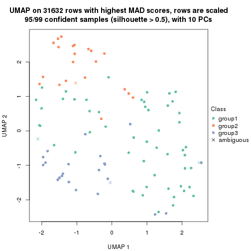
dimension_reduction(res, k = 4, method = "UMAP")

dimension_reduction(res, k = 5, method = "UMAP")
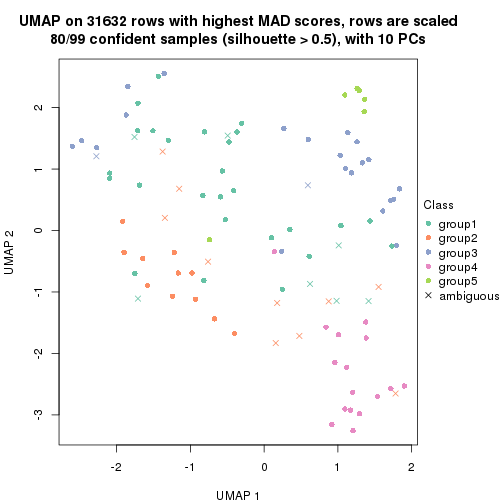
dimension_reduction(res, k = 6, method = "UMAP")

Following heatmap shows how subgroups are split when increasing k:
collect_classes(res)
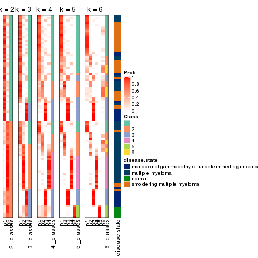
Test correlation between subgroups and known annotations. If the known annotation is numeric, one-way ANOVA test is applied, and if the known annotation is discrete, chi-squared contingency table test is applied.
test_to_known_factors(res)
#> n disease.state(p) k
#> MAD:pam 97 1.24e-06 2
#> MAD:pam 95 6.91e-13 3
#> MAD:pam 79 2.93e-12 4
#> MAD:pam 80 2.25e-22 5
#> MAD:pam 71 5.62e-16 6
If matrix rows can be associated to genes, consider to use GO_Enrichment(res,
...) to perform function enrichment for the signature genes.
The object with results only for a single top-value method and a single partition method can be extracted as:
res = res_list["MAD", "mclust"]
# you can also extract it by
# res = res_list["MAD:mclust"]
A summary of res and all the functions that can be applied to it:
res
#> A 'ConsensusPartition' object with k = 2, 3, 4, 5, 6.
#> On a matrix with 31632 rows and 99 columns.
#> Top rows (1000, 2000, 3000, 4000, 5000) are extracted by 'MAD' method.
#> Subgroups are detected by 'mclust' method.
#> Performed in total 1250 partitions by row resampling.
#> Best k for subgroups seems to be 3.
#>
#> Following methods can be applied to this 'ConsensusPartition' object:
#> [1] "cola_report" "collect_classes" "collect_plots"
#> [4] "collect_stats" "colnames" "compare_signatures"
#> [7] "consensus_heatmap" "dimension_reduction" "functional_enrichment"
#> [10] "get_anno_col" "get_anno" "get_classes"
#> [13] "get_consensus" "get_matrix" "get_membership"
#> [16] "get_param" "get_signatures" "get_stats"
#> [19] "is_best_k" "is_stable_k" "membership_heatmap"
#> [22] "ncol" "nrow" "plot_ecdf"
#> [25] "rownames" "select_partition_number" "show"
#> [28] "suggest_best_k" "test_to_known_factors"
collect_plots() function collects all the plots made from res for all k (number of partitions)
into one single page to provide an easy and fast comparison between different k.
collect_plots(res)
The plots are:
k and the heatmap of
predicted classes for each k.k.k.k.All the plots in panels can be made by individual functions and they are plotted later in this section.
select_partition_number() produces several plots showing different
statistics for choosing “optimized” k. There are following statistics:
k;k, the area increased is defined as \(A_k - A_{k-1}\).The detailed explanations of these statistics can be found in the cola vignette.
Generally speaking, lower PAC score, higher mean silhouette score or higher
concordance corresponds to better partition. Rand index and Jaccard index
measure how similar the current partition is compared to partition with k-1.
If they are too similar, we won't accept k is better than k-1.
select_partition_number(res)
The numeric values for all these statistics can be obtained by get_stats().
get_stats(res)
#> k 1-PAC mean_silhouette concordance area_increased Rand Jaccard
#> 2 2 0.189 0.486 0.705 0.358 0.551 0.551
#> 3 3 0.487 0.768 0.863 0.718 0.680 0.483
#> 4 4 0.605 0.674 0.825 0.132 0.897 0.732
#> 5 5 0.797 0.744 0.852 0.120 0.827 0.499
#> 6 6 0.882 0.855 0.924 0.042 0.945 0.759
suggest_best_k() suggests the best \(k\) based on these statistics. The rules are as follows:
NA.suggest_best_k(res)
#> [1] 3
Following shows the table of the partitions (You need to click the show/hide
code output link to see it). The membership matrix (columns with name p*)
is inferred by
clue::cl_consensus()
function with the SE method. Basically the value in the membership matrix
represents the probability to belong to a certain group. The finall class
label for an item is determined with the group with highest probability it
belongs to.
In get_classes() function, the entropy is calculated from the membership
matrix and the silhouette score is calculated from the consensus matrix.
cbind(get_classes(res, k = 2), get_membership(res, k = 2))
#> class entropy silhouette p1 p2
#> GSM1152309 2 0.7883 0.6030 0.236 0.764
#> GSM1152310 1 0.9775 -0.1641 0.588 0.412
#> GSM1152311 2 0.9732 0.6271 0.404 0.596
#> GSM1152312 1 0.5946 0.6771 0.856 0.144
#> GSM1152313 1 0.9998 -0.2889 0.508 0.492
#> GSM1152314 1 0.5059 0.6984 0.888 0.112
#> GSM1152315 2 0.9977 0.5314 0.472 0.528
#> GSM1152316 2 0.5629 0.5818 0.132 0.868
#> GSM1152317 2 0.2948 0.5360 0.052 0.948
#> GSM1152318 2 0.2948 0.5360 0.052 0.948
#> GSM1152319 2 0.9732 0.6271 0.404 0.596
#> GSM1152320 2 0.9754 0.6215 0.408 0.592
#> GSM1152321 2 0.2948 0.5360 0.052 0.948
#> GSM1152322 2 0.4939 0.5729 0.108 0.892
#> GSM1152323 2 0.9988 0.4957 0.480 0.520
#> GSM1152324 2 0.9732 0.6271 0.404 0.596
#> GSM1152325 2 0.2948 0.5360 0.052 0.948
#> GSM1152326 2 0.9775 0.6135 0.412 0.588
#> GSM1152327 2 0.6801 0.5940 0.180 0.820
#> GSM1152328 1 0.9833 0.0115 0.576 0.424
#> GSM1152329 2 0.9988 0.4063 0.480 0.520
#> GSM1152330 2 0.9754 0.6215 0.408 0.592
#> GSM1152331 2 0.4690 0.5685 0.100 0.900
#> GSM1152332 1 0.5059 0.6984 0.888 0.112
#> GSM1152333 1 0.9129 0.3714 0.672 0.328
#> GSM1152334 1 0.9754 -0.1307 0.592 0.408
#> GSM1152335 2 0.9775 0.6135 0.412 0.588
#> GSM1152336 2 0.9732 0.6271 0.404 0.596
#> GSM1152337 2 0.9732 0.6271 0.404 0.596
#> GSM1152338 2 0.9754 0.6215 0.408 0.592
#> GSM1152339 1 0.9996 -0.3119 0.512 0.488
#> GSM1152340 1 0.9922 -0.1113 0.552 0.448
#> GSM1152341 2 0.9922 0.5188 0.448 0.552
#> GSM1152342 1 0.9993 -0.2738 0.516 0.484
#> GSM1152343 2 0.9732 0.6271 0.404 0.596
#> GSM1152344 2 0.9710 0.6276 0.400 0.600
#> GSM1152345 1 0.9963 -0.1892 0.536 0.464
#> GSM1152346 2 0.2948 0.5360 0.052 0.948
#> GSM1152347 1 0.3274 0.6828 0.940 0.060
#> GSM1152348 2 0.9944 0.4935 0.456 0.544
#> GSM1152349 1 0.0672 0.6511 0.992 0.008
#> GSM1152355 1 0.4431 0.6611 0.908 0.092
#> GSM1152356 1 0.1843 0.6710 0.972 0.028
#> GSM1152357 1 0.4161 0.6956 0.916 0.084
#> GSM1152358 1 0.9552 -0.0688 0.624 0.376
#> GSM1152359 1 0.8327 0.5324 0.736 0.264
#> GSM1152360 1 0.5408 0.6992 0.876 0.124
#> GSM1152361 2 1.0000 0.3396 0.496 0.504
#> GSM1152362 2 0.9775 0.6135 0.412 0.588
#> GSM1152363 1 0.5408 0.6932 0.876 0.124
#> GSM1152364 1 0.6247 0.6833 0.844 0.156
#> GSM1152365 1 0.5178 0.6994 0.884 0.116
#> GSM1152366 1 0.6148 0.6861 0.848 0.152
#> GSM1152367 1 0.5408 0.6986 0.876 0.124
#> GSM1152368 1 0.5946 0.6905 0.856 0.144
#> GSM1152369 1 0.5294 0.6993 0.880 0.120
#> GSM1152370 1 0.6148 0.6862 0.848 0.152
#> GSM1152371 1 0.5178 0.6994 0.884 0.116
#> GSM1152372 1 0.5178 0.6996 0.884 0.116
#> GSM1152373 1 0.5294 0.6950 0.880 0.120
#> GSM1152374 1 0.9686 0.1482 0.604 0.396
#> GSM1152375 1 0.6247 0.6833 0.844 0.156
#> GSM1152376 1 0.5178 0.6995 0.884 0.116
#> GSM1152377 1 0.6247 0.6833 0.844 0.156
#> GSM1152378 1 0.5408 0.6986 0.876 0.124
#> GSM1152379 1 0.9580 0.2120 0.620 0.380
#> GSM1152380 1 0.5178 0.6996 0.884 0.116
#> GSM1152381 1 0.5059 0.6984 0.888 0.112
#> GSM1152382 1 0.5294 0.6993 0.880 0.120
#> GSM1152383 1 0.5946 0.6892 0.856 0.144
#> GSM1152384 1 0.5294 0.6950 0.880 0.120
#> GSM1152385 2 0.5408 0.5796 0.124 0.876
#> GSM1152386 2 0.4562 0.5648 0.096 0.904
#> GSM1152387 2 0.9732 0.6271 0.404 0.596
#> GSM1152289 2 0.9732 0.6271 0.404 0.596
#> GSM1152290 1 0.6148 0.5491 0.848 0.152
#> GSM1152291 1 0.8327 0.5475 0.736 0.264
#> GSM1152292 1 0.0672 0.6511 0.992 0.008
#> GSM1152293 1 0.1633 0.6513 0.976 0.024
#> GSM1152294 1 0.9552 -0.0688 0.624 0.376
#> GSM1152295 1 0.5059 0.6984 0.888 0.112
#> GSM1152296 1 0.6247 0.6833 0.844 0.156
#> GSM1152297 1 0.7950 0.3854 0.760 0.240
#> GSM1152298 1 0.9522 -0.0507 0.628 0.372
#> GSM1152299 1 0.9608 -0.0978 0.616 0.384
#> GSM1152300 1 0.3879 0.6893 0.924 0.076
#> GSM1152301 1 0.0672 0.6511 0.992 0.008
#> GSM1152302 1 0.0672 0.6511 0.992 0.008
#> GSM1152303 1 0.0672 0.6511 0.992 0.008
#> GSM1152304 1 0.7528 0.4400 0.784 0.216
#> GSM1152305 1 0.8763 0.4638 0.704 0.296
#> GSM1152306 1 0.0672 0.6511 0.992 0.008
#> GSM1152307 1 0.0672 0.6511 0.992 0.008
#> GSM1152308 1 0.9815 0.0362 0.580 0.420
#> GSM1152350 1 0.9552 -0.0688 0.624 0.376
#> GSM1152351 1 0.9580 -0.0826 0.620 0.380
#> GSM1152352 1 0.9552 -0.0688 0.624 0.376
#> GSM1152353 1 0.8386 0.3059 0.732 0.268
#> GSM1152354 1 0.5294 0.5823 0.880 0.120
cbind(get_classes(res, k = 3), get_membership(res, k = 3))
#> class entropy silhouette p1 p2 p3
#> GSM1152309 2 0.1411 0.8665 0.036 0.964 0.000
#> GSM1152310 2 0.3826 0.7738 0.008 0.868 0.124
#> GSM1152311 2 0.3851 0.8830 0.136 0.860 0.004
#> GSM1152312 1 0.2269 0.8509 0.944 0.016 0.040
#> GSM1152313 2 0.3484 0.8495 0.048 0.904 0.048
#> GSM1152314 1 0.1878 0.8509 0.952 0.004 0.044
#> GSM1152315 2 0.2165 0.8227 0.000 0.936 0.064
#> GSM1152316 2 0.1832 0.8648 0.036 0.956 0.008
#> GSM1152317 2 0.1411 0.8665 0.036 0.964 0.000
#> GSM1152318 2 0.0000 0.8429 0.000 1.000 0.000
#> GSM1152319 2 0.3607 0.8839 0.112 0.880 0.008
#> GSM1152320 2 0.3851 0.8830 0.136 0.860 0.004
#> GSM1152321 2 0.1529 0.8678 0.040 0.960 0.000
#> GSM1152322 2 0.0000 0.8429 0.000 1.000 0.000
#> GSM1152323 2 0.1411 0.8273 0.000 0.964 0.036
#> GSM1152324 2 0.1950 0.8689 0.040 0.952 0.008
#> GSM1152325 2 0.1529 0.8678 0.040 0.960 0.000
#> GSM1152326 2 0.3851 0.8830 0.136 0.860 0.004
#> GSM1152327 2 0.1529 0.8678 0.040 0.960 0.000
#> GSM1152328 2 0.6298 0.5552 0.388 0.608 0.004
#> GSM1152329 2 0.5560 0.7241 0.300 0.700 0.000
#> GSM1152330 2 0.3851 0.8830 0.136 0.860 0.004
#> GSM1152331 2 0.1529 0.8678 0.040 0.960 0.000
#> GSM1152332 1 0.1015 0.8558 0.980 0.008 0.012
#> GSM1152333 1 0.5443 0.5658 0.736 0.260 0.004
#> GSM1152334 2 0.5335 0.6035 0.008 0.760 0.232
#> GSM1152335 2 0.3851 0.8830 0.136 0.860 0.004
#> GSM1152336 2 0.3755 0.8836 0.120 0.872 0.008
#> GSM1152337 2 0.3851 0.8830 0.136 0.860 0.004
#> GSM1152338 2 0.3851 0.8830 0.136 0.860 0.004
#> GSM1152339 2 0.6081 0.6449 0.344 0.652 0.004
#> GSM1152340 2 0.6033 0.6642 0.336 0.660 0.004
#> GSM1152341 2 0.4346 0.8490 0.184 0.816 0.000
#> GSM1152342 2 0.3966 0.8651 0.100 0.876 0.024
#> GSM1152343 2 0.0892 0.8435 0.000 0.980 0.020
#> GSM1152344 2 0.3851 0.8830 0.136 0.860 0.004
#> GSM1152345 2 0.3851 0.8830 0.136 0.860 0.004
#> GSM1152346 2 0.0000 0.8429 0.000 1.000 0.000
#> GSM1152347 1 0.6298 0.4574 0.608 0.004 0.388
#> GSM1152348 2 0.5785 0.7226 0.300 0.696 0.004
#> GSM1152349 1 0.6215 0.3748 0.572 0.000 0.428
#> GSM1152355 1 0.4206 0.7585 0.872 0.040 0.088
#> GSM1152356 1 0.5058 0.7213 0.820 0.032 0.148
#> GSM1152357 1 0.4526 0.7578 0.856 0.040 0.104
#> GSM1152358 3 0.6205 0.5990 0.008 0.336 0.656
#> GSM1152359 1 0.4589 0.7041 0.820 0.172 0.008
#> GSM1152360 1 0.0424 0.8562 0.992 0.008 0.000
#> GSM1152361 2 0.4293 0.8678 0.164 0.832 0.004
#> GSM1152362 2 0.4033 0.8815 0.136 0.856 0.008
#> GSM1152363 1 0.1015 0.8555 0.980 0.008 0.012
#> GSM1152364 1 0.1765 0.8318 0.956 0.040 0.004
#> GSM1152365 1 0.0661 0.8557 0.988 0.008 0.004
#> GSM1152366 1 0.0424 0.8562 0.992 0.008 0.000
#> GSM1152367 1 0.0829 0.8530 0.984 0.004 0.012
#> GSM1152368 1 0.1950 0.8518 0.952 0.008 0.040
#> GSM1152369 1 0.0829 0.8530 0.984 0.004 0.012
#> GSM1152370 1 0.0424 0.8562 0.992 0.008 0.000
#> GSM1152371 1 0.1015 0.8533 0.980 0.008 0.012
#> GSM1152372 1 0.2063 0.8511 0.948 0.008 0.044
#> GSM1152373 1 0.2063 0.8511 0.948 0.008 0.044
#> GSM1152374 2 0.4551 0.8744 0.140 0.840 0.020
#> GSM1152375 1 0.0424 0.8562 0.992 0.008 0.000
#> GSM1152376 1 0.1015 0.8555 0.980 0.008 0.012
#> GSM1152377 1 0.0424 0.8562 0.992 0.008 0.000
#> GSM1152378 1 0.1751 0.8519 0.960 0.012 0.028
#> GSM1152379 1 0.6489 -0.0941 0.540 0.456 0.004
#> GSM1152380 1 0.0829 0.8553 0.984 0.004 0.012
#> GSM1152381 1 0.0848 0.8561 0.984 0.008 0.008
#> GSM1152382 1 0.0661 0.8557 0.988 0.008 0.004
#> GSM1152383 1 0.2116 0.8298 0.948 0.040 0.012
#> GSM1152384 1 0.1170 0.8560 0.976 0.008 0.016
#> GSM1152385 2 0.1964 0.8738 0.056 0.944 0.000
#> GSM1152386 2 0.2116 0.8607 0.040 0.948 0.012
#> GSM1152387 2 0.3851 0.8830 0.136 0.860 0.004
#> GSM1152289 2 0.3851 0.8830 0.136 0.860 0.004
#> GSM1152290 3 0.0747 0.7758 0.016 0.000 0.984
#> GSM1152291 1 0.8155 0.4579 0.580 0.088 0.332
#> GSM1152292 3 0.1163 0.7786 0.028 0.000 0.972
#> GSM1152293 3 0.4465 0.6412 0.176 0.004 0.820
#> GSM1152294 3 0.5938 0.7265 0.020 0.248 0.732
#> GSM1152295 1 0.1950 0.8518 0.952 0.008 0.040
#> GSM1152296 1 0.1878 0.8343 0.952 0.044 0.004
#> GSM1152297 3 0.3502 0.7946 0.020 0.084 0.896
#> GSM1152298 3 0.1337 0.7841 0.012 0.016 0.972
#> GSM1152299 3 0.4413 0.7843 0.008 0.160 0.832
#> GSM1152300 1 0.5929 0.5774 0.676 0.004 0.320
#> GSM1152301 1 0.6215 0.3748 0.572 0.000 0.428
#> GSM1152302 3 0.1163 0.7786 0.028 0.000 0.972
#> GSM1152303 3 0.1163 0.7786 0.028 0.000 0.972
#> GSM1152304 3 0.1337 0.7826 0.016 0.012 0.972
#> GSM1152305 1 0.6906 0.3838 0.644 0.324 0.032
#> GSM1152306 3 0.6252 -0.0235 0.444 0.000 0.556
#> GSM1152307 1 0.6192 0.3760 0.580 0.000 0.420
#> GSM1152308 2 0.5171 0.7821 0.204 0.784 0.012
#> GSM1152350 3 0.5502 0.7302 0.008 0.248 0.744
#> GSM1152351 3 0.5502 0.7302 0.008 0.248 0.744
#> GSM1152352 3 0.5536 0.7415 0.012 0.236 0.752
#> GSM1152353 3 0.5597 0.7541 0.020 0.216 0.764
#> GSM1152354 3 0.9513 0.4729 0.256 0.252 0.492
cbind(get_classes(res, k = 4), get_membership(res, k = 4))
#> class entropy silhouette p1 p2 p3 p4
#> GSM1152309 2 0.3749 0.8417 0.000 0.840 0.032 0.128
#> GSM1152310 3 0.4978 0.0612 0.000 0.384 0.612 0.004
#> GSM1152311 2 0.0376 0.8658 0.004 0.992 0.000 0.004
#> GSM1152312 4 0.8164 0.3234 0.400 0.032 0.156 0.412
#> GSM1152313 2 0.4881 0.7580 0.000 0.756 0.196 0.048
#> GSM1152314 1 0.7892 -0.3562 0.432 0.020 0.152 0.396
#> GSM1152315 2 0.5108 0.6632 0.000 0.672 0.308 0.020
#> GSM1152316 2 0.6251 0.7196 0.000 0.664 0.196 0.140
#> GSM1152317 2 0.4163 0.8198 0.000 0.792 0.020 0.188
#> GSM1152318 2 0.5307 0.7871 0.000 0.736 0.076 0.188
#> GSM1152319 2 0.1635 0.8658 0.000 0.948 0.044 0.008
#> GSM1152320 2 0.0336 0.8651 0.008 0.992 0.000 0.000
#> GSM1152321 2 0.4549 0.8123 0.000 0.776 0.036 0.188
#> GSM1152322 2 0.5889 0.7534 0.000 0.696 0.116 0.188
#> GSM1152323 2 0.6317 0.6474 0.000 0.624 0.280 0.096
#> GSM1152324 2 0.2197 0.8665 0.000 0.928 0.048 0.024
#> GSM1152325 2 0.4636 0.8102 0.000 0.772 0.040 0.188
#> GSM1152326 2 0.0336 0.8651 0.008 0.992 0.000 0.000
#> GSM1152327 2 0.4979 0.8060 0.000 0.760 0.064 0.176
#> GSM1152328 2 0.1356 0.8651 0.008 0.960 0.032 0.000
#> GSM1152329 2 0.0336 0.8651 0.008 0.992 0.000 0.000
#> GSM1152330 2 0.0336 0.8651 0.008 0.992 0.000 0.000
#> GSM1152331 2 0.1824 0.8650 0.004 0.936 0.000 0.060
#> GSM1152332 1 0.3959 0.7349 0.840 0.092 0.068 0.000
#> GSM1152333 1 0.4955 0.3255 0.556 0.444 0.000 0.000
#> GSM1152334 3 0.3726 0.4641 0.000 0.212 0.788 0.000
#> GSM1152335 2 0.0336 0.8651 0.008 0.992 0.000 0.000
#> GSM1152336 2 0.1888 0.8665 0.000 0.940 0.044 0.016
#> GSM1152337 2 0.0188 0.8654 0.004 0.996 0.000 0.000
#> GSM1152338 2 0.0336 0.8651 0.008 0.992 0.000 0.000
#> GSM1152339 2 0.3219 0.7202 0.164 0.836 0.000 0.000
#> GSM1152340 2 0.0927 0.8663 0.016 0.976 0.008 0.000
#> GSM1152341 2 0.0336 0.8651 0.008 0.992 0.000 0.000
#> GSM1152342 2 0.5180 0.7328 0.064 0.740 0.196 0.000
#> GSM1152343 2 0.2976 0.8306 0.000 0.872 0.120 0.008
#> GSM1152344 2 0.0524 0.8660 0.004 0.988 0.000 0.008
#> GSM1152345 2 0.3300 0.8163 0.008 0.848 0.144 0.000
#> GSM1152346 2 0.5889 0.7534 0.000 0.696 0.116 0.188
#> GSM1152347 4 0.4004 0.5310 0.024 0.000 0.164 0.812
#> GSM1152348 2 0.0921 0.8582 0.028 0.972 0.000 0.000
#> GSM1152349 4 0.6071 0.5172 0.144 0.000 0.172 0.684
#> GSM1152355 1 0.1635 0.7937 0.948 0.000 0.044 0.008
#> GSM1152356 1 0.3249 0.6728 0.852 0.000 0.140 0.008
#> GSM1152357 1 0.3712 0.6611 0.832 0.012 0.152 0.004
#> GSM1152358 3 0.0817 0.6673 0.000 0.024 0.976 0.000
#> GSM1152359 1 0.6386 0.4410 0.640 0.236 0.124 0.000
#> GSM1152360 1 0.0895 0.8235 0.976 0.020 0.004 0.000
#> GSM1152361 2 0.0657 0.8643 0.012 0.984 0.004 0.000
#> GSM1152362 2 0.2520 0.8581 0.004 0.904 0.088 0.004
#> GSM1152363 1 0.1296 0.8236 0.964 0.028 0.004 0.004
#> GSM1152364 1 0.0336 0.8066 0.992 0.000 0.000 0.008
#> GSM1152365 1 0.2319 0.8036 0.924 0.040 0.036 0.000
#> GSM1152366 1 0.0817 0.8245 0.976 0.024 0.000 0.000
#> GSM1152367 1 0.1004 0.8243 0.972 0.024 0.004 0.000
#> GSM1152368 1 0.7886 -0.3302 0.436 0.024 0.140 0.400
#> GSM1152369 1 0.1004 0.8243 0.972 0.024 0.004 0.000
#> GSM1152370 1 0.0592 0.8230 0.984 0.016 0.000 0.000
#> GSM1152371 1 0.1305 0.8195 0.960 0.036 0.004 0.000
#> GSM1152372 4 0.7959 0.3924 0.376 0.024 0.152 0.448
#> GSM1152373 4 0.8008 0.3342 0.400 0.024 0.156 0.420
#> GSM1152374 2 0.3710 0.7881 0.004 0.804 0.192 0.000
#> GSM1152375 1 0.0592 0.8230 0.984 0.016 0.000 0.000
#> GSM1152376 1 0.1339 0.8235 0.964 0.024 0.008 0.004
#> GSM1152377 1 0.1004 0.8242 0.972 0.024 0.000 0.004
#> GSM1152378 1 0.3829 0.6572 0.828 0.016 0.152 0.004
#> GSM1152379 1 0.6137 0.2414 0.504 0.448 0.048 0.000
#> GSM1152380 1 0.1004 0.8242 0.972 0.024 0.000 0.004
#> GSM1152381 1 0.0817 0.8245 0.976 0.024 0.000 0.000
#> GSM1152382 1 0.1211 0.8179 0.960 0.040 0.000 0.000
#> GSM1152383 1 0.0336 0.8066 0.992 0.000 0.000 0.008
#> GSM1152384 1 0.2383 0.7979 0.924 0.024 0.048 0.004
#> GSM1152385 2 0.1743 0.8655 0.004 0.940 0.000 0.056
#> GSM1152386 2 0.6656 0.6713 0.000 0.624 0.188 0.188
#> GSM1152387 2 0.1762 0.8634 0.004 0.944 0.048 0.004
#> GSM1152289 2 0.2197 0.8557 0.004 0.916 0.080 0.000
#> GSM1152290 4 0.4994 -0.2492 0.000 0.000 0.480 0.520
#> GSM1152291 4 0.4578 0.5386 0.016 0.028 0.156 0.800
#> GSM1152292 3 0.4830 0.4682 0.000 0.000 0.608 0.392
#> GSM1152293 3 0.4830 0.4660 0.000 0.000 0.608 0.392
#> GSM1152294 3 0.0188 0.6729 0.004 0.000 0.996 0.000
#> GSM1152295 4 0.7559 0.5673 0.252 0.024 0.156 0.568
#> GSM1152296 1 0.0336 0.8066 0.992 0.000 0.000 0.008
#> GSM1152297 3 0.0336 0.6718 0.008 0.000 0.992 0.000
#> GSM1152298 3 0.4817 0.4724 0.000 0.000 0.612 0.388
#> GSM1152299 3 0.1284 0.6662 0.000 0.024 0.964 0.012
#> GSM1152300 4 0.4140 0.5360 0.024 0.004 0.160 0.812
#> GSM1152301 4 0.3881 0.5229 0.016 0.000 0.172 0.812
#> GSM1152302 3 0.4830 0.4682 0.000 0.000 0.608 0.392
#> GSM1152303 3 0.4761 0.4819 0.000 0.000 0.628 0.372
#> GSM1152304 3 0.4830 0.4682 0.000 0.000 0.608 0.392
#> GSM1152305 2 0.6881 0.6614 0.056 0.680 0.156 0.108
#> GSM1152306 3 0.5453 0.4354 0.020 0.000 0.592 0.388
#> GSM1152307 4 0.7398 0.3731 0.324 0.000 0.184 0.492
#> GSM1152308 2 0.4538 0.7683 0.024 0.760 0.216 0.000
#> GSM1152350 3 0.0188 0.6744 0.000 0.004 0.996 0.000
#> GSM1152351 3 0.0188 0.6744 0.000 0.004 0.996 0.000
#> GSM1152352 3 0.0188 0.6744 0.000 0.004 0.996 0.000
#> GSM1152353 3 0.0336 0.6718 0.008 0.000 0.992 0.000
#> GSM1152354 3 0.3355 0.4716 0.160 0.004 0.836 0.000
cbind(get_classes(res, k = 5), get_membership(res, k = 5))
#> class entropy silhouette p1 p2 p3 p4 p5
#> GSM1152309 4 0.3730 0.564 0.000 0.288 0.000 0.712 0.000
#> GSM1152310 5 0.1357 0.893 0.000 0.004 0.000 0.048 0.948
#> GSM1152311 2 0.1892 0.853 0.004 0.916 0.000 0.080 0.000
#> GSM1152312 3 0.7097 0.152 0.240 0.344 0.400 0.000 0.016
#> GSM1152313 2 0.6853 0.522 0.000 0.592 0.200 0.100 0.108
#> GSM1152314 1 0.5658 0.309 0.512 0.080 0.408 0.000 0.000
#> GSM1152315 5 0.5058 0.245 0.000 0.040 0.000 0.384 0.576
#> GSM1152316 4 0.0912 0.850 0.000 0.016 0.000 0.972 0.012
#> GSM1152317 4 0.0794 0.851 0.000 0.028 0.000 0.972 0.000
#> GSM1152318 4 0.0865 0.853 0.000 0.024 0.000 0.972 0.004
#> GSM1152319 2 0.1732 0.863 0.080 0.920 0.000 0.000 0.000
#> GSM1152320 2 0.1732 0.863 0.080 0.920 0.000 0.000 0.000
#> GSM1152321 4 0.0865 0.853 0.000 0.024 0.000 0.972 0.004
#> GSM1152322 4 0.0865 0.853 0.000 0.024 0.000 0.972 0.004
#> GSM1152323 4 0.2873 0.738 0.000 0.016 0.000 0.856 0.128
#> GSM1152324 4 0.4572 0.569 0.036 0.280 0.000 0.684 0.000
#> GSM1152325 4 0.0865 0.853 0.000 0.024 0.000 0.972 0.004
#> GSM1152326 2 0.1732 0.863 0.080 0.920 0.000 0.000 0.000
#> GSM1152327 4 0.0912 0.850 0.000 0.016 0.000 0.972 0.012
#> GSM1152328 2 0.1704 0.855 0.004 0.928 0.000 0.068 0.000
#> GSM1152329 2 0.1732 0.863 0.080 0.920 0.000 0.000 0.000
#> GSM1152330 2 0.1981 0.859 0.016 0.920 0.000 0.064 0.000
#> GSM1152331 4 0.1341 0.837 0.000 0.056 0.000 0.944 0.000
#> GSM1152332 2 0.4251 0.520 0.372 0.624 0.000 0.000 0.004
#> GSM1152333 2 0.1908 0.856 0.092 0.908 0.000 0.000 0.000
#> GSM1152334 5 0.1012 0.910 0.000 0.020 0.000 0.012 0.968
#> GSM1152335 2 0.1894 0.856 0.008 0.920 0.000 0.072 0.000
#> GSM1152336 2 0.3590 0.825 0.080 0.828 0.000 0.092 0.000
#> GSM1152337 2 0.2074 0.864 0.036 0.920 0.000 0.044 0.000
#> GSM1152338 2 0.2077 0.864 0.040 0.920 0.000 0.040 0.000
#> GSM1152339 2 0.1732 0.863 0.080 0.920 0.000 0.000 0.000
#> GSM1152340 2 0.2444 0.859 0.016 0.904 0.000 0.068 0.012
#> GSM1152341 2 0.1732 0.863 0.080 0.920 0.000 0.000 0.000
#> GSM1152342 2 0.3949 0.520 0.000 0.668 0.000 0.000 0.332
#> GSM1152343 2 0.4009 0.552 0.000 0.684 0.000 0.004 0.312
#> GSM1152344 2 0.3586 0.679 0.000 0.736 0.000 0.264 0.000
#> GSM1152345 2 0.2804 0.848 0.008 0.880 0.004 0.096 0.012
#> GSM1152346 4 0.0865 0.853 0.000 0.024 0.000 0.972 0.004
#> GSM1152347 3 0.1732 0.571 0.000 0.080 0.920 0.000 0.000
#> GSM1152348 2 0.1732 0.863 0.080 0.920 0.000 0.000 0.000
#> GSM1152349 3 0.1792 0.577 0.084 0.000 0.916 0.000 0.000
#> GSM1152355 1 0.0671 0.917 0.980 0.000 0.004 0.000 0.016
#> GSM1152356 1 0.1270 0.882 0.948 0.000 0.000 0.000 0.052
#> GSM1152357 1 0.0794 0.907 0.972 0.000 0.000 0.000 0.028
#> GSM1152358 5 0.1200 0.911 0.000 0.016 0.008 0.012 0.964
#> GSM1152359 2 0.2193 0.855 0.092 0.900 0.000 0.000 0.008
#> GSM1152360 1 0.0404 0.924 0.988 0.000 0.000 0.000 0.012
#> GSM1152361 2 0.2429 0.862 0.020 0.900 0.000 0.076 0.004
#> GSM1152362 2 0.4128 0.737 0.020 0.752 0.000 0.220 0.008
#> GSM1152363 1 0.0451 0.925 0.988 0.000 0.004 0.000 0.008
#> GSM1152364 1 0.0162 0.927 0.996 0.000 0.004 0.000 0.000
#> GSM1152365 1 0.0566 0.918 0.984 0.012 0.000 0.004 0.000
#> GSM1152366 1 0.0000 0.927 1.000 0.000 0.000 0.000 0.000
#> GSM1152367 1 0.0671 0.921 0.980 0.000 0.000 0.016 0.004
#> GSM1152368 1 0.5589 0.373 0.548 0.080 0.372 0.000 0.000
#> GSM1152369 1 0.0671 0.921 0.980 0.000 0.000 0.016 0.004
#> GSM1152370 1 0.0000 0.927 1.000 0.000 0.000 0.000 0.000
#> GSM1152371 1 0.0671 0.921 0.980 0.000 0.000 0.016 0.004
#> GSM1152372 3 0.6765 0.122 0.272 0.344 0.384 0.000 0.000
#> GSM1152373 1 0.5797 0.311 0.512 0.080 0.404 0.000 0.004
#> GSM1152374 2 0.4054 0.817 0.004 0.824 0.028 0.096 0.048
#> GSM1152375 1 0.0000 0.927 1.000 0.000 0.000 0.000 0.000
#> GSM1152376 1 0.0162 0.927 0.996 0.000 0.004 0.000 0.000
#> GSM1152377 1 0.0000 0.927 1.000 0.000 0.000 0.000 0.000
#> GSM1152378 1 0.0000 0.927 1.000 0.000 0.000 0.000 0.000
#> GSM1152379 2 0.2304 0.852 0.100 0.892 0.000 0.000 0.008
#> GSM1152380 1 0.0162 0.927 0.996 0.000 0.004 0.000 0.000
#> GSM1152381 1 0.0162 0.927 0.996 0.000 0.004 0.000 0.000
#> GSM1152382 1 0.0566 0.922 0.984 0.000 0.000 0.012 0.004
#> GSM1152383 1 0.0162 0.927 0.996 0.000 0.004 0.000 0.000
#> GSM1152384 1 0.0162 0.927 0.996 0.000 0.004 0.000 0.000
#> GSM1152385 4 0.4045 0.418 0.000 0.356 0.000 0.644 0.000
#> GSM1152386 4 0.0912 0.850 0.000 0.016 0.000 0.972 0.012
#> GSM1152387 2 0.2513 0.835 0.000 0.876 0.000 0.116 0.008
#> GSM1152289 2 0.2077 0.849 0.000 0.908 0.000 0.084 0.008
#> GSM1152290 3 0.4288 0.529 0.000 0.000 0.664 0.012 0.324
#> GSM1152291 3 0.2286 0.566 0.000 0.108 0.888 0.000 0.004
#> GSM1152292 3 0.4517 0.498 0.000 0.000 0.600 0.012 0.388
#> GSM1152293 3 0.4517 0.498 0.000 0.000 0.600 0.012 0.388
#> GSM1152294 5 0.0671 0.917 0.004 0.000 0.000 0.016 0.980
#> GSM1152295 3 0.4547 0.453 0.044 0.252 0.704 0.000 0.000
#> GSM1152296 1 0.0000 0.927 1.000 0.000 0.000 0.000 0.000
#> GSM1152297 5 0.0854 0.907 0.012 0.000 0.004 0.008 0.976
#> GSM1152298 3 0.4582 0.470 0.000 0.000 0.572 0.012 0.416
#> GSM1152299 4 0.5778 -0.147 0.000 0.000 0.088 0.464 0.448
#> GSM1152300 3 0.1892 0.571 0.004 0.080 0.916 0.000 0.000
#> GSM1152301 3 0.0162 0.587 0.004 0.000 0.996 0.000 0.000
#> GSM1152302 3 0.4517 0.498 0.000 0.000 0.600 0.012 0.388
#> GSM1152303 3 0.4517 0.498 0.000 0.000 0.600 0.012 0.388
#> GSM1152304 3 0.4574 0.473 0.000 0.000 0.576 0.012 0.412
#> GSM1152305 2 0.4812 0.313 0.012 0.612 0.364 0.000 0.012
#> GSM1152306 3 0.4655 0.498 0.004 0.000 0.600 0.012 0.384
#> GSM1152307 3 0.3985 0.565 0.028 0.000 0.772 0.004 0.196
#> GSM1152308 2 0.4787 0.766 0.088 0.748 0.000 0.012 0.152
#> GSM1152350 5 0.0671 0.919 0.000 0.004 0.000 0.016 0.980
#> GSM1152351 5 0.0671 0.919 0.000 0.004 0.000 0.016 0.980
#> GSM1152352 5 0.0671 0.919 0.000 0.004 0.000 0.016 0.980
#> GSM1152353 5 0.1518 0.905 0.012 0.000 0.020 0.016 0.952
#> GSM1152354 5 0.1631 0.902 0.004 0.004 0.024 0.020 0.948
cbind(get_classes(res, k = 6), get_membership(res, k = 6))
#> class entropy silhouette p1 p2 p3 p4 p5 p6
#> GSM1152309 4 0.3464 0.50795 0.000 0.312 0.000 0.688 0.000 0.000
#> GSM1152310 5 0.1168 0.88389 0.016 0.000 0.000 0.028 0.956 0.000
#> GSM1152311 2 0.0713 0.91430 0.000 0.972 0.000 0.028 0.000 0.000
#> GSM1152312 6 0.1075 0.88928 0.048 0.000 0.000 0.000 0.000 0.952
#> GSM1152313 2 0.4826 0.75957 0.000 0.748 0.068 0.100 0.008 0.076
#> GSM1152314 6 0.2221 0.88933 0.072 0.000 0.032 0.000 0.000 0.896
#> GSM1152315 5 0.3279 0.72846 0.000 0.028 0.000 0.176 0.796 0.000
#> GSM1152316 4 0.0603 0.83102 0.000 0.000 0.000 0.980 0.004 0.016
#> GSM1152317 4 0.0260 0.83452 0.000 0.008 0.000 0.992 0.000 0.000
#> GSM1152318 4 0.0146 0.83648 0.000 0.004 0.000 0.996 0.000 0.000
#> GSM1152319 2 0.0000 0.91664 0.000 1.000 0.000 0.000 0.000 0.000
#> GSM1152320 2 0.0000 0.91664 0.000 1.000 0.000 0.000 0.000 0.000
#> GSM1152321 4 0.0146 0.83648 0.000 0.004 0.000 0.996 0.000 0.000
#> GSM1152322 4 0.0146 0.83648 0.000 0.004 0.000 0.996 0.000 0.000
#> GSM1152323 4 0.0909 0.82703 0.000 0.000 0.000 0.968 0.020 0.012
#> GSM1152324 4 0.3864 0.14850 0.000 0.480 0.000 0.520 0.000 0.000
#> GSM1152325 4 0.0146 0.83648 0.000 0.004 0.000 0.996 0.000 0.000
#> GSM1152326 2 0.0000 0.91664 0.000 1.000 0.000 0.000 0.000 0.000
#> GSM1152327 4 0.0603 0.83102 0.000 0.000 0.000 0.980 0.004 0.016
#> GSM1152328 2 0.0458 0.91602 0.000 0.984 0.000 0.016 0.000 0.000
#> GSM1152329 2 0.0000 0.91664 0.000 1.000 0.000 0.000 0.000 0.000
#> GSM1152330 2 0.0458 0.91602 0.000 0.984 0.000 0.016 0.000 0.000
#> GSM1152331 4 0.1714 0.78969 0.000 0.092 0.000 0.908 0.000 0.000
#> GSM1152332 2 0.3101 0.69210 0.244 0.756 0.000 0.000 0.000 0.000
#> GSM1152333 2 0.0458 0.91602 0.000 0.984 0.000 0.016 0.000 0.000
#> GSM1152334 5 0.0893 0.88583 0.004 0.004 0.000 0.004 0.972 0.016
#> GSM1152335 2 0.0458 0.91602 0.000 0.984 0.000 0.016 0.000 0.000
#> GSM1152336 2 0.1863 0.85790 0.000 0.896 0.000 0.104 0.000 0.000
#> GSM1152337 2 0.0000 0.91664 0.000 1.000 0.000 0.000 0.000 0.000
#> GSM1152338 2 0.0000 0.91664 0.000 1.000 0.000 0.000 0.000 0.000
#> GSM1152339 2 0.0000 0.91664 0.000 1.000 0.000 0.000 0.000 0.000
#> GSM1152340 2 0.1542 0.90335 0.004 0.936 0.000 0.008 0.000 0.052
#> GSM1152341 2 0.0000 0.91664 0.000 1.000 0.000 0.000 0.000 0.000
#> GSM1152342 5 0.3619 0.61327 0.004 0.316 0.000 0.000 0.680 0.000
#> GSM1152343 5 0.3890 0.44720 0.000 0.400 0.000 0.004 0.596 0.000
#> GSM1152344 2 0.2854 0.76401 0.000 0.792 0.000 0.208 0.000 0.000
#> GSM1152345 2 0.2594 0.87804 0.000 0.880 0.000 0.056 0.004 0.060
#> GSM1152346 4 0.0146 0.83648 0.000 0.004 0.000 0.996 0.000 0.000
#> GSM1152347 6 0.1863 0.85383 0.000 0.000 0.104 0.000 0.000 0.896
#> GSM1152348 2 0.0000 0.91664 0.000 1.000 0.000 0.000 0.000 0.000
#> GSM1152349 3 0.3244 0.67263 0.000 0.000 0.732 0.000 0.000 0.268
#> GSM1152355 1 0.0000 0.98372 1.000 0.000 0.000 0.000 0.000 0.000
#> GSM1152356 1 0.0000 0.98372 1.000 0.000 0.000 0.000 0.000 0.000
#> GSM1152357 1 0.0000 0.98372 1.000 0.000 0.000 0.000 0.000 0.000
#> GSM1152358 5 0.2244 0.85683 0.000 0.004 0.036 0.032 0.912 0.016
#> GSM1152359 2 0.3521 0.60930 0.268 0.724 0.000 0.004 0.004 0.000
#> GSM1152360 1 0.0260 0.98029 0.992 0.000 0.000 0.000 0.000 0.008
#> GSM1152361 2 0.0862 0.91259 0.000 0.972 0.000 0.004 0.016 0.008
#> GSM1152362 2 0.3370 0.81214 0.000 0.812 0.000 0.140 0.004 0.044
#> GSM1152363 1 0.0547 0.97249 0.980 0.000 0.000 0.000 0.000 0.020
#> GSM1152364 1 0.0000 0.98372 1.000 0.000 0.000 0.000 0.000 0.000
#> GSM1152365 1 0.0000 0.98372 1.000 0.000 0.000 0.000 0.000 0.000
#> GSM1152366 1 0.0000 0.98372 1.000 0.000 0.000 0.000 0.000 0.000
#> GSM1152367 1 0.1760 0.93653 0.928 0.000 0.000 0.004 0.020 0.048
#> GSM1152368 6 0.2964 0.77856 0.204 0.000 0.004 0.000 0.000 0.792
#> GSM1152369 1 0.1760 0.93653 0.928 0.000 0.000 0.004 0.020 0.048
#> GSM1152370 1 0.0000 0.98372 1.000 0.000 0.000 0.000 0.000 0.000
#> GSM1152371 1 0.1760 0.93653 0.928 0.000 0.000 0.004 0.020 0.048
#> GSM1152372 6 0.2562 0.81719 0.172 0.000 0.000 0.000 0.000 0.828
#> GSM1152373 6 0.1757 0.88831 0.076 0.000 0.008 0.000 0.000 0.916
#> GSM1152374 2 0.2977 0.87887 0.012 0.876 0.000 0.044 0.024 0.044
#> GSM1152375 1 0.0000 0.98372 1.000 0.000 0.000 0.000 0.000 0.000
#> GSM1152376 1 0.0146 0.98205 0.996 0.000 0.000 0.000 0.000 0.004
#> GSM1152377 1 0.0000 0.98372 1.000 0.000 0.000 0.000 0.000 0.000
#> GSM1152378 1 0.0000 0.98372 1.000 0.000 0.000 0.000 0.000 0.000
#> GSM1152379 2 0.1075 0.89882 0.048 0.952 0.000 0.000 0.000 0.000
#> GSM1152380 1 0.0146 0.98205 0.996 0.000 0.000 0.000 0.000 0.004
#> GSM1152381 1 0.0000 0.98372 1.000 0.000 0.000 0.000 0.000 0.000
#> GSM1152382 1 0.1760 0.93653 0.928 0.000 0.000 0.004 0.020 0.048
#> GSM1152383 1 0.0146 0.98205 0.996 0.000 0.000 0.000 0.000 0.004
#> GSM1152384 1 0.0260 0.98069 0.992 0.000 0.000 0.000 0.000 0.008
#> GSM1152385 4 0.3869 0.00439 0.000 0.500 0.000 0.500 0.000 0.000
#> GSM1152386 4 0.0914 0.82696 0.000 0.000 0.000 0.968 0.016 0.016
#> GSM1152387 2 0.2721 0.86839 0.000 0.868 0.000 0.088 0.004 0.040
#> GSM1152289 2 0.2144 0.89196 0.000 0.908 0.000 0.040 0.004 0.048
#> GSM1152290 3 0.0260 0.91676 0.000 0.000 0.992 0.000 0.008 0.000
#> GSM1152291 6 0.1556 0.86208 0.000 0.000 0.080 0.000 0.000 0.920
#> GSM1152292 3 0.0260 0.91676 0.000 0.000 0.992 0.000 0.008 0.000
#> GSM1152293 3 0.0405 0.91552 0.000 0.000 0.988 0.000 0.008 0.004
#> GSM1152294 5 0.0547 0.89027 0.020 0.000 0.000 0.000 0.980 0.000
#> GSM1152295 6 0.1633 0.89242 0.044 0.000 0.024 0.000 0.000 0.932
#> GSM1152296 1 0.0000 0.98372 1.000 0.000 0.000 0.000 0.000 0.000
#> GSM1152297 5 0.0632 0.88833 0.024 0.000 0.000 0.000 0.976 0.000
#> GSM1152298 3 0.0260 0.91676 0.000 0.000 0.992 0.000 0.008 0.000
#> GSM1152299 4 0.4801 0.44323 0.000 0.000 0.280 0.632 0.088 0.000
#> GSM1152300 6 0.1863 0.85383 0.000 0.000 0.104 0.000 0.000 0.896
#> GSM1152301 3 0.3266 0.66638 0.000 0.000 0.728 0.000 0.000 0.272
#> GSM1152302 3 0.0260 0.91676 0.000 0.000 0.992 0.000 0.008 0.000
#> GSM1152303 3 0.0260 0.91676 0.000 0.000 0.992 0.000 0.008 0.000
#> GSM1152304 3 0.0260 0.91676 0.000 0.000 0.992 0.000 0.008 0.000
#> GSM1152305 6 0.2944 0.81722 0.036 0.080 0.008 0.004 0.004 0.868
#> GSM1152306 3 0.1078 0.90371 0.012 0.000 0.964 0.000 0.008 0.016
#> GSM1152307 3 0.2527 0.79425 0.000 0.000 0.832 0.000 0.000 0.168
#> GSM1152308 2 0.3339 0.81066 0.028 0.816 0.000 0.000 0.144 0.012
#> GSM1152350 5 0.0603 0.89155 0.016 0.000 0.000 0.004 0.980 0.000
#> GSM1152351 5 0.0653 0.89091 0.012 0.000 0.000 0.004 0.980 0.004
#> GSM1152352 5 0.0603 0.89155 0.016 0.000 0.000 0.004 0.980 0.000
#> GSM1152353 5 0.0632 0.88833 0.024 0.000 0.000 0.000 0.976 0.000
#> GSM1152354 5 0.0291 0.88402 0.004 0.000 0.000 0.004 0.992 0.000
Heatmaps for the consensus matrix. It visualizes the probability of two samples to be in a same group.
consensus_heatmap(res, k = 2)
consensus_heatmap(res, k = 3)
consensus_heatmap(res, k = 4)
consensus_heatmap(res, k = 5)
consensus_heatmap(res, k = 6)
Heatmaps for the membership of samples in all partitions to see how consistent they are:
membership_heatmap(res, k = 2)
membership_heatmap(res, k = 3)
membership_heatmap(res, k = 4)
membership_heatmap(res, k = 5)
membership_heatmap(res, k = 6)
As soon as we have had the classes for columns, we can look for signatures which are significantly different between classes which can be candidate marks for certain classes. Following are the heatmaps for signatures.
Signature heatmaps where rows are scaled:
get_signatures(res, k = 2)
get_signatures(res, k = 3)
get_signatures(res, k = 4)
get_signatures(res, k = 5)
get_signatures(res, k = 6)
Signature heatmaps where rows are not scaled:
get_signatures(res, k = 2, scale_rows = FALSE)
get_signatures(res, k = 3, scale_rows = FALSE)
get_signatures(res, k = 4, scale_rows = FALSE)
get_signatures(res, k = 5, scale_rows = FALSE)
get_signatures(res, k = 6, scale_rows = FALSE)

Compare the overlap of signatures from different k:
compare_signatures(res)
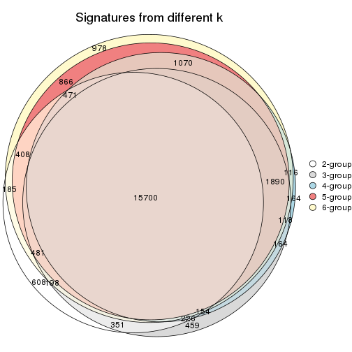
get_signature() returns a data frame invisibly. TO get the list of signatures, the function
call should be assigned to a variable explicitly. In following code, if plot argument is set
to FALSE, no heatmap is plotted while only the differential analysis is performed.
# code only for demonstration
tb = get_signature(res, k = ..., plot = FALSE)
An example of the output of tb is:
#> which_row fdr mean_1 mean_2 scaled_mean_1 scaled_mean_2 km
#> 1 38 0.042760348 8.373488 9.131774 -0.5533452 0.5164555 1
#> 2 40 0.018707592 7.106213 8.469186 -0.6173731 0.5762149 1
#> 3 55 0.019134737 10.221463 11.207825 -0.6159697 0.5749050 1
#> 4 59 0.006059896 5.921854 7.869574 -0.6899429 0.6439467 1
#> 5 60 0.018055526 8.928898 10.211722 -0.6204761 0.5791110 1
#> 6 98 0.009384629 15.714769 14.887706 0.6635654 -0.6193277 2
...
The columns in tb are:
which_row: row indices corresponding to the input matrix.fdr: FDR for the differential test. mean_x: The mean value in group x.scaled_mean_x: The mean value in group x after rows are scaled.km: Row groups if k-means clustering is applied to rows.UMAP plot which shows how samples are separated.
dimension_reduction(res, k = 2, method = "UMAP")
dimension_reduction(res, k = 3, method = "UMAP")
dimension_reduction(res, k = 4, method = "UMAP")
dimension_reduction(res, k = 5, method = "UMAP")
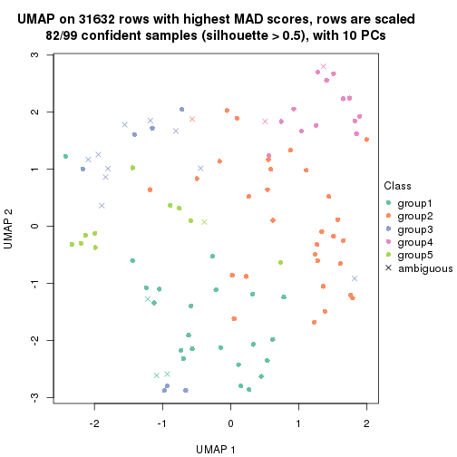
dimension_reduction(res, k = 6, method = "UMAP")
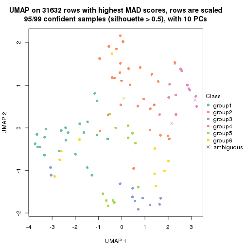
Following heatmap shows how subgroups are split when increasing k:
collect_classes(res)
Test correlation between subgroups and known annotations. If the known annotation is numeric, one-way ANOVA test is applied, and if the known annotation is discrete, chi-squared contingency table test is applied.
test_to_known_factors(res)
#> n disease.state(p) k
#> MAD:mclust 72 5.52e-08 2
#> MAD:mclust 90 1.87e-19 3
#> MAD:mclust 79 1.59e-18 4
#> MAD:mclust 82 7.97e-19 5
#> MAD:mclust 95 8.02e-21 6
If matrix rows can be associated to genes, consider to use GO_Enrichment(res,
...) to perform function enrichment for the signature genes.
The object with results only for a single top-value method and a single partition method can be extracted as:
res = res_list["MAD", "NMF"]
# you can also extract it by
# res = res_list["MAD:NMF"]
A summary of res and all the functions that can be applied to it:
res
#> A 'ConsensusPartition' object with k = 2, 3, 4, 5, 6.
#> On a matrix with 31632 rows and 99 columns.
#> Top rows (1000, 2000, 3000, 4000, 5000) are extracted by 'MAD' method.
#> Subgroups are detected by 'NMF' method.
#> Performed in total 1250 partitions by row resampling.
#> Best k for subgroups seems to be 3.
#>
#> Following methods can be applied to this 'ConsensusPartition' object:
#> [1] "cola_report" "collect_classes" "collect_plots"
#> [4] "collect_stats" "colnames" "compare_signatures"
#> [7] "consensus_heatmap" "dimension_reduction" "functional_enrichment"
#> [10] "get_anno_col" "get_anno" "get_classes"
#> [13] "get_consensus" "get_matrix" "get_membership"
#> [16] "get_param" "get_signatures" "get_stats"
#> [19] "is_best_k" "is_stable_k" "membership_heatmap"
#> [22] "ncol" "nrow" "plot_ecdf"
#> [25] "rownames" "select_partition_number" "show"
#> [28] "suggest_best_k" "test_to_known_factors"
collect_plots() function collects all the plots made from res for all k (number of partitions)
into one single page to provide an easy and fast comparison between different k.
collect_plots(res)
The plots are:
k and the heatmap of
predicted classes for each k.k.k.k.All the plots in panels can be made by individual functions and they are plotted later in this section.
select_partition_number() produces several plots showing different
statistics for choosing “optimized” k. There are following statistics:
k;k, the area increased is defined as \(A_k - A_{k-1}\).The detailed explanations of these statistics can be found in the cola vignette.
Generally speaking, lower PAC score, higher mean silhouette score or higher
concordance corresponds to better partition. Rand index and Jaccard index
measure how similar the current partition is compared to partition with k-1.
If they are too similar, we won't accept k is better than k-1.
select_partition_number(res)
The numeric values for all these statistics can be obtained by get_stats().
get_stats(res)
#> k 1-PAC mean_silhouette concordance area_increased Rand Jaccard
#> 2 2 0.327 0.518 0.754 0.4859 0.527 0.527
#> 3 3 0.726 0.829 0.926 0.3673 0.625 0.394
#> 4 4 0.694 0.763 0.876 0.1123 0.845 0.588
#> 5 5 0.600 0.616 0.759 0.0641 0.908 0.682
#> 6 6 0.616 0.534 0.714 0.0485 0.862 0.477
suggest_best_k() suggests the best \(k\) based on these statistics. The rules are as follows:
NA.suggest_best_k(res)
#> [1] 3
Following shows the table of the partitions (You need to click the show/hide
code output link to see it). The membership matrix (columns with name p*)
is inferred by
clue::cl_consensus()
function with the SE method. Basically the value in the membership matrix
represents the probability to belong to a certain group. The finall class
label for an item is determined with the group with highest probability it
belongs to.
In get_classes() function, the entropy is calculated from the membership
matrix and the silhouette score is calculated from the consensus matrix.
cbind(get_classes(res, k = 2), get_membership(res, k = 2))
#> class entropy silhouette p1 p2
#> GSM1152309 1 0.9866 0.4937 0.568 0.432
#> GSM1152310 2 0.3274 0.5666 0.060 0.940
#> GSM1152311 1 0.9209 0.6147 0.664 0.336
#> GSM1152312 1 0.2236 0.6284 0.964 0.036
#> GSM1152313 2 0.4939 0.6327 0.108 0.892
#> GSM1152314 1 0.9000 0.1438 0.684 0.316
#> GSM1152315 1 0.9608 0.5770 0.616 0.384
#> GSM1152316 2 0.2603 0.5770 0.044 0.956
#> GSM1152317 1 0.9608 0.5672 0.616 0.384
#> GSM1152318 2 0.9209 0.0649 0.336 0.664
#> GSM1152319 1 0.9286 0.6109 0.656 0.344
#> GSM1152320 1 0.9209 0.6147 0.664 0.336
#> GSM1152321 2 0.9933 -0.2656 0.452 0.548
#> GSM1152322 2 0.5294 0.5047 0.120 0.880
#> GSM1152323 2 0.3114 0.5688 0.056 0.944
#> GSM1152324 1 0.9286 0.6109 0.656 0.344
#> GSM1152325 2 0.9963 -0.2937 0.464 0.536
#> GSM1152326 1 0.9286 0.6109 0.656 0.344
#> GSM1152327 2 0.7602 0.3465 0.220 0.780
#> GSM1152328 1 0.4690 0.6446 0.900 0.100
#> GSM1152329 1 0.9170 0.6162 0.668 0.332
#> GSM1152330 1 0.9286 0.6109 0.656 0.344
#> GSM1152331 1 0.9286 0.6109 0.656 0.344
#> GSM1152332 1 0.2236 0.6465 0.964 0.036
#> GSM1152333 1 0.2948 0.6469 0.948 0.052
#> GSM1152334 2 0.1843 0.5918 0.028 0.972
#> GSM1152335 1 0.9170 0.6162 0.668 0.332
#> GSM1152336 1 0.9286 0.6109 0.656 0.344
#> GSM1152337 1 0.9286 0.6109 0.656 0.344
#> GSM1152338 1 0.9286 0.6109 0.656 0.344
#> GSM1152339 1 0.9170 0.6162 0.668 0.332
#> GSM1152340 1 0.9209 0.6147 0.664 0.336
#> GSM1152341 1 0.9170 0.6162 0.668 0.332
#> GSM1152342 1 0.9323 0.6075 0.652 0.348
#> GSM1152343 1 0.9286 0.6109 0.656 0.344
#> GSM1152344 1 0.9286 0.6109 0.656 0.344
#> GSM1152345 2 0.9977 -0.3137 0.472 0.528
#> GSM1152346 2 0.3431 0.5619 0.064 0.936
#> GSM1152347 2 0.9286 0.6130 0.344 0.656
#> GSM1152348 1 0.9170 0.6162 0.668 0.332
#> GSM1152349 2 0.9286 0.6130 0.344 0.656
#> GSM1152355 1 0.5178 0.5530 0.884 0.116
#> GSM1152356 1 0.9286 0.0519 0.656 0.344
#> GSM1152357 1 0.5519 0.5549 0.872 0.128
#> GSM1152358 2 0.4022 0.6312 0.080 0.920
#> GSM1152359 1 0.8909 0.6204 0.692 0.308
#> GSM1152360 1 0.2423 0.6472 0.960 0.040
#> GSM1152361 1 0.1633 0.6446 0.976 0.024
#> GSM1152362 2 0.9970 -0.2952 0.468 0.532
#> GSM1152363 1 0.1633 0.6330 0.976 0.024
#> GSM1152364 1 0.3584 0.6045 0.932 0.068
#> GSM1152365 1 0.0376 0.6408 0.996 0.004
#> GSM1152366 1 0.2236 0.6284 0.964 0.036
#> GSM1152367 1 0.2423 0.6260 0.960 0.040
#> GSM1152368 1 0.4298 0.5850 0.912 0.088
#> GSM1152369 1 0.2423 0.6260 0.960 0.040
#> GSM1152370 1 0.2236 0.6284 0.964 0.036
#> GSM1152371 1 0.0376 0.6408 0.996 0.004
#> GSM1152372 1 0.6623 0.4734 0.828 0.172
#> GSM1152373 1 0.3584 0.6045 0.932 0.068
#> GSM1152374 2 0.8144 0.4327 0.252 0.748
#> GSM1152375 1 0.2603 0.6231 0.956 0.044
#> GSM1152376 1 0.3431 0.6077 0.936 0.064
#> GSM1152377 1 0.2423 0.6260 0.960 0.040
#> GSM1152378 1 0.6712 0.4719 0.824 0.176
#> GSM1152379 1 0.9286 0.6109 0.656 0.344
#> GSM1152380 1 0.2948 0.6171 0.948 0.052
#> GSM1152381 1 0.1843 0.6316 0.972 0.028
#> GSM1152382 1 0.2603 0.6469 0.956 0.044
#> GSM1152383 1 0.7950 0.3378 0.760 0.240
#> GSM1152384 1 0.2236 0.6284 0.964 0.036
#> GSM1152385 1 0.9286 0.6109 0.656 0.344
#> GSM1152386 2 0.2603 0.5770 0.044 0.956
#> GSM1152387 1 0.9170 0.6153 0.668 0.332
#> GSM1152289 1 0.8499 0.6226 0.724 0.276
#> GSM1152290 2 0.9248 0.6157 0.340 0.660
#> GSM1152291 2 0.9286 0.6130 0.344 0.656
#> GSM1152292 2 0.9129 0.6220 0.328 0.672
#> GSM1152293 2 0.9209 0.6179 0.336 0.664
#> GSM1152294 2 0.1184 0.6101 0.016 0.984
#> GSM1152295 1 0.9954 -0.3131 0.540 0.460
#> GSM1152296 1 0.6801 0.4570 0.820 0.180
#> GSM1152297 2 0.9129 0.6220 0.328 0.672
#> GSM1152298 2 0.9087 0.6226 0.324 0.676
#> GSM1152299 2 0.3431 0.6269 0.064 0.936
#> GSM1152300 2 0.9286 0.6130 0.344 0.656
#> GSM1152301 2 0.9286 0.6130 0.344 0.656
#> GSM1152302 2 0.9170 0.6200 0.332 0.668
#> GSM1152303 2 0.9129 0.6220 0.328 0.672
#> GSM1152304 2 0.9129 0.6220 0.328 0.672
#> GSM1152305 1 0.9286 0.0270 0.656 0.344
#> GSM1152306 2 0.9286 0.6130 0.344 0.656
#> GSM1152307 2 0.9286 0.6130 0.344 0.656
#> GSM1152308 1 0.9209 0.1813 0.664 0.336
#> GSM1152350 2 0.4562 0.6328 0.096 0.904
#> GSM1152351 2 0.0672 0.6064 0.008 0.992
#> GSM1152352 2 0.3584 0.6287 0.068 0.932
#> GSM1152353 2 0.9129 0.6220 0.328 0.672
#> GSM1152354 1 0.9996 -0.3452 0.512 0.488
cbind(get_classes(res, k = 3), get_membership(res, k = 3))
#> class entropy silhouette p1 p2 p3
#> GSM1152309 2 0.0000 0.9053 0.000 1.000 0.000
#> GSM1152310 2 0.1289 0.8897 0.000 0.968 0.032
#> GSM1152311 2 0.4750 0.7320 0.216 0.784 0.000
#> GSM1152312 1 0.0000 0.9269 1.000 0.000 0.000
#> GSM1152313 3 0.3941 0.7806 0.000 0.156 0.844
#> GSM1152314 1 0.0424 0.9238 0.992 0.000 0.008
#> GSM1152315 2 0.0424 0.9029 0.000 0.992 0.008
#> GSM1152316 2 0.5591 0.5662 0.000 0.696 0.304
#> GSM1152317 2 0.0000 0.9053 0.000 1.000 0.000
#> GSM1152318 2 0.0000 0.9053 0.000 1.000 0.000
#> GSM1152319 2 0.0000 0.9053 0.000 1.000 0.000
#> GSM1152320 2 0.5678 0.5694 0.316 0.684 0.000
#> GSM1152321 2 0.0000 0.9053 0.000 1.000 0.000
#> GSM1152322 2 0.0237 0.9040 0.000 0.996 0.004
#> GSM1152323 2 0.0592 0.9010 0.000 0.988 0.012
#> GSM1152324 2 0.0000 0.9053 0.000 1.000 0.000
#> GSM1152325 2 0.0000 0.9053 0.000 1.000 0.000
#> GSM1152326 2 0.3619 0.8128 0.136 0.864 0.000
#> GSM1152327 2 0.4654 0.7188 0.000 0.792 0.208
#> GSM1152328 1 0.0237 0.9251 0.996 0.004 0.000
#> GSM1152329 1 0.6026 0.3310 0.624 0.376 0.000
#> GSM1152330 2 0.0424 0.9036 0.008 0.992 0.000
#> GSM1152331 2 0.0000 0.9053 0.000 1.000 0.000
#> GSM1152332 1 0.0000 0.9269 1.000 0.000 0.000
#> GSM1152333 1 0.0747 0.9190 0.984 0.016 0.000
#> GSM1152334 2 0.6307 -0.0472 0.000 0.512 0.488
#> GSM1152335 2 0.3038 0.8444 0.104 0.896 0.000
#> GSM1152336 2 0.0000 0.9053 0.000 1.000 0.000
#> GSM1152337 2 0.0000 0.9053 0.000 1.000 0.000
#> GSM1152338 2 0.0892 0.8982 0.020 0.980 0.000
#> GSM1152339 2 0.5968 0.4617 0.364 0.636 0.000
#> GSM1152340 2 0.1031 0.8966 0.024 0.976 0.000
#> GSM1152341 2 0.4121 0.7926 0.168 0.832 0.000
#> GSM1152342 2 0.0000 0.9053 0.000 1.000 0.000
#> GSM1152343 2 0.0000 0.9053 0.000 1.000 0.000
#> GSM1152344 2 0.0237 0.9046 0.004 0.996 0.000
#> GSM1152345 2 0.0000 0.9053 0.000 1.000 0.000
#> GSM1152346 2 0.0592 0.9010 0.000 0.988 0.012
#> GSM1152347 3 0.1289 0.8998 0.032 0.000 0.968
#> GSM1152348 2 0.6045 0.4334 0.380 0.620 0.000
#> GSM1152349 3 0.1860 0.8871 0.052 0.000 0.948
#> GSM1152355 1 0.3551 0.8200 0.868 0.000 0.132
#> GSM1152356 1 0.6305 0.0258 0.516 0.000 0.484
#> GSM1152357 3 0.7169 0.0928 0.456 0.024 0.520
#> GSM1152358 3 0.0000 0.9137 0.000 0.000 1.000
#> GSM1152359 2 0.0237 0.9047 0.004 0.996 0.000
#> GSM1152360 1 0.0747 0.9187 0.984 0.016 0.000
#> GSM1152361 1 0.0000 0.9269 1.000 0.000 0.000
#> GSM1152362 2 0.0592 0.9021 0.012 0.988 0.000
#> GSM1152363 1 0.0000 0.9269 1.000 0.000 0.000
#> GSM1152364 1 0.1643 0.9011 0.956 0.000 0.044
#> GSM1152365 1 0.0000 0.9269 1.000 0.000 0.000
#> GSM1152366 1 0.0000 0.9269 1.000 0.000 0.000
#> GSM1152367 1 0.0000 0.9269 1.000 0.000 0.000
#> GSM1152368 1 0.0000 0.9269 1.000 0.000 0.000
#> GSM1152369 1 0.0000 0.9269 1.000 0.000 0.000
#> GSM1152370 1 0.0000 0.9269 1.000 0.000 0.000
#> GSM1152371 1 0.0424 0.9233 0.992 0.008 0.000
#> GSM1152372 1 0.0000 0.9269 1.000 0.000 0.000
#> GSM1152373 1 0.0000 0.9269 1.000 0.000 0.000
#> GSM1152374 2 0.2448 0.8596 0.000 0.924 0.076
#> GSM1152375 1 0.0000 0.9269 1.000 0.000 0.000
#> GSM1152376 1 0.0000 0.9269 1.000 0.000 0.000
#> GSM1152377 1 0.0000 0.9269 1.000 0.000 0.000
#> GSM1152378 1 0.2066 0.8905 0.940 0.000 0.060
#> GSM1152379 2 0.0000 0.9053 0.000 1.000 0.000
#> GSM1152380 1 0.0000 0.9269 1.000 0.000 0.000
#> GSM1152381 1 0.0000 0.9269 1.000 0.000 0.000
#> GSM1152382 1 0.0892 0.9158 0.980 0.020 0.000
#> GSM1152383 1 0.2959 0.8542 0.900 0.000 0.100
#> GSM1152384 1 0.0000 0.9269 1.000 0.000 0.000
#> GSM1152385 2 0.0000 0.9053 0.000 1.000 0.000
#> GSM1152386 2 0.2796 0.8460 0.000 0.908 0.092
#> GSM1152387 2 0.4605 0.7428 0.204 0.796 0.000
#> GSM1152289 1 0.3805 0.8395 0.884 0.092 0.024
#> GSM1152290 3 0.0000 0.9137 0.000 0.000 1.000
#> GSM1152291 1 0.6307 0.0592 0.512 0.000 0.488
#> GSM1152292 3 0.0000 0.9137 0.000 0.000 1.000
#> GSM1152293 3 0.0000 0.9137 0.000 0.000 1.000
#> GSM1152294 3 0.5138 0.6739 0.000 0.252 0.748
#> GSM1152295 1 0.3482 0.8237 0.872 0.000 0.128
#> GSM1152296 1 0.2537 0.8730 0.920 0.000 0.080
#> GSM1152297 3 0.0000 0.9137 0.000 0.000 1.000
#> GSM1152298 3 0.0000 0.9137 0.000 0.000 1.000
#> GSM1152299 3 0.0237 0.9126 0.000 0.004 0.996
#> GSM1152300 3 0.3551 0.8078 0.132 0.000 0.868
#> GSM1152301 3 0.1031 0.9037 0.024 0.000 0.976
#> GSM1152302 3 0.0000 0.9137 0.000 0.000 1.000
#> GSM1152303 3 0.0000 0.9137 0.000 0.000 1.000
#> GSM1152304 3 0.0000 0.9137 0.000 0.000 1.000
#> GSM1152305 1 0.4121 0.7753 0.832 0.000 0.168
#> GSM1152306 3 0.0000 0.9137 0.000 0.000 1.000
#> GSM1152307 3 0.0592 0.9093 0.012 0.000 0.988
#> GSM1152308 3 0.3896 0.8608 0.060 0.052 0.888
#> GSM1152350 3 0.3116 0.8491 0.000 0.108 0.892
#> GSM1152351 3 0.3752 0.8152 0.000 0.144 0.856
#> GSM1152352 3 0.2066 0.8859 0.000 0.060 0.940
#> GSM1152353 3 0.0000 0.9137 0.000 0.000 1.000
#> GSM1152354 3 0.6148 0.4747 0.004 0.356 0.640
cbind(get_classes(res, k = 4), get_membership(res, k = 4))
#> class entropy silhouette p1 p2 p3 p4
#> GSM1152309 2 0.0000 0.8880 0.000 1.000 0.000 0.000
#> GSM1152310 4 0.2654 0.8149 0.000 0.108 0.004 0.888
#> GSM1152311 2 0.2149 0.8529 0.088 0.912 0.000 0.000
#> GSM1152312 1 0.1576 0.8304 0.948 0.004 0.048 0.000
#> GSM1152313 3 0.1510 0.8442 0.028 0.016 0.956 0.000
#> GSM1152314 1 0.1716 0.8231 0.936 0.000 0.064 0.000
#> GSM1152315 4 0.2654 0.8163 0.004 0.108 0.000 0.888
#> GSM1152316 2 0.4382 0.5999 0.000 0.704 0.296 0.000
#> GSM1152317 2 0.0000 0.8880 0.000 1.000 0.000 0.000
#> GSM1152318 2 0.0000 0.8880 0.000 1.000 0.000 0.000
#> GSM1152319 2 0.0188 0.8871 0.000 0.996 0.000 0.004
#> GSM1152320 2 0.4100 0.7863 0.148 0.816 0.000 0.036
#> GSM1152321 2 0.0000 0.8880 0.000 1.000 0.000 0.000
#> GSM1152322 2 0.0188 0.8869 0.000 0.996 0.000 0.004
#> GSM1152323 2 0.1256 0.8739 0.000 0.964 0.008 0.028
#> GSM1152324 2 0.0188 0.8868 0.000 0.996 0.000 0.004
#> GSM1152325 2 0.0000 0.8880 0.000 1.000 0.000 0.000
#> GSM1152326 2 0.5432 0.6834 0.136 0.740 0.000 0.124
#> GSM1152327 2 0.3837 0.7176 0.000 0.776 0.224 0.000
#> GSM1152328 1 0.1792 0.8137 0.932 0.068 0.000 0.000
#> GSM1152329 1 0.4790 0.3191 0.620 0.380 0.000 0.000
#> GSM1152330 2 0.0707 0.8823 0.020 0.980 0.000 0.000
#> GSM1152331 2 0.0000 0.8880 0.000 1.000 0.000 0.000
#> GSM1152332 1 0.1474 0.8526 0.948 0.000 0.000 0.052
#> GSM1152333 1 0.1211 0.8341 0.960 0.040 0.000 0.000
#> GSM1152334 4 0.4171 0.7958 0.000 0.088 0.084 0.828
#> GSM1152335 2 0.1940 0.8594 0.076 0.924 0.000 0.000
#> GSM1152336 2 0.0000 0.8880 0.000 1.000 0.000 0.000
#> GSM1152337 2 0.0000 0.8880 0.000 1.000 0.000 0.000
#> GSM1152338 2 0.0000 0.8880 0.000 1.000 0.000 0.000
#> GSM1152339 2 0.4888 0.3312 0.412 0.588 0.000 0.000
#> GSM1152340 2 0.1716 0.8657 0.064 0.936 0.000 0.000
#> GSM1152341 2 0.5926 0.4743 0.308 0.632 0.000 0.060
#> GSM1152342 4 0.3444 0.7622 0.000 0.184 0.000 0.816
#> GSM1152343 4 0.4163 0.7494 0.020 0.188 0.000 0.792
#> GSM1152344 2 0.0188 0.8873 0.004 0.996 0.000 0.000
#> GSM1152345 2 0.0000 0.8880 0.000 1.000 0.000 0.000
#> GSM1152346 2 0.0000 0.8880 0.000 1.000 0.000 0.000
#> GSM1152347 3 0.1302 0.8436 0.044 0.000 0.956 0.000
#> GSM1152348 1 0.5820 0.6794 0.700 0.192 0.000 0.108
#> GSM1152349 3 0.1389 0.8430 0.048 0.000 0.952 0.000
#> GSM1152355 4 0.4776 0.3839 0.376 0.000 0.000 0.624
#> GSM1152356 4 0.3024 0.7166 0.148 0.000 0.000 0.852
#> GSM1152357 4 0.1890 0.8104 0.056 0.008 0.000 0.936
#> GSM1152358 3 0.4996 0.0795 0.000 0.000 0.516 0.484
#> GSM1152359 2 0.5898 0.3825 0.056 0.628 0.000 0.316
#> GSM1152360 1 0.2999 0.7817 0.864 0.004 0.000 0.132
#> GSM1152361 1 0.2530 0.8475 0.888 0.000 0.000 0.112
#> GSM1152362 2 0.0000 0.8880 0.000 1.000 0.000 0.000
#> GSM1152363 1 0.0000 0.8463 1.000 0.000 0.000 0.000
#> GSM1152364 4 0.4967 -0.0492 0.452 0.000 0.000 0.548
#> GSM1152365 1 0.4961 0.3411 0.552 0.000 0.000 0.448
#> GSM1152366 1 0.2345 0.8493 0.900 0.000 0.000 0.100
#> GSM1152367 1 0.2530 0.8463 0.888 0.000 0.000 0.112
#> GSM1152368 1 0.2443 0.8519 0.916 0.000 0.024 0.060
#> GSM1152369 1 0.2589 0.8456 0.884 0.000 0.000 0.116
#> GSM1152370 1 0.3688 0.7848 0.792 0.000 0.000 0.208
#> GSM1152371 1 0.4855 0.4996 0.600 0.000 0.000 0.400
#> GSM1152372 1 0.3996 0.8410 0.836 0.000 0.060 0.104
#> GSM1152373 1 0.1474 0.8304 0.948 0.000 0.052 0.000
#> GSM1152374 2 0.3024 0.8044 0.000 0.852 0.148 0.000
#> GSM1152375 1 0.2704 0.8434 0.876 0.000 0.000 0.124
#> GSM1152376 1 0.0707 0.8419 0.980 0.000 0.020 0.000
#> GSM1152377 1 0.1940 0.8528 0.924 0.000 0.000 0.076
#> GSM1152378 1 0.2973 0.7699 0.856 0.000 0.144 0.000
#> GSM1152379 2 0.3271 0.7929 0.012 0.856 0.000 0.132
#> GSM1152380 1 0.0804 0.8487 0.980 0.000 0.008 0.012
#> GSM1152381 1 0.2345 0.8493 0.900 0.000 0.000 0.100
#> GSM1152382 1 0.3172 0.8249 0.840 0.000 0.000 0.160
#> GSM1152383 1 0.3710 0.7364 0.804 0.000 0.004 0.192
#> GSM1152384 1 0.0336 0.8448 0.992 0.000 0.008 0.000
#> GSM1152385 2 0.0000 0.8880 0.000 1.000 0.000 0.000
#> GSM1152386 2 0.3539 0.7631 0.000 0.820 0.176 0.004
#> GSM1152387 2 0.2329 0.8590 0.072 0.916 0.012 0.000
#> GSM1152289 2 0.5936 0.4236 0.380 0.576 0.044 0.000
#> GSM1152290 3 0.0000 0.8479 0.000 0.000 1.000 0.000
#> GSM1152291 3 0.2081 0.8230 0.084 0.000 0.916 0.000
#> GSM1152292 3 0.2081 0.8235 0.000 0.000 0.916 0.084
#> GSM1152293 3 0.2469 0.8077 0.000 0.000 0.892 0.108
#> GSM1152294 4 0.2589 0.8292 0.000 0.044 0.044 0.912
#> GSM1152295 3 0.4866 0.3908 0.404 0.000 0.596 0.000
#> GSM1152296 1 0.4564 0.6296 0.672 0.000 0.000 0.328
#> GSM1152297 4 0.1022 0.8262 0.000 0.000 0.032 0.968
#> GSM1152298 3 0.0817 0.8456 0.000 0.000 0.976 0.024
#> GSM1152299 3 0.1022 0.8437 0.000 0.000 0.968 0.032
#> GSM1152300 3 0.1118 0.8451 0.036 0.000 0.964 0.000
#> GSM1152301 3 0.1557 0.8388 0.056 0.000 0.944 0.000
#> GSM1152302 3 0.1557 0.8366 0.000 0.000 0.944 0.056
#> GSM1152303 3 0.3024 0.7725 0.000 0.000 0.852 0.148
#> GSM1152304 3 0.0000 0.8479 0.000 0.000 1.000 0.000
#> GSM1152305 3 0.4992 0.2022 0.476 0.000 0.524 0.000
#> GSM1152306 3 0.4277 0.5974 0.000 0.000 0.720 0.280
#> GSM1152307 3 0.1211 0.8440 0.000 0.000 0.960 0.040
#> GSM1152308 4 0.0707 0.8181 0.020 0.000 0.000 0.980
#> GSM1152350 4 0.2984 0.8108 0.000 0.028 0.084 0.888
#> GSM1152351 4 0.3156 0.8171 0.000 0.048 0.068 0.884
#> GSM1152352 4 0.2984 0.8108 0.000 0.028 0.084 0.888
#> GSM1152353 4 0.1302 0.8249 0.000 0.000 0.044 0.956
#> GSM1152354 4 0.0188 0.8225 0.004 0.000 0.000 0.996
cbind(get_classes(res, k = 5), get_membership(res, k = 5))
#> class entropy silhouette p1 p2 p3 p4 p5
#> GSM1152309 4 0.3326 0.7644 0.000 0.152 0.000 0.824 0.024
#> GSM1152310 5 0.5124 0.6290 0.000 0.196 0.008 0.092 0.704
#> GSM1152311 4 0.3970 0.7150 0.156 0.056 0.000 0.788 0.000
#> GSM1152312 1 0.2476 0.6229 0.904 0.064 0.012 0.020 0.000
#> GSM1152313 3 0.2278 0.7971 0.060 0.032 0.908 0.000 0.000
#> GSM1152314 1 0.1831 0.6264 0.920 0.004 0.076 0.000 0.000
#> GSM1152315 5 0.4400 0.6423 0.000 0.212 0.000 0.052 0.736
#> GSM1152316 4 0.5277 0.3981 0.000 0.040 0.368 0.584 0.008
#> GSM1152317 4 0.2583 0.7747 0.000 0.132 0.000 0.864 0.004
#> GSM1152318 4 0.2907 0.7855 0.000 0.116 0.012 0.864 0.008
#> GSM1152319 4 0.4514 0.6995 0.008 0.228 0.000 0.728 0.036
#> GSM1152320 4 0.6765 0.3009 0.324 0.164 0.000 0.492 0.020
#> GSM1152321 4 0.0671 0.7884 0.000 0.016 0.004 0.980 0.000
#> GSM1152322 4 0.2178 0.7885 0.000 0.048 0.008 0.920 0.024
#> GSM1152323 4 0.3415 0.7744 0.000 0.120 0.008 0.840 0.032
#> GSM1152324 4 0.3278 0.7660 0.000 0.156 0.000 0.824 0.020
#> GSM1152325 4 0.1195 0.7843 0.000 0.028 0.012 0.960 0.000
#> GSM1152326 4 0.5922 0.6434 0.136 0.168 0.000 0.664 0.032
#> GSM1152327 4 0.5094 0.6161 0.016 0.060 0.224 0.700 0.000
#> GSM1152328 1 0.2992 0.6168 0.868 0.068 0.000 0.064 0.000
#> GSM1152329 1 0.6122 0.1976 0.512 0.140 0.000 0.348 0.000
#> GSM1152330 4 0.2450 0.7922 0.048 0.052 0.000 0.900 0.000
#> GSM1152331 4 0.0000 0.7891 0.000 0.000 0.000 1.000 0.000
#> GSM1152332 1 0.3166 0.6155 0.860 0.104 0.000 0.016 0.020
#> GSM1152333 1 0.2659 0.6351 0.888 0.060 0.000 0.052 0.000
#> GSM1152334 5 0.4293 0.6835 0.004 0.176 0.028 0.016 0.776
#> GSM1152335 4 0.4325 0.6482 0.220 0.044 0.000 0.736 0.000
#> GSM1152336 4 0.2047 0.7896 0.012 0.020 0.000 0.928 0.040
#> GSM1152337 4 0.1865 0.7905 0.032 0.024 0.000 0.936 0.008
#> GSM1152338 4 0.2929 0.7710 0.000 0.152 0.000 0.840 0.008
#> GSM1152339 1 0.5666 0.1934 0.548 0.064 0.000 0.380 0.008
#> GSM1152340 4 0.4519 0.6531 0.228 0.052 0.000 0.720 0.000
#> GSM1152341 4 0.6721 0.4907 0.240 0.172 0.000 0.556 0.032
#> GSM1152342 5 0.6707 0.3506 0.008 0.232 0.000 0.268 0.492
#> GSM1152343 5 0.7058 0.1886 0.016 0.236 0.000 0.324 0.424
#> GSM1152344 4 0.2387 0.7778 0.040 0.048 0.000 0.908 0.004
#> GSM1152345 4 0.3010 0.7915 0.020 0.100 0.012 0.868 0.000
#> GSM1152346 4 0.3920 0.7796 0.000 0.116 0.040 0.820 0.024
#> GSM1152347 3 0.1892 0.7966 0.080 0.004 0.916 0.000 0.000
#> GSM1152348 1 0.6639 0.4551 0.556 0.256 0.000 0.160 0.028
#> GSM1152349 3 0.3784 0.7749 0.132 0.024 0.820 0.000 0.024
#> GSM1152355 1 0.6403 0.0842 0.460 0.120 0.012 0.000 0.408
#> GSM1152356 5 0.4665 0.6140 0.088 0.140 0.012 0.000 0.760
#> GSM1152357 5 0.4703 0.6493 0.072 0.156 0.016 0.000 0.756
#> GSM1152358 5 0.4498 0.3073 0.004 0.004 0.356 0.004 0.632
#> GSM1152359 4 0.7794 0.0227 0.340 0.244 0.000 0.352 0.064
#> GSM1152360 1 0.4664 0.6274 0.780 0.128 0.004 0.056 0.032
#> GSM1152361 2 0.4067 0.8141 0.300 0.692 0.000 0.000 0.008
#> GSM1152362 4 0.3778 0.7518 0.108 0.044 0.008 0.832 0.008
#> GSM1152363 1 0.1549 0.6458 0.944 0.040 0.000 0.016 0.000
#> GSM1152364 1 0.6203 0.3615 0.548 0.152 0.004 0.000 0.296
#> GSM1152365 2 0.4723 0.5161 0.136 0.736 0.000 0.000 0.128
#> GSM1152366 1 0.4256 -0.2360 0.564 0.436 0.000 0.000 0.000
#> GSM1152367 2 0.3969 0.8194 0.304 0.692 0.000 0.000 0.004
#> GSM1152368 2 0.3876 0.8149 0.316 0.684 0.000 0.000 0.000
#> GSM1152369 2 0.4067 0.8224 0.300 0.692 0.000 0.000 0.008
#> GSM1152370 1 0.5635 0.4996 0.636 0.196 0.000 0.000 0.168
#> GSM1152371 2 0.4193 0.7772 0.212 0.748 0.000 0.000 0.040
#> GSM1152372 2 0.4232 0.8007 0.312 0.676 0.012 0.000 0.000
#> GSM1152373 1 0.1478 0.6390 0.936 0.000 0.064 0.000 0.000
#> GSM1152374 4 0.5891 0.6693 0.024 0.108 0.144 0.700 0.024
#> GSM1152375 2 0.4067 0.8174 0.300 0.692 0.000 0.000 0.008
#> GSM1152376 1 0.1399 0.6386 0.952 0.028 0.020 0.000 0.000
#> GSM1152377 1 0.3336 0.6320 0.832 0.144 0.008 0.000 0.016
#> GSM1152378 3 0.6183 0.4541 0.276 0.180 0.544 0.000 0.000
#> GSM1152379 4 0.5563 0.6699 0.020 0.256 0.000 0.652 0.072
#> GSM1152380 1 0.1282 0.6422 0.952 0.044 0.000 0.000 0.004
#> GSM1152381 1 0.3123 0.5844 0.828 0.160 0.000 0.000 0.012
#> GSM1152382 1 0.5868 0.3795 0.516 0.392 0.000 0.004 0.088
#> GSM1152383 1 0.5171 0.5715 0.740 0.120 0.036 0.000 0.104
#> GSM1152384 1 0.1697 0.6326 0.932 0.060 0.000 0.008 0.000
#> GSM1152385 4 0.0963 0.7917 0.000 0.036 0.000 0.964 0.000
#> GSM1152386 4 0.5956 0.5803 0.000 0.100 0.264 0.616 0.020
#> GSM1152387 4 0.5091 0.7058 0.068 0.136 0.040 0.752 0.004
#> GSM1152289 4 0.6997 0.4899 0.164 0.188 0.076 0.572 0.000
#> GSM1152290 3 0.0162 0.7921 0.000 0.004 0.996 0.000 0.000
#> GSM1152291 3 0.2409 0.7805 0.068 0.032 0.900 0.000 0.000
#> GSM1152292 3 0.4083 0.6637 0.028 0.000 0.744 0.000 0.228
#> GSM1152293 3 0.4791 0.3664 0.008 0.012 0.588 0.000 0.392
#> GSM1152294 5 0.0960 0.7240 0.000 0.008 0.016 0.004 0.972
#> GSM1152295 3 0.4530 0.5004 0.376 0.008 0.612 0.004 0.000
#> GSM1152296 5 0.5595 0.1790 0.356 0.084 0.000 0.000 0.560
#> GSM1152297 5 0.1992 0.7122 0.000 0.032 0.044 0.000 0.924
#> GSM1152298 3 0.0807 0.7892 0.000 0.012 0.976 0.000 0.012
#> GSM1152299 3 0.2002 0.7752 0.000 0.028 0.932 0.020 0.020
#> GSM1152300 3 0.1544 0.7973 0.068 0.000 0.932 0.000 0.000
#> GSM1152301 3 0.3087 0.7761 0.152 0.004 0.836 0.000 0.008
#> GSM1152302 3 0.3243 0.7585 0.032 0.004 0.848 0.000 0.116
#> GSM1152303 3 0.3968 0.5779 0.004 0.004 0.716 0.000 0.276
#> GSM1152304 3 0.0510 0.7895 0.000 0.016 0.984 0.000 0.000
#> GSM1152305 3 0.5837 0.2447 0.424 0.064 0.500 0.012 0.000
#> GSM1152306 5 0.4546 -0.0696 0.000 0.008 0.460 0.000 0.532
#> GSM1152307 3 0.3984 0.7571 0.060 0.016 0.816 0.000 0.108
#> GSM1152308 2 0.4567 0.3754 0.012 0.628 0.004 0.000 0.356
#> GSM1152350 5 0.1026 0.7227 0.000 0.004 0.024 0.004 0.968
#> GSM1152351 5 0.2201 0.7138 0.000 0.040 0.032 0.008 0.920
#> GSM1152352 5 0.1124 0.7198 0.000 0.004 0.036 0.000 0.960
#> GSM1152353 5 0.0865 0.7230 0.000 0.004 0.024 0.000 0.972
#> GSM1152354 5 0.0703 0.7171 0.000 0.024 0.000 0.000 0.976
cbind(get_classes(res, k = 6), get_membership(res, k = 6))
#> class entropy silhouette p1 p2 p3 p4 p5 p6
#> GSM1152309 4 0.3468 0.5020 0.004 0.284 0.000 0.712 0.000 0.000
#> GSM1152310 4 0.3279 0.5688 0.004 0.060 0.000 0.828 0.108 0.000
#> GSM1152311 2 0.3652 0.6003 0.196 0.768 0.000 0.032 0.000 0.004
#> GSM1152312 1 0.3301 0.5991 0.772 0.216 0.008 0.000 0.000 0.004
#> GSM1152313 3 0.3991 0.6126 0.044 0.000 0.748 0.200 0.008 0.000
#> GSM1152314 1 0.2685 0.6518 0.868 0.060 0.072 0.000 0.000 0.000
#> GSM1152315 4 0.3769 0.5228 0.008 0.036 0.000 0.768 0.188 0.000
#> GSM1152316 3 0.5662 0.1641 0.000 0.280 0.524 0.196 0.000 0.000
#> GSM1152317 4 0.3861 0.4584 0.000 0.352 0.000 0.640 0.000 0.008
#> GSM1152318 4 0.4395 0.3756 0.000 0.396 0.016 0.580 0.000 0.008
#> GSM1152319 4 0.2883 0.5796 0.012 0.132 0.000 0.844 0.000 0.012
#> GSM1152320 4 0.6355 0.2173 0.336 0.236 0.000 0.412 0.000 0.016
#> GSM1152321 2 0.3651 0.4870 0.000 0.752 0.016 0.224 0.000 0.008
#> GSM1152322 2 0.4097 -0.1543 0.000 0.504 0.000 0.488 0.000 0.008
#> GSM1152323 4 0.4792 0.4168 0.000 0.360 0.004 0.592 0.036 0.008
#> GSM1152324 4 0.3265 0.5417 0.004 0.248 0.000 0.748 0.000 0.000
#> GSM1152325 2 0.3493 0.4991 0.000 0.756 0.008 0.228 0.000 0.008
#> GSM1152326 4 0.6390 0.3765 0.288 0.216 0.000 0.468 0.000 0.028
#> GSM1152327 2 0.3930 0.5540 0.000 0.756 0.200 0.032 0.004 0.008
#> GSM1152328 1 0.3560 0.5597 0.732 0.256 0.000 0.008 0.000 0.004
#> GSM1152329 1 0.5485 0.4362 0.584 0.236 0.000 0.176 0.000 0.004
#> GSM1152330 2 0.4393 0.5863 0.112 0.716 0.000 0.172 0.000 0.000
#> GSM1152331 2 0.3187 0.5718 0.012 0.796 0.000 0.188 0.000 0.004
#> GSM1152332 1 0.4725 0.6541 0.736 0.136 0.000 0.076 0.000 0.052
#> GSM1152333 1 0.3993 0.5613 0.700 0.272 0.000 0.024 0.000 0.004
#> GSM1152334 5 0.3783 0.5782 0.008 0.008 0.004 0.252 0.728 0.000
#> GSM1152335 2 0.3566 0.5528 0.236 0.744 0.000 0.020 0.000 0.000
#> GSM1152336 2 0.3763 0.6428 0.028 0.808 0.000 0.108 0.056 0.000
#> GSM1152337 2 0.4545 0.5614 0.064 0.688 0.000 0.240 0.008 0.000
#> GSM1152338 4 0.3337 0.5302 0.000 0.260 0.000 0.736 0.000 0.004
#> GSM1152339 1 0.4808 0.4785 0.636 0.272 0.000 0.092 0.000 0.000
#> GSM1152340 1 0.5345 0.0870 0.480 0.424 0.004 0.092 0.000 0.000
#> GSM1152341 4 0.5838 0.4376 0.260 0.184 0.000 0.544 0.000 0.012
#> GSM1152342 4 0.2747 0.5939 0.024 0.056 0.000 0.884 0.032 0.004
#> GSM1152343 4 0.3625 0.5645 0.052 0.068 0.000 0.836 0.032 0.012
#> GSM1152344 2 0.3023 0.6632 0.120 0.836 0.000 0.044 0.000 0.000
#> GSM1152345 4 0.6407 0.1199 0.060 0.388 0.116 0.436 0.000 0.000
#> GSM1152346 4 0.4187 0.3916 0.000 0.356 0.016 0.624 0.000 0.004
#> GSM1152347 3 0.2135 0.6824 0.128 0.000 0.872 0.000 0.000 0.000
#> GSM1152348 4 0.5033 0.2113 0.336 0.044 0.000 0.596 0.000 0.024
#> GSM1152349 3 0.4923 0.5930 0.208 0.000 0.696 0.056 0.036 0.004
#> GSM1152355 1 0.6068 0.2596 0.516 0.000 0.000 0.236 0.232 0.016
#> GSM1152356 5 0.6233 0.5471 0.108 0.000 0.000 0.200 0.584 0.108
#> GSM1152357 5 0.6227 0.2321 0.284 0.000 0.000 0.280 0.428 0.008
#> GSM1152358 5 0.4710 0.5007 0.004 0.008 0.324 0.024 0.632 0.008
#> GSM1152359 4 0.4697 0.5464 0.224 0.084 0.000 0.684 0.008 0.000
#> GSM1152360 1 0.4601 0.5756 0.716 0.052 0.000 0.208 0.008 0.016
#> GSM1152361 6 0.0692 0.8819 0.020 0.004 0.000 0.000 0.000 0.976
#> GSM1152362 2 0.4182 0.6364 0.148 0.768 0.000 0.052 0.032 0.000
#> GSM1152363 1 0.2572 0.6570 0.852 0.136 0.000 0.000 0.000 0.012
#> GSM1152364 1 0.5966 0.4027 0.548 0.000 0.004 0.304 0.112 0.032
#> GSM1152365 6 0.5163 0.4706 0.140 0.000 0.000 0.252 0.000 0.608
#> GSM1152366 6 0.3992 0.3411 0.364 0.012 0.000 0.000 0.000 0.624
#> GSM1152367 6 0.0363 0.8819 0.012 0.000 0.000 0.000 0.000 0.988
#> GSM1152368 6 0.0692 0.8819 0.020 0.004 0.000 0.000 0.000 0.976
#> GSM1152369 6 0.0458 0.8831 0.016 0.000 0.000 0.000 0.000 0.984
#> GSM1152370 1 0.5724 0.4130 0.560 0.000 0.000 0.316 0.040 0.084
#> GSM1152371 6 0.0405 0.8784 0.008 0.000 0.000 0.004 0.000 0.988
#> GSM1152372 6 0.0837 0.8796 0.020 0.004 0.004 0.000 0.000 0.972
#> GSM1152373 1 0.2631 0.6466 0.876 0.044 0.076 0.000 0.000 0.004
#> GSM1152374 2 0.5114 0.5714 0.012 0.728 0.140 0.040 0.008 0.072
#> GSM1152375 6 0.0458 0.8831 0.016 0.000 0.000 0.000 0.000 0.984
#> GSM1152376 1 0.2655 0.6697 0.872 0.096 0.020 0.000 0.000 0.012
#> GSM1152377 1 0.4330 0.4966 0.684 0.000 0.008 0.276 0.004 0.028
#> GSM1152378 3 0.6173 0.4651 0.244 0.004 0.528 0.204 0.000 0.020
#> GSM1152379 4 0.4202 0.5837 0.028 0.156 0.000 0.772 0.012 0.032
#> GSM1152380 1 0.2546 0.6365 0.888 0.000 0.012 0.040 0.000 0.060
#> GSM1152381 1 0.4870 0.4906 0.668 0.004 0.000 0.120 0.000 0.208
#> GSM1152382 4 0.6152 -0.1152 0.368 0.000 0.000 0.448 0.020 0.164
#> GSM1152383 1 0.4994 0.5405 0.696 0.000 0.032 0.212 0.044 0.016
#> GSM1152384 1 0.2726 0.6694 0.856 0.112 0.000 0.000 0.000 0.032
#> GSM1152385 2 0.3725 0.3691 0.000 0.676 0.000 0.316 0.000 0.008
#> GSM1152386 3 0.6052 -0.1835 0.000 0.256 0.380 0.364 0.000 0.000
#> GSM1152387 2 0.3253 0.6660 0.096 0.844 0.044 0.008 0.000 0.008
#> GSM1152289 2 0.4023 0.5663 0.188 0.752 0.052 0.000 0.000 0.008
#> GSM1152290 3 0.0000 0.6839 0.000 0.000 1.000 0.000 0.000 0.000
#> GSM1152291 3 0.3423 0.6437 0.100 0.088 0.812 0.000 0.000 0.000
#> GSM1152292 5 0.3791 0.5421 0.004 0.008 0.300 0.000 0.688 0.000
#> GSM1152293 5 0.4477 0.5987 0.008 0.016 0.252 0.020 0.700 0.004
#> GSM1152294 5 0.1644 0.7341 0.000 0.000 0.000 0.076 0.920 0.004
#> GSM1152295 3 0.4459 0.1955 0.460 0.020 0.516 0.000 0.000 0.004
#> GSM1152296 5 0.5843 0.4675 0.264 0.000 0.000 0.104 0.584 0.048
#> GSM1152297 5 0.3439 0.7173 0.000 0.000 0.068 0.080 0.832 0.020
#> GSM1152298 3 0.0951 0.6801 0.000 0.008 0.968 0.004 0.020 0.000
#> GSM1152299 3 0.2969 0.6492 0.000 0.088 0.864 0.012 0.028 0.008
#> GSM1152300 3 0.1327 0.6883 0.064 0.000 0.936 0.000 0.000 0.000
#> GSM1152301 3 0.3633 0.6293 0.252 0.000 0.732 0.004 0.012 0.000
#> GSM1152302 3 0.3293 0.6209 0.032 0.000 0.824 0.012 0.132 0.000
#> GSM1152303 3 0.4530 0.0499 0.016 0.000 0.552 0.012 0.420 0.000
#> GSM1152304 3 0.0717 0.6817 0.000 0.008 0.976 0.000 0.016 0.000
#> GSM1152305 1 0.5917 0.3325 0.500 0.244 0.252 0.000 0.000 0.004
#> GSM1152306 5 0.4149 0.5742 0.004 0.004 0.276 0.012 0.696 0.008
#> GSM1152307 3 0.5384 0.4780 0.080 0.000 0.660 0.044 0.212 0.004
#> GSM1152308 6 0.3076 0.7998 0.004 0.008 0.012 0.048 0.060 0.868
#> GSM1152350 5 0.1245 0.7368 0.000 0.032 0.000 0.016 0.952 0.000
#> GSM1152351 5 0.1895 0.7236 0.000 0.072 0.000 0.016 0.912 0.000
#> GSM1152352 5 0.1297 0.7345 0.000 0.040 0.000 0.012 0.948 0.000
#> GSM1152353 5 0.0777 0.7380 0.000 0.024 0.000 0.004 0.972 0.000
#> GSM1152354 5 0.1334 0.7375 0.000 0.032 0.000 0.020 0.948 0.000
Heatmaps for the consensus matrix. It visualizes the probability of two samples to be in a same group.
consensus_heatmap(res, k = 2)
consensus_heatmap(res, k = 3)
consensus_heatmap(res, k = 4)
consensus_heatmap(res, k = 5)
consensus_heatmap(res, k = 6)
Heatmaps for the membership of samples in all partitions to see how consistent they are:
membership_heatmap(res, k = 2)
membership_heatmap(res, k = 3)
membership_heatmap(res, k = 4)
membership_heatmap(res, k = 5)
membership_heatmap(res, k = 6)
As soon as we have had the classes for columns, we can look for signatures which are significantly different between classes which can be candidate marks for certain classes. Following are the heatmaps for signatures.
Signature heatmaps where rows are scaled:
get_signatures(res, k = 2)
get_signatures(res, k = 3)
get_signatures(res, k = 4)
get_signatures(res, k = 5)

get_signatures(res, k = 6)
Signature heatmaps where rows are not scaled:
get_signatures(res, k = 2, scale_rows = FALSE)
get_signatures(res, k = 3, scale_rows = FALSE)
get_signatures(res, k = 4, scale_rows = FALSE)
get_signatures(res, k = 5, scale_rows = FALSE)
get_signatures(res, k = 6, scale_rows = FALSE)
Compare the overlap of signatures from different k:
compare_signatures(res)
get_signature() returns a data frame invisibly. TO get the list of signatures, the function
call should be assigned to a variable explicitly. In following code, if plot argument is set
to FALSE, no heatmap is plotted while only the differential analysis is performed.
# code only for demonstration
tb = get_signature(res, k = ..., plot = FALSE)
An example of the output of tb is:
#> which_row fdr mean_1 mean_2 scaled_mean_1 scaled_mean_2 km
#> 1 38 0.042760348 8.373488 9.131774 -0.5533452 0.5164555 1
#> 2 40 0.018707592 7.106213 8.469186 -0.6173731 0.5762149 1
#> 3 55 0.019134737 10.221463 11.207825 -0.6159697 0.5749050 1
#> 4 59 0.006059896 5.921854 7.869574 -0.6899429 0.6439467 1
#> 5 60 0.018055526 8.928898 10.211722 -0.6204761 0.5791110 1
#> 6 98 0.009384629 15.714769 14.887706 0.6635654 -0.6193277 2
...
The columns in tb are:
which_row: row indices corresponding to the input matrix.fdr: FDR for the differential test. mean_x: The mean value in group x.scaled_mean_x: The mean value in group x after rows are scaled.km: Row groups if k-means clustering is applied to rows.UMAP plot which shows how samples are separated.
dimension_reduction(res, k = 2, method = "UMAP")
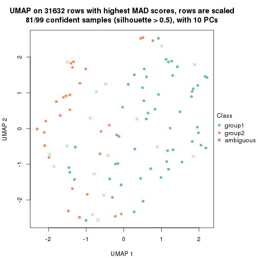
dimension_reduction(res, k = 3, method = "UMAP")
dimension_reduction(res, k = 4, method = "UMAP")
dimension_reduction(res, k = 5, method = "UMAP")
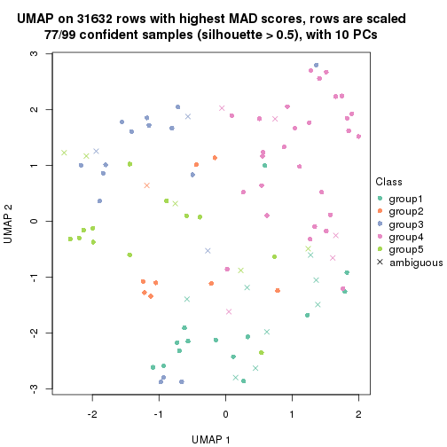
dimension_reduction(res, k = 6, method = "UMAP")
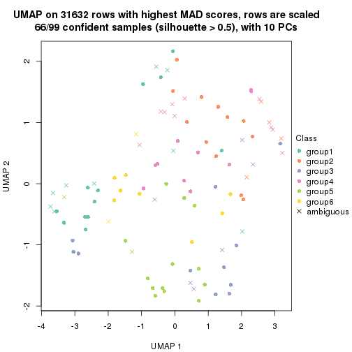
Following heatmap shows how subgroups are split when increasing k:
collect_classes(res)
Test correlation between subgroups and known annotations. If the known annotation is numeric, one-way ANOVA test is applied, and if the known annotation is discrete, chi-squared contingency table test is applied.
test_to_known_factors(res)
#> n disease.state(p) k
#> MAD:NMF 81 7.72e-09 2
#> MAD:NMF 91 1.23e-16 3
#> MAD:NMF 87 9.79e-18 4
#> MAD:NMF 77 6.32e-17 5
#> MAD:NMF 66 4.72e-09 6
If matrix rows can be associated to genes, consider to use GO_Enrichment(res,
...) to perform function enrichment for the signature genes.
The object with results only for a single top-value method and a single partition method can be extracted as:
res = res_list["ATC", "hclust"]
# you can also extract it by
# res = res_list["ATC:hclust"]
A summary of res and all the functions that can be applied to it:
res
#> A 'ConsensusPartition' object with k = 2, 3, 4, 5, 6.
#> On a matrix with 31632 rows and 99 columns.
#> Top rows (1000, 2000, 3000, 4000, 5000) are extracted by 'ATC' method.
#> Subgroups are detected by 'hclust' method.
#> Performed in total 1250 partitions by row resampling.
#> Best k for subgroups seems to be 5.
#>
#> Following methods can be applied to this 'ConsensusPartition' object:
#> [1] "cola_report" "collect_classes" "collect_plots"
#> [4] "collect_stats" "colnames" "compare_signatures"
#> [7] "consensus_heatmap" "dimension_reduction" "functional_enrichment"
#> [10] "get_anno_col" "get_anno" "get_classes"
#> [13] "get_consensus" "get_matrix" "get_membership"
#> [16] "get_param" "get_signatures" "get_stats"
#> [19] "is_best_k" "is_stable_k" "membership_heatmap"
#> [22] "ncol" "nrow" "plot_ecdf"
#> [25] "rownames" "select_partition_number" "show"
#> [28] "suggest_best_k" "test_to_known_factors"
collect_plots() function collects all the plots made from res for all k (number of partitions)
into one single page to provide an easy and fast comparison between different k.
collect_plots(res)
The plots are:
k and the heatmap of
predicted classes for each k.k.k.k.All the plots in panels can be made by individual functions and they are plotted later in this section.
select_partition_number() produces several plots showing different
statistics for choosing “optimized” k. There are following statistics:
k;k, the area increased is defined as \(A_k - A_{k-1}\).The detailed explanations of these statistics can be found in the cola vignette.
Generally speaking, lower PAC score, higher mean silhouette score or higher
concordance corresponds to better partition. Rand index and Jaccard index
measure how similar the current partition is compared to partition with k-1.
If they are too similar, we won't accept k is better than k-1.
select_partition_number(res)
The numeric values for all these statistics can be obtained by get_stats().
get_stats(res)
#> k 1-PAC mean_silhouette concordance area_increased Rand Jaccard
#> 2 2 0.633 0.723 0.889 0.4593 0.501 0.501
#> 3 3 0.576 0.616 0.819 0.3457 0.772 0.582
#> 4 4 0.605 0.471 0.705 0.0995 0.772 0.514
#> 5 5 0.690 0.740 0.825 0.0919 0.849 0.605
#> 6 6 0.715 0.662 0.775 0.0570 0.991 0.965
suggest_best_k() suggests the best \(k\) based on these statistics. The rules are as follows:
NA.suggest_best_k(res)
#> [1] 5
Following shows the table of the partitions (You need to click the show/hide
code output link to see it). The membership matrix (columns with name p*)
is inferred by
clue::cl_consensus()
function with the SE method. Basically the value in the membership matrix
represents the probability to belong to a certain group. The finall class
label for an item is determined with the group with highest probability it
belongs to.
In get_classes() function, the entropy is calculated from the membership
matrix and the silhouette score is calculated from the consensus matrix.
cbind(get_classes(res, k = 2), get_membership(res, k = 2))
#> class entropy silhouette p1 p2
#> GSM1152309 2 0.4298 0.780 0.088 0.912
#> GSM1152310 2 1.0000 0.242 0.496 0.504
#> GSM1152311 2 0.4298 0.780 0.088 0.912
#> GSM1152312 1 0.0000 0.914 1.000 0.000
#> GSM1152313 2 0.4298 0.780 0.088 0.912
#> GSM1152314 1 0.0000 0.914 1.000 0.000
#> GSM1152315 2 0.6438 0.728 0.164 0.836
#> GSM1152316 2 0.0672 0.797 0.008 0.992
#> GSM1152317 2 0.0000 0.794 0.000 1.000
#> GSM1152318 2 0.0000 0.794 0.000 1.000
#> GSM1152319 2 0.4562 0.776 0.096 0.904
#> GSM1152320 2 0.9998 0.255 0.492 0.508
#> GSM1152321 2 0.0000 0.794 0.000 1.000
#> GSM1152322 2 0.0672 0.797 0.008 0.992
#> GSM1152323 2 0.0376 0.796 0.004 0.996
#> GSM1152324 2 0.2603 0.791 0.044 0.956
#> GSM1152325 2 0.0000 0.794 0.000 1.000
#> GSM1152326 1 0.9970 -0.141 0.532 0.468
#> GSM1152327 2 0.0672 0.797 0.008 0.992
#> GSM1152328 2 0.1184 0.796 0.016 0.984
#> GSM1152329 1 0.0000 0.914 1.000 0.000
#> GSM1152330 1 0.9460 0.269 0.636 0.364
#> GSM1152331 2 0.0672 0.797 0.008 0.992
#> GSM1152332 1 0.0000 0.914 1.000 0.000
#> GSM1152333 1 0.0000 0.914 1.000 0.000
#> GSM1152334 1 0.9970 -0.141 0.532 0.468
#> GSM1152335 2 0.9922 0.350 0.448 0.552
#> GSM1152336 2 1.0000 0.242 0.496 0.504
#> GSM1152337 2 0.4298 0.780 0.088 0.912
#> GSM1152338 2 0.9993 0.276 0.484 0.516
#> GSM1152339 1 0.0000 0.914 1.000 0.000
#> GSM1152340 1 0.9998 -0.233 0.508 0.492
#> GSM1152341 1 0.9491 0.255 0.632 0.368
#> GSM1152342 1 0.0000 0.914 1.000 0.000
#> GSM1152343 1 0.9286 0.330 0.656 0.344
#> GSM1152344 2 0.4298 0.780 0.088 0.912
#> GSM1152345 1 0.9000 0.408 0.684 0.316
#> GSM1152346 2 0.0000 0.794 0.000 1.000
#> GSM1152347 1 0.0000 0.914 1.000 0.000
#> GSM1152348 1 0.9000 0.408 0.684 0.316
#> GSM1152349 1 0.0000 0.914 1.000 0.000
#> GSM1152355 1 0.0000 0.914 1.000 0.000
#> GSM1152356 1 0.0000 0.914 1.000 0.000
#> GSM1152357 1 0.0000 0.914 1.000 0.000
#> GSM1152358 2 0.9998 0.255 0.492 0.508
#> GSM1152359 1 0.0000 0.914 1.000 0.000
#> GSM1152360 1 0.0000 0.914 1.000 0.000
#> GSM1152361 2 0.0376 0.796 0.004 0.996
#> GSM1152362 1 0.0000 0.914 1.000 0.000
#> GSM1152363 1 0.0000 0.914 1.000 0.000
#> GSM1152364 1 0.0000 0.914 1.000 0.000
#> GSM1152365 1 0.0000 0.914 1.000 0.000
#> GSM1152366 1 0.0000 0.914 1.000 0.000
#> GSM1152367 1 0.0000 0.914 1.000 0.000
#> GSM1152368 1 0.0000 0.914 1.000 0.000
#> GSM1152369 1 0.0000 0.914 1.000 0.000
#> GSM1152370 1 0.0000 0.914 1.000 0.000
#> GSM1152371 1 0.0000 0.914 1.000 0.000
#> GSM1152372 2 0.9996 0.267 0.488 0.512
#> GSM1152373 1 0.0000 0.914 1.000 0.000
#> GSM1152374 2 0.7602 0.677 0.220 0.780
#> GSM1152375 1 0.0376 0.912 0.996 0.004
#> GSM1152376 1 0.0000 0.914 1.000 0.000
#> GSM1152377 1 0.0000 0.914 1.000 0.000
#> GSM1152378 1 0.0376 0.912 0.996 0.004
#> GSM1152379 1 0.0672 0.909 0.992 0.008
#> GSM1152380 1 0.0000 0.914 1.000 0.000
#> GSM1152381 1 0.0000 0.914 1.000 0.000
#> GSM1152382 1 0.0672 0.909 0.992 0.008
#> GSM1152383 1 0.0000 0.914 1.000 0.000
#> GSM1152384 1 0.0000 0.914 1.000 0.000
#> GSM1152385 2 0.0000 0.794 0.000 1.000
#> GSM1152386 2 0.0000 0.794 0.000 1.000
#> GSM1152387 2 0.0672 0.797 0.008 0.992
#> GSM1152289 2 0.0000 0.794 0.000 1.000
#> GSM1152290 2 0.0672 0.797 0.008 0.992
#> GSM1152291 2 0.0672 0.797 0.008 0.992
#> GSM1152292 1 0.0000 0.914 1.000 0.000
#> GSM1152293 2 0.9996 0.267 0.488 0.512
#> GSM1152294 1 0.1633 0.895 0.976 0.024
#> GSM1152295 2 0.9996 0.267 0.488 0.512
#> GSM1152296 1 0.0000 0.914 1.000 0.000
#> GSM1152297 2 0.9993 0.276 0.484 0.516
#> GSM1152298 2 0.0672 0.797 0.008 0.992
#> GSM1152299 2 0.0000 0.794 0.000 1.000
#> GSM1152300 2 0.9996 0.267 0.488 0.512
#> GSM1152301 1 0.0000 0.914 1.000 0.000
#> GSM1152302 1 0.0672 0.909 0.992 0.008
#> GSM1152303 1 0.0672 0.909 0.992 0.008
#> GSM1152304 2 0.4690 0.774 0.100 0.900
#> GSM1152305 2 0.0672 0.797 0.008 0.992
#> GSM1152306 2 0.9996 0.267 0.488 0.512
#> GSM1152307 1 0.0672 0.909 0.992 0.008
#> GSM1152308 2 0.9996 0.267 0.488 0.512
#> GSM1152350 1 0.7883 0.591 0.764 0.236
#> GSM1152351 1 0.1633 0.895 0.976 0.024
#> GSM1152352 1 0.1633 0.895 0.976 0.024
#> GSM1152353 1 0.0000 0.914 1.000 0.000
#> GSM1152354 1 0.0000 0.914 1.000 0.000
cbind(get_classes(res, k = 3), get_membership(res, k = 3))
#> class entropy silhouette p1 p2 p3
#> GSM1152309 3 0.6140 -0.1000 0.000 0.404 0.596
#> GSM1152310 3 0.0424 0.7054 0.008 0.000 0.992
#> GSM1152311 3 0.6140 -0.1000 0.000 0.404 0.596
#> GSM1152312 1 0.5882 0.6932 0.652 0.000 0.348
#> GSM1152313 3 0.6140 -0.1000 0.000 0.404 0.596
#> GSM1152314 1 0.0000 0.8179 1.000 0.000 0.000
#> GSM1152315 3 0.5733 0.1460 0.000 0.324 0.676
#> GSM1152316 2 0.6280 0.5267 0.000 0.540 0.460
#> GSM1152317 2 0.0747 0.6483 0.000 0.984 0.016
#> GSM1152318 2 0.0747 0.6483 0.000 0.984 0.016
#> GSM1152319 3 0.6095 -0.0623 0.000 0.392 0.608
#> GSM1152320 3 0.0237 0.7059 0.004 0.000 0.996
#> GSM1152321 2 0.0000 0.6406 0.000 1.000 0.000
#> GSM1152322 2 0.6180 0.5701 0.000 0.584 0.416
#> GSM1152323 2 0.5988 0.5932 0.000 0.632 0.368
#> GSM1152324 3 0.6260 -0.2926 0.000 0.448 0.552
#> GSM1152325 2 0.0000 0.6406 0.000 1.000 0.000
#> GSM1152326 3 0.1643 0.6871 0.044 0.000 0.956
#> GSM1152327 2 0.6235 0.5565 0.000 0.564 0.436
#> GSM1152328 2 0.6295 0.4970 0.000 0.528 0.472
#> GSM1152329 1 0.5760 0.7062 0.672 0.000 0.328
#> GSM1152330 3 0.4121 0.5957 0.168 0.000 0.832
#> GSM1152331 2 0.6244 0.5531 0.000 0.560 0.440
#> GSM1152332 1 0.1964 0.8167 0.944 0.000 0.056
#> GSM1152333 1 0.5859 0.6963 0.656 0.000 0.344
#> GSM1152334 3 0.1643 0.6871 0.044 0.000 0.956
#> GSM1152335 3 0.1878 0.6726 0.004 0.044 0.952
#> GSM1152336 3 0.0424 0.7054 0.008 0.000 0.992
#> GSM1152337 3 0.6140 -0.0989 0.000 0.404 0.596
#> GSM1152338 3 0.0237 0.7038 0.000 0.004 0.996
#> GSM1152339 1 0.5859 0.6963 0.656 0.000 0.344
#> GSM1152340 3 0.0892 0.7002 0.020 0.000 0.980
#> GSM1152341 3 0.3879 0.6069 0.152 0.000 0.848
#> GSM1152342 1 0.5948 0.6828 0.640 0.000 0.360
#> GSM1152343 3 0.4399 0.5683 0.188 0.000 0.812
#> GSM1152344 3 0.6140 -0.0989 0.000 0.404 0.596
#> GSM1152345 3 0.4702 0.5173 0.212 0.000 0.788
#> GSM1152346 2 0.0000 0.6406 0.000 1.000 0.000
#> GSM1152347 1 0.5178 0.7420 0.744 0.000 0.256
#> GSM1152348 3 0.4702 0.5173 0.212 0.000 0.788
#> GSM1152349 1 0.0424 0.8208 0.992 0.000 0.008
#> GSM1152355 1 0.0000 0.8179 1.000 0.000 0.000
#> GSM1152356 1 0.0747 0.8225 0.984 0.000 0.016
#> GSM1152357 1 0.0000 0.8179 1.000 0.000 0.000
#> GSM1152358 3 0.0237 0.7059 0.004 0.000 0.996
#> GSM1152359 1 0.1964 0.8167 0.944 0.000 0.056
#> GSM1152360 1 0.0000 0.8179 1.000 0.000 0.000
#> GSM1152361 2 0.5948 0.5943 0.000 0.640 0.360
#> GSM1152362 1 0.5859 0.6963 0.656 0.000 0.344
#> GSM1152363 1 0.0424 0.8208 0.992 0.000 0.008
#> GSM1152364 1 0.0000 0.8179 1.000 0.000 0.000
#> GSM1152365 1 0.5733 0.7085 0.676 0.000 0.324
#> GSM1152366 1 0.0747 0.8225 0.984 0.000 0.016
#> GSM1152367 1 0.1163 0.8232 0.972 0.000 0.028
#> GSM1152368 1 0.1289 0.8229 0.968 0.000 0.032
#> GSM1152369 1 0.1289 0.8229 0.968 0.000 0.032
#> GSM1152370 1 0.0000 0.8179 1.000 0.000 0.000
#> GSM1152371 1 0.1289 0.8229 0.968 0.000 0.032
#> GSM1152372 3 0.0000 0.7057 0.000 0.000 1.000
#> GSM1152373 1 0.0000 0.8179 1.000 0.000 0.000
#> GSM1152374 3 0.5291 0.2841 0.000 0.268 0.732
#> GSM1152375 1 0.5968 0.6785 0.636 0.000 0.364
#> GSM1152376 1 0.0424 0.8208 0.992 0.000 0.008
#> GSM1152377 1 0.0000 0.8179 1.000 0.000 0.000
#> GSM1152378 1 0.5968 0.6785 0.636 0.000 0.364
#> GSM1152379 1 0.5988 0.6741 0.632 0.000 0.368
#> GSM1152380 1 0.0424 0.8208 0.992 0.000 0.008
#> GSM1152381 1 0.0424 0.8208 0.992 0.000 0.008
#> GSM1152382 1 0.5988 0.6741 0.632 0.000 0.368
#> GSM1152383 1 0.0000 0.8179 1.000 0.000 0.000
#> GSM1152384 1 0.1031 0.8232 0.976 0.000 0.024
#> GSM1152385 2 0.0747 0.6483 0.000 0.984 0.016
#> GSM1152386 2 0.0747 0.6483 0.000 0.984 0.016
#> GSM1152387 2 0.6280 0.5289 0.000 0.540 0.460
#> GSM1152289 2 0.0747 0.6483 0.000 0.984 0.016
#> GSM1152290 2 0.6280 0.5289 0.000 0.540 0.460
#> GSM1152291 2 0.6280 0.5289 0.000 0.540 0.460
#> GSM1152292 1 0.5948 0.6828 0.640 0.000 0.360
#> GSM1152293 3 0.0000 0.7057 0.000 0.000 1.000
#> GSM1152294 1 0.6204 0.5926 0.576 0.000 0.424
#> GSM1152295 3 0.0000 0.7057 0.000 0.000 1.000
#> GSM1152296 1 0.1289 0.8229 0.968 0.000 0.032
#> GSM1152297 3 0.0237 0.7029 0.000 0.004 0.996
#> GSM1152298 2 0.6280 0.5289 0.000 0.540 0.460
#> GSM1152299 2 0.0000 0.6406 0.000 1.000 0.000
#> GSM1152300 3 0.0000 0.7057 0.000 0.000 1.000
#> GSM1152301 1 0.0000 0.8179 1.000 0.000 0.000
#> GSM1152302 1 0.6079 0.6499 0.612 0.000 0.388
#> GSM1152303 1 0.6079 0.6499 0.612 0.000 0.388
#> GSM1152304 3 0.6126 -0.0934 0.000 0.400 0.600
#> GSM1152305 2 0.6280 0.5289 0.000 0.540 0.460
#> GSM1152306 3 0.0000 0.7057 0.000 0.000 1.000
#> GSM1152307 1 0.6079 0.6499 0.612 0.000 0.388
#> GSM1152308 3 0.0000 0.7057 0.000 0.000 1.000
#> GSM1152350 3 0.5529 0.2630 0.296 0.000 0.704
#> GSM1152351 1 0.6204 0.5926 0.576 0.000 0.424
#> GSM1152352 1 0.6192 0.5989 0.580 0.000 0.420
#> GSM1152353 1 0.0892 0.8230 0.980 0.000 0.020
#> GSM1152354 1 0.0892 0.8230 0.980 0.000 0.020
cbind(get_classes(res, k = 4), get_membership(res, k = 4))
#> class entropy silhouette p1 p2 p3 p4
#> GSM1152309 2 0.0779 0.58483 0.016 0.980 0.000 0.004
#> GSM1152310 2 0.7711 0.53461 0.340 0.428 0.232 0.000
#> GSM1152311 2 0.0779 0.58483 0.016 0.980 0.000 0.004
#> GSM1152312 1 0.0592 0.54341 0.984 0.000 0.016 0.000
#> GSM1152313 2 0.0779 0.58483 0.016 0.980 0.000 0.004
#> GSM1152314 3 0.4072 0.93347 0.252 0.000 0.748 0.000
#> GSM1152315 2 0.2965 0.58912 0.036 0.892 0.072 0.000
#> GSM1152316 2 0.3157 0.50175 0.000 0.852 0.004 0.144
#> GSM1152317 4 0.2868 0.91887 0.000 0.136 0.000 0.864
#> GSM1152318 4 0.2868 0.91887 0.000 0.136 0.000 0.864
#> GSM1152319 2 0.1059 0.58713 0.016 0.972 0.012 0.000
#> GSM1152320 2 0.7696 0.54199 0.332 0.436 0.232 0.000
#> GSM1152321 4 0.0469 0.90330 0.000 0.000 0.012 0.988
#> GSM1152322 2 0.3810 0.44722 0.000 0.804 0.008 0.188
#> GSM1152323 2 0.4295 0.35840 0.000 0.752 0.008 0.240
#> GSM1152324 2 0.1396 0.56857 0.004 0.960 0.004 0.032
#> GSM1152325 4 0.0469 0.90330 0.000 0.000 0.012 0.988
#> GSM1152326 2 0.7747 0.47166 0.380 0.388 0.232 0.000
#> GSM1152327 2 0.3591 0.47096 0.000 0.824 0.008 0.168
#> GSM1152328 2 0.2799 0.51743 0.000 0.884 0.008 0.108
#> GSM1152329 1 0.1211 0.53198 0.960 0.000 0.040 0.000
#> GSM1152330 1 0.7399 -0.22154 0.512 0.280 0.208 0.000
#> GSM1152331 2 0.3545 0.47606 0.000 0.828 0.008 0.164
#> GSM1152332 1 0.4643 0.17282 0.656 0.000 0.344 0.000
#> GSM1152333 1 0.0707 0.54236 0.980 0.000 0.020 0.000
#> GSM1152334 2 0.7747 0.47166 0.380 0.388 0.232 0.000
#> GSM1152335 2 0.7421 0.57661 0.268 0.512 0.220 0.000
#> GSM1152336 2 0.7711 0.53461 0.340 0.428 0.232 0.000
#> GSM1152337 2 0.0779 0.58512 0.016 0.980 0.000 0.004
#> GSM1152338 2 0.7618 0.55986 0.308 0.464 0.228 0.000
#> GSM1152339 1 0.0707 0.54236 0.980 0.000 0.020 0.000
#> GSM1152340 2 0.7728 0.51979 0.352 0.416 0.232 0.000
#> GSM1152341 1 0.7490 -0.25738 0.496 0.284 0.220 0.000
#> GSM1152342 1 0.0188 0.54561 0.996 0.000 0.004 0.000
#> GSM1152343 1 0.7283 -0.16718 0.536 0.256 0.208 0.000
#> GSM1152344 2 0.0779 0.58512 0.016 0.980 0.000 0.004
#> GSM1152345 1 0.7159 -0.10627 0.556 0.244 0.200 0.000
#> GSM1152346 4 0.0469 0.90330 0.000 0.000 0.012 0.988
#> GSM1152347 1 0.2647 0.46918 0.880 0.000 0.120 0.000
#> GSM1152348 1 0.7159 -0.10627 0.556 0.244 0.200 0.000
#> GSM1152349 1 0.4843 0.04751 0.604 0.000 0.396 0.000
#> GSM1152355 3 0.4072 0.93347 0.252 0.000 0.748 0.000
#> GSM1152356 1 0.4790 0.10065 0.620 0.000 0.380 0.000
#> GSM1152357 3 0.4072 0.93347 0.252 0.000 0.748 0.000
#> GSM1152358 2 0.7696 0.54199 0.332 0.436 0.232 0.000
#> GSM1152359 1 0.4643 0.17282 0.656 0.000 0.344 0.000
#> GSM1152360 1 0.4877 -0.00806 0.592 0.000 0.408 0.000
#> GSM1152361 2 0.4123 0.37539 0.000 0.772 0.008 0.220
#> GSM1152362 1 0.0707 0.54236 0.980 0.000 0.020 0.000
#> GSM1152363 1 0.4830 0.06135 0.608 0.000 0.392 0.000
#> GSM1152364 3 0.4072 0.93347 0.252 0.000 0.748 0.000
#> GSM1152365 1 0.1302 0.52938 0.956 0.000 0.044 0.000
#> GSM1152366 1 0.4790 0.10065 0.620 0.000 0.380 0.000
#> GSM1152367 1 0.4746 0.13484 0.632 0.000 0.368 0.000
#> GSM1152368 1 0.4713 0.15030 0.640 0.000 0.360 0.000
#> GSM1152369 1 0.4713 0.15030 0.640 0.000 0.360 0.000
#> GSM1152370 1 0.4877 -0.00806 0.592 0.000 0.408 0.000
#> GSM1152371 1 0.4713 0.15030 0.640 0.000 0.360 0.000
#> GSM1152372 2 0.7540 0.56354 0.304 0.480 0.216 0.000
#> GSM1152373 3 0.4072 0.93347 0.252 0.000 0.748 0.000
#> GSM1152374 2 0.4990 0.57708 0.060 0.756 0.184 0.000
#> GSM1152375 1 0.0000 0.54549 1.000 0.000 0.000 0.000
#> GSM1152376 1 0.4830 0.06135 0.608 0.000 0.392 0.000
#> GSM1152377 3 0.4999 0.32391 0.492 0.000 0.508 0.000
#> GSM1152378 1 0.0000 0.54549 1.000 0.000 0.000 0.000
#> GSM1152379 1 0.0188 0.54469 0.996 0.004 0.000 0.000
#> GSM1152380 1 0.4830 0.06135 0.608 0.000 0.392 0.000
#> GSM1152381 1 0.4830 0.06135 0.608 0.000 0.392 0.000
#> GSM1152382 1 0.0188 0.54469 0.996 0.004 0.000 0.000
#> GSM1152383 3 0.4072 0.93347 0.252 0.000 0.748 0.000
#> GSM1152384 1 0.4746 0.12989 0.632 0.000 0.368 0.000
#> GSM1152385 4 0.2868 0.91887 0.000 0.136 0.000 0.864
#> GSM1152386 4 0.2868 0.91887 0.000 0.136 0.000 0.864
#> GSM1152387 2 0.2976 0.50982 0.000 0.872 0.008 0.120
#> GSM1152289 4 0.2868 0.91887 0.000 0.136 0.000 0.864
#> GSM1152290 2 0.2976 0.50982 0.000 0.872 0.008 0.120
#> GSM1152291 2 0.2976 0.50982 0.000 0.872 0.008 0.120
#> GSM1152292 1 0.0188 0.54561 0.996 0.000 0.004 0.000
#> GSM1152293 2 0.7649 0.55549 0.312 0.456 0.232 0.000
#> GSM1152294 1 0.1807 0.51563 0.940 0.008 0.052 0.000
#> GSM1152295 2 0.7649 0.55549 0.312 0.456 0.232 0.000
#> GSM1152296 1 0.4713 0.15030 0.640 0.000 0.360 0.000
#> GSM1152297 2 0.7638 0.55868 0.308 0.460 0.232 0.000
#> GSM1152298 2 0.2976 0.50982 0.000 0.872 0.008 0.120
#> GSM1152299 4 0.0469 0.90330 0.000 0.000 0.012 0.988
#> GSM1152300 2 0.7649 0.55549 0.312 0.456 0.232 0.000
#> GSM1152301 3 0.4072 0.93347 0.252 0.000 0.748 0.000
#> GSM1152302 1 0.0895 0.53777 0.976 0.004 0.020 0.000
#> GSM1152303 1 0.0895 0.53777 0.976 0.004 0.020 0.000
#> GSM1152304 2 0.1998 0.58468 0.020 0.944 0.020 0.016
#> GSM1152305 2 0.2976 0.50982 0.000 0.872 0.008 0.120
#> GSM1152306 2 0.7660 0.55328 0.316 0.452 0.232 0.000
#> GSM1152307 1 0.0895 0.53777 0.976 0.004 0.020 0.000
#> GSM1152308 2 0.7649 0.55549 0.312 0.456 0.232 0.000
#> GSM1152350 1 0.6275 0.17198 0.660 0.136 0.204 0.000
#> GSM1152351 1 0.1807 0.51563 0.940 0.008 0.052 0.000
#> GSM1152352 1 0.1890 0.51772 0.936 0.008 0.056 0.000
#> GSM1152353 1 0.4776 0.11290 0.624 0.000 0.376 0.000
#> GSM1152354 1 0.4776 0.11290 0.624 0.000 0.376 0.000
cbind(get_classes(res, k = 5), get_membership(res, k = 5))
#> class entropy silhouette p1 p2 p3 p4 p5
#> GSM1152309 3 0.4028 0.7958 0.000 0.192 0.768 0.000 0.040
#> GSM1152310 2 0.0566 0.8209 0.004 0.984 0.000 0.012 0.000
#> GSM1152311 3 0.4096 0.7890 0.000 0.200 0.760 0.000 0.040
#> GSM1152312 1 0.5329 0.7157 0.656 0.108 0.000 0.236 0.000
#> GSM1152313 3 0.4028 0.7958 0.000 0.192 0.768 0.000 0.040
#> GSM1152314 5 0.4138 1.0000 0.384 0.000 0.000 0.000 0.616
#> GSM1152315 3 0.4866 0.5778 0.000 0.344 0.620 0.000 0.036
#> GSM1152316 3 0.2193 0.8365 0.000 0.044 0.920 0.008 0.028
#> GSM1152317 4 0.6240 0.8494 0.000 0.000 0.244 0.544 0.212
#> GSM1152318 4 0.6240 0.8494 0.000 0.000 0.244 0.544 0.212
#> GSM1152319 3 0.4269 0.7605 0.000 0.232 0.732 0.000 0.036
#> GSM1152320 2 0.0000 0.8209 0.000 1.000 0.000 0.000 0.000
#> GSM1152321 4 0.3395 0.8243 0.000 0.000 0.000 0.764 0.236
#> GSM1152322 3 0.1386 0.7986 0.000 0.000 0.952 0.016 0.032
#> GSM1152323 3 0.2426 0.7485 0.000 0.000 0.900 0.064 0.036
#> GSM1152324 3 0.2439 0.8319 0.000 0.120 0.876 0.000 0.004
#> GSM1152325 4 0.3395 0.8243 0.000 0.000 0.000 0.764 0.236
#> GSM1152326 2 0.2654 0.7848 0.048 0.888 0.000 0.064 0.000
#> GSM1152327 3 0.1569 0.8170 0.000 0.012 0.948 0.008 0.032
#> GSM1152328 3 0.1251 0.8447 0.000 0.036 0.956 0.000 0.008
#> GSM1152329 1 0.5267 0.7175 0.672 0.092 0.000 0.232 0.004
#> GSM1152330 2 0.4466 0.6713 0.176 0.748 0.000 0.076 0.000
#> GSM1152331 3 0.1673 0.8204 0.000 0.016 0.944 0.008 0.032
#> GSM1152332 1 0.2095 0.6721 0.928 0.020 0.000 0.024 0.028
#> GSM1152333 1 0.5284 0.7166 0.660 0.104 0.000 0.236 0.000
#> GSM1152334 2 0.2304 0.7949 0.044 0.908 0.000 0.048 0.000
#> GSM1152335 2 0.2409 0.7691 0.000 0.900 0.068 0.000 0.032
#> GSM1152336 2 0.0451 0.8213 0.004 0.988 0.000 0.008 0.000
#> GSM1152337 3 0.3810 0.8070 0.000 0.176 0.788 0.000 0.036
#> GSM1152338 2 0.1331 0.8103 0.000 0.952 0.008 0.000 0.040
#> GSM1152339 1 0.5284 0.7166 0.660 0.104 0.000 0.236 0.000
#> GSM1152340 2 0.0693 0.8190 0.012 0.980 0.000 0.008 0.000
#> GSM1152341 2 0.4179 0.7026 0.152 0.776 0.000 0.072 0.000
#> GSM1152342 1 0.5459 0.7121 0.644 0.120 0.000 0.236 0.000
#> GSM1152343 2 0.5572 0.5433 0.192 0.644 0.000 0.164 0.000
#> GSM1152344 3 0.3847 0.8051 0.000 0.180 0.784 0.000 0.036
#> GSM1152345 2 0.4822 0.6024 0.220 0.704 0.000 0.076 0.000
#> GSM1152346 4 0.3395 0.8243 0.000 0.000 0.000 0.764 0.236
#> GSM1152347 1 0.4705 0.7124 0.744 0.076 0.000 0.172 0.008
#> GSM1152348 2 0.4822 0.6024 0.220 0.704 0.000 0.076 0.000
#> GSM1152349 1 0.1043 0.6329 0.960 0.000 0.000 0.000 0.040
#> GSM1152355 5 0.4138 1.0000 0.384 0.000 0.000 0.000 0.616
#> GSM1152356 1 0.0609 0.6552 0.980 0.000 0.000 0.000 0.020
#> GSM1152357 5 0.4138 1.0000 0.384 0.000 0.000 0.000 0.616
#> GSM1152358 2 0.0162 0.8213 0.000 0.996 0.000 0.004 0.000
#> GSM1152359 1 0.2095 0.6721 0.928 0.020 0.000 0.024 0.028
#> GSM1152360 1 0.1671 0.5794 0.924 0.000 0.000 0.000 0.076
#> GSM1152361 3 0.1894 0.7680 0.000 0.000 0.920 0.072 0.008
#> GSM1152362 1 0.5284 0.7166 0.660 0.104 0.000 0.236 0.000
#> GSM1152363 1 0.0880 0.6424 0.968 0.000 0.000 0.000 0.032
#> GSM1152364 5 0.4138 1.0000 0.384 0.000 0.000 0.000 0.616
#> GSM1152365 1 0.5217 0.7174 0.676 0.088 0.000 0.232 0.004
#> GSM1152366 1 0.0609 0.6552 0.980 0.000 0.000 0.000 0.020
#> GSM1152367 1 0.0290 0.6641 0.992 0.000 0.000 0.000 0.008
#> GSM1152368 1 0.0000 0.6682 1.000 0.000 0.000 0.000 0.000
#> GSM1152369 1 0.0000 0.6682 1.000 0.000 0.000 0.000 0.000
#> GSM1152370 1 0.1671 0.5794 0.924 0.000 0.000 0.000 0.076
#> GSM1152371 1 0.0000 0.6682 1.000 0.000 0.000 0.000 0.000
#> GSM1152372 2 0.2966 0.7241 0.000 0.848 0.016 0.000 0.136
#> GSM1152373 5 0.4138 1.0000 0.384 0.000 0.000 0.000 0.616
#> GSM1152374 2 0.5113 0.1050 0.000 0.576 0.380 0.000 0.044
#> GSM1152375 1 0.5500 0.7103 0.640 0.124 0.000 0.236 0.000
#> GSM1152376 1 0.0963 0.6379 0.964 0.000 0.000 0.000 0.036
#> GSM1152377 1 0.3480 0.0820 0.752 0.000 0.000 0.000 0.248
#> GSM1152378 1 0.5500 0.7103 0.640 0.124 0.000 0.236 0.000
#> GSM1152379 1 0.5541 0.7087 0.636 0.128 0.000 0.236 0.000
#> GSM1152380 1 0.0880 0.6424 0.968 0.000 0.000 0.000 0.032
#> GSM1152381 1 0.0880 0.6424 0.968 0.000 0.000 0.000 0.032
#> GSM1152382 1 0.5541 0.7087 0.636 0.128 0.000 0.236 0.000
#> GSM1152383 5 0.4138 1.0000 0.384 0.000 0.000 0.000 0.616
#> GSM1152384 1 0.0290 0.6636 0.992 0.000 0.000 0.000 0.008
#> GSM1152385 4 0.6240 0.8494 0.000 0.000 0.244 0.544 0.212
#> GSM1152386 4 0.6240 0.8494 0.000 0.000 0.244 0.544 0.212
#> GSM1152387 3 0.0703 0.8431 0.000 0.024 0.976 0.000 0.000
#> GSM1152289 4 0.6240 0.8494 0.000 0.000 0.244 0.544 0.212
#> GSM1152290 3 0.0703 0.8431 0.000 0.024 0.976 0.000 0.000
#> GSM1152291 3 0.0703 0.8431 0.000 0.024 0.976 0.000 0.000
#> GSM1152292 1 0.5459 0.7121 0.644 0.120 0.000 0.236 0.000
#> GSM1152293 2 0.0963 0.8168 0.000 0.964 0.000 0.000 0.036
#> GSM1152294 1 0.6016 0.6568 0.580 0.184 0.000 0.236 0.000
#> GSM1152295 2 0.0963 0.8168 0.000 0.964 0.000 0.000 0.036
#> GSM1152296 1 0.0000 0.6682 1.000 0.000 0.000 0.000 0.000
#> GSM1152297 2 0.1124 0.8158 0.000 0.960 0.004 0.000 0.036
#> GSM1152298 3 0.0703 0.8431 0.000 0.024 0.976 0.000 0.000
#> GSM1152299 4 0.3395 0.8243 0.000 0.000 0.000 0.764 0.236
#> GSM1152300 2 0.0963 0.8168 0.000 0.964 0.000 0.000 0.036
#> GSM1152301 5 0.4138 1.0000 0.384 0.000 0.000 0.000 0.616
#> GSM1152302 1 0.5929 0.6865 0.612 0.172 0.000 0.212 0.004
#> GSM1152303 1 0.5929 0.6865 0.612 0.172 0.000 0.212 0.004
#> GSM1152304 3 0.4031 0.7938 0.000 0.184 0.772 0.000 0.044
#> GSM1152305 3 0.0703 0.8431 0.000 0.024 0.976 0.000 0.000
#> GSM1152306 2 0.0880 0.8179 0.000 0.968 0.000 0.000 0.032
#> GSM1152307 1 0.5929 0.6865 0.612 0.172 0.000 0.212 0.004
#> GSM1152308 2 0.0963 0.8168 0.000 0.964 0.000 0.000 0.036
#> GSM1152350 2 0.6528 0.0851 0.284 0.480 0.000 0.236 0.000
#> GSM1152351 1 0.6016 0.6568 0.580 0.184 0.000 0.236 0.000
#> GSM1152352 1 0.5987 0.6617 0.584 0.180 0.000 0.236 0.000
#> GSM1152353 1 0.0510 0.6586 0.984 0.000 0.000 0.000 0.016
#> GSM1152354 1 0.0510 0.6586 0.984 0.000 0.000 0.000 0.016
cbind(get_classes(res, k = 6), get_membership(res, k = 6))
#> class entropy silhouette p1 p2 p3 p4 p5 p6
#> GSM1152309 3 0.3841 0.7853 0.000 0.168 0.764 0.000 NA 0.000
#> GSM1152310 2 0.1418 0.8165 0.032 0.944 0.000 0.000 NA 0.000
#> GSM1152311 3 0.3907 0.7792 0.000 0.176 0.756 0.000 NA 0.000
#> GSM1152312 1 0.3748 0.5740 0.688 0.012 0.000 0.000 NA 0.000
#> GSM1152313 3 0.3841 0.7853 0.000 0.168 0.764 0.000 NA 0.000
#> GSM1152314 6 0.0146 0.9030 0.004 0.000 0.000 0.000 NA 0.996
#> GSM1152315 3 0.4718 0.5893 0.000 0.316 0.616 0.000 NA 0.000
#> GSM1152316 3 0.1462 0.8255 0.000 0.008 0.936 0.000 NA 0.000
#> GSM1152317 4 0.4941 0.8415 0.000 0.000 0.124 0.640 NA 0.000
#> GSM1152318 4 0.4941 0.8415 0.000 0.000 0.124 0.640 NA 0.000
#> GSM1152319 3 0.4120 0.7541 0.000 0.204 0.728 0.000 NA 0.000
#> GSM1152320 2 0.1003 0.8163 0.020 0.964 0.000 0.000 NA 0.000
#> GSM1152321 4 0.0146 0.7957 0.000 0.000 0.000 0.996 NA 0.000
#> GSM1152322 3 0.2048 0.7754 0.000 0.000 0.880 0.000 NA 0.000
#> GSM1152323 3 0.2805 0.7123 0.000 0.000 0.812 0.004 NA 0.000
#> GSM1152324 3 0.2568 0.8209 0.000 0.068 0.876 0.000 NA 0.000
#> GSM1152325 4 0.0000 0.7969 0.000 0.000 0.000 1.000 NA 0.000
#> GSM1152326 2 0.2897 0.7852 0.060 0.852 0.000 0.000 NA 0.000
#> GSM1152327 3 0.1556 0.8027 0.000 0.000 0.920 0.000 NA 0.000
#> GSM1152328 3 0.1682 0.8309 0.000 0.020 0.928 0.000 NA 0.000
#> GSM1152329 1 0.3476 0.5741 0.732 0.004 0.000 0.000 NA 0.004
#> GSM1152330 2 0.4545 0.6894 0.124 0.700 0.000 0.000 NA 0.000
#> GSM1152331 3 0.1444 0.8067 0.000 0.000 0.928 0.000 NA 0.000
#> GSM1152332 1 0.3126 0.4795 0.752 0.000 0.000 0.000 NA 0.248
#> GSM1152333 1 0.3653 0.5745 0.692 0.008 0.000 0.000 NA 0.000
#> GSM1152334 2 0.2647 0.7941 0.044 0.868 0.000 0.000 NA 0.000
#> GSM1152335 2 0.2164 0.7590 0.000 0.900 0.068 0.000 NA 0.000
#> GSM1152336 2 0.1341 0.8167 0.028 0.948 0.000 0.000 NA 0.000
#> GSM1152337 3 0.3432 0.8011 0.000 0.148 0.800 0.000 NA 0.000
#> GSM1152338 2 0.0603 0.8037 0.000 0.980 0.004 0.000 NA 0.000
#> GSM1152339 1 0.3653 0.5745 0.692 0.008 0.000 0.000 NA 0.000
#> GSM1152340 2 0.1480 0.8137 0.040 0.940 0.000 0.000 NA 0.000
#> GSM1152341 2 0.4295 0.7077 0.112 0.728 0.000 0.000 NA 0.000
#> GSM1152342 1 0.3954 0.5587 0.636 0.012 0.000 0.000 NA 0.000
#> GSM1152343 2 0.5350 0.5945 0.212 0.592 0.000 0.000 NA 0.000
#> GSM1152344 3 0.3470 0.7996 0.000 0.152 0.796 0.000 NA 0.000
#> GSM1152345 2 0.4918 0.6488 0.160 0.656 0.000 0.000 NA 0.000
#> GSM1152346 4 0.0146 0.7957 0.000 0.000 0.000 0.996 NA 0.000
#> GSM1152347 1 0.3065 0.5397 0.844 0.004 0.000 0.000 NA 0.052
#> GSM1152348 2 0.4918 0.6488 0.160 0.656 0.000 0.000 NA 0.000
#> GSM1152349 1 0.3446 0.4334 0.692 0.000 0.000 0.000 NA 0.308
#> GSM1152355 6 0.0146 0.9030 0.004 0.000 0.000 0.000 NA 0.996
#> GSM1152356 1 0.3266 0.4700 0.728 0.000 0.000 0.000 NA 0.272
#> GSM1152357 6 0.0146 0.9030 0.004 0.000 0.000 0.000 NA 0.996
#> GSM1152358 2 0.1261 0.8173 0.024 0.952 0.000 0.000 NA 0.000
#> GSM1152359 1 0.3126 0.4795 0.752 0.000 0.000 0.000 NA 0.248
#> GSM1152360 1 0.3592 0.3657 0.656 0.000 0.000 0.000 NA 0.344
#> GSM1152361 3 0.3081 0.6785 0.000 0.000 0.776 0.004 NA 0.000
#> GSM1152362 1 0.3653 0.5745 0.692 0.008 0.000 0.000 NA 0.000
#> GSM1152363 1 0.3390 0.4506 0.704 0.000 0.000 0.000 NA 0.296
#> GSM1152364 6 0.0146 0.9030 0.004 0.000 0.000 0.000 NA 0.996
#> GSM1152365 1 0.3583 0.5739 0.728 0.004 0.000 0.000 NA 0.008
#> GSM1152366 1 0.3266 0.4700 0.728 0.000 0.000 0.000 NA 0.272
#> GSM1152367 1 0.3198 0.4792 0.740 0.000 0.000 0.000 NA 0.260
#> GSM1152368 1 0.3151 0.4836 0.748 0.000 0.000 0.000 NA 0.252
#> GSM1152369 1 0.3151 0.4836 0.748 0.000 0.000 0.000 NA 0.252
#> GSM1152370 1 0.3592 0.3657 0.656 0.000 0.000 0.000 NA 0.344
#> GSM1152371 1 0.3151 0.4836 0.748 0.000 0.000 0.000 NA 0.252
#> GSM1152372 2 0.4008 0.5769 0.000 0.672 0.016 0.000 NA 0.004
#> GSM1152373 6 0.0260 0.8997 0.008 0.000 0.000 0.000 NA 0.992
#> GSM1152374 2 0.4473 0.1125 0.000 0.584 0.380 0.000 NA 0.000
#> GSM1152375 1 0.4049 0.5645 0.648 0.020 0.000 0.000 NA 0.000
#> GSM1152376 1 0.3428 0.4398 0.696 0.000 0.000 0.000 NA 0.304
#> GSM1152377 6 0.3862 -0.0119 0.476 0.000 0.000 0.000 NA 0.524
#> GSM1152378 1 0.4049 0.5645 0.648 0.020 0.000 0.000 NA 0.000
#> GSM1152379 1 0.4124 0.5630 0.644 0.024 0.000 0.000 NA 0.000
#> GSM1152380 1 0.3409 0.4457 0.700 0.000 0.000 0.000 NA 0.300
#> GSM1152381 1 0.3390 0.4506 0.704 0.000 0.000 0.000 NA 0.296
#> GSM1152382 1 0.4124 0.5630 0.644 0.024 0.000 0.000 NA 0.000
#> GSM1152383 6 0.0146 0.9030 0.004 0.000 0.000 0.000 NA 0.996
#> GSM1152384 1 0.3244 0.4745 0.732 0.000 0.000 0.000 NA 0.268
#> GSM1152385 4 0.4941 0.8415 0.000 0.000 0.124 0.640 NA 0.000
#> GSM1152386 4 0.4941 0.8415 0.000 0.000 0.124 0.640 NA 0.000
#> GSM1152387 3 0.0790 0.8274 0.000 0.000 0.968 0.000 NA 0.000
#> GSM1152289 4 0.4941 0.8415 0.000 0.000 0.124 0.640 NA 0.000
#> GSM1152290 3 0.0713 0.8282 0.000 0.000 0.972 0.000 NA 0.000
#> GSM1152291 3 0.0713 0.8282 0.000 0.000 0.972 0.000 NA 0.000
#> GSM1152292 1 0.3852 0.5684 0.664 0.012 0.000 0.000 NA 0.000
#> GSM1152293 2 0.0000 0.8110 0.000 1.000 0.000 0.000 NA 0.000
#> GSM1152294 1 0.4958 0.4971 0.560 0.076 0.000 0.000 NA 0.000
#> GSM1152295 2 0.0000 0.8110 0.000 1.000 0.000 0.000 NA 0.000
#> GSM1152296 1 0.3151 0.4836 0.748 0.000 0.000 0.000 NA 0.252
#> GSM1152297 2 0.0363 0.8082 0.000 0.988 0.000 0.000 NA 0.000
#> GSM1152298 3 0.0713 0.8282 0.000 0.000 0.972 0.000 NA 0.000
#> GSM1152299 4 0.0000 0.7969 0.000 0.000 0.000 1.000 NA 0.000
#> GSM1152300 2 0.0000 0.8110 0.000 1.000 0.000 0.000 NA 0.000
#> GSM1152301 6 0.0146 0.9030 0.004 0.000 0.000 0.000 NA 0.996
#> GSM1152302 1 0.5160 0.5307 0.564 0.104 0.000 0.000 NA 0.000
#> GSM1152303 1 0.5160 0.5307 0.564 0.104 0.000 0.000 NA 0.000
#> GSM1152304 3 0.3345 0.7880 0.000 0.184 0.788 0.000 NA 0.000
#> GSM1152305 3 0.0713 0.8282 0.000 0.000 0.972 0.000 NA 0.000
#> GSM1152306 2 0.0146 0.8122 0.004 0.996 0.000 0.000 NA 0.000
#> GSM1152307 1 0.5160 0.5307 0.564 0.104 0.000 0.000 NA 0.000
#> GSM1152308 2 0.0000 0.8110 0.000 1.000 0.000 0.000 NA 0.000
#> GSM1152350 2 0.6066 0.1414 0.356 0.380 0.000 0.000 NA 0.000
#> GSM1152351 1 0.4958 0.4971 0.560 0.076 0.000 0.000 NA 0.000
#> GSM1152352 1 0.4938 0.5040 0.568 0.076 0.000 0.000 NA 0.000
#> GSM1152353 1 0.3244 0.4729 0.732 0.000 0.000 0.000 NA 0.268
#> GSM1152354 1 0.3244 0.4729 0.732 0.000 0.000 0.000 NA 0.268
Heatmaps for the consensus matrix. It visualizes the probability of two samples to be in a same group.
consensus_heatmap(res, k = 2)
consensus_heatmap(res, k = 3)
consensus_heatmap(res, k = 4)
consensus_heatmap(res, k = 5)

consensus_heatmap(res, k = 6)
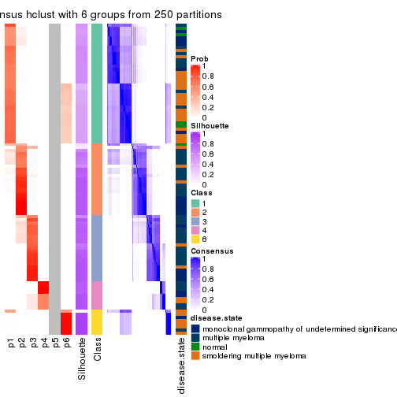
Heatmaps for the membership of samples in all partitions to see how consistent they are:
membership_heatmap(res, k = 2)
membership_heatmap(res, k = 3)
membership_heatmap(res, k = 4)
membership_heatmap(res, k = 5)
membership_heatmap(res, k = 6)
As soon as we have had the classes for columns, we can look for signatures which are significantly different between classes which can be candidate marks for certain classes. Following are the heatmaps for signatures.
Signature heatmaps where rows are scaled:
get_signatures(res, k = 2)
get_signatures(res, k = 3)
get_signatures(res, k = 4)
get_signatures(res, k = 5)
get_signatures(res, k = 6)
Signature heatmaps where rows are not scaled:
get_signatures(res, k = 2, scale_rows = FALSE)
get_signatures(res, k = 3, scale_rows = FALSE)
get_signatures(res, k = 4, scale_rows = FALSE)
get_signatures(res, k = 5, scale_rows = FALSE)
get_signatures(res, k = 6, scale_rows = FALSE)
Compare the overlap of signatures from different k:
compare_signatures(res)
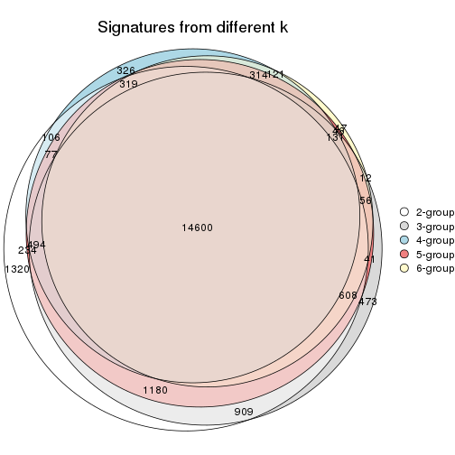
get_signature() returns a data frame invisibly. TO get the list of signatures, the function
call should be assigned to a variable explicitly. In following code, if plot argument is set
to FALSE, no heatmap is plotted while only the differential analysis is performed.
# code only for demonstration
tb = get_signature(res, k = ..., plot = FALSE)
An example of the output of tb is:
#> which_row fdr mean_1 mean_2 scaled_mean_1 scaled_mean_2 km
#> 1 38 0.042760348 8.373488 9.131774 -0.5533452 0.5164555 1
#> 2 40 0.018707592 7.106213 8.469186 -0.6173731 0.5762149 1
#> 3 55 0.019134737 10.221463 11.207825 -0.6159697 0.5749050 1
#> 4 59 0.006059896 5.921854 7.869574 -0.6899429 0.6439467 1
#> 5 60 0.018055526 8.928898 10.211722 -0.6204761 0.5791110 1
#> 6 98 0.009384629 15.714769 14.887706 0.6635654 -0.6193277 2
...
The columns in tb are:
which_row: row indices corresponding to the input matrix.fdr: FDR for the differential test. mean_x: The mean value in group x.scaled_mean_x: The mean value in group x after rows are scaled.km: Row groups if k-means clustering is applied to rows.UMAP plot which shows how samples are separated.
dimension_reduction(res, k = 2, method = "UMAP")
dimension_reduction(res, k = 3, method = "UMAP")
dimension_reduction(res, k = 4, method = "UMAP")
dimension_reduction(res, k = 5, method = "UMAP")
dimension_reduction(res, k = 6, method = "UMAP")
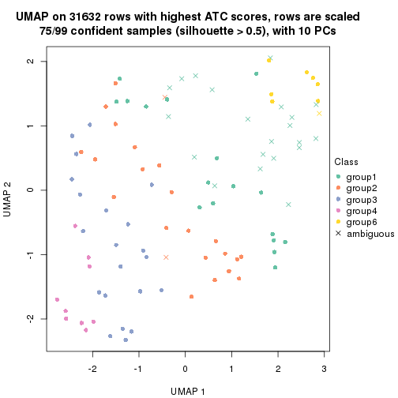
Following heatmap shows how subgroups are split when increasing k:
collect_classes(res)

Test correlation between subgroups and known annotations. If the known annotation is numeric, one-way ANOVA test is applied, and if the known annotation is discrete, chi-squared contingency table test is applied.
test_to_known_factors(res)
#> n disease.state(p) k
#> ATC:hclust 78 0.000142 2
#> ATC:hclust 87 0.000433 3
#> ATC:hclust 65 0.040548 4
#> ATC:hclust 96 0.000931 5
#> ATC:hclust 75 0.072211 6
If matrix rows can be associated to genes, consider to use GO_Enrichment(res,
...) to perform function enrichment for the signature genes.
The object with results only for a single top-value method and a single partition method can be extracted as:
res = res_list["ATC", "kmeans"]
# you can also extract it by
# res = res_list["ATC:kmeans"]
A summary of res and all the functions that can be applied to it:
res
#> A 'ConsensusPartition' object with k = 2, 3, 4, 5, 6.
#> On a matrix with 31632 rows and 99 columns.
#> Top rows (1000, 2000, 3000, 4000, 5000) are extracted by 'ATC' method.
#> Subgroups are detected by 'kmeans' method.
#> Performed in total 1250 partitions by row resampling.
#> Best k for subgroups seems to be 3.
#>
#> Following methods can be applied to this 'ConsensusPartition' object:
#> [1] "cola_report" "collect_classes" "collect_plots"
#> [4] "collect_stats" "colnames" "compare_signatures"
#> [7] "consensus_heatmap" "dimension_reduction" "functional_enrichment"
#> [10] "get_anno_col" "get_anno" "get_classes"
#> [13] "get_consensus" "get_matrix" "get_membership"
#> [16] "get_param" "get_signatures" "get_stats"
#> [19] "is_best_k" "is_stable_k" "membership_heatmap"
#> [22] "ncol" "nrow" "plot_ecdf"
#> [25] "rownames" "select_partition_number" "show"
#> [28] "suggest_best_k" "test_to_known_factors"
collect_plots() function collects all the plots made from res for all k (number of partitions)
into one single page to provide an easy and fast comparison between different k.
collect_plots(res)
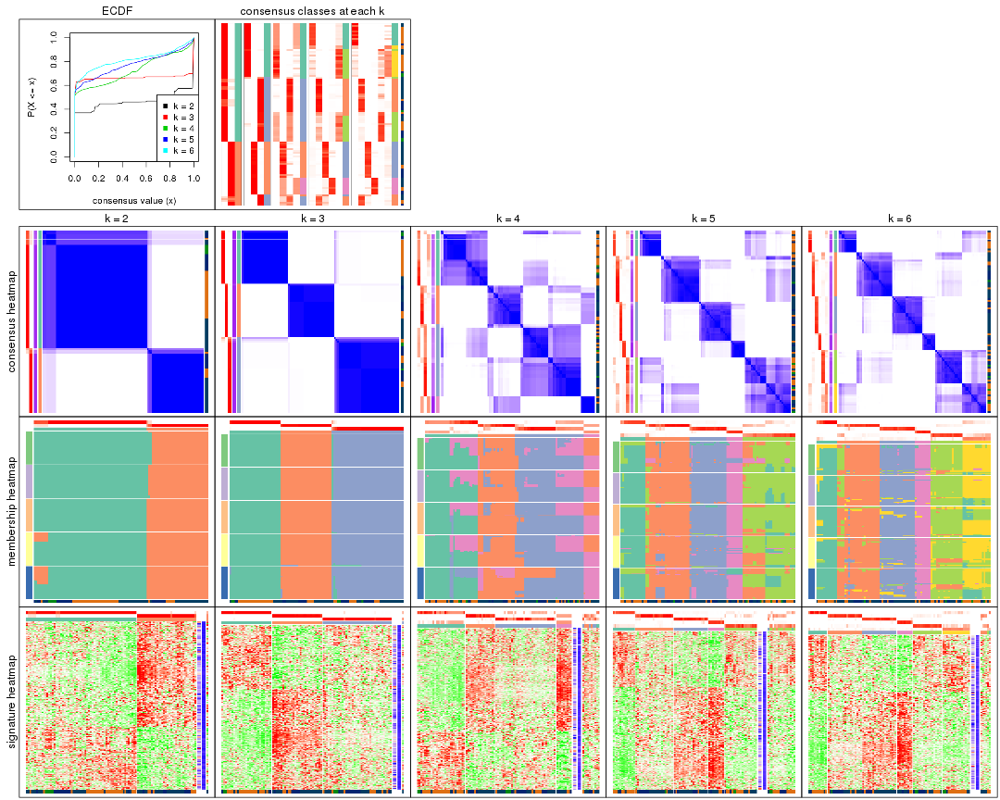
The plots are:
k and the heatmap of
predicted classes for each k.k.k.k.All the plots in panels can be made by individual functions and they are plotted later in this section.
select_partition_number() produces several plots showing different
statistics for choosing “optimized” k. There are following statistics:
k;k, the area increased is defined as \(A_k - A_{k-1}\).The detailed explanations of these statistics can be found in the cola vignette.
Generally speaking, lower PAC score, higher mean silhouette score or higher
concordance corresponds to better partition. Rand index and Jaccard index
measure how similar the current partition is compared to partition with k-1.
If they are too similar, we won't accept k is better than k-1.
select_partition_number(res)
The numeric values for all these statistics can be obtained by get_stats().
get_stats(res)
#> k 1-PAC mean_silhouette concordance area_increased Rand Jaccard
#> 2 2 0.846 0.954 0.979 0.4626 0.538 0.538
#> 3 3 1.000 0.979 0.990 0.4371 0.712 0.504
#> 4 4 0.707 0.677 0.773 0.0965 0.937 0.817
#> 5 5 0.741 0.732 0.845 0.0651 0.835 0.515
#> 6 6 0.787 0.805 0.848 0.0510 0.918 0.656
suggest_best_k() suggests the best \(k\) based on these statistics. The rules are as follows:
NA.suggest_best_k(res)
#> [1] 3
Following shows the table of the partitions (You need to click the show/hide
code output link to see it). The membership matrix (columns with name p*)
is inferred by
clue::cl_consensus()
function with the SE method. Basically the value in the membership matrix
represents the probability to belong to a certain group. The finall class
label for an item is determined with the group with highest probability it
belongs to.
In get_classes() function, the entropy is calculated from the membership
matrix and the silhouette score is calculated from the consensus matrix.
cbind(get_classes(res, k = 2), get_membership(res, k = 2))
#> class entropy silhouette p1 p2
#> GSM1152309 2 0.000 0.975 0.000 1.000
#> GSM1152310 1 0.644 0.819 0.836 0.164
#> GSM1152311 2 0.000 0.975 0.000 1.000
#> GSM1152312 1 0.000 0.979 1.000 0.000
#> GSM1152313 2 0.000 0.975 0.000 1.000
#> GSM1152314 1 0.000 0.979 1.000 0.000
#> GSM1152315 2 0.000 0.975 0.000 1.000
#> GSM1152316 2 0.000 0.975 0.000 1.000
#> GSM1152317 2 0.000 0.975 0.000 1.000
#> GSM1152318 2 0.000 0.975 0.000 1.000
#> GSM1152319 2 0.000 0.975 0.000 1.000
#> GSM1152320 1 0.644 0.819 0.836 0.164
#> GSM1152321 2 0.000 0.975 0.000 1.000
#> GSM1152322 2 0.000 0.975 0.000 1.000
#> GSM1152323 2 0.000 0.975 0.000 1.000
#> GSM1152324 2 0.000 0.975 0.000 1.000
#> GSM1152325 2 0.000 0.975 0.000 1.000
#> GSM1152326 1 0.000 0.979 1.000 0.000
#> GSM1152327 2 0.000 0.975 0.000 1.000
#> GSM1152328 2 0.000 0.975 0.000 1.000
#> GSM1152329 1 0.000 0.979 1.000 0.000
#> GSM1152330 1 0.000 0.979 1.000 0.000
#> GSM1152331 2 0.000 0.975 0.000 1.000
#> GSM1152332 1 0.000 0.979 1.000 0.000
#> GSM1152333 1 0.000 0.979 1.000 0.000
#> GSM1152334 1 0.595 0.842 0.856 0.144
#> GSM1152335 2 0.706 0.756 0.192 0.808
#> GSM1152336 1 0.644 0.819 0.836 0.164
#> GSM1152337 2 0.000 0.975 0.000 1.000
#> GSM1152338 2 0.971 0.318 0.400 0.600
#> GSM1152339 1 0.000 0.979 1.000 0.000
#> GSM1152340 1 0.000 0.979 1.000 0.000
#> GSM1152341 1 0.000 0.979 1.000 0.000
#> GSM1152342 1 0.000 0.979 1.000 0.000
#> GSM1152343 1 0.000 0.979 1.000 0.000
#> GSM1152344 2 0.000 0.975 0.000 1.000
#> GSM1152345 1 0.000 0.979 1.000 0.000
#> GSM1152346 2 0.000 0.975 0.000 1.000
#> GSM1152347 1 0.000 0.979 1.000 0.000
#> GSM1152348 1 0.000 0.979 1.000 0.000
#> GSM1152349 1 0.000 0.979 1.000 0.000
#> GSM1152355 1 0.000 0.979 1.000 0.000
#> GSM1152356 1 0.000 0.979 1.000 0.000
#> GSM1152357 1 0.000 0.979 1.000 0.000
#> GSM1152358 1 0.644 0.819 0.836 0.164
#> GSM1152359 1 0.000 0.979 1.000 0.000
#> GSM1152360 1 0.000 0.979 1.000 0.000
#> GSM1152361 2 0.000 0.975 0.000 1.000
#> GSM1152362 1 0.000 0.979 1.000 0.000
#> GSM1152363 1 0.000 0.979 1.000 0.000
#> GSM1152364 1 0.000 0.979 1.000 0.000
#> GSM1152365 1 0.000 0.979 1.000 0.000
#> GSM1152366 1 0.000 0.979 1.000 0.000
#> GSM1152367 1 0.000 0.979 1.000 0.000
#> GSM1152368 1 0.000 0.979 1.000 0.000
#> GSM1152369 1 0.000 0.979 1.000 0.000
#> GSM1152370 1 0.000 0.979 1.000 0.000
#> GSM1152371 1 0.000 0.979 1.000 0.000
#> GSM1152372 2 0.738 0.732 0.208 0.792
#> GSM1152373 1 0.000 0.979 1.000 0.000
#> GSM1152374 2 0.000 0.975 0.000 1.000
#> GSM1152375 1 0.000 0.979 1.000 0.000
#> GSM1152376 1 0.000 0.979 1.000 0.000
#> GSM1152377 1 0.000 0.979 1.000 0.000
#> GSM1152378 1 0.000 0.979 1.000 0.000
#> GSM1152379 1 0.000 0.979 1.000 0.000
#> GSM1152380 1 0.000 0.979 1.000 0.000
#> GSM1152381 1 0.000 0.979 1.000 0.000
#> GSM1152382 1 0.000 0.979 1.000 0.000
#> GSM1152383 1 0.000 0.979 1.000 0.000
#> GSM1152384 1 0.000 0.979 1.000 0.000
#> GSM1152385 2 0.000 0.975 0.000 1.000
#> GSM1152386 2 0.000 0.975 0.000 1.000
#> GSM1152387 2 0.000 0.975 0.000 1.000
#> GSM1152289 2 0.000 0.975 0.000 1.000
#> GSM1152290 2 0.000 0.975 0.000 1.000
#> GSM1152291 2 0.000 0.975 0.000 1.000
#> GSM1152292 1 0.000 0.979 1.000 0.000
#> GSM1152293 1 0.644 0.819 0.836 0.164
#> GSM1152294 1 0.000 0.979 1.000 0.000
#> GSM1152295 1 0.584 0.846 0.860 0.140
#> GSM1152296 1 0.000 0.979 1.000 0.000
#> GSM1152297 2 0.000 0.975 0.000 1.000
#> GSM1152298 2 0.000 0.975 0.000 1.000
#> GSM1152299 2 0.000 0.975 0.000 1.000
#> GSM1152300 1 0.644 0.819 0.836 0.164
#> GSM1152301 1 0.000 0.979 1.000 0.000
#> GSM1152302 1 0.000 0.979 1.000 0.000
#> GSM1152303 1 0.000 0.979 1.000 0.000
#> GSM1152304 2 0.000 0.975 0.000 1.000
#> GSM1152305 2 0.000 0.975 0.000 1.000
#> GSM1152306 1 0.000 0.979 1.000 0.000
#> GSM1152307 1 0.000 0.979 1.000 0.000
#> GSM1152308 1 0.000 0.979 1.000 0.000
#> GSM1152350 1 0.000 0.979 1.000 0.000
#> GSM1152351 1 0.000 0.979 1.000 0.000
#> GSM1152352 1 0.000 0.979 1.000 0.000
#> GSM1152353 1 0.000 0.979 1.000 0.000
#> GSM1152354 1 0.000 0.979 1.000 0.000
cbind(get_classes(res, k = 3), get_membership(res, k = 3))
#> class entropy silhouette p1 p2 p3
#> GSM1152309 2 0.0424 0.992 0.000 0.992 0.008
#> GSM1152310 3 0.0000 0.980 0.000 0.000 1.000
#> GSM1152311 2 0.0424 0.992 0.000 0.992 0.008
#> GSM1152312 3 0.0424 0.978 0.008 0.000 0.992
#> GSM1152313 2 0.0424 0.992 0.000 0.992 0.008
#> GSM1152314 1 0.0000 0.998 1.000 0.000 0.000
#> GSM1152315 3 0.0000 0.980 0.000 0.000 1.000
#> GSM1152316 2 0.0000 0.995 0.000 1.000 0.000
#> GSM1152317 2 0.0000 0.995 0.000 1.000 0.000
#> GSM1152318 2 0.0000 0.995 0.000 1.000 0.000
#> GSM1152319 2 0.2261 0.930 0.000 0.932 0.068
#> GSM1152320 3 0.0000 0.980 0.000 0.000 1.000
#> GSM1152321 2 0.0000 0.995 0.000 1.000 0.000
#> GSM1152322 2 0.0000 0.995 0.000 1.000 0.000
#> GSM1152323 2 0.0000 0.995 0.000 1.000 0.000
#> GSM1152324 2 0.0424 0.992 0.000 0.992 0.008
#> GSM1152325 2 0.0000 0.995 0.000 1.000 0.000
#> GSM1152326 3 0.0000 0.980 0.000 0.000 1.000
#> GSM1152327 2 0.0000 0.995 0.000 1.000 0.000
#> GSM1152328 2 0.0424 0.992 0.000 0.992 0.008
#> GSM1152329 3 0.6180 0.297 0.416 0.000 0.584
#> GSM1152330 3 0.0000 0.980 0.000 0.000 1.000
#> GSM1152331 2 0.0000 0.995 0.000 1.000 0.000
#> GSM1152332 1 0.0000 0.998 1.000 0.000 0.000
#> GSM1152333 3 0.0424 0.978 0.008 0.000 0.992
#> GSM1152334 3 0.0000 0.980 0.000 0.000 1.000
#> GSM1152335 3 0.0000 0.980 0.000 0.000 1.000
#> GSM1152336 3 0.0000 0.980 0.000 0.000 1.000
#> GSM1152337 2 0.0424 0.992 0.000 0.992 0.008
#> GSM1152338 3 0.0000 0.980 0.000 0.000 1.000
#> GSM1152339 1 0.1753 0.946 0.952 0.000 0.048
#> GSM1152340 3 0.0000 0.980 0.000 0.000 1.000
#> GSM1152341 3 0.0000 0.980 0.000 0.000 1.000
#> GSM1152342 3 0.0424 0.978 0.008 0.000 0.992
#> GSM1152343 3 0.0000 0.980 0.000 0.000 1.000
#> GSM1152344 2 0.0424 0.992 0.000 0.992 0.008
#> GSM1152345 3 0.0000 0.980 0.000 0.000 1.000
#> GSM1152346 2 0.0000 0.995 0.000 1.000 0.000
#> GSM1152347 1 0.0000 0.998 1.000 0.000 0.000
#> GSM1152348 3 0.0000 0.980 0.000 0.000 1.000
#> GSM1152349 1 0.0000 0.998 1.000 0.000 0.000
#> GSM1152355 1 0.0000 0.998 1.000 0.000 0.000
#> GSM1152356 1 0.0000 0.998 1.000 0.000 0.000
#> GSM1152357 1 0.0000 0.998 1.000 0.000 0.000
#> GSM1152358 3 0.0000 0.980 0.000 0.000 1.000
#> GSM1152359 1 0.0000 0.998 1.000 0.000 0.000
#> GSM1152360 1 0.0000 0.998 1.000 0.000 0.000
#> GSM1152361 2 0.0000 0.995 0.000 1.000 0.000
#> GSM1152362 3 0.0424 0.978 0.008 0.000 0.992
#> GSM1152363 1 0.0000 0.998 1.000 0.000 0.000
#> GSM1152364 1 0.0000 0.998 1.000 0.000 0.000
#> GSM1152365 1 0.0000 0.998 1.000 0.000 0.000
#> GSM1152366 1 0.0000 0.998 1.000 0.000 0.000
#> GSM1152367 1 0.0000 0.998 1.000 0.000 0.000
#> GSM1152368 1 0.0000 0.998 1.000 0.000 0.000
#> GSM1152369 1 0.0000 0.998 1.000 0.000 0.000
#> GSM1152370 1 0.0000 0.998 1.000 0.000 0.000
#> GSM1152371 3 0.4121 0.802 0.168 0.000 0.832
#> GSM1152372 3 0.0000 0.980 0.000 0.000 1.000
#> GSM1152373 1 0.0000 0.998 1.000 0.000 0.000
#> GSM1152374 3 0.0000 0.980 0.000 0.000 1.000
#> GSM1152375 3 0.2448 0.914 0.076 0.000 0.924
#> GSM1152376 1 0.0000 0.998 1.000 0.000 0.000
#> GSM1152377 1 0.0000 0.998 1.000 0.000 0.000
#> GSM1152378 3 0.0424 0.978 0.008 0.000 0.992
#> GSM1152379 3 0.0424 0.978 0.008 0.000 0.992
#> GSM1152380 1 0.0000 0.998 1.000 0.000 0.000
#> GSM1152381 1 0.0000 0.998 1.000 0.000 0.000
#> GSM1152382 3 0.0424 0.978 0.008 0.000 0.992
#> GSM1152383 1 0.0000 0.998 1.000 0.000 0.000
#> GSM1152384 1 0.0000 0.998 1.000 0.000 0.000
#> GSM1152385 2 0.0000 0.995 0.000 1.000 0.000
#> GSM1152386 2 0.0000 0.995 0.000 1.000 0.000
#> GSM1152387 2 0.0000 0.995 0.000 1.000 0.000
#> GSM1152289 2 0.0000 0.995 0.000 1.000 0.000
#> GSM1152290 2 0.0000 0.995 0.000 1.000 0.000
#> GSM1152291 2 0.0000 0.995 0.000 1.000 0.000
#> GSM1152292 3 0.0424 0.978 0.008 0.000 0.992
#> GSM1152293 3 0.0000 0.980 0.000 0.000 1.000
#> GSM1152294 3 0.0424 0.978 0.008 0.000 0.992
#> GSM1152295 3 0.0000 0.980 0.000 0.000 1.000
#> GSM1152296 1 0.0000 0.998 1.000 0.000 0.000
#> GSM1152297 3 0.0000 0.980 0.000 0.000 1.000
#> GSM1152298 2 0.0000 0.995 0.000 1.000 0.000
#> GSM1152299 2 0.0000 0.995 0.000 1.000 0.000
#> GSM1152300 3 0.0000 0.980 0.000 0.000 1.000
#> GSM1152301 1 0.0000 0.998 1.000 0.000 0.000
#> GSM1152302 3 0.0424 0.978 0.008 0.000 0.992
#> GSM1152303 3 0.0424 0.978 0.008 0.000 0.992
#> GSM1152304 2 0.0424 0.992 0.000 0.992 0.008
#> GSM1152305 2 0.0424 0.992 0.000 0.992 0.008
#> GSM1152306 3 0.0000 0.980 0.000 0.000 1.000
#> GSM1152307 3 0.0424 0.978 0.008 0.000 0.992
#> GSM1152308 3 0.0000 0.980 0.000 0.000 1.000
#> GSM1152350 3 0.0000 0.980 0.000 0.000 1.000
#> GSM1152351 3 0.0424 0.978 0.008 0.000 0.992
#> GSM1152352 3 0.0424 0.978 0.008 0.000 0.992
#> GSM1152353 1 0.0000 0.998 1.000 0.000 0.000
#> GSM1152354 1 0.0000 0.998 1.000 0.000 0.000
cbind(get_classes(res, k = 4), get_membership(res, k = 4))
#> class entropy silhouette p1 p2 p3 p4
#> GSM1152309 2 0.1610 0.741 0.000 0.952 0.032 0.016
#> GSM1152310 3 0.0592 0.725 0.000 0.000 0.984 0.016
#> GSM1152311 2 0.3048 0.689 0.000 0.876 0.108 0.016
#> GSM1152312 3 0.4967 0.589 0.452 0.000 0.548 0.000
#> GSM1152313 2 0.1182 0.743 0.000 0.968 0.016 0.016
#> GSM1152314 1 0.4967 0.746 0.548 0.000 0.000 0.452
#> GSM1152315 2 0.5488 0.350 0.000 0.532 0.452 0.016
#> GSM1152316 2 0.0000 0.733 0.000 1.000 0.000 0.000
#> GSM1152317 4 0.4985 0.997 0.000 0.468 0.000 0.532
#> GSM1152318 4 0.4985 0.997 0.000 0.468 0.000 0.532
#> GSM1152319 2 0.5149 0.482 0.000 0.648 0.336 0.016
#> GSM1152320 3 0.0592 0.725 0.000 0.000 0.984 0.016
#> GSM1152321 4 0.4985 0.997 0.000 0.468 0.000 0.532
#> GSM1152322 2 0.2345 0.544 0.000 0.900 0.000 0.100
#> GSM1152323 2 0.3486 0.247 0.000 0.812 0.000 0.188
#> GSM1152324 2 0.1610 0.740 0.000 0.952 0.032 0.016
#> GSM1152325 4 0.4985 0.997 0.000 0.468 0.000 0.532
#> GSM1152326 3 0.0188 0.731 0.004 0.000 0.996 0.000
#> GSM1152327 2 0.2345 0.544 0.000 0.900 0.000 0.100
#> GSM1152328 2 0.0817 0.742 0.000 0.976 0.024 0.000
#> GSM1152329 1 0.4730 -0.218 0.636 0.000 0.364 0.000
#> GSM1152330 3 0.1716 0.733 0.064 0.000 0.936 0.000
#> GSM1152331 2 0.0000 0.733 0.000 1.000 0.000 0.000
#> GSM1152332 1 0.1940 0.728 0.924 0.000 0.000 0.076
#> GSM1152333 3 0.4955 0.598 0.444 0.000 0.556 0.000
#> GSM1152334 3 0.0592 0.725 0.000 0.000 0.984 0.016
#> GSM1152335 3 0.4253 0.475 0.000 0.208 0.776 0.016
#> GSM1152336 3 0.0592 0.725 0.000 0.000 0.984 0.016
#> GSM1152337 2 0.2593 0.714 0.000 0.904 0.080 0.016
#> GSM1152338 3 0.3925 0.528 0.000 0.176 0.808 0.016
#> GSM1152339 1 0.4103 0.156 0.744 0.000 0.256 0.000
#> GSM1152340 3 0.0188 0.731 0.004 0.000 0.996 0.000
#> GSM1152341 3 0.0592 0.733 0.016 0.000 0.984 0.000
#> GSM1152342 3 0.4955 0.598 0.444 0.000 0.556 0.000
#> GSM1152343 3 0.1022 0.734 0.032 0.000 0.968 0.000
#> GSM1152344 2 0.4957 0.512 0.000 0.684 0.300 0.016
#> GSM1152345 3 0.2469 0.730 0.108 0.000 0.892 0.000
#> GSM1152346 4 0.4985 0.997 0.000 0.468 0.000 0.532
#> GSM1152347 1 0.1389 0.713 0.952 0.000 0.000 0.048
#> GSM1152348 3 0.0921 0.734 0.028 0.000 0.972 0.000
#> GSM1152349 1 0.4955 0.748 0.556 0.000 0.000 0.444
#> GSM1152355 1 0.4967 0.746 0.548 0.000 0.000 0.452
#> GSM1152356 1 0.3356 0.755 0.824 0.000 0.000 0.176
#> GSM1152357 1 0.4967 0.746 0.548 0.000 0.000 0.452
#> GSM1152358 3 0.0592 0.725 0.000 0.000 0.984 0.016
#> GSM1152359 1 0.0000 0.678 1.000 0.000 0.000 0.000
#> GSM1152360 1 0.4961 0.747 0.552 0.000 0.000 0.448
#> GSM1152361 2 0.0000 0.733 0.000 1.000 0.000 0.000
#> GSM1152362 3 0.4955 0.598 0.444 0.000 0.556 0.000
#> GSM1152363 1 0.4843 0.752 0.604 0.000 0.000 0.396
#> GSM1152364 1 0.4967 0.746 0.548 0.000 0.000 0.452
#> GSM1152365 1 0.1389 0.713 0.952 0.000 0.000 0.048
#> GSM1152366 1 0.3123 0.752 0.844 0.000 0.000 0.156
#> GSM1152367 1 0.1940 0.728 0.924 0.000 0.000 0.076
#> GSM1152368 1 0.0895 0.661 0.976 0.000 0.020 0.004
#> GSM1152369 1 0.0376 0.678 0.992 0.000 0.004 0.004
#> GSM1152370 1 0.4961 0.747 0.552 0.000 0.000 0.448
#> GSM1152371 3 0.4981 0.572 0.464 0.000 0.536 0.000
#> GSM1152372 3 0.4253 0.475 0.000 0.208 0.776 0.016
#> GSM1152373 1 0.4967 0.746 0.548 0.000 0.000 0.452
#> GSM1152374 3 0.5510 -0.268 0.000 0.480 0.504 0.016
#> GSM1152375 3 0.4967 0.589 0.452 0.000 0.548 0.000
#> GSM1152376 1 0.4955 0.748 0.556 0.000 0.000 0.444
#> GSM1152377 1 0.4967 0.746 0.548 0.000 0.000 0.452
#> GSM1152378 3 0.4697 0.652 0.356 0.000 0.644 0.000
#> GSM1152379 3 0.4746 0.648 0.368 0.000 0.632 0.000
#> GSM1152380 1 0.4898 0.750 0.584 0.000 0.000 0.416
#> GSM1152381 1 0.4193 0.756 0.732 0.000 0.000 0.268
#> GSM1152382 3 0.4843 0.633 0.396 0.000 0.604 0.000
#> GSM1152383 1 0.4967 0.746 0.548 0.000 0.000 0.452
#> GSM1152384 1 0.0376 0.678 0.992 0.000 0.004 0.004
#> GSM1152385 4 0.4994 0.978 0.000 0.480 0.000 0.520
#> GSM1152386 4 0.4985 0.997 0.000 0.468 0.000 0.532
#> GSM1152387 2 0.0000 0.733 0.000 1.000 0.000 0.000
#> GSM1152289 4 0.4985 0.997 0.000 0.468 0.000 0.532
#> GSM1152290 2 0.0188 0.735 0.000 0.996 0.004 0.000
#> GSM1152291 2 0.0000 0.733 0.000 1.000 0.000 0.000
#> GSM1152292 3 0.4916 0.616 0.424 0.000 0.576 0.000
#> GSM1152293 3 0.0592 0.725 0.000 0.000 0.984 0.016
#> GSM1152294 3 0.4948 0.602 0.440 0.000 0.560 0.000
#> GSM1152295 3 0.0592 0.725 0.000 0.000 0.984 0.016
#> GSM1152296 1 0.0657 0.670 0.984 0.000 0.012 0.004
#> GSM1152297 3 0.5237 0.126 0.000 0.356 0.628 0.016
#> GSM1152298 2 0.0000 0.733 0.000 1.000 0.000 0.000
#> GSM1152299 4 0.4985 0.997 0.000 0.468 0.000 0.532
#> GSM1152300 3 0.0592 0.725 0.000 0.000 0.984 0.016
#> GSM1152301 1 0.4967 0.746 0.548 0.000 0.000 0.452
#> GSM1152302 3 0.4916 0.616 0.424 0.000 0.576 0.000
#> GSM1152303 3 0.4746 0.648 0.368 0.000 0.632 0.000
#> GSM1152304 2 0.5149 0.482 0.000 0.648 0.336 0.016
#> GSM1152305 2 0.2222 0.727 0.000 0.924 0.060 0.016
#> GSM1152306 3 0.0592 0.725 0.000 0.000 0.984 0.016
#> GSM1152307 3 0.4761 0.646 0.372 0.000 0.628 0.000
#> GSM1152308 3 0.0592 0.725 0.000 0.000 0.984 0.016
#> GSM1152350 3 0.0592 0.733 0.016 0.000 0.984 0.000
#> GSM1152351 3 0.4907 0.618 0.420 0.000 0.580 0.000
#> GSM1152352 3 0.4955 0.598 0.444 0.000 0.556 0.000
#> GSM1152353 1 0.2011 0.730 0.920 0.000 0.000 0.080
#> GSM1152354 1 0.3356 0.755 0.824 0.000 0.000 0.176
cbind(get_classes(res, k = 5), get_membership(res, k = 5))
#> class entropy silhouette p1 p2 p3 p4 p5
#> GSM1152309 3 0.0671 0.9164 0.016 0.004 0.980 0.000 0.000
#> GSM1152310 2 0.0162 0.8691 0.000 0.996 0.000 0.000 0.004
#> GSM1152311 3 0.0912 0.9149 0.016 0.012 0.972 0.000 0.000
#> GSM1152312 5 0.4313 0.6258 0.000 0.228 0.000 0.040 0.732
#> GSM1152313 3 0.0451 0.9176 0.008 0.004 0.988 0.000 0.000
#> GSM1152314 1 0.2074 0.9292 0.896 0.000 0.000 0.000 0.104
#> GSM1152315 3 0.4564 0.3826 0.016 0.372 0.612 0.000 0.000
#> GSM1152316 3 0.0703 0.9133 0.024 0.000 0.976 0.000 0.000
#> GSM1152317 4 0.1478 0.9797 0.000 0.000 0.064 0.936 0.000
#> GSM1152318 4 0.1942 0.9707 0.012 0.000 0.068 0.920 0.000
#> GSM1152319 3 0.1915 0.9023 0.040 0.032 0.928 0.000 0.000
#> GSM1152320 2 0.0162 0.8691 0.000 0.996 0.000 0.000 0.004
#> GSM1152321 4 0.1638 0.9792 0.004 0.000 0.064 0.932 0.000
#> GSM1152322 3 0.2850 0.8305 0.036 0.000 0.872 0.092 0.000
#> GSM1152323 3 0.4087 0.6689 0.036 0.000 0.756 0.208 0.000
#> GSM1152324 3 0.1331 0.9132 0.040 0.008 0.952 0.000 0.000
#> GSM1152325 4 0.1478 0.9797 0.000 0.000 0.064 0.936 0.000
#> GSM1152326 2 0.0609 0.8639 0.000 0.980 0.000 0.000 0.020
#> GSM1152327 3 0.2850 0.8305 0.036 0.000 0.872 0.092 0.000
#> GSM1152328 3 0.0703 0.9171 0.024 0.000 0.976 0.000 0.000
#> GSM1152329 5 0.3690 0.6507 0.000 0.200 0.000 0.020 0.780
#> GSM1152330 2 0.1997 0.8241 0.000 0.924 0.000 0.036 0.040
#> GSM1152331 3 0.0794 0.9127 0.028 0.000 0.972 0.000 0.000
#> GSM1152332 5 0.2329 0.5414 0.124 0.000 0.000 0.000 0.876
#> GSM1152333 5 0.4687 0.5850 0.000 0.288 0.000 0.040 0.672
#> GSM1152334 2 0.0000 0.8687 0.000 1.000 0.000 0.000 0.000
#> GSM1152335 2 0.3381 0.7118 0.016 0.808 0.176 0.000 0.000
#> GSM1152336 2 0.0162 0.8691 0.000 0.996 0.000 0.000 0.004
#> GSM1152337 3 0.0798 0.9160 0.016 0.008 0.976 0.000 0.000
#> GSM1152338 2 0.2719 0.7583 0.004 0.852 0.144 0.000 0.000
#> GSM1152339 5 0.2291 0.6555 0.000 0.056 0.000 0.036 0.908
#> GSM1152340 2 0.0290 0.8685 0.000 0.992 0.000 0.000 0.008
#> GSM1152341 2 0.0451 0.8674 0.000 0.988 0.000 0.004 0.008
#> GSM1152342 5 0.4728 0.5779 0.000 0.296 0.000 0.040 0.664
#> GSM1152343 2 0.1568 0.8414 0.000 0.944 0.000 0.036 0.020
#> GSM1152344 3 0.1386 0.9033 0.016 0.032 0.952 0.000 0.000
#> GSM1152345 2 0.2491 0.7945 0.000 0.896 0.000 0.036 0.068
#> GSM1152346 4 0.1638 0.9792 0.004 0.000 0.064 0.932 0.000
#> GSM1152347 5 0.1341 0.5998 0.056 0.000 0.000 0.000 0.944
#> GSM1152348 2 0.1568 0.8414 0.000 0.944 0.000 0.036 0.020
#> GSM1152349 1 0.2690 0.9043 0.844 0.000 0.000 0.000 0.156
#> GSM1152355 1 0.2074 0.9292 0.896 0.000 0.000 0.000 0.104
#> GSM1152356 5 0.4147 0.1820 0.316 0.000 0.000 0.008 0.676
#> GSM1152357 1 0.2074 0.9292 0.896 0.000 0.000 0.000 0.104
#> GSM1152358 2 0.0000 0.8687 0.000 1.000 0.000 0.000 0.000
#> GSM1152359 5 0.0703 0.6145 0.024 0.000 0.000 0.000 0.976
#> GSM1152360 1 0.2280 0.9250 0.880 0.000 0.000 0.000 0.120
#> GSM1152361 3 0.1697 0.9062 0.060 0.000 0.932 0.008 0.000
#> GSM1152362 5 0.4708 0.5817 0.000 0.292 0.000 0.040 0.668
#> GSM1152363 1 0.4443 0.4478 0.524 0.000 0.000 0.004 0.472
#> GSM1152364 1 0.2074 0.9292 0.896 0.000 0.000 0.000 0.104
#> GSM1152365 5 0.1357 0.6061 0.048 0.000 0.000 0.004 0.948
#> GSM1152366 5 0.3884 0.2579 0.288 0.000 0.000 0.004 0.708
#> GSM1152367 5 0.3353 0.4447 0.196 0.000 0.000 0.008 0.796
#> GSM1152368 5 0.2304 0.5700 0.100 0.000 0.000 0.008 0.892
#> GSM1152369 5 0.2358 0.5664 0.104 0.000 0.000 0.008 0.888
#> GSM1152370 1 0.2280 0.9250 0.880 0.000 0.000 0.000 0.120
#> GSM1152371 5 0.3058 0.6661 0.000 0.096 0.000 0.044 0.860
#> GSM1152372 2 0.4480 0.6947 0.060 0.772 0.152 0.016 0.000
#> GSM1152373 1 0.2074 0.9292 0.896 0.000 0.000 0.000 0.104
#> GSM1152374 2 0.4401 0.4429 0.016 0.656 0.328 0.000 0.000
#> GSM1152375 5 0.3141 0.6681 0.000 0.108 0.000 0.040 0.852
#> GSM1152376 1 0.2732 0.9014 0.840 0.000 0.000 0.000 0.160
#> GSM1152377 1 0.2074 0.9292 0.896 0.000 0.000 0.000 0.104
#> GSM1152378 2 0.5077 0.0548 0.000 0.568 0.000 0.040 0.392
#> GSM1152379 5 0.5175 0.2581 0.000 0.464 0.000 0.040 0.496
#> GSM1152380 1 0.4331 0.5970 0.596 0.000 0.000 0.004 0.400
#> GSM1152381 5 0.4166 0.0606 0.348 0.000 0.000 0.004 0.648
#> GSM1152382 5 0.5077 0.4371 0.000 0.392 0.000 0.040 0.568
#> GSM1152383 1 0.2074 0.9292 0.896 0.000 0.000 0.000 0.104
#> GSM1152384 5 0.2358 0.5664 0.104 0.000 0.000 0.008 0.888
#> GSM1152385 4 0.3419 0.8421 0.016 0.000 0.180 0.804 0.000
#> GSM1152386 4 0.1478 0.9797 0.000 0.000 0.064 0.936 0.000
#> GSM1152387 3 0.1121 0.9145 0.044 0.000 0.956 0.000 0.000
#> GSM1152289 4 0.1478 0.9797 0.000 0.000 0.064 0.936 0.000
#> GSM1152290 3 0.1043 0.9151 0.040 0.000 0.960 0.000 0.000
#> GSM1152291 3 0.1121 0.9145 0.044 0.000 0.956 0.000 0.000
#> GSM1152292 5 0.5014 0.4780 0.000 0.368 0.000 0.040 0.592
#> GSM1152293 2 0.0290 0.8679 0.000 0.992 0.000 0.008 0.000
#> GSM1152294 5 0.4768 0.5687 0.000 0.304 0.000 0.040 0.656
#> GSM1152295 2 0.0290 0.8679 0.000 0.992 0.000 0.008 0.000
#> GSM1152296 5 0.2358 0.5664 0.104 0.000 0.000 0.008 0.888
#> GSM1152297 2 0.4124 0.6838 0.036 0.776 0.180 0.008 0.000
#> GSM1152298 3 0.1121 0.9145 0.044 0.000 0.956 0.000 0.000
#> GSM1152299 4 0.1638 0.9792 0.004 0.000 0.064 0.932 0.000
#> GSM1152300 2 0.0613 0.8648 0.004 0.984 0.004 0.008 0.000
#> GSM1152301 1 0.2074 0.9292 0.896 0.000 0.000 0.000 0.104
#> GSM1152302 5 0.5037 0.4708 0.000 0.376 0.000 0.040 0.584
#> GSM1152303 2 0.5157 -0.1394 0.000 0.520 0.000 0.040 0.440
#> GSM1152304 3 0.2434 0.8910 0.048 0.036 0.908 0.008 0.000
#> GSM1152305 3 0.1412 0.9145 0.036 0.004 0.952 0.008 0.000
#> GSM1152306 2 0.0451 0.8680 0.000 0.988 0.000 0.008 0.004
#> GSM1152307 5 0.5165 0.3137 0.000 0.448 0.000 0.040 0.512
#> GSM1152308 2 0.0324 0.8688 0.000 0.992 0.000 0.004 0.004
#> GSM1152350 2 0.0290 0.8685 0.000 0.992 0.000 0.000 0.008
#> GSM1152351 5 0.5111 0.4044 0.000 0.408 0.000 0.040 0.552
#> GSM1152352 5 0.4728 0.5779 0.000 0.296 0.000 0.040 0.664
#> GSM1152353 5 0.2707 0.5323 0.132 0.000 0.000 0.008 0.860
#> GSM1152354 5 0.4147 0.1820 0.316 0.000 0.000 0.008 0.676
cbind(get_classes(res, k = 6), get_membership(res, k = 6))
#> class entropy silhouette p1 p2 p3 p4 p5 p6
#> GSM1152309 3 0.0972 0.9170 0.000 0.008 0.964 0.000 0.000 0.028
#> GSM1152310 2 0.0937 0.8548 0.000 0.960 0.000 0.000 0.040 0.000
#> GSM1152311 3 0.0972 0.9170 0.000 0.008 0.964 0.000 0.000 0.028
#> GSM1152312 5 0.1528 0.8830 0.000 0.048 0.000 0.000 0.936 0.016
#> GSM1152313 3 0.0972 0.9170 0.000 0.008 0.964 0.000 0.000 0.028
#> GSM1152314 1 0.0000 0.8967 1.000 0.000 0.000 0.000 0.000 0.000
#> GSM1152315 2 0.4443 0.3695 0.000 0.596 0.368 0.000 0.000 0.036
#> GSM1152316 3 0.1349 0.9136 0.000 0.000 0.940 0.000 0.004 0.056
#> GSM1152317 4 0.0547 0.9524 0.000 0.000 0.020 0.980 0.000 0.000
#> GSM1152318 4 0.1408 0.9436 0.000 0.000 0.020 0.944 0.000 0.036
#> GSM1152319 3 0.2231 0.9012 0.000 0.028 0.900 0.000 0.004 0.068
#> GSM1152320 2 0.0937 0.8548 0.000 0.960 0.000 0.000 0.040 0.000
#> GSM1152321 4 0.1237 0.9504 0.000 0.000 0.020 0.956 0.004 0.020
#> GSM1152322 3 0.2526 0.8914 0.000 0.000 0.876 0.024 0.004 0.096
#> GSM1152323 3 0.3516 0.8371 0.000 0.000 0.812 0.088 0.004 0.096
#> GSM1152324 3 0.1787 0.9090 0.000 0.008 0.920 0.000 0.004 0.068
#> GSM1152325 4 0.0692 0.9525 0.000 0.000 0.020 0.976 0.004 0.000
#> GSM1152326 2 0.1714 0.8293 0.000 0.908 0.000 0.000 0.092 0.000
#> GSM1152327 3 0.2476 0.8928 0.000 0.000 0.880 0.024 0.004 0.092
#> GSM1152328 3 0.2068 0.9133 0.000 0.008 0.904 0.000 0.008 0.080
#> GSM1152329 5 0.3304 0.7256 0.004 0.040 0.000 0.000 0.816 0.140
#> GSM1152330 2 0.3857 0.1679 0.000 0.532 0.000 0.000 0.468 0.000
#> GSM1152331 3 0.1219 0.9146 0.000 0.000 0.948 0.000 0.004 0.048
#> GSM1152332 6 0.5147 0.6804 0.096 0.000 0.000 0.000 0.356 0.548
#> GSM1152333 5 0.1411 0.8940 0.000 0.060 0.000 0.000 0.936 0.004
#> GSM1152334 2 0.0937 0.8548 0.000 0.960 0.000 0.000 0.040 0.000
#> GSM1152335 2 0.1594 0.8213 0.000 0.932 0.052 0.000 0.000 0.016
#> GSM1152336 2 0.0937 0.8548 0.000 0.960 0.000 0.000 0.040 0.000
#> GSM1152337 3 0.0972 0.9170 0.000 0.008 0.964 0.000 0.000 0.028
#> GSM1152338 2 0.1856 0.8209 0.000 0.920 0.048 0.000 0.000 0.032
#> GSM1152339 5 0.2482 0.7139 0.004 0.000 0.000 0.000 0.848 0.148
#> GSM1152340 2 0.1007 0.8534 0.000 0.956 0.000 0.000 0.044 0.000
#> GSM1152341 2 0.1204 0.8497 0.000 0.944 0.000 0.000 0.056 0.000
#> GSM1152342 5 0.1444 0.8966 0.000 0.072 0.000 0.000 0.928 0.000
#> GSM1152343 2 0.3607 0.4872 0.000 0.652 0.000 0.000 0.348 0.000
#> GSM1152344 3 0.1151 0.9153 0.000 0.012 0.956 0.000 0.000 0.032
#> GSM1152345 2 0.3868 0.0822 0.000 0.508 0.000 0.000 0.492 0.000
#> GSM1152346 4 0.1237 0.9504 0.000 0.000 0.020 0.956 0.004 0.020
#> GSM1152347 6 0.4774 0.6002 0.052 0.000 0.000 0.000 0.420 0.528
#> GSM1152348 2 0.3371 0.5904 0.000 0.708 0.000 0.000 0.292 0.000
#> GSM1152349 1 0.3448 0.5820 0.716 0.000 0.000 0.000 0.004 0.280
#> GSM1152355 1 0.0000 0.8967 1.000 0.000 0.000 0.000 0.000 0.000
#> GSM1152356 6 0.4832 0.7189 0.244 0.000 0.000 0.000 0.108 0.648
#> GSM1152357 1 0.0000 0.8967 1.000 0.000 0.000 0.000 0.000 0.000
#> GSM1152358 2 0.0865 0.8551 0.000 0.964 0.000 0.000 0.036 0.000
#> GSM1152359 6 0.4429 0.5926 0.028 0.000 0.000 0.000 0.424 0.548
#> GSM1152360 1 0.2320 0.8143 0.864 0.000 0.000 0.000 0.004 0.132
#> GSM1152361 3 0.3457 0.8747 0.000 0.016 0.820 0.016 0.012 0.136
#> GSM1152362 5 0.1267 0.8952 0.000 0.060 0.000 0.000 0.940 0.000
#> GSM1152363 6 0.4002 0.5706 0.320 0.000 0.000 0.000 0.020 0.660
#> GSM1152364 1 0.0000 0.8967 1.000 0.000 0.000 0.000 0.000 0.000
#> GSM1152365 6 0.4763 0.6135 0.052 0.000 0.000 0.000 0.412 0.536
#> GSM1152366 6 0.4699 0.7311 0.228 0.000 0.000 0.000 0.104 0.668
#> GSM1152367 6 0.5449 0.7830 0.148 0.000 0.000 0.016 0.216 0.620
#> GSM1152368 6 0.5304 0.7872 0.092 0.000 0.000 0.020 0.272 0.616
#> GSM1152369 6 0.5327 0.7881 0.096 0.000 0.000 0.020 0.268 0.616
#> GSM1152370 1 0.2278 0.8182 0.868 0.000 0.000 0.000 0.004 0.128
#> GSM1152371 5 0.4170 0.1938 0.000 0.004 0.000 0.020 0.648 0.328
#> GSM1152372 2 0.3579 0.7565 0.000 0.816 0.048 0.004 0.012 0.120
#> GSM1152373 1 0.0000 0.8967 1.000 0.000 0.000 0.000 0.000 0.000
#> GSM1152374 2 0.3127 0.7674 0.000 0.840 0.100 0.000 0.004 0.056
#> GSM1152375 5 0.1644 0.7906 0.000 0.004 0.000 0.000 0.920 0.076
#> GSM1152376 1 0.3684 0.4572 0.664 0.000 0.000 0.000 0.004 0.332
#> GSM1152377 1 0.0632 0.8875 0.976 0.000 0.000 0.000 0.000 0.024
#> GSM1152378 5 0.2595 0.8224 0.000 0.160 0.000 0.000 0.836 0.004
#> GSM1152379 5 0.1863 0.8836 0.000 0.104 0.000 0.000 0.896 0.000
#> GSM1152380 6 0.4026 0.5196 0.348 0.000 0.000 0.000 0.016 0.636
#> GSM1152381 6 0.4662 0.7193 0.236 0.000 0.000 0.000 0.096 0.668
#> GSM1152382 5 0.1806 0.8931 0.000 0.088 0.000 0.000 0.908 0.004
#> GSM1152383 1 0.0000 0.8967 1.000 0.000 0.000 0.000 0.000 0.000
#> GSM1152384 6 0.5230 0.7901 0.096 0.000 0.000 0.016 0.264 0.624
#> GSM1152385 4 0.4299 0.7002 0.000 0.000 0.188 0.720 0.000 0.092
#> GSM1152386 4 0.1003 0.9502 0.000 0.000 0.020 0.964 0.000 0.016
#> GSM1152387 3 0.2275 0.9069 0.000 0.008 0.888 0.000 0.008 0.096
#> GSM1152289 4 0.1341 0.9463 0.000 0.000 0.024 0.948 0.000 0.028
#> GSM1152290 3 0.2225 0.9082 0.000 0.008 0.892 0.000 0.008 0.092
#> GSM1152291 3 0.2325 0.9057 0.000 0.008 0.884 0.000 0.008 0.100
#> GSM1152292 5 0.1895 0.8973 0.000 0.072 0.000 0.000 0.912 0.016
#> GSM1152293 2 0.1616 0.8484 0.000 0.932 0.000 0.000 0.020 0.048
#> GSM1152294 5 0.1807 0.8961 0.000 0.060 0.000 0.000 0.920 0.020
#> GSM1152295 2 0.1528 0.8471 0.000 0.936 0.000 0.000 0.016 0.048
#> GSM1152296 6 0.5230 0.7901 0.096 0.000 0.000 0.016 0.264 0.624
#> GSM1152297 2 0.2511 0.7992 0.000 0.880 0.056 0.000 0.000 0.064
#> GSM1152298 3 0.2174 0.9092 0.000 0.008 0.896 0.000 0.008 0.088
#> GSM1152299 4 0.1237 0.9504 0.000 0.000 0.020 0.956 0.004 0.020
#> GSM1152300 2 0.1578 0.8441 0.000 0.936 0.004 0.000 0.012 0.048
#> GSM1152301 1 0.0000 0.8967 1.000 0.000 0.000 0.000 0.000 0.000
#> GSM1152302 5 0.2221 0.8950 0.000 0.072 0.000 0.000 0.896 0.032
#> GSM1152303 5 0.2868 0.8465 0.000 0.132 0.000 0.000 0.840 0.028
#> GSM1152304 3 0.3419 0.8635 0.000 0.056 0.820 0.000 0.008 0.116
#> GSM1152305 3 0.2151 0.9109 0.000 0.016 0.904 0.000 0.008 0.072
#> GSM1152306 2 0.1616 0.8484 0.000 0.932 0.000 0.000 0.020 0.048
#> GSM1152307 5 0.2487 0.8860 0.000 0.092 0.000 0.000 0.876 0.032
#> GSM1152308 2 0.1003 0.8529 0.000 0.964 0.000 0.000 0.020 0.016
#> GSM1152350 2 0.2255 0.8297 0.000 0.892 0.000 0.000 0.080 0.028
#> GSM1152351 5 0.2350 0.8850 0.000 0.100 0.000 0.000 0.880 0.020
#> GSM1152352 5 0.1807 0.8961 0.000 0.060 0.000 0.000 0.920 0.020
#> GSM1152353 6 0.4729 0.7851 0.096 0.000 0.000 0.000 0.248 0.656
#> GSM1152354 6 0.4832 0.7189 0.244 0.000 0.000 0.000 0.108 0.648
Heatmaps for the consensus matrix. It visualizes the probability of two samples to be in a same group.
consensus_heatmap(res, k = 2)

consensus_heatmap(res, k = 3)
consensus_heatmap(res, k = 4)
consensus_heatmap(res, k = 5)
consensus_heatmap(res, k = 6)
Heatmaps for the membership of samples in all partitions to see how consistent they are:
membership_heatmap(res, k = 2)
membership_heatmap(res, k = 3)
membership_heatmap(res, k = 4)
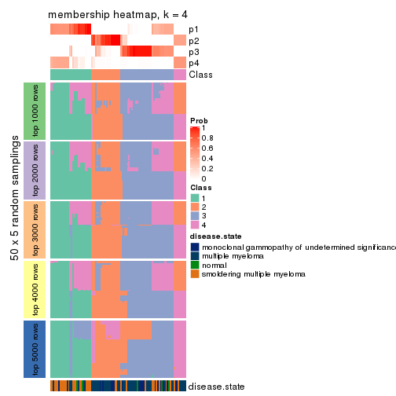
membership_heatmap(res, k = 5)
membership_heatmap(res, k = 6)
As soon as we have had the classes for columns, we can look for signatures which are significantly different between classes which can be candidate marks for certain classes. Following are the heatmaps for signatures.
Signature heatmaps where rows are scaled:
get_signatures(res, k = 2)
#> Error in mat[ceiling(1:nr/h_ratio), ceiling(1:nc/w_ratio), drop = FALSE]: subscript out of bounds
get_signatures(res, k = 3)
#> Error in mat[ceiling(1:nr/h_ratio), ceiling(1:nc/w_ratio), drop = FALSE]: subscript out of bounds
get_signatures(res, k = 4)
get_signatures(res, k = 5)
get_signatures(res, k = 6)
Signature heatmaps where rows are not scaled:
get_signatures(res, k = 2, scale_rows = FALSE)
#> Error in mat[ceiling(1:nr/h_ratio), ceiling(1:nc/w_ratio), drop = FALSE]: subscript out of bounds
get_signatures(res, k = 3, scale_rows = FALSE)
#> Error in mat[ceiling(1:nr/h_ratio), ceiling(1:nc/w_ratio), drop = FALSE]: subscript out of bounds
get_signatures(res, k = 4, scale_rows = FALSE)

get_signatures(res, k = 5, scale_rows = FALSE)
get_signatures(res, k = 6, scale_rows = FALSE)
Compare the overlap of signatures from different k:
compare_signatures(res)
get_signature() returns a data frame invisibly. TO get the list of signatures, the function
call should be assigned to a variable explicitly. In following code, if plot argument is set
to FALSE, no heatmap is plotted while only the differential analysis is performed.
# code only for demonstration
tb = get_signature(res, k = ..., plot = FALSE)
An example of the output of tb is:
#> which_row fdr mean_1 mean_2 scaled_mean_1 scaled_mean_2 km
#> 1 38 0.042760348 8.373488 9.131774 -0.5533452 0.5164555 1
#> 2 40 0.018707592 7.106213 8.469186 -0.6173731 0.5762149 1
#> 3 55 0.019134737 10.221463 11.207825 -0.6159697 0.5749050 1
#> 4 59 0.006059896 5.921854 7.869574 -0.6899429 0.6439467 1
#> 5 60 0.018055526 8.928898 10.211722 -0.6204761 0.5791110 1
#> 6 98 0.009384629 15.714769 14.887706 0.6635654 -0.6193277 2
...
The columns in tb are:
which_row: row indices corresponding to the input matrix.fdr: FDR for the differential test. mean_x: The mean value in group x.scaled_mean_x: The mean value in group x after rows are scaled.km: Row groups if k-means clustering is applied to rows.UMAP plot which shows how samples are separated.
dimension_reduction(res, k = 2, method = "UMAP")
dimension_reduction(res, k = 3, method = "UMAP")
dimension_reduction(res, k = 4, method = "UMAP")
dimension_reduction(res, k = 5, method = "UMAP")
dimension_reduction(res, k = 6, method = "UMAP")
Following heatmap shows how subgroups are split when increasing k:
collect_classes(res)
Test correlation between subgroups and known annotations. If the known annotation is numeric, one-way ANOVA test is applied, and if the known annotation is discrete, chi-squared contingency table test is applied.
test_to_known_factors(res)
#> n disease.state(p) k
#> ATC:kmeans 98 1.17e-02 2
#> ATC:kmeans 98 6.96e-05 3
#> ATC:kmeans 89 4.83e-04 4
#> ATC:kmeans 83 3.69e-03 5
#> ATC:kmeans 93 2.78e-03 6
If matrix rows can be associated to genes, consider to use GO_Enrichment(res,
...) to perform function enrichment for the signature genes.
The object with results only for a single top-value method and a single partition method can be extracted as:
res = res_list["ATC", "skmeans"]
# you can also extract it by
# res = res_list["ATC:skmeans"]
A summary of res and all the functions that can be applied to it:
res
#> A 'ConsensusPartition' object with k = 2, 3, 4, 5, 6.
#> On a matrix with 31632 rows and 99 columns.
#> Top rows (1000, 2000, 3000, 4000, 5000) are extracted by 'ATC' method.
#> Subgroups are detected by 'skmeans' method.
#> Performed in total 1250 partitions by row resampling.
#> Best k for subgroups seems to be 4.
#>
#> Following methods can be applied to this 'ConsensusPartition' object:
#> [1] "cola_report" "collect_classes" "collect_plots"
#> [4] "collect_stats" "colnames" "compare_signatures"
#> [7] "consensus_heatmap" "dimension_reduction" "functional_enrichment"
#> [10] "get_anno_col" "get_anno" "get_classes"
#> [13] "get_consensus" "get_matrix" "get_membership"
#> [16] "get_param" "get_signatures" "get_stats"
#> [19] "is_best_k" "is_stable_k" "membership_heatmap"
#> [22] "ncol" "nrow" "plot_ecdf"
#> [25] "rownames" "select_partition_number" "show"
#> [28] "suggest_best_k" "test_to_known_factors"
collect_plots() function collects all the plots made from res for all k (number of partitions)
into one single page to provide an easy and fast comparison between different k.
collect_plots(res)
The plots are:
k and the heatmap of
predicted classes for each k.k.k.k.All the plots in panels can be made by individual functions and they are plotted later in this section.
select_partition_number() produces several plots showing different
statistics for choosing “optimized” k. There are following statistics:
k;k, the area increased is defined as \(A_k - A_{k-1}\).The detailed explanations of these statistics can be found in the cola vignette.
Generally speaking, lower PAC score, higher mean silhouette score or higher
concordance corresponds to better partition. Rand index and Jaccard index
measure how similar the current partition is compared to partition with k-1.
If they are too similar, we won't accept k is better than k-1.
select_partition_number(res)
The numeric values for all these statistics can be obtained by get_stats().
get_stats(res)
#> k 1-PAC mean_silhouette concordance area_increased Rand Jaccard
#> 2 2 1.000 0.974 0.990 0.5016 0.497 0.497
#> 3 3 0.976 0.934 0.973 0.1817 0.893 0.788
#> 4 4 0.940 0.913 0.962 0.0761 0.947 0.872
#> 5 5 0.867 0.832 0.928 0.0439 0.987 0.964
#> 6 6 0.854 0.792 0.904 0.0341 0.971 0.919
suggest_best_k() suggests the best \(k\) based on these statistics. The rules are as follows:
NA.suggest_best_k(res)
#> [1] 4
#> attr(,"optional")
#> [1] 2 3
There is also optional best \(k\) = 2 3 that is worth to check.
Following shows the table of the partitions (You need to click the show/hide
code output link to see it). The membership matrix (columns with name p*)
is inferred by
clue::cl_consensus()
function with the SE method. Basically the value in the membership matrix
represents the probability to belong to a certain group. The finall class
label for an item is determined with the group with highest probability it
belongs to.
In get_classes() function, the entropy is calculated from the membership
matrix and the silhouette score is calculated from the consensus matrix.
cbind(get_classes(res, k = 2), get_membership(res, k = 2))
#> class entropy silhouette p1 p2
#> GSM1152309 2 0.000 0.980 0.000 1.000
#> GSM1152310 2 0.000 0.980 0.000 1.000
#> GSM1152311 2 0.000 0.980 0.000 1.000
#> GSM1152312 1 0.000 0.999 1.000 0.000
#> GSM1152313 2 0.000 0.980 0.000 1.000
#> GSM1152314 1 0.000 0.999 1.000 0.000
#> GSM1152315 2 0.000 0.980 0.000 1.000
#> GSM1152316 2 0.000 0.980 0.000 1.000
#> GSM1152317 2 0.000 0.980 0.000 1.000
#> GSM1152318 2 0.000 0.980 0.000 1.000
#> GSM1152319 2 0.000 0.980 0.000 1.000
#> GSM1152320 2 0.000 0.980 0.000 1.000
#> GSM1152321 2 0.000 0.980 0.000 1.000
#> GSM1152322 2 0.000 0.980 0.000 1.000
#> GSM1152323 2 0.000 0.980 0.000 1.000
#> GSM1152324 2 0.000 0.980 0.000 1.000
#> GSM1152325 2 0.000 0.980 0.000 1.000
#> GSM1152326 1 0.204 0.966 0.968 0.032
#> GSM1152327 2 0.000 0.980 0.000 1.000
#> GSM1152328 2 0.000 0.980 0.000 1.000
#> GSM1152329 1 0.000 0.999 1.000 0.000
#> GSM1152330 1 0.000 0.999 1.000 0.000
#> GSM1152331 2 0.000 0.980 0.000 1.000
#> GSM1152332 1 0.000 0.999 1.000 0.000
#> GSM1152333 1 0.000 0.999 1.000 0.000
#> GSM1152334 2 0.000 0.980 0.000 1.000
#> GSM1152335 2 0.000 0.980 0.000 1.000
#> GSM1152336 2 0.000 0.980 0.000 1.000
#> GSM1152337 2 0.000 0.980 0.000 1.000
#> GSM1152338 2 0.000 0.980 0.000 1.000
#> GSM1152339 1 0.000 0.999 1.000 0.000
#> GSM1152340 2 0.999 0.075 0.484 0.516
#> GSM1152341 1 0.163 0.975 0.976 0.024
#> GSM1152342 1 0.000 0.999 1.000 0.000
#> GSM1152343 1 0.000 0.999 1.000 0.000
#> GSM1152344 2 0.000 0.980 0.000 1.000
#> GSM1152345 1 0.000 0.999 1.000 0.000
#> GSM1152346 2 0.000 0.980 0.000 1.000
#> GSM1152347 1 0.000 0.999 1.000 0.000
#> GSM1152348 1 0.000 0.999 1.000 0.000
#> GSM1152349 1 0.000 0.999 1.000 0.000
#> GSM1152355 1 0.000 0.999 1.000 0.000
#> GSM1152356 1 0.000 0.999 1.000 0.000
#> GSM1152357 1 0.000 0.999 1.000 0.000
#> GSM1152358 2 0.000 0.980 0.000 1.000
#> GSM1152359 1 0.000 0.999 1.000 0.000
#> GSM1152360 1 0.000 0.999 1.000 0.000
#> GSM1152361 2 0.000 0.980 0.000 1.000
#> GSM1152362 1 0.000 0.999 1.000 0.000
#> GSM1152363 1 0.000 0.999 1.000 0.000
#> GSM1152364 1 0.000 0.999 1.000 0.000
#> GSM1152365 1 0.000 0.999 1.000 0.000
#> GSM1152366 1 0.000 0.999 1.000 0.000
#> GSM1152367 1 0.000 0.999 1.000 0.000
#> GSM1152368 1 0.000 0.999 1.000 0.000
#> GSM1152369 1 0.000 0.999 1.000 0.000
#> GSM1152370 1 0.000 0.999 1.000 0.000
#> GSM1152371 1 0.000 0.999 1.000 0.000
#> GSM1152372 2 0.000 0.980 0.000 1.000
#> GSM1152373 1 0.000 0.999 1.000 0.000
#> GSM1152374 2 0.000 0.980 0.000 1.000
#> GSM1152375 1 0.000 0.999 1.000 0.000
#> GSM1152376 1 0.000 0.999 1.000 0.000
#> GSM1152377 1 0.000 0.999 1.000 0.000
#> GSM1152378 1 0.000 0.999 1.000 0.000
#> GSM1152379 1 0.000 0.999 1.000 0.000
#> GSM1152380 1 0.000 0.999 1.000 0.000
#> GSM1152381 1 0.000 0.999 1.000 0.000
#> GSM1152382 1 0.000 0.999 1.000 0.000
#> GSM1152383 1 0.000 0.999 1.000 0.000
#> GSM1152384 1 0.000 0.999 1.000 0.000
#> GSM1152385 2 0.000 0.980 0.000 1.000
#> GSM1152386 2 0.000 0.980 0.000 1.000
#> GSM1152387 2 0.000 0.980 0.000 1.000
#> GSM1152289 2 0.000 0.980 0.000 1.000
#> GSM1152290 2 0.000 0.980 0.000 1.000
#> GSM1152291 2 0.000 0.980 0.000 1.000
#> GSM1152292 1 0.000 0.999 1.000 0.000
#> GSM1152293 2 0.000 0.980 0.000 1.000
#> GSM1152294 1 0.000 0.999 1.000 0.000
#> GSM1152295 2 0.000 0.980 0.000 1.000
#> GSM1152296 1 0.000 0.999 1.000 0.000
#> GSM1152297 2 0.000 0.980 0.000 1.000
#> GSM1152298 2 0.000 0.980 0.000 1.000
#> GSM1152299 2 0.000 0.980 0.000 1.000
#> GSM1152300 2 0.000 0.980 0.000 1.000
#> GSM1152301 1 0.000 0.999 1.000 0.000
#> GSM1152302 1 0.000 0.999 1.000 0.000
#> GSM1152303 1 0.000 0.999 1.000 0.000
#> GSM1152304 2 0.000 0.980 0.000 1.000
#> GSM1152305 2 0.000 0.980 0.000 1.000
#> GSM1152306 2 0.975 0.321 0.408 0.592
#> GSM1152307 1 0.000 0.999 1.000 0.000
#> GSM1152308 2 0.000 0.980 0.000 1.000
#> GSM1152350 1 0.000 0.999 1.000 0.000
#> GSM1152351 1 0.000 0.999 1.000 0.000
#> GSM1152352 1 0.000 0.999 1.000 0.000
#> GSM1152353 1 0.000 0.999 1.000 0.000
#> GSM1152354 1 0.000 0.999 1.000 0.000
cbind(get_classes(res, k = 3), get_membership(res, k = 3))
#> class entropy silhouette p1 p2 p3
#> GSM1152309 2 0.0000 0.973 0.000 1.000 0.000
#> GSM1152310 3 0.0747 0.857 0.000 0.016 0.984
#> GSM1152311 2 0.0000 0.973 0.000 1.000 0.000
#> GSM1152312 1 0.0000 0.990 1.000 0.000 0.000
#> GSM1152313 2 0.0000 0.973 0.000 1.000 0.000
#> GSM1152314 1 0.0000 0.990 1.000 0.000 0.000
#> GSM1152315 2 0.0000 0.973 0.000 1.000 0.000
#> GSM1152316 2 0.0000 0.973 0.000 1.000 0.000
#> GSM1152317 2 0.0000 0.973 0.000 1.000 0.000
#> GSM1152318 2 0.0000 0.973 0.000 1.000 0.000
#> GSM1152319 2 0.0000 0.973 0.000 1.000 0.000
#> GSM1152320 3 0.0424 0.859 0.000 0.008 0.992
#> GSM1152321 2 0.0000 0.973 0.000 1.000 0.000
#> GSM1152322 2 0.0000 0.973 0.000 1.000 0.000
#> GSM1152323 2 0.0000 0.973 0.000 1.000 0.000
#> GSM1152324 2 0.0000 0.973 0.000 1.000 0.000
#> GSM1152325 2 0.0000 0.973 0.000 1.000 0.000
#> GSM1152326 3 0.0424 0.861 0.008 0.000 0.992
#> GSM1152327 2 0.0000 0.973 0.000 1.000 0.000
#> GSM1152328 2 0.0000 0.973 0.000 1.000 0.000
#> GSM1152329 1 0.0000 0.990 1.000 0.000 0.000
#> GSM1152330 3 0.4235 0.786 0.176 0.000 0.824
#> GSM1152331 2 0.0000 0.973 0.000 1.000 0.000
#> GSM1152332 1 0.0000 0.990 1.000 0.000 0.000
#> GSM1152333 1 0.0000 0.990 1.000 0.000 0.000
#> GSM1152334 3 0.6168 0.261 0.000 0.412 0.588
#> GSM1152335 2 0.0000 0.973 0.000 1.000 0.000
#> GSM1152336 3 0.0424 0.859 0.000 0.008 0.992
#> GSM1152337 2 0.0000 0.973 0.000 1.000 0.000
#> GSM1152338 2 0.0000 0.973 0.000 1.000 0.000
#> GSM1152339 1 0.0000 0.990 1.000 0.000 0.000
#> GSM1152340 3 0.0592 0.858 0.000 0.012 0.988
#> GSM1152341 3 0.1163 0.862 0.028 0.000 0.972
#> GSM1152342 1 0.0237 0.986 0.996 0.000 0.004
#> GSM1152343 3 0.2625 0.848 0.084 0.000 0.916
#> GSM1152344 2 0.0000 0.973 0.000 1.000 0.000
#> GSM1152345 3 0.6126 0.408 0.400 0.000 0.600
#> GSM1152346 2 0.0000 0.973 0.000 1.000 0.000
#> GSM1152347 1 0.0000 0.990 1.000 0.000 0.000
#> GSM1152348 3 0.4399 0.774 0.188 0.000 0.812
#> GSM1152349 1 0.0000 0.990 1.000 0.000 0.000
#> GSM1152355 1 0.0000 0.990 1.000 0.000 0.000
#> GSM1152356 1 0.0000 0.990 1.000 0.000 0.000
#> GSM1152357 1 0.0000 0.990 1.000 0.000 0.000
#> GSM1152358 2 0.6235 0.181 0.000 0.564 0.436
#> GSM1152359 1 0.0000 0.990 1.000 0.000 0.000
#> GSM1152360 1 0.0000 0.990 1.000 0.000 0.000
#> GSM1152361 2 0.0000 0.973 0.000 1.000 0.000
#> GSM1152362 1 0.0000 0.990 1.000 0.000 0.000
#> GSM1152363 1 0.0000 0.990 1.000 0.000 0.000
#> GSM1152364 1 0.0000 0.990 1.000 0.000 0.000
#> GSM1152365 1 0.0000 0.990 1.000 0.000 0.000
#> GSM1152366 1 0.0000 0.990 1.000 0.000 0.000
#> GSM1152367 1 0.0000 0.990 1.000 0.000 0.000
#> GSM1152368 1 0.0000 0.990 1.000 0.000 0.000
#> GSM1152369 1 0.0000 0.990 1.000 0.000 0.000
#> GSM1152370 1 0.0000 0.990 1.000 0.000 0.000
#> GSM1152371 1 0.0000 0.990 1.000 0.000 0.000
#> GSM1152372 2 0.0424 0.967 0.000 0.992 0.008
#> GSM1152373 1 0.0000 0.990 1.000 0.000 0.000
#> GSM1152374 2 0.0000 0.973 0.000 1.000 0.000
#> GSM1152375 1 0.0000 0.990 1.000 0.000 0.000
#> GSM1152376 1 0.0000 0.990 1.000 0.000 0.000
#> GSM1152377 1 0.0000 0.990 1.000 0.000 0.000
#> GSM1152378 1 0.0000 0.990 1.000 0.000 0.000
#> GSM1152379 1 0.0000 0.990 1.000 0.000 0.000
#> GSM1152380 1 0.0000 0.990 1.000 0.000 0.000
#> GSM1152381 1 0.0000 0.990 1.000 0.000 0.000
#> GSM1152382 1 0.0000 0.990 1.000 0.000 0.000
#> GSM1152383 1 0.0000 0.990 1.000 0.000 0.000
#> GSM1152384 1 0.0000 0.990 1.000 0.000 0.000
#> GSM1152385 2 0.0000 0.973 0.000 1.000 0.000
#> GSM1152386 2 0.0000 0.973 0.000 1.000 0.000
#> GSM1152387 2 0.0000 0.973 0.000 1.000 0.000
#> GSM1152289 2 0.0000 0.973 0.000 1.000 0.000
#> GSM1152290 2 0.0000 0.973 0.000 1.000 0.000
#> GSM1152291 2 0.0000 0.973 0.000 1.000 0.000
#> GSM1152292 1 0.0000 0.990 1.000 0.000 0.000
#> GSM1152293 2 0.0424 0.967 0.000 0.992 0.008
#> GSM1152294 1 0.0000 0.990 1.000 0.000 0.000
#> GSM1152295 2 0.0424 0.967 0.000 0.992 0.008
#> GSM1152296 1 0.0000 0.990 1.000 0.000 0.000
#> GSM1152297 2 0.0000 0.973 0.000 1.000 0.000
#> GSM1152298 2 0.0000 0.973 0.000 1.000 0.000
#> GSM1152299 2 0.0000 0.973 0.000 1.000 0.000
#> GSM1152300 2 0.0424 0.967 0.000 0.992 0.008
#> GSM1152301 1 0.0000 0.990 1.000 0.000 0.000
#> GSM1152302 1 0.0000 0.990 1.000 0.000 0.000
#> GSM1152303 1 0.0000 0.990 1.000 0.000 0.000
#> GSM1152304 2 0.0000 0.973 0.000 1.000 0.000
#> GSM1152305 2 0.0000 0.973 0.000 1.000 0.000
#> GSM1152306 2 0.6540 0.250 0.408 0.584 0.008
#> GSM1152307 1 0.0000 0.990 1.000 0.000 0.000
#> GSM1152308 2 0.1163 0.949 0.000 0.972 0.028
#> GSM1152350 1 0.6008 0.371 0.628 0.000 0.372
#> GSM1152351 1 0.1289 0.955 0.968 0.000 0.032
#> GSM1152352 1 0.0000 0.990 1.000 0.000 0.000
#> GSM1152353 1 0.0000 0.990 1.000 0.000 0.000
#> GSM1152354 1 0.0000 0.990 1.000 0.000 0.000
cbind(get_classes(res, k = 4), get_membership(res, k = 4))
#> class entropy silhouette p1 p2 p3 p4
#> GSM1152309 4 0.0000 0.972 0.000 0.000 0.000 1.000
#> GSM1152310 2 0.3863 0.628 0.000 0.828 0.028 0.144
#> GSM1152311 4 0.0000 0.972 0.000 0.000 0.000 1.000
#> GSM1152312 1 0.0000 0.976 1.000 0.000 0.000 0.000
#> GSM1152313 4 0.0000 0.972 0.000 0.000 0.000 1.000
#> GSM1152314 1 0.0000 0.976 1.000 0.000 0.000 0.000
#> GSM1152315 4 0.0000 0.972 0.000 0.000 0.000 1.000
#> GSM1152316 4 0.0000 0.972 0.000 0.000 0.000 1.000
#> GSM1152317 4 0.0000 0.972 0.000 0.000 0.000 1.000
#> GSM1152318 4 0.0000 0.972 0.000 0.000 0.000 1.000
#> GSM1152319 4 0.0000 0.972 0.000 0.000 0.000 1.000
#> GSM1152320 2 0.1109 0.788 0.000 0.968 0.028 0.004
#> GSM1152321 4 0.0000 0.972 0.000 0.000 0.000 1.000
#> GSM1152322 4 0.0000 0.972 0.000 0.000 0.000 1.000
#> GSM1152323 4 0.0000 0.972 0.000 0.000 0.000 1.000
#> GSM1152324 4 0.0000 0.972 0.000 0.000 0.000 1.000
#> GSM1152325 4 0.0000 0.972 0.000 0.000 0.000 1.000
#> GSM1152326 2 0.0469 0.789 0.000 0.988 0.012 0.000
#> GSM1152327 4 0.0000 0.972 0.000 0.000 0.000 1.000
#> GSM1152328 4 0.0000 0.972 0.000 0.000 0.000 1.000
#> GSM1152329 1 0.0188 0.973 0.996 0.004 0.000 0.000
#> GSM1152330 2 0.2918 0.760 0.116 0.876 0.008 0.000
#> GSM1152331 4 0.0000 0.972 0.000 0.000 0.000 1.000
#> GSM1152332 1 0.0000 0.976 1.000 0.000 0.000 0.000
#> GSM1152333 1 0.0000 0.976 1.000 0.000 0.000 0.000
#> GSM1152334 4 0.5326 0.356 0.000 0.380 0.016 0.604
#> GSM1152335 4 0.0000 0.972 0.000 0.000 0.000 1.000
#> GSM1152336 2 0.1388 0.785 0.000 0.960 0.028 0.012
#> GSM1152337 4 0.0000 0.972 0.000 0.000 0.000 1.000
#> GSM1152338 4 0.1302 0.927 0.000 0.000 0.044 0.956
#> GSM1152339 1 0.0000 0.976 1.000 0.000 0.000 0.000
#> GSM1152340 2 0.3306 0.717 0.004 0.840 0.156 0.000
#> GSM1152341 2 0.1724 0.802 0.032 0.948 0.020 0.000
#> GSM1152342 1 0.1118 0.946 0.964 0.036 0.000 0.000
#> GSM1152343 2 0.1970 0.799 0.060 0.932 0.008 0.000
#> GSM1152344 4 0.0000 0.972 0.000 0.000 0.000 1.000
#> GSM1152345 2 0.4964 0.394 0.380 0.616 0.004 0.000
#> GSM1152346 4 0.0000 0.972 0.000 0.000 0.000 1.000
#> GSM1152347 1 0.0000 0.976 1.000 0.000 0.000 0.000
#> GSM1152348 2 0.3271 0.742 0.132 0.856 0.012 0.000
#> GSM1152349 1 0.0000 0.976 1.000 0.000 0.000 0.000
#> GSM1152355 1 0.0000 0.976 1.000 0.000 0.000 0.000
#> GSM1152356 1 0.0000 0.976 1.000 0.000 0.000 0.000
#> GSM1152357 1 0.0000 0.976 1.000 0.000 0.000 0.000
#> GSM1152358 4 0.4121 0.721 0.000 0.184 0.020 0.796
#> GSM1152359 1 0.0000 0.976 1.000 0.000 0.000 0.000
#> GSM1152360 1 0.0000 0.976 1.000 0.000 0.000 0.000
#> GSM1152361 4 0.0000 0.972 0.000 0.000 0.000 1.000
#> GSM1152362 1 0.0188 0.973 0.996 0.004 0.000 0.000
#> GSM1152363 1 0.0000 0.976 1.000 0.000 0.000 0.000
#> GSM1152364 1 0.0000 0.976 1.000 0.000 0.000 0.000
#> GSM1152365 1 0.0000 0.976 1.000 0.000 0.000 0.000
#> GSM1152366 1 0.0000 0.976 1.000 0.000 0.000 0.000
#> GSM1152367 1 0.0000 0.976 1.000 0.000 0.000 0.000
#> GSM1152368 1 0.0000 0.976 1.000 0.000 0.000 0.000
#> GSM1152369 1 0.0000 0.976 1.000 0.000 0.000 0.000
#> GSM1152370 1 0.0000 0.976 1.000 0.000 0.000 0.000
#> GSM1152371 1 0.0000 0.976 1.000 0.000 0.000 0.000
#> GSM1152372 3 0.3942 0.736 0.000 0.000 0.764 0.236
#> GSM1152373 1 0.0000 0.976 1.000 0.000 0.000 0.000
#> GSM1152374 4 0.0000 0.972 0.000 0.000 0.000 1.000
#> GSM1152375 1 0.0000 0.976 1.000 0.000 0.000 0.000
#> GSM1152376 1 0.0000 0.976 1.000 0.000 0.000 0.000
#> GSM1152377 1 0.0000 0.976 1.000 0.000 0.000 0.000
#> GSM1152378 1 0.0000 0.976 1.000 0.000 0.000 0.000
#> GSM1152379 1 0.0000 0.976 1.000 0.000 0.000 0.000
#> GSM1152380 1 0.0000 0.976 1.000 0.000 0.000 0.000
#> GSM1152381 1 0.0000 0.976 1.000 0.000 0.000 0.000
#> GSM1152382 1 0.0000 0.976 1.000 0.000 0.000 0.000
#> GSM1152383 1 0.0000 0.976 1.000 0.000 0.000 0.000
#> GSM1152384 1 0.0000 0.976 1.000 0.000 0.000 0.000
#> GSM1152385 4 0.0000 0.972 0.000 0.000 0.000 1.000
#> GSM1152386 4 0.0000 0.972 0.000 0.000 0.000 1.000
#> GSM1152387 4 0.0000 0.972 0.000 0.000 0.000 1.000
#> GSM1152289 4 0.0000 0.972 0.000 0.000 0.000 1.000
#> GSM1152290 4 0.0000 0.972 0.000 0.000 0.000 1.000
#> GSM1152291 4 0.0000 0.972 0.000 0.000 0.000 1.000
#> GSM1152292 1 0.0000 0.976 1.000 0.000 0.000 0.000
#> GSM1152293 3 0.2281 0.900 0.000 0.000 0.904 0.096
#> GSM1152294 1 0.1970 0.924 0.932 0.008 0.060 0.000
#> GSM1152295 3 0.2408 0.900 0.000 0.000 0.896 0.104
#> GSM1152296 1 0.0000 0.976 1.000 0.000 0.000 0.000
#> GSM1152297 4 0.3649 0.703 0.000 0.000 0.204 0.796
#> GSM1152298 4 0.0000 0.972 0.000 0.000 0.000 1.000
#> GSM1152299 4 0.0000 0.972 0.000 0.000 0.000 1.000
#> GSM1152300 3 0.2530 0.896 0.000 0.000 0.888 0.112
#> GSM1152301 1 0.0000 0.976 1.000 0.000 0.000 0.000
#> GSM1152302 1 0.1940 0.915 0.924 0.000 0.076 0.000
#> GSM1152303 1 0.2011 0.912 0.920 0.000 0.080 0.000
#> GSM1152304 4 0.0000 0.972 0.000 0.000 0.000 1.000
#> GSM1152305 4 0.0000 0.972 0.000 0.000 0.000 1.000
#> GSM1152306 3 0.1452 0.850 0.008 0.000 0.956 0.036
#> GSM1152307 1 0.1557 0.933 0.944 0.000 0.056 0.000
#> GSM1152308 3 0.1489 0.861 0.000 0.004 0.952 0.044
#> GSM1152350 1 0.7851 -0.255 0.376 0.268 0.356 0.000
#> GSM1152351 1 0.2521 0.905 0.912 0.024 0.064 0.000
#> GSM1152352 1 0.1824 0.927 0.936 0.004 0.060 0.000
#> GSM1152353 1 0.0188 0.973 0.996 0.000 0.004 0.000
#> GSM1152354 1 0.0188 0.973 0.996 0.000 0.004 0.000
cbind(get_classes(res, k = 5), get_membership(res, k = 5))
#> class entropy silhouette p1 p2 p3 p4 p5
#> GSM1152309 4 0.0000 0.9634 0.000 0.000 0.000 1.000 0.000
#> GSM1152310 5 0.5672 0.2741 0.000 0.312 0.000 0.104 0.584
#> GSM1152311 4 0.0000 0.9634 0.000 0.000 0.000 1.000 0.000
#> GSM1152312 1 0.0162 0.9475 0.996 0.000 0.000 0.000 0.004
#> GSM1152313 4 0.0000 0.9634 0.000 0.000 0.000 1.000 0.000
#> GSM1152314 1 0.0000 0.9486 1.000 0.000 0.000 0.000 0.000
#> GSM1152315 4 0.0290 0.9576 0.000 0.000 0.000 0.992 0.008
#> GSM1152316 4 0.0000 0.9634 0.000 0.000 0.000 1.000 0.000
#> GSM1152317 4 0.0000 0.9634 0.000 0.000 0.000 1.000 0.000
#> GSM1152318 4 0.0000 0.9634 0.000 0.000 0.000 1.000 0.000
#> GSM1152319 4 0.0000 0.9634 0.000 0.000 0.000 1.000 0.000
#> GSM1152320 2 0.4192 0.0154 0.000 0.596 0.000 0.000 0.404
#> GSM1152321 4 0.0000 0.9634 0.000 0.000 0.000 1.000 0.000
#> GSM1152322 4 0.0000 0.9634 0.000 0.000 0.000 1.000 0.000
#> GSM1152323 4 0.0000 0.9634 0.000 0.000 0.000 1.000 0.000
#> GSM1152324 4 0.0000 0.9634 0.000 0.000 0.000 1.000 0.000
#> GSM1152325 4 0.0000 0.9634 0.000 0.000 0.000 1.000 0.000
#> GSM1152326 2 0.4262 -0.0571 0.000 0.560 0.000 0.000 0.440
#> GSM1152327 4 0.0000 0.9634 0.000 0.000 0.000 1.000 0.000
#> GSM1152328 4 0.0000 0.9634 0.000 0.000 0.000 1.000 0.000
#> GSM1152329 1 0.0000 0.9486 1.000 0.000 0.000 0.000 0.000
#> GSM1152330 2 0.2726 0.5234 0.064 0.884 0.000 0.000 0.052
#> GSM1152331 4 0.0000 0.9634 0.000 0.000 0.000 1.000 0.000
#> GSM1152332 1 0.0000 0.9486 1.000 0.000 0.000 0.000 0.000
#> GSM1152333 1 0.0162 0.9478 0.996 0.000 0.000 0.000 0.004
#> GSM1152334 4 0.6338 0.0680 0.000 0.140 0.008 0.520 0.332
#> GSM1152335 4 0.0000 0.9634 0.000 0.000 0.000 1.000 0.000
#> GSM1152336 5 0.4965 0.0571 0.000 0.452 0.000 0.028 0.520
#> GSM1152337 4 0.0000 0.9634 0.000 0.000 0.000 1.000 0.000
#> GSM1152338 4 0.2408 0.8606 0.000 0.004 0.096 0.892 0.008
#> GSM1152339 1 0.0000 0.9486 1.000 0.000 0.000 0.000 0.000
#> GSM1152340 2 0.3454 0.4523 0.000 0.836 0.064 0.000 0.100
#> GSM1152341 2 0.2011 0.4907 0.000 0.908 0.004 0.000 0.088
#> GSM1152342 1 0.3289 0.8132 0.844 0.108 0.000 0.000 0.048
#> GSM1152343 2 0.3381 0.4282 0.016 0.808 0.000 0.000 0.176
#> GSM1152344 4 0.0000 0.9634 0.000 0.000 0.000 1.000 0.000
#> GSM1152345 2 0.4206 0.2050 0.288 0.696 0.000 0.000 0.016
#> GSM1152346 4 0.0000 0.9634 0.000 0.000 0.000 1.000 0.000
#> GSM1152347 1 0.0000 0.9486 1.000 0.000 0.000 0.000 0.000
#> GSM1152348 2 0.2193 0.5074 0.092 0.900 0.000 0.000 0.008
#> GSM1152349 1 0.0000 0.9486 1.000 0.000 0.000 0.000 0.000
#> GSM1152355 1 0.0000 0.9486 1.000 0.000 0.000 0.000 0.000
#> GSM1152356 1 0.0000 0.9486 1.000 0.000 0.000 0.000 0.000
#> GSM1152357 1 0.0000 0.9486 1.000 0.000 0.000 0.000 0.000
#> GSM1152358 4 0.5200 0.4039 0.000 0.068 0.000 0.628 0.304
#> GSM1152359 1 0.0000 0.9486 1.000 0.000 0.000 0.000 0.000
#> GSM1152360 1 0.0000 0.9486 1.000 0.000 0.000 0.000 0.000
#> GSM1152361 4 0.0162 0.9616 0.000 0.000 0.004 0.996 0.000
#> GSM1152362 1 0.0510 0.9427 0.984 0.000 0.000 0.000 0.016
#> GSM1152363 1 0.0290 0.9467 0.992 0.000 0.000 0.000 0.008
#> GSM1152364 1 0.0000 0.9486 1.000 0.000 0.000 0.000 0.000
#> GSM1152365 1 0.0000 0.9486 1.000 0.000 0.000 0.000 0.000
#> GSM1152366 1 0.0000 0.9486 1.000 0.000 0.000 0.000 0.000
#> GSM1152367 1 0.0794 0.9396 0.972 0.000 0.000 0.000 0.028
#> GSM1152368 1 0.0794 0.9396 0.972 0.000 0.000 0.000 0.028
#> GSM1152369 1 0.0794 0.9396 0.972 0.000 0.000 0.000 0.028
#> GSM1152370 1 0.0000 0.9486 1.000 0.000 0.000 0.000 0.000
#> GSM1152371 1 0.0703 0.9414 0.976 0.000 0.000 0.000 0.024
#> GSM1152372 3 0.2773 0.6849 0.000 0.000 0.836 0.164 0.000
#> GSM1152373 1 0.0000 0.9486 1.000 0.000 0.000 0.000 0.000
#> GSM1152374 4 0.0000 0.9634 0.000 0.000 0.000 1.000 0.000
#> GSM1152375 1 0.0290 0.9467 0.992 0.000 0.000 0.000 0.008
#> GSM1152376 1 0.0000 0.9486 1.000 0.000 0.000 0.000 0.000
#> GSM1152377 1 0.0000 0.9486 1.000 0.000 0.000 0.000 0.000
#> GSM1152378 1 0.0771 0.9414 0.976 0.004 0.000 0.000 0.020
#> GSM1152379 1 0.0000 0.9486 1.000 0.000 0.000 0.000 0.000
#> GSM1152380 1 0.0404 0.9454 0.988 0.000 0.000 0.000 0.012
#> GSM1152381 1 0.0404 0.9454 0.988 0.000 0.000 0.000 0.012
#> GSM1152382 1 0.0703 0.9414 0.976 0.000 0.000 0.000 0.024
#> GSM1152383 1 0.0000 0.9486 1.000 0.000 0.000 0.000 0.000
#> GSM1152384 1 0.0794 0.9396 0.972 0.000 0.000 0.000 0.028
#> GSM1152385 4 0.0000 0.9634 0.000 0.000 0.000 1.000 0.000
#> GSM1152386 4 0.0000 0.9634 0.000 0.000 0.000 1.000 0.000
#> GSM1152387 4 0.0162 0.9616 0.000 0.000 0.004 0.996 0.000
#> GSM1152289 4 0.0162 0.9616 0.000 0.000 0.004 0.996 0.000
#> GSM1152290 4 0.0162 0.9616 0.000 0.000 0.004 0.996 0.000
#> GSM1152291 4 0.0510 0.9531 0.000 0.000 0.016 0.984 0.000
#> GSM1152292 1 0.2471 0.8487 0.864 0.000 0.000 0.000 0.136
#> GSM1152293 3 0.1357 0.8760 0.000 0.000 0.948 0.048 0.004
#> GSM1152294 1 0.4218 0.5678 0.660 0.000 0.008 0.000 0.332
#> GSM1152295 3 0.0566 0.8822 0.000 0.004 0.984 0.012 0.000
#> GSM1152296 1 0.0963 0.9371 0.964 0.000 0.000 0.000 0.036
#> GSM1152297 4 0.3053 0.7799 0.000 0.000 0.164 0.828 0.008
#> GSM1152298 4 0.0162 0.9616 0.000 0.000 0.004 0.996 0.000
#> GSM1152299 4 0.0000 0.9634 0.000 0.000 0.000 1.000 0.000
#> GSM1152300 3 0.0794 0.8872 0.000 0.000 0.972 0.028 0.000
#> GSM1152301 1 0.0000 0.9486 1.000 0.000 0.000 0.000 0.000
#> GSM1152302 1 0.3012 0.8431 0.852 0.000 0.024 0.000 0.124
#> GSM1152303 1 0.3495 0.8034 0.812 0.000 0.028 0.000 0.160
#> GSM1152304 4 0.0609 0.9498 0.000 0.000 0.020 0.980 0.000
#> GSM1152305 4 0.0510 0.9531 0.000 0.000 0.016 0.984 0.000
#> GSM1152306 3 0.0794 0.8637 0.000 0.000 0.972 0.000 0.028
#> GSM1152307 1 0.1872 0.9142 0.928 0.000 0.020 0.000 0.052
#> GSM1152308 3 0.2859 0.8293 0.000 0.016 0.876 0.012 0.096
#> GSM1152350 5 0.4994 0.1526 0.076 0.092 0.068 0.000 0.764
#> GSM1152351 1 0.5371 0.2626 0.524 0.032 0.012 0.000 0.432
#> GSM1152352 1 0.4482 0.4818 0.612 0.000 0.012 0.000 0.376
#> GSM1152353 1 0.2233 0.8753 0.892 0.000 0.004 0.000 0.104
#> GSM1152354 1 0.1043 0.9297 0.960 0.000 0.000 0.000 0.040
cbind(get_classes(res, k = 6), get_membership(res, k = 6))
#> class entropy silhouette p1 p2 p3 p4 p5 p6
#> GSM1152309 4 0.0000 0.9709 0.000 0.000 0.000 1.000 0.000 0.000
#> GSM1152310 6 0.4384 0.4573 0.000 0.088 0.000 0.076 0.064 0.772
#> GSM1152311 4 0.0146 0.9692 0.000 0.000 0.000 0.996 0.000 0.004
#> GSM1152312 1 0.1088 0.8922 0.960 0.024 0.000 0.000 0.016 0.000
#> GSM1152313 4 0.0000 0.9709 0.000 0.000 0.000 1.000 0.000 0.000
#> GSM1152314 1 0.0000 0.9048 1.000 0.000 0.000 0.000 0.000 0.000
#> GSM1152315 4 0.1556 0.8954 0.000 0.000 0.000 0.920 0.000 0.080
#> GSM1152316 4 0.0000 0.9709 0.000 0.000 0.000 1.000 0.000 0.000
#> GSM1152317 4 0.0000 0.9709 0.000 0.000 0.000 1.000 0.000 0.000
#> GSM1152318 4 0.0000 0.9709 0.000 0.000 0.000 1.000 0.000 0.000
#> GSM1152319 4 0.0146 0.9692 0.000 0.000 0.000 0.996 0.000 0.004
#> GSM1152320 6 0.4708 0.1882 0.000 0.340 0.000 0.016 0.032 0.612
#> GSM1152321 4 0.0000 0.9709 0.000 0.000 0.000 1.000 0.000 0.000
#> GSM1152322 4 0.0000 0.9709 0.000 0.000 0.000 1.000 0.000 0.000
#> GSM1152323 4 0.0000 0.9709 0.000 0.000 0.000 1.000 0.000 0.000
#> GSM1152324 4 0.0000 0.9709 0.000 0.000 0.000 1.000 0.000 0.000
#> GSM1152325 4 0.0000 0.9709 0.000 0.000 0.000 1.000 0.000 0.000
#> GSM1152326 6 0.5611 -0.0287 0.000 0.364 0.000 0.000 0.152 0.484
#> GSM1152327 4 0.0000 0.9709 0.000 0.000 0.000 1.000 0.000 0.000
#> GSM1152328 4 0.0520 0.9658 0.000 0.000 0.000 0.984 0.008 0.008
#> GSM1152329 1 0.1564 0.8743 0.936 0.040 0.000 0.000 0.024 0.000
#> GSM1152330 2 0.3666 0.6390 0.064 0.820 0.000 0.000 0.032 0.084
#> GSM1152331 4 0.0000 0.9709 0.000 0.000 0.000 1.000 0.000 0.000
#> GSM1152332 1 0.0291 0.9038 0.992 0.004 0.000 0.000 0.004 0.000
#> GSM1152333 1 0.1313 0.8920 0.952 0.016 0.000 0.000 0.028 0.004
#> GSM1152334 6 0.6229 0.3984 0.000 0.052 0.020 0.312 0.072 0.544
#> GSM1152335 4 0.0748 0.9599 0.000 0.000 0.004 0.976 0.004 0.016
#> GSM1152336 6 0.3352 0.3966 0.000 0.144 0.000 0.024 0.016 0.816
#> GSM1152337 4 0.0000 0.9709 0.000 0.000 0.000 1.000 0.000 0.000
#> GSM1152338 4 0.3909 0.7571 0.000 0.004 0.080 0.812 0.056 0.048
#> GSM1152339 1 0.0146 0.9044 0.996 0.000 0.000 0.000 0.004 0.000
#> GSM1152340 2 0.4775 0.5168 0.004 0.736 0.024 0.004 0.136 0.096
#> GSM1152341 2 0.2658 0.5872 0.000 0.864 0.000 0.000 0.100 0.036
#> GSM1152342 1 0.3806 0.6342 0.768 0.164 0.000 0.000 0.068 0.000
#> GSM1152343 2 0.5488 0.3287 0.024 0.592 0.000 0.000 0.096 0.288
#> GSM1152344 4 0.0000 0.9709 0.000 0.000 0.000 1.000 0.000 0.000
#> GSM1152345 2 0.3838 0.3513 0.240 0.732 0.000 0.000 0.020 0.008
#> GSM1152346 4 0.0000 0.9709 0.000 0.000 0.000 1.000 0.000 0.000
#> GSM1152347 1 0.0291 0.9038 0.992 0.004 0.000 0.000 0.004 0.000
#> GSM1152348 2 0.3210 0.6474 0.068 0.852 0.000 0.000 0.032 0.048
#> GSM1152349 1 0.0000 0.9048 1.000 0.000 0.000 0.000 0.000 0.000
#> GSM1152355 1 0.0000 0.9048 1.000 0.000 0.000 0.000 0.000 0.000
#> GSM1152356 1 0.0291 0.9042 0.992 0.000 0.000 0.000 0.004 0.004
#> GSM1152357 1 0.0000 0.9048 1.000 0.000 0.000 0.000 0.000 0.000
#> GSM1152358 6 0.4662 0.3973 0.000 0.024 0.000 0.344 0.020 0.612
#> GSM1152359 1 0.0146 0.9044 0.996 0.000 0.000 0.000 0.004 0.000
#> GSM1152360 1 0.0146 0.9044 0.996 0.000 0.000 0.000 0.004 0.000
#> GSM1152361 4 0.0881 0.9600 0.000 0.000 0.008 0.972 0.008 0.012
#> GSM1152362 1 0.1719 0.8668 0.924 0.016 0.000 0.000 0.060 0.000
#> GSM1152363 1 0.0146 0.9046 0.996 0.000 0.000 0.000 0.004 0.000
#> GSM1152364 1 0.0000 0.9048 1.000 0.000 0.000 0.000 0.000 0.000
#> GSM1152365 1 0.0363 0.9047 0.988 0.000 0.000 0.000 0.012 0.000
#> GSM1152366 1 0.0146 0.9044 0.996 0.000 0.000 0.000 0.004 0.000
#> GSM1152367 1 0.1708 0.8779 0.932 0.000 0.004 0.000 0.040 0.024
#> GSM1152368 1 0.1708 0.8779 0.932 0.000 0.004 0.000 0.040 0.024
#> GSM1152369 1 0.1708 0.8779 0.932 0.000 0.004 0.000 0.040 0.024
#> GSM1152370 1 0.0146 0.9044 0.996 0.000 0.000 0.000 0.004 0.000
#> GSM1152371 1 0.1636 0.8804 0.936 0.000 0.004 0.000 0.036 0.024
#> GSM1152372 3 0.3447 0.6138 0.000 0.000 0.800 0.164 0.024 0.012
#> GSM1152373 1 0.0146 0.9044 0.996 0.000 0.000 0.000 0.004 0.000
#> GSM1152374 4 0.0405 0.9673 0.000 0.000 0.000 0.988 0.004 0.008
#> GSM1152375 1 0.0260 0.9043 0.992 0.000 0.000 0.000 0.008 0.000
#> GSM1152376 1 0.0000 0.9048 1.000 0.000 0.000 0.000 0.000 0.000
#> GSM1152377 1 0.0146 0.9044 0.996 0.000 0.000 0.000 0.004 0.000
#> GSM1152378 1 0.2146 0.8570 0.908 0.024 0.000 0.000 0.060 0.008
#> GSM1152379 1 0.1320 0.8885 0.948 0.016 0.000 0.000 0.036 0.000
#> GSM1152380 1 0.0260 0.9043 0.992 0.000 0.000 0.000 0.008 0.000
#> GSM1152381 1 0.0405 0.9040 0.988 0.000 0.000 0.000 0.004 0.008
#> GSM1152382 1 0.1364 0.8944 0.952 0.012 0.000 0.000 0.020 0.016
#> GSM1152383 1 0.0000 0.9048 1.000 0.000 0.000 0.000 0.000 0.000
#> GSM1152384 1 0.1788 0.8750 0.928 0.000 0.004 0.000 0.040 0.028
#> GSM1152385 4 0.0291 0.9687 0.000 0.000 0.000 0.992 0.004 0.004
#> GSM1152386 4 0.0000 0.9709 0.000 0.000 0.000 1.000 0.000 0.000
#> GSM1152387 4 0.0767 0.9622 0.000 0.000 0.004 0.976 0.008 0.012
#> GSM1152289 4 0.0767 0.9622 0.000 0.000 0.004 0.976 0.008 0.012
#> GSM1152290 4 0.1483 0.9398 0.000 0.000 0.036 0.944 0.008 0.012
#> GSM1152291 4 0.1624 0.9335 0.000 0.000 0.044 0.936 0.008 0.012
#> GSM1152292 1 0.3459 0.6418 0.768 0.016 0.000 0.000 0.212 0.004
#> GSM1152293 3 0.1478 0.8443 0.000 0.000 0.944 0.020 0.032 0.004
#> GSM1152294 1 0.4752 -0.0598 0.548 0.020 0.000 0.000 0.412 0.020
#> GSM1152295 3 0.1121 0.8427 0.000 0.008 0.964 0.008 0.016 0.004
#> GSM1152296 1 0.2791 0.8205 0.872 0.004 0.004 0.000 0.068 0.052
#> GSM1152297 4 0.3172 0.7898 0.000 0.000 0.152 0.820 0.016 0.012
#> GSM1152298 4 0.1065 0.9548 0.000 0.000 0.020 0.964 0.008 0.008
#> GSM1152299 4 0.0000 0.9709 0.000 0.000 0.000 1.000 0.000 0.000
#> GSM1152300 3 0.0653 0.8432 0.000 0.000 0.980 0.004 0.012 0.004
#> GSM1152301 1 0.0291 0.9042 0.992 0.000 0.000 0.000 0.004 0.004
#> GSM1152302 1 0.4838 0.5450 0.696 0.004 0.028 0.000 0.216 0.056
#> GSM1152303 1 0.5082 0.4815 0.672 0.004 0.040 0.000 0.232 0.052
#> GSM1152304 4 0.1757 0.9263 0.000 0.000 0.052 0.928 0.008 0.012
#> GSM1152305 4 0.1555 0.9370 0.000 0.000 0.040 0.940 0.008 0.012
#> GSM1152306 3 0.2408 0.8073 0.000 0.004 0.892 0.000 0.052 0.052
#> GSM1152307 1 0.4263 0.6922 0.776 0.004 0.032 0.000 0.124 0.064
#> GSM1152308 3 0.5443 0.6893 0.000 0.032 0.680 0.032 0.192 0.064
#> GSM1152350 5 0.4247 -0.1740 0.024 0.056 0.012 0.000 0.780 0.128
#> GSM1152351 5 0.5643 0.1888 0.396 0.056 0.000 0.000 0.504 0.044
#> GSM1152352 1 0.4258 -0.2472 0.516 0.000 0.000 0.000 0.468 0.016
#> GSM1152353 1 0.2402 0.7827 0.856 0.000 0.000 0.000 0.140 0.004
#> GSM1152354 1 0.1219 0.8857 0.948 0.000 0.000 0.000 0.048 0.004
Heatmaps for the consensus matrix. It visualizes the probability of two samples to be in a same group.
consensus_heatmap(res, k = 2)
consensus_heatmap(res, k = 3)
consensus_heatmap(res, k = 4)
consensus_heatmap(res, k = 5)
consensus_heatmap(res, k = 6)
Heatmaps for the membership of samples in all partitions to see how consistent they are:
membership_heatmap(res, k = 2)
membership_heatmap(res, k = 3)
membership_heatmap(res, k = 4)
membership_heatmap(res, k = 5)
membership_heatmap(res, k = 6)
As soon as we have had the classes for columns, we can look for signatures which are significantly different between classes which can be candidate marks for certain classes. Following are the heatmaps for signatures.
Signature heatmaps where rows are scaled:
get_signatures(res, k = 2)
get_signatures(res, k = 3)
get_signatures(res, k = 4)
get_signatures(res, k = 5)
#> Error in mat[ceiling(1:nr/h_ratio), ceiling(1:nc/w_ratio), drop = FALSE]: subscript out of bounds
get_signatures(res, k = 6)
Signature heatmaps where rows are not scaled:
get_signatures(res, k = 2, scale_rows = FALSE)
get_signatures(res, k = 3, scale_rows = FALSE)
get_signatures(res, k = 4, scale_rows = FALSE)
get_signatures(res, k = 5, scale_rows = FALSE)
get_signatures(res, k = 6, scale_rows = FALSE)
Compare the overlap of signatures from different k:
compare_signatures(res)
get_signature() returns a data frame invisibly. TO get the list of signatures, the function
call should be assigned to a variable explicitly. In following code, if plot argument is set
to FALSE, no heatmap is plotted while only the differential analysis is performed.
# code only for demonstration
tb = get_signature(res, k = ..., plot = FALSE)
An example of the output of tb is:
#> which_row fdr mean_1 mean_2 scaled_mean_1 scaled_mean_2 km
#> 1 38 0.042760348 8.373488 9.131774 -0.5533452 0.5164555 1
#> 2 40 0.018707592 7.106213 8.469186 -0.6173731 0.5762149 1
#> 3 55 0.019134737 10.221463 11.207825 -0.6159697 0.5749050 1
#> 4 59 0.006059896 5.921854 7.869574 -0.6899429 0.6439467 1
#> 5 60 0.018055526 8.928898 10.211722 -0.6204761 0.5791110 1
#> 6 98 0.009384629 15.714769 14.887706 0.6635654 -0.6193277 2
...
The columns in tb are:
which_row: row indices corresponding to the input matrix.fdr: FDR for the differential test. mean_x: The mean value in group x.scaled_mean_x: The mean value in group x after rows are scaled.km: Row groups if k-means clustering is applied to rows.UMAP plot which shows how samples are separated.
dimension_reduction(res, k = 2, method = "UMAP")

dimension_reduction(res, k = 3, method = "UMAP")
dimension_reduction(res, k = 4, method = "UMAP")

dimension_reduction(res, k = 5, method = "UMAP")
dimension_reduction(res, k = 6, method = "UMAP")
Following heatmap shows how subgroups are split when increasing k:
collect_classes(res)
Test correlation between subgroups and known annotations. If the known annotation is numeric, one-way ANOVA test is applied, and if the known annotation is discrete, chi-squared contingency table test is applied.
test_to_known_factors(res)
#> n disease.state(p) k
#> ATC:skmeans 97 2.63e-04 2
#> ATC:skmeans 94 1.94e-06 3
#> ATC:skmeans 96 1.09e-07 4
#> ATC:skmeans 86 2.05e-05 5
#> ATC:skmeans 86 1.88e-06 6
If matrix rows can be associated to genes, consider to use GO_Enrichment(res,
...) to perform function enrichment for the signature genes.
The object with results only for a single top-value method and a single partition method can be extracted as:
res = res_list["ATC", "pam"]
# you can also extract it by
# res = res_list["ATC:pam"]
A summary of res and all the functions that can be applied to it:
res
#> A 'ConsensusPartition' object with k = 2, 3, 4, 5, 6.
#> On a matrix with 31632 rows and 99 columns.
#> Top rows (1000, 2000, 3000, 4000, 5000) are extracted by 'ATC' method.
#> Subgroups are detected by 'pam' method.
#> Performed in total 1250 partitions by row resampling.
#> Best k for subgroups seems to be 3.
#>
#> Following methods can be applied to this 'ConsensusPartition' object:
#> [1] "cola_report" "collect_classes" "collect_plots"
#> [4] "collect_stats" "colnames" "compare_signatures"
#> [7] "consensus_heatmap" "dimension_reduction" "functional_enrichment"
#> [10] "get_anno_col" "get_anno" "get_classes"
#> [13] "get_consensus" "get_matrix" "get_membership"
#> [16] "get_param" "get_signatures" "get_stats"
#> [19] "is_best_k" "is_stable_k" "membership_heatmap"
#> [22] "ncol" "nrow" "plot_ecdf"
#> [25] "rownames" "select_partition_number" "show"
#> [28] "suggest_best_k" "test_to_known_factors"
collect_plots() function collects all the plots made from res for all k (number of partitions)
into one single page to provide an easy and fast comparison between different k.
collect_plots(res)

The plots are:
k and the heatmap of
predicted classes for each k.k.k.k.All the plots in panels can be made by individual functions and they are plotted later in this section.
select_partition_number() produces several plots showing different
statistics for choosing “optimized” k. There are following statistics:
k;k, the area increased is defined as \(A_k - A_{k-1}\).The detailed explanations of these statistics can be found in the cola vignette.
Generally speaking, lower PAC score, higher mean silhouette score or higher
concordance corresponds to better partition. Rand index and Jaccard index
measure how similar the current partition is compared to partition with k-1.
If they are too similar, we won't accept k is better than k-1.
select_partition_number(res)
The numeric values for all these statistics can be obtained by get_stats().
get_stats(res)
#> k 1-PAC mean_silhouette concordance area_increased Rand Jaccard
#> 2 2 0.563 0.863 0.914 0.4520 0.551 0.551
#> 3 3 0.970 0.935 0.975 0.4686 0.700 0.495
#> 4 4 0.778 0.823 0.911 0.0760 0.928 0.795
#> 5 5 0.801 0.783 0.894 0.0826 0.823 0.488
#> 6 6 0.752 0.741 0.843 0.0530 0.934 0.717
suggest_best_k() suggests the best \(k\) based on these statistics. The rules are as follows:
NA.suggest_best_k(res)
#> [1] 3
Following shows the table of the partitions (You need to click the show/hide
code output link to see it). The membership matrix (columns with name p*)
is inferred by
clue::cl_consensus()
function with the SE method. Basically the value in the membership matrix
represents the probability to belong to a certain group. The finall class
label for an item is determined with the group with highest probability it
belongs to.
In get_classes() function, the entropy is calculated from the membership
matrix and the silhouette score is calculated from the consensus matrix.
cbind(get_classes(res, k = 2), get_membership(res, k = 2))
#> class entropy silhouette p1 p2
#> GSM1152309 2 0.0000 0.974 0.000 1.000
#> GSM1152310 1 0.8499 0.775 0.724 0.276
#> GSM1152311 2 0.0000 0.974 0.000 1.000
#> GSM1152312 1 0.0000 0.862 1.000 0.000
#> GSM1152313 2 0.0000 0.974 0.000 1.000
#> GSM1152314 1 0.0000 0.862 1.000 0.000
#> GSM1152315 2 0.0000 0.974 0.000 1.000
#> GSM1152316 2 0.0000 0.974 0.000 1.000
#> GSM1152317 2 0.0000 0.974 0.000 1.000
#> GSM1152318 2 0.0000 0.974 0.000 1.000
#> GSM1152319 2 0.0000 0.974 0.000 1.000
#> GSM1152320 1 0.8386 0.783 0.732 0.268
#> GSM1152321 2 0.0000 0.974 0.000 1.000
#> GSM1152322 2 0.0000 0.974 0.000 1.000
#> GSM1152323 2 0.0000 0.974 0.000 1.000
#> GSM1152324 2 0.0000 0.974 0.000 1.000
#> GSM1152325 2 0.0000 0.974 0.000 1.000
#> GSM1152326 1 0.8327 0.787 0.736 0.264
#> GSM1152327 2 0.0000 0.974 0.000 1.000
#> GSM1152328 2 0.0000 0.974 0.000 1.000
#> GSM1152329 1 0.0000 0.862 1.000 0.000
#> GSM1152330 1 0.8327 0.787 0.736 0.264
#> GSM1152331 2 0.0000 0.974 0.000 1.000
#> GSM1152332 1 0.0000 0.862 1.000 0.000
#> GSM1152333 1 0.0376 0.861 0.996 0.004
#> GSM1152334 1 0.8499 0.775 0.724 0.276
#> GSM1152335 2 0.6887 0.709 0.184 0.816
#> GSM1152336 1 0.8386 0.783 0.732 0.268
#> GSM1152337 2 0.0000 0.974 0.000 1.000
#> GSM1152338 1 0.8661 0.760 0.712 0.288
#> GSM1152339 1 0.0000 0.862 1.000 0.000
#> GSM1152340 1 0.8327 0.787 0.736 0.264
#> GSM1152341 1 0.8327 0.787 0.736 0.264
#> GSM1152342 1 0.5737 0.833 0.864 0.136
#> GSM1152343 1 0.8327 0.787 0.736 0.264
#> GSM1152344 2 0.0000 0.974 0.000 1.000
#> GSM1152345 1 0.8327 0.787 0.736 0.264
#> GSM1152346 2 0.0000 0.974 0.000 1.000
#> GSM1152347 1 0.0000 0.862 1.000 0.000
#> GSM1152348 1 0.8327 0.787 0.736 0.264
#> GSM1152349 1 0.0000 0.862 1.000 0.000
#> GSM1152355 1 0.0000 0.862 1.000 0.000
#> GSM1152356 1 0.0000 0.862 1.000 0.000
#> GSM1152357 1 0.0000 0.862 1.000 0.000
#> GSM1152358 1 0.8499 0.775 0.724 0.276
#> GSM1152359 1 0.0000 0.862 1.000 0.000
#> GSM1152360 1 0.0000 0.862 1.000 0.000
#> GSM1152361 2 0.0000 0.974 0.000 1.000
#> GSM1152362 1 0.5842 0.831 0.860 0.140
#> GSM1152363 1 0.0000 0.862 1.000 0.000
#> GSM1152364 1 0.0000 0.862 1.000 0.000
#> GSM1152365 1 0.0000 0.862 1.000 0.000
#> GSM1152366 1 0.0000 0.862 1.000 0.000
#> GSM1152367 1 0.0000 0.862 1.000 0.000
#> GSM1152368 1 0.0000 0.862 1.000 0.000
#> GSM1152369 1 0.0000 0.862 1.000 0.000
#> GSM1152370 1 0.0000 0.862 1.000 0.000
#> GSM1152371 1 0.0000 0.862 1.000 0.000
#> GSM1152372 1 0.9170 0.695 0.668 0.332
#> GSM1152373 1 0.0000 0.862 1.000 0.000
#> GSM1152374 2 0.5059 0.832 0.112 0.888
#> GSM1152375 1 0.0000 0.862 1.000 0.000
#> GSM1152376 1 0.0000 0.862 1.000 0.000
#> GSM1152377 1 0.0000 0.862 1.000 0.000
#> GSM1152378 1 0.8327 0.787 0.736 0.264
#> GSM1152379 1 0.8327 0.787 0.736 0.264
#> GSM1152380 1 0.0000 0.862 1.000 0.000
#> GSM1152381 1 0.0000 0.862 1.000 0.000
#> GSM1152382 1 0.3274 0.852 0.940 0.060
#> GSM1152383 1 0.0000 0.862 1.000 0.000
#> GSM1152384 1 0.0000 0.862 1.000 0.000
#> GSM1152385 2 0.0000 0.974 0.000 1.000
#> GSM1152386 2 0.0000 0.974 0.000 1.000
#> GSM1152387 2 0.0000 0.974 0.000 1.000
#> GSM1152289 2 0.0000 0.974 0.000 1.000
#> GSM1152290 2 0.0000 0.974 0.000 1.000
#> GSM1152291 2 0.0000 0.974 0.000 1.000
#> GSM1152292 1 0.8327 0.787 0.736 0.264
#> GSM1152293 1 0.8499 0.775 0.724 0.276
#> GSM1152294 1 0.8327 0.787 0.736 0.264
#> GSM1152295 1 0.8499 0.775 0.724 0.276
#> GSM1152296 1 0.0000 0.862 1.000 0.000
#> GSM1152297 2 0.9608 0.146 0.384 0.616
#> GSM1152298 2 0.0000 0.974 0.000 1.000
#> GSM1152299 2 0.0000 0.974 0.000 1.000
#> GSM1152300 1 0.8499 0.775 0.724 0.276
#> GSM1152301 1 0.0000 0.862 1.000 0.000
#> GSM1152302 1 0.4431 0.845 0.908 0.092
#> GSM1152303 1 0.8327 0.787 0.736 0.264
#> GSM1152304 2 0.0000 0.974 0.000 1.000
#> GSM1152305 2 0.0000 0.974 0.000 1.000
#> GSM1152306 1 0.8499 0.775 0.724 0.276
#> GSM1152307 1 0.4022 0.848 0.920 0.080
#> GSM1152308 1 0.8386 0.783 0.732 0.268
#> GSM1152350 1 0.8327 0.787 0.736 0.264
#> GSM1152351 1 0.8327 0.787 0.736 0.264
#> GSM1152352 1 0.8327 0.787 0.736 0.264
#> GSM1152353 1 0.0000 0.862 1.000 0.000
#> GSM1152354 1 0.0000 0.862 1.000 0.000
cbind(get_classes(res, k = 3), get_membership(res, k = 3))
#> class entropy silhouette p1 p2 p3
#> GSM1152309 2 0.0000 0.982 0.000 1.000 0.000
#> GSM1152310 3 0.0000 0.974 0.000 0.000 1.000
#> GSM1152311 2 0.2448 0.913 0.000 0.924 0.076
#> GSM1152312 3 0.4121 0.772 0.168 0.000 0.832
#> GSM1152313 2 0.0237 0.979 0.000 0.996 0.004
#> GSM1152314 1 0.0000 0.963 1.000 0.000 0.000
#> GSM1152315 3 0.0000 0.974 0.000 0.000 1.000
#> GSM1152316 2 0.0000 0.982 0.000 1.000 0.000
#> GSM1152317 2 0.0000 0.982 0.000 1.000 0.000
#> GSM1152318 2 0.0000 0.982 0.000 1.000 0.000
#> GSM1152319 3 0.6111 0.329 0.000 0.396 0.604
#> GSM1152320 3 0.0000 0.974 0.000 0.000 1.000
#> GSM1152321 2 0.0000 0.982 0.000 1.000 0.000
#> GSM1152322 2 0.0000 0.982 0.000 1.000 0.000
#> GSM1152323 2 0.0000 0.982 0.000 1.000 0.000
#> GSM1152324 2 0.0000 0.982 0.000 1.000 0.000
#> GSM1152325 2 0.0000 0.982 0.000 1.000 0.000
#> GSM1152326 3 0.0000 0.974 0.000 0.000 1.000
#> GSM1152327 2 0.0000 0.982 0.000 1.000 0.000
#> GSM1152328 2 0.0237 0.979 0.000 0.996 0.004
#> GSM1152329 1 0.6308 0.057 0.508 0.000 0.492
#> GSM1152330 3 0.0000 0.974 0.000 0.000 1.000
#> GSM1152331 2 0.0000 0.982 0.000 1.000 0.000
#> GSM1152332 1 0.0000 0.963 1.000 0.000 0.000
#> GSM1152333 3 0.0000 0.974 0.000 0.000 1.000
#> GSM1152334 3 0.0000 0.974 0.000 0.000 1.000
#> GSM1152335 3 0.0000 0.974 0.000 0.000 1.000
#> GSM1152336 3 0.0000 0.974 0.000 0.000 1.000
#> GSM1152337 2 0.5397 0.608 0.000 0.720 0.280
#> GSM1152338 3 0.0000 0.974 0.000 0.000 1.000
#> GSM1152339 1 0.1163 0.939 0.972 0.000 0.028
#> GSM1152340 3 0.0000 0.974 0.000 0.000 1.000
#> GSM1152341 3 0.0000 0.974 0.000 0.000 1.000
#> GSM1152342 3 0.0000 0.974 0.000 0.000 1.000
#> GSM1152343 3 0.0000 0.974 0.000 0.000 1.000
#> GSM1152344 2 0.2448 0.913 0.000 0.924 0.076
#> GSM1152345 3 0.0000 0.974 0.000 0.000 1.000
#> GSM1152346 2 0.0000 0.982 0.000 1.000 0.000
#> GSM1152347 1 0.0000 0.963 1.000 0.000 0.000
#> GSM1152348 3 0.0000 0.974 0.000 0.000 1.000
#> GSM1152349 1 0.0000 0.963 1.000 0.000 0.000
#> GSM1152355 1 0.0000 0.963 1.000 0.000 0.000
#> GSM1152356 1 0.0000 0.963 1.000 0.000 0.000
#> GSM1152357 1 0.0000 0.963 1.000 0.000 0.000
#> GSM1152358 3 0.0000 0.974 0.000 0.000 1.000
#> GSM1152359 1 0.0000 0.963 1.000 0.000 0.000
#> GSM1152360 1 0.0000 0.963 1.000 0.000 0.000
#> GSM1152361 2 0.0000 0.982 0.000 1.000 0.000
#> GSM1152362 3 0.0000 0.974 0.000 0.000 1.000
#> GSM1152363 1 0.0000 0.963 1.000 0.000 0.000
#> GSM1152364 1 0.0000 0.963 1.000 0.000 0.000
#> GSM1152365 1 0.0000 0.963 1.000 0.000 0.000
#> GSM1152366 1 0.0000 0.963 1.000 0.000 0.000
#> GSM1152367 1 0.0000 0.963 1.000 0.000 0.000
#> GSM1152368 1 0.0892 0.946 0.980 0.000 0.020
#> GSM1152369 1 0.0000 0.963 1.000 0.000 0.000
#> GSM1152370 1 0.0000 0.963 1.000 0.000 0.000
#> GSM1152371 1 0.3340 0.847 0.880 0.000 0.120
#> GSM1152372 3 0.0000 0.974 0.000 0.000 1.000
#> GSM1152373 1 0.0000 0.963 1.000 0.000 0.000
#> GSM1152374 3 0.0000 0.974 0.000 0.000 1.000
#> GSM1152375 1 0.6111 0.370 0.604 0.000 0.396
#> GSM1152376 1 0.0000 0.963 1.000 0.000 0.000
#> GSM1152377 1 0.0000 0.963 1.000 0.000 0.000
#> GSM1152378 3 0.0000 0.974 0.000 0.000 1.000
#> GSM1152379 3 0.0000 0.974 0.000 0.000 1.000
#> GSM1152380 1 0.0000 0.963 1.000 0.000 0.000
#> GSM1152381 1 0.0000 0.963 1.000 0.000 0.000
#> GSM1152382 3 0.0000 0.974 0.000 0.000 1.000
#> GSM1152383 1 0.0000 0.963 1.000 0.000 0.000
#> GSM1152384 1 0.0000 0.963 1.000 0.000 0.000
#> GSM1152385 2 0.0000 0.982 0.000 1.000 0.000
#> GSM1152386 2 0.0000 0.982 0.000 1.000 0.000
#> GSM1152387 2 0.0000 0.982 0.000 1.000 0.000
#> GSM1152289 2 0.0000 0.982 0.000 1.000 0.000
#> GSM1152290 2 0.0000 0.982 0.000 1.000 0.000
#> GSM1152291 2 0.0000 0.982 0.000 1.000 0.000
#> GSM1152292 3 0.0000 0.974 0.000 0.000 1.000
#> GSM1152293 3 0.0000 0.974 0.000 0.000 1.000
#> GSM1152294 3 0.0000 0.974 0.000 0.000 1.000
#> GSM1152295 3 0.0000 0.974 0.000 0.000 1.000
#> GSM1152296 1 0.0000 0.963 1.000 0.000 0.000
#> GSM1152297 3 0.0000 0.974 0.000 0.000 1.000
#> GSM1152298 2 0.0000 0.982 0.000 1.000 0.000
#> GSM1152299 2 0.0000 0.982 0.000 1.000 0.000
#> GSM1152300 3 0.0000 0.974 0.000 0.000 1.000
#> GSM1152301 1 0.0000 0.963 1.000 0.000 0.000
#> GSM1152302 3 0.0000 0.974 0.000 0.000 1.000
#> GSM1152303 3 0.0000 0.974 0.000 0.000 1.000
#> GSM1152304 3 0.6111 0.329 0.000 0.396 0.604
#> GSM1152305 2 0.0000 0.982 0.000 1.000 0.000
#> GSM1152306 3 0.0000 0.974 0.000 0.000 1.000
#> GSM1152307 3 0.0000 0.974 0.000 0.000 1.000
#> GSM1152308 3 0.0000 0.974 0.000 0.000 1.000
#> GSM1152350 3 0.0000 0.974 0.000 0.000 1.000
#> GSM1152351 3 0.0000 0.974 0.000 0.000 1.000
#> GSM1152352 3 0.0000 0.974 0.000 0.000 1.000
#> GSM1152353 1 0.0000 0.963 1.000 0.000 0.000
#> GSM1152354 1 0.0000 0.963 1.000 0.000 0.000
cbind(get_classes(res, k = 4), get_membership(res, k = 4))
#> class entropy silhouette p1 p2 p3 p4
#> GSM1152309 2 0.0000 0.8999 0.000 1.000 0.000 0.000
#> GSM1152310 3 0.0000 0.8955 0.000 0.000 1.000 0.000
#> GSM1152311 2 0.1474 0.8628 0.000 0.948 0.052 0.000
#> GSM1152312 3 0.4134 0.6893 0.260 0.000 0.740 0.000
#> GSM1152313 2 0.0188 0.8985 0.000 0.996 0.004 0.000
#> GSM1152314 1 0.2530 0.9119 0.888 0.000 0.000 0.112
#> GSM1152315 3 0.4998 -0.0475 0.000 0.488 0.512 0.000
#> GSM1152316 2 0.0000 0.8999 0.000 1.000 0.000 0.000
#> GSM1152317 4 0.2530 0.9184 0.000 0.112 0.000 0.888
#> GSM1152318 4 0.2530 0.9184 0.000 0.112 0.000 0.888
#> GSM1152319 2 0.4998 0.0620 0.000 0.512 0.488 0.000
#> GSM1152320 3 0.0000 0.8955 0.000 0.000 1.000 0.000
#> GSM1152321 4 0.2530 0.9184 0.000 0.112 0.000 0.888
#> GSM1152322 2 0.4382 0.4543 0.000 0.704 0.000 0.296
#> GSM1152323 4 0.2530 0.9184 0.000 0.112 0.000 0.888
#> GSM1152324 2 0.0000 0.8999 0.000 1.000 0.000 0.000
#> GSM1152325 4 0.2530 0.9184 0.000 0.112 0.000 0.888
#> GSM1152326 3 0.0000 0.8955 0.000 0.000 1.000 0.000
#> GSM1152327 2 0.1211 0.8608 0.000 0.960 0.000 0.040
#> GSM1152328 2 0.0188 0.8985 0.000 0.996 0.004 0.000
#> GSM1152329 3 0.4996 0.1960 0.484 0.000 0.516 0.000
#> GSM1152330 3 0.0000 0.8955 0.000 0.000 1.000 0.000
#> GSM1152331 2 0.0000 0.8999 0.000 1.000 0.000 0.000
#> GSM1152332 1 0.0000 0.9031 1.000 0.000 0.000 0.000
#> GSM1152333 3 0.2530 0.8558 0.112 0.000 0.888 0.000
#> GSM1152334 3 0.0000 0.8955 0.000 0.000 1.000 0.000
#> GSM1152335 3 0.0000 0.8955 0.000 0.000 1.000 0.000
#> GSM1152336 3 0.0000 0.8955 0.000 0.000 1.000 0.000
#> GSM1152337 2 0.2530 0.7966 0.000 0.888 0.112 0.000
#> GSM1152338 3 0.0000 0.8955 0.000 0.000 1.000 0.000
#> GSM1152339 1 0.1022 0.8777 0.968 0.000 0.032 0.000
#> GSM1152340 3 0.0000 0.8955 0.000 0.000 1.000 0.000
#> GSM1152341 3 0.0000 0.8955 0.000 0.000 1.000 0.000
#> GSM1152342 3 0.2530 0.8558 0.112 0.000 0.888 0.000
#> GSM1152343 3 0.0000 0.8955 0.000 0.000 1.000 0.000
#> GSM1152344 2 0.1474 0.8628 0.000 0.948 0.052 0.000
#> GSM1152345 3 0.0000 0.8955 0.000 0.000 1.000 0.000
#> GSM1152346 4 0.2530 0.9184 0.000 0.112 0.000 0.888
#> GSM1152347 1 0.0000 0.9031 1.000 0.000 0.000 0.000
#> GSM1152348 3 0.0000 0.8955 0.000 0.000 1.000 0.000
#> GSM1152349 1 0.2530 0.9119 0.888 0.000 0.000 0.112
#> GSM1152355 1 0.2530 0.9119 0.888 0.000 0.000 0.112
#> GSM1152356 1 0.0921 0.9075 0.972 0.000 0.000 0.028
#> GSM1152357 1 0.2530 0.9119 0.888 0.000 0.000 0.112
#> GSM1152358 3 0.0000 0.8955 0.000 0.000 1.000 0.000
#> GSM1152359 1 0.0000 0.9031 1.000 0.000 0.000 0.000
#> GSM1152360 1 0.2530 0.9119 0.888 0.000 0.000 0.112
#> GSM1152361 2 0.0000 0.8999 0.000 1.000 0.000 0.000
#> GSM1152362 3 0.2530 0.8558 0.112 0.000 0.888 0.000
#> GSM1152363 1 0.2530 0.9119 0.888 0.000 0.000 0.112
#> GSM1152364 1 0.2530 0.9119 0.888 0.000 0.000 0.112
#> GSM1152365 1 0.0000 0.9031 1.000 0.000 0.000 0.000
#> GSM1152366 1 0.0000 0.9031 1.000 0.000 0.000 0.000
#> GSM1152367 1 0.0000 0.9031 1.000 0.000 0.000 0.000
#> GSM1152368 1 0.0707 0.8884 0.980 0.000 0.020 0.000
#> GSM1152369 1 0.0000 0.9031 1.000 0.000 0.000 0.000
#> GSM1152370 1 0.2530 0.9119 0.888 0.000 0.000 0.112
#> GSM1152371 1 0.3610 0.6629 0.800 0.000 0.200 0.000
#> GSM1152372 3 0.1557 0.8550 0.000 0.056 0.944 0.000
#> GSM1152373 1 0.2530 0.9119 0.888 0.000 0.000 0.112
#> GSM1152374 3 0.4998 -0.0475 0.000 0.488 0.512 0.000
#> GSM1152375 1 0.4996 -0.0917 0.516 0.000 0.484 0.000
#> GSM1152376 1 0.2530 0.9119 0.888 0.000 0.000 0.112
#> GSM1152377 1 0.2530 0.9119 0.888 0.000 0.000 0.112
#> GSM1152378 3 0.2530 0.8558 0.112 0.000 0.888 0.000
#> GSM1152379 3 0.2530 0.8558 0.112 0.000 0.888 0.000
#> GSM1152380 1 0.2530 0.9119 0.888 0.000 0.000 0.112
#> GSM1152381 1 0.1867 0.9111 0.928 0.000 0.000 0.072
#> GSM1152382 3 0.2530 0.8558 0.112 0.000 0.888 0.000
#> GSM1152383 1 0.2530 0.9119 0.888 0.000 0.000 0.112
#> GSM1152384 1 0.0000 0.9031 1.000 0.000 0.000 0.000
#> GSM1152385 4 0.4998 0.3835 0.000 0.488 0.000 0.512
#> GSM1152386 4 0.2530 0.9184 0.000 0.112 0.000 0.888
#> GSM1152387 2 0.0000 0.8999 0.000 1.000 0.000 0.000
#> GSM1152289 4 0.4761 0.6210 0.000 0.372 0.000 0.628
#> GSM1152290 2 0.0000 0.8999 0.000 1.000 0.000 0.000
#> GSM1152291 2 0.0000 0.8999 0.000 1.000 0.000 0.000
#> GSM1152292 3 0.2530 0.8558 0.112 0.000 0.888 0.000
#> GSM1152293 3 0.0000 0.8955 0.000 0.000 1.000 0.000
#> GSM1152294 3 0.1637 0.8774 0.060 0.000 0.940 0.000
#> GSM1152295 3 0.0000 0.8955 0.000 0.000 1.000 0.000
#> GSM1152296 1 0.0000 0.9031 1.000 0.000 0.000 0.000
#> GSM1152297 3 0.4998 -0.0475 0.000 0.488 0.512 0.000
#> GSM1152298 2 0.0000 0.8999 0.000 1.000 0.000 0.000
#> GSM1152299 4 0.2530 0.9184 0.000 0.112 0.000 0.888
#> GSM1152300 3 0.0000 0.8955 0.000 0.000 1.000 0.000
#> GSM1152301 1 0.2530 0.9119 0.888 0.000 0.000 0.112
#> GSM1152302 3 0.2530 0.8558 0.112 0.000 0.888 0.000
#> GSM1152303 3 0.1389 0.8818 0.048 0.000 0.952 0.000
#> GSM1152304 2 0.2530 0.7966 0.000 0.888 0.112 0.000
#> GSM1152305 2 0.0000 0.8999 0.000 1.000 0.000 0.000
#> GSM1152306 3 0.0000 0.8955 0.000 0.000 1.000 0.000
#> GSM1152307 3 0.2530 0.8558 0.112 0.000 0.888 0.000
#> GSM1152308 3 0.0000 0.8955 0.000 0.000 1.000 0.000
#> GSM1152350 3 0.0000 0.8955 0.000 0.000 1.000 0.000
#> GSM1152351 3 0.0000 0.8955 0.000 0.000 1.000 0.000
#> GSM1152352 3 0.2530 0.8558 0.112 0.000 0.888 0.000
#> GSM1152353 1 0.0000 0.9031 1.000 0.000 0.000 0.000
#> GSM1152354 1 0.2530 0.9119 0.888 0.000 0.000 0.112
cbind(get_classes(res, k = 5), get_membership(res, k = 5))
#> class entropy silhouette p1 p2 p3 p4 p5
#> GSM1152309 3 0.0000 0.9439 0.000 0.000 1.000 0.000 0.000
#> GSM1152310 2 0.0000 0.9008 0.000 1.000 0.000 0.000 0.000
#> GSM1152311 3 0.0000 0.9439 0.000 0.000 1.000 0.000 0.000
#> GSM1152312 1 0.3949 0.6951 0.668 0.332 0.000 0.000 0.000
#> GSM1152313 3 0.0000 0.9439 0.000 0.000 1.000 0.000 0.000
#> GSM1152314 5 0.0000 0.8168 0.000 0.000 0.000 0.000 1.000
#> GSM1152315 2 0.3949 0.4723 0.000 0.668 0.332 0.000 0.000
#> GSM1152316 3 0.0000 0.9439 0.000 0.000 1.000 0.000 0.000
#> GSM1152317 4 0.0000 0.9464 0.000 0.000 0.000 1.000 0.000
#> GSM1152318 4 0.0000 0.9464 0.000 0.000 0.000 1.000 0.000
#> GSM1152319 2 0.4302 0.1198 0.000 0.520 0.480 0.000 0.000
#> GSM1152320 2 0.0000 0.9008 0.000 1.000 0.000 0.000 0.000
#> GSM1152321 4 0.0000 0.9464 0.000 0.000 0.000 1.000 0.000
#> GSM1152322 3 0.4201 0.3069 0.000 0.000 0.592 0.408 0.000
#> GSM1152323 4 0.0000 0.9464 0.000 0.000 0.000 1.000 0.000
#> GSM1152324 3 0.0000 0.9439 0.000 0.000 1.000 0.000 0.000
#> GSM1152325 4 0.0000 0.9464 0.000 0.000 0.000 1.000 0.000
#> GSM1152326 2 0.0000 0.9008 0.000 1.000 0.000 0.000 0.000
#> GSM1152327 3 0.0703 0.9223 0.000 0.000 0.976 0.024 0.000
#> GSM1152328 3 0.0000 0.9439 0.000 0.000 1.000 0.000 0.000
#> GSM1152329 1 0.1908 0.7431 0.908 0.092 0.000 0.000 0.000
#> GSM1152330 2 0.0000 0.9008 0.000 1.000 0.000 0.000 0.000
#> GSM1152331 3 0.0000 0.9439 0.000 0.000 1.000 0.000 0.000
#> GSM1152332 1 0.1197 0.6843 0.952 0.000 0.000 0.000 0.048
#> GSM1152333 1 0.3949 0.6951 0.668 0.332 0.000 0.000 0.000
#> GSM1152334 2 0.0000 0.9008 0.000 1.000 0.000 0.000 0.000
#> GSM1152335 2 0.0000 0.9008 0.000 1.000 0.000 0.000 0.000
#> GSM1152336 2 0.0000 0.9008 0.000 1.000 0.000 0.000 0.000
#> GSM1152337 3 0.0000 0.9439 0.000 0.000 1.000 0.000 0.000
#> GSM1152338 2 0.0000 0.9008 0.000 1.000 0.000 0.000 0.000
#> GSM1152339 1 0.0000 0.7303 1.000 0.000 0.000 0.000 0.000
#> GSM1152340 2 0.0000 0.9008 0.000 1.000 0.000 0.000 0.000
#> GSM1152341 2 0.0000 0.9008 0.000 1.000 0.000 0.000 0.000
#> GSM1152342 1 0.3949 0.6951 0.668 0.332 0.000 0.000 0.000
#> GSM1152343 2 0.0000 0.9008 0.000 1.000 0.000 0.000 0.000
#> GSM1152344 3 0.0000 0.9439 0.000 0.000 1.000 0.000 0.000
#> GSM1152345 2 0.0000 0.9008 0.000 1.000 0.000 0.000 0.000
#> GSM1152346 4 0.0000 0.9464 0.000 0.000 0.000 1.000 0.000
#> GSM1152347 1 0.0000 0.7303 1.000 0.000 0.000 0.000 0.000
#> GSM1152348 2 0.0000 0.9008 0.000 1.000 0.000 0.000 0.000
#> GSM1152349 5 0.3876 0.7784 0.316 0.000 0.000 0.000 0.684
#> GSM1152355 5 0.0000 0.8168 0.000 0.000 0.000 0.000 1.000
#> GSM1152356 1 0.2891 0.4880 0.824 0.000 0.000 0.000 0.176
#> GSM1152357 5 0.0000 0.8168 0.000 0.000 0.000 0.000 1.000
#> GSM1152358 2 0.0000 0.9008 0.000 1.000 0.000 0.000 0.000
#> GSM1152359 1 0.0000 0.7303 1.000 0.000 0.000 0.000 0.000
#> GSM1152360 5 0.2929 0.8273 0.180 0.000 0.000 0.000 0.820
#> GSM1152361 3 0.0000 0.9439 0.000 0.000 1.000 0.000 0.000
#> GSM1152362 1 0.3949 0.6951 0.668 0.332 0.000 0.000 0.000
#> GSM1152363 5 0.3949 0.7705 0.332 0.000 0.000 0.000 0.668
#> GSM1152364 5 0.0000 0.8168 0.000 0.000 0.000 0.000 1.000
#> GSM1152365 1 0.0000 0.7303 1.000 0.000 0.000 0.000 0.000
#> GSM1152366 1 0.0000 0.7303 1.000 0.000 0.000 0.000 0.000
#> GSM1152367 1 0.0000 0.7303 1.000 0.000 0.000 0.000 0.000
#> GSM1152368 1 0.0000 0.7303 1.000 0.000 0.000 0.000 0.000
#> GSM1152369 1 0.0000 0.7303 1.000 0.000 0.000 0.000 0.000
#> GSM1152370 5 0.2929 0.8273 0.180 0.000 0.000 0.000 0.820
#> GSM1152371 1 0.1608 0.7420 0.928 0.072 0.000 0.000 0.000
#> GSM1152372 2 0.0963 0.8705 0.000 0.964 0.036 0.000 0.000
#> GSM1152373 5 0.0000 0.8168 0.000 0.000 0.000 0.000 1.000
#> GSM1152374 2 0.3949 0.4723 0.000 0.668 0.332 0.000 0.000
#> GSM1152375 1 0.3949 0.6951 0.668 0.332 0.000 0.000 0.000
#> GSM1152376 5 0.3949 0.7705 0.332 0.000 0.000 0.000 0.668
#> GSM1152377 5 0.2891 0.8276 0.176 0.000 0.000 0.000 0.824
#> GSM1152378 1 0.3949 0.6951 0.668 0.332 0.000 0.000 0.000
#> GSM1152379 1 0.3949 0.6951 0.668 0.332 0.000 0.000 0.000
#> GSM1152380 5 0.3949 0.7705 0.332 0.000 0.000 0.000 0.668
#> GSM1152381 1 0.3242 0.4013 0.784 0.000 0.000 0.000 0.216
#> GSM1152382 1 0.3949 0.6951 0.668 0.332 0.000 0.000 0.000
#> GSM1152383 5 0.0000 0.8168 0.000 0.000 0.000 0.000 1.000
#> GSM1152384 1 0.0000 0.7303 1.000 0.000 0.000 0.000 0.000
#> GSM1152385 3 0.4302 -0.0442 0.000 0.000 0.520 0.480 0.000
#> GSM1152386 4 0.0000 0.9464 0.000 0.000 0.000 1.000 0.000
#> GSM1152387 3 0.0000 0.9439 0.000 0.000 1.000 0.000 0.000
#> GSM1152289 4 0.4088 0.3820 0.000 0.000 0.368 0.632 0.000
#> GSM1152290 3 0.0000 0.9439 0.000 0.000 1.000 0.000 0.000
#> GSM1152291 3 0.0000 0.9439 0.000 0.000 1.000 0.000 0.000
#> GSM1152292 1 0.3949 0.6951 0.668 0.332 0.000 0.000 0.000
#> GSM1152293 2 0.0000 0.9008 0.000 1.000 0.000 0.000 0.000
#> GSM1152294 1 0.4302 0.4068 0.520 0.480 0.000 0.000 0.000
#> GSM1152295 2 0.0000 0.9008 0.000 1.000 0.000 0.000 0.000
#> GSM1152296 1 0.0000 0.7303 1.000 0.000 0.000 0.000 0.000
#> GSM1152297 2 0.3949 0.4723 0.000 0.668 0.332 0.000 0.000
#> GSM1152298 3 0.0000 0.9439 0.000 0.000 1.000 0.000 0.000
#> GSM1152299 4 0.0000 0.9464 0.000 0.000 0.000 1.000 0.000
#> GSM1152300 2 0.0000 0.9008 0.000 1.000 0.000 0.000 0.000
#> GSM1152301 5 0.0000 0.8168 0.000 0.000 0.000 0.000 1.000
#> GSM1152302 1 0.3949 0.6951 0.668 0.332 0.000 0.000 0.000
#> GSM1152303 2 0.4045 0.1478 0.356 0.644 0.000 0.000 0.000
#> GSM1152304 3 0.0000 0.9439 0.000 0.000 1.000 0.000 0.000
#> GSM1152305 3 0.0000 0.9439 0.000 0.000 1.000 0.000 0.000
#> GSM1152306 2 0.0000 0.9008 0.000 1.000 0.000 0.000 0.000
#> GSM1152307 1 0.3983 0.6853 0.660 0.340 0.000 0.000 0.000
#> GSM1152308 2 0.0000 0.9008 0.000 1.000 0.000 0.000 0.000
#> GSM1152350 2 0.0000 0.9008 0.000 1.000 0.000 0.000 0.000
#> GSM1152351 2 0.1732 0.8063 0.080 0.920 0.000 0.000 0.000
#> GSM1152352 1 0.3966 0.6901 0.664 0.336 0.000 0.000 0.000
#> GSM1152353 1 0.0000 0.7303 1.000 0.000 0.000 0.000 0.000
#> GSM1152354 5 0.3949 0.7705 0.332 0.000 0.000 0.000 0.668
cbind(get_classes(res, k = 6), get_membership(res, k = 6))
#> class entropy silhouette p1 p2 p3 p4 p5 p6
#> GSM1152309 3 0.2608 0.8481 0.000 0.080 0.872 0.000 0.000 0.048
#> GSM1152310 2 0.2854 0.8475 0.000 0.792 0.000 0.000 0.208 0.000
#> GSM1152311 3 0.3712 0.7973 0.000 0.180 0.768 0.000 0.000 0.052
#> GSM1152312 5 0.0000 0.7778 0.000 0.000 0.000 0.000 1.000 0.000
#> GSM1152313 3 0.0937 0.8734 0.000 0.000 0.960 0.000 0.000 0.040
#> GSM1152314 1 0.0000 0.8088 1.000 0.000 0.000 0.000 0.000 0.000
#> GSM1152315 2 0.2312 0.6979 0.000 0.876 0.112 0.000 0.000 0.012
#> GSM1152316 3 0.0937 0.8734 0.000 0.000 0.960 0.000 0.000 0.040
#> GSM1152317 4 0.0000 0.9413 0.000 0.000 0.000 1.000 0.000 0.000
#> GSM1152318 4 0.0000 0.9413 0.000 0.000 0.000 1.000 0.000 0.000
#> GSM1152319 2 0.4291 0.3653 0.000 0.680 0.268 0.000 0.000 0.052
#> GSM1152320 2 0.2854 0.8475 0.000 0.792 0.000 0.000 0.208 0.000
#> GSM1152321 4 0.0000 0.9413 0.000 0.000 0.000 1.000 0.000 0.000
#> GSM1152322 3 0.4584 0.2390 0.000 0.000 0.556 0.404 0.000 0.040
#> GSM1152323 4 0.0000 0.9413 0.000 0.000 0.000 1.000 0.000 0.000
#> GSM1152324 3 0.3712 0.7973 0.000 0.180 0.768 0.000 0.000 0.052
#> GSM1152325 4 0.0000 0.9413 0.000 0.000 0.000 1.000 0.000 0.000
#> GSM1152326 2 0.2854 0.8475 0.000 0.792 0.000 0.000 0.208 0.000
#> GSM1152327 3 0.0458 0.8689 0.000 0.000 0.984 0.016 0.000 0.000
#> GSM1152328 3 0.0937 0.8734 0.000 0.000 0.960 0.000 0.000 0.040
#> GSM1152329 5 0.2416 0.6405 0.000 0.000 0.000 0.000 0.844 0.156
#> GSM1152330 2 0.3023 0.8338 0.000 0.768 0.000 0.000 0.232 0.000
#> GSM1152331 3 0.0000 0.8769 0.000 0.000 1.000 0.000 0.000 0.000
#> GSM1152332 6 0.2743 0.8095 0.008 0.000 0.000 0.000 0.164 0.828
#> GSM1152333 5 0.1958 0.7475 0.000 0.004 0.000 0.000 0.896 0.100
#> GSM1152334 2 0.2854 0.8475 0.000 0.792 0.000 0.000 0.208 0.000
#> GSM1152335 2 0.0363 0.7719 0.000 0.988 0.000 0.000 0.000 0.012
#> GSM1152336 2 0.2854 0.8475 0.000 0.792 0.000 0.000 0.208 0.000
#> GSM1152337 3 0.3679 0.7997 0.000 0.176 0.772 0.000 0.000 0.052
#> GSM1152338 2 0.0909 0.7824 0.000 0.968 0.000 0.000 0.020 0.012
#> GSM1152339 5 0.2854 0.5378 0.000 0.000 0.000 0.000 0.792 0.208
#> GSM1152340 2 0.2854 0.8475 0.000 0.792 0.000 0.000 0.208 0.000
#> GSM1152341 2 0.2912 0.8435 0.000 0.784 0.000 0.000 0.216 0.000
#> GSM1152342 5 0.1075 0.7797 0.000 0.048 0.000 0.000 0.952 0.000
#> GSM1152343 2 0.3023 0.8338 0.000 0.768 0.000 0.000 0.232 0.000
#> GSM1152344 3 0.3712 0.7973 0.000 0.180 0.768 0.000 0.000 0.052
#> GSM1152345 2 0.3023 0.8338 0.000 0.768 0.000 0.000 0.232 0.000
#> GSM1152346 4 0.0000 0.9413 0.000 0.000 0.000 1.000 0.000 0.000
#> GSM1152347 6 0.2597 0.8062 0.000 0.000 0.000 0.000 0.176 0.824
#> GSM1152348 2 0.3023 0.8338 0.000 0.768 0.000 0.000 0.232 0.000
#> GSM1152349 1 0.3774 0.3332 0.592 0.000 0.000 0.000 0.000 0.408
#> GSM1152355 1 0.0000 0.8088 1.000 0.000 0.000 0.000 0.000 0.000
#> GSM1152356 6 0.3388 0.7974 0.036 0.000 0.000 0.000 0.172 0.792
#> GSM1152357 1 0.0000 0.8088 1.000 0.000 0.000 0.000 0.000 0.000
#> GSM1152358 2 0.2854 0.8475 0.000 0.792 0.000 0.000 0.208 0.000
#> GSM1152359 5 0.3482 0.3634 0.000 0.000 0.000 0.000 0.684 0.316
#> GSM1152360 1 0.3288 0.6417 0.724 0.000 0.000 0.000 0.000 0.276
#> GSM1152361 3 0.0000 0.8769 0.000 0.000 1.000 0.000 0.000 0.000
#> GSM1152362 5 0.0000 0.7778 0.000 0.000 0.000 0.000 1.000 0.000
#> GSM1152363 6 0.2454 0.7091 0.160 0.000 0.000 0.000 0.000 0.840
#> GSM1152364 1 0.0000 0.8088 1.000 0.000 0.000 0.000 0.000 0.000
#> GSM1152365 5 0.3659 0.2469 0.000 0.000 0.000 0.000 0.636 0.364
#> GSM1152366 6 0.2454 0.8083 0.000 0.000 0.000 0.000 0.160 0.840
#> GSM1152367 6 0.2597 0.8043 0.000 0.000 0.000 0.000 0.176 0.824
#> GSM1152368 6 0.3727 0.4954 0.000 0.000 0.000 0.000 0.388 0.612
#> GSM1152369 6 0.3634 0.5816 0.000 0.000 0.000 0.000 0.356 0.644
#> GSM1152370 1 0.3288 0.6417 0.724 0.000 0.000 0.000 0.000 0.276
#> GSM1152371 5 0.2340 0.6430 0.000 0.000 0.000 0.000 0.852 0.148
#> GSM1152372 2 0.0363 0.7719 0.000 0.988 0.000 0.000 0.000 0.012
#> GSM1152373 1 0.3351 0.5089 0.712 0.000 0.000 0.000 0.000 0.288
#> GSM1152374 2 0.2446 0.6860 0.000 0.864 0.124 0.000 0.000 0.012
#> GSM1152375 5 0.0000 0.7778 0.000 0.000 0.000 0.000 1.000 0.000
#> GSM1152376 6 0.2454 0.7091 0.160 0.000 0.000 0.000 0.000 0.840
#> GSM1152377 1 0.3244 0.6502 0.732 0.000 0.000 0.000 0.000 0.268
#> GSM1152378 5 0.1863 0.7590 0.000 0.104 0.000 0.000 0.896 0.000
#> GSM1152379 5 0.1765 0.7650 0.000 0.096 0.000 0.000 0.904 0.000
#> GSM1152380 6 0.2454 0.7091 0.160 0.000 0.000 0.000 0.000 0.840
#> GSM1152381 6 0.3063 0.7784 0.092 0.000 0.000 0.000 0.068 0.840
#> GSM1152382 5 0.1663 0.7681 0.000 0.088 0.000 0.000 0.912 0.000
#> GSM1152383 1 0.0000 0.8088 1.000 0.000 0.000 0.000 0.000 0.000
#> GSM1152384 6 0.1501 0.7712 0.000 0.000 0.000 0.000 0.076 0.924
#> GSM1152385 3 0.3266 0.5286 0.000 0.000 0.728 0.272 0.000 0.000
#> GSM1152386 4 0.0000 0.9413 0.000 0.000 0.000 1.000 0.000 0.000
#> GSM1152387 3 0.0000 0.8769 0.000 0.000 1.000 0.000 0.000 0.000
#> GSM1152289 4 0.3672 0.3198 0.000 0.000 0.368 0.632 0.000 0.000
#> GSM1152290 3 0.0000 0.8769 0.000 0.000 1.000 0.000 0.000 0.000
#> GSM1152291 3 0.0000 0.8769 0.000 0.000 1.000 0.000 0.000 0.000
#> GSM1152292 5 0.1007 0.7798 0.000 0.044 0.000 0.000 0.956 0.000
#> GSM1152293 2 0.0363 0.7719 0.000 0.988 0.000 0.000 0.000 0.012
#> GSM1152294 5 0.3213 0.6700 0.000 0.132 0.000 0.000 0.820 0.048
#> GSM1152295 2 0.2631 0.8434 0.000 0.820 0.000 0.000 0.180 0.000
#> GSM1152296 6 0.1556 0.7707 0.000 0.000 0.000 0.000 0.080 0.920
#> GSM1152297 2 0.1967 0.7139 0.000 0.904 0.084 0.000 0.000 0.012
#> GSM1152298 3 0.0000 0.8769 0.000 0.000 1.000 0.000 0.000 0.000
#> GSM1152299 4 0.0000 0.9413 0.000 0.000 0.000 1.000 0.000 0.000
#> GSM1152300 2 0.2048 0.7144 0.000 0.880 0.000 0.000 0.000 0.120
#> GSM1152301 1 0.0000 0.8088 1.000 0.000 0.000 0.000 0.000 0.000
#> GSM1152302 5 0.2822 0.7411 0.000 0.040 0.000 0.000 0.852 0.108
#> GSM1152303 5 0.5300 -0.0147 0.000 0.376 0.000 0.000 0.516 0.108
#> GSM1152304 3 0.3555 0.8013 0.000 0.176 0.780 0.000 0.000 0.044
#> GSM1152305 3 0.0000 0.8769 0.000 0.000 1.000 0.000 0.000 0.000
#> GSM1152306 2 0.3958 0.7723 0.000 0.764 0.000 0.000 0.128 0.108
#> GSM1152307 5 0.3792 0.7008 0.000 0.112 0.000 0.000 0.780 0.108
#> GSM1152308 2 0.2664 0.8443 0.000 0.816 0.000 0.000 0.184 0.000
#> GSM1152350 2 0.2854 0.8475 0.000 0.792 0.000 0.000 0.208 0.000
#> GSM1152351 2 0.3647 0.6929 0.000 0.640 0.000 0.000 0.360 0.000
#> GSM1152352 5 0.0146 0.7785 0.000 0.004 0.000 0.000 0.996 0.000
#> GSM1152353 5 0.3756 0.1694 0.000 0.000 0.000 0.000 0.600 0.400
#> GSM1152354 6 0.3727 0.2774 0.388 0.000 0.000 0.000 0.000 0.612
Heatmaps for the consensus matrix. It visualizes the probability of two samples to be in a same group.
consensus_heatmap(res, k = 2)
consensus_heatmap(res, k = 3)
consensus_heatmap(res, k = 4)
consensus_heatmap(res, k = 5)
consensus_heatmap(res, k = 6)
Heatmaps for the membership of samples in all partitions to see how consistent they are:
membership_heatmap(res, k = 2)
membership_heatmap(res, k = 3)
membership_heatmap(res, k = 4)
membership_heatmap(res, k = 5)
membership_heatmap(res, k = 6)

As soon as we have had the classes for columns, we can look for signatures which are significantly different between classes which can be candidate marks for certain classes. Following are the heatmaps for signatures.
Signature heatmaps where rows are scaled:
get_signatures(res, k = 2)
#> Error in mat[ceiling(1:nr/h_ratio), ceiling(1:nc/w_ratio), drop = FALSE]: subscript out of bounds
get_signatures(res, k = 3)
get_signatures(res, k = 4)
get_signatures(res, k = 5)
get_signatures(res, k = 6)
Signature heatmaps where rows are not scaled:
get_signatures(res, k = 2, scale_rows = FALSE)
#> Error in mat[ceiling(1:nr/h_ratio), ceiling(1:nc/w_ratio), drop = FALSE]: subscript out of bounds
get_signatures(res, k = 3, scale_rows = FALSE)
get_signatures(res, k = 4, scale_rows = FALSE)
get_signatures(res, k = 5, scale_rows = FALSE)
get_signatures(res, k = 6, scale_rows = FALSE)
Compare the overlap of signatures from different k:
compare_signatures(res)
get_signature() returns a data frame invisibly. TO get the list of signatures, the function
call should be assigned to a variable explicitly. In following code, if plot argument is set
to FALSE, no heatmap is plotted while only the differential analysis is performed.
# code only for demonstration
tb = get_signature(res, k = ..., plot = FALSE)
An example of the output of tb is:
#> which_row fdr mean_1 mean_2 scaled_mean_1 scaled_mean_2 km
#> 1 38 0.042760348 8.373488 9.131774 -0.5533452 0.5164555 1
#> 2 40 0.018707592 7.106213 8.469186 -0.6173731 0.5762149 1
#> 3 55 0.019134737 10.221463 11.207825 -0.6159697 0.5749050 1
#> 4 59 0.006059896 5.921854 7.869574 -0.6899429 0.6439467 1
#> 5 60 0.018055526 8.928898 10.211722 -0.6204761 0.5791110 1
#> 6 98 0.009384629 15.714769 14.887706 0.6635654 -0.6193277 2
...
The columns in tb are:
which_row: row indices corresponding to the input matrix.fdr: FDR for the differential test. mean_x: The mean value in group x.scaled_mean_x: The mean value in group x after rows are scaled.km: Row groups if k-means clustering is applied to rows.UMAP plot which shows how samples are separated.
dimension_reduction(res, k = 2, method = "UMAP")
dimension_reduction(res, k = 3, method = "UMAP")
dimension_reduction(res, k = 4, method = "UMAP")
dimension_reduction(res, k = 5, method = "UMAP")
dimension_reduction(res, k = 6, method = "UMAP")
Following heatmap shows how subgroups are split when increasing k:
collect_classes(res)

Test correlation between subgroups and known annotations. If the known annotation is numeric, one-way ANOVA test is applied, and if the known annotation is discrete, chi-squared contingency table test is applied.
test_to_known_factors(res)
#> n disease.state(p) k
#> ATC:pam 98 7.31e-03 2
#> ATC:pam 95 2.38e-05 3
#> ATC:pam 91 1.50e-04 4
#> ATC:pam 88 2.33e-03 5
#> ATC:pam 89 4.33e-03 6
If matrix rows can be associated to genes, consider to use GO_Enrichment(res,
...) to perform function enrichment for the signature genes.
The object with results only for a single top-value method and a single partition method can be extracted as:
res = res_list["ATC", "mclust"]
# you can also extract it by
# res = res_list["ATC:mclust"]
A summary of res and all the functions that can be applied to it:
res
#> A 'ConsensusPartition' object with k = 2, 3, 4, 5, 6.
#> On a matrix with 31632 rows and 99 columns.
#> Top rows (1000, 2000, 3000, 4000, 5000) are extracted by 'ATC' method.
#> Subgroups are detected by 'mclust' method.
#> Performed in total 1250 partitions by row resampling.
#> Best k for subgroups seems to be 2.
#>
#> Following methods can be applied to this 'ConsensusPartition' object:
#> [1] "cola_report" "collect_classes" "collect_plots"
#> [4] "collect_stats" "colnames" "compare_signatures"
#> [7] "consensus_heatmap" "dimension_reduction" "functional_enrichment"
#> [10] "get_anno_col" "get_anno" "get_classes"
#> [13] "get_consensus" "get_matrix" "get_membership"
#> [16] "get_param" "get_signatures" "get_stats"
#> [19] "is_best_k" "is_stable_k" "membership_heatmap"
#> [22] "ncol" "nrow" "plot_ecdf"
#> [25] "rownames" "select_partition_number" "show"
#> [28] "suggest_best_k" "test_to_known_factors"
collect_plots() function collects all the plots made from res for all k (number of partitions)
into one single page to provide an easy and fast comparison between different k.
collect_plots(res)
The plots are:
k and the heatmap of
predicted classes for each k.k.k.k.All the plots in panels can be made by individual functions and they are plotted later in this section.
select_partition_number() produces several plots showing different
statistics for choosing “optimized” k. There are following statistics:
k;k, the area increased is defined as \(A_k - A_{k-1}\).The detailed explanations of these statistics can be found in the cola vignette.
Generally speaking, lower PAC score, higher mean silhouette score or higher
concordance corresponds to better partition. Rand index and Jaccard index
measure how similar the current partition is compared to partition with k-1.
If they are too similar, we won't accept k is better than k-1.
select_partition_number(res)
The numeric values for all these statistics can be obtained by get_stats().
get_stats(res)
#> k 1-PAC mean_silhouette concordance area_increased Rand Jaccard
#> 2 2 0.170 0.719 0.815 0.4450 0.497 0.497
#> 3 3 0.190 0.523 0.680 0.2676 0.753 0.578
#> 4 4 0.316 0.550 0.687 0.0953 0.827 0.639
#> 5 5 0.437 0.466 0.705 0.1577 0.929 0.811
#> 6 6 0.500 0.382 0.618 0.0721 0.828 0.532
suggest_best_k() suggests the best \(k\) based on these statistics. The rules are as follows:
NA.suggest_best_k(res)
#> [1] 2
Following shows the table of the partitions (You need to click the show/hide
code output link to see it). The membership matrix (columns with name p*)
is inferred by
clue::cl_consensus()
function with the SE method. Basically the value in the membership matrix
represents the probability to belong to a certain group. The finall class
label for an item is determined with the group with highest probability it
belongs to.
In get_classes() function, the entropy is calculated from the membership
matrix and the silhouette score is calculated from the consensus matrix.
cbind(get_classes(res, k = 2), get_membership(res, k = 2))
#> class entropy silhouette p1 p2
#> GSM1152309 1 0.8144 0.7577 0.748 0.252
#> GSM1152310 2 0.6531 0.7376 0.168 0.832
#> GSM1152311 2 0.5946 0.7944 0.144 0.856
#> GSM1152312 2 0.1633 0.8346 0.024 0.976
#> GSM1152313 1 0.9977 0.2104 0.528 0.472
#> GSM1152314 1 0.9983 0.5230 0.524 0.476
#> GSM1152315 1 1.0000 0.0742 0.504 0.496
#> GSM1152316 2 0.6148 0.7936 0.152 0.848
#> GSM1152317 2 0.7139 0.7513 0.196 0.804
#> GSM1152318 2 0.6148 0.7936 0.152 0.848
#> GSM1152319 2 0.6148 0.7936 0.152 0.848
#> GSM1152320 2 0.1843 0.8382 0.028 0.972
#> GSM1152321 2 0.9909 0.1873 0.444 0.556
#> GSM1152322 2 0.6148 0.7936 0.152 0.848
#> GSM1152323 2 0.6148 0.7936 0.152 0.848
#> GSM1152324 2 0.6148 0.7936 0.152 0.848
#> GSM1152325 2 0.6343 0.7873 0.160 0.840
#> GSM1152326 2 0.1633 0.8346 0.024 0.976
#> GSM1152327 2 0.6148 0.7936 0.152 0.848
#> GSM1152328 1 0.7219 0.7877 0.800 0.200
#> GSM1152329 2 0.2043 0.8360 0.032 0.968
#> GSM1152330 2 0.2236 0.8312 0.036 0.964
#> GSM1152331 2 0.6148 0.7936 0.152 0.848
#> GSM1152332 2 0.1184 0.8342 0.016 0.984
#> GSM1152333 2 0.3274 0.8259 0.060 0.940
#> GSM1152334 2 0.2423 0.8370 0.040 0.960
#> GSM1152335 2 0.3584 0.8263 0.068 0.932
#> GSM1152336 2 0.2948 0.8336 0.052 0.948
#> GSM1152337 2 0.6148 0.7936 0.152 0.848
#> GSM1152338 2 0.2948 0.8319 0.052 0.948
#> GSM1152339 2 0.1184 0.8342 0.016 0.984
#> GSM1152340 2 0.2043 0.8361 0.032 0.968
#> GSM1152341 2 0.5842 0.7012 0.140 0.860
#> GSM1152342 2 0.1184 0.8342 0.016 0.984
#> GSM1152343 2 0.3274 0.8352 0.060 0.940
#> GSM1152344 2 0.6148 0.7936 0.152 0.848
#> GSM1152345 2 0.0000 0.8354 0.000 1.000
#> GSM1152346 1 0.4690 0.7943 0.900 0.100
#> GSM1152347 2 0.1184 0.8342 0.016 0.984
#> GSM1152348 2 0.0672 0.8324 0.008 0.992
#> GSM1152349 2 0.6801 0.6594 0.180 0.820
#> GSM1152355 1 0.9286 0.7376 0.656 0.344
#> GSM1152356 1 0.8144 0.8061 0.748 0.252
#> GSM1152357 2 0.1184 0.8342 0.016 0.984
#> GSM1152358 2 0.2043 0.8381 0.032 0.968
#> GSM1152359 2 0.1184 0.8342 0.016 0.984
#> GSM1152360 2 0.1184 0.8342 0.016 0.984
#> GSM1152361 1 0.5294 0.7907 0.880 0.120
#> GSM1152362 2 0.3879 0.8059 0.076 0.924
#> GSM1152363 1 0.9686 0.6760 0.604 0.396
#> GSM1152364 2 0.1843 0.8366 0.028 0.972
#> GSM1152365 2 0.2423 0.8350 0.040 0.960
#> GSM1152366 1 0.9491 0.7159 0.632 0.368
#> GSM1152367 1 0.7219 0.8244 0.800 0.200
#> GSM1152368 1 0.7219 0.8244 0.800 0.200
#> GSM1152369 1 0.7219 0.8244 0.800 0.200
#> GSM1152370 2 0.1184 0.8342 0.016 0.984
#> GSM1152371 1 0.7674 0.8211 0.776 0.224
#> GSM1152372 1 0.7376 0.8260 0.792 0.208
#> GSM1152373 1 0.8386 0.8098 0.732 0.268
#> GSM1152374 2 0.8081 0.7017 0.248 0.752
#> GSM1152375 2 0.5294 0.7758 0.120 0.880
#> GSM1152376 2 1.0000 -0.4480 0.496 0.504
#> GSM1152377 2 0.1184 0.8342 0.016 0.984
#> GSM1152378 2 0.9815 -0.1472 0.420 0.580
#> GSM1152379 2 0.0672 0.8378 0.008 0.992
#> GSM1152380 1 0.8327 0.8111 0.736 0.264
#> GSM1152381 1 0.9129 0.7542 0.672 0.328
#> GSM1152382 2 0.8909 0.3482 0.308 0.692
#> GSM1152383 1 0.9580 0.7121 0.620 0.380
#> GSM1152384 1 0.7219 0.8244 0.800 0.200
#> GSM1152385 1 0.6247 0.7998 0.844 0.156
#> GSM1152386 1 0.7745 0.7671 0.772 0.228
#> GSM1152387 1 0.6247 0.7996 0.844 0.156
#> GSM1152289 1 0.5519 0.7994 0.872 0.128
#> GSM1152290 1 0.4161 0.7868 0.916 0.084
#> GSM1152291 1 0.4690 0.7943 0.900 0.100
#> GSM1152292 2 0.9754 -0.0195 0.408 0.592
#> GSM1152293 1 0.6623 0.8227 0.828 0.172
#> GSM1152294 1 0.8267 0.7612 0.740 0.260
#> GSM1152295 1 0.7745 0.8271 0.772 0.228
#> GSM1152296 1 0.6438 0.8207 0.836 0.164
#> GSM1152297 1 0.7453 0.8286 0.788 0.212
#> GSM1152298 1 0.4161 0.7868 0.916 0.084
#> GSM1152299 1 0.6438 0.7888 0.836 0.164
#> GSM1152300 1 0.6973 0.8288 0.812 0.188
#> GSM1152301 1 0.7299 0.8212 0.796 0.204
#> GSM1152302 1 0.6438 0.8207 0.836 0.164
#> GSM1152303 1 0.8443 0.7986 0.728 0.272
#> GSM1152304 1 0.4161 0.7868 0.916 0.084
#> GSM1152305 1 0.4690 0.7943 0.900 0.100
#> GSM1152306 1 0.6148 0.8139 0.848 0.152
#> GSM1152307 1 0.6623 0.8226 0.828 0.172
#> GSM1152308 1 0.8909 0.7900 0.692 0.308
#> GSM1152350 2 0.9795 -0.0655 0.416 0.584
#> GSM1152351 2 0.9754 -0.0164 0.408 0.592
#> GSM1152352 1 0.9998 0.3611 0.508 0.492
#> GSM1152353 1 0.9944 0.4743 0.544 0.456
#> GSM1152354 1 0.7950 0.8128 0.760 0.240
cbind(get_classes(res, k = 3), get_membership(res, k = 3))
#> class entropy silhouette p1 p2 p3
#> GSM1152309 3 0.9394 0.2883 0.224 0.268 0.508
#> GSM1152310 1 0.6105 0.3977 0.724 0.252 0.024
#> GSM1152311 1 0.9560 -0.4095 0.464 0.324 0.212
#> GSM1152312 1 0.2176 0.7067 0.948 0.020 0.032
#> GSM1152313 3 0.9640 0.0184 0.280 0.252 0.468
#> GSM1152314 1 0.6151 0.6011 0.772 0.068 0.160
#> GSM1152315 3 0.9752 -0.0067 0.352 0.232 0.416
#> GSM1152316 2 0.8160 0.9407 0.288 0.608 0.104
#> GSM1152317 2 0.9081 0.7991 0.236 0.552 0.212
#> GSM1152318 2 0.8223 0.9408 0.288 0.604 0.108
#> GSM1152319 1 0.8865 -0.5166 0.476 0.404 0.120
#> GSM1152320 1 0.4731 0.6360 0.840 0.128 0.032
#> GSM1152321 3 0.9034 0.1994 0.188 0.260 0.552
#> GSM1152322 2 0.8160 0.9407 0.288 0.608 0.104
#> GSM1152323 2 0.8160 0.9407 0.288 0.608 0.104
#> GSM1152324 2 0.8608 0.7591 0.384 0.512 0.104
#> GSM1152325 2 0.8435 0.9317 0.284 0.592 0.124
#> GSM1152326 1 0.2947 0.6925 0.920 0.060 0.020
#> GSM1152327 2 0.8325 0.9300 0.304 0.588 0.108
#> GSM1152328 3 0.8543 0.4004 0.292 0.128 0.580
#> GSM1152329 1 0.3528 0.6785 0.892 0.092 0.016
#> GSM1152330 1 0.3966 0.6628 0.876 0.100 0.024
#> GSM1152331 2 0.8262 0.9321 0.304 0.592 0.104
#> GSM1152332 1 0.2313 0.7057 0.944 0.024 0.032
#> GSM1152333 1 0.3083 0.6910 0.916 0.060 0.024
#> GSM1152334 1 0.5292 0.5168 0.800 0.172 0.028
#> GSM1152335 1 0.3797 0.6842 0.892 0.052 0.056
#> GSM1152336 1 0.4618 0.6227 0.840 0.136 0.024
#> GSM1152337 1 0.9649 -0.2893 0.404 0.208 0.388
#> GSM1152338 1 0.2918 0.7013 0.924 0.032 0.044
#> GSM1152339 1 0.1751 0.7072 0.960 0.028 0.012
#> GSM1152340 1 0.2152 0.7067 0.948 0.016 0.036
#> GSM1152341 1 0.2152 0.7085 0.948 0.036 0.016
#> GSM1152342 1 0.2383 0.7031 0.940 0.044 0.016
#> GSM1152343 1 0.4045 0.6596 0.872 0.104 0.024
#> GSM1152344 1 0.9593 -0.5650 0.420 0.380 0.200
#> GSM1152345 1 0.2443 0.7030 0.940 0.032 0.028
#> GSM1152346 3 0.5842 0.5323 0.036 0.196 0.768
#> GSM1152347 1 0.0661 0.7106 0.988 0.008 0.004
#> GSM1152348 1 0.2434 0.6991 0.940 0.036 0.024
#> GSM1152349 1 0.1751 0.7066 0.960 0.028 0.012
#> GSM1152355 1 0.6245 0.5965 0.760 0.060 0.180
#> GSM1152356 3 0.7106 0.5655 0.232 0.072 0.696
#> GSM1152357 1 0.1170 0.7101 0.976 0.016 0.008
#> GSM1152358 1 0.5894 0.4393 0.752 0.220 0.028
#> GSM1152359 1 0.1620 0.7055 0.964 0.024 0.012
#> GSM1152360 1 0.1182 0.7111 0.976 0.012 0.012
#> GSM1152361 3 0.7727 0.4981 0.064 0.336 0.600
#> GSM1152362 1 0.1337 0.7106 0.972 0.016 0.012
#> GSM1152363 1 0.7477 0.3392 0.648 0.068 0.284
#> GSM1152364 1 0.2280 0.6974 0.940 0.052 0.008
#> GSM1152365 1 0.3276 0.6838 0.908 0.068 0.024
#> GSM1152366 1 0.5913 0.6282 0.788 0.068 0.144
#> GSM1152367 3 0.9335 0.4797 0.324 0.184 0.492
#> GSM1152368 3 0.9419 0.4946 0.296 0.208 0.496
#> GSM1152369 3 0.9419 0.4946 0.296 0.208 0.496
#> GSM1152370 1 0.2056 0.7070 0.952 0.024 0.024
#> GSM1152371 3 0.8119 0.3396 0.432 0.068 0.500
#> GSM1152372 3 0.9089 0.5209 0.288 0.176 0.536
#> GSM1152373 3 0.7990 0.2583 0.452 0.060 0.488
#> GSM1152374 1 0.9231 -0.0847 0.532 0.216 0.252
#> GSM1152375 1 0.1905 0.7120 0.956 0.028 0.016
#> GSM1152376 1 0.4075 0.6879 0.880 0.048 0.072
#> GSM1152377 1 0.2703 0.6938 0.928 0.056 0.016
#> GSM1152378 1 0.3406 0.6987 0.904 0.028 0.068
#> GSM1152379 1 0.1585 0.7079 0.964 0.008 0.028
#> GSM1152380 1 0.7835 -0.2221 0.492 0.052 0.456
#> GSM1152381 1 0.8850 -0.0776 0.516 0.128 0.356
#> GSM1152382 1 0.3791 0.6998 0.892 0.060 0.048
#> GSM1152383 1 0.7860 0.3191 0.628 0.088 0.284
#> GSM1152384 3 0.8536 0.5283 0.300 0.124 0.576
#> GSM1152385 3 0.7303 0.4425 0.076 0.244 0.680
#> GSM1152386 3 0.8883 0.2466 0.176 0.256 0.568
#> GSM1152387 3 0.6452 0.4865 0.036 0.252 0.712
#> GSM1152289 3 0.5817 0.5164 0.020 0.236 0.744
#> GSM1152290 3 0.1620 0.6174 0.012 0.024 0.964
#> GSM1152291 3 0.3375 0.5969 0.008 0.100 0.892
#> GSM1152292 1 0.6513 0.2708 0.592 0.008 0.400
#> GSM1152293 3 0.4015 0.6466 0.096 0.028 0.876
#> GSM1152294 3 0.8172 0.5579 0.176 0.180 0.644
#> GSM1152295 3 0.6934 0.5092 0.348 0.028 0.624
#> GSM1152296 3 0.4449 0.6488 0.100 0.040 0.860
#> GSM1152297 3 0.4047 0.6412 0.148 0.004 0.848
#> GSM1152298 3 0.1315 0.6149 0.008 0.020 0.972
#> GSM1152299 3 0.6254 0.5351 0.116 0.108 0.776
#> GSM1152300 3 0.4679 0.6568 0.148 0.020 0.832
#> GSM1152301 3 0.6255 0.6055 0.204 0.048 0.748
#> GSM1152302 3 0.4094 0.6480 0.100 0.028 0.872
#> GSM1152303 3 0.6188 0.6012 0.216 0.040 0.744
#> GSM1152304 3 0.1482 0.6177 0.012 0.020 0.968
#> GSM1152305 3 0.4575 0.5739 0.012 0.160 0.828
#> GSM1152306 3 0.4174 0.6446 0.092 0.036 0.872
#> GSM1152307 3 0.3539 0.6499 0.100 0.012 0.888
#> GSM1152308 3 0.9273 0.3683 0.364 0.164 0.472
#> GSM1152350 1 0.7337 0.2480 0.540 0.032 0.428
#> GSM1152351 1 0.7169 0.2936 0.568 0.028 0.404
#> GSM1152352 1 0.7372 0.0960 0.520 0.032 0.448
#> GSM1152353 1 0.7591 0.2271 0.544 0.044 0.412
#> GSM1152354 3 0.6523 0.5906 0.228 0.048 0.724
cbind(get_classes(res, k = 4), get_membership(res, k = 4))
#> class entropy silhouette p1 p2 p3 p4
#> GSM1152309 4 0.7554 0.5653 0.296 0.004 0.196 0.504
#> GSM1152310 1 0.5905 0.1151 0.564 0.040 0.000 0.396
#> GSM1152311 4 0.5173 0.7550 0.320 0.000 0.020 0.660
#> GSM1152312 1 0.3630 0.7050 0.848 0.020 0.004 0.128
#> GSM1152313 4 0.7488 0.7250 0.312 0.040 0.092 0.556
#> GSM1152314 1 0.2734 0.7039 0.916 0.024 0.024 0.036
#> GSM1152315 4 0.8143 0.3801 0.272 0.012 0.288 0.428
#> GSM1152316 4 0.4908 0.7669 0.292 0.000 0.016 0.692
#> GSM1152317 4 0.7688 0.7218 0.248 0.068 0.096 0.588
#> GSM1152318 4 0.5240 0.7744 0.284 0.004 0.024 0.688
#> GSM1152319 1 0.5636 -0.0498 0.544 0.004 0.016 0.436
#> GSM1152320 1 0.4958 0.5628 0.724 0.012 0.012 0.252
#> GSM1152321 4 0.8173 0.6839 0.232 0.092 0.116 0.560
#> GSM1152322 4 0.4831 0.7723 0.280 0.000 0.016 0.704
#> GSM1152323 4 0.4857 0.7714 0.284 0.000 0.016 0.700
#> GSM1152324 4 0.5530 0.6734 0.360 0.004 0.020 0.616
#> GSM1152325 4 0.6437 0.7639 0.248 0.024 0.068 0.660
#> GSM1152326 1 0.4939 0.6001 0.740 0.040 0.000 0.220
#> GSM1152327 4 0.5113 0.7736 0.292 0.000 0.024 0.684
#> GSM1152328 2 0.9650 -0.2829 0.264 0.372 0.164 0.200
#> GSM1152329 1 0.4794 0.6977 0.796 0.028 0.028 0.148
#> GSM1152330 1 0.5008 0.5964 0.732 0.040 0.000 0.228
#> GSM1152331 4 0.5113 0.7730 0.292 0.000 0.024 0.684
#> GSM1152332 1 0.3472 0.7188 0.868 0.024 0.008 0.100
#> GSM1152333 1 0.2215 0.7160 0.936 0.024 0.024 0.016
#> GSM1152334 1 0.4276 0.6507 0.788 0.016 0.004 0.192
#> GSM1152335 1 0.4418 0.6351 0.784 0.008 0.016 0.192
#> GSM1152336 1 0.5168 0.5653 0.712 0.040 0.000 0.248
#> GSM1152337 4 0.5816 0.6717 0.376 0.008 0.024 0.592
#> GSM1152338 1 0.3509 0.7091 0.860 0.004 0.024 0.112
#> GSM1152339 1 0.0992 0.7308 0.976 0.008 0.012 0.004
#> GSM1152340 1 0.2674 0.7244 0.908 0.004 0.020 0.068
#> GSM1152341 1 0.4050 0.6821 0.824 0.016 0.012 0.148
#> GSM1152342 1 0.4426 0.6689 0.796 0.032 0.004 0.168
#> GSM1152343 1 0.5168 0.5662 0.712 0.040 0.000 0.248
#> GSM1152344 4 0.5601 0.6397 0.380 0.004 0.020 0.596
#> GSM1152345 1 0.3940 0.6887 0.824 0.020 0.004 0.152
#> GSM1152346 3 0.6791 0.2139 0.000 0.100 0.508 0.392
#> GSM1152347 1 0.0336 0.7314 0.992 0.000 0.008 0.000
#> GSM1152348 1 0.4426 0.6637 0.796 0.032 0.004 0.168
#> GSM1152349 1 0.2197 0.7284 0.936 0.028 0.024 0.012
#> GSM1152355 1 0.1610 0.7220 0.952 0.016 0.032 0.000
#> GSM1152356 3 0.5253 0.3896 0.360 0.016 0.624 0.000
#> GSM1152357 1 0.0564 0.7324 0.988 0.004 0.004 0.004
#> GSM1152358 1 0.5082 0.5607 0.720 0.028 0.004 0.248
#> GSM1152359 1 0.3337 0.7244 0.888 0.032 0.020 0.060
#> GSM1152360 1 0.1174 0.7337 0.968 0.012 0.000 0.020
#> GSM1152361 2 0.4470 0.5960 0.004 0.792 0.172 0.032
#> GSM1152362 1 0.3346 0.7313 0.888 0.024 0.028 0.060
#> GSM1152363 1 0.3874 0.6926 0.856 0.096 0.024 0.024
#> GSM1152364 1 0.1059 0.7279 0.972 0.016 0.012 0.000
#> GSM1152365 1 0.3166 0.6907 0.896 0.024 0.024 0.056
#> GSM1152366 1 0.1510 0.7228 0.956 0.016 0.028 0.000
#> GSM1152367 2 0.6759 0.5936 0.220 0.632 0.140 0.008
#> GSM1152368 2 0.5174 0.6696 0.092 0.756 0.152 0.000
#> GSM1152369 2 0.6255 0.6514 0.164 0.680 0.152 0.004
#> GSM1152370 1 0.3178 0.7252 0.896 0.032 0.020 0.052
#> GSM1152371 1 0.6114 0.5030 0.708 0.148 0.132 0.012
#> GSM1152372 2 0.4775 0.6437 0.048 0.788 0.156 0.008
#> GSM1152373 1 0.4855 0.4079 0.712 0.020 0.268 0.000
#> GSM1152374 1 0.5047 0.5192 0.716 0.004 0.024 0.256
#> GSM1152375 1 0.1114 0.7335 0.972 0.008 0.016 0.004
#> GSM1152376 1 0.1920 0.7286 0.944 0.024 0.028 0.004
#> GSM1152377 1 0.1182 0.7265 0.968 0.016 0.016 0.000
#> GSM1152378 1 0.2474 0.7282 0.920 0.008 0.016 0.056
#> GSM1152379 1 0.2510 0.7294 0.916 0.012 0.008 0.064
#> GSM1152380 1 0.3497 0.6290 0.852 0.024 0.124 0.000
#> GSM1152381 1 0.5945 0.0259 0.552 0.416 0.012 0.020
#> GSM1152382 1 0.2284 0.7282 0.932 0.020 0.036 0.012
#> GSM1152383 1 0.3538 0.6800 0.880 0.024 0.036 0.060
#> GSM1152384 3 0.7333 0.0303 0.320 0.156 0.520 0.004
#> GSM1152385 4 0.8895 0.4272 0.164 0.096 0.276 0.464
#> GSM1152386 4 0.8599 0.6507 0.232 0.100 0.148 0.520
#> GSM1152387 3 0.7716 0.1929 0.016 0.152 0.488 0.344
#> GSM1152289 3 0.7293 0.2420 0.000 0.216 0.536 0.248
#> GSM1152290 3 0.2505 0.5693 0.004 0.036 0.920 0.040
#> GSM1152291 3 0.5550 0.4363 0.004 0.188 0.728 0.080
#> GSM1152292 1 0.6734 0.1467 0.524 0.008 0.396 0.072
#> GSM1152293 3 0.2317 0.5880 0.036 0.032 0.928 0.004
#> GSM1152294 3 0.8902 0.2064 0.236 0.064 0.428 0.272
#> GSM1152295 3 0.7278 0.0668 0.344 0.128 0.520 0.008
#> GSM1152296 3 0.2413 0.5865 0.036 0.036 0.924 0.004
#> GSM1152297 3 0.4842 0.4767 0.192 0.000 0.760 0.048
#> GSM1152298 3 0.1697 0.5798 0.004 0.016 0.952 0.028
#> GSM1152299 4 0.7824 -0.0893 0.040 0.100 0.420 0.440
#> GSM1152300 3 0.5322 0.4875 0.036 0.188 0.752 0.024
#> GSM1152301 3 0.4908 0.4580 0.292 0.016 0.692 0.000
#> GSM1152302 3 0.2179 0.5862 0.064 0.012 0.924 0.000
#> GSM1152303 3 0.4539 0.4710 0.272 0.008 0.720 0.000
#> GSM1152304 3 0.1543 0.5797 0.004 0.008 0.956 0.032
#> GSM1152305 3 0.6688 0.3273 0.004 0.176 0.636 0.184
#> GSM1152306 3 0.2775 0.5853 0.044 0.032 0.912 0.012
#> GSM1152307 3 0.2124 0.5873 0.040 0.028 0.932 0.000
#> GSM1152308 1 0.4540 0.6651 0.816 0.008 0.104 0.072
#> GSM1152350 1 0.7173 0.1115 0.496 0.016 0.400 0.088
#> GSM1152351 1 0.7758 0.0463 0.456 0.012 0.368 0.164
#> GSM1152352 1 0.5681 0.1438 0.568 0.000 0.404 0.028
#> GSM1152353 1 0.6405 0.1444 0.536 0.032 0.412 0.020
#> GSM1152354 3 0.4857 0.4343 0.324 0.008 0.668 0.000
cbind(get_classes(res, k = 5), get_membership(res, k = 5))
#> class entropy silhouette p1 p2 p3 p4 p5
#> GSM1152309 4 0.768 0.21178 0.140 0.004 0.140 0.516 0.200
#> GSM1152310 1 0.445 0.15111 0.500 0.000 0.004 0.496 0.000
#> GSM1152311 4 0.367 0.69180 0.180 0.000 0.004 0.796 0.020
#> GSM1152312 1 0.284 0.64772 0.848 0.000 0.008 0.144 0.000
#> GSM1152313 4 0.780 0.41480 0.120 0.060 0.192 0.556 0.072
#> GSM1152314 1 0.473 0.35410 0.640 0.000 0.000 0.032 0.328
#> GSM1152315 5 0.755 0.06085 0.132 0.000 0.088 0.388 0.392
#> GSM1152316 4 0.218 0.74159 0.100 0.000 0.004 0.896 0.000
#> GSM1152317 4 0.711 0.41655 0.056 0.064 0.156 0.628 0.096
#> GSM1152318 4 0.164 0.74492 0.048 0.000 0.008 0.940 0.004
#> GSM1152319 4 0.399 0.46951 0.308 0.000 0.004 0.688 0.000
#> GSM1152320 1 0.451 0.28397 0.560 0.000 0.008 0.432 0.000
#> GSM1152321 4 0.738 0.26484 0.036 0.068 0.224 0.572 0.100
#> GSM1152322 4 0.170 0.74854 0.068 0.000 0.004 0.928 0.000
#> GSM1152323 4 0.150 0.74733 0.056 0.000 0.004 0.940 0.000
#> GSM1152324 4 0.384 0.58709 0.256 0.000 0.004 0.736 0.004
#> GSM1152325 4 0.346 0.69372 0.040 0.020 0.056 0.868 0.016
#> GSM1152326 1 0.446 0.49780 0.656 0.000 0.004 0.328 0.012
#> GSM1152327 4 0.199 0.74542 0.068 0.000 0.008 0.920 0.004
#> GSM1152328 2 0.868 0.07307 0.092 0.412 0.304 0.096 0.096
#> GSM1152329 1 0.553 0.58687 0.664 0.000 0.004 0.172 0.160
#> GSM1152330 1 0.425 0.43946 0.624 0.000 0.004 0.372 0.000
#> GSM1152331 4 0.170 0.75002 0.068 0.000 0.004 0.928 0.000
#> GSM1152332 1 0.267 0.64585 0.856 0.000 0.004 0.140 0.000
#> GSM1152333 1 0.418 0.57052 0.776 0.000 0.004 0.052 0.168
#> GSM1152334 1 0.424 0.57997 0.716 0.000 0.008 0.264 0.012
#> GSM1152335 1 0.428 0.47964 0.644 0.000 0.008 0.348 0.000
#> GSM1152336 1 0.438 0.35426 0.576 0.000 0.004 0.420 0.000
#> GSM1152337 4 0.469 0.51707 0.312 0.000 0.020 0.660 0.008
#> GSM1152338 1 0.387 0.63989 0.776 0.000 0.008 0.200 0.016
#> GSM1152339 1 0.287 0.62520 0.880 0.000 0.004 0.044 0.072
#> GSM1152340 1 0.212 0.64488 0.912 0.000 0.008 0.076 0.004
#> GSM1152341 1 0.317 0.63467 0.816 0.000 0.008 0.176 0.000
#> GSM1152342 1 0.349 0.59220 0.768 0.000 0.004 0.228 0.000
#> GSM1152343 1 0.434 0.38312 0.592 0.000 0.004 0.404 0.000
#> GSM1152344 4 0.367 0.61990 0.236 0.000 0.008 0.756 0.000
#> GSM1152345 1 0.332 0.63369 0.800 0.000 0.008 0.192 0.000
#> GSM1152346 3 0.644 0.40915 0.000 0.068 0.624 0.204 0.104
#> GSM1152347 1 0.222 0.63117 0.912 0.000 0.000 0.036 0.052
#> GSM1152348 1 0.392 0.58307 0.724 0.000 0.004 0.268 0.004
#> GSM1152349 1 0.257 0.59388 0.888 0.004 0.000 0.016 0.092
#> GSM1152355 1 0.359 0.45409 0.736 0.000 0.000 0.000 0.264
#> GSM1152356 5 0.644 0.66155 0.344 0.000 0.164 0.004 0.488
#> GSM1152357 1 0.229 0.57848 0.888 0.000 0.000 0.004 0.108
#> GSM1152358 1 0.476 0.40868 0.600 0.000 0.008 0.380 0.012
#> GSM1152359 1 0.244 0.64594 0.876 0.004 0.000 0.120 0.000
#> GSM1152360 1 0.163 0.63807 0.944 0.004 0.000 0.036 0.016
#> GSM1152361 2 0.201 0.77182 0.000 0.908 0.088 0.004 0.000
#> GSM1152362 1 0.477 0.61041 0.748 0.000 0.008 0.108 0.136
#> GSM1152363 1 0.521 0.33626 0.672 0.264 0.000 0.028 0.036
#> GSM1152364 1 0.323 0.52577 0.800 0.000 0.000 0.004 0.196
#> GSM1152365 1 0.435 0.52225 0.744 0.000 0.004 0.040 0.212
#> GSM1152366 1 0.317 0.56123 0.828 0.004 0.000 0.008 0.160
#> GSM1152367 2 0.355 0.72070 0.056 0.856 0.064 0.004 0.020
#> GSM1152368 2 0.189 0.77622 0.004 0.916 0.080 0.000 0.000
#> GSM1152369 2 0.189 0.77622 0.004 0.916 0.080 0.000 0.000
#> GSM1152370 1 0.241 0.64629 0.892 0.004 0.000 0.096 0.008
#> GSM1152371 1 0.619 0.26144 0.600 0.296 0.040 0.008 0.056
#> GSM1152372 2 0.189 0.77408 0.000 0.916 0.080 0.004 0.000
#> GSM1152373 1 0.609 0.18123 0.588 0.056 0.036 0.004 0.316
#> GSM1152374 1 0.407 0.53179 0.692 0.000 0.008 0.300 0.000
#> GSM1152375 1 0.253 0.62091 0.900 0.000 0.004 0.040 0.056
#> GSM1152376 1 0.254 0.60619 0.900 0.008 0.000 0.028 0.064
#> GSM1152377 1 0.391 0.54084 0.772 0.000 0.000 0.032 0.196
#> GSM1152378 1 0.255 0.62326 0.904 0.004 0.004 0.048 0.040
#> GSM1152379 1 0.212 0.64577 0.916 0.000 0.008 0.068 0.008
#> GSM1152380 1 0.586 0.35923 0.656 0.172 0.000 0.020 0.152
#> GSM1152381 1 0.580 -0.07578 0.480 0.452 0.004 0.008 0.056
#> GSM1152382 1 0.357 0.61937 0.836 0.000 0.008 0.048 0.108
#> GSM1152383 1 0.495 0.26901 0.596 0.000 0.000 0.036 0.368
#> GSM1152384 2 0.668 0.30919 0.108 0.520 0.332 0.000 0.040
#> GSM1152385 3 0.789 0.17307 0.040 0.068 0.440 0.352 0.100
#> GSM1152386 3 0.798 0.11603 0.044 0.068 0.408 0.380 0.100
#> GSM1152387 3 0.601 0.42563 0.004 0.120 0.652 0.200 0.024
#> GSM1152289 3 0.449 0.46668 0.000 0.140 0.764 0.092 0.004
#> GSM1152290 3 0.106 0.56876 0.000 0.020 0.968 0.004 0.008
#> GSM1152291 3 0.259 0.55091 0.000 0.100 0.884 0.008 0.008
#> GSM1152292 1 0.712 -0.43662 0.444 0.000 0.104 0.068 0.384
#> GSM1152293 3 0.556 0.42393 0.000 0.112 0.620 0.000 0.268
#> GSM1152294 5 0.550 0.50328 0.132 0.004 0.096 0.044 0.724
#> GSM1152295 3 0.706 -0.10950 0.212 0.356 0.416 0.012 0.004
#> GSM1152296 3 0.494 0.47829 0.004 0.112 0.724 0.000 0.160
#> GSM1152297 3 0.663 -0.00624 0.280 0.032 0.576 0.012 0.100
#> GSM1152298 3 0.330 0.52608 0.000 0.016 0.816 0.000 0.168
#> GSM1152299 3 0.718 0.38270 0.024 0.068 0.584 0.220 0.104
#> GSM1152300 3 0.293 0.53451 0.000 0.128 0.856 0.004 0.012
#> GSM1152301 5 0.615 0.65055 0.268 0.000 0.160 0.004 0.568
#> GSM1152302 3 0.599 0.18628 0.012 0.068 0.520 0.004 0.396
#> GSM1152303 5 0.723 0.63932 0.228 0.012 0.248 0.020 0.492
#> GSM1152304 3 0.168 0.56718 0.000 0.044 0.940 0.004 0.012
#> GSM1152305 3 0.342 0.52686 0.000 0.076 0.840 0.084 0.000
#> GSM1152306 3 0.299 0.52542 0.008 0.132 0.852 0.000 0.008
#> GSM1152307 3 0.559 0.44246 0.012 0.112 0.664 0.000 0.212
#> GSM1152308 1 0.522 0.57403 0.768 0.028 0.048 0.100 0.056
#> GSM1152350 1 0.656 -0.41752 0.512 0.000 0.104 0.032 0.352
#> GSM1152351 1 0.777 -0.28779 0.424 0.000 0.104 0.152 0.320
#> GSM1152352 5 0.676 0.51383 0.396 0.000 0.104 0.040 0.460
#> GSM1152353 1 0.621 -0.43315 0.516 0.004 0.100 0.008 0.372
#> GSM1152354 5 0.677 0.65864 0.316 0.000 0.240 0.004 0.440
cbind(get_classes(res, k = 6), get_membership(res, k = 6))
#> class entropy silhouette p1 p2 p3 p4 p5 p6
#> GSM1152309 4 0.861 0.1575 0.100 0.260 0.096 0.312 0.224 0.008
#> GSM1152310 2 0.473 0.5214 0.340 0.612 0.008 0.004 0.036 0.000
#> GSM1152311 2 0.595 0.5729 0.140 0.632 0.008 0.160 0.060 0.000
#> GSM1152312 1 0.465 0.0898 0.596 0.364 0.000 0.000 0.020 0.020
#> GSM1152313 4 0.482 0.6747 0.040 0.164 0.068 0.724 0.004 0.000
#> GSM1152314 1 0.662 0.1147 0.544 0.192 0.012 0.008 0.208 0.036
#> GSM1152315 5 0.619 0.3002 0.100 0.296 0.028 0.012 0.556 0.008
#> GSM1152316 2 0.403 0.5359 0.036 0.736 0.004 0.220 0.004 0.000
#> GSM1152317 4 0.356 0.5906 0.000 0.256 0.008 0.732 0.004 0.000
#> GSM1152318 2 0.369 0.4505 0.000 0.708 0.008 0.280 0.004 0.000
#> GSM1152319 2 0.404 0.6128 0.232 0.724 0.004 0.040 0.000 0.000
#> GSM1152320 2 0.455 0.4316 0.400 0.568 0.000 0.000 0.024 0.008
#> GSM1152321 4 0.231 0.7066 0.000 0.108 0.008 0.880 0.004 0.000
#> GSM1152322 2 0.365 0.5004 0.008 0.736 0.004 0.248 0.004 0.000
#> GSM1152323 2 0.354 0.4640 0.000 0.720 0.004 0.272 0.004 0.000
#> GSM1152324 2 0.405 0.6324 0.200 0.744 0.008 0.048 0.000 0.000
#> GSM1152325 2 0.398 0.3107 0.000 0.640 0.008 0.348 0.004 0.000
#> GSM1152326 2 0.490 0.3545 0.424 0.524 0.008 0.000 0.044 0.000
#> GSM1152327 2 0.403 0.4497 0.012 0.696 0.008 0.280 0.004 0.000
#> GSM1152328 4 0.642 0.2369 0.012 0.056 0.084 0.520 0.004 0.324
#> GSM1152329 1 0.609 0.0994 0.496 0.288 0.008 0.000 0.204 0.004
#> GSM1152330 2 0.459 0.3880 0.420 0.548 0.008 0.000 0.024 0.000
#> GSM1152331 2 0.409 0.4822 0.020 0.708 0.008 0.260 0.004 0.000
#> GSM1152332 1 0.556 0.2125 0.588 0.292 0.004 0.000 0.020 0.096
#> GSM1152333 1 0.352 0.4246 0.804 0.036 0.012 0.000 0.148 0.000
#> GSM1152334 1 0.447 0.2542 0.632 0.320 0.000 0.000 0.048 0.000
#> GSM1152335 1 0.462 -0.2174 0.516 0.452 0.008 0.000 0.024 0.000
#> GSM1152336 2 0.449 0.4867 0.372 0.596 0.008 0.000 0.024 0.000
#> GSM1152337 2 0.521 0.5461 0.308 0.608 0.008 0.064 0.012 0.000
#> GSM1152338 1 0.418 0.3850 0.712 0.244 0.012 0.000 0.032 0.000
#> GSM1152339 1 0.273 0.4697 0.876 0.068 0.012 0.000 0.044 0.000
#> GSM1152340 1 0.367 0.4716 0.788 0.176 0.012 0.004 0.004 0.016
#> GSM1152341 1 0.569 0.0211 0.540 0.356 0.004 0.004 0.020 0.076
#> GSM1152342 1 0.578 -0.1054 0.492 0.392 0.004 0.000 0.020 0.092
#> GSM1152343 2 0.448 0.4905 0.368 0.600 0.008 0.000 0.024 0.000
#> GSM1152344 2 0.404 0.6236 0.216 0.740 0.008 0.032 0.004 0.000
#> GSM1152345 1 0.449 -0.2252 0.508 0.468 0.000 0.000 0.008 0.016
#> GSM1152346 4 0.236 0.6926 0.000 0.012 0.116 0.872 0.000 0.000
#> GSM1152347 1 0.222 0.4786 0.916 0.028 0.008 0.000 0.028 0.020
#> GSM1152348 1 0.441 -0.2754 0.492 0.484 0.000 0.000 0.024 0.000
#> GSM1152349 1 0.552 0.2939 0.664 0.192 0.004 0.008 0.032 0.100
#> GSM1152355 1 0.602 0.1982 0.632 0.188 0.012 0.008 0.120 0.040
#> GSM1152356 1 0.817 -0.2688 0.388 0.152 0.228 0.008 0.188 0.036
#> GSM1152357 1 0.426 0.3023 0.748 0.188 0.000 0.004 0.028 0.032
#> GSM1152358 2 0.474 0.3843 0.420 0.536 0.004 0.000 0.040 0.000
#> GSM1152359 1 0.558 0.2021 0.584 0.296 0.004 0.000 0.020 0.096
#> GSM1152360 1 0.355 0.4786 0.824 0.072 0.000 0.000 0.020 0.084
#> GSM1152361 6 0.330 0.7344 0.000 0.000 0.128 0.056 0.000 0.816
#> GSM1152362 1 0.516 0.3483 0.648 0.160 0.008 0.000 0.184 0.000
#> GSM1152363 1 0.537 0.1176 0.504 0.024 0.004 0.004 0.036 0.428
#> GSM1152364 1 0.524 0.2670 0.700 0.176 0.012 0.004 0.072 0.036
#> GSM1152365 1 0.462 0.3438 0.712 0.032 0.012 0.000 0.220 0.024
#> GSM1152366 1 0.392 0.4125 0.820 0.036 0.012 0.004 0.084 0.044
#> GSM1152367 6 0.297 0.7668 0.028 0.000 0.128 0.000 0.004 0.840
#> GSM1152368 6 0.222 0.7832 0.000 0.000 0.136 0.000 0.000 0.864
#> GSM1152369 6 0.222 0.7832 0.000 0.000 0.136 0.000 0.000 0.864
#> GSM1152370 1 0.508 0.3865 0.680 0.200 0.004 0.000 0.020 0.096
#> GSM1152371 1 0.609 0.0216 0.504 0.000 0.144 0.004 0.020 0.328
#> GSM1152372 6 0.297 0.7626 0.000 0.000 0.168 0.016 0.000 0.816
#> GSM1152373 1 0.756 0.0531 0.520 0.184 0.072 0.008 0.132 0.084
#> GSM1152374 1 0.435 0.4100 0.712 0.232 0.008 0.004 0.044 0.000
#> GSM1152375 1 0.288 0.4757 0.872 0.024 0.000 0.004 0.024 0.076
#> GSM1152376 1 0.405 0.4434 0.800 0.036 0.004 0.004 0.044 0.112
#> GSM1152377 1 0.484 0.3498 0.732 0.064 0.012 0.000 0.156 0.036
#> GSM1152378 1 0.384 0.4741 0.820 0.056 0.008 0.004 0.024 0.088
#> GSM1152379 1 0.312 0.4772 0.840 0.124 0.012 0.000 0.020 0.004
#> GSM1152380 1 0.548 0.2355 0.648 0.004 0.040 0.004 0.072 0.232
#> GSM1152381 6 0.522 0.0238 0.388 0.016 0.004 0.004 0.040 0.548
#> GSM1152382 1 0.269 0.4722 0.884 0.040 0.012 0.004 0.060 0.000
#> GSM1152383 1 0.682 0.0597 0.500 0.192 0.012 0.008 0.252 0.036
#> GSM1152384 3 0.566 -0.0237 0.060 0.000 0.476 0.000 0.040 0.424
#> GSM1152385 4 0.251 0.7179 0.000 0.068 0.052 0.880 0.000 0.000
#> GSM1152386 4 0.246 0.7189 0.000 0.084 0.036 0.880 0.000 0.000
#> GSM1152387 4 0.406 0.4640 0.000 0.004 0.320 0.660 0.000 0.016
#> GSM1152289 4 0.421 0.2466 0.000 0.000 0.420 0.564 0.000 0.016
#> GSM1152290 3 0.293 0.6156 0.000 0.000 0.796 0.200 0.004 0.000
#> GSM1152291 3 0.311 0.6576 0.008 0.000 0.820 0.156 0.000 0.016
#> GSM1152292 5 0.591 0.4625 0.368 0.084 0.044 0.000 0.504 0.000
#> GSM1152293 3 0.251 0.7009 0.020 0.000 0.880 0.008 0.092 0.000
#> GSM1152294 5 0.343 0.2979 0.044 0.000 0.052 0.048 0.848 0.008
#> GSM1152295 3 0.624 0.2182 0.136 0.012 0.560 0.020 0.008 0.264
#> GSM1152296 3 0.236 0.6976 0.016 0.000 0.884 0.004 0.096 0.000
#> GSM1152297 3 0.632 0.2516 0.276 0.020 0.584 0.044 0.044 0.032
#> GSM1152298 3 0.387 0.6638 0.000 0.000 0.768 0.148 0.084 0.000
#> GSM1152299 4 0.255 0.6971 0.004 0.012 0.108 0.872 0.004 0.000
#> GSM1152300 3 0.182 0.7084 0.012 0.000 0.928 0.044 0.000 0.016
#> GSM1152301 1 0.835 -0.3072 0.308 0.188 0.300 0.008 0.156 0.040
#> GSM1152302 3 0.473 0.4304 0.036 0.000 0.636 0.008 0.312 0.008
#> GSM1152303 5 0.684 0.3046 0.288 0.004 0.340 0.004 0.340 0.024
#> GSM1152304 3 0.331 0.6808 0.008 0.000 0.816 0.144 0.032 0.000
#> GSM1152305 3 0.335 0.5918 0.000 0.000 0.768 0.216 0.000 0.016
#> GSM1152306 3 0.220 0.7177 0.012 0.000 0.916 0.016 0.040 0.016
#> GSM1152307 3 0.277 0.6708 0.020 0.000 0.852 0.004 0.124 0.000
#> GSM1152308 1 0.432 0.4389 0.780 0.060 0.124 0.004 0.020 0.012
#> GSM1152350 5 0.682 0.3562 0.412 0.084 0.044 0.000 0.412 0.048
#> GSM1152351 5 0.676 0.2318 0.188 0.356 0.032 0.000 0.412 0.012
#> GSM1152352 5 0.554 0.4636 0.396 0.040 0.052 0.000 0.512 0.000
#> GSM1152353 1 0.672 -0.3558 0.416 0.004 0.060 0.012 0.408 0.100
#> GSM1152354 5 0.710 0.2920 0.300 0.004 0.308 0.008 0.344 0.036
Heatmaps for the consensus matrix. It visualizes the probability of two samples to be in a same group.
consensus_heatmap(res, k = 2)
consensus_heatmap(res, k = 3)
consensus_heatmap(res, k = 4)
consensus_heatmap(res, k = 5)
consensus_heatmap(res, k = 6)
Heatmaps for the membership of samples in all partitions to see how consistent they are:
membership_heatmap(res, k = 2)
membership_heatmap(res, k = 3)
membership_heatmap(res, k = 4)
membership_heatmap(res, k = 5)
membership_heatmap(res, k = 6)
As soon as we have had the classes for columns, we can look for signatures which are significantly different between classes which can be candidate marks for certain classes. Following are the heatmaps for signatures.
Signature heatmaps where rows are scaled:
get_signatures(res, k = 2)

get_signatures(res, k = 3)
get_signatures(res, k = 4)
get_signatures(res, k = 5)

get_signatures(res, k = 6)
Signature heatmaps where rows are not scaled:
get_signatures(res, k = 2, scale_rows = FALSE)
get_signatures(res, k = 3, scale_rows = FALSE)
get_signatures(res, k = 4, scale_rows = FALSE)

get_signatures(res, k = 5, scale_rows = FALSE)
get_signatures(res, k = 6, scale_rows = FALSE)
Compare the overlap of signatures from different k:
compare_signatures(res)
get_signature() returns a data frame invisibly. TO get the list of signatures, the function
call should be assigned to a variable explicitly. In following code, if plot argument is set
to FALSE, no heatmap is plotted while only the differential analysis is performed.
# code only for demonstration
tb = get_signature(res, k = ..., plot = FALSE)
An example of the output of tb is:
#> which_row fdr mean_1 mean_2 scaled_mean_1 scaled_mean_2 km
#> 1 38 0.042760348 8.373488 9.131774 -0.5533452 0.5164555 1
#> 2 40 0.018707592 7.106213 8.469186 -0.6173731 0.5762149 1
#> 3 55 0.019134737 10.221463 11.207825 -0.6159697 0.5749050 1
#> 4 59 0.006059896 5.921854 7.869574 -0.6899429 0.6439467 1
#> 5 60 0.018055526 8.928898 10.211722 -0.6204761 0.5791110 1
#> 6 98 0.009384629 15.714769 14.887706 0.6635654 -0.6193277 2
...
The columns in tb are:
which_row: row indices corresponding to the input matrix.fdr: FDR for the differential test. mean_x: The mean value in group x.scaled_mean_x: The mean value in group x after rows are scaled.km: Row groups if k-means clustering is applied to rows.UMAP plot which shows how samples are separated.
dimension_reduction(res, k = 2, method = "UMAP")
dimension_reduction(res, k = 3, method = "UMAP")
dimension_reduction(res, k = 4, method = "UMAP")

dimension_reduction(res, k = 5, method = "UMAP")
dimension_reduction(res, k = 6, method = "UMAP")
Following heatmap shows how subgroups are split when increasing k:
collect_classes(res)
Test correlation between subgroups and known annotations. If the known annotation is numeric, one-way ANOVA test is applied, and if the known annotation is discrete, chi-squared contingency table test is applied.
test_to_known_factors(res)
#> n disease.state(p) k
#> ATC:mclust 88 1.02e-09 2
#> ATC:mclust 68 4.56e-11 3
#> ATC:mclust 72 1.61e-15 4
#> ATC:mclust 59 9.22e-13 5
#> ATC:mclust 30 1.66e-08 6
If matrix rows can be associated to genes, consider to use GO_Enrichment(res,
...) to perform function enrichment for the signature genes.
The object with results only for a single top-value method and a single partition method can be extracted as:
res = res_list["ATC", "NMF"]
# you can also extract it by
# res = res_list["ATC:NMF"]
A summary of res and all the functions that can be applied to it:
res
#> A 'ConsensusPartition' object with k = 2, 3, 4, 5, 6.
#> On a matrix with 31632 rows and 99 columns.
#> Top rows (1000, 2000, 3000, 4000, 5000) are extracted by 'ATC' method.
#> Subgroups are detected by 'NMF' method.
#> Performed in total 1250 partitions by row resampling.
#> Best k for subgroups seems to be 3.
#>
#> Following methods can be applied to this 'ConsensusPartition' object:
#> [1] "cola_report" "collect_classes" "collect_plots"
#> [4] "collect_stats" "colnames" "compare_signatures"
#> [7] "consensus_heatmap" "dimension_reduction" "functional_enrichment"
#> [10] "get_anno_col" "get_anno" "get_classes"
#> [13] "get_consensus" "get_matrix" "get_membership"
#> [16] "get_param" "get_signatures" "get_stats"
#> [19] "is_best_k" "is_stable_k" "membership_heatmap"
#> [22] "ncol" "nrow" "plot_ecdf"
#> [25] "rownames" "select_partition_number" "show"
#> [28] "suggest_best_k" "test_to_known_factors"
collect_plots() function collects all the plots made from res for all k (number of partitions)
into one single page to provide an easy and fast comparison between different k.
collect_plots(res)
The plots are:
k and the heatmap of
predicted classes for each k.k.k.k.All the plots in panels can be made by individual functions and they are plotted later in this section.
select_partition_number() produces several plots showing different
statistics for choosing “optimized” k. There are following statistics:
k;k, the area increased is defined as \(A_k - A_{k-1}\).The detailed explanations of these statistics can be found in the cola vignette.
Generally speaking, lower PAC score, higher mean silhouette score or higher
concordance corresponds to better partition. Rand index and Jaccard index
measure how similar the current partition is compared to partition with k-1.
If they are too similar, we won't accept k is better than k-1.
select_partition_number(res)
The numeric values for all these statistics can be obtained by get_stats().
get_stats(res)
#> k 1-PAC mean_silhouette concordance area_increased Rand Jaccard
#> 2 2 0.621 0.855 0.919 0.3983 0.590 0.590
#> 3 3 0.613 0.747 0.881 0.5901 0.660 0.470
#> 4 4 0.415 0.526 0.702 0.1421 0.802 0.509
#> 5 5 0.480 0.486 0.706 0.0636 0.849 0.521
#> 6 6 0.552 0.521 0.725 0.0376 0.932 0.714
suggest_best_k() suggests the best \(k\) based on these statistics. The rules are as follows:
NA.suggest_best_k(res)
#> [1] 3
Following shows the table of the partitions (You need to click the show/hide
code output link to see it). The membership matrix (columns with name p*)
is inferred by
clue::cl_consensus()
function with the SE method. Basically the value in the membership matrix
represents the probability to belong to a certain group. The finall class
label for an item is determined with the group with highest probability it
belongs to.
In get_classes() function, the entropy is calculated from the membership
matrix and the silhouette score is calculated from the consensus matrix.
cbind(get_classes(res, k = 2), get_membership(res, k = 2))
#> class entropy silhouette p1 p2
#> GSM1152309 2 0.0376 0.934 0.004 0.996
#> GSM1152310 2 0.4690 0.901 0.100 0.900
#> GSM1152311 2 0.1843 0.932 0.028 0.972
#> GSM1152312 2 0.6531 0.843 0.168 0.832
#> GSM1152313 2 0.0000 0.934 0.000 1.000
#> GSM1152314 1 0.0000 0.843 1.000 0.000
#> GSM1152315 2 0.2603 0.928 0.044 0.956
#> GSM1152316 2 0.2948 0.926 0.052 0.948
#> GSM1152317 2 0.0000 0.934 0.000 1.000
#> GSM1152318 2 0.0376 0.934 0.004 0.996
#> GSM1152319 2 0.4690 0.901 0.100 0.900
#> GSM1152320 2 0.5408 0.881 0.124 0.876
#> GSM1152321 2 0.0000 0.934 0.000 1.000
#> GSM1152322 2 0.4690 0.901 0.100 0.900
#> GSM1152323 2 0.3274 0.923 0.060 0.940
#> GSM1152324 2 0.4562 0.904 0.096 0.904
#> GSM1152325 2 0.0376 0.934 0.004 0.996
#> GSM1152326 2 0.4562 0.904 0.096 0.904
#> GSM1152327 2 0.1184 0.934 0.016 0.984
#> GSM1152328 2 0.0000 0.934 0.000 1.000
#> GSM1152329 2 0.5842 0.869 0.140 0.860
#> GSM1152330 2 0.4690 0.901 0.100 0.900
#> GSM1152331 2 0.1414 0.934 0.020 0.980
#> GSM1152332 1 0.7950 0.696 0.760 0.240
#> GSM1152333 2 0.2236 0.931 0.036 0.964
#> GSM1152334 2 0.1414 0.934 0.020 0.980
#> GSM1152335 2 0.1184 0.934 0.016 0.984
#> GSM1152336 2 0.4815 0.898 0.104 0.896
#> GSM1152337 2 0.0376 0.934 0.004 0.996
#> GSM1152338 2 0.0000 0.934 0.000 1.000
#> GSM1152339 2 0.9909 0.147 0.444 0.556
#> GSM1152340 2 0.0000 0.934 0.000 1.000
#> GSM1152341 2 0.3274 0.924 0.060 0.940
#> GSM1152342 2 0.5519 0.877 0.128 0.872
#> GSM1152343 2 0.5519 0.877 0.128 0.872
#> GSM1152344 2 0.3274 0.923 0.060 0.940
#> GSM1152345 2 0.4161 0.911 0.084 0.916
#> GSM1152346 2 0.0000 0.934 0.000 1.000
#> GSM1152347 1 0.9896 0.255 0.560 0.440
#> GSM1152348 2 0.4562 0.904 0.096 0.904
#> GSM1152349 1 0.0000 0.843 1.000 0.000
#> GSM1152355 1 0.0000 0.843 1.000 0.000
#> GSM1152356 1 0.5946 0.825 0.856 0.144
#> GSM1152357 1 0.0000 0.843 1.000 0.000
#> GSM1152358 2 0.4022 0.913 0.080 0.920
#> GSM1152359 1 0.9635 0.408 0.612 0.388
#> GSM1152360 1 0.0376 0.842 0.996 0.004
#> GSM1152361 2 0.0376 0.933 0.004 0.996
#> GSM1152362 2 0.5519 0.877 0.128 0.872
#> GSM1152363 1 0.0938 0.844 0.988 0.012
#> GSM1152364 1 0.0000 0.843 1.000 0.000
#> GSM1152365 1 0.9129 0.585 0.672 0.328
#> GSM1152366 1 0.3584 0.843 0.932 0.068
#> GSM1152367 1 0.9087 0.697 0.676 0.324
#> GSM1152368 1 0.9635 0.598 0.612 0.388
#> GSM1152369 1 0.9248 0.678 0.660 0.340
#> GSM1152370 1 0.0376 0.842 0.996 0.004
#> GSM1152371 2 0.9522 0.180 0.372 0.628
#> GSM1152372 2 0.2603 0.903 0.044 0.956
#> GSM1152373 1 0.5519 0.827 0.872 0.128
#> GSM1152374 2 0.0000 0.934 0.000 1.000
#> GSM1152375 2 0.8016 0.591 0.244 0.756
#> GSM1152376 1 0.0938 0.844 0.988 0.012
#> GSM1152377 1 0.0000 0.843 1.000 0.000
#> GSM1152378 2 0.0376 0.934 0.004 0.996
#> GSM1152379 2 0.3114 0.925 0.056 0.944
#> GSM1152380 1 0.5842 0.826 0.860 0.140
#> GSM1152381 1 0.6247 0.824 0.844 0.156
#> GSM1152382 2 0.2423 0.914 0.040 0.960
#> GSM1152383 1 0.0000 0.843 1.000 0.000
#> GSM1152384 1 0.9248 0.678 0.660 0.340
#> GSM1152385 2 0.0000 0.934 0.000 1.000
#> GSM1152386 2 0.0000 0.934 0.000 1.000
#> GSM1152387 2 0.0000 0.934 0.000 1.000
#> GSM1152289 2 0.0000 0.934 0.000 1.000
#> GSM1152290 2 0.0000 0.934 0.000 1.000
#> GSM1152291 2 0.0000 0.934 0.000 1.000
#> GSM1152292 2 0.4690 0.901 0.100 0.900
#> GSM1152293 2 0.0376 0.933 0.004 0.996
#> GSM1152294 2 0.3274 0.924 0.060 0.940
#> GSM1152295 2 0.0376 0.933 0.004 0.996
#> GSM1152296 1 0.9393 0.654 0.644 0.356
#> GSM1152297 2 0.0000 0.934 0.000 1.000
#> GSM1152298 2 0.0000 0.934 0.000 1.000
#> GSM1152299 2 0.0000 0.934 0.000 1.000
#> GSM1152300 2 0.0376 0.933 0.004 0.996
#> GSM1152301 1 0.5408 0.828 0.876 0.124
#> GSM1152302 2 0.1843 0.920 0.028 0.972
#> GSM1152303 2 0.0376 0.933 0.004 0.996
#> GSM1152304 2 0.0000 0.934 0.000 1.000
#> GSM1152305 2 0.0000 0.934 0.000 1.000
#> GSM1152306 2 0.0376 0.933 0.004 0.996
#> GSM1152307 2 0.2778 0.903 0.048 0.952
#> GSM1152308 2 0.0376 0.933 0.004 0.996
#> GSM1152350 2 0.3879 0.916 0.076 0.924
#> GSM1152351 2 0.5294 0.885 0.120 0.880
#> GSM1152352 2 0.3584 0.920 0.068 0.932
#> GSM1152353 1 0.3114 0.844 0.944 0.056
#> GSM1152354 1 0.5842 0.826 0.860 0.140
cbind(get_classes(res, k = 3), get_membership(res, k = 3))
#> class entropy silhouette p1 p2 p3
#> GSM1152309 2 0.4654 0.7433 0.000 0.792 0.208
#> GSM1152310 2 0.0000 0.8742 0.000 1.000 0.000
#> GSM1152311 2 0.3038 0.8494 0.000 0.896 0.104
#> GSM1152312 2 0.1411 0.8581 0.036 0.964 0.000
#> GSM1152313 2 0.6267 0.1743 0.000 0.548 0.452
#> GSM1152314 1 0.1015 0.8982 0.980 0.012 0.008
#> GSM1152315 2 0.1163 0.8753 0.000 0.972 0.028
#> GSM1152316 2 0.2356 0.8637 0.000 0.928 0.072
#> GSM1152317 2 0.5785 0.5252 0.000 0.668 0.332
#> GSM1152318 2 0.3038 0.8478 0.000 0.896 0.104
#> GSM1152319 2 0.0000 0.8742 0.000 1.000 0.000
#> GSM1152320 2 0.0424 0.8722 0.008 0.992 0.000
#> GSM1152321 3 0.6260 0.2122 0.000 0.448 0.552
#> GSM1152322 2 0.0000 0.8742 0.000 1.000 0.000
#> GSM1152323 2 0.1031 0.8758 0.000 0.976 0.024
#> GSM1152324 2 0.0237 0.8740 0.004 0.996 0.000
#> GSM1152325 2 0.3619 0.8237 0.000 0.864 0.136
#> GSM1152326 2 0.0237 0.8740 0.004 0.996 0.000
#> GSM1152327 2 0.3412 0.8363 0.000 0.876 0.124
#> GSM1152328 3 0.6062 0.3938 0.000 0.384 0.616
#> GSM1152329 2 0.0237 0.8740 0.004 0.996 0.000
#> GSM1152330 2 0.0237 0.8740 0.004 0.996 0.000
#> GSM1152331 2 0.2959 0.8515 0.000 0.900 0.100
#> GSM1152332 2 0.5621 0.4966 0.308 0.692 0.000
#> GSM1152333 2 0.7283 0.6748 0.116 0.708 0.176
#> GSM1152334 2 0.3551 0.8285 0.000 0.868 0.132
#> GSM1152335 2 0.4062 0.7964 0.000 0.836 0.164
#> GSM1152336 2 0.0237 0.8740 0.004 0.996 0.000
#> GSM1152337 2 0.5859 0.4966 0.000 0.656 0.344
#> GSM1152338 3 0.6280 0.1560 0.000 0.460 0.540
#> GSM1152339 2 0.6126 0.4057 0.352 0.644 0.004
#> GSM1152340 2 0.6102 0.5354 0.008 0.672 0.320
#> GSM1152341 2 0.2229 0.8733 0.012 0.944 0.044
#> GSM1152342 2 0.0592 0.8721 0.012 0.988 0.000
#> GSM1152343 2 0.0237 0.8740 0.004 0.996 0.000
#> GSM1152344 2 0.2590 0.8639 0.004 0.924 0.072
#> GSM1152345 2 0.1585 0.8754 0.008 0.964 0.028
#> GSM1152346 3 0.5216 0.6312 0.000 0.260 0.740
#> GSM1152347 1 0.6192 0.3020 0.580 0.420 0.000
#> GSM1152348 2 0.0237 0.8740 0.004 0.996 0.000
#> GSM1152349 1 0.0424 0.9004 0.992 0.008 0.000
#> GSM1152355 1 0.0424 0.9002 0.992 0.008 0.000
#> GSM1152356 1 0.2448 0.8585 0.924 0.000 0.076
#> GSM1152357 1 0.0592 0.9000 0.988 0.012 0.000
#> GSM1152358 2 0.1643 0.8744 0.000 0.956 0.044
#> GSM1152359 2 0.5216 0.5883 0.260 0.740 0.000
#> GSM1152360 1 0.0592 0.9000 0.988 0.012 0.000
#> GSM1152361 3 0.0237 0.8071 0.004 0.000 0.996
#> GSM1152362 2 0.0237 0.8740 0.004 0.996 0.000
#> GSM1152363 1 0.0424 0.9004 0.992 0.008 0.000
#> GSM1152364 1 0.0592 0.9000 0.988 0.012 0.000
#> GSM1152365 1 0.7056 0.3153 0.572 0.404 0.024
#> GSM1152366 1 0.0829 0.9006 0.984 0.012 0.004
#> GSM1152367 3 0.6264 0.2886 0.380 0.004 0.616
#> GSM1152368 3 0.2261 0.7650 0.068 0.000 0.932
#> GSM1152369 3 0.3816 0.6944 0.148 0.000 0.852
#> GSM1152370 1 0.2625 0.8565 0.916 0.084 0.000
#> GSM1152371 3 0.5785 0.4498 0.332 0.000 0.668
#> GSM1152372 3 0.0592 0.8040 0.012 0.000 0.988
#> GSM1152373 1 0.0592 0.8971 0.988 0.000 0.012
#> GSM1152374 2 0.5926 0.4712 0.000 0.644 0.356
#> GSM1152375 1 0.8947 0.0565 0.496 0.132 0.372
#> GSM1152376 1 0.0424 0.9004 0.992 0.008 0.000
#> GSM1152377 1 0.1964 0.8815 0.944 0.056 0.000
#> GSM1152378 3 0.5122 0.7079 0.012 0.200 0.788
#> GSM1152379 2 0.1643 0.8743 0.000 0.956 0.044
#> GSM1152380 1 0.2537 0.8518 0.920 0.000 0.080
#> GSM1152381 1 0.0475 0.8994 0.992 0.004 0.004
#> GSM1152382 3 0.9659 0.3537 0.284 0.252 0.464
#> GSM1152383 1 0.2446 0.8785 0.936 0.052 0.012
#> GSM1152384 3 0.3879 0.6907 0.152 0.000 0.848
#> GSM1152385 3 0.5404 0.6421 0.004 0.256 0.740
#> GSM1152386 3 0.6111 0.3652 0.000 0.396 0.604
#> GSM1152387 3 0.3686 0.7615 0.000 0.140 0.860
#> GSM1152289 3 0.0747 0.8094 0.000 0.016 0.984
#> GSM1152290 3 0.0237 0.8071 0.004 0.000 0.996
#> GSM1152291 3 0.0000 0.8078 0.000 0.000 1.000
#> GSM1152292 2 0.0475 0.8744 0.004 0.992 0.004
#> GSM1152293 3 0.0237 0.8082 0.000 0.004 0.996
#> GSM1152294 2 0.1163 0.8753 0.000 0.972 0.028
#> GSM1152295 3 0.0424 0.8057 0.008 0.000 0.992
#> GSM1152296 3 0.2537 0.7548 0.080 0.000 0.920
#> GSM1152297 3 0.3213 0.7957 0.008 0.092 0.900
#> GSM1152298 3 0.2537 0.7981 0.000 0.080 0.920
#> GSM1152299 3 0.6111 0.3660 0.000 0.396 0.604
#> GSM1152300 3 0.0000 0.8078 0.000 0.000 1.000
#> GSM1152301 1 0.0592 0.8971 0.988 0.000 0.012
#> GSM1152302 3 0.0000 0.8078 0.000 0.000 1.000
#> GSM1152303 3 0.1163 0.8088 0.000 0.028 0.972
#> GSM1152304 3 0.1529 0.8072 0.000 0.040 0.960
#> GSM1152305 3 0.0000 0.8078 0.000 0.000 1.000
#> GSM1152306 3 0.0237 0.8071 0.004 0.000 0.996
#> GSM1152307 3 0.0237 0.8071 0.004 0.000 0.996
#> GSM1152308 3 0.3755 0.7805 0.008 0.120 0.872
#> GSM1152350 2 0.2749 0.8668 0.012 0.924 0.064
#> GSM1152351 2 0.0592 0.8718 0.012 0.988 0.000
#> GSM1152352 2 0.1765 0.8753 0.004 0.956 0.040
#> GSM1152353 1 0.0237 0.8994 0.996 0.004 0.000
#> GSM1152354 1 0.1964 0.8739 0.944 0.000 0.056
cbind(get_classes(res, k = 4), get_membership(res, k = 4))
#> class entropy silhouette p1 p2 p3 p4
#> GSM1152309 2 0.2647 0.602951 0.000 0.880 0.120 0.000
#> GSM1152310 2 0.4916 -0.180908 0.000 0.576 0.000 0.424
#> GSM1152311 2 0.2032 0.602195 0.000 0.936 0.028 0.036
#> GSM1152312 4 0.6190 0.639637 0.032 0.248 0.044 0.676
#> GSM1152313 2 0.3649 0.572540 0.000 0.796 0.204 0.000
#> GSM1152314 1 0.1474 0.730868 0.948 0.000 0.000 0.052
#> GSM1152315 2 0.1557 0.587749 0.000 0.944 0.000 0.056
#> GSM1152316 4 0.5781 0.387263 0.000 0.484 0.028 0.488
#> GSM1152317 2 0.5512 0.551768 0.000 0.728 0.172 0.100
#> GSM1152318 2 0.3931 0.544216 0.000 0.832 0.040 0.128
#> GSM1152319 4 0.4522 0.607319 0.000 0.320 0.000 0.680
#> GSM1152320 4 0.3837 0.649934 0.000 0.224 0.000 0.776
#> GSM1152321 2 0.5773 0.435868 0.000 0.632 0.320 0.048
#> GSM1152322 4 0.4998 0.408096 0.000 0.488 0.000 0.512
#> GSM1152323 4 0.5244 0.568258 0.000 0.388 0.012 0.600
#> GSM1152324 2 0.4193 0.327047 0.000 0.732 0.000 0.268
#> GSM1152325 2 0.3758 0.571464 0.000 0.848 0.048 0.104
#> GSM1152326 2 0.3764 0.419935 0.000 0.784 0.000 0.216
#> GSM1152327 2 0.3004 0.599821 0.000 0.892 0.048 0.060
#> GSM1152328 2 0.6000 0.432336 0.000 0.592 0.356 0.052
#> GSM1152329 2 0.3764 0.486180 0.012 0.816 0.000 0.172
#> GSM1152330 2 0.4898 -0.076374 0.000 0.584 0.000 0.416
#> GSM1152331 2 0.2909 0.570297 0.000 0.888 0.020 0.092
#> GSM1152332 4 0.5397 0.410167 0.212 0.068 0.000 0.720
#> GSM1152333 2 0.5402 0.537251 0.116 0.776 0.080 0.028
#> GSM1152334 2 0.2751 0.606316 0.000 0.904 0.056 0.040
#> GSM1152335 2 0.5763 0.449950 0.000 0.700 0.096 0.204
#> GSM1152336 2 0.4985 -0.315411 0.000 0.532 0.000 0.468
#> GSM1152337 2 0.7363 0.165973 0.000 0.516 0.200 0.284
#> GSM1152338 2 0.4072 0.544897 0.000 0.748 0.252 0.000
#> GSM1152339 1 0.7073 0.072036 0.464 0.412 0.000 0.124
#> GSM1152340 4 0.7503 0.354324 0.000 0.228 0.276 0.496
#> GSM1152341 4 0.4121 0.642600 0.000 0.184 0.020 0.796
#> GSM1152342 4 0.3486 0.649162 0.000 0.188 0.000 0.812
#> GSM1152343 4 0.4972 0.423581 0.000 0.456 0.000 0.544
#> GSM1152344 4 0.5482 0.564426 0.000 0.368 0.024 0.608
#> GSM1152345 4 0.4542 0.651648 0.000 0.228 0.020 0.752
#> GSM1152346 2 0.4985 0.001366 0.000 0.532 0.468 0.000
#> GSM1152347 1 0.7782 0.399948 0.536 0.104 0.048 0.312
#> GSM1152348 2 0.4843 -0.000376 0.000 0.604 0.000 0.396
#> GSM1152349 1 0.4720 0.585749 0.672 0.000 0.004 0.324
#> GSM1152355 1 0.0000 0.741104 1.000 0.000 0.000 0.000
#> GSM1152356 1 0.4490 0.689964 0.820 0.012 0.056 0.112
#> GSM1152357 1 0.0592 0.741747 0.984 0.000 0.000 0.016
#> GSM1152358 2 0.2831 0.548124 0.000 0.876 0.004 0.120
#> GSM1152359 4 0.4388 0.506549 0.132 0.060 0.000 0.808
#> GSM1152360 1 0.4584 0.604600 0.696 0.004 0.000 0.300
#> GSM1152361 3 0.3392 0.780666 0.000 0.056 0.872 0.072
#> GSM1152362 2 0.4423 0.494492 0.040 0.792 0.000 0.168
#> GSM1152363 1 0.7149 0.418451 0.452 0.000 0.132 0.416
#> GSM1152364 1 0.0336 0.741498 0.992 0.000 0.000 0.008
#> GSM1152365 2 0.6877 0.290845 0.280 0.596 0.008 0.116
#> GSM1152366 1 0.1406 0.738493 0.960 0.000 0.024 0.016
#> GSM1152367 3 0.6779 0.367364 0.248 0.004 0.612 0.136
#> GSM1152368 3 0.4417 0.664670 0.084 0.004 0.820 0.092
#> GSM1152369 3 0.4673 0.624162 0.132 0.000 0.792 0.076
#> GSM1152370 1 0.5167 0.312665 0.508 0.004 0.000 0.488
#> GSM1152371 3 0.6204 0.436203 0.244 0.004 0.660 0.092
#> GSM1152372 3 0.2234 0.746293 0.004 0.008 0.924 0.064
#> GSM1152373 1 0.1004 0.738543 0.972 0.000 0.024 0.004
#> GSM1152374 2 0.3052 0.600428 0.000 0.860 0.136 0.004
#> GSM1152375 1 0.7529 0.428419 0.472 0.000 0.204 0.324
#> GSM1152376 1 0.6570 0.593079 0.604 0.000 0.116 0.280
#> GSM1152377 1 0.0336 0.741347 0.992 0.000 0.000 0.008
#> GSM1152378 3 0.6531 0.357400 0.020 0.048 0.584 0.348
#> GSM1152379 4 0.6443 0.366573 0.056 0.464 0.004 0.476
#> GSM1152380 1 0.5649 0.544816 0.664 0.000 0.284 0.052
#> GSM1152381 4 0.7699 -0.403659 0.380 0.000 0.220 0.400
#> GSM1152382 2 0.7894 0.032157 0.368 0.436 0.184 0.012
#> GSM1152383 1 0.4261 0.681109 0.820 0.068 0.000 0.112
#> GSM1152384 3 0.5035 0.562861 0.196 0.000 0.748 0.056
#> GSM1152385 3 0.5397 0.710298 0.000 0.220 0.716 0.064
#> GSM1152386 2 0.4781 0.414156 0.000 0.660 0.336 0.004
#> GSM1152387 3 0.3908 0.739823 0.000 0.212 0.784 0.004
#> GSM1152289 3 0.3528 0.768438 0.000 0.192 0.808 0.000
#> GSM1152290 3 0.2944 0.794604 0.000 0.128 0.868 0.004
#> GSM1152291 3 0.2921 0.790664 0.000 0.140 0.860 0.000
#> GSM1152292 2 0.5434 0.477947 0.084 0.728 0.000 0.188
#> GSM1152293 3 0.4621 0.668387 0.000 0.284 0.708 0.008
#> GSM1152294 2 0.5517 0.525767 0.044 0.772 0.060 0.124
#> GSM1152295 3 0.2385 0.789658 0.000 0.052 0.920 0.028
#> GSM1152296 3 0.4934 0.703059 0.140 0.048 0.792 0.020
#> GSM1152297 3 0.5174 0.760634 0.000 0.116 0.760 0.124
#> GSM1152298 3 0.3791 0.762473 0.000 0.200 0.796 0.004
#> GSM1152299 2 0.4331 0.496318 0.000 0.712 0.288 0.000
#> GSM1152300 3 0.2814 0.793371 0.000 0.132 0.868 0.000
#> GSM1152301 1 0.0844 0.741359 0.980 0.004 0.004 0.012
#> GSM1152302 3 0.6747 0.673003 0.036 0.228 0.656 0.080
#> GSM1152303 3 0.5454 0.731119 0.008 0.224 0.720 0.048
#> GSM1152304 3 0.3907 0.736061 0.000 0.232 0.768 0.000
#> GSM1152305 3 0.2944 0.794752 0.000 0.128 0.868 0.004
#> GSM1152306 3 0.2266 0.797707 0.000 0.084 0.912 0.004
#> GSM1152307 3 0.3257 0.798938 0.012 0.108 0.872 0.008
#> GSM1152308 3 0.4834 0.774938 0.000 0.120 0.784 0.096
#> GSM1152350 4 0.5901 0.303245 0.004 0.364 0.036 0.596
#> GSM1152351 4 0.5243 0.356081 0.004 0.416 0.004 0.576
#> GSM1152352 2 0.5441 0.529288 0.048 0.772 0.044 0.136
#> GSM1152353 1 0.6903 0.544946 0.516 0.016 0.068 0.400
#> GSM1152354 1 0.5568 0.669027 0.756 0.016 0.104 0.124
cbind(get_classes(res, k = 5), get_membership(res, k = 5))
#> class entropy silhouette p1 p2 p3 p4 p5
#> GSM1152309 2 0.4499 0.4975 0.000 0.684 0.292 0.008 0.016
#> GSM1152310 2 0.4706 -0.0954 0.000 0.496 0.004 0.492 0.008
#> GSM1152311 2 0.3569 0.6108 0.000 0.816 0.152 0.028 0.004
#> GSM1152312 2 0.7766 0.0743 0.084 0.444 0.000 0.228 0.244
#> GSM1152313 3 0.5329 0.2555 0.000 0.388 0.564 0.040 0.008
#> GSM1152314 1 0.0854 0.7100 0.976 0.008 0.000 0.004 0.012
#> GSM1152315 2 0.1701 0.6190 0.000 0.936 0.048 0.016 0.000
#> GSM1152316 4 0.5789 0.2897 0.000 0.368 0.068 0.552 0.012
#> GSM1152317 3 0.7174 -0.0764 0.000 0.356 0.416 0.200 0.028
#> GSM1152318 2 0.5344 0.5458 0.000 0.688 0.116 0.188 0.008
#> GSM1152319 4 0.3949 0.4642 0.000 0.300 0.004 0.696 0.000
#> GSM1152320 4 0.3355 0.5597 0.000 0.184 0.000 0.804 0.012
#> GSM1152321 3 0.6854 0.1358 0.000 0.356 0.492 0.096 0.056
#> GSM1152322 4 0.4555 0.1301 0.000 0.472 0.008 0.520 0.000
#> GSM1152323 4 0.4708 0.5542 0.000 0.200 0.060 0.732 0.008
#> GSM1152324 2 0.2488 0.5782 0.000 0.872 0.004 0.124 0.000
#> GSM1152325 2 0.5777 0.5250 0.000 0.652 0.152 0.184 0.012
#> GSM1152326 2 0.2270 0.6051 0.000 0.904 0.020 0.076 0.000
#> GSM1152327 2 0.5004 0.5651 0.000 0.696 0.224 0.076 0.004
#> GSM1152328 2 0.7369 0.3906 0.000 0.456 0.224 0.044 0.276
#> GSM1152329 2 0.2015 0.5985 0.020 0.932 0.004 0.036 0.008
#> GSM1152330 2 0.3496 0.5154 0.000 0.788 0.000 0.200 0.012
#> GSM1152331 2 0.3859 0.6148 0.000 0.820 0.100 0.072 0.008
#> GSM1152332 4 0.6150 0.3421 0.248 0.104 0.000 0.616 0.032
#> GSM1152333 2 0.4421 0.5961 0.080 0.808 0.052 0.004 0.056
#> GSM1152334 2 0.5992 0.3990 0.000 0.560 0.328 0.104 0.008
#> GSM1152335 2 0.6890 0.4559 0.000 0.588 0.096 0.200 0.116
#> GSM1152336 2 0.4470 0.1943 0.000 0.596 0.004 0.396 0.004
#> GSM1152337 4 0.7395 0.0933 0.000 0.304 0.264 0.400 0.032
#> GSM1152338 2 0.6403 0.2512 0.000 0.508 0.364 0.020 0.108
#> GSM1152339 2 0.5557 0.0639 0.444 0.508 0.004 0.024 0.020
#> GSM1152340 4 0.5973 0.4754 0.000 0.104 0.244 0.628 0.024
#> GSM1152341 4 0.3882 0.5887 0.000 0.100 0.016 0.824 0.060
#> GSM1152342 4 0.3085 0.5799 0.000 0.116 0.000 0.852 0.032
#> GSM1152343 2 0.4734 0.2237 0.000 0.604 0.000 0.372 0.024
#> GSM1152344 4 0.5597 0.5162 0.000 0.196 0.124 0.668 0.012
#> GSM1152345 4 0.4487 0.5791 0.000 0.132 0.068 0.780 0.020
#> GSM1152346 3 0.4271 0.6765 0.000 0.176 0.772 0.012 0.040
#> GSM1152347 1 0.6344 0.4092 0.596 0.100 0.008 0.272 0.024
#> GSM1152348 2 0.4090 0.4491 0.000 0.716 0.016 0.268 0.000
#> GSM1152349 1 0.5496 0.3628 0.548 0.000 0.032 0.400 0.020
#> GSM1152355 1 0.0566 0.7112 0.984 0.000 0.000 0.004 0.012
#> GSM1152356 1 0.6677 0.4329 0.656 0.052 0.048 0.080 0.164
#> GSM1152357 1 0.1970 0.6952 0.924 0.004 0.000 0.012 0.060
#> GSM1152358 2 0.3701 0.6000 0.000 0.824 0.060 0.112 0.004
#> GSM1152359 4 0.3682 0.5364 0.088 0.036 0.016 0.848 0.012
#> GSM1152360 1 0.5122 0.4857 0.608 0.004 0.004 0.352 0.032
#> GSM1152361 5 0.3663 0.6926 0.000 0.000 0.208 0.016 0.776
#> GSM1152362 2 0.1533 0.6027 0.016 0.952 0.004 0.024 0.004
#> GSM1152363 1 0.7020 0.2429 0.408 0.004 0.016 0.392 0.180
#> GSM1152364 1 0.0671 0.7102 0.980 0.004 0.000 0.000 0.016
#> GSM1152365 2 0.5033 0.5026 0.164 0.748 0.012 0.052 0.024
#> GSM1152366 1 0.3403 0.5903 0.820 0.008 0.012 0.000 0.160
#> GSM1152367 5 0.4185 0.7172 0.124 0.000 0.036 0.036 0.804
#> GSM1152368 5 0.3971 0.7495 0.068 0.000 0.124 0.004 0.804
#> GSM1152369 5 0.3919 0.7543 0.076 0.000 0.100 0.008 0.816
#> GSM1152370 4 0.5382 -0.1092 0.408 0.008 0.004 0.548 0.032
#> GSM1152371 5 0.3507 0.7290 0.112 0.000 0.036 0.012 0.840
#> GSM1152372 5 0.3266 0.7121 0.000 0.000 0.200 0.004 0.796
#> GSM1152373 1 0.0994 0.7062 0.972 0.004 0.004 0.004 0.016
#> GSM1152374 2 0.4775 0.5385 0.000 0.688 0.268 0.036 0.008
#> GSM1152375 5 0.6521 0.1622 0.372 0.000 0.012 0.140 0.476
#> GSM1152376 1 0.5676 0.5235 0.628 0.004 0.032 0.296 0.040
#> GSM1152377 1 0.0955 0.7096 0.968 0.028 0.000 0.000 0.004
#> GSM1152378 4 0.7187 0.3367 0.056 0.008 0.236 0.548 0.152
#> GSM1152379 4 0.6862 0.3739 0.076 0.308 0.064 0.544 0.008
#> GSM1152380 1 0.4982 0.5503 0.740 0.004 0.064 0.020 0.172
#> GSM1152381 4 0.7385 -0.0729 0.300 0.004 0.040 0.460 0.196
#> GSM1152382 2 0.8074 0.1468 0.352 0.384 0.136 0.008 0.120
#> GSM1152383 1 0.4689 0.5774 0.768 0.148 0.004 0.060 0.020
#> GSM1152384 3 0.7110 -0.1369 0.340 0.004 0.432 0.016 0.208
#> GSM1152385 3 0.3898 0.7320 0.000 0.040 0.832 0.084 0.044
#> GSM1152386 3 0.5266 0.6036 0.000 0.200 0.708 0.056 0.036
#> GSM1152387 3 0.3340 0.7471 0.000 0.064 0.864 0.024 0.048
#> GSM1152289 3 0.2949 0.7567 0.000 0.048 0.884 0.016 0.052
#> GSM1152290 3 0.2115 0.7468 0.000 0.008 0.916 0.008 0.068
#> GSM1152291 3 0.1845 0.7459 0.000 0.016 0.928 0.000 0.056
#> GSM1152292 2 0.6758 0.4482 0.096 0.652 0.024 0.104 0.124
#> GSM1152293 3 0.2504 0.7538 0.000 0.064 0.900 0.004 0.032
#> GSM1152294 2 0.5929 0.5011 0.012 0.708 0.076 0.080 0.124
#> GSM1152295 3 0.2787 0.7319 0.000 0.004 0.880 0.028 0.088
#> GSM1152296 3 0.4775 0.5616 0.136 0.004 0.756 0.008 0.096
#> GSM1152297 3 0.5321 0.5794 0.000 0.016 0.704 0.172 0.108
#> GSM1152298 3 0.1356 0.7638 0.000 0.028 0.956 0.004 0.012
#> GSM1152299 3 0.5100 0.3275 0.000 0.372 0.592 0.024 0.012
#> GSM1152300 3 0.1364 0.7526 0.000 0.012 0.952 0.000 0.036
#> GSM1152301 1 0.1173 0.7108 0.964 0.000 0.012 0.004 0.020
#> GSM1152302 3 0.3823 0.7006 0.020 0.036 0.844 0.016 0.084
#> GSM1152303 3 0.3072 0.7216 0.008 0.020 0.872 0.008 0.092
#> GSM1152304 3 0.1202 0.7635 0.000 0.032 0.960 0.004 0.004
#> GSM1152305 3 0.1179 0.7619 0.000 0.016 0.964 0.004 0.016
#> GSM1152306 3 0.2172 0.7185 0.000 0.004 0.916 0.020 0.060
#> GSM1152307 3 0.0807 0.7534 0.012 0.000 0.976 0.000 0.012
#> GSM1152308 3 0.4082 0.6662 0.000 0.008 0.796 0.140 0.056
#> GSM1152350 4 0.7293 0.3576 0.008 0.076 0.208 0.556 0.152
#> GSM1152351 4 0.7046 0.1689 0.012 0.356 0.016 0.460 0.156
#> GSM1152352 2 0.8719 0.3250 0.084 0.476 0.160 0.124 0.156
#> GSM1152353 4 0.7974 -0.1004 0.288 0.044 0.048 0.468 0.152
#> GSM1152354 5 0.6933 0.1557 0.324 0.044 0.024 0.072 0.536
cbind(get_classes(res, k = 6), get_membership(res, k = 6))
#> class entropy silhouette p1 p2 p3 p4 p5 p6
#> GSM1152309 2 0.3782 0.579080 0.000 0.740 0.224 0.000 0.036 0.000
#> GSM1152310 4 0.5421 0.156736 0.000 0.400 0.008 0.500 0.092 0.000
#> GSM1152311 2 0.3983 0.612494 0.000 0.768 0.164 0.012 0.056 0.000
#> GSM1152312 2 0.7887 0.118516 0.084 0.440 0.000 0.172 0.084 0.220
#> GSM1152313 3 0.5038 0.254835 0.000 0.380 0.560 0.032 0.028 0.000
#> GSM1152314 1 0.1080 0.671814 0.960 0.004 0.000 0.000 0.032 0.004
#> GSM1152315 2 0.1931 0.621626 0.000 0.916 0.008 0.004 0.068 0.004
#> GSM1152316 4 0.5749 0.322603 0.000 0.348 0.068 0.536 0.048 0.000
#> GSM1152317 3 0.6535 -0.029487 0.000 0.348 0.456 0.156 0.024 0.016
#> GSM1152318 2 0.5332 0.484644 0.000 0.648 0.112 0.212 0.028 0.000
#> GSM1152319 4 0.4357 0.419039 0.000 0.304 0.016 0.660 0.020 0.000
#> GSM1152320 4 0.3067 0.551171 0.000 0.124 0.004 0.840 0.028 0.004
#> GSM1152321 3 0.6365 0.175282 0.000 0.340 0.508 0.088 0.020 0.044
#> GSM1152322 4 0.5416 0.228075 0.000 0.404 0.028 0.512 0.056 0.000
#> GSM1152323 4 0.4633 0.560006 0.000 0.148 0.080 0.736 0.036 0.000
#> GSM1152324 2 0.3014 0.610803 0.000 0.856 0.012 0.084 0.048 0.000
#> GSM1152325 2 0.5350 0.501985 0.000 0.644 0.188 0.148 0.020 0.000
#> GSM1152326 2 0.2152 0.634740 0.000 0.912 0.012 0.036 0.040 0.000
#> GSM1152327 2 0.4642 0.549498 0.000 0.688 0.240 0.052 0.020 0.000
#> GSM1152328 2 0.6159 0.483477 0.000 0.572 0.208 0.008 0.032 0.180
#> GSM1152329 2 0.2518 0.612082 0.004 0.892 0.000 0.036 0.060 0.008
#> GSM1152330 2 0.3557 0.555673 0.000 0.800 0.000 0.148 0.044 0.008
#> GSM1152331 2 0.2959 0.638068 0.000 0.852 0.104 0.036 0.008 0.000
#> GSM1152332 4 0.6328 0.105730 0.304 0.084 0.000 0.532 0.072 0.008
#> GSM1152333 2 0.2781 0.632541 0.020 0.892 0.016 0.004 0.032 0.036
#> GSM1152334 2 0.6021 0.356266 0.000 0.512 0.336 0.116 0.036 0.000
#> GSM1152335 2 0.5699 0.522724 0.000 0.672 0.068 0.176 0.036 0.048
#> GSM1152336 2 0.4964 0.099645 0.000 0.540 0.012 0.404 0.044 0.000
#> GSM1152337 4 0.6938 0.108800 0.000 0.280 0.340 0.340 0.028 0.012
#> GSM1152338 2 0.7361 0.248231 0.000 0.412 0.248 0.008 0.232 0.100
#> GSM1152339 2 0.5593 -0.000721 0.424 0.488 0.000 0.044 0.040 0.004
#> GSM1152340 4 0.5908 0.101774 0.000 0.092 0.428 0.452 0.020 0.008
#> GSM1152341 4 0.3715 0.559245 0.008 0.092 0.016 0.832 0.032 0.020
#> GSM1152342 4 0.2232 0.477091 0.004 0.012 0.004 0.904 0.072 0.004
#> GSM1152343 2 0.5193 0.171032 0.000 0.576 0.000 0.332 0.084 0.008
#> GSM1152344 4 0.5649 0.467324 0.000 0.216 0.164 0.600 0.020 0.000
#> GSM1152345 4 0.5006 0.556596 0.000 0.148 0.120 0.700 0.032 0.000
#> GSM1152346 3 0.4376 0.724674 0.000 0.128 0.772 0.008 0.052 0.040
#> GSM1152347 1 0.6721 0.436726 0.580 0.148 0.044 0.180 0.044 0.004
#> GSM1152348 2 0.4642 0.507420 0.000 0.712 0.032 0.216 0.032 0.008
#> GSM1152349 1 0.5283 0.509220 0.580 0.000 0.012 0.332 0.072 0.004
#> GSM1152355 1 0.0937 0.669887 0.960 0.000 0.000 0.000 0.040 0.000
#> GSM1152356 5 0.5687 0.496890 0.196 0.012 0.052 0.000 0.652 0.088
#> GSM1152357 1 0.2544 0.632432 0.864 0.000 0.000 0.012 0.120 0.004
#> GSM1152358 2 0.3649 0.621743 0.000 0.820 0.040 0.096 0.044 0.000
#> GSM1152359 4 0.3571 0.481678 0.060 0.020 0.016 0.844 0.056 0.004
#> GSM1152360 1 0.5317 0.488916 0.584 0.008 0.000 0.316 0.088 0.004
#> GSM1152361 6 0.1370 0.838362 0.000 0.000 0.036 0.004 0.012 0.948
#> GSM1152362 2 0.1649 0.625887 0.000 0.932 0.000 0.036 0.032 0.000
#> GSM1152363 1 0.6859 0.337160 0.416 0.000 0.012 0.384 0.084 0.104
#> GSM1152364 1 0.1219 0.667180 0.948 0.000 0.000 0.000 0.048 0.004
#> GSM1152365 2 0.4529 0.494265 0.108 0.756 0.000 0.012 0.108 0.016
#> GSM1152366 1 0.5881 0.500344 0.636 0.020 0.008 0.016 0.184 0.136
#> GSM1152367 6 0.2887 0.803972 0.052 0.000 0.012 0.036 0.020 0.880
#> GSM1152368 6 0.1210 0.848967 0.008 0.000 0.020 0.004 0.008 0.960
#> GSM1152369 6 0.1078 0.849566 0.016 0.000 0.012 0.000 0.008 0.964
#> GSM1152370 4 0.5783 -0.121256 0.352 0.016 0.000 0.520 0.108 0.004
#> GSM1152371 6 0.0909 0.840144 0.020 0.000 0.000 0.012 0.000 0.968
#> GSM1152372 6 0.1176 0.839917 0.000 0.000 0.024 0.000 0.020 0.956
#> GSM1152373 1 0.1026 0.674409 0.968 0.000 0.008 0.004 0.008 0.012
#> GSM1152374 2 0.5521 0.549622 0.000 0.640 0.216 0.032 0.108 0.004
#> GSM1152375 6 0.7297 0.086406 0.292 0.004 0.012 0.172 0.084 0.436
#> GSM1152376 1 0.5339 0.558889 0.628 0.000 0.028 0.268 0.072 0.004
#> GSM1152377 1 0.1636 0.671746 0.936 0.036 0.000 0.000 0.024 0.004
#> GSM1152378 4 0.6707 0.376393 0.064 0.012 0.260 0.564 0.052 0.048
#> GSM1152379 4 0.7680 0.288205 0.204 0.308 0.052 0.384 0.048 0.004
#> GSM1152380 1 0.3968 0.635728 0.804 0.000 0.072 0.004 0.032 0.088
#> GSM1152381 1 0.6340 0.335338 0.452 0.000 0.040 0.412 0.068 0.028
#> GSM1152382 1 0.6416 0.171595 0.488 0.372 0.072 0.008 0.044 0.016
#> GSM1152383 1 0.4520 0.532148 0.716 0.124 0.000 0.000 0.156 0.004
#> GSM1152384 1 0.5647 0.168360 0.460 0.000 0.452 0.008 0.036 0.044
#> GSM1152385 3 0.3220 0.759811 0.000 0.040 0.860 0.064 0.012 0.024
#> GSM1152386 3 0.3686 0.676215 0.000 0.172 0.788 0.020 0.008 0.012
#> GSM1152387 3 0.2750 0.772217 0.000 0.060 0.884 0.016 0.008 0.032
#> GSM1152289 3 0.2364 0.784145 0.000 0.036 0.904 0.012 0.004 0.044
#> GSM1152290 3 0.1647 0.792304 0.000 0.008 0.940 0.004 0.016 0.032
#> GSM1152291 3 0.1911 0.787331 0.000 0.020 0.928 0.004 0.012 0.036
#> GSM1152292 5 0.4477 0.414061 0.004 0.384 0.004 0.020 0.588 0.000
#> GSM1152293 3 0.3695 0.745845 0.000 0.040 0.824 0.008 0.096 0.032
#> GSM1152294 5 0.4483 0.265655 0.004 0.472 0.008 0.004 0.508 0.004
#> GSM1152295 3 0.2106 0.788999 0.000 0.004 0.920 0.028 0.020 0.028
#> GSM1152296 3 0.5283 0.557433 0.112 0.000 0.688 0.000 0.140 0.060
#> GSM1152297 3 0.5065 0.548032 0.000 0.004 0.660 0.200 0.132 0.004
#> GSM1152298 3 0.1686 0.781628 0.000 0.008 0.932 0.004 0.052 0.004
#> GSM1152299 3 0.4959 0.342177 0.000 0.356 0.592 0.020 0.016 0.016
#> GSM1152300 3 0.1546 0.781760 0.000 0.004 0.944 0.004 0.028 0.020
#> GSM1152301 1 0.1194 0.673798 0.956 0.000 0.008 0.000 0.032 0.004
#> GSM1152302 3 0.3281 0.655012 0.012 0.000 0.784 0.000 0.200 0.004
#> GSM1152303 3 0.2362 0.733959 0.004 0.000 0.860 0.000 0.136 0.000
#> GSM1152304 3 0.0862 0.789326 0.000 0.016 0.972 0.004 0.008 0.000
#> GSM1152305 3 0.1204 0.786426 0.000 0.016 0.960 0.016 0.004 0.004
#> GSM1152306 3 0.2420 0.761240 0.000 0.000 0.888 0.004 0.076 0.032
#> GSM1152307 3 0.1629 0.781326 0.024 0.004 0.940 0.000 0.028 0.004
#> GSM1152308 3 0.3484 0.715520 0.000 0.008 0.820 0.132 0.024 0.016
#> GSM1152350 5 0.4668 0.615928 0.000 0.016 0.052 0.204 0.716 0.012
#> GSM1152351 5 0.4483 0.634913 0.000 0.056 0.008 0.184 0.736 0.016
#> GSM1152352 5 0.3996 0.656265 0.008 0.100 0.036 0.036 0.812 0.008
#> GSM1152353 5 0.4739 0.609166 0.048 0.000 0.032 0.208 0.708 0.004
#> GSM1152354 5 0.4838 0.487523 0.056 0.004 0.028 0.000 0.696 0.216
Heatmaps for the consensus matrix. It visualizes the probability of two samples to be in a same group.
consensus_heatmap(res, k = 2)
consensus_heatmap(res, k = 3)

consensus_heatmap(res, k = 4)
consensus_heatmap(res, k = 5)
consensus_heatmap(res, k = 6)
Heatmaps for the membership of samples in all partitions to see how consistent they are:
membership_heatmap(res, k = 2)
membership_heatmap(res, k = 3)
membership_heatmap(res, k = 4)
membership_heatmap(res, k = 5)
membership_heatmap(res, k = 6)
As soon as we have had the classes for columns, we can look for signatures which are significantly different between classes which can be candidate marks for certain classes. Following are the heatmaps for signatures.
Signature heatmaps where rows are scaled:
get_signatures(res, k = 2)

get_signatures(res, k = 3)
get_signatures(res, k = 4)
get_signatures(res, k = 5)
get_signatures(res, k = 6)
Signature heatmaps where rows are not scaled:
get_signatures(res, k = 2, scale_rows = FALSE)
get_signatures(res, k = 3, scale_rows = FALSE)
get_signatures(res, k = 4, scale_rows = FALSE)
get_signatures(res, k = 5, scale_rows = FALSE)
get_signatures(res, k = 6, scale_rows = FALSE)
Compare the overlap of signatures from different k:
compare_signatures(res)
get_signature() returns a data frame invisibly. TO get the list of signatures, the function
call should be assigned to a variable explicitly. In following code, if plot argument is set
to FALSE, no heatmap is plotted while only the differential analysis is performed.
# code only for demonstration
tb = get_signature(res, k = ..., plot = FALSE)
An example of the output of tb is:
#> which_row fdr mean_1 mean_2 scaled_mean_1 scaled_mean_2 km
#> 1 38 0.042760348 8.373488 9.131774 -0.5533452 0.5164555 1
#> 2 40 0.018707592 7.106213 8.469186 -0.6173731 0.5762149 1
#> 3 55 0.019134737 10.221463 11.207825 -0.6159697 0.5749050 1
#> 4 59 0.006059896 5.921854 7.869574 -0.6899429 0.6439467 1
#> 5 60 0.018055526 8.928898 10.211722 -0.6204761 0.5791110 1
#> 6 98 0.009384629 15.714769 14.887706 0.6635654 -0.6193277 2
...
The columns in tb are:
which_row: row indices corresponding to the input matrix.fdr: FDR for the differential test. mean_x: The mean value in group x.scaled_mean_x: The mean value in group x after rows are scaled.km: Row groups if k-means clustering is applied to rows.UMAP plot which shows how samples are separated.
dimension_reduction(res, k = 2, method = "UMAP")
dimension_reduction(res, k = 3, method = "UMAP")
dimension_reduction(res, k = 4, method = "UMAP")
dimension_reduction(res, k = 5, method = "UMAP")
dimension_reduction(res, k = 6, method = "UMAP")
Following heatmap shows how subgroups are split when increasing k:
collect_classes(res)
Test correlation between subgroups and known annotations. If the known annotation is numeric, one-way ANOVA test is applied, and if the known annotation is discrete, chi-squared contingency table test is applied.
test_to_known_factors(res)
#> n disease.state(p) k
#> ATC:NMF 95 2.26e-06 2
#> ATC:NMF 83 2.77e-13 3
#> ATC:NMF 64 8.90e-10 4
#> ATC:NMF 60 1.33e-10 5
#> ATC:NMF 62 3.57e-21 6
If matrix rows can be associated to genes, consider to use GO_Enrichment(res,
...) to perform function enrichment for the signature genes.
sessionInfo()
#> R version 3.6.0 (2019-04-26)
#> Platform: x86_64-pc-linux-gnu (64-bit)
#> Running under: CentOS Linux 7 (Core)
#>
#> Matrix products: default
#> BLAS: /usr/lib64/libblas.so.3.4.2
#> LAPACK: /usr/lib64/liblapack.so.3.4.2
#>
#> locale:
#> [1] LC_CTYPE=en_GB.UTF-8 LC_NUMERIC=C LC_TIME=en_GB.UTF-8
#> [4] LC_COLLATE=en_GB.UTF-8 LC_MONETARY=en_GB.UTF-8 LC_MESSAGES=en_GB.UTF-8
#> [7] LC_PAPER=en_GB.UTF-8 LC_NAME=C LC_ADDRESS=C
#> [10] LC_TELEPHONE=C LC_MEASUREMENT=en_GB.UTF-8 LC_IDENTIFICATION=C
#>
#> attached base packages:
#> [1] grid parallel stats graphics grDevices utils datasets methods base
#>
#> other attached packages:
#> [1] genefilter_1.66.0 ComplexHeatmap_2.1.1 markdown_1.1 knitr_1.26
#> [5] preprocessCore_1.46.0 cola_1.3.2 GEOquery_2.52.0 Biobase_2.44.0
#> [9] BiocGenerics_0.30.0 GetoptLong_0.1.7
#>
#> loaded via a namespace (and not attached):
#> [1] bitops_1.0-6 matrixStats_0.55.0 bit64_0.9-7 doParallel_1.0.15
#> [5] RColorBrewer_1.1-2 httr_1.4.1 tools_3.6.0 backports_1.1.5
#> [9] R6_2.4.1 DBI_1.0.0 lazyeval_0.2.2 colorspace_1.4-1
#> [13] withr_2.1.2 tidyselect_0.2.5 gridExtra_2.3 bit_1.1-14
#> [17] compiler_3.6.0 xml2_1.2.2 microbenchmark_1.4-7 pkgmaker_0.28
#> [21] slam_0.1-46 scales_1.1.0 readr_1.3.1 NMF_0.23.6
#> [25] stringr_1.4.0 digest_0.6.23 pkgconfig_2.0.3 bibtex_0.4.2
#> [29] highr_0.8 limma_3.40.6 rlang_0.4.2 GlobalOptions_0.1.1
#> [33] RSQLite_2.1.2 impute_1.58.0 shape_1.4.4 mclust_5.4.5
#> [37] dendextend_1.12.0 dplyr_0.8.3 RCurl_1.95-4.12 magrittr_1.5
#> [41] Matrix_1.2-17 Rcpp_1.0.3 munsell_0.5.0 S4Vectors_0.22.1
#> [45] viridis_0.5.1 lifecycle_0.1.0 stringi_1.4.3 plyr_1.8.4
#> [49] blob_1.2.0 crayon_1.3.4 lattice_0.20-38 splines_3.6.0
#> [53] annotate_1.62.0 circlize_0.4.9 hms_0.5.2 zeallot_0.1.0
#> [57] pillar_1.4.2 rjson_0.2.20 rngtools_1.4 reshape2_1.4.3
#> [61] codetools_0.2-16 stats4_3.6.0 XML_3.98-1.20 glue_1.3.1
#> [65] evaluate_0.14 png_0.1-7 vctrs_0.2.0 foreach_1.4.7
#> [69] polyclip_1.10-0 gtable_0.3.0 purrr_0.3.3 tidyr_1.0.0
#> [73] clue_0.3-57 assertthat_0.2.1 ggplot2_3.2.1 xfun_0.11
#> [77] gridBase_0.4-7 eulerr_6.0.0 xtable_1.8-4 skmeans_0.2-11
#> [81] survival_2.44-1.1 viridisLite_0.3.0 tibble_2.1.3 iterators_1.0.12
#> [85] AnnotationDbi_1.46.1 registry_0.5-1 memoise_1.1.0 IRanges_2.18.3
#> [89] cluster_2.1.0 brew_1.0-6